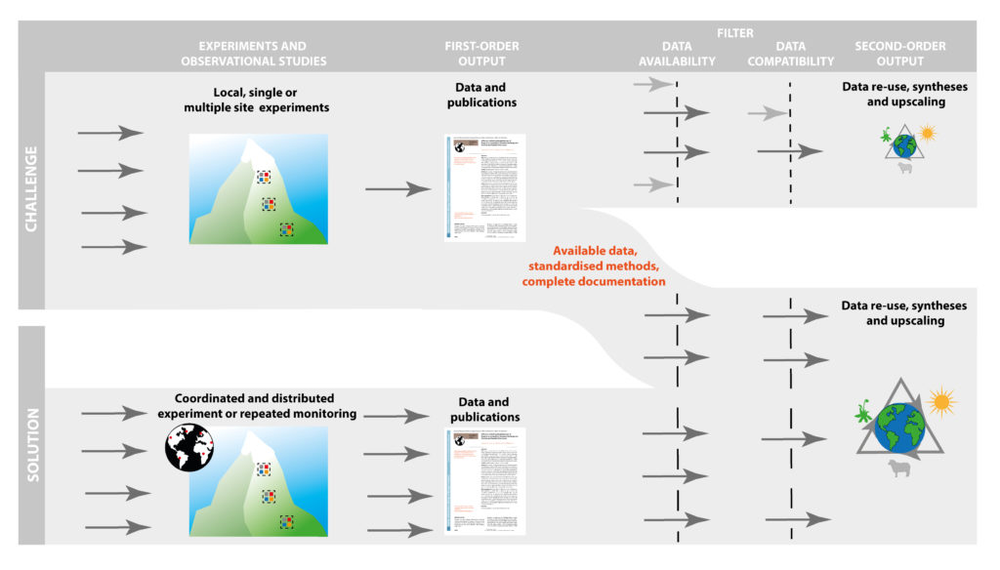
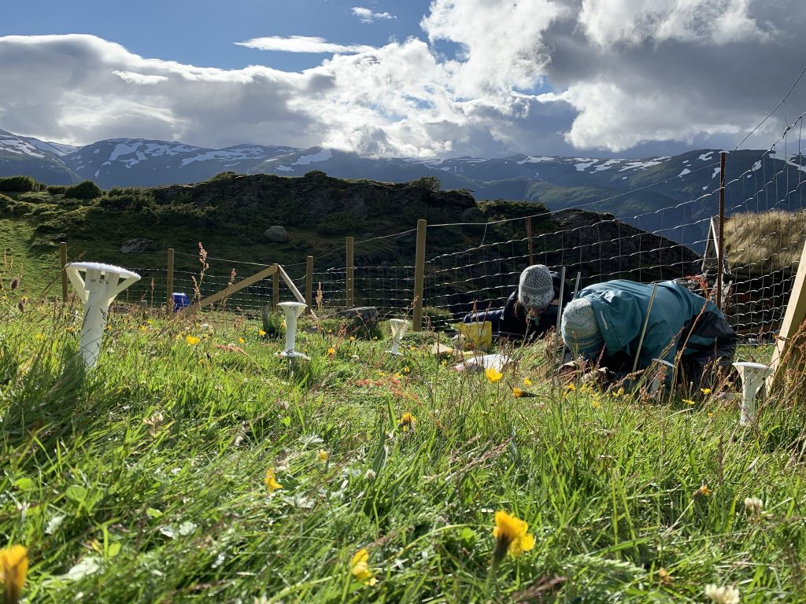
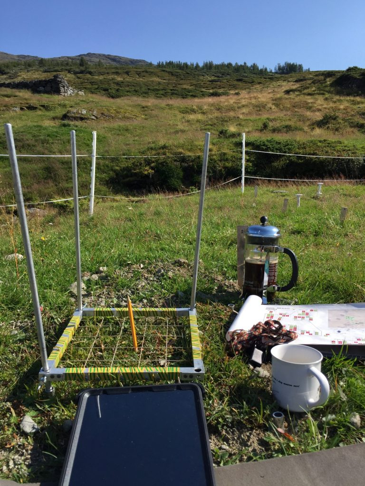
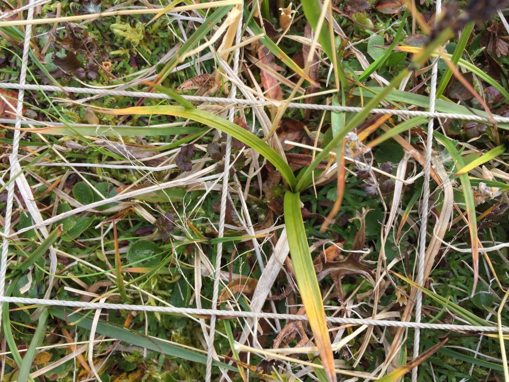

The Aim of ClimEx Handbook
Climate change is a worldwide threat to biodiversity and ecosystem structure, functioning, and services. To understand the underlying drivers and mechanisms, and to predict the consequences for nature and people, we urgently need better understanding of the direction and magnitude of climate-change impacts across the soil–plant–atmosphere continuum.
An increasing number of climate-change studies is creating new opportunities for meaningful and high-quality generalisations and improved process understanding. However, significant challenges exist related to data availability and/or compatibility across studies, compromising opportunities for data re-use, synthesis, and upscaling. Many of these challenges relate to a lack of an established “best practice” for measuring key impacts and responses. This restrains our current understanding of complex processes and mechanisms in terrestrial ecosystems related to climate change.

To overcome these challenges, we collected best-practice methods emerging from major ecological research networks and experiments, as synthesised by 115 experts from across a wide range of scientific disciplines. Our handbook contains guidance on the selection of response variables for different purposes, protocols for standardised measurements of 66 such response variables, and advice on data management. Specifically, we recommend a minimum subset of variables that should be collected in all climate-change studies to allow data re-use and synthesis, and give guidance on additional variables critical for different types of synthesis and upscaling.
The goal of this community effort is to facilitate awareness of the importance and broader application of standardised methods to promote data re-use, availability, compatibility, and transparency. We envision improved research practices that will increase returns on investments in individual research projects, facilitate second-order research outputs, and create opportunities for collaboration across scientific communities. Ultimately, this should significantly improve the quality and impact of the science, which is required to fulfil society’s needs in a changing world.
(PART) General Information
1 Get Engaged
1.1 Get Engaged
 If
you want to get engaged in the ClimEx Handbook send an email to
climexhandbook@uib.no
If
you want to get engaged in the ClimEx Handbook send an email to
climexhandbook@uib.no
2 History
The EU Cost Action ClimMani (2014-2018) focussed on building and strengthening the experimental climate-change research community. Key goals of

this Action were to provide guidelines for best experimental practices, and to advance experiment–data–model interactions. ClimMani therefore set out to develop and promote common protocols as a community effort to guide future measurements and experiments, and to improve future inter-site comparisons, meta-analyses, and model–experiment interactions.
In March 2017, 26 ClimMani members met for a workshop and initiated the collection of measurement protocols in climate-change studies. The structure and outline for the project was developed, and leaders for the five chapters appointed. Researchers were identified that could lead protocols based on their scientific expertise. In total, the protocol writing team consisted of 85 authors, who wrote the protocols based on their expert knowledge and existing protocols in the literature.
In a second round, 50 experts reviewed the protocols, after which the authors finalised the protocols by the end of 2017. A second workshop was organised in January 2018 to finalise and harmonise all protocols and agree on data presentation. In total, 115 scientists from 21 countries on four continents were involved.
3 Issue Tracker
3.1 Issue Tracker
We want to ensure that the ClimEx Handbook will also be a useful
resource for the community in the future. Comments and suggestions for
updating the protocols are welcome and can be made
here.
The comments and suggestions will be assessed by the authors of the ClimEx Handbook periodically, and it might take some time before you hear back from us. All the changes and updates that are made to the protocols are track changed via our GitHub repository.
4 Who We Are
4.1 Who We Are
The ClimEx Handbook was written by 115 scientists from 21 countries on four continents. See individual protocols for the detailed author list.
The ClimEx Handbook developing team consists of:
Aud H. Halbritter
I’m the editor of the ClimEx handbook and webpage. My research interests are global change and ecosystem ecology. I work in alpine areas and use large-scale experimental, trait-based and gradient approaches. Currently, I am working on the THREE-D project, studying the effects on warmer climate, nitrogen deposition and grazing on biodiversity and carbon cycling in grasslands.
Vigdis Vandvik
María Almagro
María Almagro is a soil ecologist and biogeochemist working at the Soil and Water Conservation Research Group from the Spanish Research Council, Murcia, Spain. Her research focuses on understanding the impacts of changes in climate, land use and land management on soil carbon fluxes with particular interest in soil respiration, plant litter decomposition, and sediment dynamics. She is in charge of Chapter 2.2.10 Soil water erosion
Gesche Blume-Werry
Gesche is a Postdoctoral researcher at the University of Greifswald, Germany. She is an ecosystem ecologist with a passion for high latitude ecosystems and interested in the interplay of plants and their environment. Her work in arctic tundra and temperate peatlands focuses on belowground plant processes, such as root phenology and root production, and often includes measurements outside of the growing season.
Hans De Boeck
I’m a researcher at the University of Antwerp, and was editor of chapter 5 of this handbook (stress physiology). My research field is global change ecology, with a focus on effects of climate change and climate extremes on the functioning of terrestrial ecosystems, and modulation of impacts by ecosystem characteristics (biodiversity, composition, etc.). I’m involved in AnaEE, which connects experimental research platforms in Europe.
Ika Djukic
I am researcher at the Environment Agency Austria. My research interests lays in understanding of biogeochemical processes on the interface vegetation-soil in alpine ecosystems across different biomes. Currently, I am coordinating a global litter decomposition initiative, TeaComposition, and I am involved in Soil BON forum focusing on global soil biodiversity monitoring. I contributed to the section 2.2.6 of the Handbook: Foliar litter decomposition
Lucia Fuchslueger
I’m a post doc researcher at the Centre of Microbiology and Environmental Systems Science at University in Vienna, Austria. My research focuses on soil biogeochemisty, on the role of microbes in soil organic matter production and turnover, how microbes influence soil carbon storage and nutrient availability and how they interact, compete or collaborate with plants belowground - on small scales in the rhizosphere to large gradients from tropical to subarctic ecosystems. I am in charge of chapter 2.2.8 Soil organic matter (SOM) decomposition.
Anke Jentsch-Beierkuhnlein
I am a professor of disturbance ecology and vegetation dynamics at the University of Bayreuth in Germany and one of the main authors of the ClimEx Handbook. My experimental research focusses on the effects of climate extremes on biodiversity and ecosystem functions, and I am leading the chapter on species and interactions. With my research site representing temperate grassland I participate in several collaborative, distributed, ecological experiments in ecology such as DroughtNet, NutNet, HerbDivNet, SIGNAL and SUSALPS.
Klaus Steenberg Larsen
I am associate professor at the University of Copenhagen with a research focus on effects of climate change on carbon and nitrogen cycling in ecosystems and in particular on the exchange of greenhouse gases (CO2, CH4 and N2O). I am much involved in the European research infrastructure for experimentation on ecosystems called AnaEE, where I am heading the AnaEE Technology Centre. I also coordinate the national Danish node for AnaEE called AnaEE Denmark and site manager of the CLIMAITE experiment in a Danish heathland ecosystem.
Jonas Lembrechts
Jonas Lembrechts is a postdoctoral researcher at the University of Antwerp, Belgium, interested in the environmental conditions experienced by plants at their range limits. He is in charge of Chapter 5.1 - Chlorophyll fluorescence.
Marc Macias-Fauria
I am associate professor at the School of Geography & the Environment, University of Oxford (United Kingdom). I contributed to the section 5.12 of the Handbook: Reflectance assessment of plant physiological status My research interests focus on the coupling of vegetation with abiotic processes in cold environments (mostly Arctic and alpine). To this end, I often employ remote sensing of vegetation over a range of scales. I also like to look for fossil material to infer long-term ecological processes.
Catherine Preece
I’m a postdoctoral researcher at CREAF (Ecological and Forestry Applications Research Centre) in Catalonia, Spain, and was reviewer for chapter 2.1.5 Root exudation (in situ). I study plant-soil interactions and their responses to climate change in both natural and agricultural systems. My current work is focused on differences between crops and their wild relatives.
Relena R. Ribbons
My research is focused on soil biogeochemistry, forest and ecosystem ecology, and climate science. I am interested in examining the functional links between tree species, soils, microbial communities and nitrogen cycling. My research extends from dendroclimatology and aboveground and belowground interactions in natural and managed landscapes included forests, prairies, wetlands, and agricultural sites.
Fiona Soper
I am an ecosystem ecologist and Assistant professor at McGill University, Canada. My research explores the interface between plant physiology and ecosystem nutrient cycling. I work across a range of biomes from deserts to rainforests, and am especially fascinated by drivers and responses to global change. I am the author of Chapter 2.1.6 (Foliar nutrient stoichiometry and resorption).
Thomas Wohlgemuth
I’m a senior scientist at the Swiss Federal Institute for Forest, Snow and Landscape Research WSL, Switzerland. My research topic is disturbance ecology in forests of Central Europe with a focus on forest rejuvenation and tree recruitment. In my lab, studies on tree and forest resilience are performed as well as experiments on the comparative growth of tree species and provenances using treatment combinations.
(PART) Section 1: Site Characteristics and Data Management
5 1.1 Optimising the study design
5.0.0.1 1.1.1 What to measure and report and why?
A basic site description for an experimental or observational site includes the location where the study was performed and under what biotic and abiotic conditions. The documentation of the basic characteristics of the system and correct reporting of the basic data facilitates and improves comparisons with other studies and downstream usage of the data in meta-analyses and other data syntheses (Hillebrand & Gurevitch, 2013; Haddaway & Verhoeven, 2015; Gerstner et al., 2017). For any study it is thus important to report and measure the following information for each site: i) geographical location and basic site description, ii) abiotic and biotic properties of the ecosystem, iii) basic climate and weather data, and iv) experimental set-up, analysis, and results. More specific for climate-change experiments sensu stricto, variables that may be influenced by the manipulation need to be measured in all treatments. These include variables such as soil moisture, temperature, and nutrient availability, along with various biotic responses described in detail in other protocols (see Supporting Information S2 Carbon and nutrient cycling, S3 Water cycling, S4 Species and interactions and S5 Stress physiology). For in situ experiments (e.g. space and time), it is important to measure variables that may be influenced by the spatial or temporal component of the experiment.
The geographical location and basic site description should describe the study location i.e. coordinates, vegetation type, and climate (Hillebrand & Gurevitch, 2013; Morueta-Holme et al., 2018). This effort enables and facilitates further upscaling and modelling of the experiments beyond the observational boundary as well as increasing the potential for the dataset to be used in meta-analysis.
The pre-treatment measurements of the abiotic and biotic properties of the ecosystem report the conditions of the soil–plant–atmosphere system before the experimental manipulation (i.e. baseline ecosystem measurements) and enables between-experimental site comparisons in a global context. It is crucial to measure these key variables before the manipulations start in order to evaluate changes imposed by ambient, non-manipulated environmental conditions. Similarly, for natural experiments and long-term monitoring, baseline data (e.g. pre- and/or post-observational measurements) are important. The key variables that should be reported are of a physical, chemical, and biological nature, and also concern ecosystem services (e.g. water quality, carbon and nutrient cycling, biodiversity; Costanza et al., 1997). They are also important for process modelling and data usage in a meta-analysis. In addition to the before-after treatment measurements, it is advisable to have plots in the experimental design that test control vs. impact (Christie et al. 2019).
When conducting a climate-change study, it is crucial to measure environmental conditions during the study and if applicable in every treatment as these potential drivers of ecosystem functioning may deviate substantially from ambient conditions, and treatments may have effects on other drivers, such as warming leading to changes in the water balance (Damgaard et al., 2018). The most important climate variables include air temperature, relative humidity, and precipitation (which may be in the form of irrigation or precipitation removal), as well as soil temperature and moisture.
Finally, for the further use of the data from a climate-change studies, i.e. for a meta-analysis, it is crucial to correctly follow open science practise and report the study design, analysis, and results (Hillebrand & Gurevitch, 2013; Haddaway & Verhoeven, 2015; Gerstner et al., 2017).
5.0.0.2 1.1.2 Setting up a sustainable climate-change study
Once a decision on the important matters in the research are made, such as the research question, the experimental treatments and study design, the study system, site selection, and other important issues related to the research (which is not the purpose of this protocol and will not be discussed here), a number of more practical issues have to be decided. Climate-change studies are expensive and resource demanding and the goal should be to make the most out of them. One of the most important decisions is that of sustainability: how long will the study last, how many people and how much activity will be involved, and is there any chance that there will be new projects and measurements coming in? As a general rule of thumb, there is little to lose by erring on the side of optimism (as in expecting a lot of activity), although financial and spatial constraints may, of course, limit the options. Some general advice to guide decision-making is offered in Table 1.1 and Figure 1.1.
5.0.0.3 1.1.3 At which spatial scale should you measure?
The scale at which a variable should be measured has to be considered carefully. Measurements can be quick and simple or labour-intensive and expensive. Most importantly, the scale of the measurements should depend on the research question and the study system, but here are some general rules that are widely applicable, unless there are strong reasons to do differently related to the research questions or study design:
- Generally, all variables that are stable across the site and that are not affected by the experiment within the timeframe of the study should be measured at the site scale.
- Conversely, variables that are influenced by the experimental treatments should be measured at the plot scale.
- Variables that vary across the site should preferably be measured at the block or plot scale.
In practice, many of these decisions will be affected by economic and data analysis considerations, and there is likely to be a choice between expensive installations/optimal measurements with low replication (i.e. in some but not all treated plots) v. using cheaper/simpler measurements and technology which may allow measuring it across all replicates in the experiments. However, cheap technology and smaller and better loggers are developing rapidly, offering new opportunities. In heterogeneous habitats (horizontal and vertical), it is advisable to measure variables in several places.
5.0.0.4 1.1.4 What is the ideal sampling interval?
Similar considerations should be made for the sampling intervals. The frequency of the sampling will mainly depend on the temporal resolution of interest (annual variation, seasonal patterns, daily fluctuations) and also on whether manual sampling or automated loggers are used. If the data are used for modelling, it is important to consider the required temporal resolution of the model, which is often on a fine scale. For example, modelling of ecosystem gas exchange will require half-hourly to hourly climate data input. The calculation of some long-term variables such as seasonal temperature sums or daily maxima also requires relatively high-resolution data. Also here, rapid improvements in technology open up opportunities.
Table 1.1 Checklist of questions to ask and guidance when setting up a sustainable and multi-purpose climate-change study from site to sub-plot level.
| Scale | Question | Guidance |
|
Site (selection) Figure 1.1A |
What does the system represent? Which environment, habitat, ecosystem, former and present land use? Are there any specific factors like off-site effects (run-off, shade, nutrient inputs etc.) to consider? |
Sites should be placed within the limits of the relevant system, avoiding off-site effects when possible. Please note if former land use only affects part of the study area. Blocks (or other study design features) should be chosen to capture within-site heterogeneity due to environmental or biotic variability, or off-site effects. |
|
Single-site or multi-site study? Is the interest in the treatment effects per se, or across site comparisons of these effects?
Are there other reasons for replicating across sites such as generality of the response, relevance across several systems etc.?
|
Single-site studies are easier and cheaper to maintain, allowing resources to be spent on experimental factors and response variables. Multiple-site studies allow across site comparisons, but it is then important to consider your “outer design”, i.e. should sites be along gradients or replicates in similar environmental settings, how many replicates are needed (e.g. to fit a regression at site level), etc. Multi-site studies increase the costs and effort, but these also depend on the study and location of the different sites. |
|
| Are any permits necessary and contacts to ensure site sustainability? |
Obtain permits from the government and landowners well in advance. Ideally get permits beyond the funding period for potential extension of the study. |
|
|
Is any site-scale maintenance needed? Fencing, grazing, mowing?
Any control needed for that? |
Building a fence and moving might need the agreement of the landowner. Calculate enough time and money for maintenance. If the site maintenance affects your responses, you might need (yet) another set of controls. |
|
|
What site-scale data are needed? How many measurements are needed? |
Report all the information needed to situate your study in space, time, and in the relevant ecological context. If you have a heterogeneous system, you likely need more than one measuring point in space (horizontal and vertical) and time. Any variables affected by the experimental treatments need monitoring on a finer scale (see below) Draw detailed maps of your study site with all blocks, plots, and installations clearly indicated. Take pictures; they are essential to document study set-up and design, for data collection (e.g. relocating samples), and outreach, and can be useful for data quality checks. |
|
|
Within-site study design (blocks) Figure 1.1B |
How to ensure sustainable site set-up? |
The area should be large enough to accommodate the study, treatments and the necessary unmanipulated controls / sampling areas for site-level factors. The site set-up should provide space (buffer area) to avoid contamination of for example treatments, and between blocks to carry out the measurements. In sensitive systems or when plots are small, consider installing boardwalks, etc. to minimise disturbance. A central pole supporting a ladder can be used in small plots to reach every point without touching the ground. The potential observer effects should always be considered and can be reduced by minimising disturbance, i.e. sampling intensely but not at the expense of statistical power (De Boeck et al., 2008). |
| What block-scale data is needed? | Any response, predictor or co-variable that will be used in statistical analyses should be measured at this scale, if at all possible. This maximises the statistical power of the analyses. | |
| Is there space for additional experiments and/or measurements? | Set aside areas for add-on measurements and project extensions - preferably within blocks, as that maximises opportunities for project integration. | |
|
Within-block study design (plots) Figure 1.1C |
How to ensure sustainability of studies in plot set-up? Where are data measured permanently and where destructively? |
Plots should be large enough to encompass the responses of interest, and thus have to match the study aim and study system. The plot size should also take into account the complexity and heterogeneity of the study system (De Boeck et al., 2015). Plots should be large enough for sensor installation and sampling. It is recommended to divide the plots into destructive and non-destructive sampling areas. Permanently mark and map all plots and sub-areas within plots individually, and include back-up marking (e.g. buried metal nails, or similar) in case primary marking is lost. A standardised (systematic) marking and within-plot design regime is easier to relocate if lost. |
|
What plot-scale data are needed?
|
All variables that are directly affected by a treatments should be measured at the plot scale. It is advisable to have different control plots that control for before-after treatment effects and control vs. impact during the experiment (Christie et al. 2019). Pictures of the plots at each sampling date are useful as they document the data collection and can also provide various kinds of additional data. |
|
|
Within-plot study design (sub-plot, sample) Figure 1.1C |
Where are data measured permanently and where destructively? What sub-plot data are needed? |
Sub-plots can be used for dividing plots into zones, for destructive, non-destructive sampling. Sub-plots can also be used directly for sampling purposes, e.g. frequency data or mapping. Sensors and non-intrusive measurements can be installed in and under the permanent sub-plots, e.g. lysimeters, mini-rhizotron. Sub-plot data can be used directly in data analyses, and they are very useful for data checking, i.e. when resampling the same sub-plot over time, data from different time steps can be compared. In destructive sampling: plug soil-sampling holes with soil from within the block to avoid drainage issues and mark them to avoid resampling. |

5.0.0.5 1.1.5 References
Costanza, R., d’Arge, R., de Groot, R., Farber, S., Grasso, M., Hannon, B., … van den Belt, M. (1997). The value of the world’s ecosystem services and natural capital. Nature, 387, 253-260.
Christie, A. P., Amano, T., Martin, P. A., Shackelford, G. E., Simmons, B. I., & Sutherland, W. J. (2019). Simple study designs in ecology produce inaccurate estimates of biodiversity responses. bioRxiv, 612101.
Damgaard, C. F., Holmstrup, M., Schmidt, I. K., Beier, C., & Larsen, K. S. (2018). On the problems of using linear models in ecological manipulation experiments: lessons learned from a climate experiment. Ecosphere, 9(6), e02322.
De Boeck, H. J., Liberloo, M., Gielen, B., Nijs, I., & Ceulemans, R. (2008). The observer effect in plant science. New Phytologist, 177(3), 579–583.
De Boeck, H. J., Vicca, S., Roy, J., Nijs, I., Milcu, A., Kreyling, J., … Beier, C. (2015). Global change experiments: Challenges and opportunities. Bioscience, 65(9), 922–931.
Gerstner, K., Moreno-Mateos, D., Gurevitch, J., Beckmann, M., Kambach, S., Jones, H. P., & Seppelt, R. (2017). Will your paper be used in a meta-analysis? Make the reach of your research broader and longer lasting. Methods in Ecology and Evolution, 8(6), 777–784.
Haddaway, N. R., & Verhoeven, J. T. A. (2015). Poor methodological detail precludes experimental repeatability and hampers synthesis in ecology. Ecology and Evolution, 5(19), 4451–4454.
Hillebrand, H., & Gurevitch, J. (2013). Reporting standards in experimental studies. Ecology Letters, 16(12), 1419–1420.
Morueta-Holme, N., Oldfather, M. F., Olliff-Yang, R. L., Weitz, A. P., Levine, C. R., Kling, M. M., … Ackerly, D. D. (2018). Best practices for reporting climate data in ecology. Nature Climate Change, 8(2), 92–94.
6 1.2 Geographical location and basic site description
6.0.0.1 1.2.1 History
Ecosystem history, which includes historical soil and land management (i.e. disturbance, grazing, harvests or harvest regime, nutrient input and contamination, species introductions or extinctions) gives crucial information as any such changes may have a knock-on effect on a range of responses (Sala et al., 2000; Kepfer-Rojas et al., 2015). Providing accurate details of the ecosystem history (e.g. the number and degree of prescribed burning, fertilisation schemes, timber volume removed or the quantity of grazing animals) can be useful when assessing the impacts of land-use history and comparing different sites. These historical factors may also affect the responses of ecosystems to future environmental manipulations, such as climate, nutrient, and land use (Luo & Chen, 2013; Domec et al., 2015; Kröel-Dulay et al., 2015; De Keersmaecker et al., 2016). Finally, ecosystem history can be of value if the ratio of C3 to C4 plants has changed, for example through crop rotations, as this allows for analyses of ecosystem processes that are based on stable isotopes without additional cost.
6.0.0.2 1.2.2 Location
Latitude and longitude coordinates should be given (e.g. via GPS), in addition to the resolution of the position (e.g. ±3 m). Coordinates can help with finding additional information about a study site, such as weather data from a nearby station, or remote sensing products. It is also common to give the name of the location of the study site, the region, and country or continent. Multiple locations can be shown on a map.
6.0.0.3 1.2.3 Elevation (metres above sea level), slope (degrees), and aspect (degrees)
Atmospheric pressure, temperature, and radiation (including UV-B) change consistently with increasing elevation, while many other factors such as precipitation and wind vary regionally along elevational gradients (Körner, 2007). Slope is helpful in explaining observations related to soil hydraulic properties as well as the radiative conditions. Both slope and aspect influence surface temperature and are useful to report on a hill and in mountains, where topography changes over short distances.
Elevation can be extracted from a GPS, and slope and aspect can easily be measured using a clinometer and compass, respectively. A number of free apps for these measurements are now available for smartphones. For slope, a long rigid plank can be placed on the ground and the clinometer sat flush on the plank in order to measure the slope. If the small-scale heterogeneity is high, a measuring post set to eye level > 10m away from the plot provides a more accurate measurement of the average slope. Aspect is measured using a compass, facing downslope. Note that these parameters can be measured on different spatial scales; plot, block, or site. At coarser scales, these parameters can be determined from reference map sources.
6.0.0.4 1.2.4 Climate data
Long-term climate data from each study site should be reported to enhance reproducibility (Morueta-Holme et al., 2018). Common variables are mean annual temperature and precipitation, seasonality, and length of the growing season. Mean annual temperature and precipitation may not be very informative whereas summer maximum, winter minimum temperature, and growing season length are more relevant. It is important to cite the source of the data, the time frame over which the data were collected, name of the location if the data were obtained by a weather station, and (if applicable) to explain any data processing (Morueta-Holme et al., 2018).
6.0.0.5 1.2.5 Vegetation and habitat type
The habitat type (e.g. forest, grassland, desert), dominant plant functional type (e.g. trees, graminoids, forbs, mosses), cover and height of the dominant vegetation layers (e.g. trees, shrubs, dwarf-shrubs, herbaceous, cryptogams), and vegetation type (using relevant national or international classification schemes) of the study site should be described. It is also common to list the dominant species, and some biodiversity or structural information such as species richness and/or evenness.
6.0.0.6 1.2.6 References
De Keersmaecker, W., Rooijen, N., Lhermitte, S., Tits, L., Schaminée, J., Coppin, P., … Somers, B. (2016). Species‐rich semi‐natural grasslands have a higher resistance but a lower resilience than intensively managed agricultural grasslands in response to climate anomalies. Journal of Applied Ecology, 53(2), 430–439.
Domec, J.-C., King, J. S., Ward, E., Christopher Oishi, A., Palmroth, S., Radecki, A., … Noormets, A. (2015). Conversion of natural forests to managed forest plantations decreases tree resistance to prolonged droughts. Forest Ecology and Management, 355, 58–71.
Kepfer-Rojas, S., Verheyen, K., Johannsen, V. K., & Schmidt, I. K. (2015). Indirect effects of land-use legacies determine tree colonization patterns in abandoned heathland. Applied Vegetation Science, 18(3), 456–466.
Körner, C. (2007). The use of ‘altitude’ in ecological research. Trends in Ecology & Evolution, 22(11), 569–574.
Kröel-Dulay, G., Ransijn, J., Schmidt, I. K., Beier, C., De Angelis, P., de Dato, G., … Peñuelas, J. (2015). Increased sensitivity to climate change in disturbed ecosystems. Nature Communications, 6, 6682.
Luo, Y., & Chen, H. Y. H. (2013). Observations from old forests underestimate climate change effects on tree mortality. Nature Communications, 4, 1655.
Morueta-Holme, N., Oldfather, M. F., Olliff-Yang, R. L., Weitz, A. P., Levine, C. R., Kling, M. M., … Ackerly, D. D. (2018). Best practices for reporting climate data in ecology. Nature Climate Change, 8(2), 92–94.
Sala, O. E., Chapin, F. S., Armesto, J. J., Berlow, E., Bloomfield, J., Dirzo, R., … Wall, D. H. (2000). Global biodiversity scenarios for the year 2100. Science, 287(5459), 1770–1774.
7 1.3 Soil type and physical characteristics
Soils are physically composed of mineral and organic particles in varying sizes. The combined particles form the soil matrix that shapes the structure and pore spaces of soil. In turn, soil physical properties determine many key soil processes from soil water-holding capacity to cation exchange capacity that affect other life forms and ecosystem function. The key soil physical characteristics include soil structure, bulk density, and texture.
For the description of standard methods for soil characterisation we refer the reader to the Soil Science Society of America (SSSA) series on Methods of Soil Analysis; in particular, part 3 – Chemical Methods (Swift & Sparks, 2009) and part 4 – Physical Methods (Dane & Topp, 2002). Although the SSSA – Physical Methods (Dane & Topp, 2002) lists a complete set of methods, note that some of these traditional methods are being replaced by newer technology. In addition, the USDA Soil Survey Field and Laboratory Methods Manual (NRCS, 2014b) can be used as a new and simple guideline for methods in determining soil physical properties.
In this protocol, we focus on providing a basic guideline and starting point for determining soil physical properties in the context of climate-change studies as our main focus is on understanding ecosystem processes and plant behaviour.
Other variables that can be of relevance in some cases are described in Supporting Information S4. Water cycling (for example water potential and water repellency).
Soil samples
Several protocols in section 1.3 and 1.4 require sampling of soils. Here, we describe in general how to sample soil and important things that should be considered. Note that the sampling can vary considerably depending on the research question, method and individual needs (also check individual protocols for more details).
Before taking a soil sample the vegetation and litter (i.e. dead vegetation) are removed. Note that in some systems, litter can form a thick layer and be part of the organic horizon. Whether this layer is removed or not depends on the research question. The number of samples depends on many factors (e.g. research question, experimental design, finances, short-range variability in soil properties across the area of interest). A power analysis can give you a hint of the needed sample size. The soil is generally heterogenous and it is advisable to take a minimum of 3-5 soil samples per study unit (e.g. plot or block level). Samples from the same unit can also be pooled to represent the variability and reduce costs and time, but should be avoided if possible. Climate change experiments often have limited space for destructive sampling, and it is advisable to plan the soil sampling beforehand. If samples are taken from several plots with the same layout, it is advised to take samples in a fixed location within a plot and/or with similar aboveground vegetation. This helps the comparability between plots. The researcher should also consider if the variable of interest changes with time, which will determine if the sampling should be done once or several times.
For some measurements it can be necessary to use gloves and clean the equipment well between each soil sample to avoid contamination (e.g. genetic analysis).
The depth of the soil sampling depends on the method, research question and type of soil. It is advised to sample the whole soil profile (down to the bedrock) for pool size assessment, or at maximum root depth if the roots or microbial activity are the focus. Separate soil cores are usually taken from the organic layer defined as accumulated organic material on top of the mineral soil and mineral layer, but a higher resolution can be useful in deep soils and soils with several layers (Maaroufi et al., 2015).
Temporal scale (one time several times): if the aim is to assess total pool size of an element, it is advisable to sample only once as these numbers do not vary considerable with season. When the aim is to sample more dynamic pools (inorganic nutrients or microbial pool sizes) it is advisable to sample several times.
Spatial scale: if the aim is to assess the pool size in an area, it is recommended to take several soil samples, because the soil is often heterogeneous.
The size of the soil core depends a lot on the method, but often the diameter of the soil core is 3-8 cm. In general, structural and physical methods for measuring soil structure require diameters that are larger than the sampled soil depth to avoid damaging the soil structure. For processes related to microbial activity, it is advisable to take many small soil samples e.g. 10 samples with a 2 cm corer.
The amount of soil used is very variable and depends on the property of interest. For some methods it is crucial to know the volume of the soil sample (e.g. bulk density) to be able to scale up to an area basis, while for others a small amount of soil is needed (e.g. when concentrations or activity and not pool sizes are in focus).
Transport and storage – Each soil sample should be properly labelled including location, plot ID, profile number layer, depth, and date. The samples should not be exposed to the air or sun, as water will evaporate from the sample and warming can accelerate and activate unwanted biological processes. Soil samples are usually transported in plastic bags or boxes and kept cool during transport (ca. 4°C). For determination of very sensitive pools or processes, it may be recommended to place samples in a cooler with dry ice (e.g. for extraction of soil enzymes). Ideally, the soil is analysed immediately after sampling, and some methods require quicker processing than others. Often quick processing is however not possible (e.g. due to continuous field work) and then the soils should be stored in the proper way. There is no general rule for how to store soil before the analysis and it depends on the origin of the soil and the purpose and method. For example, tropical soils should not be stored in a fridge, since the low temperature can kill microbes and soil lysis will lead to underestimation of the microbial biomass. However if soil is sampled frozen in cold environments (e.g. arctic), then the samples should be kept frozen until the analysis. For some methods and soils the fridge or freezer is recommended for storage, while for others air or oven drying is the best practice.
For some analyses, the roots and stones (>2 mm) are removed from the soil samples, using a sieve of 2 mm mesh width. If the total mass of the samples needs to be known, the removed parts are weighed (e.g. for bulk density). This is especially important for stony soils. For measurements that require undisturbed soil (e.g. many physical measurements), the stones are not removed.
The soil samples are often used fresh, but for some analysis the soil needs to be dried. However, this depends largely on what the samples are used for. Soils can be dried at room temperature, low oven temperature or higher temperature. Table 1.3.1 shows how to process soil samples for the most commonly used methods (for more details check individual protocols).
Table 1.3.1 Temperature for processing soil samples for common methods.
| Temperature for drying | Method | Protocol |
|
Fresh soil kept in fridge (4°C)
|
Soil microbial biomass
Soil enzymatic activity PLFA Soil activity assays Bulk density pH |
2.2.1
1.3.4 1.4.1 |
| Air dried, room temperature (25°C) | Soil water repellency | 3.6 |
| Oven dried, low temperature (max. 55°C) | Soil carbon and nutrient stocks | 2.2.4 |
| Oven dried, high temperature (70° – 105°C) | SOM (loss on ignition) | 1.4.2 |
Where to start
The International Co-operative Programme on Assessment and Monitoring of Air Pollution Effects on Forests (Cools & De Vos, 2016) and the Countryside Survey (Emmett et al., 2010) give a good overview over how to sample soils.
7.0.0.1 1.3.1 Soil types and horizons (layers)
Unlike sediments that are deposited over time, soils are developed as horizons from the parent material under the influence of local climate, topography, and biota. There are many soil types based on the composition of the parent material, texture, and organic matter. A soil horizon is a parallel layer to the soil surface with distinctly different physical, chemical, and biological characteristics from the layers above or beneath. A vertical layout of a soil (based on a soil pit) illustrates the different horizons in a soil profile (Figure 1.3.1). Determining soil horizons within a soil profile will provide important information about the life history of the soil as well as different characteristics of soil properties.

The soil profile should be described according to a soil classification that is compatible with the World Reference Base (WRB) system. Soil type should be reported according to the World Reference Base for Soil Resources system (ISRIC, 1998; IUSS Working Group WRB, 2006, 2014). This is the international standard taxonomic soil classification system, which is endorsed by the International Union of Soil Sciences (IUSS) and replaces the FAO soil classification. Reporting the depth of soil layers or horizons should be included in any description as this is important for comparison and modelling. Most classification systems recognise six master soil horizons which are designated using the capital letters O, A, E, B, C, and R (Figure 1.3.1). Reporting O to B is usually sufficient for climate-change studies. O = Organic matter, characterised by high levels of organic material: dark in colour; A = Mineral topsoil, often organically stained: contains highly weathered parent material (rocks) and is lighter in colour than the O horizon; E = Eluviated – used to label a horizon that has been highly leached of minerals, clays, and sesquioxides: usually determined as a pale layer below the A horizon and only exists in older, well-developed soils; B = Subsoil, an illuviated layer that accumulates iron, clay, aluminium, and organic compounds: lighter in colour and often may be reddish due to the iron content; C = Broken-down bedrock, also known as substratum; R = Bedrock.
What and how to measure?
Traditionally, determining soil horizons involves excavating a pit exposing a clean vertical surface of approximately 1 metre depth and identifying the depths of different horizons based on colour and physical properties. This can be simplified by using a soil auger. First, identify the depth of soil until the bedrock or parent material layer. Using a soil auger, sample the continuous soil profile until bedrock or parent material is reached, and identify horizons based on different characteristics. Samples are often collected and taken back to the laboratory for analysis. A wide number of texts are available that describe soil analysis: those more widely used include NRCS (2014a) and Dane & Topp (2002).
7.0.0.2 1.3.2 Plant rooting depth and distribution by depth
The plant rooting depth is important to measure the distribution of roots throughout the soil profile as this may change when the plants are subjected to climatic treatments. If the site is heterogeneous (e.g. slope or changes in vegetation), rooting depth should be determined in more than one place. Plant rooting depth is measured by digging a soil profile (see 1.3.1 Soil horizon) and can be measured when the soil layers are determined.
7.0.0.3 1.3.3 Stone content (%)
Stone content defines the volume and mass in the soil containing stones > 2 mm. Stones do not contribute to plant nutrient supply or water-holding capacity in the soil and the weight and volume of stones are most often subtracted when > 5% of the soil volume (ICP, 2016). To calculate the stone content, an air-dried soil sample of known mass is sieved so that stones larger than 2 mm are removed. The stones are weighed and the % of stones above 2 mm can be determined and reported as a % of the total mass of soil.
7.0.0.4 1.3.4 Bulk density (g cm–³)
Bulk density is a measure of the amount of soil per unit volume of oven dried soil and gives information on the physical status of the soil. The soil organic matter content, soil texture, the minerals in the soil and degree of compaction define the bulk density. Bulk density varies substantially among soils. Mineral soils have a bulk density of around 1–1.6 g cm–³, while in organic soils and friable clay it is well below 1 g cm–³. Bulk density values are essential when determining soil carbon and nutrient stocks, as they allow a conversion from concentrations to mass per area (see also protocol 2.2.4 Soil carbon and nutrient stocks).
What and how to measure?
A range of equipment is available for the determination of bulk density and general guidance can be found in Grossman & Reinsch (2002). A volumetric core (the volume must be known), which should be at least 75 mm in diameter, with the depth no greater than the diameter, should be taken down the soil profile, ideally at 5 cm increments. Although dry bulk density can be determined on the entire soil sample (with stones), it is usually reported for soil sieved through 2 mm mesh, the fine-earth fraction, which is suitable for subsequent calculations of carbon and nutrient stocks. The stones (> 2mm) are removed and weighed separately. The soil samples are dried at 105°C and then weighed.
Dry bulk density is calculated using the following equation:

The stone volume can be determined through the water displacement method using this equation:

The stone density is usually assumed to be ~2.65 g cm–³.
Resampling of bulk density is normally not required. However, especially severe drought may change the bulk density and resampling of bulk density is recommended after 3–5 years.
7.0.0.5 1.3.5 Soil texture
Soil texture is the particle size distribution of soil determined by a percent combination of sand, silt, and clay that presents coarseness of a soil. Soil texture partly determines soil water-holding capacity and permeability, which provides important characteristic information about soil physical properties. The percentage clay in particular is also highly relevant for nutrient availability, as the clay colloids serve as exchange places for cations such as NH4+, K+, Ca2+ and Mg2+, similarly to humus particles.
What and how to measure?
Particle size analysis (PSA) is used in soil science to determine soil texture (sand, silt, and clay content), and often used in soil physics to determine soil hydraulic properties. PSA is often reported for the fine earth fraction of soils < 2 mm in diameter. Soil samples returning to the laboratory are usually sieved to remove particles > 2mm and root material. PSA can be determined using sedimentation with either the pipette method or the hydrometer method (Gee & Or, 2002). The texture of soil is expressed using the soil textural triangle from the composition of different particles (NRCS, 2014b). Texture in organic soils is not measured.
7.0.0.6 1.3.6 Water table depth (m)
The water table is the upper extent of the phreatic or groundwater zone, in which all soil pores and fractures are completely filled with water. The water table marks the end of the vadose zone. The phreatic zone and therefore the water table depth may vary between seasons and with dry or wet periods.
In areas with shallow water tables, for example in deltaic areas (van der Ploeg et al., 2012) or wetlands (Oosterwoud et al., 2017), or in soils with a perched water table owing to less permeable soil layers, the water table influences the amount of water available for vegetation and soil evaporation. For vegetation, the water table influences water availability as roots may grow towards the water table or via capillary rise of groundwater. Capillary rise is a physical phenomenon where water will rise in a hollow tube with a small diameter. The smaller the tube the higher the water will rise. Soil pores form a network of such hollow tubes, and the height of capillary rise depends on the soil texture and structure (Brutsaert, 2005, section 9.6), leading to a range from 0.2–0.5 m capillary rise for coarse textured soil (e.g. sand) to 0.8–several m for fine textured soil (e.g. clay). For soil evaporation, water is transported from the underlying soil layers by liquid and vapour transport, which can be influenced by groundwater through capillary rise. If the water table is expected to influence the climate-change studies it is recommended to monitor the water table fluctuations.
What and how to measure
The water table can be measured with a piezometer, which is a tube with a perforated, screened part for groundwater to enter the tube while soil material is kept out (Reeve, 1986). It can be installed by drilling a hole manually with a soil auger or with drilling equipment. Before installing in a site with perched water tables, ensure that the site’s less permeable layers are not drained by making holes through them, thus altering the soil hydraulics. Once the piezometer is installed, measurements can be done manually with a measurement tape with a float or automatically with a pressure transducer (e.g. Oosterwoud et al., 2017).
7.0.0.7 1.3.7 References
Brutsaert, W. (2005). Hydrology: An Introduction. Cambridge: Cambridge University Press.
Dane, J. H., & Topp, G. C. (Eds.). (2002). Methods of soil analysis: Part 4—Physical methods. In J. H. Dane, & C. G. Topp (Eds.), Methods of Soil Analysis (pp. 1018–1020). Madison, WI: Soil Science Society of America, American Society of Agronomy.
Gee, G. W., & Or, D. (2002). 2.4 Particle-size analysis. In J. H. Dane, & C. G. Topp (Eds.), Methods of Soil Analysis: Part 4—Physical Methods (pp. 255–293). Madison, WI: Soil Science Society of America.
Grossman, R. B., & Reinsch, T. G. (2002). 2.1 Bulk density and linear extensibility. In J. H. Dane, & C. G. Topp (Eds.), Methods of Soil Analysis: Part 4—Physical Methods (pp. 201–228). Madison, WI: Soil Science Society of America.
ISRIC International Soil Reference and Information Centre. (1998). World Reference Base for Soil Resources. World Soil Resources Reports 84. Rome, FAO.
IUSS Working Group WRB. (2006). World Reference Base for Soil Resources 2006: A Framework for International Classification, Correlation and Communication. Rome, FAO.
IUSS Working Group WRB. (2014). World Reference Base for Soil Resources 2014: International Soil Classification System for Naming Soils and Creating Legends for Soil Maps (3rd ed.). Rome, FAO.
Maaroufi, N. I., Nordin, A., Hasselquist, N. J., Bach, L. H., Palmqvist, K., & Gundale, M. J. (2015). Anthropogenic nitrogen deposition enhances carbon sequestration in boreal soils. Global Change Biology, 21(8), 3169-3180.
NRCS Natural Resources Conservation Service. (2014a). Soil Electrical Conductivity: Soil Health – Guides for educators. United States Department of Agriculture.
NRCS Natural Resources Conservation Service. (2014b). Soil Survey Field and Laboratory Methods Manual, Soil Survey Investigations Report No. 51 (Version 2.0.). United States Department of Agriculture.
Oosterwoud, M., van der Ploeg, M., van der Schaaf, S., & van der Zee, S. (2017). Variation in hydrologic connectivity as a result of microtopography explained by discharge to catchment size relationship. Hydrological Processes, 31(15), 2683–2699.
Reeve, R. C. (1986). Water potential: piezometry. In A. Klute (Ed.), Methods of Soil Analysis: Part 1—Physical and Mineralogical Methods (pp. 545–561). Madison, WI: Soil Science Society of America, American Society of Agronomy.
Swift, R. S., & Sparks, D. L. (2009). Methods of Soil Analysis: Part 3—Chemical Methods. In D. L. Sparks, A. L. Page, P. A. Helmke, & R. H. Loeppert (Eds.), Soil Science Society of America Book Series, 5. Madison, WI: Soil Science Society of America, American Society of Agronomy.
Van der Ploeg, M. J., Appels, W. M., Cirkel, D. G., Oosterwoud, M. R., Witte, J.-P. M., & van der Zee, S. E. A. T. M. (2012). Microtopography as a driving mechanism for ecohydrological processes in shallow groundwater systems. Vadose Zone Journal, 11, 3.
8 1.4 Soil chemistry and nutrient availability
The focus in terrestrial ecology is typically on carbon (C) and nitrogen (N), and to a lesser extent on phosphorus (P). But other nutrients such as potassium (K), magnesium (Mg), calcium (Ca), and zinc (Zn) can limit plant growth and influence ecosystem behaviour when in short supply (see e.g. Sardans & Peñuelas, 2015). However, the availability of individual nutrients can be difficult to assess, as, for example, no perfect method exists to determine availability of N or P to plants (Binkley & Hart, 1989; Holford, 1997; Neyroud & Lischer, 2003). Commonly used proxies are N mineralisation (protocol 2.2.5 Nutrient mineralisation), soil NO3 and NH4 concentrations (Keeney & Nelson, 1982), soil C:N ratio (protocol 2.2.4 Soil carbon and nutrient stocks), Olsen P and Bray P (Bray & Kurtz, 1945; Olsen, 1954), and/or ion exchange resin membranes like Plant Root Simulator (PRS) probes (1.4.2 Soil nutrient), but these all have their drawbacks (Binkley & Hart, 1989; Holford, 1997; Neyroud & Lischer, 2003).
Although no perfect method exists to determine nutrient availability, some soil properties are very indicative of the nutrient status of a soil (Vicca et al., 2018). These include bedrock, texture (1.3.5 Soil texture), pH (1.4.1 Soil pH), bulk density (1.3.4 Bulk density), cation exchange capacity, and soil organic matter (SOM). These key soil physical properties are relatively easy to measure and in combination are very indicative of the nutrient status (see e.g. Van Sundert et al., 2018; Vicca et al., 2018). These data on soil properties and nutrients allow disentangling the role of nutrient availability as well as classifying a study site as nutrient-poor, nutrient-rich, or moderately fertile (sensu Vicca et al., 2012; Terrer et al., 2016).
Plant N and P uptake can be calculated from plant N and P concentrations and plant growth:
N uptake = plant growth x \[N\]
N and P concentrations are important to determine the nutrient status of a study and thus important information for modelling and meta-analysis (see Table 2 in the main paper). Other variables that can be of relevance in some cases are described in stress physiology (Supporting Information S5) and carbon and nutrient cycling (Supporting Information S2).
Below, we present a brief description of complementary measurements that are relatively easy to conduct routinely at any site or study and can provide a robust characterisation of nutrient availability across sites. This list largely corresponds to the measurements recently suggested in Vicca et al. (2018), which we refer to for further reading on the interpretation and relevance of the different measurements.
8.0.0.1 1.4.1 Soil pH (unitless)
pH is a measure of acidity in the soil and affects many chemical processes, such as plant nutrient availability. Most soil methods are conducted on air-dry soil: however, given that understanding the chemical environment that plants experience is important in ecosystem studies, we propose the use of field-moist soil in preference to dried soil for pH measurements. Soil pH is then carried out on a suspension of fresh field-moist soil in deionised water (DIW), or 0.01 M KCl or CaCl2. Often both DIW and a saline suspensions are measured because both values provide different information. Soils in their natural condition can vary widely in the salt content, also within the same soil the concentration of salts vary with the variation in soil water content, these variations in salinity have an effect in the measurements of pH. The impact of these variations on pH is minimised when measured in 0.01 M of a saline solution and allows valid comparisons of soil pH between seasons and years.
What and how to measure
We focus on measurements in water. The soil:water ratio depends on the amount of organic matter in the soil with a ratio of soil to water of 1:2.5 to 1:5 by weight for mineral soil. The method described here is based upon that employed by the Soil Survey of England and Wales (Avery & Bascomb, 1974) and by the Countryside Survey (Emmett et al., 2010), but measuring soil pH in deionised water using a 1:1 mixture is reported in the NRCS (2014) handbook. Organic soils, however, require a much higher ratio of soil to water of 1:10 or 1:20 by weight
Calibrate the pH meter in buffer solutions. Check pH 4 & 7 buffer calibrations regularly within a sample batch, for example every 10 samples. If either buffer calibration is more than 0.02 of a pH unit from the correct value, repeat calibration. Weigh 10 g of fresh field-moist soil into a 50 ml plastic pH beaker. Add 25 ml of deionised water and stir the suspension thoroughly. Allow it to stand for 30 minutes, stirring occasionally. Measure soil pH electrometrically using the calibrated pH meter.
Include a suitable number of duplicate samples, i.e. carry out the pH measurement twice on approximately one-tenth of the samples. Thoroughly rinse the pH probe between samples with a stream of water from a deionised water wash bottle. Ensure the glass bulb of the pH probe is cleared of soil and be particularly thorough after probes have been immersed in pH buffers. If duplicated samples are not in agreement, repeat the measurements on a small set of samples; from this set of information, determine whether outliers skewed the measurements (remove the outliers if there is good reason, e.g. instrument failure), or whether soil pH was highly variable (report average and standard deviation).
New probes for field measurements of pH are available for instant and fast pH measurements, which enables high-resolution measurement of pH in space and time (e.g. Nielsen et al., 2017).
8.0.0.2 1.4.2 Soil nutrients
Integrated assessment of soil cation and nutrient availability for plants
Resin membranes like Plant Root Simulator (PRS) probes (Western AG, Saskatchewan, Canada) absorb anions or cations (depending on the type of probe) that are in the soil solution. They thus provide an indication of the nutrient availability as experienced by the biota during the time of burial and are particularly useful for assessing relative differences among treatments and studies. The probes are inserted into the soil for a short period (e.g. 7 days) and are subsequently analysed in the lab for the nutrients of interest (e.g. NO3, NH4, P, K, Ca, Mg, Mn, Fe, Zn). The results indicate the flux of each of these nutrients over the time of burial. Caution is needed to avoid saturation of the probes (i.e. burial time should not be too long) and the absorption of ions is sensitive to soil moisture, which may complicate interpretation in studies where soil moisture differs between the treatments. More information is available from the website of the commercially available PRS probes (https://www.westernag.ca/innov). Instead of buying the commercial product, it is also possible to produce the probes for low cost (see protocol 2.2.5. Nutrient mineralisation).
Cation exchange capacity, exchangeable base cations, and soil electrical conductivity
One of the most important properties of soil colloids (clay and organic matter particles < 0.001 mm diameter) is their ability to adsorb, hold, and release ions. Colloids are generally negatively charged and thus attract primarily positively charged ions, i.e. cations. The more negative charges, the higher the capacity of the soil to bind cations, and thus the higher its cation exchange capacity (CEC, typically expressed as the amount of positive charges that can be exchanged per mass of soil).
For soil fertility, the total exchangeable base cations (Mg2+, Ca2+, and K+ in particular) are especially relevant. These are the base cations bound to the negatively charged colloids. They can be taken up relatively easily by plant roots through exchange for H+. The fraction of CEC that is occupied by exchangeable base cations is termed base saturation. This fraction can be small, especially in acidic and leached soils where many of the negative charges are occupied by (acidic) cations, such as H+, Al3+, or Fe3+.
What and how to measure
Cation exchange capacity and total exchangeable base cations can be determined using the most common method of Brown (1943), for which 1 M buffer ammonium acetate solution (NH4Ac) at pH 7 serves as the extractant. Soil samples are collected and sieved (< 2mm) and air dried.
Soil electrical conductivity (EC; mS m–1)
This is the ability of soil to conduct an electrical current and is commonly expressed in units of milliSiemens per metre (mS m–1). EC estimates the concentration of ions in the soil, namely the anions Cl–, SO42-, and HCO3– and the cations Na+, Ca2+, K+, and Mg2+ (Friedman, 2005; He et al., 2012). Although the relationship between conductivity and salt concentration varies somewhat depending on ionic composition, EC provides a simple and reasonably accurate estimate of solute concentration (Carter & Gregorich, 2006). In addition, as soil EC is affected by several soil properties, its measurement can also be used as a proxy for estimating directly or indirectly the variations in these properties, including soil texture, bulk density, soil water content, water-holding capacity, cation exchange capacity, organic matter, and subsoil characteristics (Corwin & Lesch, 2005a; Grisso et al., 2005). For this reason, over the years, EC has been largely used in agriculture to estimate soil salinity, nutrient availability and loss, soil texture, and available water capacity, being considered a reliable and cost-effective measurement (NRCS, 2014). As an example, high EC values often reflect poor plant growth conditions and the potential for salinity problems (Karlen et al., 2008).
As this variable has been shown to be closely related with distinct soil properties, its measurement assumes special importance under the context of climate change where some properties are expected to alter with consequences for soil quality and its functioning.
What and how to measure
The first measurements of soil EC were made on soil samples, but it was found to be more consistent to measure EC in soil extracts. Hence, the standard laboratory method for determining the EC of a soil is by using an aqueous paste extract of soil and to measure the electrical conductivity of the solution using a conductivity meter (Richard, 1954; Carter & Gregorich, 2006). The determination is carried out to obtain an indication of the content of water-soluble electrolytes in a soil. Because the saturated paste extract method requires time and skill, a fixed soil:water ratio (e.g., 1:1 to 1:5) has been generalised when measuring soil EC and solute concentrations (ISO 11265, 1994). Knowing that EC in soil is dependent on several properties and therefore is highly variable, several samples should be taken from multiple locations.
Besides the methods based on an aqueous paste extract of soil, the apparent EC (ECa, bulk soil electrical conductivity) has become one of the most frequently used measurements to characterise the spatial distribution of soil salinity at field scales. Nowadays, ECa is considered an invaluable tool for the establishment of spatial variation and for identifying the soil properties influencing crop production in precision agriculture (Corwin & Lesch, 2005a, 2005b). ECa has also been used to identify homogeneous areas within a field to implement experiments. Field methods used to measure ECa include the Wenner array or four-electrode, time domain reflectometry (TDR) and electromagnetic (EM) induction (Carter & Gregorich, 2006). The EM method, by using a non-contact sensor, is the most commonly used because measurements can be taken quickly over large areas, the large volume of soil measured reduces local scale variability, and measurements are possible on relatively dry or stony soils because contact is not required between soil and sensor (Hendrickx et al., 1990).
Carbon and nutrient stocks
The soil carbon and nutrient stock is the amount of C, N, P, K, and other nutrients stored in the soil. These stocks are coupled with net primary production and decomposition of above- and belowground material and highly related to climate. For further details and how to measure see protocol 2.2.4 Soil carbon and nutrient stocks.
Soil organic matter (SOM, %)
It is important to determine the soil organic matter (SOM), as changes in environmental factors such as temperature or water inputs may alter the SOM content (directly and indirectly by influencing organic matter inputs), and variation among studies may also be explained by differences in SOM. Soil organic matter can be determined using the Walkley Black method or the loss-on-ignition (LOI) procedure described in Nelson & Sommers (2009). LOI is generally preferred over the Walkley Black method because is less time consuming. One of the aspects to consider when measuring LOI is the choice of combustion temperature in the furnace and the duration of time used for combustion.
What and how to measure
We propose the method of Ball (1964) which is determined by subtracting the weight of a soil after 16 h drying at 105 °C from a soil after placing in a furnace overnight at 375 °C. The amount of soil used to determine SOM is adjustable but should not be lower than 10 g fresh soil to ensure a representative sample. For more details also see Countryside Survey (Emmett et al., 2010).
Soil inorganic carbon (mass fraction: g C g soil-1)
Some soils contain significant amounts of carbonates, especially soils in dry climates. Changes to warming or the precipitation regime may alter the carbonate content. Reporting carbonates is not routine, but may be important if a total carbon balance is required. We refer the reader to the methods described in Nelson & Sommers (2009).
8.0.0.3 1.4.3 Soil trace metals
Trace metals are a group of metals and metalloids (e.g. arsenic (As) and selenium (Se); hereinafter called “metal”) found in low concentrations (< 100 mg kg–1), in mass fractions of ppm or less, in some specified source, for example, soil, water, plant, or tissue (Duffus, 2002; Hooda, 2010). The most common trace metals are beryllium (Be), aluminium (Al), vanadium (V), chromium (Cr), manganese (Mn), iron (Fe), cobalt (Co), nickel (Ni), copper (Cu), zinc (Zn), As, Se, molybdenium (Mo), silver (Ag), cadmium (Cd), antimony (Sb), mercury (Hg), thallium (TI), and lead (Pb). Trace metals are important elements in the biogeochemistry of terrestrial ecosystems (Driscoll et al., 1994). The concentration of trace metals in soil directly relates to the growth and development of vegetation and reflects the supply of mineral nutrition to plants by soil (Zhanbin et al., 2013). Depending on the dose, trace metals can become potentially toxic for life (Kabata-Pendias & Mukherjee, 2007; Kabata-Pendias, 2010). Although trace metals are naturally present in soils (Kabata-Pendias & Mukherjee, 2007; Kabata-Pendias, 2010), their concentrations in soils are significantly influenced by anthropogenic activities, which greatly alter the biogeochemical cycles of trace metals and their bioavailability (Driscoll et al., 1994). The observed changes in soil properties could affect soil functioning through their impacts on the composition and activity of microbial communities, which can provoke toxic responses in soil microorganisms, including reducing microbial biomass and decreasing carbon mineralisation and disturbing enzymatic activities. Furthermore, metal stress has been found to change the structure and diversity of microbial communities (Certini, 2005; Hart et al., 2005; Hartmann et al., 2005; Frey et al., 2006). This eventually affects the biogeochemical system’s functions driven by these organisms, since soil microorganisms are important agents in nutrient cycling and energy flow. Assessing the levels of trace metals in soils is crucial to determining the environmental impacts of climate change on soil quality, structure, and functioning (Curran-Cournane et al., 2015).
What and how to measure?
Total concentration of trace metals in soils: sample digestion is often a necessary step before determining total element mass concentration in soils. Various digestion methods are used to determine the mass concentration of trace metals in soils, including different combinations of concentrated acids (Gaudino et al., 2007). The dissolution of soil samples can be obtained by rigorous digestion using the standardised aqua regia extraction protocol which consists of treating a soil sample in a heated 3:1 mixture of hydrochloric (HCl) and nitric (HNO3) acids (ISO 11466, 1995; USEPA 3050B, 1996). This is a partial digestion of the soil solid phase consisting of a very strong acid digestion that dissolves almost all elements that become “environmentally available” (McLean & Bledsoe, 1992; USEPA 3050B, 1996; USEPA 3051A, 2007). Although the aqua regia digestion method is internationally accepted to measure concentrations in soil, fractions of elements extracted by this method are not available for biological uptake (Gaudino et al., 2007). If a total trace metals concentration is required, the soil samples are treated with a mixture of HNO3 + HCl + HF (hydrofluoric acid) using microwave heating with a suitable laboratory microwave system (USEPA 3052, 1996; EN 13656, 2002). After the extraction procedures (ISO 11466, 1995; USEPA 3050B, 1996; USEPA 3052, 1996; EN 13656, 2002; USEPA 3051A, 2007), the extract is filtered through 0.45μm nitrocellulose membrane filters, diluted, and analysed by atomic absorption spectrometry (flame: FAAS or graphite furnace: GFAS) or inductively coupled plasma spectrometry (optical emission: ICP-OES or mass: ICP-MS).
Another commonly used procedure to measure the “total” concentration of trace metals is the digestion with hot HNO3 and hydrogen peroxide (H2O2) procedure also outlined in USEPA 3050B (1996). This method adds H2O2 in order to enhance the destruction of the organic matter in soil.
Sequential extractions of trace metals in soils: chemical extraction is employed to operationally define trace metal fractions, which can be related to chemical species, as well as to potential mobile, bioavailable, or ecotoxicological phases of a sample. Fractionation is usually performed by a sequence of selective chemical extraction techniques, including the successive removal, or dissolution, of these phases and their associated metals (Hlavay et al., 2004). The extraction procedures consist of reacting a soil sample with increasing strengths of chemical solutions. Numerous extraction procedures have been developed for trace metals (Sposito et al., 1982; McLean & Bledsoe, 1992; Singh et al., 1998; Wenzel et al., 2001; Imperato et al., 2003; Hlavay et al., 2004; Hooda, 2010). Supernatants from each fraction will be analysed by FAAS, GFAA, ICP-OES or ICP-MS.
For the Sequential extraction there are numerous methods using different extractants at different concentrations. For example, extraction with specific extracting agents, especially containing chelating agents, allows examination of the distribution of soluble exchangeable forms. Ethylenediaminetetraacetic acid (EDTA), used as extracting agent for many trace elements, has been widely applied in soil science and environmental chemistry (Kocialkowski et al., 1999; Michaud et al., 2007; Komárek et al., 2008).
8.0.0.4 1.4.4 References
Avery, B. W., & Bascomb, C. L. (1974). Soil Survey Technical Monograph No. 6. Soil survey laboratory methods. Dorking, UK: Adlard & Son Ltd.
Ball, D. F. (1964). Loss-on-ignition as an estimate of organic matter and organic carbon in non-calcareous soils. European Journal of Soil Science, 15(1), 84–92.
Binkley, D., & Hart, S. C. (1989). The components of nitrogen availability assessments in forest soils. In B. A. Stewart (Ed.), Advances in Soil Science (pp. 57–112). New York, NY: Springer.
Bray, R. H., & Kurtz, L. T. (1945). Determination of total, organic, and available forms of phosphorus in soils. Soil Science, 59(1), 39–46.
Brown, I. C. (1943). A rapid method of determining exchangeable hydrogen and total exchangeable bases of soils. Soil Science, 56(5), 353.
Carter, M. R., & Gregorich, E. G. (2006). Soil Sampling and Methods of Analysis (Vol. 44). Boca Raton: CRC Press.
Certini, G. (2005). Effects of fire on properties of forest soils: a review. Oecologia, 143(1), 1–10.
Corwin, D. L., & Lesch, S. M. (2005a). Apparent soil electrical conductivity measurements in agriculture. Computers and Electronics in Agriculture, 46(1), 11–43.
Corwin, D. L., & Lesch, S. M. (2005b). Characterizing soil spatial variability with apparent soil electrical conductivity: I. Survey protocols. Computers and Electronics in Agriculture, 46(1), 103–133.
Curran-Cournane, F., Lear, G., Schwendenmann, L., & Khin, J. (2015). Heavy metal soil pollution is influenced by the location of green spaces within urban settings. Soil Research, 53(3), 306–315.
Driscoll, C. T., Otton, J. K., & Iverfeldt, Å. (1994). Trace metals speciation and cycling. In B. Moldan & J. Cerny (Eds.), Biogeochemistry of Small Catchments: a tool for environmental research (pp. 299–322). John Wiley & Sons.
Duffus, J. H. (2002). Heavy Metals – A Meaningless Term? (vol. 74, pp. 793–807). IUPAC Technical Report.
Emmett, B. A., Reynolds, B., Chamberlain, P. M., Rowe, E., Spurgeon, D., Brittain, S. A., … Woods, C. (2010). Countryside Survey: soils report from 2007 (No. 9/07). Centre for Ecology & Hydrology (Natural Environment Research Council).
EN 13656. (2002). EN 13656 – Characterization of waste. Microwave assisted digestion with hydrofluoric (HF), nitric (HNO3), and hydrochloric (HCl) acid mixture for subsequent determination of elements. European Committee for Standardization.
Frey, B., Stemmer, M., Widmer, F., Luster, J., & Sperisen, C. (2006). Microbial activity and community structure of a soil after heavy metal contamination in a model forest ecosystem. Soil Biology and Biochemistry, 38(7), 1745–1756.
Friedman, S. P. (2005). Soil properties influencing apparent electrical conductivity: a review. Computers and Electronics in Agriculture, 46(1), 45–70.
Gaudino, S., Galas, C., Belli, M., Barbizzi, S., de Zorzi, P., Jaćimović, R., … Sansone, U. (2007). The role of different soil sample digestion methods on trace elements analysis: a comparison of ICP-MS and INAA measurement results. Accreditation and Quality Assurance, 12(2), 84–93.
Grisso, R. D., Alley, M. M., Holshouser, D. L., & Thomason, W. E. (2005). Precision farming tools: soil electrical conductivity, 442(508), 1–6.
Hart, S. C., DeLuca, T. H., Newman, G. S., MacKenzie, M. D., & Boyle, S. I. (2005). Post-fire vegetative dynamics as drivers of microbial community structure and function in forest soils. Forest Ecology and Management, 220(1), 166–184.
Hartmann, M., Frey, B., Kölliker, R., & Widmer, F. (2005). Semi-automated genetic analyses of soil microbial communities: comparison of T-RFLP and RISA based on descriptive and discriminative statistical approaches. Journal of Microbiological Methods, 61(3), 349–360.
He, Y., DeSutter, T., Prunty, L., Hopkins, D., Jia, X., & Wysocki, D. A. (2012). Evaluation of 1:5 soil to water extract electrical conductivity methods. Geoderma, 185-186, 12–17.
Hendrickx, J. M. H., Baerends, B., Raza, Z. I., Sadig, M., & Akram Chaudhry, M. (1990). Soil salinity assessment by electromagnetic induction of irrigated land. Soil Science Society of America Journal, 56, 1933–1941.
Hlavay, J., Prohaska, T., Weisz, M., Wenzel, W. W., & Stingeder, G. J. (2004). Determination of trace elements bound to soil and sediment fractions (IUPAC Technical Report). Journal of Macromolecular Science, Part A: Pure and Applied Chemistry, 76(2), 415–442.
Holford, I. C. R. (1997). Soil phosphorus: its measurement, and its uptake by plants. Soil Research, 35(2), 227–240.
Hooda, P. S. (2010). Trace Elements in Soils. John Wiley & Sons.
Imperato, M., Adamo, P., Naimo, D., Arienzo, M., Stanzione, D., & Violante, P. (2003). Spatial distribution of heavy metals in urban soils of Naples city (Italy). Environmental Pollution, 124(2), 247–256.
ISO 11265. (1994). ISO 11265. Soil quality – Determination of the specific electrical conductivity. Geneva: International Organization for Standardization.
ISO 11466. (1995). ISO 11466. Soil quality – Extraction of trace elements soluble in aqua regia. Geneva: International Organization for Standardization.
Kabata-Pendias, A. (2010). Trace Elements in Soils and Plants (Fourth Edition). Boca Raton: CRC Press.
Kabata-Pendias, A., & Mukherjee, A. B. (2007). Trace Elements from Soil to Human. Springer Science & Business Media.
Karlen, D. L., Andrews, S. S., Wienhold, B. J., & Zobeck, T. M. (2008). Soil quality assessment: Past, present and future. Electronic Journal of Integrative Biosciences, 3, 3–14.
Keeney, D. R., & Nelson, D. W. (1982). Nitrogen — Inorganic forms. In A. L. Page, R. H. Miller, & D. R. Keeney (Eds.), Methods of Soil Analysis, Part 2—Chemical and Microbial Properties (pp. 643–698). Madison, WI: Soil Science Society of America Inc.
Kocialkowski, W. Z., Diatta, J. B., & Grzebisz, W. (1999). Evaluation of chelating agents as heavy metals extractants in agricultural soils under threat of contamination. Polish Journal of Environmental Studies, 8(3), 149–154.
Komárek, M., Száková, J., Rohošková, M., Javorská, H., Chrastný, V., & Balík, J. (2008). Copper contamination of vineyard soils from small wine producers: A case study from the Czech Republic. Geoderma, 147(1), 16–22.
McLean, J. E., & Bledsoe, B. E. (1992). Behaviour of Metals in Soils (EPA Ground Water Issue) (pp. 1–25). Washington, USA: Environmental Protection Agency.
Michaud, A. M., Bravin, M. N., Galleguillos, M., & Hinsinger, P. (2007). Copper uptake and phytotoxicity as assessed in situ for durum wheat (Triticum turgidum durum L.) cultivated in Cu-contaminated, former vineyard soils. Plant and Soil, 298(1-2), 99–111.
Nelson, D. W., & Sommers, L. E. (2009). Total carbon, organic carbon, and organic matter. In Methods of Soil Analysis part 3—Chemical Methods (pp. 961–1010). Soil Science Society of America, American Society of Agronomy.
Neyroud, J.-A., & Lischer, P. (2003). Do different methods used to estimate soil phosphorus availability across Europe give comparable results? Journal of Plant Nutrition and Soil Science, 166(4), 422–431.
Nielsen, K. E., Irizar, A., Nielsen, L. P., Kristiansen, S. M., Damgaard, C., Holmstrup, M., … Strandberg, M. (2017). In situ measurements reveal extremely low pH in soil. Soil Biology and Biochemistry, 115, 63–65.
NRCS Natural Resources Conservation Service. (2014). Soil Electrical Conductivity: Soil Health – Guides for educators. United States Department of Agriculture.
Olsen, S. R. (1954). Estimation of available phosphorus in soils by extraction with sodium bicarbonate. United States Department of Agriculture.
Richard, L. A. (1954). Diagnosis and improvement of saline and alkalie soils (Agriculture Handbook No. 60). United States Department of Agriculture.
Sardans, J., & Peñuelas, J. (2015). Potassium: a neglected nutrient in global change. Global Ecology and Biogeography, 24(3), 261–275.
Singh, S. P., Tack, F. M., & Verloo, M. G. (1998). Heavy metal fractionation and extractability in dredged sediment derived surface soils. Water, Air, and Soil Pollution, 102(3-4), 313–328.
Sposito, G., Lund, L. J., & Chang, A. C. (1982). Trace metal chemistry in arid-zone field soils amended with sewage sludge: I. Fractionation of Ni, Cu, Zn, Cd, and Pb in solid phases. Soil Science Society of America Journal, 46(2), 260–264.
Sundert, K. V., Horemans, J. A., Stendahl, J., & Vicca, S. (2018). The influence of soil properties and nutrients on conifer forest growth in Sweden, and the first steps in developing a nutrient availability metric. Biogeosciences 15(11), 3475-3496.
Terrer, C., Vicca, S., Hungate, B. A., Phillips, R. P., & Prentice, I. C. (2016). Mycorrhizal association as a primary control of the CO2 fertilization effect. Science, 353(6294), 72–74.
USEPA 3050B. (1996). Method 3050B: Acid digestion of sediments, sludges and soils. Methods for evaluating solid waste. Washington: United States Environmental Protection Agency.
USEPA 3051A. (2007). Method 3051: Microwave assisted acid digestion of sediments, sludges, soils and oils. Methods for evaluating solid waste. Washington: United States Environmental Protection Agency.
USEPA 3052. (1996). Method 3052: Microwave assisted acid digestion of siliceous and organically based matrices. Methods for evaluating solid waste. Washington: United States Environmental Protection Agency.
Vicca, S., Luyssaert, S., Peñuelas, J., Campioli, M., Chapin, F. S.,, Ciais, P., … Janssens, I. A. (2012). Fertile forests produce biomass more efficiently. Ecology Letters, 15(6), 520–526.
Vicca, S., Stocker, B. D., Reed, S., Wieder, W. R., Bahn, M., Fay, P. A., … Ciais, P. (2018). Using research networks to create the comprehensive datasets needed to assess nutrient availability as a key determinant of terrestrial carbon cycling. Environmental Research Letters, 13(12), 125006.
Wenzel, W. W., Kirchbaumer, N., Prohaska, T., Stingeder, G., Lombi, E., & Adriano, D. C. (2001). Arsenic fractionation in soils using an improved sequential extraction procedure. Analytica Chimica Acta, 436(2), 309–323.
Zhanbin, L., Qinling, Z., & Peng, L. (2013). Distribution characteristics of available trace elements in soil from a reclaimed land in a mining area of north Shaanxi, China. International Soil and Water Conservation Research, 1(1), 65–75.
9 1.5 Meteorological measurements
Weather includes abiotic factors that impact the functioning of an ecosystem. Meteorological databases can provide fundamental information for climatological and climate-change studies. These observations can be taken manually (weather observer), in automated mode (data-logging system applications or weather station data), or in a hybrid scheme where weather observer efforts are supplemented by automated weather measurements. The most commonly measured meteorological parameters relevant to studies of land–plant–atmosphere interactions are those relating to energy and water fluxes (De Boeck et al., 2017), which in turn affect ecosystem carbon dynamics. Precipitation inputs (e.g. rain and/or snow) and rates of evapotranspiration (commonly estimated on the basis of air temperature, relative humidity, and wind speed values) are needed for water budget assessments. The meteorological systems, both manual and automated, require permanent supervision due to the complex and often harsh ambient conditions. The World Meteorological Organization (WMO) has prepared an extensive reference work on meteorological observations that can be found online (WMO, 2012).
9.0.0.1
9.0.0.2 1.5.1 Weather station and nearby weather station data
A climate-change studies should be equipped with a weather station for measuring climate drivers. A wide variety of weather stations are available but a high quality and reliable automated weather station (hereafter AWS) that is calibrated is desirable. An AWS consists of a weather-proof enclosure containing data logger, telemeter (optional), and meteorological sensors. The whole system should be mounted on a mast and it is powered and backed-up with a battery that is charged with a solar panel, wind turbine, or regular power line if available. The weather station should be mounted above the studied plant canopy. Microclimate often varies considerably across the ground-atmosphere interface (Graae et al., 2012). If possible, multiple measurements should be taken, and in such a manner as to make them relevant for the biotic question at hand (for example, within the soil, on the surface, and/or in the vegetation canopy, inside/outside experimental structures such as open-top chambers (OTC) or rainout shelters) while at the same time allowing calibration with climate station data (which are typically taken 2 m above ground). The specific configuration may vary based on the purpose of the system and local conditions, thus the measurements must be defined before the study. Meteorological measurements that are influenced by an experimental treatment (e.g. air and soil temperature, soil moisture in OTC) should be repeated at each experimental treatment preferably with replicates, and variables that vary across the site should preferably be measured at the block or plot scale (Lamentowicz et al., 2016). These plot-level temperature and rainfall measurements, combined with the site-level AWS data, provide the minimum data needed to monitor and assess whether the planned experimental modifications of climate drivers are being achieved. For all the instruments we recommend using the manufacturer’s instructions regarding set-up and use.
The system may report in real-time using telemetry, which is generally more energy demanding, or record data for collection later. The real-time measurements allow early detection of measuring process disruption, for example logger or sensor failure, and hence might minimise climate data loss, whereas a non-telemetric scheme of the system operation requires visits to the site providing opportunities to inspect the study and enable eventual repairs of the system. Whether to use telemetry or not might be determined by the accessibility of the site, the type of power source, and additional routine manual observation requirements.
Separate sensors connected to the AWS can monitor air temperature, relative humidity, barometric pressure and tendency (change in pressure), wind speed and direction, total, net and photosynthetically active shortwave and longwave radiation fluxes, rainfall and water equivalent snowfall, and snow depth (if relevant). Additionally, soil moisture, soil temperature, and soil matric potential may be observed. Many of the soil moisture sensors measure temperature alongside. This reduces the number of applied sensors and consequent soil disruption. The installation of sensors will depend on the type and configuration of the instrument, but some general approaches to installation can be identified.
New technological advancement coming up with small climate stations that can be placed inside the plots of most climate change experiments and measure multiple microclimate variables for long time periods. One newly developed mini climate station is the tomst TMS-4 data logger, that measures air and soil temperature and soil moisture and has proved to produce reliable data for a range of different habitats (Wild et al., 2019).
Soil sensors are often used to monitor seasonal changes of the soil environment parameters. Daily changes occur, but can often be considered noise against the slower seasonal signal. Rather than measuring at fixed depths, it is of interest to know the moisture and temperature – and matric potential if measured – near the soil surface, e.g. within 5–15 cm. In shallow soils such as in alpine areas, 3–5 cm is recommended (Körner & Hiltbrunner, 2018) at a point corresponding to the maximum root density (Figure 1.5.1). In the best of all worlds, a second set of sensors would be placed at greater depth, perhaps near the bottom of the root system. Such positioning would capture the rare drought or snowmelt events that deplete or refill the whole soil profile moisture. In boreal forests, these deeper sensors are often placed at 50 cm below the surface. As much as we would like to standardise these depths, the variation in diurnal/seasonal cycles and in root water depletion depths prevents convergence on a single recommendation.

When installing sensors in a plot it is generally best to install them horizontally (to measure temperature at the desired depth), which can be achieved by excavating a small trench from outside the plot into the plot (Figure 1.5.1). This prevents preferential flow of water along the cables.
Generally, in areas with rodents, it can be useful to protect the wire of a sensor with PVC tubes to prevent damage. In alpine areas, where there is a lot of snow in spring, it can be advisable to protect the wire higher up, because rodents can climb up on the snow.
For each of the sensors, the optimal sampling interval is every minute and should be reported in the form of half-hourly to hourly averages. For example, modelling of ecosystem gas exchange will require half-hourly (e.g. Papale et al., 2006) to hourly data input.
Data management: high-resolution AWS data need to be quality checked due to the possibility of malfunctioning sensors, lack of power supply or system failures etc. The automated quality control procedures are used for selection (flagging) of uncertain data and the final data quality assessment must be performed by professional personnel that are familiar with local conditions. This visual inspection can be done with basic graphic tools that plot the data and trends for all measurements. Although this method seems less accurate than setting prescribed limits that data must fit within, it does allow for human interpretation and recall of conditions at the site – for example, an automated limit in a script will fail to remember if it was a particularly cold week.
Reporting climate data: when reporting climate data it is important to specify the timeframe in which the data were collected, name of the location if the data were obtained from a weather station, and (if applicable) explain any data processing (e.g. summer temperature, daily mean, cumulative temperature; Morueta-Holme et al., 2018).
Meteorological measurements
A site-based AWS should measure air, soil, and canopy temperature, relative humidity, photosynthetic photon flux density (PPFD), soil moisture, rainfall, and, in windy regions, wind speed (and, if relevant, direction). These measurements will help put plot-level data into context as, for example, air temperature and photosynthetically active radiation affect the level of photosynthetic uptake of atmospheric CO2 by plants. They are also necessary for gap-filling eddy covariance gas flux measurements (protocol 2.3.1 Ecosystem CO2 and trace gas fluxes), used to quantify the greenhouse gas balance of multiple ecosystem types (Kang et al., 2018).
9.0.0.3 1.5.2 Air temperature (°C)
Among other variables, air temperature affects tissue, canopy, and soil temperature and is thus relevant for plant growth, water cycling, microbial activity, and phenological response, and therefore the level of photosynthetic uptake of atmospheric CO2 by plants.
Air temperature should be measured at 2 m above the ground surface, as this is a standard height to compare with weather station data; however, measuring air temperature in the canopy and at ground level is biologically more relevant for the plants. Standard heights for measuring canopy temperature are 20 cm and ground level in low vegetation, and above the canopy in high vegetation, such as forests (Barr et al., 2007; Reichstein et al., 2007). For experiments that affect temperature it is important to measure the treatment effects. For example, an OTC will not affect the air temperature at 2 m.
Tissue temperature, which is relevant for metabolic rates and the water cycle, can be measured directly using infrared thermometers (protocol 5.5 Leaf temperature).
Air temperature should be measured every 1–10 minutes, from which daily minimum, maximum, and cumulative temperature sum can be calculated. The daily minimum and maximum air temperature can be used for a rough estimate of potential evapotranspiration using the Hargreaves equation (Jensen et al., 1997).
9.0.0.4 1.5.3 Soil temperature (°C)
Soil temperature is a primary driver of biogeochemical reactions, impacting responses that climate-change studies often quantify, such as soil respiration (carbon efflux) and nitrogen mineralisation (Knoepp & Swank, 2002; Curtis et al., 2005, also see protocol 3.5 Soil temperature).
Sensors should be installed horizontally and installation depths vary depending on the study objective. When associated with soil respiration or decomposition, sensors should, at minimum, be installed 5 cm beneath the soil surface (Wangdi et al., 2017). For leaf litter decomposition, an additional sensor should be placed at a depth of 2 cm. Soil microbial studies may require temperature profiles layered deeper in the soil (Angle et al., 2017; Che et al., 2018). At least one sensor at each depth should be installed in every plot, more in environmentally heterogeneous plots, such as those with varying topography. Sensors should be connected to a data logger and take measurements every 1–15 minutes. In the absence of a meteorological tower, for example when portable chamber-based gas flux measurements are applied, soil temperature can be measured with handheld thermometer probes or thermocouples installed within the chamber (Collier et al., 2014).
SOILTEMP is an initiative to build a global soil temperature database to provide more relevant temperature data for species.
9.0.0.5 1.5.4 Photosynthetic photon flux density PPFD (μmol m-2 s-1)

Photosynthetically active radiation (PAR) is defined as the spectral range of solar radiation (0.4–0.7 μm) that is used by plants within the process of photosynthesis. The density of the flux of these light molecules is called photosynthetic photon flux density (PPFD) and is a quantitative measure of the energy that reaches the plant canopy. PPFD impacts the rate at which plants photosynthesise, affecting growth and carbon storage. PPFD data are used to calculate scattered light conditions (cloudiness), sunshine hours, and light-use efficiency (LUE), as well as in gap-filling eddy covariance gas flux measurements. In forest ecosystems, multiple sensors can be used to partition LUE of the canopy and sub-canopy, which is important when determining the recovery response (Reed et al., 2014; Stuart-Haëntjens et al., 2015).
One sensor should be mounted above the vegetation, on top of the meteorological platform or tower, positioned to avoid shading by other instrumentation. Due to cloud variation, PPFD should not be retrieved from nearby weather stations. Light environments below a forest canopy will likely change following climate manipulation experiments, so when a sub-canopy is present, additional sensors should be placed between the sub-canopy and canopy, and on the ground surface (Figure 1.5.2). Multiple sensors installed below the canopy capture the heterogeneous light conditions. Sensors installed between the canopy and sub-canopy can be mounted and levelled lower on the meteorological tower, on small tripods, or on hand-made PVC poles.
9.0.0.6 1.5.5 Relative humidity (%)
Relative humidity in combination with air temperature is used to calculate vapour pressure deficit, which can impact plant mortality, stomatal conductance, and, consequently, greenhouse gas fluxes (Breshears et al., 2009; Will et al., 2013; Yuan et al., 2016). This metric is growing more important as temperature increases due to climate change also raise atmospheric moisture demand, unless relative humidity increases (Breshears et al., 2013).
Relative humidity sensors can be installed on a meteorological station or tower, and in forests, should be placed above the canopy as well as below the canopy to assess sub-canopy growth dynamics.
9.0.0.7 1.5.6 Precipitation (mm)
Precipitation is often measured in climate-change studies, because it indicates the amount of water entering a system. It should, however, be stressed that precipitation is not the amount of water available for plants. Depending on the soil and prior meteorological conditions (e.g. a drought period), a considerable amount is intercepted by plant canopy, runs off, or drains into deeper layers of the soil. As such, soil moisture is a better measure of water availability for plants.
A ground-level storage rain gauge collects rain accumulated over a given period of time. Accumulated rainfall is measured in mL of water and converted to mm or rain where Rain \[mm\] = Rain \[mL\] / πr2Funnel \[m<sup>2</sup>\] of the rain gauge. The quantity of rainfall accumulated should never exceed the storage capacity of the gauge. Therefore, the frequency of emptying the rain gauge depends on the precipitation in a given area. Data from ground-level rain gauges are robust and far less vulnerable to issues such as logger downtime or loss of power, etc. In tall vegetation (e.g. forest), readings are often biased by turbulence, and usually precipitation data must be adopted from a nearby location.
The tipping bucket rain gauge consists of a plastic collector that is balanced over a pivot and collects the precipitation. A pre-set amount of precipitation tips the collector and actuates a switch which is then electronically recorded or transmitted to a remote collection station. The tipping bucket can be less accurate, i.e. if the rain stops before the lever has tipped, which is then added to the next rainfall event. Also, heavy rainfall and snow events are often underestimated with tipping buckets (WMO, 2012). In places with high vegetation, falling leaves and needles can plug the rain gauge and should therefore often be checked and cleaned.
Plot treatments such as drought or any rain-interfering structures such as scaffolding, will alter the plot-level rainfall input, therefore measuring direct water inputs to the plots is important. Often a simple manual rain gauge is sufficient on treatment plots.
9.0.0.8 1.5.7 Soil moisture
Soil moisture is the amount of water in the soil (Robinson et al., 2008; Vereecken et al., 2008). It provides the biological moisture pool for microbial activity and plant transpiration supporting terrestrial life. Soil moisture dynamics are likely to respond in different ways to climate change, depending on whether it leads to drought, warming, or excess rainfall (Seneviratne et al., 2010). This will have a direct effect on the biologically available moisture pool, and oxygen levels in the case of wet soils. Moreover, because soil moisture controls microbial activity, carbon and nutrient cycling will be affected, as will greenhouse gas fluxes such as CO2, CH4, and N2O.
For how to measure soil moisture see protocol 3.1 Soil moisture.
9.0.0.9 1.5.8 Rain throughfall
In manipulation experiments where the experimental structures may reduce the amount of rainwater that enters the experimental plots, rain throughfall may be measured. Throughfall is measured easiest with a funnel-storage bottle construction which is placed into the plant canopy. The volume of throughfall is measured at the same time as rainfall accumulated by the rain gauge. In cold regions, bottles need to be exchanged and then thawed in the laboratory for the rain volume to be recorded. The rain throughfall volume on a plot basis is then converted to mm rainfall using the funnel diameter (see 1.5.6 Precipitation). Throughfall and rain gauge values are used to calculate a percentage reduction in rainfall per plot.
9.0.0.10 1.5.9 Wind speed (m s-1) and direction (degrees)
Wind speed and direction can help to interpret temperature measurements, snowmelt date and photosynthetic activity, and is most often associated with ecosystem scale gas flux measurements obtained by eddy-covariance flux towers. Sonic anemometers should be installed at 1.5–2 times vegetation height. Calculations of wind speed and direction may need to be adjusted in hilly terrain (Zitouna-Chebbi et al., 2015).
9.0.0.11 1.5.10 References
Angle, J. C., Morin, T. H., Solden, L. M., Narrowe, A. B., Smith, G. J., Borton, M. A., … Wrighton, K. C. (2017). Methanogenesis in oxygenated soils is a substantial fraction of wetland methane emissions. Nature Communications, 8(1), 1567.
Barr, A. G., Black, T. A., Hogg, E. H., Griffis, T. J., Morgenstern, K., Kljun, N., … Nesic, Z. (2007). Climatic controls on the carbon and water balances of a boreal aspen forest, 1994–2003. Global Change Biology, 13(3), 561–576.
Breshears, D. D., Myers, O. B., & Meyer, C. W. (2009). Tree die‐off in response to global change‐type drought: Mortality insights from a decade of plant water potential measurements. Frontiers in Ecology and the Environment, 7(4), 185–189.
Breshears, D. D., Adams, H. D., Eamus, D., McDowell, N. G., Law, D. J., Will, R. E., … Zou, C. B. (2013). The critical amplifying role of increasing atmospheric moisture demand on tree mortality and associated regional die-off. Frontiers in Plant Science, 4, 266.
Che, R., Deng, Y., Wang, W., Rui, Y., Zhang, J., Tahmasbian, I., … Cui, X. (2018). Long-term warming rather than grazing significantly changed total and active soil procaryotic community structures. Geoderma, 316, 1–10.
Collier, S. M., Ruark, M. D., Oates, L. G., Jokela, W. E., & Dell, C. J. (2014). Measurement of greenhouse gas flux from agricultural soils using static chambers. Journal of Visualized Experiments, 90, e52110.
Curtis, P. S., Vogel, C. S., Gough, C. M., Schmid, H. P., Su, H.-B., & Bovard, B. D. (2005). Respiratory carbon losses and the carbon-use efficiency of a northern hardwood forest, 1999–2003. New Phytologist, 167(2), 437–456.
De Boeck, H. J., Kockelbergh, F., & Nijs, I. (2017). More realistic warming by including plant feedbacks: A new field-tested control method for infrared heating. Agricultural and Forest Meteorology, 237-238, 355–361.
Graae, B. J., De Frenne, P., Kolb, A., Brunet, J., Chabrerie, O., Verheyen, K., … Milbau, A. (2012). On the use of weather data in ecological studies along altitudinal and latitudinal gradients. Oikos, 121(1), 3–19.
Jensen, D. T., Hargreaves, G. H., Temesgen, B., & Allen, R. G. (1997). Computation of ETo under non-ideal conditions. Journal of Irrigation and Drainage Engineering, 123(5), 394–400.
Kang, M., Kim, J., Thakuri, B. M., Chun, J., & Cho, C. (2018). New gap-filling and partitioning technique for H2O eddy fluxes measured over forests. Biogeosciences, 15(2), 631–647.
Knoepp, J. D., & Swank, W. T. (2002). Using soil temperature and moisture to predict forest soil nitrogen mineralization. Biology and Fertility of Soils, 36(3), 177–182.
Körner, C., & Hiltbrunner, E. (2018). The 90 ways to describe plant temperature. Perspectives in Plant Ecology, Evolution and Systematics, 30, 16–21.
Lamentowicz, M., Słowińska, S., Słowiński, M., Jassey, V., Chojnicki, B. H., Reczuga, M. K., … Buttler, A. (2016). Combining short-term manipulative experiments with long-term palaeoecological investigations at high resolution to assess the response of Sphagnum peatlands to drought, fire and warming. Mires and Peat, 18(20), 1–17.
Morueta-Holme, N., Oldfather, M. F., Olliff-Yang, R. L., Weitz, A. P., Levine, C. R., Kling, M. M., … Ackerly, D. D. (2018). Best practices for reporting climate data in ecology. Nature Climate Change, 8(2), 92–94.
Papale, D., Reichstein, M., Aubinet, M., Canfora, E., Bernhofer, C., Kutsch, W., … Yakir, D. (2006). Towards a standardized processing of Net Ecosystem Exchange measured with eddy covariance technique: algorithms and uncertainty estimation. Biogeosciences, 3(4), 571–583.
Reed, D. E., Ewers, B. E., & Pendall, E. (2014). Impact of mountain pine beetle induced mortality on forest carbon and water fluxes. Environmental Research Letters, 9(10), 105004.
Reichstein, M., Ciais, P., Papale, D., Valentini, R., Running, S., Viovy, N., … Zhao, M. (2007). Reduction of ecosystem productivity and respiration during the European summer 2003 climate anomaly: a joint flux tower, remote sensing and modelling analysis. Global Change Biology, 13(3), 634–651.
Robinson, D. A., Campbell, C. S., Hopmans, J. W., Hornbuckle, B. K., Jones, S. B., Knight, R., … Wendroth, O. (2008). Soil moisture measurement for ecological and hydrological watershed-scale observatories: A review. Vadose Zone Journal, 7(1), 358–389.
Seneviratne, S. I., Corti, T., Davin, E. L., Hirschi, M., Jaeger, E. B., Lehner, I., … Teuling, A. J. (2010). Investigating soil moisture–climate interactions in a changing climate: A review. Earth-Science Reviews, 99(3), 125–161.
Stuart-Haëntjens, E. J., Curtis, P. S., Fahey, R. T., Vogel, C. S., & Gough, C. M. (2015). Net primary production of a temperate deciduous forest exhibits a threshold response to increasing disturbance severity. Ecology, 96(9), 2478–2487.
Vereecken, H., Huisman, J. A., Bogena, H., Vanderborght, J., Vrugt, J. A., & Hopmans, J. W. (2008). On the value of soil moisture measurements in vadose zone hydrology: A review. Water Resources Research, 44(4), WOOD06.
Wangdi, N., Mayer, M., Nirola, M. P., Zangmo, N., Orong, K., Ahmed, I. U., … Schindlbacher, A. (2017). Soil CO2 efflux from two mountain forests in the eastern Himalayas, Bhutan: components and controls. Biogeosciences, 14(1), 99–110.
Wild, J., Kopecký, M., Macek, M., Šanda, M., Jankovec, J., & Haase, T. (2019). Climate at ecologically relevant scales: A new temperature and soil moisture logger for long-term microclimate measurement. Agricultural and forest meteorology, 268, 40-47.
Will, R. E., Wilson, S. M., Zou, C. B., & Hennessey, T. C. (2013). Increased vapor pressure deficit due to higher temperature leads to greater transpiration and faster mortality during drought for tree seedlings common to the forest-grassland ecotone. New Phytologist, 200(2), 366–374.
WMO. (2012). Guide to Meteorological Instruments and Methods of Observation. WMO-No. 8. 2008 edition updated 2010. World Meteorological Organization.
Yuan, W., Cai, W., Chen, Y., Liu, S., Dong, W., Zhang, H., … Zhou, G. (2016). Severe summer heatwave and drought strongly reduced carbon uptake in Southern China. Scientific Reports, 6, 18813.
Zitouna-Chebbi, R., Prévot, L., Jacob, F., & Voltz, M. (2015). Accounting for vegetation height and wind direction to correct eddy covariance measurements of energy fluxes over hilly crop fields. Journal of Geophysical Research, D: Atmospheres, 120(10), 4920–4936.
10 1.6 Open science practice, reproducible workflow, and data management
Many ecological questions nowadays are related to complex drivers and mechanisms on large spatial and temporal scales which increasingly demands collaborations (i.e. research networks), handling of large datasets, and data sharing. For this, the study design, data analysis, and results need to be correctly and comprehensively reported, which are surprisingly often not the case (Hillebrand & Gurevitch, 2013; Haddaway & Verhoeven, 2015), frustrating researchers aiming to synthesise and upscale research developments (Halbritter et al., 2018; Morueta-Holme et al., 2018). Open science practice, reproducible workflow, and data management have recently received much attention in ecology and in science and when successfully applied these practises ensure high-quality data, which is available to others and in the future (Lind 2013). Funding bodies and publishers have recognised this and now often ask for a data management plan and open science practice (British Ecological Society, 2018). “Prereproducible” practise – a holistic approach of providing sufficient information about data and workflow – is becoming more common (Stark, 2018).
Data management is the planning of the “data cycle” in a research project, including how to create, process, document, share, store, and re-use the data (British Ecological Society, 2018). It can be applied to small and large projects and should be planned well ahead of the start of a project.
Alongside the planning of the study design and research questions, the workflow from collecting raw data, to the final results, should be planned, i.e. data curation, transformations, quality check, visual examination and analysis, data storage, and data availability beyond the project (create, process and store data). The raw data should always be retained and the workflow should follow a well-documented and script-based approach. This allows the script to be revised and rerun at any time and thus ensures transparency, reproducibility, and a robust workflow (British Ecological Society, 2017). Version control such as Git combined with a host (e.g. GitHub, Bitbucket) ensures transparency and reproducibility of the workflow. The data should always be stored in non-proprietary software formats to ensure long-term availability beyond the project. A common practice in medical and social sciences to enhance good research practice, though rarely applied in ecology, is to preregister the planned data analysis (Nosek et al., 2015). This ensures a thorough thinking about what data and analysis are needed and reduces problematic research practice (e.g. clarifies projects aims vs. hypothesis-testing or hypothesis-generating research, reduces risk of cherry picking; Fraser et al., 2018).
Thorough data documentation and metadata ensures that the data are available in the long term. Data documentation should be started early, done consistently, and updated regularly to ensure an overview of the methodology, data, data manipulation, and analysis. Complete data documentation and metadata is important for inter-study comparisons (see above) and enables data sharing and re-use.
Here we provide a list for how to correctly report study design, data analysis, and results from climate-change studies to make research reproducible and for synthesis (Table 1.6.1). This table was compiled from Hillbrand & Gurevitch (2013), Haddaway & Verhoeven (2015), and Gerstner et al. (2017).
Table 1.6.1 Issues and guidance for how to correctly report study design, data analysis, and results from climate-change studies. Adapted from Hillbrand & Gurevitch (2013), Haddaway & Verhoeven (2015), and Gerstner et al. (2017).
| Issue | Guidance | |
| General |
Methodology
Necessary meta-data provided
Data and study should be easy to find, and be accessible. |
Each study and dataset should be described in detail in a
readme file, including a data dictionary and annotated dataset (Table
1.6.2; British Ecological Society, 2018).
Correctly report site characteristics: i.e. geographic location, elevation, vegetation type, soil physical and chemical properties, meteorological data (see protocols 1.2 – 1.5), and author information. Results (including master theses, internal reports, etc.) should be publicly available. Data should be publicly available in a data repository. Funding bodies and journals are increasingly requiring this. Publications should have useful keywords and titles to enable them to be easily found. |
| Study design | Study design is reported in sufficient detail |
The description of the study design should be thorough;
parts of it can be reported in the appendix if there is limited space.
Correctly report:
● start, end date, and duration of the study ● treatment factors, levels, and interactions, design structure, e.g. factorial, nested, hierarchical ● level of replication: number of sites, blocks, plots, and sub-plots; including selection and randomisation process at each level ● spatial scale: size of the study unit, distance between sites, populations ● type of data sampled (predictors and covariates), and sampling precision for each (including any within‐replicate sampling or pseudoreplication) ● sampling schedule: timing, frequency, including study design aspects such as treatment-control, before-after-control-impact, etc. (also see Table 1.1) ● description of the manipulated organism, population, or community should follow accepted taxonomic literature, e.g. The Plant List (TPL; http://www.theplantlist.org/) and the Taxonomic Name Resolution Service (TNRS; Boyle et al., 2013) and national or international classification schemes. |
| Response variables, predictors, and covariates | Measurements should be relevant, reproducible, and convertible |
Follow established protocols, and guidance on which and how
to measure predictors, response variables, and covariates.
Report which protocols are used, and describe any adjustments that are made. Describe all variables fully and report in readme files, data dictionaries, and datasets. Measure useful covariates for synthesis and upscaling (see Table 2 in the main paper). |
| Data handling and analysis |
Data manipulation is described in sufficient detail
Comprehensive description of data analysis
Reproducible workflow |
Each step of data manipulation should be described and
explained and be repeatable and reproducible (British Ecological
Society, 2017).
Type of statistical tests used, response variables, covariates (explanatory factors) tested, posthoc or planned comparisons carried out, definition of statistical metrics if different from commonly accepted terms should be described. Statistical software, packages, and versions used need to be reported. The workflow from data manipulation, coding, analysing, and results output should be repeatable and reproducible (Lind 2013, British Ecological Society, 2017). |
| Results |
Units need to be reported
Raw data should be provided
Negative results should be reported |
Units for each variable should be reported.
Raw data or summary statistics with mean (or median), variation around the mean and sample size should be reported. Report negative results. |
Table 1.6.2 Content for a readme file for a research project and a data dictionary.
a) Readme
file
|
b) Data
dictionary
|
Where to start?
Gerstner et al. (2017) give guidance on how to make the reach of your research broader and longer lasting; Haddaway & Verhoeven (2015) explain how to correctly describe methodology in ecology to make the research repeatable; Hillebrand and Gurevitch (2013) provide a checklist for reporting study details in manuscripts. The British Ecological Society (2017) have produced a useful guide for Reproducible Code in Ecology and Evolution. Lind (2013) presents lessons learned about data management in NutNet.
10.0.0.1 1.6.1 References
Boyle, B., Hopkins, N., Lu, Z., Raygoza Garay, J. A., Mozzherin, D., Rees, T., … Enquist, B. J. (2013). The taxonomic name resolution service: an online tool for automated standardization of plant names. BMC Bioinformatics, 14, 16.
British Ecological Society. (2017). A Guide to Reproducible Code in Ecology and Evolution. (K. Harrison, Ed.). British Ecological Society. Retrieved from www.britishecologicalsociety.org/publications/guides-to/
British Ecological Society. (2018). A Guide to Data Management in Ecology and Evolution. (K. Harrison, Ed.). British Ecological Society. Retrieved from www.britishecologicalsociety.org/publications/guides-to/
Fraser, L. H., Henry, H. A. L., Carlyle, C. N., White, S. R., Beierkuhnlein, C., Cahill, J. F., … Turkington, R. (2013). Coordinated distributed experiments: an emerging tool for testing global hypotheses in ecology and environmental science. Frontiers in Ecology and the Environment, 11(3), 147–155.
Gerstner, K., Moreno-Mateos, D., Gurevitch, J., Beckmann, M., Kambach, S., Jones, H. P., & Seppelt, R. (2017). Will your paper be used in a meta-analysis? Make the reach of your research broader and longer lasting. Methods in Ecology and Evolution, 8(6), 777–784.
Haddaway, N. R., & Verhoeven, J. T. A. (2015). Poor methodological detail precludes experimental repeatability and hampers synthesis in ecology. Ecology and Evolution, 5(19), 4451–4454.
Halbritter, A. H., Fior, S., Keller, I., Billeter, R., Edwards, P. J., Holderegger, R., … Alexander, J. M. (2018). Trait differentiation and adaptation of plants along elevation gradients. Journal of Evolutionary Biology, 31, 784–800.
Hillebrand, H., & Gurevitch, J. (2013). Reporting standards in experimental studies. Ecology Letters, 16(12), 1419–1420.
Lind, E. M. (2016). Unified data management for distributed experiments: A model for collaborative grassroots scientific networks. Ecological informatics, 36, 231–236.
Morueta-Holme, N., Oldfather, M. F., Olliff-Yang, R. L., Weitz, A. P., Levine, C. R., Kling, M. M., … Ackerly, D. D. (2018). Best practices for reporting climate data in ecology. Nature Climate Change, 8(2), 92–94.
Nosek, B. A., Alter, G., Banks, G. C., Borsboom, D., Bowman, S. D., Breckler, S. J., … Yarkoni, T. (2015). Promoting an open research culture. Science, 348(6242), 1422–1425.
Stark, P. B. (2018). Before reproducibility must come preproducibility. Nature, 557(7707), 613.
(PART) Section 2: Carbon and Nutrient Cycling
11 2.1.1 Aboveground plant biomass
Authors: Reinsch S1, Linstädter A2, Beil I3, Berauer B4, Kröel-Dulay G5, Stuart-Haëntjens E6, Schmidt IK7
Reviewers: Ruppert JC8, Kreyling J3, Linder S9, Marshall J10, Smart S11, Weigel R12
Measurement unit: g dry biomass m-2; Measurement scale: plot; Equipment costs: €-€€; Running costs: none; Installation effort: low to medium; Maintenance effort: low; Knowledge need: low to medium; Measurement mode: manual
Aboveground plant biomass (AGB) is the total amount of plant-derived living and dead organic matter. Total AGB can be used to estimate total aboveground carbon (C) and nutrient stocks. Aboveground net primary production, ANPP (g m-2 yr-1) can be estimated from time series measurements of AGB for a given growth period (Clark et al., 2001; see protocols in Scurlock et al., 2002 and Ruppert & Linstädter 2014). ANPP is a key ecosystem characteristic and of fundamental importance for many aspects of matter and energy fluxes in terrestrial ecosystems (Cleveland et al., 2011). At the same time, it is one of the best-documented estimates of key ecosystem services such as forage production (Lauenroth & Sala 1992; Ruppert et al., 2015). Species-specific AGB is also an important metric of plant fitness, particularly for perennial species (Younginger et al., 2017). AGB is often used as a rough indicator of belowground biomass (BGB) that can only be measured destructively. A fixed belowground:aboveground ratio is typically applied to estimate BGB from AGB (see review in Addo-Danso et al., 2016) although a meta-analysis of global data shows that results have to be interpreted with care (also see protocol 2.1.2 Belowground plant biomass, Mokany et al., 2006).
In this protocol we introduce measures of AGB only and direct the reader to literature on ANPP estimates at the end of this section.
Green AGB fixes atmospheric CO2 and provides an estimate of the carbon sequestration potential of an ecosystem. The allocation of atmospheric carbon to the soil by plants drives soil processes by enhancing plant-microbial interactions (e.g. Kuzyakov & Domanski, 2000), and is the basis for plant-mycorrhizal interactions (Grayston et al., 1997). The assessment of AGB provides important information on ecosystem-level carbon and nutrient cycling and is used in greenhouse gas inventories. Accurate field-based measurements of AGB across ecosystems are urgently needed to improve current regional- to global-scale vegetation models that are, amongst others, driven by AGB (Scheiter et al., 2013; Martin et al., 2014). Changes in AGB are important to assess during, for example, experimental climate manipulations (e.g. Kongstad et al., 2012; Tielbörger et al., 2014). Our assembley of protocols includes AGB assessments using destructive and non-destructive methods useful for climate-change studies and we describe appropriate methods for the ecosystem of interest (i.e. grassland, shrubland, forest). The ecosystem type primarily defines the appropriate method (e.g. Traxler, 1997; Smart et al., 2017, Supporting documentation). The assembled protocols can also be used to study AGB in other types of studies such as global-change experiments (land-use change, nutrient additions, etc.) and environmental gradient studies.
11.0.0.1 2.1.1.1 What and how to measure?
Defining and marking AGB observation plots
Methods that assess AGB depend on the ecosystem type, such as grassland, shrubland, or forest. Measurements on AGB are collected from representative and equally sized observation plots per vegetation type (Singh et al., 1975; Fahey & Knapp 2007). It is important that the AGB observation plots are managed the same way as the surroundings. For example, cutting, grazing, or fertilising should be carried out as usual. AGB observation plots can be located within permanent experimental plots or along transects.
Plot size depends on plant community composition and plant size, and varies systematically across vegetation types (Smart et al., 2017, Supporting documentation). An appropriate plot size may be determined using a nested plot design (Figure 2.1.1.1 a) or a multi-plot approach (Figure 2.1.1.1 b). The number of plant species is determined in plots of doubling sizes (1 to 4 doubling steps, or more). The suggested minimum plot size is when the percentage increase in plant species is lower than 10% when the plot size is doubled. Often, this method results in plot sizes that are impractical to sample (because they are too large); the plot size may then be reduced to reflect 80% of the species, or 90% of the most productive species present. Commonly used dimensions for AGB observation plots are listed in Table 2.1.1.1. The number of replicated plots should reflect the observed heterogeneity in plant composition in the studied ecosystem. The more homogeneous the area is, the smaller the AGB observation plots can be (Traxler, 1997).
In forests, plot size depends on tree size. Variable radius plots are often used, where the plot size increases as a function of tree diameter, increasing the sample size for the large trees that most influence the biomass (Monserud & Marshall, 1999).
Table 2.1.1.1 General guidelines for the size of AGB observation plots.
| Ecosystem | Dimension of area (m*m) | References |
| Temperate forest – tree layer | 10 x 10 to 50 x 50 | Traxler, 1997 |
| Tropical forest and savanna – tree layer | 20 x 20 to 100 x 100 | Alder & Synnot, 1992 |
| Forest – understorey | subplots of 1 x 1 to 2 x 2 | Traxler, 1997 |
| Shrubland | 4 x 4 to 10 x 10 | Traxler, 1997 |
| Heathland | 2 x 2 to 4 x 4 | Traxler, 1997 |
| Moor | 0.1 x 0.1 to 1 x 1 | Traxler, 1997 |
| Grassland, savannah and alpine/arctic vegetation – grass layer | 0.25 x 0.25 to 1 x 1 | Bertora et al., 2012; Linstädter & Ruppert, 2015 |

AGB observation plots should be permanent and marked. Aluminium tubes or other metal tags at each corner are recommended. In study sites where visible plot markers may be stolen or removed (such as experimental sites in the Global South where the market price of aluminium or other metals may provoke theft), we recommend a combination of aboveground with belowground tags. For aboveground tags, materials with a low market price such as plastic sticks are most feasible. For belowground tags, we recommend magnets (buried to a depth of 15–25 cm); these are retrievable with a magnet detector. If the area is subject to unpredictable soil compaction (e.g. through frost or heavy machines), retrieval of magnets can be very difficult. For larger experiments, a GPS reading of plot corners, preferably with a differential GPS, is an alternative. Marking plots may be problematic in, for example, grazed ecosystems where permanent structures may increase the concentration of grazing animals and lead to preferential grazing within plots. In this case, Dodd (2011) may be consulted for alternative plot-relocating methods (see Special cases below).
Measuring AGB
Destructive harvesting is generally a more accurate estimate of AGB than a non-destructive AGB assessment. However, repeated non-destructive estimates of AGB are preferred in manipulation experiments (e.g. Kongstad et al., 2012; Tielbörger et al., 2014) if cutting or grazing is not part of the disturbance regime of the studied ecosystem. Non-destructive proxies of AGB can normally be measured with a little training, but measurements are time-consuming. Field spectroscopy requires more elaborate (technical) skills, and can be hampered by difficult external requirements such as unfavourable weather/cloud conditions in tropical environments (Ferner et al., 2015).
The methods described below are divided into 1) non-forest AGB methods and 2) forest AGB methods. Shrublands may fall into either of these two categories. In non-forest ecosystems (low-vegetation such as agriculture, grasslands, shrublands, etc.), the most frequently used non-destructive AGB methods are 1) point-intercept method (Goodall, 1952; Jonasson, 1988; Damgaard et al., 2009; Hudson & Henty et al., 2009; Valolahti et al., 2015), 2) field spectroscopy (Pearson et al., 1976; Milton et al., 2009; Ferner et al., 2015), and 3) visual cover estimation (Braun-Blanquet, 1932; Sykes et al., 1983; Peet et al., 1998). These methods require a destructive harvest outside the experimental area to obtain AGB estimates from the non-destructive vegetation assessments. Comparisons of methods show that each of the above methods can be effective in estimating AGB (Onodi et al., 2017a).
Measuring AGB in agriculture, grasslands, and shrublands (non-forests) (Gold standard)
- a) Destructive harvesting (Bertora et al., 2012). AGB that is rooted within the AGB observation plots is harvested by clipping the vegetation homogeneously above (e.g. 2 cm) the soil surface except if the vegetation includes substantial amounts of rosette-plants or includes aboveground stolens. Slow-growing, small vegetation (e.g. in alpine/arctic ecosystems) may be cut homogeneously closer to the soil surface (e.g. 0.5 cm). For shrubs rooted within the observation plots, leaves and the current year’s woody growth should be collected. If woody vegetation is part of the plot, a mixture between the gold and bronze standard can be used to assess AGB of grass vegetation (destructive harvest) and shurbs (non-destructive harvest, see below). The timing of sampling depends on the vegetation type and land-use practice. For further details see Timing of sampling Destructive harvesting is suggested for:
- agricultural and managed ecosystems where the harvest is part of the management practice
- herbaceous-dominated ecosystems (NutNet protocol): AGB that is rooted in parts of the observation plots may be harvested destructively over time (NutNet protocol). For example, if AGB is monitored over four years, 25% of the AGB observation plot can be harvested each year
- manipulation plots that simulate grazing (Linstädter & Ruppert, 2015)
- the end of an experiment.
Harvested AGB is then sorted into live and dead biomass, growth form, species, and plant organs when the plant material is still wet (Table 2.1.1.2). After sorting, plant material is dried at 65 oC to constant weight. AGB is calculated by summing up all the dry-weight fractions and is expressed in grams of dry biomass per m2.
Table 2.1.1.2 Hierarchy of detail documented for plant material from destructive harvests. (Fresh) Plant material should, at the minimum, be divided into living, dead, and morbid structures of the different plant functional types. Species information is good to collect. Ideal is information on plant organs (Bertora et al., 2012; INCREASE).
| Recommended | Good to have | Nice to have | |
| Alive | Bryophytes/lichens | Species | location (soil surface/stem) |
| Grasses | grasses/sedges/rushes | ||
| Forbs | leaves/flowers | ||
| Woody (shrubs) | stem/leaves/flowers | ||
| Woody (trees) | current year’s woody growth | ||
| Dead | Grasses | Species | leaves/flowers |
| Forbs | stem/leaves/flowers | ||
| Woody | current year’s woody growth | ||
- b) Non-destructive point-intercept method (Goodall, 1952; Jonasson, 1988; also see 8 Plant community composition). The point-intercept method provides detailed information about plant community composition, 3-D canopy structure, reproduction, survival, mortality, community development, and plant competition (Jonasson, 1988; Damgaard et al., 2009; Kongstad et al., 2012). The assessment of dead and living plant parts can be used to estimate litter production of grassland species where litter remains attached to the plants (‘standing dead matter’).
To use the point-intercept method, the AGB observation plot is divided into a reference grid by using a mountable frame above the plant canopy (Picture 2.1.1.2). The four corners of the frame need to be permanently marked. At each grid point, a pin is lowered vertically through the vegetation. For each plant hit along the pin, height and plant species are recorded (field notes or dictaphone). The hits of all species and plant organs (flower, annual shoot), status (alive, dead), and height are documented. Measurement protocols are detailed in the INCREASE protocol (INCREASE, 2014). It is also common to do a 2-D recording without height of pin hits on species. It is very fast but provides only plant cover estimates and is not suitable for converting pin-hits to biomass (see AGB conversion to Aboveground Net Primary Production below).
To convert pin-hits surveyed in the AGB observation plots to actual AGB, vegetation plots of the same size and the same vegetation composition have to be surveyed outside the experimental area. After surveying these reference plots, AGB (and optionally BGB) is harvested and sorted, and dry AGB is determined (see Destructive harvest above). We suggest surveying a minimum of ten representative vegetation plots outside the experimental area. If the vegetation at your site is heterogeneous, the calibration should be performed for different vegetation compositions. Reference surveys outside the experimental or observation plots need to be repeated with time when a change in vegetation has occurred, for example after pest outbreaks and vegetation responses to experimental treatments (Onodi et al., 2017b).
For each survey plot, the total number of hits for each species on the pin is expressed as a proportion of all pin-hits in a plot. The proportions of species pin-hits are then correlated with the determined dry plant biomass (Figure 2.1.1.2, INCREASE, 2014). The derived relationship for each species is used to convert pin-hits measured in the AGB observation plots to biomass per area. The total AGB in each AGB observation plot equals the sum of biomass of all species; AGB needs to be expressed per m2. If the vegetation surveys are carried out at the same time of year for consecutive years, these measures of AGB can be used to estimate ANPP (see section Special cases below).


Measuring AGB in agriculture, grasslands, and shrublands (non-forests) (Bronze standards)
The ‘’Normalized Differential Vegetation Index’’ (NDVI) and visual estimation cover estimates are both proxies of AGB and need to be converted to AGB values by using measurements of destructive harvests outside the experimental area as described for the gold standard.
- a) NDVI (Pearson et al., 1976; Milton et al., 2009). The most frequently used proxy for AGB is the NDVI (Tucker, 1979) which correlates with green AGB (Tucker & Sellers, 1986; Ferner et al., 2015). It is the quickest method to assess the living green biomass (Onodi et al., 2017b) and is a good measure to track seasonal changes within the green plant biomass (Gamon et al., 1995). Using a portable multi-spectral radiometer, incoming and reflected light intensity is measured at different wavebands in each AGB observation plot. The weather conditions need to be recorded as precisely as possible and date and time are crucial information. Uniform overcast without direct radiation is the preferred condition during measurements (Bertora et al., 2012), although newer equipment is able to account for changes in light intensity. We advise reading the manual of your equipment carefully.
An NDVI sensor can be hand-held or mounted on a boom above the AGB observation plots. The sensor needs to be placed higher above the canopy the larger the AGB observation plot is to capture the entire biomass within the plot. For example, Onodi et al. (2017b) levelled an NDVI sensor 1.8 m above a 0.25 m2 plot and 2.8 m above a 1 m2 plot. The use of a boom reduces the interference of the operator with the measurements. Multispectral radiometers are usually composed of paired sensors for NIR810 and R660 and both wavebands can be measured simultaneously (INCREASE, 2014). Using a spectrometer with sensors for both incoming and reflected light provides a more robust result and is thus not dependent on a clear sky (INCREASE, 2014).
NDVI is calculated as NDVI = (NIR810 − R660) / (NIR810 + R660), where NIR810 is the reflectance measured at the near-infrared (NIR) waveband (centred at 810 nm) and R660 is the reflectance measured at the red (R) waveband (660 nm). Note that NDVI goes to saturation at high canopy density and thus is less effective when vegetation becomes dense (leaf area index (LAI) above 2) (Gamon et al., 1995).
- b) Visual cover estimation (Braun-Blanquet, 1932; Sykes et al., 1983; Peet et al., 1998). It has been historically used to assess the plant community composition of an ecosystem (see protocol 4.8 Plant community composition). Visual cover estimation can also be used to estimate AGB in climate-change experiments (Zhang & Welker, 1996; Tielbörger et al., 2014). Percentage cover is typically estimated as 25%, 30%, 35% etc. above 20% cover, full numbers between 2% and 20%, and to one decimal digit when cover is below 2%, i.e. 1.5% or 0.4% (Ónodi et al., 2017a). In case of multiple observers, training may be needed to facilitate consistency (Sykes et al., 1983). Based on calibration in plots with destructive sampling, the estimated cover can be converted to AGB. It has been shown that visual cover estimation can be similar in accuracy to field spectroscopy and the point-intercept method in estimating AGB (Ónodi et al., 2017a, 2017b).
Measuring AGB in forests (Gold standard)
In forests, AGB can be estimated using allometric relationships, which use simple measures of diameter, and sometimes other variables, to estimate more complex variables, such as leaf biomass. The commonly used model is a power form equation (A = αBx + … +βZy), with coefficients derived from empirical measurements. Often the equation form is simplified to A= aDx, where D is the tree diameter. Because allometric equations can vary considerably (Ketterings et al., 2001), the gold standard uses site-specific allometric equations for each species.
Several alternatives have been suggested to improve precision and generality. Chave et al. (2014) show that at least three tree parameters are needed to calculate robust, general allometric equations: 1) maximum tree height, 2) diameter at breast height (DBH), and 3) wood specific gravity. Monserud & Marshall (1999) also accounted for height to the base of the crown and competition indices, which account for differences in tree shape with variable stand density. Ketterings et al. (2001) use a function of tree height and wood density to parameterise across a range of sites, generalising their equations such that site-specific equations were no longer necessary.
To drive allometric equations, the following predictor variables are often required:
- Maximum tree height is measured through trigonometric methods using laser equipment or mechanically with a telescopic stick with decimetre marks (Pérez-Harguindeguy et al., 2013).
- DBH is defined as diameter at a height of 1.3 m. It is best measured using a laser relascope, callipers, or a DBH-tape. In case of buttresses or forked stems occurring above or below 1.3 m, DBH is measured just above the buttresses or below the fork. (Hoover, 2008; Avery & Burkhart, 2015).
Dendrometers are used to measure changes in stem size in a single radius, across the diameter or around the circumference of a stem at a particular height. For within-season measurements of changes in stem diameter or radius, both manual and automatic methods are available (Drew & Downes, 2009). Stainless steel band dendrometers, installed at breast height, can be used to determine the onset and cessation of diameter growth, as well as the seasonal variations in growth. The measurements can be made manually using digital callipers, but there are also band dendrometers with automatic recording. Point dendrometers can measure the changes in stem, branch, or coarse root radii with a resolution of less than 1 µm. At such high resolution, diurnal swelling and shrinking of the stem can be seen (Zweifel & Häsler, 2001). These stem radius changes consist of actual radial growth and shrinkage and swelling from the inflow and outflow of water (cf. Zweifel et al., 2006).
- Wood specific gravity is measured as oven dry biomass divided by fresh volume. Biomass for this measurement is obtained by taking a wood core at breast height using an increment corer, aiming for the pith of the tree. Fresh volume is calculated from the core cylinder with length measured immediately after sampling the core and removing the bark and diameter defined by the increment corer (Williamson & Wiemann, 2010; Pérez-Harguindeguy et al., 2013). Data can also be taken from databases such as TRY (Kattge et al., 2011), DRYAD (Zanne et al., 2009), and BAAD (Falster et al., 2015).
A European database has been developed by Zianis et al. (2005), while Forrester et al. (2017) developed one for North American tree species. Jenkins et al. (2003) provide allometric equations, and Chave et al. (2014) provide a generic model for tropical forest trees. The international platform GlobAllomeTree can be consulted for different tree allometric equations (see Henry et al., 2013 and references therein). Allometric relationships are derived from a subset of trees. AGB observation plots often relate to one tree or a smaller group of surrounding trees. Trees have to be marked or exact coordinates are needed. Guidelines on the selection of trees can be found in Smart et al. (2017) and Bertora et al. (2012).
Allometric equations are highly species specific and thus accommodate species-specific and individual responses to climate manipulation. The use of published allometric relationships for a species may be suitable if the development of AGB over time is of interest because the incremental change in AGB over a given time rather than the actual measure of AGB is the information of interest. However, if the environmental conditions between years are very different and the responses of trees to these conditions change, the desired information in AGB may be hidden in the “noise” introduced by using non-specific allometric relationships (Coomes & Allen, 2007).
If AGB of small forest stands or individual trees is of interest, we suggest building allometric relationships from nearby trees of the species of interest (see Bertora et al., 2012 for guidelines). The building of allometric relationships requires either the sampling of branches or the felling of trees (Monserud & Marshall, 1999), and the actual measurement of weight, DBH, and wood density. If such sampling is not possible, a protocol involving tree coring and seasonal litter sampling as introduced in Smart et al. (2017, supplementary material) is preferred over the use of general allometric relationships found in the literature.
Handling and storage of AGB (Gold standard)
Plant material should be stored in a cool place if no oven is immediately available as metabolic processes can continue. All plant material is dried at a maximum of 70 oC for 72 h to constant weight. Dried plant material shall be stored in a desiccator during cooling down to prevent the dried material taking up air humidity. Dried and cooled plant material is weighed to the nearest 0.01 grams. AGB is expressed as weight of dry matter per unit area (g AGB m-2).
There is no clear rule, what the optimal temperature for drying biomass is. Drying temperatures range from 50 – 80 °C (NutNet protocol; Milner & Elfyn Hughes, 1970; Pérez-Harguindeguy et al., 2013). Dependent on the plant material (fleshyness, thickness), the time plant material needs to dry to constant weight varies. Too high temperatures can change components in the plant (e.g. damage secondary compounds, carbon compounds), which will affect the biomass. Contrary, if biomass is dried at too low temperature (50 – 60 °C), metabolic processes may continue during the drying process or can trigger a stress reaction in the plant. In both cases this will affect the biomass of the plant.
Dried AGB can either be stored in paper bags, or stored frozen in plastic bags. The latter is more convenient if samples are to be sorted into different fractions. If possible, dried material is measured for carbon and nutrient content.
Where to start
Chave et al. (2014), Damgaard (2014), Fahey & Knapp (2007)
11.0.0.2 2.1.1.2 Special cases, emerging issues, and challenges
- a) Special case: AGB sampling in grazed systems
To measure AGB in grazed systems, the gold standard is the “moveable exclosure” (ME) method (McNaughton et al., 1996; Knapp et al., 2012). It implies a paired plot design, where grazed study plots are combined with adjacent ME plots. The paired plots are moved one to several times per year. The movement frequency and the repeated sampling of plant biomass should reflect both the intensity of herbivory and plant re-growth rates (McNaughton et al., 1996); in semi-arid environments, monthly time intervals during the growing season have been used (Knapp et al., 2012). Prior to randomly moving the paired plots to a new location within the treatment area, AGB is harvested both on the ME plots (or from a smaller area within the ME) and on the adjacent grazed plot. In this special case, ANPP can be calculated from AGB harvested in ME plots (see below) while the AGB from grazed plots is used to estimate grazing offtake (Linstädter & Ruppert, 2015).
The bronze standard for measuring AGB under grazed conditions is the “clipping method”. Grazing exclosure cages are left in the field preventing actual grazing. Vegetation in exclosure cages is simulated via clipping, with the end-of-season standing crop also being clipped (McNaughton et al., 1996). The clipping method can mimic grazing if livestock grazing is not possible, for example due to small size of treatment plots (Linstädter & Ruppert, 2015).
- b) Timing of sampling
Sampling can be done at different times during the season to address different ecological questions. We advise that sampling dates are not fixed but are flexible to accommodate the phenological stage of the plants, and matched with management practice if necessary. Moreover, biomass sampling has to be attuned to vegetation characteristics (herbaceous v. non-herbaceous, patchy v. non-patchy), and to the seasonality of the ecosystem (Linstädter & Ruppert, 2015). To quantify maximum biomass, AGB is often sampled at peak growing only (NutNet protocol; Linstädter & Ruppert, 2015). To quantify sequential growth, biomass is harvested at several times during the growing season (Scurlock et al., 2002). This “repeated sampling” is the gold standard for systems with a marked seasonality, and particularly for systems with high biomass turnover rates, such as temperate and humid environments (Scurlock et al., 2002; Ruppert & Linstädter, 2014).
- c) Standing and attached dead biomass
The term “biomass” may be defined to include standing dead trees and dead branches on live trees. Dead branches can be assessed using standard procedures (Monserud & Marshall, 1999). However, because they may lack small branches and foliage, standing dead trees often require different model forms and parameterisation (Powers et al., 2013). In either case, dead trees and branches must be treated carefully because they can represent a significant biomass pool.
- d) AGB conversion to Aboveground Net Primary Production (ANPP, grams of biomass per m2 per year)
The method used to convert AGB measurements to ANPP should reflect the AGB estimation method, i.e. if AGB was harvested several times during the growth period, ANPP is estimated with “incremental methods”, which sum the seasonal accumulation of biomass (Ruppert & Linstädter, 2014; see Scurlock et al., 2002 for details on the protocols). We suggest the use of Smalley’s method (the sum of positive increments in live and recent dead biomass; Method 5 in Scurlock et al., 2002) for ecosystems and experiments where biomass can be destructively harvested as it is a good compromise between accuracy and sampling effort.
Alternatively, AGB can be converted to ANPP using the sum of positive increments in living biomass only (Method 4 in Scurlock et al., 2002). This method is similar to AGB conversions to ANPP that are used for non-destructive estimations of green AGB (see above). As AGB from non-destructive measurements is performed at peak growing season, the conversion of AGB into ANPP can be done with a “peak method” that uses single biomass measurements at peak biomass conditions (Ruppert & Linstädter, 2014; see Scurlock et al., 2002 for details on the protocols). Among these peak methods, “peak standing crop” (live plus recent dead biomass) is the gold standard. To calculate ANPP using the peak method, AGB estimates from two consecutive years are needed to calculate ANPP as:
ANPP (g biomass m-2 yr-1) = AGByear x – AGByear x-1
For annual plants, AGB equals ANPP. For perennial plants, including trees, a carbon-budget approach is necessary. Such an approach estimates ANPP from:
ANPP = Change in aboveground biomass + mortality + litterfall
An alternative is to focus on woody ANPP, which allows one to use the change in biomass estimated from allometrics (Gough et al., 2013), but it remains necessary to account for any mortality that may have occurred.
- e) Light Detection And Ranging (LIDAR), can be used to derive biome specific AGB estimates (for details see protocol 2.3.3 Upscaling from the plot scale to the ecosystem and beyond).
11.0.0.3 2.1.1.3 References
Theory, significance, and large datasets
Henry et al. (2013), Kattge et al. (2011)
More on methods and existing protocols
Beierkuhnlein (2006), Bertora et al. (2012), Mueller-Dombois & Ellenberg (1974), NutNet protocol, Scurlock et al. (2002)
All references
Addo-Danso, S. D., Prescott, C. E., & Smith, A. R. (2016). Methods for estimating root biomass and production in forest and woodland ecosystem carbon studies: A review. Forest Ecology and Management, 359, 332-351.
Alder, D., & Synnott, T. J. (1992). Permanent Sample Plot Techniques for Mixed Tropical Forest. Oxford Forestry Institute, University of Oxford.
Avery, T. E., & Burkhart, H. E. (2015). Forest Measurements. Waveland Press.
Beierkuhnlein, C. (2006). Biogeography. Stuttgart, Germany: Ulmer Verlag.
Bertora, C., Blankman, D., Vedove, G. D., Firbank, L., Frenzel, M., Grignani, C., … Stadler, J. (2012). Manual: “Handbook for Standardised Ecosystem Protocols”, http://expeeronline.eu/images/ExpeER-Documents/Handbook_of_standardized_ecosystem_protocols.pdf
Braun-Blanquet, J. (1932). Plant Sociology. The Study of Plant Communities. New York: McGraw-Hill.
Chave, J., Réjou-Méchain, M., Búrquez, A., Chidumayo, E., Colgan, M. S., Delitti, W. B. C., … Vieilledent, G. (2014). Improved allometric models to estimate the aboveground biomass of tropical trees. Global Change Biology, 20, 3177-3190.
Clark, D. A., Brown, S., Kicklighter, D. W., Chambers, J. Q., Thomlinson, J. R., & Ni, J. (2001). Measuring net primary production in forests: concepts and field methods. Ecological Applications, 11(2), 356-370.
Cleveland, C. C., Townsend, A. R., Taylor, P., Alvarez-Clare, S., Bustamante, M. M. C., Chuyong, G., … Wieder, W. R. (2011). Relationships among net primary productivity, nutrients and climate in tropical rain forest: a pan-tropical analysis. Ecology Letters, 14, 939-947.
Coomes, D. A., & Allen, R. B. (2007). Effects of size, competition and altitude on tree growth. Journal of Ecology, 95, 1084-1097.
Damgaard, C. (2014). Estimating mean plant cover from different types of cover data: a coherent statistical framework. Ecosphere, 5(2), 1-7.
Damgaard, C., Riis-Nielsen, T., & Schmidt, I. K. (2009). Estimating plant competition coefficients and predicting community dynamics from non-destructive pin-point data: a case study with Calluna vulgaris and Deschampsia flexuosa. Plant Ecology, 201, 687-697.
Dodd, M. (2011). Where are my quadrats? Positional accuracy in fieldwork. Methods in Ecology and Evolution, 2(6), 576-584.
Domínguez, M. T., Sowerby, A., Smith, A. R., Robinson, D. A., Van Baarsel, S., Mills, R. T., … & Emmett, B. A. (2015). Sustained impact of drought on wet shrublands mediated by soil physical changes. Biogeochemistry, 122(2-3), 151-163.
Drew, D. A., & Downes, G. M. (2009). The use of precision dendrometers in research on daily stem size and wood property variation: A review. Dendrochronologia, 27, 159-172.
Fahey, T. J., & Knapp, A. K. (Eds.). (2007). Principles and Standards for Measuring Primary Production. Oxford: Oxford University Press.
Falster, D. S., Duursma, R. A., Ishihara, M. I., Barneche, D. R., FitzJohn, R. G., Vårhammar, A., … Baltzer, J. L. (2015). BAAD: a Biomass And Allometry Database for woody plants. Ecology, 96(5), 1445-1445.
Ferner, J., Linstädter, A., Südekum, K.-H., & Schmidtlein, S. (2015). Spectral indicators of forage quality in West Africa’s tropical savannas. International Journal of Applied Earth Observation and Geoinformation, 41, 99-106.
Forrester, D. I., Tachauer, I. H. H., Annighoefer, P., Barbeito, I., Pretzsch, H., Ruiz-Peinado, R., … Saha, S. (2017). Generalized biomass and leaf area allometric equations for European tree species incorporating stand structure, tree age and climate. Forest Ecology and Management, 396, 160-175.
Gamon, J. A., Field, C. B., Goulden, M. L., Griffin, K. L., Hartley, A. E., Joel, G., … Valentini, R. (1995). Relationships between NDVI, canopy structure, and photosynthesis in three Californian vegetation types. Ecological Applications, 5, 28-41.
Goodall, D. W. (1952) Some considerations in the use of point quadrats for the analysis of vegetation. Australian Journal of Biological Sciences, 5(1), 1-41.
Gough, C. M., Hardiman, B. S., Nave, L. E., Bohrer, G., Maurer, K. D., Vogel, C. S., … Curtis, P. S. (2013). Sustained carbon uptake and storage following moderate disturbance in a Great Lakes forest. Ecological Applications, 23(5), 1202-1215.
Grayston, S. J., Vaughan, D., & Jones, D. (1997). Rhizosphere carbon flow in trees, in comparison with annual plants: the importance of root exudation and its impact on microbial activity and nutrient availability. Applied Soil Ecology, 5(1), 29-56.
Henry, M., Bombelli, A., Trotta, C., Alessandrini, A., Birigazzi, L., Sola, G., … Valentini, R. (2013). GlobAllomeTree: international platform for tree allometric equations to support volume, biomass and carbon assessment. Iforest – Biogeosciences and Forestry, 6, 326.
Hoover, C. M. (Ed.). (2008). Field Measurements for Forest Carbon Monitoring: A Landscape-scale Approach. Springer Science & Business Media.
Hudson, J. M. G., & Henry, G. H. R. (2009). Increased plant biomass in a High Arctic heath community from 1981 to 2008. Ecology, 90(10), 2657-2663.
INCREASE (2014). – An integrated network on climate change activities on shrubland ecosystems: final report. Schmidt IK, Larsen KS, Ransijn J, Arndal MF, Tietema A, De Angelis P, Duce P, Cesaraccio C, Zara P, Spano D, Mereu S, Kröel-Dulay G, Smith A, Emmett B, Jones D, Lellei-Kovács E, De Dato G, Guidolotti G. Department of Geosciences and Natural Resource Management, University of Copenhagen. www.increase.ku.dk
Jenkins, J. C., Chojnacky, D. C., Heath, L. S., & Birdsey, R. A. (2003). National-scale biomass estimators for United States tree species. Forest Science, 49(1), 12-35.
Jonasson, S. (1988). Evaluation of the point intercept method for the estimation of plant biomass. Oikos, 52, 101-106.
Kattge, J., Diaz, S., Lavorel, S., Prentice, I. C., Leadley, P., Bönisch, G., … Wright, I. J. (2011). TRY – a global database of plant traits. Global Change Biology, 17, 2905-2935.
Ketterings, Q. M., Coe, R., van Noordwijk, M., Ambagau’, Y., & Palm, C. A. (2001). Reducing uncertainty in the use of allometric biomass equations for predicting above-ground tree biomass in mixed secondary forests. Forest Ecology and Management, 146(1), 199-209.
Knapp, A. K., Hoover, D. L., Blair, J. M., Buis, G., Burkepile, D. E., Chamberlain, A., … Blake, D. (2012). A test of two mechanisms proposed to optimize grassland aboveground primary productivity in response to grazing. Journal of Plant Ecology, 5(4), 357-365.
Kongstad, J., Schmidt, I. K., Riis-Nielsen, T., Arndal, M. F., Mikkelsen, T. N., & Beier, C. (2012). High resilience in heathland plants to changes in temperature, drought, and CO2 in combination: results from the CLIMAITE experiment. Ecosystems, 15, 269-283.
Kuzyakov, Y., & Domanski, G. (2000). Carbon input by plants into the soil. Review. Journal of Plant Nutrition and Soil Science, 163(4), 421-431.
Lauenroth, W. K., & Sala, O. E. (1992). Long-term forage production of North American shortgrass steppe. Ecological Applications, 2, 397-403.
Linstädter, A., & Ruppert, J. C. (2015). Add on protocol to the international drought experiment (IDE): studying combined effects of drought & grazing (‘Drought Act’). http://www.ag-linstaedter.botanik.uni-koeln.de/sites/ag_linstaedter/user_upload/Drought-Net_Grazing_Add-On_Protocol.pdf
Martin, R., Müller, B., Linstädter, A., & Frank, K. (2014). How much climate change can pastoral livelihoods tolerate? Modelling rangeland use and evaluating risk. Global Environmental Change, 24, 183-192.
McNaughton, S. J., Milchunas, D. G., & Frank, D. A. (1996). How can net primary productivity be measured in grazing ecosystems? Ecology, 77(3), 974-977.
Milner, C., & Elfyn Hughes, R. (1968) Methods for the Measurement of the Primary Production of Grassland. IBP Handbook 6, Oxford.
Milton, E. J., Schaepman, M. E., Anderson, K., Kneubühler, M., & Fox, N. (2009). Progress in field spectroscopy. Remote Sensing of the Environment, Imaging Spectroscopy Special Issue, 113, Supplement 1: S92-S109.
Mokany, K., Raison, R., & Prokushkin, A. S. (2006). Critical analysis of root:shoot ratios in terrestrial biomes. Global Change Biology, 12(1), 84-96.
Monserud, R. A., & Marshall, J. D. (1999). Allometric crown relations in three northern Idaho conifer species. Canadian Journal of Forest Research, 29(5), 521-535.
Mueller-Dombois, D. & Ellenberg, H. (1974). Aims and Methods of Vegetation Ecology. New York: John Wiley & Sons.
NutNet protocol: http://www.nutnet.umn.edu/exp_protocol, Accessed 04 March 2018
Ónodi, G., Kertész, M., Kovács-Láng, E., Ódor, P., Botta-Dukát, Z., Lhotsky, B., … Kröel-Dulay, G., (2017a). Estimating aboveground herbaceous plant biomass via proxies: The confounding effects of sampling year and precipitation. Ecological Indicators, 79, 355-360.
Ónodi, G., Kröel-Dulay, G., Kovács-Láng, E., Ódor, P., Botta-Dukát, Z., Lhotsky, B., … Kertész, M. (2017b). Comparing the accuracy of three non-destructive methods in estimating aboveground plant biomass. Community Ecology, 18, 56-62.
Pearson, R. L., Miller, L. D., & Tucker, C. J. (1976). Hand-held spectral radiometer to estimate gramineous biomass. Applied Optics, 15, 416-418.
Peet, R. K., Wentworth, T. R., & White, P. S. (1998). A flexible, multi-purpose method for recording vegetation composition and structure. Castanea, 63, 262-274.
Pérez-Harguindeguy, N., Díaz, S., Garnier, E., Lavorel, S., Poorter, H., Jaureguiberry, P., … Cornelissen, J. H. C. (2013). New handbook for standardised measurement of plant functional traits worldwide. Australian Journal of Botany, 61(3), 167-234.
Powers, E. M., Marshall, J. D., Zhang, J., & Wei, L. (2013). Post-fire management regimes affect carbon sequestration and storage in a Sierra Nevada mixed conifer forest. Forest Ecology and Management, 291, 268-277.
Ruppert, J. C., & Linstädter, A. (2014). Convergence between ANPP estimation methods in grasslands – A practical solution to the comparability dilemma. Ecological Indicators, 36, 524-531.
Ruppert, J. C., Harmoney, K., Henkin, Z., Snyman, H. A., Sternberg, M., Williams, W., & Linstädter, A., (2015). Quantifying drylands’ drought resistance and recovery: The importance of drought intensity, dominant life history and grazing regime. Global Change Biology, 21, 258-1270.
Scheiter, S., Langan, L., & Higgins, S. I. (2013). Next-generation dynamic global vegetation models: learning from community ecology. New Phytologist, 198, 957-969.
Scurlock, J. M. O., Johnson, K., & Olson, R. J. (2002). Estimating net primary productivity from grassland biomass dynamics measurements. Global Change Biology, 8, 736-753.
Singh, J. S., Lauenroth, W. K., & Steinhorst, R. K. (1975). Review and assessment of various techniques for estimating net aerial primary production in grasslands from harvest data. Botanical Review, 41, 181-232.
Smart, S. M., Reinsch, S., Mercado, L., Blanes, M. C., Cosby, B. J., Glanville, H. C., … Emmett, B. A. (2017). Plant aboveground and belowground standing biomass measurements in the Conwy catchment in North Wales (2013 and 2014). NERC Environmental Information Data Centre. doi: 10.5285/46bb0117-ed5d-4167-a375-d84d1237cf21
Sykes, J. M., Horrill, A. D., & Mountford, M. D. (1983). Use of visual cover assessments as quantitative estimators of some British woodland taxa. Journal of Ecology, 71, 437-450.
Tielbörger, K., Bilton, M. C., Metz, J., Kigel, J., Holzapfel, C., Lebrija-Trejos, E., … Sternberg, M. (2014). Middle-Eastern plant communities tolerate 9 years of drought in a multi-site climate manipulation experiment. Nature Communications, 5, 5102.
Traxler, A. (1997). Handbuch des vegetationsökologischen Monitorings: Methoden, Praxis, angewandte Projekte. Teil A: Methoden. Bundesministerium für Umwelt, Jugend und Familie, Wien, Austria. http://www.umweltbundesamt.at/fileadmin/site/publikationen/M089A.pdf
Tucker, C. J. (1979). Red and photographic infrared linear combinations for monitoring vegetation. Remote Sensing of Environment, 8(2), 127-150.
Tucker, C. J., & Sellers, P. J. (1986). Satellite remote sensing of primary production. International Journal of Applied Earth Observation and Geoinformation, 7, 1395-1416.
Valolahti, H., Kivimäenpää, M., Faubert, P., Michelsen, A., & Rinnan, R. (2015). Climate change-induced vegetation change as a driver of increased subarctic biogenic volatile organic compound emissions. Global Change Biology, 21, 3478-3488.
Williamson, G. B., & Wiemann, M. C. (2010). Measuring wood specific gravity… correctly. American Journal of Botany, 97(3), 519-524.
Younginger, B. S., Sirová, D., Cruzan, M. B., & Ballhorn, D. J. (2017). Is biomass a reliable estimate of plant fitness? Applications in Plant Sciences, 5(2), apps.1600094.
Zanne, A.E., Lopez-Gonzalez, G., Coomes, D. A., Ilic, J., Jansen, S., Lewis, S. L., & Miller, R. B. (2009). Global wood density database. doi: 10.5061/dryad.234
Zhang, Y., & Welker, J. M. (1996). Tibetan Alpine tundra responses to simulated changes in climate: aboveground biomass and community responses. Arctic & Alpine Research, 28, 203-209.
Zianis, D., Muukkonen, P., Mäkipää, R., & Mencuccini, M. (2005). Biomass and stem volume equations for tree species in Europe. Silva Fennica, 4, 1-63.
Zweifel, R., & Häsler, R. (2001). Dynamics of water storage in mature subalpine Picea abies: temporal and spatial patterns of change in stem radius. Tree Physiology, 21, 561-569.
Zweifel, R., Zimmerman, L., Zeugin, F., & Newbery, D. M. (2006). Intra-annual radial growth and water relations of trees: implication towards a growth mechanism. Journal of Experimental Botany, 57, 1445-1459.
Authors: Reinsch S1, Linstädter A2, Beil I3, Berauer B4, Kröel-Dulay G5, Stuart-Haëntjens E6, Schmidt IK7
Reviewers: Ruppert JC8, Kreyling J3, Linder S9, Marshall J10, Smart S11, Weigel R12
Affiliations
1 Centre for Ecology & Hydrology, Environment Centre Wales (ECW), Bangor, UK
2 Institute of Crop Science and Resource Conservation (INRES), University of Bonn, Bonn, Germany
3 Experimental Plant Ecology, Institute of Botany and Landscape Ecology, University of Greifswald, Greifswald, Germany
4 Department of Disturbance Ecology, BayCEER, University of Bayreuth, Bayreuth, Germany
5 Institute of Ecology and Botany, MTA Centre for Ecological Research, Vácrátót, Hungary
6 Virginia Commonwealth University, Department of Biology, Richmond, USA
7 Department of Geosciences and Natural Resource Management, University of Copenhagen, Frederiksberg, Denmark
8 University of Tübingen, Plant Ecology, Institute of Evolution and Ecology, Auf der Morgenstelle 5, 72076 Tübingen, Germany
9 Swedish University of Agricultural Sciences, Southern Swedish Forest Research Centre, Alnarp, Sweden
10 Department of Forest Ecology and Management, Swedish University of Agricultural Sciences, Umeå, Sweden
11 Environment Centre Lancaster, Library Avenue, Lancaster University, Lancaster, UK
12 Plant Ecology, Albrecht-von-Haller Institute for Plant Sciences, University of Goettingen, Goettingen, Germany
12 2.1.2 Belowground plant biomass
Authors: Schmidt IK1, Ostonen I2 and Blume-Werry G3
Reviewer: Weigel R4
Measurement unit: g roots/soil volume or root length; Measurement scale: plot; Equipment costs: € – €€€; Running costs: €; Installation effort: medium; Maintenance effort: low to medium; Knowledge need: medium; Measurement mode: manual
A large proportion of plant biomass is located belowground, increasingly so towards the poles. For example, on a biome scale the root:shoot ratio ranges from 4.8 in tundra to 0.2 in tropical forests (Mokany et al., 2006). Besides anchoring the plants, roots also provide the plants with nutrients either through passive uptake via the mass flow of water or through active ion uptake, which requires some of the carbon allocated to roots. As much as 25–75% of the carbon assimilated by aboveground biomass (ABG) is transferred belowground and used for the production of roots, their associated rhizobiome, and respiration. About half of net assimilated C is used for respiration (Marschner, 1995; Gill & Jackson, 2000). Up to 30% may be transferred to the soil as root exudates (see protocol 2.1.5 Root exudation), and associated symbionts such as mycorrhiza also require a substantial part (see protocol 2.2.2 Root and soil colonisation by mycorrhizal fungi). Similar to the AGB, roots also have litterfall through sloughed cells, dead roots, and root exudates. Often, annual root litterfall has been equated with annual root net primary production in C budgets (Leppälammi-Kujansuu et al., 2014) but data are sparse.
The assessment of belowground biomass (BGB) provides important information on ecosystem carbon and nutrient storage and cycling but is – in contrast to AGB – difficult to assess. Accurate field-based measurements of BGB across ecosystems are needed to improve current regional-scale models for belowground carbon sequestration and carbon cycling through the turnover of fine roots. Measurements of roots are mostly very intrusive and in climate-change studies non-intrusive methods are needed to avoid destruction of the studies. Often BGB has been assessed as a fixed fraction of AGB but this relationship may change considerably along environmental gradients and in response to climate change and other global-change drivers. The measurements can be challenging as the biomass varies across the soil profile, as well as different root classes (size and orders) having different functions, plus it can be difficult to distinguish between roots of different species or if a root is dead or alive.
Although there is no consensus in the literature on how to estimate root biomass, production, and turnover most accurately (review by Addo-Danso et al., 2016), several direct and indirect methods are available to measure biomass and production of fine and coarse roots (Hendricks et al., 2006; Addo-Danso et al., 2016).
12.0.0.1 2.1.2.1 What and how to measure
- a) Root biomass
Gold standard
The most common method to assess fine-root biomass is direct harvesting of roots from soil-cores (Ostonen et al., 2005). For coarse roots, direct methods include root excavation in soil-pit, wall, or trench profiles and soil-coring. Direct excavation techniques by picking only fine roots in the field tend to underestimate fine-root biomass by about 40% due to loss of fine roots during excavation (Rosenvald et al., 2014).
Root biomass and root production from soil coring
Soil coring. The most common approach determining fine-root biomass in the field is the soil coring method (see Picture 2.1.2.1) in which a soil sample is taken with a soil corer (typical diameters range from 3 to 10 cm) to the relevant depth, often the main rooting depth. It is important to measure depth and diameter of the corer for calculation of root biomass on a unit area and soil volume basis. Fine-root biomass estimates from soil cores and soil pits are closely related, and all methods should include sufficient sampling depth and sufficient replication to give robust estimates about BGB. Adequate soil sampling criteria for good estimates of BGB have been defined by Mokany et al. (2006).
Soil sampling is done with a sharp root corer (common diameter from 3 to 10 cm) from the top mineral soil down to the desired depth (e.g. 30 cm). In case there is an O-horizon, this is initially sampled on an area basis and the depth of the horizon is measured in, for example, five places.
Each soil core sample is sliced into different layers or horizons. Remember to note the depth of each layer. Soil samples for root biomass estimates can be transported in a cooler. If the roots are also used for delicate analyses as enzymatic activity or microbiome, it is recommended to use dry ice storage during field work and transportation to the laboratory. Before further processing, the adhering soil particles are washed off. Roots are separated from the soil by sieving the soil, or sorting the roots from the soil by hands or forceps, which are all laborious methods. Washing of the soil over a sieve is also possible but some of the fine roots may be lost through the sieve. Further, if the soil contains a lot of organic debris, washing or sieving is not recommended.
The root samples can be stored (at 4 °C) for shorter periods before processing or frozen fresh in soil (‑20 °C) for longer periods. The fresh root sample can be further divided into species or live and dead roots on the basis of colour, elasticity, and toughness (Persson, 1983). This is very laborious and it may not be possible to separate species, or live and dead roots on physical appearance and staining may be needed (Gregory, 2006). Finally, the roots are dried at a maximum of 70°C for 72h to constant weight (Pérez-Harguindeguy et al., 2013) and then weighed. The temperature and time for drying depend on the study question, how many samples are dried, the size, thickness and type of the plant material (e.g. large, fleshy or succulent leaves need more time) see protocol 2.1.1 Aboveground plant biomass for more details on the drying.
Root biomass from rhizotrons. In long-term manipulation experiments, destructive sampling of BGB is not possible as it will ruin the experiments within a few years and non-destructive or less intrusive sampling is required. Mini-rhizotrons enable continued assessment of (relative) root biomass.
Generally, there is no easy way of converting root length observations from mini-rhizotrons to standing root biomass. To convert root length from images to standing biomass, a conversion factor must be developed, as well as some assumptions regarding depth of view (of the scanner). A depth of view of 2 – 3 mm has been used although this is an arbitrary number. Furthermore, to upscale root length to root biomass requires an estimate of the specific root length (SRL, m g-1). This SRL should be obtained from a destructive root sampling from the site.
Bronze standard
Indirect methods are often used for assessment of belowground biomass in larger rooting systems (e.g. trees) and include modelling, size-mass allometric equations, root:shoot ratio, or Ground-Penetrating Radar (GPR); see Addo-Danso et al. (2016) for details. In a manipulation experiment, good knowledge of treatment effects on the root:shoot ratio is required.
- b) Root production
While root biomass estimates give a good indication of the belowground biomass pools in a given ecosystem, the biomass does not only include short-lived, adsorptive roots but also stable, transport roots and thus does not allow estimations on the amount of carbon that is invested into the production of new roots each year or the production of root litter. Fine-root production and turnover represent about 25% of terrestrial net primary production globally (McCormack et al., 2015). The following methods are commonly used to estimate annual production of fine roots, and each of them has their own set of advantages, disadvantages, and biases (see Table 2.1.2.1).
Table 2.1.2.1 Overview of methods to measure and estimate root biomass, production, and turnover. The table indicates destructive or non-destructive sampling approaches, sample size, and a general assessment.
| Destructive | Non-destructive | Sample size | Comments | |
| Root biomass | Soil coring | 5–10 per treatment | Soil can be used for other purposes to minimise disturbance | |
| Allometric models |
Forests
Can be calibrated outside the plots |
|||
| Mini-rhizotrons |
Only relative
root biomass
Destructive under installation |
|||
| Root production | Sequential soil coring | 5–10 soil cores are sampled throughout the year | Simple but very destructive | |
| In-growth cores |
Number depends
on spatial and temporal resolution
e.g. 10 per treatment |
Hole can be re-used | ||
| Mesh | As for in-growth cores | Very destructive as the mesh is sampled after incubation by cutting 5–10 cm on each side of the mesh | ||
| Mini-rhizotrons | 5–10 mini-rhizotrons per treatment | Laborious but data on root production, phenology. Long-term studies | ||
| Root turn-over | Root biomass/root production | 5–10 soil cores | If both root biomass and production are available, the root turnover can be calculated | |
| Mini-rhizotrons | 5–10 mini-rhizotrons per treatment | Long-term studies possible | ||
| 14C radiocarbon | Expert knowledge to sample and interpret data |
Destructive methods
Sequential soil coring. A common approach of determining fine root production in the field is the sequential soil coring method (Persson, 1978; Vogt et al., 1998), where soil cores are taken repeatedly over a year. As rooting patterns are spatially variable, many replicates are needed to get good estimates on root production over time. Most commonly 5–20 samples are collected randomly or along environmental transects in a study site at intervals of about 2–6 weeks throughout a year (more frequently during the growing season). Sequential soil coring can be used for studying biomass and how roots are distributed with depth and changes over time, but as this requires many destructive samplings, the method is laborious. For Sample processing see Soil coring above.
In-growth cores. Net root productivity can be estimated by in-growth cores (Ostonen et al., 2005; Brunner et al., 2013; Arndal et al., 2018). In-growth cores are soil pits with a mesh bag or net filled with root free soil, ideally native to the site. Thus, prior to installation, a soil core is taken and roots are removed from the soil. The mesh bag with a diameter slightly larger than the soil corer is placed in the soil pit and the root free soil is filled back into the pit. The soil can be divided into depths and filled back in the same order separated with small pieces of mesh bag material. Alternatively, the soil pit can be lined with a stiff mesh material “garden mesh/netting”. A commonly used mesh size is 2 mm. The in-growth core is incubated in the soil at the same depths as the soil sampled (e.g. 0–30 cm) depending on the main rooting depth. Commonly, in-growth cores are installed vertically for practical reasons, but an angled installation may be more suitable depending on root architecture (Milchunas, 2009).
During harvesting, roots outside the bag are removed with scissors after which roots from the bag can be picked with forceps and washed. The harvesting frequency is biome and plant species or community specific. In boreal forests and sub-arctic regions, where annual root production is low, the in-growth cores should be harvested for at least two or three consecutive years and 2–3 times a year for annual production (Makkonen & Helmisaari, 1999; Ostonen et al., 2005). However, in the tropics and temperate ecosystems, and for pioneer plant (tree) species, shorter time periods are appropriate. After the first harvest, the root-free soil may be replaced in the pit and a subsequent harvest can take place. Installation in early spring and late autumn will enable assessment of root production in winter and in the growing season, but species- and biome-specific differences have to be taken into account to avoid underestimation. In-growth cores require more preparation time than sequential soil coring, but give more accurate estimates of root production over time. As the root-free core needs to be re-colonised, there is a risk of under- or over-estimating root production depending on root competition, and in-growth cores generally give a lower estimate of root production than mini-rhizotrons and isotope turnover methods (Milchunas, 2009). This risk can be reduced by using smaller diameter cores and more replicates. For example, Laiho et al. (2014) showed that 10–30 cores (with a diameter of 3.18 cm) were needed to get robust estimations of root production in peatland forests and a fen. In manipulation experiments, the relative root production rate may be sufficient. For Sample processing see Soil coring above.
Root in-growth mesh (called also nets, sheets, screens)
Measurements of root production by sequential soil coring, root imaging (see below), or by in-growth cores are time and labour intensive, have a high degree of uncertainty, and can induce changes in the chemical and physical properties of the soil. The root in-growth mesh method has been proposed as an alternative technique to overcome these problems (Fahey & Hughes, 1994; Jentschke et al., 2001; Godbold et al., 2003). Using this technique, root production is estimated by placing a mesh (for example 7–10 cm x 20–40 cm, 1–2 mm mesh size) vertically into the soil for a specific period of time and then measuring the number and weight of roots that grow through the mesh (Hirano et al., 2009). The procedure is much easier than other methods, requires only simple equipment, and causes minimal soil disturbance (Godbold et al., 2003). The method has been discussed by Ohashi et al. (2016) and Montagnoli et al. (2014).
The root nets (preferably 15–30 per sampling time) are extracted from soil as 10 x 10 cm soil blocks (Lukac & Godbold, 2010) annually at the end of every vegetation period. Extracted nets are washed free of soil in the lab, and fine roots grown through the mesh are counted and cut to 1 cm on both sides of the net to create a ‘virtual’ 2 cm thick core. Roots are removed from the net and different plant species can be separated if visually distinguishable, although only living roots can be estimated by this method.
Several methods exist to calculate fine-root production from the change in the fine-root biomass and necromass data. The “Maximum-Minimum” method calculates the annual fine-root production by subtracting the lowest biomass from the highest biomass value irrespective of other biomass values recorded during a full year (McClaugherty et al., 1982). The “Decision Matrix” method calculates the annual fine-root production by balancing the living and dead root biomass compartments and summing all calculated productions between each pair of consecutive sampling dates throughout a full year (Fairley & Alexander, 1985).
Non-destructive methods
Root imaging: Mini-rhizotrons, flatbed scanners, smartphone solutions. The most common technique based on direct observations of root growth dynamics in situ is the mini-rhizotron method (see Picture 2.1.2.2), although there are also root windows, rhizotrons, and flatbed scanner or smartphone imaging methods in use. All methods enable following root growth dynamics and phenology from birth to death of the finest, ephemeral, and distal roots (as reviewed in Hendrick & Pregitzer, 1996; Johnson et al., 2001; Rewald & Ephrath, 2013; Mohamed et al., 2017).

First stage is the installation of permanent transparent tubes of c. 5–7 cm in diameter (mini-rhizotron) or boxes for flatbed scanners or smartphone cameras into the soil (Mohamed et al., 2017), or root windows that are soil profiles covered by transparent plexiglass plates (Stober et al., 2000).
Mini-rhizotron installation is usually done using an angled guide and soil corer (Johnson et al., 2001, Rewald & Ephrath, 2013). This is typically at a 45 ° angle (for observations at different depths while ensuring good capture of vertical and horizontal rooting systems) or horizontally (for more detailed observations at a certain depth of interest; Smucker, 1993). After installation, some time has to pass before the first measurements to allow the vegetation to recover from the disturbance. The time needed depends on the natural stability of the system and species present, but an inactivity phase of 6–12 months is common (Rewald & Ephrath, 2013).
For root imaging, a tube-fitting camera or scanner is inserted into the tube to take pictures of the tube-soil interface (about 3 mm space behind the tube class), where the roots grow. By repeatedly taking pictures of the same spot (ensured by an indexing handle on the camera system), root production and mortality over time can be measured. A crucial aspect is to choose the time interval between these measurements, as there is a trade-off between availability of time and resources and measurement accuracy (Johnson et al., 2001). Long sampling intervals can underestimate root production, as roots can grow and die off between sampling events, and, in general, relatively shorter intervals should be used for more productive systems. Most studies use intervals of 2–4 weeks: using intervals of < 3 weeks did not underestimate root production in five different ecosystems (Balogianni et al., 2016).
Sample processing: The method is very labour intensive. Currently, the images of the roots have to be analysed manually by mapping all roots, usually using specific software (WinRhizotron (Regent Inc), Rootfly (Clemson University, free software), RootSnap (CID BioScience, free software), etc).
Mini-rhizotrons are an excellent tool to measure timing of root production and mortality (root phenology), and are often used for estimating root longevity and turnover. However, they are not the best method to estimate root biomass, as they only offer a two-dimensional view into the soil. Several conversion methods exist that use mini-rhizotron data to infer root biomass: see Metcalfe et al. (2007) for a comparison of different methods.
Turnover rate
The term turnover rate of a certain root category means the rate that root biomass is replaced during a year. Fine-root turnover rate is dependent on the fine-root biomass and the annual production of fine roots, but also on the various methods and calculations (Brunner et al., 2013). The mean lifespan can be calculated by dividing the “pool” (biomass) by its “input” (annual production). Because the turnover rate is the inverse of lifespan, it can be calculated by dividing the “annual production” by the “root standing biomass” (Gill & Jackson, 2000), which most commonly means an average root biomass, but there are several studies using maximum root biomass instead. According to Brunner et al. (2013), however, using maximum fine-root biomass to calculate the fine turnover rate, results in about 30% higher values of root turnover. To decrease the lab intensity, a combined method has been proposed – fine-root turnover rate is calculated from in-growth cores/sheets and multiplied by fine-root biomass estimated from soil cores (Ostonen et al., 2005; Löhmus & Ostonen, 2006).
With mini-rhizotrons, individual roots can be observed from birth to death for estimations of root longevity. However, this is difficult for ecosystems with long-lived roots or systems with a lot of soil movement (e.g. freeze-thaw or drying and re-wetting of soils). Similarly to destructive methods, turnover rate can also be calculated with mini-rhizotrons by using the observed root growth and total root length density.
Radiocarbon (14C) content has been used to estimate fine-root productivity and fine-root turnover (Gaudinski et al., 2001) using the fallout 14C signal from nuclear weapons testing in the 1950s and 1960s. The method requires good knowledge and sampling of roots of known age.
Where to start
Addo-Danso et al. (2016), Mancuso (2012), Rewald & Ephrath (2013), Smit et al. (2014)
2.1.2.2 Special cases, emerging issues, and challenges
15N assay. Nitrogen deficiency can be assessed in fresh roots using a 15N labelling assay (Jones et al., 1991). The roots are placed in a 15N solution on the same day as harvesting and 15N uptake in the roots can be measured with mass spectrometry. The assay with excised roots represents a relative measurement of the root net uptake capacity and not the actual uptake rate, as would have been found with the roots still attached to the plant (Göransson et al., 2007). High 15N uptake demonstrates nitrogen limitation (Jones et al., 1991; Michelsen et al., 1995; Arndal et al., 2014).
The N-deficiency bioassay follows the procedure of Jones et al. (1991). Using roots from in-growth cores, the root material will be relatively homogeneous and with a maximum age similar to the time the in-growth cores have been in the soil.
Roots are sorted by hand and fine roots washed in demineralised water. The roots are stored in a plastic bag and kept in the dark at 5 °C until the assay is conducted (best the same day as sorting).
The fresh root bundles are marked with a name tag and pre-soaked for 30 min in 5 x 10-4 M CaCl2 solution) to maintain root cell-membrane integrity and to remove ammonium and nitrate from the cell-free space. After the pre-treatment, the roots are transferred to 5 x 10-4 M CaCI2 containing 15NH4Cl (20% enrichment; 2 ml 15NH4Cl and 8 ml 14NH4Cl). They are left in the solution for 2 h, washed for 15 min in running demineralised water, dried in a paper bag, weighed, and finely cut.
Analysis of 15N excess
Samples of about 12 mg root are analysed on a mass spectrometer. Excess 15N (atom %) can be converted to absorption rate of N (mgN g-1 rootDW 2 h-1). The total N in the roots can be calculated, after subtraction of N which had been taken up during the bioassay (Michelsen et al., 1995).
Root:shoot ratio
Due to the destructive nature of root sampling, AGB is often used as a rough estimate of BGB. A fixed belowground:aboveground ratio is typically applied to estimate BGB from AGB (see review in Addo-Danso et al., 2016), although a meta-analysis of global data shows this to be a questionable approach (see Mokany et al., 2006) as the functional relationship between the aboveground and belowground parts of the vegetation may change due to climatic factors, for example drought or elevation, and CO2 may increase the R:S ratio due to water or nutrient limitation, respectively.
A number of studies report on the functional relationship between AGB and BGB, for example the needles:fine-root ratio (Helmisaari et al., 2009). Absorptive fine-root biomass (aFRB) per stand basal area (BA) (aFRB/BA, kg m-2) has been used as a proxy to describe the functional relationship between the aboveground and belowground parts of a forest stand (Ostonen et al., 2011, 2017) and the use of vegetation-specific root:shoot ratios were found to be a more accurate method for predicting root biomass (Mokany et al., 2006).
Sample size and sample depth
The issue of sample volume is complicated and the same method may not be suitable for both fine and coarse roots. Different methods vary by more than an order of magnitude with respect to soil volume sampled (Taylor et al., 2013). Adequate soil sampling criteria for good estimates of BGB in a certain area have been defined by Mokany et al. (2006) as follows: the depth of root sampling has to be > 75 cm for deserts and very arid ecosystems, > 50 cm for woodlands, savannahs, shrublands, temperate and tropical forests, > 30 cm for grasslands and boreal forests, and > 20 cm for tundra. As for replication, they recommend > 10 soil cores of 5 cm diameter; > 3 soil pits 50 cm long by 50 cm wide; and entire root systems excavated for > 3 woody plants. However, the amount of replicates should also take into account how spatially variable the vegetation is, i.e. tussock tundra or shrublands may need more replicates than homogenous grasslands. In reality, few studies meet these criteria.
Upscaling
It is important to measure depth and diameter of the corer for calculation of root biomass on a unit area and soil volume basis.
12.0.0.2 2.1.2.3 References
Theory, significance, and large datasets
Freschet & Roumet (2017), Iversen et al. (2017): FRED (Fine Root Ecology Database), McCormack et al. (2015)
More on methods and existing protocols
Smit et al. (2014)
All references
Addo-Danso, S. D., Prescott, C. E., & Smith, A. R. (2016). Methods for estimating root biomass and production in forest and woodland ecosystem carbon studies: A review. Forest Ecology and Management, 359, 332-351.
Arndal, M. F., Schmidt, I. K., Kongstad, J., Beier, C., & Michelsen, A. (2014). Root growth and N dynamics in responses to multi-year experimental warming, summer drought, and elevated CO2 in a mixed heathland-grass ecosystem. Functional Plant Biology, 41, 1-10.
Arndal, M. F., Tolver, A., Larsen, K. S., Beier, C., & Schmidt, I. K. (2018). Root growth and vertical distribution in response to elevated CO2, warming and drought in a mixed heathland-grassland. Ecosystems, 21, 15-30.
Balogianni, V., Blume-Werry, G., & Wilson, S. D. (2016). Root production in contrasting ecosystems: the impact of rhizotron sampling frequency. Plant Ecology, 217, 1359-1367.
Brunner, I., Bakker, M. R., Björk, R. G., Hirano, Y., Lukac, M., Aranda, X. … Ostonen, I. (2013). Fine-root turnover rates of European forests revisited: an analysis of data from sequential coring and ingrowth cores. Plant and Soil, 362(1-2), 357-372.
Fahey, T. J., & Hughes, J.W. (1994). Fine root dynamics in a northern hardwood forest ecosystem, Hubbard Brook Experimental Forest, NH. Journal of Ecology, 82, 533-548.
Fairley, R. I., & Alexander, I. J. (1985). Methods of calculating fine root production in forests. In A. H. Fitter, D. Atkinson, & D. J. Read (Eds.), Ecological Interactions in Soil: Plants, Microbes and Animals. (pp. 37-42). Oxford: Blackwell.
Freschet, G.T., & Roumet, C. (2017). Sampling roots to capture plant and soil functions. Functional Ecology, 31(8), 1506-1518.
Gaudinski, J. B., Trumbore, S. E., Davidson, E. A., Cook, A. C., Makrewitz, D., & Richter, D. D. (2001) The age of fine-root carbon in three forests of the eastern United States measured by radiocarbon. Oecologia, 129, 420-429.
Gill, R. A., & Jackson, R. B. (2000). Global patterns of root turnover for terrestrial ecosystems. New Phytologist, 147, 13-31.
Godbold, D. L., Fritz, H. W., Jentschke, G., Meesenburg, H., & Rademacher, P. (2003). Root turnover and root necromass accumulation of Norway spruce (Picea abies) are affected by soil acidity. Tree Physiology, 23, 915-921.
Göransson, H., Fransson, A. M., & Jonsson-Belyazid, U. (2007). Do oaks have different strategies for uptake of N, K and P depending on soil depth? Plant and Soil, 297, 119-125.
Gregory, P. J. (2006). Plant Roots: Growth, Activity and Interaction with Soils. Oxford: Blackwell Publishing.
Helmisaari, H. S., Ostonen, I., Löhmus, K., Derome, J., Lindroos, A. J., Merilä, P., & Nöjd, P. (2009). Ectomycorrhizal root tips in relation to site and stand characteristics in Norway spruce and Scots pine stands in boreal forests. Tree Physiology, 29, 445-456.
Hendrick, R. L., & Pregitzer, K. S. (1996). Applications of minirhizotrons to understand root function in forests and other ecosystems. Plant and Soil, 185(2), 293-304.
Hendricks, J. J., Hendrick, R. L., Wilson, C. A., Mitchell, R. J., Pecot, S. D., & Guo, D. (2006). Assessing the patterns and controls of fine root dynamics: an empirical test and methodological review. Journal of Ecology, 94, 40-57.
Hirano, Y., Noguchi, K., Ohashi, M., Hishi, T., Makita, N., Fujii, S., & Finér, L. (2009). A new method for placing and lifting root meshes for estimating fine root production in forest ecosystems. Plant Root, 3, 26-31.
Iversen, C. M., McCormack, M. L., Powell, A. S., Blackwood, C. B., Freschet, G. T., Kattge, J., … Violle, C. (2017). A global Fine-Root Ecology Database to address belowground challenges in plant ecology. New Phytologist, 215, 15-26.
Jentschke, G., Drexhage, M., Fritz, H. W., Fritz, E., Schella, B., Lee, D. H., … Godbold, D. L. (2001). Does soil acidity reduce subsoil rooting in Norway spruce (Picea abies)? Plant Soil, 237, 91-108.
Johnson, M. G., Tingey, D. T., Phillips, D. L., & Storm, M. J. (2001). Advancing fine root research with minirhizotrons. Environmental and Experimental Botany, 45, 263-289.
Jones, H. E., Quarmby, C., & Harrison, A. F. (1991). A root bioassay test for nitrogen deficiency in forest trees. Forest Ecology and Management, 42, 267-282.
Laiho, R., Bhuiyan, R., Straková, P., Mäkiranta, P., Badorek, T., & Penttilä, T. (2014). Modified ingrowth core method plus infrared calibration models for estimating fine root production in peatlands. Plant and Soil, 385, 311-327.
Leppälammi-Kujansuu, J., Aro, L., Salemaa, M., Hansson, K., Kleja, D. B., & Helmisaari, H.-S. (2014). Fine root longevity and carbon input into soil from below- and aboveground litter in climatically contrasting forests. Forest Ecology and Management, 326, 79-90.
Löhmus, K., & Ostonen, I. (2006). Combined method of ingrowth and soil cores to estimate fine root production Method Sheets. In J. Luster & R. Finlay (Eds.), Handbook of Methods used in Rhizosphere Research, Birmensdorf: WSL
Lukac, M., & Godbold, D. L. (2010). Fine root biomass and turnover in southern taiga estimated by root inclusion nets. Plant Soil, 331, 505-513.
Makkonen, K., & Helmisaari, H. S. (1999). Assessing fine-root biomass and production in a Scots pine stand—comparison of soil core and root ingrowth core methods. Plant Soil, 210, 43-50.
Mancuso, S. (Ed.) (2012). Measuring Roots: An Updated Approach. Berlin: Springer-Verlag.
Marschner, H. (1995). Mineral Nutrition of Higher Plants (2nd ed.). London: Academic Press.
McClaugherty, C. A., Aber, J. D., & Melillo, J. M. (1982). The role of fine roots in the organic-matter and nitrogen budgets of two forested ecosystems. Ecology, 63, 1481-1490.
McCormack, M. L., Dickie, I. A., Eissenstat, D. M., Fahey, T. J., Fernandez, C. W., Guo, D., … Zadworny, M. (2015). Redefining fine roots improves understanding of below-ground contributions to terrestrial biosphere processes. New Phytologist, 207, 505-518.
Metcalfe, D. B., Meir, P., & Williams, M. (2007). A comparison of methods for converting rhizotron root length measurements into estimates of root mass production per unit ground area. Plant and Soil, 301, 279-288.
Michelsen, A., Schmidt, I. K., Jonasson, S., Dighton, J., Jones, H. E., & Callaghan, T. V. (1995). Inhibition of growth, and effects on nutrient uptake of arctic graminoids by leaf extracts – allelopathy or resource competition between plants and microbes? Oecologia, 103, 407-418.
Milchunas, D. G., (2009). Estimating root production: comparison of 11 methods in shortgrass steppe and review of biases. Ecosystems, 12, 3181-1402.
Mohamed, A., Monnier, Y., Mao, M., Lobet, G., Maeght, J.-L., Ramel, M., & Stokes, A. (2017). An evaluation of inexpensive methods for root image acquisition when using rhizotrons. Plant Methods, 13, 11.
Mokany, K., Raison, R. J. & Prokushkin, A. S. (2006). Critical analysis of root:shoot ratios in terrestrial biomes. Global Change Biology, 12, 84-96.
Montagnoli, A., Terzaghi, M., Scippa, G. S., & Chiatante, D. (2014). Heterorhizy can lead to underestimation of fine-root production when using mesh-based techniques. Acta Oecologica, 59, 84-90.
Ohashi, M., Nakano, A., Hirano, Y., Noguchi, K., Ikeno, H., Fukae, R., … Finér, L. (2016). Applicability of the net sheet method for estimating fine root production in forest ecosystems. Trees, 30(2), 571-578.
Ostonen, I., Löhmus, K., & Pajuste, K. (2005). Fine root biomass, production and its proportion of NPP in a fertile middle-aged Norway spruce forest: comparison of soil core and ingrowth core methods. Forest Ecology and Management, 21, 264-277.
Ostonen, I., Helmisaari, H.-S., Borken, W., Tedersoo, L., Kukumägi, M., Bahram, M., … Löhmus, K. (2011). Fine root foraging strategies in Norway spruce forests across a European climate gradient. Global Change Biology, 17, 3620-3632.
Ostonen, I., Truu, M., Helmisaari, H.-S., Lukac, M., Borken, W., Vanguelova, E., … Truu, J. (2017). Adaptive root foraging strategies along a boreal-temperate forest gradient. New Phytologist, 215, 977-991.
Pérez-Harguindeguy, N., Díaz, S., Garnier, E., Lavorel, S., Poorter, H., Jaureguiberry, P., … Cornelissen, J. H. C. (2013). New handbook for standardised measurement of plant functional traits worldwide. Australian Journal of Botany, 61(3), 167-234.
Persson, H. A. (1978). Root dynamics in a young Scots pine stand in Central Sweden. Oikos, 30, 508-519.
Persson, H. A. (1983). The distribution and productivity of fine roots in boreal forests. Plant Soil, 71, 87-101.
Rewald, B., & Ephrath, J. E. (2013). Mini-rhizotron techniques. In A. Eshel, & T. Beeckman (Eds.), Plant Roots: The hidden half (4th ed., pp. 1-15). New York: CRC Press.
Rosenvald, K., Tullus, A., Ostonen, I., Uri, V., Kupper, P., Aosaar, J., … Löhmus, K. (2014). The effect of elevated air humidity on young silver birch and hybrid aspen biomass allocation and accumulation – Acclimation mechanisms and capacity. Forest Ecology and Management, 330, 252-260.
Smit, A. L., Bengough, A. G., Engels, C., van Noordwijk, M., Pellerin, S., & van de Geijn, S. C. (2014). Root Methods: A Handbook. Springer Science & Business Media.
Smucker, A. J. M. (1993). Soil environmental modifications of root dynamics and measurement. Annual Review of Phytopathology, 31, 191-216.
Stober, C., George, E., & Persson, H. A. (2000). Root growth and response to nitrogen. In E. D. Schulze (Ed.), Carbon and Nitrogen Cycling in European Forest Ecosystems (pp. 99-121). Berlin: Springer.
Taylor, B. N., Beidler, K. V., Cooper, E. R., Strand, A. E., & Pritchard, S. G. (2013). Sampling volume in root studies: the pitfalls of under-sampling exposed using accumulation curves. Ecology Letters, 16, 862-869.
Vogt, K. A., Vogt, D. J., & Bloomfield, J. (1998). Analysis of some direct and indirect methods for estimating root biomass and production of forest at ecosystem level. Plant Soil, 200, 71-89.
Authors: Schmidt IK1, Ostonen I2 and Blume-Werry G3
Reviewer: Weigel R4
Affiliations
1 Department of Geosciences and Natural Resource Management, University of Copenhagen, Frederiksberg, Denmark
2 Institute of Ecology and Earth Sciences, University of Tartu, Tartu, Estonia
3 Experimental Plant Ecology, Institute of Botany and Landscape Ecology, University of Greifswald, Germany
4 Plant Ecology, Albrecht-von-Haller Institute for Plant Sciences, University of Goettingen, Goettingen, Germany
13 2.1.3 Leaf-scale photosynthesis
Authors: Mänd P1, Stuart-Haëntjens E2, Marshall J3
Reviewers: Gough C2, Zinnert J C2
Measurement unit: μmol CO2 m-2 s-1; Measurement scale: leaf; Equipment costs: €€€; Running costs: €€; Installation effort: medium; Maintenance effort: medium; Knowledge need: high; Measurement mode: manual or automated
Through the process of photosynthesis (carbon dioxide assimilation, A), plants fix carbon dioxide (CO2) from the atmosphere and release oxygen (O2), harnessing light energy to produce stored chemical energy. This chemical energy is stored in carbohydrate molecules, such as sugars and starch, which are synthesised from CO2 and water (H2O). Measurements of photosynthesis are necessary to understand the mechanisms, magnitude, and dynamics of leaf-level carbon fixation and its relationship to plant biomass accumulation (i.e., net primary production) (Geider et al., 2001). Quantitative understanding of species- and functional-group specific relationships between the dynamic environmental drivers of photosynthetic capacity informs predictions – especially via simulation modelling – of leaf- to ecosystem-scale carbon sequestration as climate changes (Taiz & Zeiger, 2010; Kodama et al., 2011; Ashraf & Harris, 2013; Atkin, 2015). Rates of photosynthesis are sensitive to the quantity of light absorbed by chlorophyll, air temperature, soil water availability, humidity, elevated atmospheric CO2, and soil conditions including nutrient availability (Kirschbaum, 2004). In addition to climatic drivers, other global-change drivers such as pollution in the form of ozone and SO2 (Heber et al., 1995), fertilisation and nitrogen deposition (Evans & Clarke, 2018), and fire (Yue & Unger, 2018) influence leaf-scale photosynthesis. The methods described here can be applied to study the responses of leaf photosynthetic performance to all these different drivers. There are different approaches available for estimating photosynthesis, depending on the temporal and spatial scale of interest (Hunt, 2003; Barbour et al., 2007; Millan-Almaraz et al., 2009). The upscaling of leaf-level photosynthesis to ecosystem level is dealt with in protocol 2.3.3 Upscaling from the plot scale to the ecosystem and beyond. Most commonly, leaf-level photosynthetic parameters are measured using non-destructive, commercially available gas-exchange systems, many of which allow the operator to manipulate the environmental conditions of the leaf cuvette.
13.0.0.1 2.1.3.1 What and how to measure?
Gold standard
Carbon dioxide assimilation (A) is most commonly measured on intact leaves using a portable gas-exchange system with a climate-controlled cuvette in which light intensity, CO2 concentration, temperature, and humidity are precisely regulated (Farquhar et al., 1980; von Caemmerer & Farquhar, 1981; Long et al., 1996; Long & Bernacchi, 2003). Leaf-level light-response curves – constructed through measurements of A at a series of light levels – provide information on several components of gas exchange, such as dark respiration rate (Rd), light compensation point, quantum efficiency (ϕ), and light saturated photosynthetic rate (Asat; Figure 2.1.3.1A; Ögren & Evans, 1993; Lobo et al., 2013). Photosynthetically active radiation (PAR) is the main limiting factor for A at low light intensities, while at higher light intensities other factors, such as CO2 uptake are more limiting to A (Ögren & Evans, 1993). However, full light-response curves are time consuming. It requires up to 15–20 min measuring time at each light intensity (or 5 min per curve for rapid light response curves, although this leaves no time for stomatal adjustment; but see Special cases, emerging issues and challenges). The photosynthetic rate under light-saturating conditions (Asat) is commonly used to rapidly evaluate photosynthetic capacity. The methodological aspects of measuring light-saturated photosynthetic rate are summarised in Pérez-Harguindeguy et al. (2013), where the term Amax is used instead. We note that Amax, Asat, and light saturated Anet are often used synonymously to indicate light-saturated photosynthetic rate. However, Jarvis & Davies (1998) defined the maximum rate of photosynthesis, Amax, as Asat when CO2 is not limiting, a condition rarely met under ambient atmospheric CO2 concentrations. In most models, the Anet term of light saturated is commonly used (Damour et al., 2010).

|

|
|
Figure 2.1.3.1 A Leaf-level light-response curve (solid line) showing the response of the net photosynthetic rate (A) to photosynthetic photon flux density (adapted from Lobo et al., 2013). Dark dots are for observed A. Slope (ϕ) of the curve shows maximum apparent quantum efficiency of the leaf (how efficiently solar energy is converted into chemical energy), Rd is the dark respiration rate, light compensation point is the light intensity at which respiration equals photosynthetic rate, Asat is the light-saturated photosynthetic rate. B A/Ci curve showing the response of net photosynthetic rate (A) to intercellular CO2 partial pressure (Ci). Dark dots are for observed A (data derived from Sharkey et al., 2007). |
|
One might also measure the response of CO2 uptake to intercellular mole fraction of CO2 (termed A/Ci) (Figure 2.1.3.1B) to separate the biochemical and stomatal limitations on photosynthesis (Long & Bernacchi, 2003). Ci refers to intercellular CO2 concentration. Intercellular CO2 is the main limiting factor for A only at low CO2 concentrations, while at higher CO2 concentrations other factors set limits to A as well (Long & Bernacchi, 2003). TheA/Ci response is determined by measuring A and transpiration at a series of ambient CO2 concentrations (Ca) and a defined leaf-air vapour pressure deficit (Long & Bernacchi, 2003).
Bronze standard
When a climate-controlled chamber is not available, one can make measurements of A under ambient conditions. Or, if an actinic light source is available, light saturation may be achieved without controlling for additional environmental factors known to influence A. These do not allow for analysis of metabolic controls of photosynthesis, but they do provide a survey of the breadth of A in response to variable conditions and may be well-suited to studies focused on the degree of inherent spatial and temporal variation in A.
Timing
The timing of a measurement is an important factor to consider. Measurements intended to derive maximum photosynthetic capacity should, ideally, be taken during the period of maximal photosynthetic activity of leaves, usually mid to late morning (Pérez-Harguindeguy et al., 2013), avoiding the period of afternoon depression when water status causes stomatal closure and thus limits CO2 supply. However, depending on location and species, the timing of maximal photosynthetic activity might differ. Asat should be measured during peak-growing season as timing of leaf-out and senesce can vary by species and if not considered could skew the results (Lim et al., 2007). For the calculation of whole day carbon assimilation of a plant, assimilation (A) at ambient light can be monitored from sunrise until sunset to calculate the daily sum of assimilated carbon, but it is very time-consuming and, for extrapolation over time, needs to be calibrated over different seasons and temperature conditions. Models can be applied to integrating over time and scaling across space leaf level A (see e.g. Patrick et al., 2009).
Selection of leaves
Commonly, light-saturated and fully developed canopy leaves are selected to allow for inter-specific species comparison of maximum photosynthesis rate, unless the aim is to compare the photosynthetic properties of leaves from different light conditions. This is relevant also in cases when you use an internal light source and adapt the leaf to saturating light as not all parameters (such as leaf structure, chlorophyll content etc.) which change under different light conditions and determine leaf photosynthetic rate, change during the minutes of acclimation. This is especially important for plants with thick leaves (Niinemets, 1999). With higher canopies (e.g. trees), it is important to consider the steep gradient in light conditions along the canopy when extrapolating leaf-level photosynthesis to whole-canopy photosynthesis (Niinemets et al., 2004). For narrow (e.g., needleleaf) leaves, several thin leaves can be placed side by side in the leaf chamber. If the measuring area is not fully covered with a leaf or leaves, considerable bias in the results may occur unless the surface area measured is adjusted. Commercial gas-exchange systems often provide special cuvettes or allow the adjustment of the sampling area.
Measurement conditions
Depending on the research question, one may use ambient environmental conditions v. more tightly controlled conditions. However, gas exchange measurements should not be done during windy weather or with wet leaves. For the measurements of Asat the light conditions must be saturating for at least 5–10 min prior to measurement (Pérez-Harguindeguy et al., 2013). In some cases, species with high sensitivity to water status will decrease photosynthetic activity following even a minor drought and thus, time since last rainfall should be considered where necessary (Medrano et al., 2002). Ambient CO2 concentrations are preferred, but may be manipulated when the effects of CO2 enrichment are of interest or for A/Ci curves. In manipulation experiments, as a gold standard, one should measure photosynthesis at both control and manipulated conditions. If time is limited, then as a bronze standard, photosynthesis in manipulated conditions should be measured as a priority.
Where to start
Boardman (1977), Farquhar et al. (1980), Long & Bernacchi (2003), Ögren & Evans (1993), Sharkey et al. (2007)
13.0.0.2 2.1.3.2 Special cases, emerging issues, and challenges
When measuring needleleaf photosynthesis (such as conifers), special chambers are preferred. To calculate the photosynthetic capacity on a leaf area basis, leaf area should be presented as the average projected total needle area (Grace, 1987). Leaf mass or leaf mass per area is sometimes used as the basis of comparison for complex leaf shapes. Ecosystem-scale estimates of photosynthesis (e.g., gross primary production) have been dealt with in protocol 2.3.3 Upscaling from the plot scale to the ecosystem and beyond.
Recently, a new technique was developed that captures full A/Ci curves within 5 min (Stinziano et al., 2017), which can potentially circumvent complications involving stomatal closure, changing water potential, enzyme activation, and chloroplast movement. It should be noted that such rapid measurements do not allow time for stomata to adjust to changes in CO2. The resulting A/Ci response is correct, but the stomatal adjustment to varied CO2 is not captured.
Historically A/Ci curves have dominated the literature, but the maximum carboxylation rate of Rubisco (Vcmax) is actually controlled by Cc, the CO2 concentration in the chloroplasts. Therefore, A/Cc curves should be preferred where possible (Sharkey, 2016). The difference between Ci and Cc is determined by the mesophyll conductance. Measurement of mesophyll conductance remains somewhat problematic (Pons et al., 2009), but intensive work is underway.
A relatively new and fast developing method used in photosynthesis research is the stable carbon isotope analysis of CO2 (Barbour et al., 2007). The ratio of 13C to 12C of CO2 entering and leaving the leaf chamber can be determined by a tunable diode laser (TDL) spectroscopy system, cavity ring-down absorption spectrometry, or quantum cascade laser. This enables the measurement of the leaf respiratory or photosynthetic CO2 flux and its associated carbon isotope composition (δ13CRl). The latter has the potential to allow partitioning of ecosystem respiration into various components (Tu & Dawson, 2005) enabling the tracing of carbon fluxes through plants and ecosystems at high temporal resolution and allowing very complex interpretations of ecosystem carbon losses (Kodama et al., 2011; Wehr et al., 2016). The stable isotope composition can also be used to infer intrinsic water-use efficiency, a measure of the trade-off between photosynthetic gains and transpiration losses (Marshall et al., 2007). Because the stable isotope ratio is determined at the chloroplast, estimates of mesophyll conductance can also increase the utility of this measurement (Wehr et al., 2016).
Chlorophyll fluorescence (see protocol 5.1 Chlorophyll fluorescence) measurements can be combined with gas-exchange measurements to study the functioning of the photosynthetic machinery in more detail and to infer the partitioning of energy between photosynthesis and respiration (Laisk & Loreto, 1996).However, the different parts of the leaf from where the CO2 signal and fluorescence signal comes, the alternative electron sinks, and other critical aspects need to be considered for interpretation (Yin et al., 2009).
2.1.3.3 References
Theory, significance, and large datasets
Ainsworth & Long (2005), Geider et al. (2001), Reich et al. (1998), Taiz & Zeiger (2010), Zhu et al. (2010), https://daac.ornl.gov/VEGETATION/guides/Leaf_Photosynthesis_Traits.html
More on methods and existing protocols
Hunt (2003), Lobo et al. (2013), Millan-Almaraz et al. (2009), Pérez-Harguindeguy et al. (2013), Sharkey (2016)
All references
Ainsworth, E. A., & Long, S. P. (2005). What have we learned from 15 years of free‐air CO2 enrichment (FACE)? A meta‐analytic review of the responses of photosynthesis, canopy properties and plant production to rising CO2. New Phytologist, 165(2), 351-372.
Ashraf, M., & Harris, P. J. C. (2013). Photosynthesis under stressful environments: an overview. Photosynthetica, 51(2), 163-190.
Atkin, O. (2015). New Phytologist and the ‘fate’ of carbon in terrestrial ecosystems. New Phytologist, 205(1), 1-3.
Barbour, M. M., McDowell, N. G., Tcherkez, G., Bickford, C. P., & Hanson, D. T. (2007). A new measurement technique reveals rapid post‐illumination changes in the carbon isotope composition of leaf‐respired CO2. Plant, Cell & Environment, 30(4), 469-482.
Boardman, N. T. (1977). Comparative photosynthesis of sun and shade plants. Annual Review of Plant Physiology, 28(1), 355-377.
Damour, G., Simonneau, T., Cochard, H., & Urban, L. (2010). An overview of models of stomatal conductance at the leaf level. Plant, Cell & Environment, 33(9), 1419-1438.
Evans, J. R., & Clarke, V. C. (2018). The nitrogen cost of photosynthesis. Journal of Experimental Botany, 70(1), 7-15.
Farquhar, G. D., von Caemmerer, S., & Berry J. A. (1980). A biochemical model of photosynthetic CO2 assimilation in leaves of C3 species. Planta, 149, 78-90.
Geider, R. J., Delucia, E. H., Falkowski, P. G., Finzi, A. C., Grime, J. P., Grace, J., … Platt, T. (2001). Primary productivity of planet Earth: biological determinants and physical constraints in terrestrial and aquatic habitats. Global Change Biology, 7(8), 849-882.
Grace, J. C. (1987). Theoretical ratio between “one-sided” and total surface area for pine needles. New Zealand Journal of Forestry Science, 17(2/3), 292-6.
Heber, U., Kaiser, W., Luwe, M., Kindermann, G., Veljovic-Javonovic, S., Yin, Z., … Slovik, S. (1995). Air pollution, photosynthesis and forest decline: interactions and consequences. In E.-D. Schultze, & M. M. Caldwell (Eds.), Ecophysiology of Photosynthesis (pp. 279-296). Heidelberg: Springer.
Hunt, S. (2003). Measurements of photosynthesis and respiration in plants. Physiologia Plantarum, 117(3), 314-325.
Jarvis, A. J., & Davies, W. J. (1998). The coupled response of stomatal conductance to photosynthesis and transpiration. Journal of Experimental Botany, 49, 399-406.
Kirschbaum, M. U. F. (2004). Direct and indirect climate change effects on photosynthesis and transpiration. Plant Biology, 6(03), 242-253.
Kodama, N., Ferrio, J. P., Brüggemann, N., & Gessler, A. (2011). Short‐term dynamics of the carbon isotope composition of CO2 emitted from a wheat agroecosystem–physiological and environmental controls. Plant Biology, 13(1), 115-125.
Laisk, A., & Loreto, F. (1996). Determining photosynthetic parameters from leaf CO2 exchange and chlorophyll fluorescence (ribulose-1, 5-bisphosphate carboxylase/oxygenase specificity factor, dark respiration in the light, excitation distribution between photosystems, alternative electron transport rate, and mesophyll diffusion resistance. Plant Physiology, 110(3), 903-912.
Lim, P. O., Kim, H. J., & Gil Nam, H. (2007). Leaf senescence. Annual Review of Plant Biology, 58, 115-136.
Lobo, F. D. A., De Barros, M. P., Dalmagro, H. J., Dalmolin, Â. C., Pereira, W. E., de Souza, É. C., … Ortíz, C. R. (2013). Fitting net photosynthetic light-response curves with Microsoft Excel—a critical look at the models. Photosynthetica, 51(3), 445-456.
Long, S. P., & Bernacchi, C. J. (2003). Gas exchange measurements, what can they tell us about the underlying limitations to photosynthesis? Procedures and sources of error. Journal of Experimental Botany, 54(392), 2393-2401.
Long, S. P., Farage, P. K., & Garcia, R. L. (1996). Measurement of leaf and canopy photosynthetic CO2 exchange in the field. Journal of Experimental Botany, 47(11), 1629-1642.
Marshall, J. D., Brooks, J. R., & Lajtha, K. (2007). Sources of variation in the stable isotopic composition of plants. In R. Michener, & K. Lajtha (Eds.), Stable Isotopes in Ecology and Environmental Science, (pp.22-60). John Wiley & Sons.
Medrano, H., Escalona, J. M., Bota, J., Gulías, J., & Flexas, J. (2002). Regulation of photosynthesis of C3 plants in response to progressive drought: stomatal conductance as a reference parameter. Annals of Botany, 89(7), 895-905.
Millan-Almaraz, J. R., Guevara-Gonzalez, R. G., Romero-Troncoso, R., Osornio-Rios, R. A., & Torres-Pacheco, I. (2009). Advantages and disadvantages on photosynthesis measurement techniques: a review. African Journal of Biotechnology, 8(25), a77738.
Niinemets, Ü. (1999). Components of leaf dry mass per area–thickness and density–alter leaf photosynthetic capacity in reverse directions in woody plants. New Phytologist, 144(1), 35-47.
Niinemets, Ü., Kull, O., & Tenhunen, J. D. (2004). Within‐canopy variation in the rate of development of photosynthetic capacity is proportional to integrated quantum flux density in temperate deciduous trees. Plant, Cell & Environment, 27(3), 293-313.
Ögren, E., & Evans, J. R. (1993). Photosynthetic light-response curves. Planta, 189(2), 182-190.
Pérez-Harguindeguy, N., Díaz, S., Garnier, E., Lavorel, S., Poorter, H., Jaureguiberry, P., … Cornelissen, J. H. C. (2013). New handbook for standardised measurement of plant functional traits worldwide. Australian Journal of Botany, 61(3), 167-234.
Patrick, L. D., Ogle, K., & Tissue, D. T. (2009). A hierarchical Bayesian approach for estimation of photosynthetic parameters of C3 plants. Plant, Cell & Environment, 32(12), 1695-1709.
Pons, T. L., Flexas, J., von Caemmerer, S., Evans, J. R., Genty, B., Ribas-Carbo, M., & Brugnoli, E. (2009). Estimating mesophyll conductance to CO2: methodology, potential errors, and recommendations. Journal of Experimental Botany, 60(8), 2217-2234.
Reich, P. B., Ellsworth, D. S., & Walters, M. B. (1998). Leaf structure (specific leaf area) modulates photosynthesis–nitrogen relations: evidence from within and across species and functional groups. Functional Ecology, 12(6), 948-958.
Sharkey, T. D. (2016). What gas exchange data can tell us about photosynthesis. Plant, Cell & Environment, 39(6), 1161-1163.
Sharkey, T. D., Bernacchi, C. J., Farquhar, G. D., & Singsaas, E. L. (2007). Fitting photosynthetic carbon dioxide response curves for C3 leaves. Plant, Cell & Environment, 30(9), 1035-1040.
Stinziano, J. R., Morgan, P. B., Lynch, D. J., Saathoff, A. J., McDermitt, D. K., & Hanson, D. T. (2017). The rapid A–Ci response: photosynthesis in the phenomic era. Plant, Cell & Environment, 40(8), 1256-1262.
Taiz, L., & Zeiger, E. (2010). Plant Physiology (5th ed.). Sunderland, MA: Sinauer Associates.
Tu, K., & Dawson, T. (2005). Partitioning ecosystem respiration using stable carbon isotope analyses of CO2. In Stable Isotopes and Biosphere–Atmosphere Interactions: Processes and Biological Controls (pp. 125-148). Academic Press.
von Caemmerer, S., & Farquhar, G.D. (1981). Some relationships between the biochemistry of photosynthesis and the gas exchange of leaves. Planta, 153(4), 376-387.
Wehr, R., Munger, J. J., McManus, J. B., Nelson, D. D., Zahniser, M. S., Davidson, E. A., … Saleska, S. R. (2016). Seasonality of temperate forest photosynthesis and daytime respiration. Nature, 534(7609), 680-683.
Yin, X., Struik, P. C., Romero, P., Harbinson, J., Evers, J. B., van der Putten, P. E., & Vos, J. A. N. (2009). Using combined measurements of gas exchange and chlorophyll fluorescence to estimate parameters of a biochemical C3 photosynthesis model: a critical appraisal and a new integrated approach applied to leaves in a wheat (Triticum aestivum) canopy. Plant, Cell & Environment, 32(5), 448-464.
Yue, X., & Unger, N. (2018). Fire air pollution reduces global terrestrial productivity. Nature Communications, 9, art5413.
Zhu, X. G., Long, S. P., & Ort, D. R. (2010). Improving photosynthetic efficiency for greater yield. Annual Review of Plant Biology, 61, 235-261.
Authors: Mänd P1, Stuart-Haëntjens E2, Marshall J3
Reviewers: Gough C2, Zinnert J C2
Affiliation:
1 Institute of Ecology and Earth Sciences, University of Tartu, Tartu, Estonia
2 Department of Biology, Virginia Commonwealth University, Richmond, USA
3 Department of Forest Ecology and Management, Swedish University of Agricultural Sciences, Umeå, Sweden
14 2.1.4 Plant respiration
Author: Marshall J1
Reviewer: Gough C2
Measurement unit: µmol m-2 s-1 (or g-1 or m-3), µmol g-1 s-1; Measurement scale: tissue, plant, or plot; Equipment costs: €€€; Running costs: €; Installation effort: medium to high; Maintenance effort: -; Knowledge need: high; Measurement mode: manual measurement or data logger
Plant respiration is the carbon dioxide (CO2) efflux from vegetative tissues to the atmosphere. With plants globally respiring upwards of 60 gigatons of carbon per year (Schimel 1995), this flux is one of the largest contributors to atmospheric CO2 (Raich & Potter, 1995). Plant respiration converts roughly half of fixed photosynthate back into CO2 (Lambers et al., 2008; Amthor, 2010). The difference between photosynthesis and plant respiration represents net primary production.
Respiration occurs in all living plant tissues whether in darkness or in sunlight, but rates are especially sensitive to kinetic changes owing to temperature and tissue growth rates, increasing exponentially with temperature and linearly with growth rates. Climate and other global-change drivers such as elevated CO2 and nitrogen depostion can influence temperature and growth rates and thus respiration rates (Ryan, 1991; Hyvönen et al., 2007).
2.1.4.1 What and how to measure?
Gold standard
The sensitivity of the respiration rate to dynamic environmental conditions and its coupling with plant growth necessitates high frequency, continuous measurements if the goal is to disentangle the underlying drivers regulating plant respiration rates. For this reason, the gold standard is continuous measurements of CO2 efflux (Tarvainen et al., 2014). This requires either closed or open chambers mounted on or around the plant organ of interest (Field et al., 1989; Tamayo et al., 2001, see Special cases below). Closed chambers must be opened between measurements using some automated mechanism. Open chambers can remain closed, but they require a cooling mechanism if they are exposed to daytime sun. In theory, O2 influx could also be measured (Gonzalez et al., 2007), but in fact this is seldom done in terrestrial ecosystems because the background concentration in the atmosphere is so high that a change would be difficult to detect.
Bronze standard
The bronze standard is to use a portable gas-exchange system to take periodic point measurements manually at intervals. At its most basic, such a measurement can be treated as an index to be used as a basis for comparison within a study. However, due to the less frequent nature of manual measurements relative to those that are automated, and the potential for changing environmental conditions to bias measurements across plots and sites, manual measurements are generally less suitable for integrative estimates of whole-ecosystem plant respiration. Some standardisation of manual data collection (e.g., by time of day and season) should be considered in order to reduce environmental bias and the effects of co-occuring photosynthesis on plant respiration.
For climate-change experiments, it may be more useful to use manual spot measurements to calibrate, or to compare to general models that were parameterised elsewhere (e.g. Heskel et al., 2016). If annual scale summations are required, they can be derived from response functions scaled up using continuous abiotic data (e.g. Niinistö et al., 2011).
Also see protocol 2.2.3 on Soil CO2 and trace gas fluxes for more details on measuring gas fluxed from the soil.
Where to start
Start with Ryan’s description (Ryan, 1991), which is clear and interesting. Then read Heskel et al. (2016) or Reich et al. (2016) for a look at global patterns. If you want more of the physiology, Amthor (2010) is a good read.
2.1.4.2 Special cases, emerging issues, and challenges
Continuous measurements can be made with either open or closed chambers (Field et al., 1989; Tamayo et al., 2001). Open chambers rely on a continuous flow of gas and the measurement of the CO2 concentration difference between the inflow and the outflow. Open chambers have low sensitivity to leaks, but they require careful measurement of flow rates. Closed chambers rely on a timed mechanism to seal the chamber, followed by measurement of the rise in concentration over time, and then opening of the chamber after the measurement. Such chambers are sensitive to leaks and temperature increases during the measurement. In either case, chamber temperatures should be measured with some precision, especially if the chamber is in bright sunlight. Still better is some form of chamber cooling system, which prevents the temperature rise that would otherwise occur.
Continuous respiration measurements often rely on a commercial photosynthesis system that has been modified for continuous operation. Spot measurements can be made with most commercial gas-exchange systems provided that enough living tissue can be fitted into the chamber to yield a reliable measurement. Because respiration rates are often 10% or so of net photosynthetic rates, the measurement can challenge traditional gas-exchange systems, especially at low temperatures.
Respiration rates can be expressed relative to tissue mass, surface area, or volume. The best basis depends on the study objectives, but mass is often easiest to measure and is well correlated with respiring tissue quantity. However, there is a strong tradition of expressing leaf respiration per square metre (Heskel et al., 2016). In the interest of generating comparable data across studies, we suggest using mass as the default basis for all rates except for leaves, which should be expressed per m2.
When leaves or green stems are sunlit, respiration may be partly or completely offset by simultaneous photosynthesis. Photosynthetic stems may either refix respired CO2 internally, under the bark, or they may take CO2 from the surrounding atmosphere. For the former, it seems reasonable to measure with transparent chambers, which allow refixation to proceed as normal (Cernusak & Hutley, 2011). The latter should be treated as an alternative site for net photosynthesis and measured alongside the leaves (see protocol 2.1.3 Leaf-scale photosynthesis).
Excised tissues are sometimes used for respiration measurements. This greatly simplifies chamber insertion, but the cutting may induce artefacts. In particular, “wound” respiration may be induced by the cell damage and diffusion paths are disrupted. These effects can be minimised by waiting until the pulse of wound respiration recedes or by coating cut surfaces in liquid paraffin (Cernusak et al., 2001), respectively.
It should be recognised that plants acclimatise to changes in temperature, which tends to reduce respiration responses relative to measurements in a short-term temperature experiment (Reich et al., 2016). What this means is that short-term responses should not be scaled up into seasonal or annual responses. Leaves that develop under a new temperature regime are more able to acclimatise to that regime, so the best policy would be to focus on leaves produced since the temperature treatment began (Slot & Kitajima, 2015).
14.0.0.1 2.1.4.3 References
Theory, significance, and large datasets
Theory in Amthor (2010). Significance in Amthor (2010), Heskel et al. (2016), Hyvönen et al. (2007), and Slot & Kitajima (2015). Large datasets in Heskel et al. (2016)
More on methods and existing protocols
Cernusak et al. (2001), Field et al. (1989), Heskel et al. (2016), Tarvainen et al. (2014)
All references
Amthor, J. S. (2010). From sunlight to phytomass: on the potential efficiency of converting solar radiation to phyto-energy. New Phytologist, 188(4), 939-959.
Cernusak, L. A., & Hutley, L. B. (2011). Stable isotopes reveal the contribution of corticular photosynthesis to growth in branches of Eucalyptus miniata. Plant Physiology, 155(1), 515-523.
Cernusak, L. A., Marshall, J. D., Comstock, J. P., & Balster, N. J. (2001). Carbon isotope discrimination in photosynthetic bark. Oecologia, 128(1), 24-35.
Field, C. B., Ball, J. T., & Berry, J. A. (1989). Photosynthesis: principles and field techniques. In R. W. Pearcy, J. R. Ehleringer, H. A. Mooney, & P. W. Rundel (Eds.), Plant Physiological Ecology (pp. 209-253). Dordrecht: Springer.
Gonzalez, L., Bolaño, C., & Pelissier, F. (2007). Use of oxygen electrode in measurements of photosynthesis and respiration. In M. J. Regiosa Roger (Ed.), Handbook of Plant Ecophysiology Techniques (pp. 141-153). Dordrecht: Springer.
Heskel, M. A., O’Sullivan, O. S., Reich, P. B., Tjoelker, M. G., Weerasinghe, L. K., Penillard, A., … Atkin, O. K. (2016). Convergence in the temperature response of leaf respiration across biomes and plant functional types. Proceedings of the National Academy of Sciences USA, 113(14), 3832-3837.
Hyvönen, R., Ågren, G. I., Linder, S., Persson, T., Cotrufo, M. F., Ekblad, A., … Wallin, G. (2007). The likely impact of elevated CO2, nitrogen deposition, increased temperature and management on carbon sequestration in temperate and boreal forest ecosystems: a literature review. New Phytologist, 173(3), 463-480.
Lambers, H., Chapin, F. S., & Pons, T. L. (2008). Respiration. In Plant Physiological Ecology (pp. 101-150). Berlin: Springer.
Niinistö, S. M., Kellomäki, S., & Silvola, J. (2011). Seasonality in a boreal forest ecosystem affects the use of soil temperature and moisture as predictors of soil CO2 efflux. Biogeosciences, 8(11), 3169-3186.
Raich, J. W., & Potter, C. S. (1995) Global patterns of carbon dioxide emissions from soils. Global Biogeochemical Cycles, 9(1), 23–36.
Reich, P. B., Sendall, K. M., Stefanski, A., Wei, X., Rich, R. L., & Montgomery, R. A. (2016). Boreal and temperate trees show strong acclimation of respiration to warming. Nature, 531(7596), 633-636.
Ryan, M. G. (1991). Effects of climate change on plant respiration. Ecological Applications, 1(2), 157-167.
Schimel, D. S. (1995). Terrestrial ecosystems and the carbon cycle. Global Change Biology, 1(1), 77-91.
Slot, M., & Kitajima, K. (2015). General patterns of acclimation of leaf respiration to elevated temperatures across biomes and plant types. Oecologia, 177(3), 885-900.
Tamayo, P. R., Weiss, O., & Sánchez-Moreiras, A. M. (2001). Gas exchange techniques in photosynthesis and respiration infrared gas analyser. In M. J. Reigosa Roger (Ed.), Handbook of Plant Ecophysiology Techniques (pp. 113-139). Dordrecht: Springer.
Tarvainen, L., Räntfors, M., & Wallin, G. (2014). Vertical gradients and seasonal variation in stem CO2 efflux within a Norway spruce stand. Tree Physiology, 34(5), 488-502.
Author: Marshall J1
Reviewer: Gough C2
Affiliations
1 Department of Forest Ecology and Management, Swedish University of Agricultural Sciences, Umeå, Sweden.
2 Department of Biology, Virginia Commonwealth University, Richmond, USA
15 2.1.5 Root exudation (in situ)
Authors: Ostonen, I1, Ven, A2, Meier IC3
Reviewer: Preece, C4
Measurement unit: minutes, hours, days; Measurement scale: length, mass or surface unit of root; ground unit of a plot or site; Equipment costs: €-€€€; Running costs: €-€€€; Installation effort: high; Maintenance effort: low to high (frequent recording); Knowledge need: medium to high (species knowledge at the root level); Measurement mode: manual
Root exudation is part of rhizodeposition and a source of soluble organic carbon (C) released by plant roots to the soil. Root exudates are easily-degradable, low molecular weight organic (LMWO) substances that influence the size and sink strength of soil organic matter (SOM), since (i) they are preferentially used by soil microbes as substrate, which stimulates these microbes to also decompose less bioavailable soil organic C via a priming effect (Kuzyakov et al., 2000; Phillips et al., 2011, 2012; Meier et al., 2017), (ii) they are a chemical signal for symbiosis with mycorrhizal fungi which increase the accessibility of nutrients, (iii) they induce enzymatic degradation of SOM, and (iv) they increase soil aggregation. Exudates can be released passively due to the concentration gradient between root cells and soil solution, but they can also be secreted actively (e.g. via anion channels and vesicle transport) in response to metal toxicity, nutrient stress, the occurrence of plant and microbial taxa, and other environmental factors (Marschner, 1995; Jones et al., 2004; Bais et al., 2006; Canarini et al., 2019). The major components of root exudates are organic acids, carbohydrates, amino acids, and phenolics (Neumann & Römheld, 2007). The C release via root exudation is supposed to represent between 1 and 10% of the net assimilated C (Grayston et al., 1997; Jones et al., 2004), but may increase to up to 30% with drought (Liese et al., 2018). Under climate change, enhanced significance is attributed to root exudation, as the inducement of microbial priming effects by increased root C exudation is assumed to delay progressive N limitation (sensu Progressive N Limitation hypothesis; Luo et al., 2004) in forests exposed to elevated CO2.
Methods for the collection of root exudates have developed along two main trajectories: a (semi‑)artificial experimental trajectory that attempts to have sterile collection conditions for the understanding of mechanisms, and an in situ ecological trajectory that attempts to cover the natural complexity of root-rhizosphere interactions, for example in mature forests, and obtains the most representative exudation pattern. In the context of climate-change ecology and other global-change drivers, the in situ methods are of greater importance and, thus, we focus our review on these methods only. The described methods are applicable for site-based studies in the field, along environmental gradients in natural landscapes or with modified land-use or nutritional status, as well as in climate-change manipulation studies including pot experiments in a greenhouse and/or chambers. For an overview of laboratory methods the reader is referred to the literature (e.g. Luster & Finlay, 2006; Neumann & Römheld, 2007; Vranova et al., 2013; Oburger & Schmidt, 2016).
15.0.0.1 2.1.5.1 What and how to measure?
- a) In situ root exudate collection
Culture-based cuvette method. The collection of total root exudation can be conducted with the culture-based cuvette method, which is a modification of hydroponic sampling and was adapted by Phillips et al. (2008) for field use. However, the method can be used in non-sterile greenhouse and climate chamber experiments (Gargallo-Garriga et al., 2018). In contrast to hydroponic sampling, the sampled fine root systems (terminal fine root systems < 2 mm in diameter with laterals) grow in soil and remain attached to the plant during the whole sampling process. Extraction of the fine root systems from soil has to be extremely carefully conducted to maintain the integrity of the (mycorrhizal) root system as much as possible. For this purpose, the root systems are excavated with soft brushes and fine forceps from the wall of a small soil pit and the soil particles adhering to the root system are carefully removed using deionised water, 0.5 mM CaCl2, or autoclaved dilute nutrient solution. At this point of the sampling process, the species identity of the root system has to be confirmed with a morphological key (or by tracking the root system back to the mother tree). The root systems are placed overnight in moist, sandy soil to allow recovery from the excavation stress. On the next day, the soil-free and cleaned intact root systems are placed into a sterile cuvette (preferentially a glass syringe or alternatively a plastic syringe from which the plunger is removed), back-filled with sterile glass beads (≤ 2 mm in diameter) that provide the mechanical impedance and porosity of soils, and moistened with sterile, dilute nutrient solution (see 2.1.5.2 Special cases, emerging issues, and challenges below for a discussion of the culture medium). The cuvette is closed with a rubber septum and covered by plastic paraffin film, while ensuring the integrity of the emerging root. Sterile cuvettes with glass beads and culture medium (i.e. without roots) are treated similarly and included as controls. The experimental set-up is covered, for example by leaves from the litter layer to dampen temperature differences to the surrounding soil, and roots are allowed to equilibrate in the cuvette environment for 48 h. Subsequently, cuvettes are cleaned by being flushed 3 to 5 times with the culture medium using a low-pressure vacuum. New culture medium is added and the root systems are equilibrated for a sufficient time period (see 2.1.5.2 Special cases, emerging issues, and challenges below for a discussion of the incubation time). After the incubation period, the trap solutions containing exudates are collected from each cuvette, filtered immediately through a sterile 0.22 μm syringe filter, and kept cool for transport to the lab, where they are either analysed immediately or are concentrated by freeze-drying and stored at -20 °C for later analyses.
Basic analyses include the measurement of the concentration of the dissolved organic C in the trap solution using a total organic carbon (TOC) analyser and weighing of the dried root system. Net mass-specific exudation rates (gross root exudation minus reabsorption and microbial consumption) are then calculated as the total amount of C flushed from each root system over the incubation period divided by the total root mass and incubation time (mmol C g-1 h-1). Advanced analyses include the identification of the exuded metabolites by ecometabolomics and the morphological and architectural analyses of the root system by optical surface area measurement. While the cuvette method allows the collection and compositional analysis of root exudates from mature trees in their natural environment and therefore is the method that is the closest to investigating the natural exudate composition and exudation patterns of mature trees, it has to be kept in mind that they may still differ from their original pattern since root exudates are sampled in a medium that differs from a natural soil environment (e.g. with respect to nutrient availability, aeration, and the interaction with soil microbes).
Measurement unit: hours; Measurement scale: length, mass or surface unit of root; ground unit of a plot or site; Equipment costs: €; Running costs: €-€€€ (according to the chemical analysis); Installation effort: high; Maintenance effort: high (frequent cleaning and long exposure time); Knowledge need: medium (species knowledge at the root level); Measurement mode: manual
Sampling with filter papers or agar sheets. The collection of specific exuded compounds can be conducted by the application of filter papers, agar sheets, or resin foils to excised root systems. Similar to the culture-based cuvette method (see the description of the Culture-based cuvette method above), the sampled fine root systems are carefully excavated from the soil and remain attached to the plant during the whole sampling process. After excavation, the species identity of the root system has to be confirmed with a morphological key (or by tracking the root system back to the parent tree). Filter paper with high soaking capacity is cut into an appropriate size, washed with methanol and distilled water to remove impurities, and applied to the root zones of interest for short time periods (1–3 h; Luster & Finlay, 2006). During this time, the rest of the root system has to be covered with moist filter paper soaked in nutrient solution to avoid drying. The LMWO compounds absorbed by the filter paper (or phenolic compounds by cellulose acetate filters, enzymes by blotting membranes) are re-extracted with water or buffer (according to subsequent analyses), the solution is centrifuged, and the supernatant used for chemical compound or enzymatic analyses. Alternatively, the filter paper can be soaked with artificial substrates for enzymes, which are visualised after colour reaction (Figure 2.1.5.1).

Agar gels have been used as a carrier matrix for Al-aluminium complexes that visualise the exudation of Al-complexing chelators (Luster & Finlay, 2006). The gel sheets are produced in small thicknesses and are applied until discoloration becomes visible. Similarly, the exudation of reducing exudates (e.g. malate, phenolics) for the reduction of Fe-III-oxides can be visualised by the application of agar gels containing Fe redox indicators. Common to all three methods, i.e. sampling with filter papers, agar sheets, or resin foils, is that they allow the analysis of spatial variation of exudation rates along the root axis, but are restricted to specific compounds or compound classes, which are bound by the media, and to small sampling volumes. Consequently, these methods allow only qualitative or semi-quantitative comparison of compounds (e.g. Shi et al., 2011).
Measurement unit: hours; Measurement scale: ground unit of a plot or site; Equipment cost: €; Running costs: €; Installation effort: high; Maintenance effort: low; Knowledge need: medium (species knowledge at the root level); Measurement mode: manual
- b) Rhizosoil solution sampling

Micro-suction cups. Rhizosoil solution – root exudation minus re-absorption, microbial consumption, and soil matrix adsorption – can be collected with the help of micro-suction cups. This technique allows non-destructive and repeated in situ collection of rhizosoil pore water sampling at high spatial resolution (scale µL mm-1) (Puschenreiter et al., 2005; Dessureault-Rompré et al., 2006). To access the root systems in their undisturbed soil environment an even, flat soil surface has to be experimentally manufactured (e.g. by the installation of soil observation windows or rhizoboxes) a sufficient time period before the collection campaign to ensure new root ingrowth. According to the dynamic of the investigated root systems, installation of these root windows may require one or several years lead time before the actual solution collection can take place. Each micro-suction cup consists of a small diameter, porous tip (with a pore size <0.2 µm that excludes microbial invasion into the samplers) and a tube with a luer lock to connect to vacuum tubes or syringes. The material of the tips is critical as it may induce material-dependent artefacts, i.e. retention of specific compounds. For the installation of the delicate micro-suction cups, a small hole slightly smaller in diameter than the cup diameter (1–2.5 mm) is drilled close to the root segment of interest and the micro-suction cup is carefully pushed with its porous part into the rhizosoil. Any remaining soil holes or loose soil contact are equalised with local soil or soil slurry. The micro-suction cup is connected to a low-pressure vacuum which is applied either via a vacuum pump or a syringe (Figure 2.1.5.2). The retrieved sampling volume is typically very small and the yield of several micro-suction cups may have to be combined for a sufficient volume for later analysis.
For a temporal resolution, micro-suction cups can be repeatedly sampled over a longer time period, but each sampling should alternate with sampling-free equilibration periods, since the sampling of rhizosoil solution imposes changes to the soil moisture and chemical conditions in the rhizosoil (Vetterlein & Jahn, 2004). For high spatial resolution, micro-suction cups are located in close, but different distances to the root segment of interest or along the root. In extremely dry or clay-rich soil environments, irrigation of the soil from the top can be required to ensure sufficient soil solution for the extraction, but dilutes the rhizosoil solution. The extracted rhizosoil solution can be analysed for dissolved organic C, dissolved gases, and for its elemental composition. A major disadvantage of this method is that both adsorption to the soil matrix and microbial degradation change the exudate composition and concentration and thus quantification of root exudation is not possible.
Measurement unit: days; Measurement scale: plot; Equipment costs: €€; Running costs: €; Installation effort: high; Maintenance effort: high (frequent recording); Knowledge need: medium (species knowledge at the root level); Measurement mode: manual
Micro-dialysis. Micro-dialysis has been introduced as a novel method to sample diffusive fluxes of metals (Miró et al., 2010) and N species from soil (Inselsbacher et al., 2011; Shaw et al., 2014; Brackin et al., 2017). Micro-dialysis is a membrane-based technique for monitoring freely available nutrients and ions in the soil at the root scale. The method is based on the passive diffusion of solutes from rhizosoil across a hydrophilic semipermeable membrane at the end of the probe into a sample collector, while remaining sterile and without the breakdown by microbes or enzymes, which are excluded by the small aperture size of the probes (20 kDa). This means that organic forms of nitrogen (such as amino acids), for example, remain intact (Inselsbacher et al., 2011; Brackin et al., 2015). The micro-dialysis probe i
s connected to the (syringe) pumping system that pushes water (or any other perfusion liquid (see Miró et al., 2010) through the tubing to the probes in the soil and onto safe-lock vials within the fraction collector (Figure 2.1.5.3; Brackin et al., 2017).

Further details of a probe construction and perfusate flow rate delivery are available in Miró & Frenzel (2004). The miniature design of the probes enables installation with minimal disturbance and high spatial resolution. Micro-dialysis can be used repeatedly over time, removes only dissolved compounds but not soil water, and preserves nutrients in their native form (Miró & Frenzel, 2005; Inselsbacher et al., 2011). Even though accurate calibration and deduction of external soil solution concentrations is problematic (Shaw et al., 2014), the micro-dialysis method avoids biases common to the suction-cup method, such as adsorption to soil particles and dependence on soil pore sizes.
Measurement unit: minutes to hours; Measurement scale: ground unit of a plot or site; Equipment costs: €€; Running costs: €-€€€ (according to the chemical analysis); Installation effort: high; Maintenance effort: high (frequent recording); Knowledge need: medium (species knowledge at the root level); Measurement mode: manual
- c) Plant–microbe Interactions
Stable isotope enrichment. Isotope labelling with 13C or 14C is used to trace the partitioning and fate of assimilated C in plants and soil. This method estimates total rhizodeposition, i.e. the release of root cap and border cells, insoluble mucilage, soluble root exudates, volatile organic C, the C flux to mycorrhizae, and the death and lysis of root cells (Jones et al., 2009). For in situ isotope labelling, safety regulations restrict the use of C isotopes to the stable 13C. Labelling can be conducted as a pulse, which can be repeated several times during the growing season (Whipps, 1990; Kuzyakov, 2001), or can be conducted continuously, which is more expensive, but results in constant isotopic ratios in all metabolites. The latter is more appropriate for the estimation of the total amount of C transferred from plants to soil (Ge et al., 2015). The separation between root-derived C and soil organic matter C is necessary and can be achieved by labelling of shoots in a 13CO2 atmosphere. Isolation of the headspace from the atmosphere has to be achieved, for example by an airtight Plexiglas chamber (Kuzyakov et al., 1999, 2001), and root and shoot zones have to be separated, for example by low melting paraffin overlaid by silicon paste. A sufficient amount of 13C is injected as 99 atom-% 13C-CO2 into the Plexiglas chamber, while tracking the absolute CO2 concentration in the chamber. The amount of label needed can be estimated from the strength of the label, the daily assimilation rate of the investigated plant species, and the targeted bulk soil enrichment.
Labelling can take place for short (1–3 h, pulse labelling), repeated, or long time periods (continuous labelling) according to the research question. During the labelling, i.e. the closure of the hoods, the climatic conditions inside the chamber have to be controlled. Subsequently, the remaining unassimilated 13CO2 from the Plexiglas chamber is continuously pumped through 1 M NaOH solution as a trap for CO2 and its concentration in the solution is subsequently analysed. The isotope C ratio in shoots, roots, microorganisms, dissolved organic carbon (DOC), soil, and trap solution are identified by isotope ratio mass spectrometry. The total assimilated 13C is the percentage of 13C added to plants after subtracting the unassimilated 13C. The net assimilated 13C is calculated from the percentage of 13C recovery, i.e. the sum of the 13C in shoots, roots, soil, and in soil respiration. The difference in d13C before and after the experiment can be compared with the natural d13C signature of roots for an estimation of rhizodeposition and for analysing the partitioning between plants, soil, and microbes. However, plant discrimination against 13C has to be considered for an interpretation of the results.
Alternatively, the natural abundance technique uses the isotopic signature difference between C3 and C4 plants to estimate the amount of C release by roots to soil: C4 plants are planted on C3 soil or vice versa (Cheng, 1996; Rochette & Flanagan, 1998). The method is based on the different isotopic discrimination of 13CO2 by Rubisco (ribulose-biphosphate carboxylase) enzymes of C3 plants and PEP (phosphoenolpyruvate) carboxylase of C4 plants, which results in a d13C signature of c. 27 ‰ in C3 plants and of c. 14 ‰ in C4 plants (Tieszen & Boutton, 1989), and consequently also in significant differences in the respective soils. The method is dependent on significant changes of the d13C signature in soil and is therefore often applied over one or even several growing seasons for a strong signal and combined with fractionation procedures. Finally, it is also possible to couple natural abundance and 13C pulse labelling for specific research questions (Werth & Kuzyakov, 2006).
Measurement unit: hours to days; Measurement scale: ground unit of a plot or site; Equipment costs: €€-€€€; Running costs: €€-€€€; Installation effort: high; Maintenance effort: medium; Knowledge need: high; Measurement mode: manual
Where to start
Kuzyakov & Domanski (2000), Luster & Finlay (2006), Neumann & Römheld (2007), Oburger & Schmidt (2016), Oburger & Jones (2018) Vranova et al. (2013).
2.1.5.2 Special cases, emerging issues, and challenges
Trap solution medium. Root exudation is influenced by the concentration gradient between roots and soil solution. Consequently, the nature of the trap solution will influence the amount of root exudation and the concentration of specific compounds (Kuijken et al., 2015). Sampling of root exudates in water for short time periods may lead to a potential overestimation of exudation rates as a consequence of osmosis between root cells and the low ionic strength solution (Neumann & Römheld, 2007; Vranova et al., 2013), while sampling in water over a long time period (> 24 h) may lead to an underestimation of exudation rates due to low nutrient availability in the solution (Jones & Darrah, 1993). It is assumed that exudation efflux generally increases and influx decreases with the strength of the solution (Vranova et al., 2013). Ideally, the trap solution should resemble the soil solution as closely as possible, for example by the use of a dilute nutrient solution (pH adjusted) that does not interfere with subsequent chemical analyses. Occasionally, ≥ 100 µM Ca2+ is added to the trap solution to ensure root membrane integrity (Vranova et al., 2013). Sterile conditions in the trap solution are sometimes maintained by the addition of a sterilising or protecting agent (e.g. antimicrobial compounds, K2SO4), yet rhizotoxic effects on the plant and the efficiency of their force in soil are disputed. Some authors note a negligible effect of microbial degradation for sampling periods of less than 24 h (Jones & Darrah, 1993), while others find significant effects (Kraffczyk et al., 1984).
Incubation period. Time is a very critical factor when sampling root exudates in steady-state in situ conditions. The amount of exuded compounds will increase over time and higher concentrations facilitate the chemical analyses, but, at the same time, the number of microbes invading the sampling agent will also increase over time, which decreases the concentration of exudates. Ideally, the exposition time is just long enough to yield enough signal for later analyses (which is species- and site-specific), but short enough to avoid significant microbial consumption (see also review by Oburger & Jones, 2018). The ideal time length should be estimated from prior time series of root exudate collection in combination with the intended chemical analysis. In addition, the diurnal cycle of photosynthate production has to be considered when planning the time for root exudate collections.
Resorption. Potential exudate resorption of the exuded compounds by the same roots has to be considered. C loss to the rhizosphere is generally not a unidirectional flux: a major part of the lost exudate C can be actively retrieved depending on the plant photosynthetic metabolism (Jones & Darrah, 1993; Sacchi et al., 2000). C4 plants retrieve up to 10% of LMWO compounds; whereas C3 plants may retrieve up to 70% of the exuded LMWO compounds (see review by Vranova et al., 2013).
15.0.0.2 2.1.5.3 References
Theory, significance, and large datasets
Neumann & Römheld (2007), Smit et al. (2000).
More on methods and existing protocols
Bromand et al. (2001), Dessureault-Rompré et al. (2006), Kuzyakov (2001), Phillips et al. (2008), Puschenreiter et al. (2005), Wenzel et al. (2001).
All references
Bais, H. P., Weir, T. L., Perry, L. G., Gilroy, S., & Vivanco, J. M. (2006). The role of root exudates in rhizosphere interactions with plants and other organisms. Annual Review in Plant Biology, 57, 233-266.
Brackin, R., Näsholm, T., Robinson, N., Guillou, S., Vinall, K., Lakshmanan, P., … Inselsbacher, E. (2015). Nitrogen fluxes at the root‐soil interface show a mismatch of nitrogen fertilizer supply and sugarcane root uptake capacity. Scientific Reports, 5, 15727.
Brackin, R., Atkinson, B. S., Sturrock, G. J., & Rasmussen, A. (2017). Roots‐eye view: Using microdialysis and microCT to nondestructively map root nutrient depletion and accumulation zones. Plant Cell and Environment, 40, 3135-3142.
Bromand, S., Whalen, J. K., Janzen, H. H., Schjoerring, J. K., & Ellert, B. H. (2001). A pulse-labelling method to generate 13C-enriched plant materials. Plant and Soil, 235, 253.
Canarini, A., Kaiser, C., Merchant, A., Richter, A., & Wanek, W. (2019) Root exudation of primary metabolites: Mechanisms and their roles in plant Responses to environmental stimuli. Frontiers in Plant Science, 10, 157.
Cheng, W. (1996). Measurement of rhizosphere respiration and organic matter decomposition using natural 13C. Plant and Soil, 183, 263-268.
Dessureault-Rompré, J., Nowack, B., Schulin, R., & Luster, J. (2006). Modified micro suction cup/ rhizobox approach for the in situ detection of organic acids in rhizosphere soil solution. Plant and Soil, 286, 99.
Gargallo-Garriga, A., Preece, C., Sardans, J., Oravec, M., Urban, O., & Peñuelas, J. (2018). Root exudate metabolomes change under drought and show limited capacity for recovery. Scientific Reports, 8, 12696.
Ge, T., Liu, C., Yuan, H., Zhao, Z., Wu, X., Zhu, Z., … Wu, J. (2015). Tracking the photosynthesized carbon input into soil organic carbon pools in a rice soil fertilized with nitrogen. Plant and Soil 392, 17-25.
Grayston, S. J., Vaughan, D., & Jones, D. (1997). Rhizosphere carbon flow in trees, in comparison with annual plants: the importance of root exudation and its impact on microbial activity and nutrient availability. Applied Soil Ecology, 5, 29-56.
Inselsbacher, E., Öhlund, J., Jämtgard, S., Huss-Danell, K., & Näsholm, T. (2011). The potential of microdialysis to monitor organic and inorganic nitrogen compounds in soil. Soil Biology and Biochemistry, 43, 1321-1332.
Jones, D. L., & Darrah, P. R. (1993). Re-sorption of organic compounds by roots of Zea mays L. and its consequences in the rhizosphere. Plant and Soil, 153, 47-59.
Jones, D. L., Hodge, A., & Kuzyakov, Y. (2004) Plant and mycorrhizal regulation of rhizodeposition. New Phytologist, 163, 459-480.
Jones, D. L., Nguyen, C., & Finlay, R. D. (2009). Carbon flow in the rhizosphere: carbon trading at the soil-root interface. Plant and Soil, 321, 5-33.
Kuijken, R. C. P., Snel, J. F. H., Heddes, M. M., Bouwmeester, H. J., & Marcelis, L. F. M. (2015). The importance of a sterile rhizosphere when phenotyping for root exudation. Plant and Soil, 387, 131-142.
Kuzyakov, Y. (2001). Tracer studies of carbon translocation by plants from the atmosphere into the soil (a review). Eurasian Soil Science, 34, 28-42.
Kuzyakov, Y., & Domanski, G. (2000). Carbon input by plants into the soil. Review. Journal of Plant Nutrition and Soil Science, 163, 421-431.
Kuzyakov, Y., Kretzschmar, A., & Stahr, K. (1999). Contribution of Lolium perenne rhizodeposition to carbon turnover of pasture soil. Plant and Soil, 213, 127-136.
Kuzyakov, Y, Friedel J. K., & Stahr, K. (2000). Review of mechanisms and quantification of priming effects. Soil Biology and Biochemistry, 32, 1485-1498.
Kuzyakov, Y., Ehrensberger, H., & Stahr, K. (2001). Carbon partitioning and below-ground translocation by Lolium perenne. Soil Biology and Biochemistry, 33, 61-74.
Liese, R., Lübbe, T., Albers, N. W., & Meier, I. C. (2018). The mycorrhizal type governs root exudation and N uptake of temperate tree species. Tree Physiology, 38, 83-95.
Luo, Y., Su, B., Currie, W. S., Dukes, J. S., Finzi, A., Hartwig, U., … Field, C. B. (2004). Progressive nitrogen limitation of ecosystem responses to rising atmospheric carbon dioxide. BioScience, 54, 731-739.
Luster, J., & Finlay, R. (2006). Handbook of Methods Used in Rhizosphere Research. Birmensdorf: WSL.
Marschner, H. (1995). Mineral Nutrition of Higher Plants. Elsevier.
Meier, I. C., Finzi, A. C., & Phillips, R. P., (2017). Root exudates increase N availability by stimulating microbial turnover of fast-cycling N pools. Soil Biology and Biochemistry, 106, 119-128.
Miró, M., & Frenzel, W. (2004). Implantable flow-through capillary-type microdialyzers for continuous in situ monitoring of environmentally relevant parameters. Analytical Chemistry, 76, 5974.
Miró, M., & Frenzel, W. (2005). The potential of microdialysis as an automatic sample‐processing technique for environmental research. Trends in Analytical Chemistry, 24, 324–333.
Miró, M., Fitz, W. J., Swoboda, S., & Wenzel, W. W. (2010). In situ sampling of soil pore water: evaluation of linear-type microdialysis probes and suction cups at varied moisture contents. Environmental Chemistry, 7, 123-131.
Neumann, G., & Römheld, V. (2007). The release of root exudates as affected by the plant physiological status. In R. Pinton, Z. Varanini, & Z. Nannipieri (Eds.), The Rhizosphere: Biochemistry and Organic Substances at the Soil-Plant Interface. (2nd ed., pp. 23-72). Boca Raton: CRC Press.
Oburger, E., & Schmidt, H. (2016). New methods to unravel rhizosphere processes. Trends in Plant Science, 21, 243-255.
Oburger, E., & Jones D. L. (2018). Sampling root exudates – Mission impossible? Rhizosphere 6, 116-133.
Phillips, R. P., Erlitz, Y., Bier, R., & Bernhardt, E. S. (2008). New approach for capturing soluble root exudates in forest soils. Functional Ecology, 22, 990-999.
Phillips, R. P., Finzi, A. C., & Bernhardt, E. S. (2011). Enhanced root exudation induces microbial feedbacks to N cycling in a pine forest under long-term CO2 fumigation. Ecology Letters, 14, 1887-1894.
Phillips, R. P., Meier, I. C., Bernhardt, E. S., Grandy, A. S., Wickings, K., & Finzi, A. C. (2012). Roots and fungi accelerate carbon and nitrogen cycling in a forest exposed to elevated CO2. Ecology Letters, 15, 1042-1049.
Puschenreiter, M., Wenzel, W. W., Wieshammer, G., Fitz, W. J., Wieczorek, S., Kanitsar, K., & Köllensperger, G. (2005). Novel micro-suction-cup design for sampling soil solution at defined distances from roots. Journal of Plant Nutrition and Soil Science, 168, 386-391.
Rochette, P., & Flanagan, L. B. (1998). Quantifying rhizosphere respiration in a corn crop under field conditions. Soil Science Society of America Journal, 61, 466-474.
Sacchi, G. A., Abruzzese, A., Lucchini, G., Fiorani, F., & Cocucci, S. (2000). Efflux and active re-absorption of glucose in roots of cotton plants grown under saline conditions. Plant and Soil, 220, 1-11.
Shaw, R., Williams, A. P., & Jones, D. L. (2014). Assessing soil nitrogen availability using microdialysis-derived diffusive flux measurements. Soil Science Society of America Journal, 78, 1797-1803.
Shi, S., Condron, L., Larsen, S., Richardson, A. E., Jones, E., Jiao, J., … Stewart, A., (2011). In situ sampling of low molecular weight organic anions from rhizosphere of radiata pine (Pinus radiata) grown in a rhizotron system. Environmental and Experimental Botany, 70, 131-142.
Smit, A. L., Bengough, A. G., Engels, C., van Noordwijk, M., Pellerin, S., & van de Geijn, S. C. (2000). Root Methods. A Handbook. Berlin: Springer.
Tieszen, L. L., & Boutton, T. W. (1989). Stable carbon isotopes in terrestrial ecosystem research. In P. W. Rundel, J. R. Ehleringer, & K. A. Nagy (Eds.), Stable Isotopes in Ecological Research (pp. 167-195). New York: Springer.
Vetterlein, D., & Jahn, R. (2004). Gradients in soil solution composition between bulk soil and rhizosphere ‑ in situ measurement with changing soil water content. Plant and Soil, 258, 307-317.
Vranova, V., Rejsek, K., Skene, K. R., Janous, D., & Formanek, P. (2013). Methods of collection of plant root exudates in relation to plant metabolism and purpose: A review. Journal of Plant Nutrition and Soil Science, 176, 175-199.
Wenzel, W. W., Wieshammer, G., Fitz, W. J., & Puschenreiter, M. (2001). Novel rhizobox design to assess rhizosphere characteristics at high special resolution. Plant and Soil, 237, 37-45.
Werth, M., & Kuzyakov, Y. (2006). Assimilate partitioning affects 13C fractionation of recently assimilated carbon in maize. Plant and Soil, 284, 319-333.
Whipps, J. M. (1990). Carbon economy. In J. M. Lynch (Ed.), The Rhizosphere (pp. 59-87). Chichester: Wiley and Sons.
Authors: Ostonen I1, Ven A2, Meier IC3
Reviewer: Preece, C4,5
Affiliations
1 Institute of Ecology and Earth Sciences, University of Tartu, Tartu, Estonia
2 Centre of Excellence PLECO (Plants and Ecosystems), Biology Department, University of Antwerp, Wilrijk, Belgium
3 Plant Ecology, Albrecht-von-Haller Institute for Plant Sciences, University of Goettingen, Goettingen, Germany
4 CSIC, Global Ecology Unit CREAF-CSIC-UAB, Bellaterra, Spain
5 CREAF, Cerdanyola del Vallès, Spain
16 2.1.6 Foliar stoichiometry and nutrient resorption
Author: Soper FM1
Reviewer: Peñuelas J2,3, Estiarte M2,3
Measurement unit: mg g-1 or%; Measurement scale: plot; Equipment costs: €; Running costs: €-€€; Installation effort: low to medium; Maintenance effort: -; Knowledge need: low; Measurement mode: manual
Nitrogen (N) and phosphorus (P) are the most widely measured foliar nutrients because they are essential to leaf functions such as photosynthesis and because either or both may limit primary production in terrestrial ecosystems (Elser et al., 2007). Other elements (such as potassium and micronutrients) may also be of interest in specific situations where they are thought to be limiting (Fay et al., 2015; Sardans & Peñuelas, 2015; Kaspari & Powers, 2016). Controls over N and P concentrations and stoichiometric ratios in foliar tissue are complex, but may include environmental factors such as climate, soil type, and nutrient availability, as well as phylogeny, functional type, competition, or interactions with herbivores and parasites (Elser et al., 2010; Rivas-Ubach et al., 2012; Stock & Verboom, 2012; Borer et al., 2015). Stoichiometric ratios have been interpreted as one indicator of relative N or P limitation (Tessier & Raynal, 2003) although they should be interpreted cautiously as findings do not always agree with other limitation metrics such as fertilisation responses (Craine et al., 2008). Foliar stoichiometry and nutrient resorption are of interest in climate-change experiments or observations because they integrate plant metabolic responses to stress. Drought and warming, for example, have been shown to decrease N resorption in temperate trees, while elevated CO2 typically increases foliar C:N and C:P ratios (Sardans et al., 2012; Suseela & Tharayil, 2017). These metrics can also capture changes in ecosystem nutrient supply that result from climate-driven shifts in microbial nutrient cycling or from other other global-change impacts such as N deposition (which can decrease C:N ratios) (Elser et al., 2010; Suseela & Tharayil, 2017).
Perennial plants typically resorb N, P, and other nutrients from leaves prior to abscission, in order to store and recycle nutrients for the construction of future tissues. Thus, the degree of resorption is an important determinant of total plant nutrient availability (and therefore growth, photosynthesis, etc.), nutrient-use efficiency, and fluxes of nutrients between live biomass and necromass (Reed et al., 2012; Brant & Chen, 2015). These resorption values have been identified as an important parameter in ecosystem and biogeochemical models (Vergutz et al., 2012). Because resorption affects the quality of plant litter (e.g. C:N, C:P, or N:P ratios), it may also influence rates of litter decomposition and thus ecosystem nutrient cycling more broadly (Manzoni et al., 2008; Mooshammer et al., 2012; Suseela & Tharayil, 2017).
Globally, P-resorption efficiency has been shown to be higher than N-resorption efficiency (global leaf N:P ratio = 28:1, global litter N:P ratio = 45:1) but can be highly variable (Zechmeister-Bolstenstern et al., 2015). The degree of resorption can be influenced by factors that also drive stoichiometry such as species, functional type, climate, and external nutrient availability, as well as by initial nutrient status and stresses including early frost or storms that cause leaf damage or premature abscission (Killingbeck, 1988; Reed et al., 2012; Xu et al., 2017). Additionally, the degree of resorption may also be cautiously interpreted as an indicator of relative nutrient limitation (Killingbeck, 1996; Reed et al., 2012; Vergutz et al., 2012, Zechmeister-Bolstenstern et al., 2015), although care should be taken to account for potential interactions between elements (See et al., 2015).
16.0.0.1 2.1.6.1 What and how to measure?
Sampling of live foliage (nutrient concentrations) or litter (resorption) is the most common measurement approach, although remote sensing may also be appropriate for estimating some foliar nutrients at broader scales. Manual sampling is straightforward and relatively low cost (depending on sampling intensity, canopy accessibility, and analysis method). Although destructive, this method requires relatively little tissue (in the order of a few grams dry material), most of which is used to generate a homogenous sample, rather than required for analysis.
The difficulty of sampling foliage is dependent on plant growth form. For vegetation up to several metres in height, full sun leaves can generally be reached directly or with the aid of a pole pruner. Beyond that, tall trees can often be sampled by shotgun or slingshot, but otherwise may require technical tree climbing skills and equipment.
Sampling requires collection of fully expanded, healthy, green, sun-lit and shade leaves. When sun and shade leaves are analysed separately, leaf nutrient concentration is taken as the weighted mean considering the proportion of each leaf type. Because inter-specific variation can be large (Townsend et al., 2007; Reed et al., 2012), individual species should be considered separately rather than pooled. In seasonal ecosystems, the best time to sample is at the height of the growing season, when foliar N has stabilised (but see Zhang et al., 2013) but before any signs of senescence have begun. It is preferable to sample multiple leaves from each plant (e.g. in each cardinal direction) and either combine them to form a homogenous sample or to analyse them separately to quantify variability. As foliar N and P can vary with leaf age in evergreens (Mediavilla & Escudero, 2003), care should be taken to collect a representative sample of the whole plant if individual leaf cohorts cannot be distinguished. The decision of whether to include petioles with leaves in analysis is discussed in Pérez-Harguindeguy et al. (2013).
Resorption measurements necessitate returning to resample the same individuals (or the same species within the same area) by collecting recently dropped, fully senesced leaves. To avoid bias, it is preferable that the same individual repeats sampling. Fallen leaves can be collected with litter traps or tarps, or by shaking from the plant, and should preferably be collected soon after abscission to avoid leaching of nutrients and decomposition that can begin quickly, especially when wet. In mixed species stands, it may be necessary to identify and sort litter by species.
Leaves should preferably be sampled into paper, rather than plastic, bags unless they will be dried immediately. Samples can be air dried if necessary, and ultimately placed in a drying oven at a maximum of 70 °C for 72h until they have reached constant weight (Pérez-Harguindeguy et al., 2013). The temperature and time for drying depend on the study question, how many samples are dried, the size, thickness and type of the plant material (e.g. large, fleshy or succulent leaves need more time) see protocol 2.1.1 Aboveground plant biomass for more details on the drying. Tissue is then ground to a fine powder using a ball or Wiley Mill, a mortar and pestle and liquid N, or an electric coffee grinder. The latter is an economical solution that can work well for moderately tough leaves.
To generate stoichiometric ratios (e.g. C:N or N:P) it may be necessary to employ more than one analytical method. Sample nutrient concentrations can be measured in a variety of ways, an overview of which can be found in van Heerwaarden et al. (2003). Generally, colorimetric methods have a lower accuracy and a higher detection limit than elemental analysers, but are more cost effective and require less specialised analytical equipment. Elemental analysis services are commonly provided by commercial or university service lab facilities. If isotopic analysis is performed on foliar samples, C and N content can be derived from these.
Foliar nutrient concentrations can be expressed either as a percent value (%) on a dry mass basis or in units of mg g-1 dry mass. For needle leaves, nutrient concentrations are commonly expressed per unit area rather than mass (Smith et al., 1981). Resorption is usually calculated as efficiency (percent of initial nutrients resorbed; high value = more efficient resorption), but reference can also be made to proficiency (concentration of nutrients left in sensed tissue; low value = more proficient resorption; Killingbeck, 1996).
Resorption efficiency, calculated as percent C or N content in leaves (Killingbeck, 1996):
\[live\] – \[senesced\] / \[live\] * 100
Resorption values can also be expressed per unit leaf area, or can be corrected to account for mass loss during senescence (van Heerwaarden et al., 2003; Vergutz et al., 2012). To correct for leaf mass loss the shrinkage in LMA between green leaves and leaf litter must be known.
There is a large body of literature on both foliar nutrient concentrations and resorption ratios available to contextualise results across many ecosystem types (e.g. Killingbeck, 1996; Townsend et al., 2007; Reed et al., 2012; Vergutz et al., 2012; Xu et al., 2017).
Where to start
Brant & Chen (2015), Elser et al. (2010), Killingbeck (1996), Vergutz et al. (2012), Zechmeister-Boltenstern et al. (2015)
16.0.0.2 2.1.6.2 Special cases, emerging issues, and challenges
Loss of tissue prior to senescence
Foliar tissue can be lost from plants prior to the completion of normal senescence and nutrient resorption, often as a result of stresses such as frost or hurricane damage (Killingbeck, 1988) or drought (Estiarte & Peñuelas, 2015). This process would tend to reduce nutrient resorption and can be quantified as described above if suitable samples can be obtained.
Grasses
As perennial grasses might not obviously drop senesced leaves, resorption can be measured by tagging fully expanded live leaves and monitoring them until they are considered thoroughly senesced by turning yellow or brown (e.g. Lü et al., 2011).
Nutrients in other plant tissues
Nutrient concentrations and resorption may also be of interest in other tissues with high turnover rates, particularly fine roots. While the protocol is essentially the same, designing root sampling is more challenging and requires additional considerations including the definition of fine roots, potential mass loss, the ability to separate roots of co-occurring species, and the ability to distinguish senescence (Kunkle et al., 2009; McCormack et al., 2015).
Remotely-sensed foliar nutrients
Airborne imaging spectroscopy by high spatial resolution (< 5 m) platforms mounted on drones or airplanes is increasingly used to measure foliar nutrients, most notably N (Asner & Martin, 2008; Lepine et al., 2016; also see protocol 5.12 Reflectance assessment of plant physiological status). Although these measures are generally applied at the plot or landscape scale, individual species and crowns can be identified from remotely sensed data with increasing accuracy (e.g. Chadwick & Asner, 2016). Platforms that measure foliar N can often concurrently provide some information on a suite of other chemical traits such as lignin or cellulose content (Martin & Aber, 1997; Asner et al., 2015).
16.0.0.3 2.1.6.3 References
Theory, significance, and large datasets
Brant & Chen (2015), Reed et al. (2012), Townsend et al. (2007), Vergutz et al. (2012), Xu et al. (2017)
More on methods and existing protocols
Pérez-Harguindeguy et al. (2013), van Heerwaarden et al. (2003)
All references
Asner, G. P. & Martin, R.E. (2008). Spectral and chemical analysis of tropical forests: Scaling from leaf to canopy levels. Remote Sensing of Environment, 112(10), 3958-3970.
Asner, G. P., Martin, R. E., Anderson, C. B., & Knapp, D. E. (2015). Quantifying forest canopy traits: Imaging spectroscopy versus field survey. Remote Sensing of Environment, 158(C), 1-13.
Borer, E. T., Lind, E. M., Ogdahl, E. J., Seabloom, E. W., Tilman, D., Montgomery, R. A., & Kinkel, L. L. (2015). Food-web composition and plant diversity control foliar nutrient content and stoichiometry. Journal of Ecology, 103(6), 1432-1441.
Brant, A. N., & Chen, H. Y. H. (2015). Patterns and mechanisms of nutrient resorption in plants. Critical Reviews in Plant Sciences, 34(5), 471-486.
Chadwick, K., & Asner, G. (2016). Organismic-scale remote sensing of canopy foliar traits in lowland tropical forests. Remote Sensing, 8(2), 87.
Craine, J. M., Morrow, C., & Stock, W. D. (2008). Nutrient concentration ratios and co-limitation in South African grasslands. New Phytologist, 179(3), 829-836.
Elser, J. J., Bracken, M. E. S., Cleland, E. E., Gruner, D. S., Harpole, W. S., Hillebrand, H., … Smith, J. E. (2007). Global analysis of nitrogen and phosphorus limitation of primary producers in freshwater, marine and terrestrial ecosystems. Ecology Letters, 10(12), 1135-1142.
Elser, J. J., Fagan, W. F., Kerkhoff, A. J., Swenson, N. G., & Enquist, B. J. (2010). Biological stoichiometry of plant production: metabolism, scaling and ecological response to global change. New Phytologist, 186(3), 593-608.
Estiarte, M. & Peñuelas, J. (2015). Alteration of the phenology of leaf senescence and fall in winter deciduous species by climate change: effects on nutrient proficiency. Global Change Biology, **21(3): 1005-1017.
Fay, P. A., Prober, S. M., Harpole, W. S., Knops, J. M. H., Bakker, J. D., Borer, E. T., … Yang, L. H. (2015). Grassland productivity limited by multiple nutrients. Nature Plants, 1(7), 15080.
Kaspari, M., & Powers, J. S. (2016). Biogeochemistry and geographical ecology: embracing all twenty-five elements required to build organisms. The American Naturalist, 188(S1), S62-S73.
Killingbeck, K. T. (1988). Hurricane-induced modification of nitrogen and phosphorus resorption in an aspen clone: an example of diffuse disturbance. Oecologia, 75(2), 213-215.
Killingbeck, K. T. (1996). Nutrients in senesced leaves: Keys to the search for potential resorption and resorption proficiency. Ecology, 77(6), 1716-1727.
Kunkle, J. M., Walters, M. B., & Kobe, R. K. (2009). Senescence-related changes in nitrogen in fine roots: mass loss affects estimation. Tree Physiology, 29(5), 715-723.
Lepine, L. C., Ollinger, S. V. Ouimette, A. P., & Martin, M. (2016). Examining spectral reflectance features related to foliar nitrogen in forests: Implications for broad-scale nitrogen mapping. Remote Sensing of Environment, 173(1), 174-186.
Lü, X. T., Freschet, G. T., Flynn, D. F. B., & Han, X. G. (2011). Plasticity in leaf and stem nutrient resorption proficiency potentially reinforces plant–soil feedbacks and microscale heterogeneity in a semi‐arid grassland. Journal of Ecology, 100(1), 144-150.
Manzoni, S., Jackson, R. B., Trofymow, J. A., & Porporato, A. (2008). The global stoichiometry of litter nitrogen mineralization. Science, 321(5889), 684-686.
Martin, M. E., & Aber, J. D. (1997). High spectral resolution remote sensing of forest canopy lignin, nitrogen, and ecosystem processes. Ecological Applications, 7(2), 431-443.
McCormack, M. L., Dickie, I. A., Eissenstat, D. M., Fahey, T. J., Fernandez, C. W., Guo, D., … Zadworny, M. (2015). Redefining fine roots improves understanding of below-ground contributions to terrestrial biosphere processes. New Phytologist, 207(3), 505-518.
Mediavilla, S., & Escudero, A. (2003). Leaf life span differs from retention time of biomass and nutrients in the crowns of evergreen species. Functional Ecology, 17(4), 541-548.
Mooshammer, M., Wanek, W., Schnecker, J., Wild, B., Leitner, S., Hofhansl, F., … Richter, A. (2012). Stoichiometric controls of nitrogen and phosphorus cycling in decomposing beech leaf litter. Ecology, 93(4), 770-782.
Pérez-Harguindeguy, N., Diaz, S., Garnier, E., Lavorel, S., Poorter, H., Jaureguiberry, P., … Cornelissen, J. H. C. (2013). New handbook for standardised measurement of plant functional traits worldwide. Australian Journal of Botany, 61(3), 167-234.
Reed, S. C., Townsend, A. R., Davidson, E. A., & Cleveland, C. C. (2012). Stoichiometric patterns in foliar nutrient resorption across multiple scales. New Phytologist, 196(1), 173-180.
Rivas-Ubach, A., Sardans, J., Perez-Trujillo, M., Estiarte, M., & Peñuelas, J. (2012). Strong relationship between elemental stoichiometry and metabolome in plants. Proceedings of the National Academy of Sciences USA, 109(11), 4181-4186.
Sardans J., & Peñuelas, J. (2015). Potassium: a neglected nutrient in global change. Global Ecology and Biogeography, 24(3), 261-275.
Sardans J., Rivas-Ubach, A., & Peñuelas, J. (2012). The C:N:P stoichiometry of organisms and ecosystems in a changing world: a review and perspectives. Perspectives in Plant Ecology, Evolution and Systematics, 14(1), 33-47.
See, C. R., Yanai, R. D., Fisk, M. C., Vadeboncoeur, M. A., Quintero, B. A., & Fahey, T. J. (2015). Soil nitrogen affects phosphorus recycling: foliar resorption and plant–soil feedbacks in a northern hardwood forest. Ecology, 96(9), 2488-2498.
Smith, R. B., Waring, R. H., & Perry, D. A. (1981). Interpreting foliar analyses from Douglas fir as weight per unit of leaf area. Canadian Journal of Forest Research, 11(3), 593-598.
Stock, W. D., & Verboom, G. A. (2012). Phylogenetic ecology of foliar N and P concentrations and N:P ratios across Mediterranean-type ecosystems. Global Ecology and Biogeography, 21(12), 1147-1156.
Suseela, V., & Tharayil, N. (2017). Decoupling the direct and indirect effects of climate ion plant litter decomposition: Accounting for stress-induced modifications in plant chemistry. Global Change Biology, 24, 1428-1451.
Tessier, J. T., & Raynal, D. J. (2003). Use of nitrogen to phosphorus ratios in plant tissue as an indicator of nutrient limitation and nitrogen saturation. Journal of Applied Ecology, 40(3), 523-534.
Townsend, A. R., Cleveland, C. C., & Asner, G. P. (2007). Controls over foliar N: P ratios in tropical rain forests. Ecology, 88, 107-118.
Van Heerwaarden, L. M., Toet, S., & Aerts, R. (2003). Current measures of nutrient resorption efficiency lead to a substantial underestimation of real resorption efficiency: facts and solutions. Oikos, 101(3), 664-669.
Vergutz, L., Manzoni, S., Porporato, A., Novais, R. F., & Jackson, R. B. (2012). Global resorption efficiencies and concentrations of carbon and nutrients in leaves of terrestrial plants. Ecological Monographs, 82(2), 205-220.
Xu, S., Zhou, G., Tang, X., Wang, W., Wang, G., Ma, K., … Ma, Y. (2017). Different spatial patterns of nitrogen and phosphorus resorption efficiencies in China’s forests. Scientific Reports, 7(1), 10584.
Zechmeister-Boltenstern, S., Keiblinger, K. M., Mooshammer, M., Peñuelas, J., Richter, A., Sardans, J., & Wanek, W. (2015). The application of ecological stoichiometry to plant-microbial-soil organic matter transformation. Ecological Monographs, 85(2), 133-155.
Zhang, H., Wu, H., Yu, Q., Wang, Z., Wei, C., Long, M., … Han, X. (2013). Sampling date, leaf age and root size: Implications for the study of plant C:N:P stoichiometry. PLoS ONE, 8(4), e60360.
Author: Soper FM1
Reviewer: Peñuelas J2,3, Estiarte M2,3
Affiliations
1 Department of Ecology and Evolutionary Biology, Cornell University, Ithaca, USA
2 CSIC, Global Ecology Unit CREAF-CSIC-UAB, Bellaterra, Spain
3 CREAF, Cerdanyola del Vallès, Spain
17 2.2.1 Soil microbial biomass – C, N, and P
Authors: Schmidt IK1, Reinsch S2, Christiansen CT3
Reviewers: Verbruggen E4, Berauer, B5
Measurement unit: mg C, N, or P g-1 dry soil or g-1 SOM; Measurement scale: plot; Equipment costs: none; Running costs: €; Installation effort: low; Maintenance effort: medium; Knowledge: medium; Measurement mode: manual
The soil microbial biomass constitutes 1–3% of the total soil organic carbon (C) content. Soil microbes also store a substantial amount of nutrients, nitrogen (N), and phosphorus (P) as the C:N and C:P ratios in microbes are relatively low compared to plant nutrient ratios (Schmidt et al., 2002; Zechmeister-Boltenstern et al., 2015). For example, microbial biomass P was about one-third of total soil P in an arctic heath (Jonasson et al., 1996, 1999), and on a global scale, estimates suggest that soil microbial N and P pools are equal to plant nutrient pools – despite plants storing far more C relative to microbes (Whitman et al., 1998; Bar-On et. al., 2018). Hence, even small fluctuations in microbial biomass may be crucial for mobilisation (release) and immobilisation (microbial uptake) rates of N and P in nutrient-deficient soils, i.e. where N and/or P limit plant growth (Smith & Paul, 1990; Schmidt et al., 2002). Consequently, microbial biomass pools are highly important components of an ecosystem’s carbon and nutrient storage potential and the pools are important to take into account when evaluating responses to experimental climate change or other drivers of global change.
17.0.0.1 2.2.1.1 What and how to measure?
Gold standard
Microbial biomass in soil can be quantified by the chloroform-fumigation extraction (CFE; Brookes et al., 1985b, also see Table 2.2.1.1). First, roots and stones (> 2 mm diameter) are removed from the fresh, homogenised soil samples. Then, one set of soil samples (minimum 10 g) is extracted for soluble C (dissolved organic carbon; DOC), N (total dissolved nitrogen; TDN), and P (PO4). Sorting out roots by hand is preferred as sieving may release substantial amounts of nutrients and if the sorted soil is stored, the microbes may utilise the released C and nutrients.
Simultaneously, another set of soil samples (minimum 10 g) are vacuum-incubated and treated with ethanol-free chloroform fumes for 24 h at room temperature (~ 20 ᵒC) in the dark (Jenkinson & Powlson, 1976; Tate et al., 1988). This fumigation step is performed using a desiccator and a pump placed in a well-aerated fume-hood. The chloroform treatment kills and lyses the living soil microorganisms (Brookes et al., 1985a, 1985b), releasing microbial C, N, and P contents into the soil solution (Vance et al., 1987). As chloroform is not only toxic for microbes, special care has to be taken when handling the chloroform as well as chloroform-treated soils. After 24 hours, the fumigated soil samples are extracted similarly to the non-fumigated samples. Microbial C, N, and P are commonly reported in mg C, N, and P per grams of dry soil or per grams of soil organic matter (SOM) content. Thus, a third soil subsample is needed for fresh to dry weight conversion – followed by loss on ignition combustion if SOM content is desired.
Microbial biomass C, N, and P is calculated as the difference in C, N, or P contents in pair-wise extracts of unfumigated and fumigated soil samples, for example:
Microbial biomass C (mg C per g dry soil) = Cfumigated soil – Cunfumigated soil
Table 2.2.1.1 Stepwise guide to microbial biomass measurements. The first row describes how soil samples are processed in the laboratory prior to fumigation. The second row is a guide to chloroform fumigation of soil samples. Another set of soil samples are extracted for initial content of inorganic and dissolved organic nutrients (third row), followed by a procedure to stop fumigation (fourth row). Rows five and six describe subsequent analytical analyses of the fumigated and unfumigated extractants, and the necessary calculations, respectively.
| Step 1 | Step 2 | Step 3 | Step 4 | |
| Soil samples | Sort out roots by hand | Weigh three sets of samples for an un-fumigated sample, a fumigated sample and for fresh:dry weight conversion | Place the fresh soil in an oven and dry at e.g. 55 °C until constant weight | Weigh the dry soil and calculate water content so all measures can be expressed on a g dry weight soil basis |
| Start fumigation | Use aluminium containers (alu-candle holder) or crucibles as chloroform will dissolve plastic | Place soil samples in dessicator – line bottom of desiccator with wet napkins to avoid soil drying |
Clean chloroform for stabilising ethanol. Pass 10–30 ml
through Al2O3 into a beaker.
USE FUME HOOD! |
Place ChCl3 beaker in dessicator and close the lid. Start the vacuum pump and continue until chloroform boils. Close the valve AND then turn off the pump. |
| Unfumigated sample | Extract soil sample in appropriate extractant (see details below) when the fumigated soil samples are in the dessicator | Filter and store cold. Samples can be stored in the freezer if more than a few days will pass before analysis, which should be at the same time as the batch of fumigated samples | ||
| Stop fumigation | Open the valve of the desiccator after 24 h and let air enter very carefully | Open the desiccator and remove the wet napkins and the ChCl3 beaker with the remaining chloroform | Close the lid on the desiccator and flush repeatedly 3–4 times, using the pump to remove remaining chloroform fumes | Remove the dessicator lid once more and take out the fumigated soil samples. These are now ready for extraction – same procedure for the unfumigated samples |
| Laboratory analyses | Measurement of DOC in extracts of fumigated and unfumigated samples for microbial C assessment | Measurement of TDN in extracts of fumigated and unfumigated samples for assessment of microbial N | Measurement of PO4-P in extracts of fumigated and unfumigated samples for assessment of microbial P | |
| Calculation | Microbial biomass C, N, and P are calculated as the difference in C, N, or P contents in pair-wise extracts of unfumigated and fumigated soil samples | Note that all extractions must be corrected for the soil sample specific dilution associated with its gravimetric soil moisture content. |
According to the literature, fumigated and unfumigated soil samples have most often been extracted with 0.5 M K2SO4, which is suitable for obtaining C and N. However, using a lower concentration of K2SO4 (0.05 M) or even extraction in pure water are highly recommended alternatives (see Special cases for details; Nordin et al., 2004). The extraction is followed by measurements of DOC, inorganic N, TDN, and PO4 on extracts of both fumigated and non-fumigated samples.
In dry soils (with a water content below 30% of field-capacity), the water content can be adjusted by adding a known amount of pure water to the samples right before the on-set of fumigation. Alternatively, when dealing with waterlogged soils, a modified chloroform-addition method has been developed (Witt et al., 2000). Here, chloroform is added directly into each inundated soil sample, and then samples are incubated for 24 h and extracted as described above.
Handling of soil samples for microbial C, N and P content
Microbial biomass C, N and P are usually measured in the top 10 or 30 cm of the soil where the microbial biomass and activity are highest. In the field, soil samples are placed in a cooling box at ca. 4 °C in a cooling room back in the laboratory. The samples should NOT be frozen or dried. The samples are stored as intact soil cores to minimize disturbance and microbial activity. The microorganisms are active also at low temperatures, so the samples should be processed within few days after sampling in the field following the steps in Table 2.2.1.1.
Where to start
THE CFE method has generally not changed much over the past 30 years, and details on the procedure are found in the classic method papers by Brookes et al. (1985b), Vance et al. (1987), and Tate et al. (1988). For current studies using the CFE method with slight modifications, see, for example, Christiansen et al. (2018).
17.0.0.2 2.2.1.2 Special cases, emerging issues, and challenges
Use of extractants
Historically, K2SO4 has been the preferred extractant used for microbial C and N extractions. However, 0.5 M K2SO4 is difficult to work with because i) the solution concentration is close to saturation, ii) possible salt precipitation occurs within sample vials when cooled or frozen, and iii) samples often leave salt deposits inside the instruments during analysis. Similar biomass pool sizes can be obtained when using low concentration 0.05 M K2SO4 or simple H2O extraction (Nordin et al., 2004). A test of extractability with 0.05 M K2SO4 or H2O shows no effect on microbial C, but the extractability of inorganic and dissolved organic N is approximately 20% lower with 0.05 M K2SO4 and 30% lower with water relative to 0.5 M K2SO4 (pers. obs.). If desired, this extractability difference can be adjusted for by using a lower KEN factor of 0.45 compared to 0.54 used by Brookes et al. (1985b), but see recommendations on extraction factors below.
NaHCO3 is generally used to extract PO4-P and microbial P in neutral to alkaline soils (Schmidt et al., 1999), while Bray-1 solution is used for PO4-P and microbial P in acidic soils (Bray & Kurtz, 1945; Wu et al., 2000); see Zederer et al. (2017) for details on microbial P determination.
Using extraction correction factors
Extractability of microbial C, N, and P varies across different soils (Joergensen, 1996; Joergensen & Mueller, 1996), microbial communities (Anderson & Domsch, 1978), and seasons (Schadt et al., 2003). CFE extraction efficiency is generally 40–60% of total microbial biomass, and extraction correction factors KEC, KEN, and KEP are often applied to adjust for the incomplete release of C, N, or P, respectively (Jonasson et al., 1996), for example, when absolute pool sizes are desired, such as when calculating total ecosystem pools or budgets. However, great care should be taken to apply a suitable correction factor – and it is relatively common not to use any correction factor at all. Based on the literature, general correction factors for microbial biomass C, N, and P are KEC = 0.45 (Wu et al., 1990; Joergensen, 1996), KEN = 0.54 (Brookes et al., 1985a), and KEP = 0.40 (Jonasson et al., 1996), respectively. Always specify whether correction factors were used in the calculations and what values were applied as correction.
Fatty acid analyses
The CFE method measures the total microbial biomass, i.e. combined bacterial and fungal C, N, and P. An ergosterol assay has been developed to quantify the fungal abundance in soil (Salmanowicz & Nylund, 1988; Nylund & Wallander, 1992). In contrast, fatty acid methyl esters (FAMEs) extracted from microbial cell walls are used to quantify the relative bacterial (PLFAs – phospholipid fatty acids) and fungal (mainly NLFAs – neutral-lipid fatty acids) abundance (Bligh & Dyer, 1959; Frostegård & Bååth, 1996). FAMEs are also used to broadly describe the microbial community composition. More advanced methods use sequences of genetic material (e.g. 16S and ITS regions of rRNA or DNA) of bacteria or fungi, respectively, to identify microbial community composition at a finer scale (Marsh, 1999), and qPCR can be used to quantify cell numbers which can then be used for biomass estimations (see 4.9 Soil microbial community composition). A comprehensive review of methods studying soil microbial diversity is published by Kirk et al. (2004). Note that there is generally a good agreement between biomass estimations based on CFE and PLFA methods (Schmidt et al., 2000).
CFE modifications relating to soil type
In dry soils with a water content below 30% of field capacity, the water content can be adjusted by adding a known amount of pure water to the samples immediately before the on-set of fumigation. Alternatively, when dealing with waterlogged soils, a modified chloroform-addition method has been developed (Witt et al., 2000). Here, liquid chloroform is added directly into each inundated soil sample, and then samples are incubated for 24 hours before extraction. For soils that are high in clay content, note that chloroform fumes can adsorb to clay minerals and potentially bias the microbial biomass C measurement – see Alessi et al. (2011) for uncertainties in biomass C estimates with the CFE.
Isotopic signatures of microbial C and N
Microbial C and N can be quantified using stable C and N isotopes. Stable isotope analysis allows for the quantification of C and N use by microbes under different climatic conditions in stable isotope labelling experiments (Nordin et al., 2004; Andresen et al., 2009, 2018; Reinsch et al., 2014) or continuous labelling experiments e.g. Free-Air CO2 Enrichment (FACE). Stable isotope analysis of soil extracts can also be used when C and N stabilisation in the microbial biomass is of interest (Thaysen et al., 2017). Isotopic values of soil microbial C and N can be determined after the CFE method. Unfumigated and fumigated soil samples are extracted in water (for later analyses of DOC and TDN) and then freeze-dried (Lipson & Monson, 1998). Extraction of soils with K2SO4 will leave salt deposits after freeze-drying and make packaging for stable isotope analysis difficult; K2SO4 deposits further ruin the separation columns used in isotope ratio mass spectrometry even at low salt concentrations. Thus, we recommend the use of water extraction so that solvent from the samples can be evaporated during freeze-drying without leaving a salty residue during stable isotope analysis of δ13C and δ15N (Nordin et al., 2004).
Prior to freeze-drying, pH in the extracts should be adjusted in extracts from non-acidic sites to 4.5 with HCl. The soil extracts are sublimated to dryness in a freeze-dryer. δ13C and 15N concentrations (in atom % compared to isotopic ratios of 13C/12C and 15N/14N) of soil microbes are calculated as the difference of 15N and 13C fumigated and unfumigated samples. However, it is difficult to collect all N and P after freeze drying so the isotopic analysis provides a C:N ratio of the microbial biomass and the excess 15N and 13C. To calculate the pool sizes, the unfumigated and fumigated extracts from the CFE analysis should be analysed for total organic C and TDN to provide the pool sizes.
17.0.0.3
17.0.0.4 2.2.1.3 References
Theory, significance, and large datasets and more on methods and existing protocols**
The fumigation-extraction method has not changed significantly over the last decades, and details on the procedure are found in the classic method papers by Brookes et al. (1985b), Vance et al. (1987), and Tate et al. (1988). Further, key references will depend on the actual study in question. A key reference for PLFA in microbes is Frostegård & Bååth (1996).
All references
Alessi, D. S., Walsh, D. M., & Fein, J. B. (2011). Uncertainties in determining microbial biomass C using the chloroform fumigation–extraction method. Chemical Geology, 280, 58-64.
Anderson, J. P. E., & Domsch, K. H. (1978). Mineralization of bacteria and fungi in chloroform-fumigated soils. Soil Biology and Biochemistry, 10, 207-213.
Andresen, L. C., Michelsen, A., Jonasson, S., Beier, C., & Ambus, P. (2009). Glycine uptake in heath plants and soil microbes responds to elevated temperature, CO2 and drought. Acta Oecologica, 35(6), 786-796.
Andresen, L. C., Domínguez, M. T., Reinsch, S., Smith, A., Schmidt, I. K., Ambus, P., … Tietema, A. (2018). Isotopic methods for non-destructive assessment of carbon dynamics in shrublands under long-term climate change manipulation. Methods in Ecology and Evolution, 9(4), 866-880.
Bar-On, Y. M., Phillips, R. & Milo, R. (2018). The biomass distribution on Earth. Proceedings of the National Academy of Sciences USA, 115(25) 6506-6511.
Bligh, E. G., & Dyer, W. J., (1959). A rapid method of total lipid extraction and purification. Canadian Journal of Biochemistry and Physiology, 37, 911-917.
Bray, R. H., & Kurtz, L. T. (1945). Determination of total, organic, and available forms of phosphorus in soils. Soil Science, 59, 39-45.
Brookes, P. C., Kragt, J. F., Powlson, D. S., & Jenkinson, D. S. (1985a). Chloroform fumigation and the release of soil nitrogen: the effect of fumigation time and temperature. Soil Biology and Biochemistry, 17, 831-835.
Brookes, P. C., Landman, A., Pruden, G., & Jenkinson, D. S. (1985b). Chloroform fumigation and the release of soil nitrogen: a rapid direct extraction method to measure microbial biomass nitrogen in soil. Soil Biology and Biochemistry, 17, 837-842.
Christiansen C. T., Lafreniére, M. J., Henry, G. H. R., & Grogan, P. (2018). Long‐term deepened snow promotes tundra evergreen shrub growth and summertime ecosystem net CO2 gain but reduces soil carbon and nutrient pools. Global Change Biology, 24(8), 3508-3525.
Frostegård, A., & Bååth, E. (1996). The use of phospholipid fatty acid analysis to estimate bacterial and fungal biomass in soil. Biology and Fertility of Soils, 22, 59-65.
Jenkinson, D. S., & Powlson, D. S. (1976). The effect of biocidal treatments on metabolism in soil – V. A method for measuring soil biomass. Soil Biology and Biochemistry, 8, 209-213.
Joergensen, R. G. (1996). The fumigation-extraction method to estimate soil microbial biomass: calibration of the Kec value. Soil Biology & Biochemistry, 28:25-31.
Joergensen, R. G., & Mueller, T. (1996). The fumigation-extraction method to estimate soil microbial biomass: calibration of the Ken value. Soil Biology and Biochemistry, 28, 33-37.
Jonasson, S., Michelsen, A., Schmidt, I. K., Nielsen, E. V., & Callaghan, T. V. (1996). Microbial biomass C, N and P in two arctic soils and the responses to addition of NPK fertilizer and sugar. Implications for plant nutrient uptake. Oecologia, 106, 507-515.
Jonasson, S., Michelsen, A., & Schmidt, I. K. (1999). Coupling of nutrient cycling and carbon dynamics in the arctic, integration of soil microbial and plant processes. Applied Soil Ecology, 11, 135-146.
Kirk, J. L., Beaudette, L. A., Hart, M., Moutoglis, P., Klironomos. J. N., Lee, H., Trevors, J. T. (2004). Methods of studying soil microbial diversity. Journal of Microbiol Methods, 58(2), 169-188.
Lipson, D. A., & Monson, R. K. (1998). Plant-microbe competition for soil amino acids in the alpine tundra: effects of freeze-thaw and dry-wet events. Oecologia, 113, 406-413.
Marsh, T. L. (1999). Terminal restriction fragment length polymorphism (T-RFLP): an emerging method for characterizing diversity among homologous populations of amplification products. Current Opinion in Microbiology, 2(3), 323-327.
Nordin, A., Schmidt, I. K., & Shaver, G. R. (2004). Nitrogen uptake by arctic soil microbes and plants in relation to soil nitrogen supply. Ecology, 85(4), 955-962.
Nylund, J.-E., & Wallander, H. (1992). Ergosterol analysis as a means of quantifying mycorrhizal biomass. Methods in Microbiology, 24, 77-88.
Reinsch, S., Michelsen, A., Sárossy, Z., Egsgaard, H., Schmidt, I. K., Jakobsen, I., & Ambus, P. (2014). Short-term utilization of carbon by the soil microbial community under future climatic conditions in a temperate heathland. Soil Biology and Biochemistry, 68, 9-19.
Salmanowicz, B., & Nylund, J.-E. (1988). High performance liquid chromatography determination of ergosterol as a measure of ectomycorrhizal infection in Scots pine. European Journal of Forest Pathology, 18, 291-298.
Schadt, C. W., Martin, A. P., Lipson, D. A., & Schmidt, S. K. (2003). Seasonal dynamics of previously unknown fungal lineages in tundra soils. Science, 301(5638), 1359-1361.
Schmidt, I. K., Jonasson, S., & Michelsen, A. (1999). Mineralization and microbial immobilization of N and P in arctic soils in relation to season, temperature and nutrient amendment. Applied Soil Ecology, 11, 147-160.
Schmidt, I. K., Ruess, L., Bååth, E., Michelsen, A., Ekelund, E., & Jonasson, S. (2000). Long-term manipulation of the microbial community and microfauna of two contrasting subarctic heaths by addition of fungicide, bactericide, carbon and fertilizer. Soil Biology and Biochemistry, 32, 707-720.
Schmidt, I. K., Jonasson, S., Shaver, G. R., Michelsen, A., & Nordin, A. (2002). Mineralization and allocation of nutrients by plants and microbes in four tundra ecosystems – responses to warming. Plant Soil, 242(1), 93-106.
Smith, J. L., & Paul, E. A. (1990). The significance of soil microbial biomass estimations. In J. M. Bollag, & G. Stotsky (Eds.), Soil Biochemistry (vol 6. pp. 357-396). New York: Marcel Dekker.
Tate, K. R., Ross, D. J., & Feltham, C. W. (1988). A direct extraction method to estimate soil microbial C: effects of experimental variables and some different calibration procedures. Soil Biology and Biochemistry, 20, 329-335.
Thaysen, E. M., Reinsch, S., Larsen, K. S., & Ambus, P. (2017). Decrease in heathland soil labile organic carbon under future atmospheric and climatic conditions. Biogeochemistry, 133(1), 17-36.
Vance, E. D., Brookes, P. C., & Jenkinson, D. S. (1987). An extraction method for measuring soil microbial biomass C. Soil Biology and Biochemistry, 19, 703-707.
Whitman, W. B., Coleman, D. C., & Wiebe, W. J. (1998). Prokaryotes: The unseen majority. Proceedings of the National Academy of Sciences USA, 95, 6578-6583.
Witt, C., Gaunt, J. L., Galicia, C. C., Ottow, J. C. G., & Neue, H.-U. (2000). A rapid chloroform-fumigation extraction method for measuring soil microbial biomass carbon and nitrogen in flooded rice soils. Biology and Fertility of Soils, 30, 510-519.
Wu, J., Joergensen, R. G., Pommerening, B., Chaussod, R., & Brookes, P. C. (1990). Measurement of soil microbial biomass C by fumigation extraction – an automated procedure. Soil Biology and Biochemistry, 22, 1167-1169.
Wu, J., He, Z. L., Wei, W. X., O’Donnell A. G., & Syers J. K., (2000). Quantifying microbial biomass phosphorus in acid soils. Biology and Fertility of Soils, 32, 500-507.
Zechmeister-Boltenstern, S., Keiblinger, K. M., Mooshammer, M., Peñuelas, J., Richter, A., Sardans, J., & Wanek, W. (2015). The application of ecological stoichiometry to plant–microbial–soil organic matter transformations. Ecological Monographs, 85(2), 133-155.
Zederer, D. P., Talkner, U., Spohn, M., & Joergensen, R. G. (2017). Microbial biomass phosphorus and C/N/P stoichiometry in forest floor and A horizons as affected by tree species. Soil Biology and Biochemistry, 111, 166-175.
Authors: Schmidt IK1, Reinsch S2, Christiansen CT3
Reviewers: Verbruggen E4, Berauer, B5
Affiliations
1 Department of Geosciences and Natural Resource Management, University of Copenhagen, Frederiksberg, Denmark
2 Centre for Ecology and Hydrology, Environment Centre Wales, Bangor, UK
3 NORCE Norwegian Research Centre and Bjerknes Centre for Climate Research, Bergen, Norway
4 Centre of Excellence PLECO (Plants and Ecosystems), Biology Department, University of Antwerp, Wilrijk, Belgium
5 Department of Disturbance Ecology, University of Bayreuth, Bayreuth, Germany
18 2.2.2 Root and soil colonisation by mycorrhizal fungi
Authors: Verbruggen E1, Radujković D1
Reviewers: Weigel R3, Ribbons R4
Measurement unit: percentage of colonisation; Measurement scale: plot or plant; Equipment costs: €; Running costs: €; Installation effort: medium to high; Maintenance effort: -; Knowledge need: medium to high; Measurement mode: manual
Mycorrhizae are plant–fungi symbiotic relationships in which plants benefit from fungi-derived nutrient supplies and protection from environmental stresses while fungi are provided with plant-synthesised carbon (Smith & Read, 2008). Arbuscular mycorrhizal fungi (AMF), with their namesake nutrient-exchange structures called arbuscules, are the most common type of mycorrhizal fungi, associating with more than 80% of vascular plant species including both herbaceous and woody plants (Bueno et al., 2017). The second most abundant mycorrhizal association is Ectomycorrhiza (EcM) which occurs in 2% of seed plants (Maherali et al., 2016), most of which are highly prevalent temperate tree species. Mycorrhizal fungi can strongly affect plant nutrient uptake, biomass, and photosynthesis as well as the carbon allocation (Bago et al., 2000). Thus, they can play an important role in global carbon and nutrient cycling processes (Hodge et al., 2001; Veresoglou et al., 2012; Soudzilovskaia et al., 2015). In many ecosystems, mycorrhizae, together with fine roots, provide the largest input of carbon into soils (Kramer et al., 2010; Verbruggen et al., 2016). Mycorrhizal symbionts hence determine the flow of vast quantities of carbon on global scales, where the impact of AMF alone may be as large as 4.5 billion tonnes of carbon annually (Bago et al., 2000). The intensity of plant root colonisation by AMF is expressed as a percentage of root length colonised by the fungi (Soudzilovskaia et al., 2015). This is the single best available measure that quantifies the “strength” of the plant–fungi relationship in situ and it can indicate the reliance of plants on mycorrhizae in a particular ecosystem (Soudzilovskaia et al., 2015). This is likely positively correlated with nutrient provision by, and C supply to, AMF, but it is not a direct measure, so it should be interpreted with care. AMF can also be isolated directly from the soil which can provide information about the “extraradical” part of AMF consisting of hyphae foraging for nutrients. EcM fungi can be quantified in an analogous process. Quantifying root colonisation by mycorrhizal fungi can be used as a measure of the strength of plant–fungal relationships and an indicator of nutrient and carbon flow between plants and fungi in both manipulation and observational experiments investigating the effect of environmental changes, such as warming (Wilson et al., 2016), elevated CO2 (Staddon et al., 1999), nitrogen enrichment (Jumpponen et al., 2005), and land-use change (Xiang et al., 2014) on ecosystem functioning.
18.0.0.1 2.2.2.1 What and how to measure?
Root colonisation
Depending of the study question, either the roots of particular plant species are excavated to assess the mycorrhizal colonisation of these plant species, or, if the colonisation of all roots within a soil sample is of interest, a soil core is taken (ca. 10 g of soil) from the experimental plot usually at 0-5 or 5-10 cm depth. The samples can be stored in sterile plastic ziplock bags and, if not processed immediately, they should be kept in the freezer (at -20 °C). Typically, between 3 and 5 samples are pooled to represent an experimental unit. Root colonisation varies over time but is highest around the time of flowering, which represents an optimal time for sampling (e.g. Gosling et al., 2013), although earlier development can also be of interest as it is likely relevant for plant development. Subsequently, live-roots are picked out from soil following, for example, the root extraction-flotation method (Cook et al., 1988). Briefly, the soil with roots is washed repeatedly under running water over a sieve (with a mesh size < 1 mm) until the soil particles are completely removed (see also Pérez-Harguindeguy et al., 2013).
After extraction, roots are kept fresh at 4 °C or in 70% ethanol followed by (optional) determination of length of roots according to the method described by Tennant (1975). Alternatively, the roots can be scanned and analysed using dedicated software (for some examples see Cai et al., 2015). In order to measure root length colonisation of AMF, the roots are first cleared in 5–10% KOH in a 90 °C waterbath. Thicker and more coloured roots require more time than small and less coloured roots. Highly pigmented and lignified roots can additionally be bleached or subjected to H2O2 to remove any remaining phenolic compounds and pigmentation. In order to make AMF structures visible under the microscope, the roots need to be stained. This is commonly done using Trypan Blue as in Phillips & Hayman (1970) or ink and vinegar as in Vierheilig et al. (1998). Approximately 20 pieces of stained roots (ca. 2 cm long each) are randomly selected and aligned on a microscope slide. The percent of AMF colonisation can then be estimated using the magnified intersections method, described by McGonigle et al. (1990).
In order to avoid biases, it is very important that the selection of root pieces and the location of the cross-hair (see McGonigle et al., 1990 for description) are random. It is also necessary to check the success of root staining, for instance by examining if the stele (vascular tissue) is stained, which is a good indication that the staining is successful. If the whole root is translucent, this indicates that the staining was not efficient and these pieces should not be counted as non-infected. The roots that only have a stele, an incomplete cortex, or those which are heavily colonised by dark-septate fungi (as a signal of potential root mortality) should be excluded from the analysis. Furthermore, given that the method requires recognising AMF hyphae, arbuscules, and vesicles, some training is required, for instance starting with pictures/descriptions at https://mycorrhizas.info/. One distinguishing feature of AMF contrasted against most other fungi is that their hyphae are aseptate, meaning that they are not regularly subdivided by septa (crosswalls within the filaments). The same website can be used to get acquainted with the appearance of EcM fungi. Because these fungi form a sheath around tree roots, fresh roots can be examined submerged in a petri dish under a dissecting microscope and EcM root tips can be expressed as the percentage colonisation of total root tips.
Soil colonisation
The hyphae are extracted from 4 g of soil using the aqueous extraction method as described in Jakobsen et al. (1992). This method involves the use of strong mechanical force (i.e. blending at high speeds) which could cause hyphae to break (thereby possibly hindering the identification of different hyphal types). To avoid this, the method above can be modified as in Rillig et al. (1999), using sodium hexametaphosphate to break up soil aggregates and bring all hyphae into suspension. The soil suspension is carefully decanted over a 38 µm sieve and gently sprayed to remove clay particles. Then, material left on the sieve is flushed in a known volume of water (e.g. 200 ml) and a subsample is brought on a nitrocellulose filter on a vacuum manifold to isolate the hyphae. The filter is stained with an ink and vinegar solution (or 0.02% Trypan Blue in lactoglycerol) and inspected using a microscope at x200 magnification. Hyphal length can be determined using the visual gridline intersection (VDI) method, which is based on the examination of the frequency of hyphal intersections with gridlines on a microscope eyepiece. The hyphal length is obtained by incorporating the number of hyphae crossing with gridlines into the formula by Newman (1966) (as in, for example, Camenzind & Rillig, 2013). Hyphal extraction efficiency is determined by re-extracting hyphae based on the method by Miller et al. (1995) and this can be used to adjust the values of hyphal lengths accordingly.
Where to start
Camenzind & Rillig (2013), McGonigle et al. (1990), Miller et al. (1995), Rillig et al. (1999), Vierheilig et al. (1998)
18.0.0.2 2.2.2.2 Special cases, emerging issues, and challenges
Measurement of hyphal length in soil is simple and cost efficient, but rather time-consuming since it requires an experienced eye in distinguishing AMF hyphae from non-AMF hyphae. Alternative methods, based on photomicrography and image processing offer semi-automated analysis of hyphal length where observer biases are minimised (Shen et al., 2016) but do not distinguish AM and non-AM fungi.
To estimate AMF biomass in the roots and soil, the neutral lipid fatty acid (NLFA) 16: 1ω5 (Olsson, 1999) can be used as an AMF specific biomarker (see protocol 2.2.1. Soil microbial biomass – C, N, and P for a small description of PLFA/NLFA analysis). There is no specific biomarker for EcM fungi, although when EcM tree roots are colonised, the majority of fungal PLFA markers or ergosterol will generally originate from EcM fungi.
18.0.0.3 2.2.2.3 References
Theory, significance, and large datasets
Bago et al. (2000), Bueno et al. (2017), Maherali et al. (2016), Smith & Read (2008), Soudzilovskaia et al. (2015)
More on methods and existing protocols
Cai et al. (2015), Cook et al. (1988), Pérez-Harguindeguy et al. (2013), Phillips & Hayman (1970), Shen et al. (2016), Tennant (1975)
All references
Bago, B. Pfeffer, P. E., & Shachar-Hill, Y. (2000). Carbon metabolism and transport in arbuscular mycorrhizas. Plant Physiology, 124(3), 949-958.
Bueno, C. G., Moora, M., Gerz, M., Davison, J., Öpik, M., Pärtel, M., … Zobel, M. (2017). Plant mycorrhizal status, but not type, shifts with latitude and elevation in Europe. Global Ecology and Biogeography, 26(6), 690-699.
Cai, J. Zeng, Z. Connor, J. N. Huang, C. Y. Melino, V. Kumar, P., & Miklavcic, S. J. (2015). RootGraph: a graphic optimization tool for automated image analysis of plant roots. Journal of Experimental Botany, 66(21), 6551-6562.
Camenzind, T., & Rillig, M. C. (2013). Extraradical arbuscular mycorrhizal fungal hyphae in an organic tropical montane forest soil. Soil Biology and Biochemistry, 64, 96-102.
Cook, B. D., Jastrow, J. D., & Miller, R. M. (1988). Root and mycorrhizal endophyte development in a chronosequence of restored tallgrass prairie. New Phytologist, 110(3), 355-362.
Gosling, P., Mead, A., Proctor, M., Hammond, J. P., & Bending, G. D. (2013). Contrasting arbuscular mycorrhizal communities colonizing different host plants show a similar response to a soil phosphorus concentration gradient. New Phytologist, 198(2), 546-556.
Hodge, A., Campbell, C. D., & Fitter, A. H. (2001). An arbuscular mycorrhizal fungus accelerates decomposition and acquires nitrogen directly from organic material. Nature, 413(6853), 297-299.
Jakobsen, I., Abbott, L. K., & Robson, A. D. (1992). External hyphae of vesicular-arbuscular mycorrhizal fungi associated with Trifolium subterraneum L. 1. Spread of hyphae and phosphorus inflow into roots. New Phytologist, 120(3), 371-380.
Jumpponen, A., Trowbridge, J., Mandyam, K., & Johnson, L. (2005). Nitrogen enrichment causes minimal changes in arbuscular mycorrhizal colonization but shifts community composition—evidence from rDNA data. Biology and Fertility of Soils, 41(4), 217-224.
Kramer, C., Trumbore, S. E., Fröberg, M., Dozal, L. M. C., Zhang, D., Xu, X., … Hanson, P. J. (2010). Recent (< 4 year old) leaf litter is not a major source of microbial carbon in a temperate forest mineral soil. Soil Biology and Biochemistry, 42(7), 1028-1037.
Maherali, H., Oberle, B., Stevens, P. F., Cornwell, W. K., & McGlinn, D. J. (2016). Mutualism persistence and abandonment during the evolution of the mycorrhizal symbiosis. The American Naturalist, 188(5), E113-E125.
McGonigle, T. P., Miller, M. H., Evans, D. G., Fairchild, G. L., & Swan, J. A. (1990). A new method which gives an objective measure of colonization of roots by vesicular-arbuscular mycorrhizal fungi. New Phytologist, 115(3), 495-501.
Miller, R. M., Jastrow, J. D., & Reinhardt, D. R. (1995). External hyphal production of vesicular-arbuscular mycorrhizal fungi in pasture and tallgrass prairie communities. Oecologia, 103(1), 17-23.
Newman, E. I. (1966). A method of estimating the total length of root in a sample. Journal of Applied Ecology, 3(1), 139.
Olsson, P. A. (1999). Signature fatty acids provide tools for determination of the distribution and interactions of mycorrhizal fungi in soil. FEMS Microbiology Ecology, 29(4), 303-310.
Pérez-Harguindeguy, N., Diaz, S., Garnier, E., Lavorel, S., Poorter, H., Jaureguiberry, P., … Cornelissen, J. H. C. (2013). New handbook for standardized measurement of plant functional traits worldwide. Australian Journal of Botany, 61(34), 167-234.
Phillips, J. M., & Hayman, D. S. (1970). Improved procedures for clearing roots and staining parasitic and vesicular-arbuscular mycorrhizal fungi for rapid assessment of infection. Transactions of the British Mycological Society, 55(1), 158-161.
Rillig, M. C., Field, C. B., & Allen, M. F. (1999). Soil biota responses to long-term atmospheric CO2 enrichment in two California annual grasslands. Oecologia, 119(4), 572-577.
Shen, Q., Kirschbaum, M. U. F., Hedley, M. J., & Camps Arbestain, M. (2016). Testing an alternative method for estimating the length of fungal hyphae using photomicrography and image processing. PloS One, 11(6), e0157017.
Smith, S. E., & Read, D. J. (2008). Mycorrhizal Symbiosis. Academic Press.
Soudzilovskaia, N. A., Douma, J. C., Akhmetzhanova, A. A., van Bodegom, P. M., Cornwell, W. K., Moens, E. J., … Cornelissen, J. H. C. (2015). Global patterns of plant root colonization intensity by mycorrhizal fungi explained by climate and soil chemistry. Global Ecology and Biogeography, 24(3), 371-382.
Staddon, P. L., Fitter, A. H., & Graves, J. D. (1999). Effect of elevated atmospheric CO2 on mycorrhizal colonization, external mycorrhizal hyphal production and phosphorus inflow in Plantago lanceolata and Trifolium repens in association with the arbuscular mycorrhizal fungus Glomus mosseae. Global Change Biology, 5(3), 347-358.
Tennant, D. (1975). A test of a modified line intersect method of estimating root length. Journal of Ecology, 63(3), 995-1001.
Verbruggen, E., Jansa, J., Hammer, E. C., & Rillig, M. C. (2016). Do arbuscular mycorrhizal fungi stabilize litter-derived carbon in soil? Journal of Ecology, 104(1), 261-269.
Veresoglou, S. D., Chen, B., & Rillig, M. C. (2012). Arbuscular mycorrhiza and soil nitrogen cycling. Soil Biology and Biochemistry, 46, 53-62.
Vierheilig, H., Coughlan, A. P., Wyss, U., & Piche, Y. (1998). Ink and vinegar, a simple staining technique for arbuscular-mycorrhizal fungi. Applied and Environmental Microbiology, 64(12), 5004-5007.
Authors: Verbruggen E1, Radujković D1
Reviewers: Weigel R3, Ribbons R4
Affiliations
1 Centre of Excellence PLECO (Plants and Ecosystems), Biology Department, University of Antwerp, Wilrijk, Belgium
2 Experimental Plant Ecology, Institute of Botany and Landscape Ecology, University of Greifswald, Greifswald, Germany
3 Plant Ecology, Albrecht-von-Haller Institute for Plant Sciences, University of Goettingen, Goettingen, Germany
4 Biology and Geology Departments, Lawrence University, Appleton, USA
19 2.2.3 Soil CO2 (and other trace gas) fluxes
Authors: Schindlbacher A1, Larsen KS2, Vicca S3
Reviewer: Christansen CT4
Measurement unit: µmol m-2 sec-1; Measurement scale: plot; Equipment costs: €€-€€€; Running costs: €-€€; Installation effort: medium to high; Maintenance effort: medium; Knowledge need: medium to high; Measurement mode: manual and/or data logger
Soil CO2 efflux, often denoted as soil respiration, is one of the largest carbon fluxes in terrestrial ecosystems and therefore regularly assessed in climate-manipulation studies. In vegetated ecosystems, CO2 efflux from soil comes from two primary sources: heterotrophic (decomposition) and autotrophic (root and rhizosphere) respiration (e.g. Harris & van Bavel, 1957; Högberg et al., 2001). A third CO2 source can arise during carbonate dissolution/formation. Such abiotic CO2 fluxes usually play a negligible role (Schindlbacher et al., 2015), but can become significant in arid or semi-arid ecosystems (Serrano-Ortiz et al., 2010).
It is not yet fully resolved how global warming, rising atmospheric CO2 concentrations, and changing precipitation patterns will affect future soil CO2 efflux (e.g. Vicca et al., 2014; Romero-Olivares et al., 2017). In particular, the longer-term responses of soil CO2 efflux to climate change remain unclear (Crowther et al., 2016). Since the major sources of soil CO2 efflux arise from C pools of different residence time (autotrophic: short lived; heterotrophic: longer lived), it is critical to assess how the different sources are affected by climate change. Assessment of CO2 efflux in climate manipulation experiments or observational studies can therefore become a complex task. The interaction of changing climate with other global-change phenomena such as nitrogen deposition or land-use change will add even more complexity to the response of soil CO2 fluxes (Janssens et al. 2010; Sheng et al. 2010).
Besides CO2, soils can also be important sources or sinks of the greenhouse gases CH4 and N2O (Schulze et al., 2009). CH4 and N2O measurements can be combined with those of CO2 (depending on the analyser) and are therefore also integrated into this protocol. The measurement principles of reactive short-lived trace gases such as NOx are not specifically addressed in this protocol. A description of thorough NOx flux assessment can be found in, for example, Pape et al. (2009).
19.0.0.1 2.2.3.1 What and how to measure?
Gold standard
Soil CO2 efflux is defined as the flow of CO2 through the soil surface. The common expression is µmol m‑2 sec-1, or Tonnes C ha-1 and kg C m-2 when reported on an annual basis. The most commonly used methods for soil CO2 efflux determination are chamber measurements. Chambers are placed on the soil surface, and air circulates between the closed chamber headspace and a CO2 detector (closed-dynamic or non-steady state chamber), or the detector is located directly in the chamber headspace. The increase in headspace CO2 concentration over time allows the soil CO2 efflux to be inferred. Soil CO2 efflux can be measured manually with transportable measuring devices (spatial replication) or by using automated systems operating at higher temporal resolution (temporal replication).
Most commonly, infrared gas analysers (IRGA) are used for CO2 detection. There is an array of different IRGAs and IRGA-chamber combinations for soil CO2 efflux measurements on the market. An assessment of various systems can be found in Pumpanen et al. (2004), but companies are constantly improving their products. In addition to IRGAs, there is a new generation of (also portable) laser-based technologies entering the market. These instruments enable simultaneous measurements of CO2, CH4, and N2O. On the downside, they are costly and heavy to carry, but the development of new lasers proceeds fast. The possibility to measure these gases alongside CO2 and at a similar temporal resolution means that similar protocols as described here for CO2 may be applied when using these gas analysers.
Bronze standard
Gas samples can also be obtained from closed (closed-static) chambers and analysed later on in the laboratory, for example by gas chromatography (GC). Gas samples are repeatedly taken with a syringe and collected in glass vials. This static approach is frequently applied when CH4 or N2O fluxes are assessed by GC. In comparison to the dynamic method described above, sample collection is labour-intensive and has a higher potential of bias during vial preparation, sample collection, storage, and transport. Long chamber closing times (often necessary for N2O / CH4; see Pihlatie et al., 2013) should be strictly avoided for CO2 efflux measurements as they result in substantially underestimated soil CO2 efflux rates. On the positive side, the method offers the opportunity to sample a larger set of chambers simultaneously, thereby saving time and creating a potential for higher spatial replication. Due to the various sources of bias, we only recommend this method when no IRGA or laser is available.
Where to start
Pape et al. (2009); Pihlatie et al. (2013); Pumpanen et al. (2004); Romero-Olivares et al. (2017); Vicca et al. (2014)
Installation, field operation, maintenance, interpretation
The handbook “Soil Carbon Dynamics – An Integrated Methodology” (Kutsch et al., 2009) provides detailed information on the principles of soil CO2 efflux measurements, the constraints and limitations of different methods, flux-upscale, and experimental design. We highly recommend this book to anybody dealing with CO2 efflux measurements. Here, we specifically concentrate on practical advice with regard to climate-manipulation experiments.
Manual soil CO2 efflux measurements (+ cheap, easy to apply, – low temporal coverage-to-workload ratio)
Depending on the studied ecosystem and the specific research question, a system suitable for soil CO2 efflux measurements has to be chosen according to its size and design. It is up to the researcher to decide whether a commercially available analyser/chamber combination meets their needs, or whether they shall construct their own individual chamber system. The measurement principle of soil CO2 efflux is relatively simple and homemade chambers can do a good job if they are thoroughly constructed (e.g. larger (diameter > 20–30 cm) chambers should contain an appropriate fan for proper air mixing; a simple vent can avoid over-pressure during chamber closure).
When choosing a chamber, several criteria need to be considered:
- Colour: to avoid photosynthetic activity of small plants or algae, chambers for soil CO2 efflux are typically dark. It is advisable to use bright or reflecting exterior material/colour to avoid unwanted air/soil warming inside (especially in an open field). Under specific climate manipulation treatments, such as infrared warming, the heat conductivity of the collar/ chamber material should be tested and the appropriate material selected in order to avoid potential overheating.
- Size: commercially available chambers frequently cover only a relatively small soil surface area (e.g. 10 cm diameter). Under heterogeneous soil conditions, as in many forests, the application of such chambers can result in highly variable measurements of soil CO2 efflux rates within a short distance. As a result, a correspondingly high number of individual chamber measurements is required to cover spatial heterogeneity to make manipulation treatments comparable. The application of larger diameter chambers (covering more soil and thereby reducing variability) can be helpful in heterogeneous systems. On the other hand, small diameter chambers may fit within narrow bare-soil spaces between or under the plants, thus reducing bias due to the cutting or removal of plants. Chamber height is commonly between 10 and 20 cm to ensure a good balance between being low enough to enable a considerable increase in headspace CO2 in a few minutes but still high enough to avoid excessive turbulence (created by the fan).
- Collar: chambers are typically placed on permanently installed collars or the whole chamber is permanently installed and closed with a lid during measurements. Collar/chamber insertion depth should be as shallow as possible to avoid root cutting (Wang et al., 2005); usually 1–2 cm insertion depth is sufficient to gain a sealing effect between soil and collar/chamber.
- Chamber air mixing: sufficient mixing of the chamber atmosphere using a fan, for example, provides a clearer signal of headspace CO2 over time. However, chamber wind speed should be carefully considered depending on chamber size and design. Too low or too high air mixing may cause boundary layer formation or pumping of air from the soil to the chamber, respectively, both leading to biased flux estimates (Hooper et al., 2002).
- Soil CO2 efflux can show distinctive temporal/daily variations (due to changes in soil temperature or autotrophic contribution). Therefore, the sequence of soil respiration measurements should ideally be fully random in order to avoid any interference with the effect of the climate manipulation being tested. Performing, for instance, all CO2 measurements at control plots in the morning and all measurements at drought treatment plots in the afternoon could induce serious bias. Also note that calm wind conditions (i.e. low atmospheric turbulence), which may itself have a specific diel course, may cause biases in flux estimations (Braendholt et al., 2017).
Automated systems (+ high temporal coverage-to-workload ratio, – expensive)
Automated chamber systems can provide year-round high temporal resolution soil CO2 efflux data. They usually consist of a single CO2 analyser and one or more auto-chambers, which are operated one after another. Auto-chambers (at least commercial ones) are costly and it is the researcher’s task to weigh the pros and cons of the investment. For a mere comparison of annual soil respiration among gradual manipulation treatments (e.g. warming), auto-chamber measurements are mostly not necessary. However, if the climate manipulation has an event character (e.g. heavy rainfall), auto-chambers can provide the needed resolution to capture important flux events. A further advantage is that auto-chamber systems can easily be attached to lasers or field mass spectrometers, thereby allowing high-resolution stable isotope measurements with a series of potential applications (e.g. isotope labelling). Generally, the number of auto-chambers per treatment can be kept as low as possible. Auto-chambers capture the temporal trend in soil CO2 efflux (spatial variation is captured by periodic manual measurements). Keeping the number of auto-samplers low reduces costs and work-time as these chambers require maintenance and produce large amounts of data to handle. Furthermore, the lower the number of auto-chambers, the higher the measurement frequency of each individual chamber.
Separating autotrophic and heterotrophic soil CO2 efflux
As mentioned above, separating flux components is often necessary to assess climate manipulation effects on different C pools. There is an array of different methods (Hanson et al., 2000; Kuzyakov et al., 2006; Subke et al., 2006): their applicability depends on the manipulation and the ecosystem. More simple approaches, such as trenching or girdling aim at mechanically excluding autotrophic soil respiration, while more sophisticated approaches such as stable isotope labelling leave plants and soil intact and minimise disturbance. Although the least-destructive method should be the method of choice in climate-manipulation experiments, applicability is often restricted due to financial or methodological constraints. The most common methods are:
- Trenching (+ easy to apply; – destructive): trenching incurs the disruption of roots along a trench around a defined plot (from dm2 to m2). In the trenched plot, only heterotrophic soil respiration from the decomposition of soil organic matter is anticipated. Autotrophic respiration can be calculated as the difference between control plot respiration and trenched plot respiration. The trench is usually sealed with a plastic foil to prevent root in-growth. Using different sized meshes instead of foil allows the differentiation between root and mycorrhizal respiration (Heinemeyer et al., 2007). Besides the easy and cheap treatment, trenched plots are relatively easy to manipulate. Trenching is therefore frequently used in warming studies. Due to its intrusive nature, the method has several drawbacks such as preventing transpiration from trenched plots, enhanced decomposition of dead roots, and gradually changing soil chemistry due to missing nutrient uptake by roots. All these factors have to be accounted for to produce a reliable estimate of source contribution (Diaz-Pines et al., 2010; Comstedt et al., 2011) making the method more labour-intensive and sophisticated than at first sight.
- Tree Girdling (+ easy; – destructive): as with trenching, girdling is based on the suppression of autotrophic soil respiration. A strip of bark and phloem is removed from the stem to cut-off labile C transport to roots, whereas water uptake is not hampered and roots as well as trees can survive for a while. This method has been shown to provide striking results when applied on a large scale (Högberg et al., 2001), but as most trees die after 1–3 years, the method is less useful in manipulation experiments, which are usually set-up for a longer term. A potential alternative may be stem compression (Henriksson et al., 2015), but this remains to be tested for trees other than pine.
- Isotope techniques (+ non-destructive; – expensive and complex): a non-destructive approach in flux partitioning is the use of stable C isotopes (13C) or radiocarbon (14C). Naturally abundant 13C can be used as a measure of autotrophic contribution during distinctive weather events or when C3 plants grow on C4 soil or vice versa (Ekblad & Högberg, 2001; Kuzyakov, 2006). Alternatively, 13C labelling allows the fate of the carbon taken up during photosynthesis to be traced (Högberg et al., 2008). Labelling studies are the most elegant way of assessing C allocation, but they are more difficult in higher vegetation (trees) that do not easily fit into a chamber. The flux partitioning is also complex. Moreover, the radiocarbon technique is based on different 14C signatures of ambient CO2 (autotrophic respiration) and respired SOM (heterotrophic). The method is relatively labour-intensive as the 14C signatures of heterotrophic and root respiration need to be assessed several times, and are costly (14C measurements) but can provide good estimates as well (Borken et al., 2006) (not recommended on carbonate soil!).
- Modelling heterotrophic efflux (+ non-destructive; – based on simple model): another non-destructive approach is the use of soil C concentrations/stocks and the relationship of heterotrophic respiration to soil temperature and moisture (assessed during lab incubation) as surrogates to model the annual heterotrophic soil CO2 Autotrophic efflux is the difference between measured total efflux and modelled heterotrophic efflux. Although this method has proven to produce reliable estimates (Kutsch et al., 2010; Wangdi et al., 2017), it is not recommended for climate manipulation studies where temperature and moisture are the targeted variables during manipulation.
Where to start
Borken et al. (2006), Brændholt et al. (2017), Comstedt et al. (2011), Díaz-Pinés et al. (2010), Ekblad & Högberg (2001), Hanson et al. (2000), Heinemeyer et al. (2007), Henriksson et al. (2015), Högberg et al. (2001, 2008), Hooper et al. (2002), Kutsch et al. (2009, 2010), Kuzyakov (2006), Subke et al. (2006), Wang et al. (2005), Wangdi et al. (2017)
19.0.0.2 2.2.3.2 Special cases, emerging issues, and challenges
Greenhouse gas efflux through snow
Climate change will affect the magnitude and duration of snow cover and hence wintertime soil microclimate. Cold season soil C dynamics can play an important role and the number of snow-manipulation studies is increasing in temperate to arctic ecosystems (e.g. Wipf & Rixen, 2010; Li et al., 2016).
The preferred approach for measuring greenhouse gas effluc (GHG) fluxes through snow is the concentration gradient method (Sommerfeld et al., 1993). GHG concentrations are measured from the snow to the soil surface. Under uniform snow characteristics, GHG concentrations will linearly decrease from the soil to the snow surface. This concentration gradient, together with specific snow characteristics (porosity and tortuosity) can be used to calculate the GHG efflux. CO2 concentrations above and in the snow can be easily measured by attaching a straight rod/pipe (inner diameter 2–5 mm) directly to a CO2 analyser. The rod should have an easy-to-read scale, so that one knows how deep the rod-tip is inserted into the snow. The CO2 concentration of a specific snow depth can be recorded within a few seconds after inserting the rod into the snow. This way, detailed CO2 concentration profiles can be measured through deeper snow within a couple of minutes. With shallow snow cover, a single measurement slightly above the snow surface and another measurement at the soil surface can be enough for a flux calculation. For the calculation of the GHG flux, characterisation of the snow profile is necessary. Primarily, snow depth and snow density need to be determined (density by simply weighing a known volume of snow). The gradient method provides accurate flux estimates under less turbulent atmospheric conditions. Under turbulence (wind pumping), a thorough flux estimate can become highly complex (Massmann & Frank, 2006; Seok et al., 2009). The occurrence of ice layers in snow packs can block gas diffusion and complicate flux calculations as well.
Chamber measurements on the snow surface can work well, but can underestimate GHG fluxes, especially when snow is lightly textured (Mast et al., 1998; McDowell et al., 2000; Schindlbacher et al., 2007). Excavating chambers from snow can be an option with shallow snow cover (Björkman et al., 2010). However, excavating chambers into deep snow creates preferred flow paths, which leads to lateral transport of CO2 and overestimation of the flux. Therefore, excavation, and perhaps even snow disturbance, should be avoided.
It should be noted that most GHG analysers are not built for measurements at temperatures far below freezing: it is therefore recommended that the devices be properly insulated when measuring in the field.
GHG concentrations in the soil profile
Like in snow, soil GHG gradients can be used to calculate the diffusive GHG efflux from the soil surface. The advantage of this approach is that a set of CO2 sensors, which are installed at different soil depths, can be operated simultaneously, thereby generating soil CO2 gradients (and fluxes) at extremely high temporal resolution (Maier & Schack-Kirchner, 2014). The method, however, has its drawbacks since the soil characteristics which are needed for a thorough flux calculation (porosity, tortuosity) are much more difficult to assess and change over time with, for example, soil moisture content. Therefore, the CO2 gradient method is comparatively rarely applied in soil. GHGs such as N2O usually do not show a linear concentration profile in soil because they are produced and consumed in soil layers at various depths. Accordingly, a flux calculation is mostly not feasible.
Knowledge of GHG concentrations in the soil profile can, nevertheless, be of advantage in order to improve the mechanistic understanding of climate manipulation effects on soil processes (e.g. how drought affects N2O production and consumption at different soil depths). Soil GHG concentrations can be easily accessed by inserting capillaries at different soil depths and drawing samples directly with a gas analyser or a syringe for further storage/measurement.
2.2.3.3 References:
Theory, significance, and large datasets
Bond-Lamberty & Thomson (2010, 2014), Bond-Lamberty et al. (2018)
More on methods and protocols
Pihlatie et al. (2013), Pumpanen et al. (2004)
All References
Björkman, M. P., Morgner, E., Cooper, E. J., Elberling, B., Klemedtsson, L., & Björk, R. G. (2010). Winter carbon dioxide effluxes from Arctic ecosystems: an overview and comparison of methodologies. Global Biogeochemical Cycles, 24(3), GB3010.
Bond-Lamberty, B. P., & Thomson, A. M. (2010). A global database of soil respiration measurements, Biogeosciences 7, 1321-1344
Bond-Lamberty, B. P., & Thomson, A. M. (2014). A Global Database of Soil Respiration Data, Version 3.0. Data set. Available on-line \[http://daac.ornl.gov\] from Oak Ridge National Laboratory Distributed Active Archive Center, Oak Ridge, Tennessee, USA. doi: 10.3334/ORNLDAAC/123
Bond-Lamberty, B., Bailey, V. L., Chen, M., Gough, C. M., & Vargas, R. (2018). Globally rising soil heterotrophic respiration over recent decades. Nature, 560, 80-83.
Borken, W., Savage, K., Davidson, E. A., & Trumbore, S. E. (2006). Effects of experimental drought on soil respiration and radiocarbon efflux from a temperate forest soil. Global Change Biology, 12(2), 177-193.
Brændholt, A., Steenberg Larsen, K., Ibrom, A., & Pilegaard, K. (2017). Overestimation of closed-chamber soil CO2 effluxes at low atmospheric turbulence. Biogeosciences, 14(6), 1603-1616.
Comstedt, D., Boström, B., & Ekblad, A. (2011). Autotrophic and heterotrophic soil respiration in a Norway spruce forest: estimating the root decomposition and soil moisture effects in a trenching experiment. Biogeochemistry, 104(1-3), 121-132.
Crowther, T. W., Todd-Brown, K. E. O., Rowe, C. W., Wieder, W. R., Carey, J. C., Machmuller, M. B., … Blair, J. M. (2016). Quantifying global soil carbon losses in response to warming. Nature, 540(7631), 104-108.
Díaz-Pinés, E., Schindlbacher, A., Pfeffer, M., Jandl, R., Zechmeister-Boltenstern, S., & Rubio, A. (2010). Root trenching: a useful tool to estimate autotrophic soil respiration? A case study in an Austrian mountain forest. European Journal of Forest Research, 129(1), 101-109.
Ekblad, A., & Högberg, P. (2001). Natural abundance of 13C in CO2 respired from forest soils reveals speed of link between tree photosynthesis and root respiration. Oecologia, 127, 305-308.
Hanson, P. J., Edwards, N. T., Garten, C. T., & Andrews, J. A. (2000). Separating root and soil microbial contributions to soil respiration: a review of methods and observations. Biogeochemistry, 48(1), 115-146.
Harris, D. G., & van Bavel, C. H. M. (1957). Root respiration of tobacco, corn, and cotton plants. Agronomy Journal, 49(4), 182-184.
Heinemeyer, A., Hartley, I. P., Evans, S. P., Carreira de la Fuente, J. A., & Ineson, P. (2007). Forest soil CO2 flux: uncovering the contribution and environmental responses of ectomycorrhizas. Global Change Biology, 13(8), 1786-1797.
Henriksson, N., Tarvainen, L., Lim, H., Tor-Ngern, P., Palmroth, S., Oren, R., … Näsholm, T. (2015). Stem compression reversibly reduces phloem transport in Pinus sylvestris trees. Tree Physiology, 35(10), 1075-1085.
Högberg, P., Nordgren, A., Buchmann, N., Taylor, A. F., Ekblad, A., Högberg, M. N., … Read, D. J. (2001). Large-scale forest girdling shows that current photosynthesis drives soil respiration. Nature, 411(6839), 789-792.
Högberg, P., Högberg, M. N., Göttlicher, S. G., Betson, N. R., Keel, S. G., Metcalfe, D. B., … Linder, S. (2008). High temporal resolution tracing of photosynthate carbon from the tree canopy to forest soil microorganisms. New Phytologist, 177(1), 220-228.
Hooper, D. U., Cardon, Z. G., Chapin, F., & Durant, M. (2002). Corrected calculations for soil and ecosystem measurements of CO2 flux using the LI-COR 6200 portable photosynthesis system. Oecologia, 132(1), 1-11.
Janssens, I. A., Dieleman, W., Luyssaert, S., Subke, J. A., Reichstein, M., Ceulemans, R., … Papale, D. (2010). Reduction of forest soil respiration in response to nitrogen deposition. Nature Geoscience 3(5), 315-322.
Kutsch, W. L., Bahn, M., & Heinemeyer, A. (2009). Soil Carbon Dynamics: An Integrated Methodology. Cambridge: Cambridge University Press.
Kutsch, W. L., Persson, T., Schrumpf, M., Moyano, F. E., Mund, M., Andersson, S., & Schulze, E. D. (2010). Heterotrophic soil respiration and soil carbon dynamics in the deciduous Hainich forest obtained by three approaches. Biogeochemistry, 100(1-3), 167-183.
Kuzyakov, Y. (2006). Sources of CO2 efflux from soil and review of partitioning methods. Soil Biology and Biochemistry, 38(3), 425-448.
Li, W., Wu, J., Bai, E., Jin, C., Wang, A., Yuan, F., & Guan, D. (2016). Response of terrestrial carbon dynamics to snow cover change: A meta-analysis of experimental manipulation (II). Soil Biology and Biochemistry, 103, 388-393.
Maier, M., & Schack-Kirchner, H. (2014). Using the gradient method to determine soil gas flux: A review. Agricultural and Forest Meteorology, 192, 78-95.
Massman, W. J., & Frank, J. M. (2006). Advective transport of CO2 in permeable media induced by atmospheric pressure fluctuations: 2. Observational evidence under snowpacks. Journal of Geophysical Research: Biogeosciences, 111(G3), 000164.
Mast, M. A., Wickland, K. P., Striegl, R. T., & Clow, D. W. (1998). Winter fluxes of CO2 and CH4 from subalpine soils in Rocky Mountain National Park, Colorado. Global Biogeochemical Cycles, 12(4), 607-620.
McDowell, N. G., Marshall, J. D., Hooker, T. D., & Musselman, R. (2000). Estimating CO2 flux from snowpacks at three sites in the Rocky Mountains. Tree Physiology, 20(11), 745-753.
Pape, L., Ammann, C., Nyfeler-Brunner, A., Spirig, C., Hens, K., & Meixner, F. X. (2009). An automated dynamic chamber system for surface exchange measurement of non-reactive and reactive trace gases of grassland ecosystems. Biogeosciences, 6(3), 405-429.
Pihlatie, M. K., Christiansen, J. R., Aaltonena, H., Korhonena, J. F. J., Nordboa, A., Rasilod, T., …, Pumpanen, J. (2013). Comparison of static chambers to measure CH4 emissions from soils. Agricultural and Forest Meteorology, 171-172, 124-136.
Pumpanen, J., Kolari, P., Ilvesniemi, H., Minkkinen, K., Vesala, T., Niinistö, S., … Janssens, I. (2004). Comparison of different chamber techniques for measuring soil CO2 efflux. Agricultural and Forest Meteorology, 123(3), 159-176.
Romero-Olivares, A. L., Allison, S. D., & Treseder, K. K. (2017). Soil microbes and their response to experimental warming over time: A meta-analysis of field studies. Soil Biology and Biochemistry, 107, 32-40.
Schindlbacher, A., Zechmeister-Boltenstern, S., Glatzel, G., & Jandl, R. (2007). Winter soil respiration from an Austrian mountain forest. Agricultural and Forest Meteorology, 146(3), 205-215.
Schindlbacher, A., Borken, W., Djukic, I., Brandstätter, C., Spötl, C., & Wanek, W. (2015). Contribution of carbonate weathering to the CO2 efflux from temperate forest soils. Biogeochemistry, 124(1-3), 273-290.
Schulze, E. D., Luyssaert, S., Ciais, P., Freibauer, A., Janssens, I. A., Soussana, J. F., … Heimann, M. (2009). Importance of methane and nitrous oxide for Europe’s terrestrial greenhouse-gas balance. Nature Geoscience, 2(12), 842.
Seok, B., Helmig, D., Williams, M. W., Liptzin, D., Chowanski, K., & Hueber, J. (2009). An automated system for continuous measurements of trace gas fluxes through snow: an evaluation of the gas diffusion method at a subalpine forest site, Niwot Ridge, Colorado. Biogeochemistry, 95(1), 95-113.
Serrano-Ortiz, P., Roland, M., Sanchez-Moral, S., Janssens, I. A., Domingo, F., Godderis, Y., & Kowalski, A. S. (2010). Hidden, abiotic CO2 flows and gaseous reservoirs in the terrestrial carbon cycle: review and perspectives. Agricultural and Forest Meteorology, 150(3), 321-329.
Sheng, H. A. O., Yang, Y., Yang, Z., Chen, G., Xie, J., Guo, J. & Zuo, S. (2010). The dynamic response of soil respiration to land-use changes in subtropical China. Global Change Biology, 16(3), 1107-1121.
Sommerfeld, R. A., Mosier, A. R., & Musselman, R. C. (1993). CO2, CH4 and N2O flux through a Wyoming snowpack and implications for global budgets. Nature, 361(6408), 140-142.
Subke, J. A., Inglima, I., & Cotrufo, M. F. (2006). Trends and methodological impacts in soil CO2 efflux partitioning: a meta-analytical review. Global Change Biology, 12(6), 921-943.
Vicca, S., Bahn, M., Estiarte, M., Van Loon, E. E., Vargas, R., Alberti, G., … Borken, W. (2014). Can current moisture responses predict soil CO2 efflux under altered precipitation regimes? A synthesis of manipulation experiments. Biogeosciences, 11(11), 2991-3013.
Wang, W. J., Zu, Y. G., Wang, H. M., Hirano, T., Takagi, K., Sasa, K., & Koike, T. (2005). Effect of collar insertion on soil respiration in a larch forest measured with a LI-6400 soil CO2 flux system. Journal of Forest Research, 10(1), 57-60.
Wangdi, N., Mayer, M., Nirola, M. P., Zangmo, N., Orong, K., Ahmed, I. U., … Schindlbacher, A. (2017). Soil CO2 efflux from two mountain forests in the eastern Himalayas, Bhutan: components and controls. Biogeosciences, 14(1), 99-110.
Wipf, S., & Rixen, C. (2010). A review of snow manipulation experiments in Arctic and alpine tundra ecosystems. Polar Research, 29(1), 95-109.
Authors: Schindlbacher A1, Larsen KS2, Vicca S3
Reviewer: Christansen CT4
Affiliations
1 Department of Forest Ecology and Soils, Federal Research and Training Centre for Forests, Natural Hazards and Landscape, Vienna, Austria
2 Department of Geosciences and Natural Resource Management, University of Copenhagen, Fredriksberg, Denmark
3 Centre of Excellence PLECO (Plants and Ecosystems), Biology Department, University of Antwerp, Wilrijk, Belgium
4 NORCE Norwegian Research Centre and Bjerknes Centre for Climate Research, Bergen, Norway
20 2.2.4 Soil carbon and nutrient stocks
Authors: Leblans NIW1, Stuart-Haëntjens E2, Schindlbacher A3, Vicca S1
Reviewer: Almagro M4
Measurement unit: Mg C ha-1 or kg C m-2; Measurement scale: plot; Equipment costs: €; Running costs: €; Installation effort: medium; Maintenance effort: -; Knowledge need: medium; Measurement mode: manual
The soil carbon (C) stock is the amount of C stored in the soil (Davidson & Janssens, 2006) and is the product of the long-term balance between C inputs from aboveground and belowground net productivity and C outputs from decomposition and erosion (Kirschbaum, 1995; Melillo et al., 2002). Soil C stocks are sensitive to climate change, because virtually all processes that regulate C inputs and outputs are driven by climate-related factors (such as temperature, CO2 concentration, rainfall, moisture and nutrient availability) (Tian et al., 2015). Factors other than climate that strongly influence soil C stocks are land-use (Guo & Gifford, 2002) and disturbances, such as erosion (Panagos et al., 2015), volcanic eruptions (Gísladóttir et al., 2010), fire, and human and animal activities (Laurel & Wohl, 2019). The sensitivity of soil C stocks to climatic changes implies that the C sink or source capacity of soils can drastically shift under altering climatic conditions (Kirschbaum, 1995; Melillo et al., 2002; Davidson & Janssens, 2006). Since soils store globally three times more C than the atmosphere (Chapin et al., 2011), these shifts could, in turn, induce powerful feedbacks to the climate system (Kirschbaum, 1995; Melillo et al., 2002; Davidson & Janssens, 2006; Scharlemann et al., 2014; Tian et al., 2015). This is why a detailed quantification of the current global soil C stocks and potential shifts under land-use and climate change are important.
The soil nutrient stock is the amount of nutrients stored in the soil (Chapin et al., 2011), with a focus on nitrogen (N), phosphorus (P), and potassium (K), as these elements are most frequently limiting for plant growth (Sterner & Elser, 2002). Soil nutrient stocks have strong associations with soil C stocks, as nutrients and C are tightly coupled in soil organic matter and are affected by the same processes (Hobbie et al., 2002). Furthermore, plant nutrient availability, which is often linked to soil nutrient stocks (Saynes et al., 2005), has a strong impact on plant growth and litter quality and thus indirectly on the soil C balance (Li et al., 2011).
20.0.0.1 2.2.4.1 What and how to measure?
Soil C and nutrient stocks are commonly assessed through destructive soil sampling and subsequent determination of the C and nutrient concentration in the soil (excluding particles > 2 mm) (Jobbágy & Jackson, 2000). The sampling is generally performed using manual soil augers. These can differ in type, depending on the soil texture, but have in common that the exact core volume must be known. Augers that strongly disturb the soil volume are thus not suitable for this measurement.
Measurements of soil C are mostly done by dry combustion (Matejovic, 1997; Senesi & Senesi, 2016). Other techniques have also been used in the past (most commonly the Walkley‐Black method (wet acidified dichromate oxidation) or loss on ignition), and conversion factors for comparison can be found in Soon & Abboud (1991). A new, less laborious method for laboratory and field determination of soil C, i.e. laser-induced breakdown spectroscopy (LIBS), is currently being developed (Senesi & Senesi, 2016). Methods used for soil nutrient determination depend on the nutrient under investigation. Nitrogen is generally measured together with C using dry combustion (Matejovic, 1997). The other most commonly measured nutrients (P and K) are measured by acid destruction with H2SO4, salicylic acid, H2O2, and Se (Wallinga et al., 1989). Other important elements (Ca, K, Mg, Na, Mn) can be determined with the same method.
Installation, field operation, maintenance, interpretation
At the sampling spot, the vegetation and the superficial litter layer are removed down to the topsoil layer (Vadeboncoeur et al., 2012). Typically, one core is taken per plot, but in heterogeneous environments it is more desirable to collect a number of smaller cores that are subsequently pooled before analyses and provide a more accurate characterisation of the plot. The latter technique (with more but smaller volumes) yields larger uncertainty in the core volume, and thus in the transformed C and nutrient content per unit area measurements.
To determine the soil carbon stock per unit area, the entire soil depth needs to be sampled. A core is taken down to the bedrock and is split up into different depth layers to obtain information about the depth profile of the stocks (Maillard et al., 2017). In general, a subdivision is made between topsoil (0–10 cm depth) and subsoil (> 10 cm depth), but in some cases, it might be important to use a finer scale. Alternatively, soil horizons are used as subdivisions instead of fixed soil depth (Maaroufi et al., 2015). For more information on the importance of sampling design, the spatial scale of the sampling, and sampling depth, one can consult Maillard et al. (2017) and Allen et al. (2010).
Soil samples are sieved at 2 mm to exclude stones and roots and dry weight is determined (optimally the samples are dried at a maximum of 40 °C to avoid volatilisation of N). Subsequently, the C and nutrient content of finely ground aliquots is determined (Matejovic, 1997). Finally, the C and nutrient stocks per unit area can then be calculated by applying the following equation:

where S is the C or nutrient stock over the entire soil depth, which is split into n layers. Ci is the C or nutrient concentration for layer i (expressed in%), DWi is the dry weight of the core taken from layer i, and A is the surface area of the core.
Alternatively, the C and nutrient stock can be expressed per volume instead of per area. This is necessary when it is not desirable or possible to sample the entire soil depth. In that case, the C or nutrient stock of the soil layer of interest (Si) is calculated using the volume of the sampled core (Vi):

Where to start
Davidson & Janssens (2006), Jobbágy & Jackson (2000), Maillard et al. (2017), Melillo et al. (2002), Senesi & Senesi (2016)
20.0.0.2 2.2.4.2 Special cases, emerging issues, and challenges
Stony soils
When calculating the C and nutrient content in stony soils, the stone volume (stones > 2 mm; Novák et al., 2011) of the soil should be taken into account, as the volume occupied by stone is assumed not to contain a significant amount of C (Rytter, 2012). The correction is generally made with the ‘quantitative pit method’ (Vadeboncoeur et al., 2012), where the rock fragment density is estimated by digging a pit with dimensions large enough to obtain a representative sample of the soil (< 2 mm) and stone (> 2 mm) volume. Subsequently, the volume of the pit and stones are measured. For the pit volume, the pit is lined with plastic and the volume of water necessary to fill it up to the soil surface is tracked (Vadeboncoeur et al., 2012; Mehler et al., 2014; Beem-Miller et al., 2016). The volume of stones is estimated by the water displacement method or by using a hydrostatic scale (Mehler et al., 2014).
In cases when the quantitative pit method is unsuitable (e.g. due to its destructive, labour-intensive or costly nature), other, but less accurate methods can be used. The most common alternatives are the hammer, hydraulic push, and rotary coring methods (Beem-Miller et al., 2016).
Coarse roots
In soils containing a substantial amount of large roots, the same technique can be used as in stony soils (see above) to exclude the root volume from the soil volume (Vadeboncoeur et al., 2012; Mehler et al., 2014). In soils with small roots (e.g. grasslands), the root volume is generally neglected.
Carbonate-containing soil
Soils on calcareous bedrock contain inorganic C in the form of carbonates (e.g. calcite or dolomite). Methods assessing soil C, such as dry combustion or wet oxidation, provide a bulk measure of total soil C consisting of organic and inorganic C components. In most climate-manipulation experiments the primary interest is on how organic C is affected. Therefore, in order to assess effects on organic C, inorganic soil C content needs to be subtracted from total soil C. Under specific conditions, climate manipulations could not only affect organic C, but also directly affect the dissolution or formation of soil carbonates (e.g. their pedogenic formation due to precipitation manipulation in arid or semi-arid environments).
Carbonate contents (and consequently their share in organic C) can be assessed in several ways. Most approaches are based on the comparison of a soil sample containing organic + inorganic C (= total soil C) with a sample free of inorganic C. The technically easiest way of assessing the carbonate content is to treat soil samples with HCl and then conduct a volumetric determination of the released CO2 (Nelson & Sommers, 1982). This gasometric approach is called the ‘Scheibler’ or calcimeter method. The calcimeter method is straightforward, albeit time and labour-consuming, because only a limited number of samples can be treated simultaneously. To assess the carbonate content of a higher number of samples simultaneously, acid washing (e.g. Midwood & Boutton, 1998; Schnecker et al., 2016) or acid fumigation (Harris et al., 2001; Walthert et al., 2010) can be applied to remove carbonates from the samples. These techniques have the advantage that the soil samples can also be used for further analyses (e.g. for isotope measurements). While acid washing can lead to loss of acid-soluble organic C, acid fumigation has been successfully used with calcite (Harris et al., 2001) and even dolomite (Walthert et al., 2010) without solute C loss. Beside these methods, carbonate content can also be assessed non-destructively by FT-IR spectroscopy (Tatzber et al., 2007) or near-infrared analysis (NIRA) (Ben-Dor & Banin, 1990). Such methods are, however, comparatively sophisticated and may be applied only when a detailed characterisation of organic C is foreseen anyway. The thermal gradient (ThG) method has been shown to perform well, especially with regard to the assessment of dolomite contents (Vuong et al., 2016).
20.0.0.3 2.2.4.3 References
Theory, significance, and large datasets
Davidson & Janssens (2006), Kirschbaum (1995), Melillo et al. (2002), Scharlemann et al. (2014), Tian et al. (2015)
More on methods and existing protocols
Allen et al. (2010), Jobbágy & Jackson, (2000), Maillard et al. (2017), Senesi & Senesi (2016); Vadeboncoeur et al. (2012)
All references
Allen, D. E., Pringle, M. J., Page, K. L., & Dalal, R. C. (2010). A review of sampling designs for the measurement of soil organic carbon in Australian grazing lands. The Rangeland Journal, 32(2), 227-246.
Beem-Miller, J. P., Kong, A. Y., Ogle, S., & Wolfe, D. (2016). Sampling for soil carbon stock assessment in rocky agricultural soils. Soil Science Society of America Journal, 80(5), 1411-1423.
Ben-Dor, E., & Banin, A. (1990). Near-infrared reflectance analysis of carbonate concentration in soils. Applied Spectroscopy, 44(6), 1064-1069.
Chapin, F. S., Matson, P. A., & Vitousek, P. (2011). Principles of Terrestrial Ecosystem Ecology. Springer Science & Business Media.
Davidson, E. A., & Janssens, I. A. (2006). Temperature sensitivity of soil carbon decomposition and feedbacks to climate change. Nature, 440(7081), 165-173.
Gísladóttir, G., Erlendsson, E., Lal, R., & Bigham, J. (2010). Erosional effects on terrestrial resources over the last millennium in Reykjanes, Southwest Iceland. Quaternary Research, 73(1), 20-32.
Guo, L. B., & Gifford, R. M. (2002). Soil carbon stocks and land use change: a meta analysis. Global Change Biology, 8(4), 345-360.
Harris, D., Horwáth, W. R., & van Kessel, C. (2001). Acid fumigation of soils to remove carbonates prior to total organic carbon or carbon-13 isotopic analysis. Soil Science Society of America Journal, 65(6), 1853-1856.
Hobbie, S. E., Nadelhoffer, K. J., & Högberg, P. (2002). A synthesis: the role of nutrients as constraints on carbon balances in boreal and arctic regions. Plant and Soil, 242(1), 163-170.
Jobbágy, E. G., & Jackson, R. B. (2000). The vertical distribution of soil organic carbon and its relation to climate and vegetation. Ecological Applications, 10(2), 423-436.
Kirschbaum, M. U. (1995). The temperature dependence of soil organic matter decomposition, and the effect of global warming on soil organic C storage. Soil Biology and Biochemistry, 27(6), 753-760.
Laurel, D., & Wohl, E. (2019). The persistence of beaver‐induced geomorphic heterogeneity and organic carbon stock in river corridors. Earth Surface Processes and Landforms, 44(1), 342-353.
Li, L. J., Zeng, D. H., Yu, Z. Y., Fan, Z. P., Yang, D., & Liu, Y. X. (2011). Impact of litter quality and soil nutrient availability on leaf decomposition rate in a semi-arid grassland of Northeast China. Journal of Arid Environments, 75(9), 787-792.
Maaroufi, N. I., Nordin, A., Hasselquist, N. J., Bach, L. H., Palmqvist, K., & Gundale, M. J. (2015). Anthropogenic nitrogen deposition enhances carbon sequestration in boreal soils. Global Change Biology, 21(8), 3169-3180.
Maillard, É., McConkey, B. G., & Angers, D. A. (2017). Increased uncertainty in soil carbon stock measurement with spatial scale and sampling profile depth in world grasslands: A systematic analysis. Agriculture, Ecosystems & Environment, 236, 268-276.
Matejovic, I. (1997). Determination of carbon and nitrogen in samples of various soils by the dry combustion. Communications in Soil Science & Plant Analysis, 28(17-18), 1499-1511.
Mehler, K., Schöning, I., & Berli, M. (2014). The importance of rock fragment density for the calculation of soil bulk density and soil organic carbon stocks. Soil Science Society of America Journal, 78(4), 1186-1191.
Melillo, J. M., Steudler, P. A., Aber, J. D., Newkirk, K., Lux, H., Bowles, F. P., … Morrisseau, S. (2002). Soil warming and carbon-cycle feedbacks to the climate system. Science, 298(5601), 2173-2176.
Midwood, A. J., & Boutton, T. W. (1998). Soil carbonate decomposition by acid has little effect on δ13C of organic matter. Soil Biology and Biochemistry, 30(10), 1301-1307.
Nelson, D. W., & Sommers, L. (1982). Total carbon, organic carbon, and organic matter. In A. L. Page, R. H. Miller, & D. R. Keeney (Eds.), Methods of Soil Analysis. Part 2. Chemical and Microbiological Properties. (pp. 539-579). American Society of Agronomy, Soil Science Society of America.
Novák, V., Kňava, K., & Šimůnek, J. (2011). Determining the influence of stones on hydraulic conductivity of saturated soils using numerical method. Geoderma, 161(3), 177-181.
Panagos, P., Borrelli, P., Poesen, J., Ballabio, C., Lugato, E., Meusburger, K., … Alewell, C. (2015). The new assessment of soil loss by water erosion in Europe. Environmental Science & Policy, 54, 438-447.
Rytter, R. M. (2012). Stone and gravel contents of arable soils influence estimates of C and N stocks. Catena, 95, 153-159.
Saynes, V., Hidalgo, C., Etchevers, J. D., & Campo, J. E. (2005). Soil C and N dynamics in primary and secondary seasonally dry tropical forests in Mexico. Applied Soil Ecology, 29(3), 282-289.
Scharlemann, J. P., Tanner, E. V., Hiederer, R., & Kapos, V. (2014). Global soil carbon: understanding and managing the largest terrestrial carbon pool. Carbon Management, 5(1), 81-91.
Schnecker, J., Borken, W., Schindlbacher, A., & Wanek, W. (2016). Little effects on soil organic matter chemistry of density fractions after seven years of forest soil warming. Soil Biology and Biochemistry, 103, 300-307.
Senesi, G. S., & Senesi, N. (2016). Laser-induced breakdown spectroscopy (LIBS) to measure quantitatively soil carbon with emphasis on soil organic carbon. A review. Analytica Chimica Acta, 938, 7-17.
Soon, Y. K., & Abboud, S. (1991). A comparison of some methods for soil organic carbon determination. Communications in Soil Science & Plant Analysis, 22(9-10), 943-954.
Sterner, R. W., & Elser, J. J. (2002). Ecological Stoichiometry: the biology of elements from molecules to the biosphere. Princeton University Press.
Tatzber, M., Stemmer, M., Spiegel, H., Katzlberger, C., Haberhauer, G., & Gerzabek, M. H. (2007). An alternative method to measure carbonate in soils by FT-IR spectroscopy. Environmental Chemistry Letters, 5(1), 9-12.
Tian, H., Lu, C., Yang, J., Banger, K., Huntzinger, D. N., Schwalm, C. R., … Huang, M. (2015). Global patterns and controls of soil organic carbon dynamics as simulated by multiple terrestrial biosphere models: Current status and future directions. Global Biogeochemical Cycles, 29(6), 775-792.
Vadeboncoeur, M. A., Hamburg, S. P., Blum, J. D., Pennino, M. J., Yanai, R. D., & Johnson, C. E. (2012). The quantitative soil pit method for measuring belowground carbon and nitrogen stocks. Soil Science Society of America Journal, 76(6), 2241-2255.
Vuong, X. T., Prietzel, J., & Heitkamp, F. (2016). Measurement of organic and inorganic carbon in dolomite‐containing samples. Soil Use and Management, 32(1), 53-59.
Wallinga, I., Vark, V. W., Houba, V. J. G., & Lee, J. J. (1989). Plant Analysis Procedures (soil and plant analysis, part 7). Wageningen: Department of Soil Science and Plant Nutrition, Wageningen Agricultural University.
Walthert, L., Graf, U., Kammer, A., Luster, J., Pezzotta, D., Zimmermann, S., & Hagedorn, F. (2010). Determination of organic and inorganic carbon, δ13C, and nitrogen in soils containing carbonates after acid fumigation with HCl. Journal of Plant Nutrition and Soil Science, 173(2), 207-216.
Authors: Leblans NIW1, Stuart-Haëntjens E2, Schindlbacher A3, Vicca S1
Reviewer: Almagro M4
Affiliations
1 Centre of Excellence PLECO (Plants and Ecosystems), Biology Department, University of Antwerp, Wilrijk, Belgium
2 Climate Impacts Research Centre, Department of Ecology and Environmental Science, Umeå University, Abisko, Sweden
2 Department of Biology, Virginia Commonwealth University, Richmond, USA
3 Department of Forest Ecology and Soils, Federal Research and Training Centre for Forests, Natural Hazards and Landscape, Vienna, Austria
4 BC3-Basque Centre for Climate Change, University of the Basque Country, Leioa, Spain
21 2.2.5 Nutrient mineralisation
Authors: Schmidt IK1, Christiansen CT2
Reviewers: Berauer B3, Verbruggen E4,
Measurement unit: μg N or P g-1 soil (or g m-2; ug N g-1 SOM); Measurement scale: plot; Equipment costs: None – €; Running cost: € – €€; Installation effort: low; Maintenance effort: medium; Knowledge need: medium to high; Measurement mode: manual
Nutrients are essential for plant growth. Mineralisation is the conversion of dead organic matter (OM) to inorganic forms of, for example, N, P, K, and Ca by soil microbes. Consequently, mineralisation is the process responsible for making organic compounds re-available for plant uptake, and thus the rate of mineralisation is a critical component of ecosystem productivity. A measurement of soil nutrient pools merely supplies a snapshot of the available nutrient pool at a given time; it does not provide information on nutrient flow-rates from OM to microorganisms and plants.
It is difficult to quantify gross mineralisation rates directly in soils, as soil microbes and plants may take up a substantial part of the mineralised nutrients immediately after nutrients become available within the soil. Consequently, we focus on net mineralisation methodologies in this chapter.
Net mineralisation is the balance between a) gross mineralisation of organic matter to inorganic mineral forms and b) immobilisation of mineral nutrient forms. Immobilisation is the inverse process of mineralisation, where soil microbes take up inorganic nutrients and incorporate them into microbial biomass, making those nutrients unavailable to plants. However, immobilisation can also be physical, for example when nutrients form in mineral complexes within the soil.
Climate change directly affects microbial activity through changes in soil temperature and moisture regimes and thus induces changes in microbial decomposition activities and availability of soil nutrients for plants. Therefore, measurements of net mineralisation rates are critical for linking soil–plant interactions in climate- or global-change manipulation experiments as well as in non-manipulated natural experiments across space (i.e. along gradients) and time (i.e. observational studies).
21.0.0.1 2.2.5.1 What and how to measure?
Basically, net nutrient mineralisation is the difference in nutrients in the soil or on an ion exchange membrane at two time points. There are different methods available for estimating mineralisation but none of them are optimal (see Table 2.5.1.1). Most commonly used include the buried bag technique, ion resin exchange, and pool dilution.
Table 2.5.1.1. Comparison of three methods for estimating nutrient mineralisation.
| Methodology | Pros/cons | Intrusiveness | |
| Buried bags | Two soil cores are sampled. One goes to the laboratory for analysis of initial nutrient content. The other is incubated in the soil in a plastic bag and nutrients in the core are measured after incubation. Mineralisation is the difference in nutrient content before and after incubation. | Cheap and easy to use. The method only takes fluctuation in soil temperature into account but soil moisture is kept constant during incubation. Microbial immobilisation of nutrients in the bag may mask the results. Mineralisation is uncoupled from plant processes. | Two soil cores per mineralisation period. |
| Ion exchange membranes | Membranes for absorption of anions and cations, respectively, are inserted in slits in the soil made by a knife. |
All the
major nutrient elements can be extracted simultaneously with one
extraction. Includes spatiotemporal variation in temperature and soil
water.
Removal of nutrients from the resins has been reported from high pH soils. |
Less destructive. The same slit can be used for sequential incubation and harvesting of membranes. |
| 15N pool dilution | 15N pulse is added to a soil as 15NH4, 15NO3, or other N forms. The excess 15N to the natural abundance is followed in different pools over time by soil sampling. The dilution of 15N mirrors the mineralisation and release of nitrogen. | The pool dilution method gives a more mechanistic understanding of the underlying processes as the fate of a cohort of 15N can be followed over time. Time-consuming and more expensive analysis. | At least 3 soil cores at three different times: T0, T1, and T2. |
Buried bag method
Net mineralisation rates of, for example, N and P can be measured in the field by the buried bag method (Eno, 1960). Net mineralisation measured in buried bags is an estimate of the balance between mineralisation and microbial immobilisation of nutrients in the absence of plant roots as the technique prevents plant uptake of mineralised nutrients, but allows uptake by microorganisms. The method accounts for the differences and fluctuations of in situ soil temperatures during the incubation period, while the water content is kept constant inside the bag. Thus, one should note that the net mineralisation rates obtained via this method incur destructive soil sampling and do not account for plant interactions, leaching processes, and lateral flow.
Duplicate soil cores are sampled per plot or across a site per mineralisation period. One intact core is carefully placed in a sealed low-density polyethylene bag (commonly available as lunch bags in supermarkets), making sure that the core does not break, and the bag is then placed back into the ground for a period of weeks to months, depending on the season and research objectives. The remaining soil core is transferred to the laboratory where inorganic N (NH4+ and NO3–) and P (PO4–) are measured following extraction (see section 2.2.1.1 in protocol 2.2.1 Soil microbial biomass – C, N, and P for handling of soil samples and extraction). After the desired incubation period has passed, the bag is retrieved from the ground and inorganic nutrients are extracted in the same way as the initial soil core. The net mineralisation rate is the difference in inorganic N (NH4-N, NO3-N) in the non-incubated soil core relative to the bag-incubated core, and it is expressed per unit time (e.g. μg NH4-N month-1). Seasonal and annual mineralisation rates can be estimated from sequential incubations running over a growing season or a full year.
In nutrient-poor soils, the microorganisms may immobilise a substantial amount of the mineralised nutrients in the bags (Schmidt et al., 2002). Therefore, including measurements of microbial immobilisation, i.e. microbial biomass changes, within the incubated bags enables a better estimate of total mineralisation. However, it is also a substantial amount of extra work. This can be done by measurement of microbial biomass C, N, and P before and after incubation. For more details see Schmidt et al. (1999, 2002) and protocol 2.1.1 Aboveground plant biomass and 2.2.1 Soil microbial biomass – C, N and P.
Ion exchange resin membranes (IEMs)
Plant-available soil nutrients can be estimated using ion exchange membranes (IEMs). Previously, ion exchange resin beads were used to adsorb soil solution cations and anions, simulating plant-root surface properties with adsorption of nutrients directly from the soil (Giblin et al., 1994). However, using resin beads is destructive, similar to the buried bag method, and resin bead measurements do not always correlate well with other mineralisation measurements (Giblin et al., 1994). Recently, ion-exchange membranes (IEMs) have emerged as the preferred method for estimating mineralisation: its 2-dimensional structure imposes minimal disturbance to plots and soil, while allowing for full membrane contact with the surrounding soil medium (Harrison & Maynard, 2014). Consequently, strong relationships have been reported for soil N availability obtained using IEMs and classic soil extraction and mineralisation methods (Duran et al., 2013). Furthermore, IEMs are relatively easy to prepare in large numbers, can be cut to any size, and they are cost-effective to produce in bulk, thus making it possible to cover a large area in situ and perform long-term continuous mineralisation measurements by repeated insertion within the same micro-site (Harrison & Maynard, 2014).
IEMs work much like their resin bead counterparts (Qian & Schoenau, 2002). Large anion and cation membrane sheets are commercially available as they are commonly used in water treatment facilities. Once cut to the desired size, anion and cation strips are kept separate and charged in an appropriate solution prior to insertion. Typically, cation strips are charged with 0.5 M HCl and anion strips are charged with 0.5 M NaHCO3 (Lajtha et al., 1999). After charging, the IEM strips should be rinsed with H2O to remove any excess chemical from the IEM surface. To maximise soil contact, the IEM strips are inserted into the ground at a slight 15–30 ᵒ angle (Lajtha et al., 1999). Note that the ion-exchange method is sensitive to moving soil water, as nutrients are adsorbed from passing soil water (Binkley, 1984).
Depending on the research objective and ecosystem type, the IEMs can be inserted for days, weeks, or months before retrieval, but note that Lajtha et al. (1999) recommends relatively short incubation times in order to minimise potential desorption occurring if the IEM nutrient concentration becomes greater than the soil surroundings. This can take weeks during summer but several months during winter. This reverse gradient phenomenon has previously been observed for ion-exchange resin beads, suggesting either microbial removal of adsorbed nutrients or a reverse gradient caused by prolonged IEM immobilisation (Giblin et al., 1994). If longer-term mineralisation rates are desired, sequential insertion of IEM strips into the same slit in the ground is possible.
Once retrieved from the field, IEM strips should be kept cool or frozen before desorbing anions and cations by extraction in the lab.
Plant root simulator (PRS) probes are an alternative commercial option to custom-made IEM strips. PRS probes have similar properties to custom IEMs, and they are usually bought with a prepaid nutrient extraction from the manufacturer, omitting the labwork component for the user. Similar to custom IEMs, PRS probes consist of paired negatively and positively charged IEM strips that are inserted into the soil. Once retrieved, the probes are sent to a laboratory where a large range of nutrients can be measured.
Isotopic tracer – 15N fate or pool dilution method
It is possible to determine gross N transformation rates by applying a trace amount of inorganic 15N to a soil using the pool dilution method (Davidson et al., 1991; Murphy et al., 2003; Poertl et al., 2007). Based on a time series of the isotopic signature of the different soil N pools over time, gross mineralisation can be calculated using either an equation related to the decline of the tracer (Kirkham & Bartholomew, 1954, 1955) or with a simulation model (Wessel & Tietema, 1992; Mary et al., 1998).
The knowledge on gross transformation rates using the pool dilution technique gives a better mechanistic understanding of the underlying processes (Verchot et al., 2001). However, the method is very time-consuming and application throughout a year for annual estimates of nutrient mineralisation has never, to our knowledge, been applied.
Where to start
For details on the classic buried bag method, see Eno (1960). For a comprehensive review on ion-exchange techniques, see Qian & Schoenau (2002), and for modern IEM-specific methodologies, see Duran et al. (2013) or Lajtha et al. (1999). Murphy et al. (2003) provide details on the 15N pool dilution method and a good overview on the N transformation processes and key references.
21.0.0.2 2.2.5.2 Special cases, emerging issues, and challenges
Comparison of buried bag and IEM methods
The different approaches for estimating net mineralisation rates in soil have their own pros and cons – none of the methods are generally considered optimal (Table 2.5.1.1; Binkley, 1984; Binkley et al., 1986). IEM strips are inserted into the ground so that they are in direct contact with the surrounding soil environment. This is in contrast to the buried bag method, where the incubated soil is isolated from any fluctuations in water content, precipitation, or movement of soil water. Additionally, the buried bag method disregards root activity, whereas IEMs are inserted into the soil matrix where nutrient sorption “competes” with roots and microbes alike. In contrast to IEMs, the buried bag method can be used to estimate and account for microbial immobilisation of nutrients. Furthermore, the buried bag method is not subject to the reverse-gradient bias, described above, which may occur during prolonged IEM incubation times. Compared to the buried bag and ion-exchange resin bead methods, IEM strips are minimally destructive, and can be inserted repeatedly at the microsite level. The buried bag method requires duplicate cores to be compared, which in heterogeneous soil environments can add potential noise to the data. In contrast, when dealing with small-scale heterogeneity, multiple small IEM strips can be relatively easily inserted across plots or sites to account for spatial variability.
Amino acids
The methods described here were originally developed for measuring inorganic nutrients. However, experiments have demonstrated that many plants are able to take up amino acids (Kielland, 1994; Näsholm et al., 1998; Nordin et al., 2004; Schimel & Bennett, 2004), and ericaceous species can even use more complex N-containing compounds due to their mycorrhizal association (Read & Perez‐Moreno, 2003). Therefore, quantifying amino acid availability or flux-rates may be desired. The buried bag method allows for extraction and quantification of dissolved organic N (DON), which is total dissolved N minus inorganic N forms. DON includes amino acid components and DON can therefore be used as proxy for amino acid availability. Similarly, extractions of IEM strips can also be analysed for DON.
21.0.0.3 2.5.5 References
Theory, significance, and large datasets
For details on the classic buried bag method, see Eno (1960). For a comprehensive review on ion-exchange methods, see Qian & Schoenau (2002), and for modern IEM-specific methods, see Lajtha et al. (1999) and Duran et al. (2013). Murphy et al. (2003) provide details of the 15N pool dilution method and a good overview of the N transformation processes and key references.
All references
Binkley, D. (1984). Ion-exchange resin bags – Factors affecting estimates of nitrogen availability. Soil Science Society of America Journal, 48(5), 1181-1184.
Binkley, D., Aber, J. D., Pastor, J., & Nadelhoffer, K. (1986). Nitrogen availability in some Wisconsin forests: comparisons of resin bags and on-site incubations. Biology and Fertility of Soils, 2, 77-82.
Davidson, E. A., Hart, S. C., Shanks, C. A., & Firestone, M. K. (1991). Measuring gross nitrogen mineralization, immobilization, and nitrification by 15N isotopic pool dilution in intact soil cores. Journal of Soil Science, 42, 225-349.
Duran, J., Delgado-Baquerizo, M., Rodríguez, A., Covelo, F., & Gallardo, A. (2013). Ionic exchange membranes (IEMs): A good indicator of soil inorganic N production. Soil Biology and Biochemistry, 57, 964-968.
Eno, C. F. (1960). Nitrate production in the field by incubating the soil in polyethylene bags. Soil Science Society of America Journal, 24, 277-279.
Giblin, A. E., Laundre, J., Nadelhoffer, K., & Shaver, G. R. (1994). Measuring nutrient availability in arctic soils using ion-exchange resins: A field test. Soil Science Society of America Journal, 58, 154-1162.
Harrison, D. J., & Maynard, D. G. (2014). Nitrogen mineralization assessment using PRSTM probes (ion-exchange membranes) and soil extractions in fertilized and unfertilized pine and spruce soils. Canadian Journal of Soil Science, 94, 2134.
Kielland, K. (1994). Amino acid absorption by arctic plants: implications for plant nutrient and nitrogen cycling. Ecology, 75, 2373-2383.
Kirkham, D., & Bartholomew, W. V. (1954). Equations for following nutrient transformations in soil utilizing tracer data. Soil Science Society of America Proceedings, 18, 33-34.
Kirkham, D., & Bartholomew, W. V. (1955). Equations for following nutrient transformations in soil, utilizing tracer data: II. Soil Science Society of America Proceedings, 19, 189-192.
Lajtha, K., Jarrell, W. M., Johnson, D., & Sollins, P. (1999). Collection of soil solution. In G. P. Robertson, D. C. Coleman, C. S. Bledsoe, & P. Sollins (Eds.), Standard Soil Methods for Long-term Ecological Research (pp. 166-182). Oxford: Oxford University Press.
Mary, B., Recous, S., & Robin, D. (1998). A model for calculating nitrogen fluxes in soil using 15N tracing. Soil Biology and Biochemistry, 30, 1963-1979.
Murphy, D. V., Recous, S., Stockdale, E. A., Fillery, I. R. P., Jensen, L. S., Hatch, D. J., & Goulding, K. W. T. (2003). Gross nitrogen fluxes in soil: theory, measurement and application of 15N pool dilution techniques. Advances in Agronomy, 79, 69-118.
Näsholm, T., Ekblad, A., Nordin, A., Giesler, R., Högberg, M., & Högberg, P. (1998). Boreal forest plants take up organic nitrogen. Nature, 392, 914-916.
Nordin, A., Schmidt, I. K., & Shaver, G. R. (2004). Uptake by arctic soil microbes and plants in relation to soil nitrogen supply. Ecology, I(4), 955-962.
Poertl, K., Zechmeister-Boltenstern, S., Wanek, W., Ambus, P., & Berger, T. W. (2007). Natural N-15 abundance of soil N pools and N2O reflect the nitrogen dynamics of forest soils. Plant and Soil 295(1-2), 75-94.
Qian, P., & Schoenau, J. (2002). Practical applications of ion exchange resins in agricultural and environmental soil research. Canadian Journal of Soil Science, 82, 9-21.
Read D. J. & Perez‐Moreno J. (2003). Mycorrhizas and nutrient cycling in ecosystems – a journey towards relevance? New Phytologist 157(3), 475-492.
Schimel, J. P., & Bennett, J. (2004). Nitrogen mineralization: challenges of a changing paradigm Ecology, 85(3): 591-602.
Schmidt, I. K., Jonasson, S., & Michelsen, A. (1999). Mineralization and microbial immobilization of N and P in arctic soils in relation to season, temperature and nutrient amendment. Applied Soil Ecology, 11, 147-160.
Schmidt, I. K., Jonasson, S., Shaver, G. R., Michelsen, A., & Nordin, A. (2002). Mineralization and distribution of nutrients in plants and microbes in four arctic ecosystems: responses to warming. Plant and Soil, 242, 93-106.
Verchot, L. V., Holmes, Z., Mulon, L., Groffman, P. M., & Lovett, G. M. (2001). Gross vs net rates of N mineralization and nitrification as indicators of functional differences between forest types. Soil Biology and Biochemistry, 33, 1889-1901.
Wessel, W. W., & Tietema, A. (1992). Calculating gross N transformation rates of N-15 pool dilution experiments with acid forest litter – Analytical and numerical approaches. Soil Biology and Biochemistry, 24(10), 931-942.
Authors: Schmidt IK1, Christiansen CT2
Reviewers: Berauer B3, Verbruggen E4,
Affiliations
1 Department of Geosciences and Natural Resource Management, University of Copenhagen, Frederiksberg, Denmark
2 NORCE Norwegian Research Centre and Bjerknes Centre for Climate Research, Bergen, Norway
3 Centre of Excellence PLECO (Plants and Ecosystems), Biology Department, University of Antwerp, Wilrijk, Belgium
4 University of Bayreuth, Department of Disturbance Ecology, Bayreuth, Germany
22 2.2.6 Foliar litter decomposition
Authors: Djukic, I1
Reviewers: Almagro, M2, Hansen K3, Lee H4, Christiansen CT5
Measurement unit: mass loss %; Measurement scale: plot or site; Equipment costs: €; Running costs: €; Installation effort: low; Maintenance effort: low; Knowledge need: low; Measurement mode: manual
Decomposition is the breakdown (biological and chemical processes) and leaching of soluble compounds (physical process) of plant litter such as foliar, woody, and root litter, as well as of soil organic matter (SOM), with subsequent mineralisation and humification of organic compounds. It is a major determinant of carbon and nutrient cycling in ecosystems and a key driver of soil formation and fluxes of elements, such as carbon dioxide (CO2), methane (CH4), and nitrous oxide (N2O) into the atmosphere. An estimated 60 Pg CO2 is emitted annually by the decomposition of litter and soil organic matter (Houghton, 2007). Hence, litter turnover is of significant importance for the global carbon dioxide balance and is a proxy for ecosystem function. Anticipated increases in atmospheric CO2 as well as nitrogen (N) deposition might affect the quality of foliar litter (Norby et al., 2001) and climate change may substantially affect litter decomposition rates. However, considerable uncertainty remains in the decomposition patterns of plant litter and thus in the estimates of carbon dioxide emissions from the litter pool as well as in the size of the residual soil organic matter (SOM) relevant for carbon (C) dynamics of ecosystems.
22.0.0.1 2.2.6.1 What and how to measure?
The most commonly used approach to determine litter decomposition in all ecosystems is the litterbag method (Bocock & Gilbert, 1957). This method allows for measuring litter mass loss over a certain period and thus estimates decomposition rates. Litterbags can be prepared using site-specific litter (using one plant species or representative plant community mixes of litter from different species) or standard substrate.
Litterbags with site-specific (local) litter
Studies that use site-specific litter are commonly used to determine local litter decomposition since the decomposer communities are often adapted to the site-specific litter. The approach requires the collection of newly shed and intact mature shed leaves, the drying and preparation of the sampled litter, preparation of litterbags, weighing of the samples, installation of the litterbags in the field, and retrieval of incubated litterbags at given times. In forest ecosystems, recently senesced litter (leaves/needles) is collected during autumn, or during the dry season in tropical ecosystems with litter trap nets (e.g. 0.25 m2 and 1 mm mesh size; for more information see the ICP Forests Manual-Part XIII, 2016). An alternative is to use spread-out tarpaulins, which collect foliar litter across a larger surface or to gently shake shrub branches until leaves are shed directly into a bag. In grassland ecosystems, standing litter should be collected before winter by direct cutting from the plants. Loose plant material should be avoided, because it can be unclear if the litter is from this or a previous year. The newly collected foliage litter should be dried prior to incubation at 50 °C until constant weight. After incubation, the litter should be dried at the same temperature for 24 to 48 h in a ventilated oven.
Litterbags can be constructed from netting with different mesh sizes allowing size-selective exclusion of consumers: mesh size < 1 mm includes only microorganisms; mesh size > 1–2 mm includes meso-and micro-fauna; mesh size > 2 mm includes macro-, meso-, and micro-fauna; Bradford et al., 2002; Karberg et al., 2008). Polyester or high-density polyethylene nets for light-intensive sites are used for making bags. The litterbag size should be appropriate to the litter-size and is commonly 10 x 10 or 20 x 20 cm. Litterbags generally contain between 1–3 g of intact (not ground) material. The weight of the initial litter content with the litterbag should be recorded as precisely as possible (preferably to the 3rd or 4th decimal place). During transport to and from the field, it is important that the bags are not damaged and that no litter is lost. This may be taken care of by transporting the litterbag in paper envelopes. Label each bag with a unique identifier (e.g. metal plate with ascending numbers), or with a plastic tag giving the weighed litter mass. Metal plates will allow you to detect the bags with a metal detector at the end of the field-incubation period.
Litterbags with standard material
Common litterbag studies are most often conducted based on site-specific litter, making comparisons of different experiments and sites challenging. This is also partly due to the lack of common protocols and standard matrices. In the past, there have been several attempts to use a standardised material (e.g. cotton-strips (Latter & Howson, 1977), cellulose sheets (Rosswall & Veum, 1971)) for the estimation of litter decomposition. However, such materials are not representative of foliage litter decomposition.
Recently, the use of commercially available teabags as a pre-made “litterbag” with standardised litter material was introduced by Keuskamp et al. (2013). The Tea Bag method is a well-standardised, cost and time efficient method that provides proxy data on decomposition rates and litter stabilisation. Two types of tea material are used: i) green tea which is relatively labile and thus characterised by a higher decomposition rate and ii) rooibos tea which contains more structurally complex compounds and is characterised by a relatively low decomposition rate. It is crucial that the same tea content is used, therefore always check the EAN number when purchasing tea (green tea – Lipton Indonesian tea Sencha tradition: EAN 87 22700 05552 5 and rooibos tea: Lipton herbal infusion rooibos: EAN 87 22700 18843 8.
This common metric provides a reliable tool for inter-site and even global comparisons both in experimental and observation contexts (Borer et al.,2014; Verheyen et al., 2016). Decomposition of teabag material should be viewed as a proxy for decay rates. As such, the teabag method does not give a quantitative measure of local C losses and decomposition rates, since the tea is not equivalent to the site-specific litter, but it can be related to local rates (e.g. by simultaneous incubation of site-specific litter) and modelling.
Protocols for weighing samples and selecting plot sizes are the same as for standard litter.
Where to start
Berg (2000, 2014), Keuskamp et al. (2013)
Installation and field operation and interpretation
The start of incubation should be co-ordinated across the sites. The incubation length, however, depends on the research question. While the early decomposition stages (ca. 0–40% mass loss) are characterised by the mineralisation of preferential labile C sources and by leaching, the later stages (ca. 40–100% mass loss) are determined by mineralisation of recalcitrant C. Moreover, driving factors of different decomposition stages vary or change their directional effect (Berg, 2014). Since most climate simulation models need the temporal dynamics of litter C and nutrients, it is desirable to focus on medium- to long-term litter decomposition until the limit values (stage where litter mass is either stabilised or decomposes extremely slowly; Berg, 2000) are captured (i.e. incubation length > 1 year or more) and to include several sequential samplings.
Select homogenous replicate areas with uniform vegetation type, topography, and soil type, since any deviation in those parameters will influence the decomposition rates. Generally, we recommend that there should be at least three replicate areas per site or treatment with at least five replicate litterbags per replicate area and sampling point. The optimal plot size depends on the experimental set-up and ecosystem type. Usually, the plot size must be larger for forest ecosystems (e.g. 25 x 25 m) than for grassland ecosystems (e.g. 3 x 3 m). However, in experimental plots the size will be determined by the experimental set-up.
Litterbags can be incubated on the surface or buried into the upper soil layer (0–5 cm; Knacker et al., 2003). The choice of exposure can influence the litter decomposition, and for long-term decomposition trials with between-site comparisons, burial into the soil is preferred. The incubation layer should be marked. Samples should preferably be installed in straight lines in order to capture the same topography. Further, we advise installing the bags in the order of the planned sequential retrieval, to allow easy identification in case the labels get lost. Once the bags have been installed, the bags should be marked with a stick (place all sticks on the same side of the respective bags) and the lay-out should be sketched to aid the detection of the bags at the time of retrieval. Also record the date of the installation.
The retrieval date should be planned in relation to the date of installation. Make notes if the bags are damaged or already dug out as this is of relevance for data processing. Each litterbag should be placed in a separate plastic bag and relabelled if the initial labelling is unreadable. The litterbags should be processed as soon as possible. If they cannot be processed immediately, then the samples should be stored at -18 °C to prevent further decomposition. Remove all soil and root debris from the surface of the bags. Dry the bags at 50 °C until constant weight. Note the weight of remaining litter (without bag). Store the collected litter in paper bags (label them) for further analyses.
If the collected litter material is visibly contaminated with soil or the remaining weight is higher than the initial weight, then the ash content (i.e. the mineral residue after removal of organic matter by ignition) of the initial litter as well as after incubation should be determined by heating in a muffle oven at 500 °C for 16 h, to correct for the mineral part (Harmon et al., 1999; Soil Survey Staff, 2004). The ash weight can then be subtracted from the total dry weight in order to obtain the real end mass of the litter after incubation. Alternatevily, remainig carbon should be alanlysed. If roots and/or decomposers have entered the bag, all visible roots and/or decomposers should be removed manually.
Litter mass loss is calculated as the difference between the initial dry mass and the final dry mass after the field incubation.

where:
m0 = weight of the initial litter with bag (g)
bag = weight of the empty litterbag (g)
m1 = weight of the litter at a given sampling point (g)
To interpret the mass loss, further parameters are needed. The minimum requirement would be to link the obtained mass loss to site climatic parameters (mean annual temperature, mean annual precipitation, annual mean temperature amplitude) and basic soil parameters (pH in CaCl2, organic carbon, total N, P, K, Ca, Mg, Mn). To understand the nutrient release processes during decomposition of soil and litter, nutrient data in the litter before and after incubation (N, P, S, K, Ca, Mg, Mn, lignin) will be needed. For this, a multi-element extraction should be applied (Pleysier & Juo, 1980). In optimal cases, it would be advisable to take continuous measurements of litter temperature and moisture using sensors within litterbags to record local climatic conditions (Wang et al., 2015). When litterbags are made with isotopic labelled litter, measurement of 13C and 15N through the decomposition process will provide valuable insights into the involvement of microorganisms in the decomposition process (e.g. Djukic et al., 2013). Also, combining litterbags with experimental studies (e.g. rain maniputlation, soil fertilisation) or elevation gradients (e.g. tree-line shifts) will allow a better understanding of other global-change drivers relevant for decomposition processes. Similarly, involving litterbag studies in monitoring studies such as soil carbon stocks inventories (e.g. FAO Soil Carbon Partnership, national soil inventories) or belowground diversity observations (e.g. GEO BON) will provide a powerful link between the potential drivers and functions, which is of particular interest for interpreting the effects of climate and biodiversity change.
A wide range of carbon and ecosystem models already use a decay process (typically with different representations of the decay process based on molecular structure and chemical composition of the litter that decomposes at unique rates, etc.) to simulate C dynamics. To run a simple dynamic C model (e.g. Soil Carbon Model – Yasso, 2017) information on chemical AWEN fractions – i) compounds hydrolysable in acid, ii) compounds soluble in water, iii) compounds soluble in a non-polar solvent (ethanol or dichloromethane), and iv) compounds neither soluble nor hydrolysable – of the litter type should be determined if they are not listed on the Yasso website (Yasso, 2017).
Where to start
Harmon et al. (1999), Knacker et al. (2003), Pleysier & Juo (1980), Soil Survey Staff (2004), Wang et al. (2015), Yasso (2017)
22.0.0.2 2.2.6.2 Special cases, emerging issues, and challenges
In ecosystems where litter decomposition is strongly affected by the activity of macro- and meso-fauna (e.g. tropical ecosystems), incubation of litterbags with different mesh sizes is recommended in order to obtain the best information on litter decomposition dynamics (Powers et al., 2009).
Annual water-level fluctuations affect litter decomposition in wetlands: therefore frequent sampling that covers all variations during litter decomposition over a long-term is essential for the fundamental understanding of decomposition processes in these environments.
In semi-arid ecosystems, photodegradation is one of the controlling factors of aboveground litter decomposition. If litterbags are incubated on the surface, high-density polyethylene nets should be used for the litterbag in order to inhibit bag degradation. Moreover, regardless of the material type used to construct the litterbags, the % of UV transmittance should be measured and reported. Soil erosion by water or wind can also affect litter decomposition in arid and semi-arid ecosystems, as well as interact with photodegradation (Throop & Archer, 2008). So, these novel drivers (i.e. photodegradation, non-rainfall water sources, fragmentation by soil transport) of litter decomposition in arid and semi-arid ecosystems have to be considered when designing experiments in these regions.
When using teabags to investigate litter decomposition, one should bear in mind that the tea material (especially green tea) is prone to leaching, which in turn has to be considered when incubating bags and analysing data (Djukic et al., 2018).
22.0.0.3 2.2.6.3 References
Theory, significance, and large datasets
Berg & McClaugherty (2003), Powers et al. (2009), Prescott (2010), Tuomi et al. (2009), Vitousek et al. (1994)
More on methods and existing protocols
There have been many litterbag studies, providing a good source for different methods and protocols:
- Long-Term Intersite Decomposition Experiment (LIDET)
- Global Litter Invertebrate Decomposition Experiment (GLIDE)
- The Detrital Input and Removal Experiment (DIRT)
- TeaComposition – A Global Litter Decomposition Study
All references
Berg, B. (2000). Litter decomposition and organic matter turnover in northern forest soils. Forest Ecology and Management, 133(1-2), 13-22.
Berg, B. (2014). Decomposition patterns for foliar litter – a theory for influencing factors. Soil Biology and Biochemistry, 78, 222-232.
Berg, B., & McClaugherty, C. (2003). Plant Litter: Decomposition, Humus Formation, Carbon Sequestration. Berlin: Springer-Verlag.
Bocock, K. L., & Gilbert, O. J. W. (1957). The disappearance of leaf litter under different woodland conditions. Plant and Soil, 9(2), 179-185.
Borer, E. T., Harpole, W. S., Adler, P. B., Lind, E. M., Orrock, J. L., Seabloom, E. W., & Smith, M. D. (2014). Finding generality in ecology: a model for globally distributed experiments. Methods in Ecology and Evolution, 5(1), 65-73.
Bradford, M. A., Tordoff, G. M., Eggers, T., Jones, T. H., & Newington, J. E. (2002). Microbiota, fauna, and mesh size interactions in litter decomposition. Oikos, 99(2), 317-323.
Djukic, I., Zehetner, F., Watzinger, A., Horacek, M., & Gerzabek, M. H. (2013). In situ carbon turnover dynamics and the role of soil microorganisms therein: a climate warming study in an Alpine ecosystem. FEMS Microbiology Ecology, 83(1), 112-124.
Djukic, I., Kepfer-Rojas, S., Schmidt, I.K., Larsen, K.S., Beier, C., Berg, B., & Verheyen, K. (2018). Early stage litter decomposition across biomes. Science of the Total Environment, 628-629, 1369-1394.
Harmon, M. E., Nadelhoffer, K. J., & Blair, J. M. (1999). Measuring decomposition, nutrient turnover and stores in plant litter. In G. Robertson, et al. (Eds.), Standard Methods for Long-Term Ecological Research (pp. 202–240). Oxford: Oxford University Press.
Houghton, R. A. (2007). Balancing the global carbon budget. Annual Review of Earth and Planetary Science, 35, 313-347.
ICP Forests Manual (2016). http://icp-forests.net/page/icp-forests-manual (accessed 23 May 2018).
Karberg, N. J., Scott, N. A., & Giardina, C. P. (2008). Methods for estimating litter decomposition. In C. M. Hoover (Ed.), Field Measurements for Forest Carbon Monitoring (pp. 103-111). Dordrecht: Springer.
Keuskamp, J. A., Dingemans, B. J., Lehtinen, T., Sarneel, J. M., & Hefting, M. M. (2013). Tea Bag Index: a novel approach to collect uniform decomposition data across ecosystems. Methods in Ecology and Evolution, 4(11), 1070-1075.
Knacker, T., Förster, B., Römbke, J., & Frampton, G. K. (2003). Assessing the effects of plant protection products on organic matter breakdown in arable fields — litter decomposition test systems. Soil Biology and Biochemistry, 35(10), 1269-1287.
Latter, P. M., & Howson, G. (1977). Use of cotton strips to indicate cellulose decomposition in the field. Pedobiologia 17, 145-155.
Norby, R. J., Cotrufo, M. F., Ineson, P., O’Neill, E. G., & Canadell, J. G. (2001). Elevated CO2, litter chemistry, and decomposition: a synthesis. Oecologia, 127(2), 153-165.
Pleysier, J. L., & Juo, A. S. R. (1980). A single-extraction method using silver-thiourea for measuring exchangeable cations and effective CEC in soils with variable charges. Soil Science, 129(4), 205-211.
Powers, J. S., Montgomery, R. A., Adair, E. C., Brearley, F. Q., DeWalt, S. J., Castanho, C. T., … González‐Iturbe, J. A. (2009). Decomposition in tropical forests: a pan‐tropical study of the effects of litter type, litter placement and mesofaunal exclusion across a precipitation gradient. Journal of Ecology, 97(4), 801-811.
Prescott, C. E. (2010). Litter decomposition: what controls it and how can we alter it to sequester more carbon in forest soils? Biogeochemistry, 101(1-3), 133-149.
Rosswall, T., & Veum, A. K. (1971). Notes on the use of paper pulp for cellulose decomposition determinations. IBP Swedish Tundra Biome Project Technical Report, 6, 7-8.
Soil Survey Staff (2004). Soil survey laboratory methods manual. Soil Survey Investigations Report 42. Washington, DC: USDA – NRCS.
Throop, H. L., & Archer, S. R. (2008). Shrub (Prosopis velutina) encroachment in a semi-desert grassland: spatial–temporal changes in soil organic carbon and nitrogen pools. Global Change Biology, 14(10), 2420-2431.
Tuomi, M., Thum, T., Järvinen, H., Fronzek, S., Berg, B., Harmon, M., … Liski, J. (2009). Leaf litter decomposition – Estimates of global variability based on Yasso07 model. Ecological Modelling, 220(23), 3362-3371.
Verheyen, K., De Frenne, P., Baeten, L., Waller, D. M., Hédl, R., Perring, M. P., … & De Lombaerde, E. (2016). Combining biodiversity resurveys across regions to advance global change research. BioScience, 67(1), 73-83.
Vitousek, P. M., Turner, D. R., Parton, W. J., & Sanford, R. L. (1994). Litter decomposition on the Mauna Loa environmental matrix, Hawai’i: patterns, mechanisms, and models. Ecology, 75(2), 418-429.
Wang, L., Throop, H. L., & Gill, T. (2015). A novel method to continuously monitor litter moisture – A microcosm-based experiment. Journal of Arid Environments, 115, 10-13.
Yasso Soil Carbon Model (2017). http://www.syke.fi/projects/yasso (accessed 23 May 2018).
Authors: Djukic, I1
Reviewers: Almagro, M2, Hansen K3, Lee H4, Christiansen CT5
Affiliations
1 Swiss Federal Institute for Forest, Snow and Landscape ResearchWSL, Birmensdorf, Switzerland.
2 BC3-Basque Centre for Climate Change, University of the Basque Country, Leioa, Spain
3 Swedish Environmental Protection Agency, Stockholm, Sweden.
4 NORCE Norwegian Research Centre and Bjerknes Centre for Climate Research, Bergen, Norway
23 2.2.7 Root decomposition
Authors: Smith, SW1, Taghizadeh-Toosi, A2, Ostonen, I3
Reviewers: Hansen K4,5, Lee H6
Measurement unit: mass loss %, nutrient loss %; Measurement scale: root segments of individual plants; Equipment costs: €; Running costs: €; Installation effort: medium to high; Maintenance effort: low; Knowledge need: low; Measurement mode: manual (and data loggers)
In many ecosystems, roots are one of the dominant carbon and nutrient inputs into the soil. It is estimated that roots can comprise between one and three quarters of total plant input to the soil (Robinson, 2007; Freschet et al., 2013). Roots also directly interact with the soil and can start to decompose within the protection of soil aggregates and fine pores, serving to stablise soil organic matter and sequester C (Jones & Donnelly, 2004; Schmidt et al., 2011): an important contribution to offsetting greenhouse gas emissions (Marian et al., 2017). Generally, roots are more recalcitrant than leaf litter due to higher concentrations of lignin and suberin and decompose on average 1.5 to 2.8 times slower (Silver & Miya, 2001; Rasse et al., 2005; Freschet et al., 2013). Rates of root decomposition parallel those of leaf litter decomposition, and are affected by, amongst others, climate, litter quality, edaphic conditions, and the soil microbial community (See et al., 2019). Nevertheless, due to possible differences between aboveground plant parts and roots, it is necessary to study roots as a separate component to gain a more complete understanding of processes influencing plant litter decomposition. Moreover, unlike leaves, roots are buffered from changes in surface temperatures and other disturbances (e.g. erosion, herbivory, fire). Decompsosing roots belowground may therefore respond differently from surface leaf litter to global drivers such as climate and land-use change.
Studying root decomposition presents several challenges. Most notably, any extraction of roots from the soil to determine decomposition radically alters the rhizosphere interaction that could have otherwise influenced the decomposition process. This differs from studying leaf litter decomposition where material can be collected and returned to the soil surface with minimal disturbance. The challenge of disturbing roots to understand decomposition and other belowground processes has driven the development of techniques to study roots in situ. These techniques include rhizotrons, isotope labelling, x-ray tomography, and DNA-based probing (see Bardgett et al., 2014). However, many of these techniques are expensive, so the traditional approach of collecting root litter remains the predominant form through which root litter decomposition is studied. Root litter decomposition studies have been used in several climate-change experiments from in situ warming experiments (Liu et al., 2017) to space-for-time subsitutions across climatic latitudinal and elevational gradients (Marian et al., 2017). Nevertheless, root litter approaches outlined in this chapter can equally be used to investigate other major drivers of root decomposition such as land-use change (Smith et al., 2014).
23.0.0.1
23.0.0.2 2.2.7.1 What and how to measure?
Similar to aboveground litter outlined in the protocol 2.2.6.1 in the Foliar litter decomposition, the litterbag approach is quick and cheap and facilitates either a large spatial or temporal (e.g. many harvests) scale study. However, root decomposition studies usually use site-specific or pot/common garden grown litter rather than standardised litter types that can be used in leaf litter studies. This is because root-litter quality can vary by several orders of magnitude more than leaf litter (Freschet et al., 2017). Growing in the soil, roots have high plasticity at a micro spatial and temporal scale that can lead to large variations in physiochemistry and morphology across the root network of an individual plant and across species within a plant community. For example, many species have roots colonised by mycorrhiza and the extent of this colonisation has been shown to accelerate root litter decomposition (Hodge et al., 2001; Langley et al., 2006) or to slow down the decomposition of colonised root tips (Goebel et al., 2011). Therefore, any root decomposition must provide as much information as possible regarding the source and type of root litter used.
Root-litterbag approach
Roots for litterbags can either be collected from (semi-)natural communities, common gardens, or pots. Ideally, the environmental conditions for rearing roots in pots or common gardens should aim to emulate as far as possible the conditions experienced by the natural community (e.g. soil type and texture, water regime, temperature, mycorrhiza, soil herbivory). Nevertheless, reared roots are typically “spoilt”. Roots in pots are grown in soil with low compaction, minimal herbivory, and typically have younger root systems, higher specific root areas, and are enriched in nutrients compared to roots from natural communities (Freschet et al., 2017). Results from decomposition studies using pot-grown roots therefore should be interpreted with caution.
When harvesting root material from natural and (semi-)natural communities, it is necessary to document plant species, timing of the year (e.g. period of peak root death in winter or dry seasons), soil depth, and management practices. Root material should be collected from multiple stands of vegetation to capture variation in root litter quality. Unless working with monocultures or underneath a single tree species without ground flora, it is necessary to extract a soil turf where the roots can be traced back to the intended plant species. In grassland and shrubland ecosystems, root production is usually concentrated in the upper 10–50 cm of the soil profile, therefore a soil turf of the correct depth should be extracted from which to harvest root material. Given limited evidence of nutrient resorption following root senescence, it is generally viewed as acceptable to use a mixture of living and dead roots to investigate root decomposition (Aerts, 1990; Silver & Miya, 2001; Freschet et al., 2013).
After harvesting a plant–soil turf or soil, roots can be washed free of any adhering soil. This is best achieved using a series of fine sieves with the finest sieve around 500 mm (0.5 mm) to collect the majority of visible roots (Livesley et al., 1999).
The collected root material can be sorted into desired functionality for the aims of the decomposition study. The majority of studies primarily focus on decomposition of fine-roots as these are believed to exhibit the fastest C turnover as well as being responsible for plant nutrient acquisition. Fine-roots are defined either by following an arbitrary diameter threshold (most commonly fine roots are defined as < 2 mm in diameter), or according to their branching position (i.e. the first-three root orders), following their function, absorptive, and transport roots (Goebel et al., 2011; McCormack et al., 2015; Freschet & Roumet, 2017). Selection of fine-roots will exclude rhizomes and taproots. Equally, selection of roots of the first-three orders will exclude the main anchoring root system. It is worth noting that when studying herbaceous roots with < 2 mm diameter cut-off, the majority of the root system is likely to be < 1mm in diameter. Therefore, providing information on root litter diameter is useful for interpretation of the results, especially with studies based on functional criteria still in their infancy.
Once sorted, root material can be pooled and oven-dried between 60 and 70 °C for 48 h to a constant weight. After drying, material can be coarsely chopped (i.e. into 2 to 3 cm sections) for thorough homogenisation. Homogeneity is important when collecting roots from a whole plant and/or from multiple stands across a community or landscape. Unless specified as part of the study aims, this pooling is important to ensure there are no biases in root properties, for example, in relation to collection depth or edaphic conditions.
Root decomposition studies typically use finer mesh sizes than leaf litter studies to exclude the ingrowth of new roots into litterbags. The smallest root diameter is around 50 µm (0.05 mm); however, mesh sizes used in root decomposition studies can range from 0.05 mm to 5 mm (Silver & Miya, 2001; Freschet et al., 2013). To exclude the ingrowth of new roots it unfortunately often requires the exclusion of most soil micro- and meso-fauna. Given our experience for short term studies (i.e. months to a year) fresh root ingrowth may be minimal, sporadic or visible (i.e. white roots) allowing the use of larger mesh sizes that permit soil fauna access (Smith et al. 2019). An alternative approach, typically used in tropical grasslands, is to place root litter into buried pots that are covered with mesh and inverted to prevent root ingrowth from plants on the soil surface but can facilitate entry of micro- and meso-fauna. However, Silver & Miya (2001) found that the buried pot approach yielded significantly lower root decay rates, presumably from the greater exclusion of living roots and rhizo-depositon that stimulates the microbial decomposition process. Other approaches of studying root decomposition in situ such as root trenching and tethering roots are also discussed by Silver & Miya (2001).
Root tissue densities are often one to two orders of magnitude lower than leaf and stem material (Kramer-Walter et al., 2016). Therefore, more root material is often required to fill a litterbag. At the same time, root litter decomposes more slowly than leaf and stem litter; hence, depending on the length of study, more root litter is likely to remain in the bag at the end of any incubation period of similar duration to most leaf litter studies (e.g. one to two years). For example, in the majority of temperate grassland ecosystems with litterbags containing 0.5 g root litter, over half of the material is still likely to be present after a year of incubation. The amount of litter used in root litter decomposition studies is therefore typically lower than quantities used in leaf litter studies: anywhere between 0.2 g and 2 g of root litter (Silver & Miya, 2001; Freschet et al., 2013). Given a smaller quantity of root litter, weighing needs to be more precise, at a mimumum ± 0.001 g.
After burying the root bag in soil over a given incubation period (see next section), root litter can be extracted from litterbags, dried, and mass loss calculated as the difference between the initial dry mass and the final dry mass after incubation, similar to aboveground litter (see protocol 2.2.6 Litter decomposition). Because root litter is buried in the soil, it is more likely to be contaminated with soil, resulting in the remaining weight being higher than the initial weight. Thus, ash free corrected weight loss (i.e. the mineral residue after removal of organic matter by ignition) needs to be calculated (see protocol 2.2.6 Litter decomposition). In brief, heating undecomposed or decomposed litter in a muffle oven over 500 °C for 4 to 16 h to obtain the ash-free weight (Smith et al. 2019). Root material can also be analysed for loss of carbon and nutrients, namely total nitrogen and phosphorus, using an elemental analyser or digestion methods followed by spectrophotometry.
Installation, field operation, maintenance, interpretation
Similar to leaf litter decomposition studies, root litter should be buried underneath the same species and vegetation type as litter collection. Variation in other biological and environmental factors should be minimised in the placement of root litter. Root litter is typically buried in the soil at the main zone of root production, for example, between 5 and 20 cm below the surface in both grassland and forest sites. Samples should preferably be installed in straight lines in order to capture the same topography and facilitate the planned sequential retrieval of litterbags if carrying out multiple harvests. Once the bags have been installed, they should be marked. As they are being buried, it is ideal to tether the bag with nylon string to a metal pipe or other metallic object, for example, bottle tops. Installer’s name, burial date, and GPS location of the site of litterbag placement should be recorded: a picture of the area or sketch can also be used to aid retrieval of the bags. The precise burial location can be found using a metal detector if they have been tethered to a metal object. Belowground decomposition processes may be buffered by the soil from changes and fluctuations in surface and air temperatures that potentially influence aboveground decomposition. Therefore, root-scale micro-climate should be accounted for when conducting climate change experiments. It is thus useful to bury micro-climatic sensors (temperature, soil moisture) with litterbags where possible. Alternatively, spot-measurements can be made with hand-held probes at regular intervals during the incubation period to provide information on the micro-climate.
At each sampling point, it is advised to collect a minimum of five litterbags per litter type and per site. Care should be taken when extracting buried litterbags to avoid snagging on stones, rocks, or new root growth surrounding the bag. Any holes, tears, root, and fungal growth surrounding, or in, the litterbag should be noted in the field if possible. As much soil as possible should be removed from the surface of the litterbag. Each litterbag should be placed in a separate bag and labelled. Litter should be dried at either 60 °C or 70 °C for 48 h, then the root litter removed from the mesh and root litter weight noted. Collected litter should be stored in labelled paper bags for further chemical analyses.
Where to start
Hobbie et al. (2010), Iversen et al. (2017), Löhmus & Ivask (1995), Silver & Miya (2001), Smith et al. (2014), Smith et al. (2019)
2.2.7.2 Special cases, emerging issues, and challenges
Root decomposition in anaerobic soils
Under anaerobic conditions, root litter-mass loss may be negatively correlated with increasing soil moisture. There is evidence in wetland ecosystems with organic soils that root litter may gain mass during incubation due to deposition of metallic ions, for example, the formation of iron plaques (see Weiss et al., 2005). Geochemical or Fourier-Transform Infrared (FTIR) spectroscopy can be used to correct for metal content of litter and adjust mass loss accordingly.
Global need for more root trait data
Root traits are increasingly being recognised as an important predictor of rates of decomposition (Freshcet et al., 2013; also see protocol 4.16 Functional traits). However, root trait data is lacking in comparison to leaf trait data. Currently, root trait and fine-root trait data represent only 7% and 0.03% of data, respectively, in the global trait database TRY (Kattge et al., 2011). Root data are particularly lacking from Siberia, the Middle East, north and central Africa, and Central America (Freschet et al., 2017). More root data are necessary to understand better the key traits that govern root litter decomposition. There are several morphological, chemical, and physiological root traits that can be measured as part of a root decomposition study (see Bardgett et al., 2014; Freschet et al., 2017; See et al., 2019), although the number of traits considered will add to the cost of the study.
Quantifying root litter decomposition in situ
Radioactive measurements have been used to estimate root age, turnover, and root C residence time (Staddon, 2004; Lukac, 2012). In order to carry out isotopic analysis, roots need to be extracted from the soil and thus have similar caveats to root litter decomposition studies. For example, Strand et al. (2008) demonstrated that poor sampling of shorter-lived smaller roots from a CO2 enriched pine plantation resulted in an over-estimation of the longevity of root C. To date, only a few studies have combined isotope labelling and litter decomposition to address rates of root C mineralisation and stabilisation into soil organic matter. Personeni & Loiseau (2004) demonstrated the use of the technique when decomposing 13C-labelled root litter underneath pot-grown living plants, yet this approach needs investigating in situ underneath natural communities.
Further reading
Bardgett et al. (2014), Freschet & Roumet (2017), Freschet et al. (2017), Goebel et al. (2011), Laughlin (2016), McCormack et al. (2015), See et al. (2019)
2.2.7.3 References
More on methods and existing protocols
Global reviews on root decomposition across biomes, climates, soil types, and considering various methodologies include the Fine-Root Ecology Database (FRED: http://roots.ornl.gov), Iversen et al. (2017), and Silver & Miya (2001)
All references
Aerts, R. (1990). Nutrient use efficiency in evergreen and deciduous species from heathlands. Oecologia, 84(3), 391-397.
Bardgett, R. D., Mommer, L., & de Vries, F. T. (2014). Going underground: root traits as drivers of ecosystem processes. Trends in Ecology & Evolution, 29(12), 692-699.
Fine-Root Ecology Database (FRED), http://roots.ornl.gov), Oak Ridge National Laboratory, USA, last accessed 15th February 2018.
Freschet, G. T., & Roumet, C. (2017), Sampling roots to capture plant and soil functions. Functional Ecology, 31(8), 1506-1518.
Freschet, G. T., Cornwell, W. K., Wardle, D. A., Elumeeva, T. G., Liu, W., Jackson, B. G., … Cornelissen, J. H. C. (2013) Linking litter decomposition of above- and below-ground organs to plant–soil feedbacks worldwide. Journal of Ecology, 101(4), 943-952.
Freschet, G. T., Valverde-Barrantes, O. J., Tucker, C. M., Craine, J. M., McCormack, L. M., Violle, C., … Roumet, C. (2017). Climate, soil and plant functional types as drivers of global fine-root trait variation. Journal of Ecology, 105(5), 1182-1196.
Goebel, M., Hobbie, S. E., Bulaj, B., Zadworny, M., Archibald, D. D., Oleksyn, J., … Eissenstat, D. M. (2011). Decomposition of the finest root branching orders: linking below-ground dynamics to fine-root function and structure. Ecological Monographs, 81(1), 89-102.
Hobbie, S. E., Oleksyn, J., Eissenstat, D. M., & Reich, P. B. (2010). Fine root decomposition rates do not mirror those of leaf litter among temperate tree species. Oecologia, 162(2), 505-513.
Hodge A., Campbell, C. D., & Fitter, A. H. (2001). An arbuscular mycorrhizal fungus accelerates decomposition and acquires nitrogen directly from organic material. Nature, 413(6853), 297-299.
Iversen, C. M., McCormack, M. L., Powell, A. S., Blackwood, C. B., Freschet, G. T., Kattge, J., … Violle, C. (2017). A global Fine-Root Ecology Database to address below-ground challenges in plant ecology. New Phytologist, 215(1), 15-26.
Jones, M. B., & Donnelly, A. (2004). Carbon sequestration in temperate grassland ecosystems and the influence of management, climate and elevated CO2. New Phytologist, 164(3), 423-439.
Kattge, J., Diaz, S., Lavorel, S., Prentice, I. C., Leadley, P., Bönisch, G., … Wirth, C. (2011). TRY–a global database of plant traits. Global Change Biology, 17(9), 2905-2935.
Kramer-Walter, K. R., Bellingham, P. J., Millar, T. R., Smissen, R. D., Richardson, S. J., & Laughlin, D. C. (2016). Root traits are multidimensional: specific root length is independent from root tissue density and the plant economic spectrum. Journal of Ecology, 104(5), 1299-1310.
Langley, J. A., Chapman, S. K., & Hungate, B. A. (2006). Ectomycorrhizal colonization slows root decomposition: the post-mortem legacy effect. Ecology Letters, 9(8), 955-959.
Liu, Y., Liu, S., Wan, S., Wang, J., Wang, H., & Liu, K. (2017). Effects of experimental throughfall reduction and soil warming on fine root biomass and its decomposition in a warm temperate oak forest. Science of the Total Environment, 574, 1448-1455.
Livesley, S. J., Stacey, C. L., Gregory, P. J., & Buresh, R. J. (1999). Sieve size effects on root length and biomass measurements of maize (Zea mays) and Grevillea robusta. Plant and Soil, 207(2), 183–193.
Löhmus, K., & Ivask, M. (1995). Decomposition and nitrogen dynamics of fine roots of Norway spruce (Picea abies (L.) Karst.) at different sites. Plant and Soil, 168-169, 89-94.
Lukac, M. (2012). Fine root turnover. In S. Mancusco (Ed.), Measuring Roots (pp. 363-373). Berlin: Springer.
Marian, F., Sandmann, D., Krashevska, V., Maraun, M., & Scheu, S. (2017). Leaf and root litter decomposition is discontinued at high altitude tropical montane rainforests contributing to carbon sequestration. Ecology and Evolution, 7(16), 6432-6443.
McCormack, M. L., Dickie, I. A., Eissenstat, D. M., Fahey, T. J., Fernandez, C. W., Guo, D., … Zadworny, M. (2015). Redefining fine roots improves understanding of below-ground contributions to terrestrial biosphere processes. New Phytologist, 207(3), 505-518.
Personeni, E., & Loiseau, P. (2004). How does the nature of living and dead roots affect the residence time of carbon in the root litter continuum? Plant and Soil, 267(1), 129-141.
Rasse, D. P., Rumpel, C., & Dignac, M. (2005). Is soil carbon mostly root carbon? Mechanisms for a specific stabilisation. Plant and Soil, 269(1-2), 341-356.
Robinson, D. (2007). Implications of a large global root biomass for carbon sink estimates and for soil carbon dynamics. Proceedings of the Royal Society B: Biological Sciences, 274(1626), 2753-2759.
Schmidt, M. W. I., Torn, M. S., Abiven, S., Dittmar, T., Guggenberger, G., Janssens, I. A., … Trumbore, S. E. (2011). Persistence of soil organic matter as an ecosystem property. Nature, 478(7367), 49-56.
See, C. R., McCormack, M. L., Hobbie, S. E., Flores-Moreno, H., Silver, L. W., & Kennedy, P.G. (2019). Global patterns in fine root decomposition: climate, chemistry, mycorrhizal association and woodiness. Ecology Letters, 22(6), 946-953.
Silver, W. L., & Miya, R. K. (2001). Global patterns in root decomposition: Comparisons of climate and litter quality effects. Oecologia, 129(3), 407-419.
Smith, S. W., Woodin, S. J., Pakeman, R. J., Johnson, D., & Wal, R. (2014). Root traits predict decomposition across a landscape‐scale grazing experiment. New Phytologist, 203(3), 851-862.
Smith, S. W., Speed, J. D. M., Bukombe, J. Hassan, S. N., Lyamuya, R., Mtweve, P. J., Sundsdal, A., & Graae, B. J. (2019) Litter type and termites regulate root decomposition across contrasting savannah land-uses. Oikos, 128(4), 596-607.
Staddon, P. L. (2004). Carbon isotopes in functional soil ecology. Trends in Ecology & Evolution, 19(3), 148-154.
Strand, A. E., Pritchard, S. G., McCormack, M. L., Davis, M. A., & Oren, R. (2008). Irreconcilable differences: fine-root life spans and soil carbon persistence. Science, 319(5862): 456-458.
Weiss, J. V., Emerson, D., & Megonigal, J. P. (2005). Rhizosphere iron (III) deposition and reduction in a L.-dominated wetland. Soil Science Society of America Journal, 69(6), 1861-1870.
Authors: Smith, SW1, Taghizadeh-Toosi, A2, Ostonen, I3
Reviewers: Hansen K4,5, Lee H6
Affiliations
1 Department of Biology, Norwegian University of Science and Technology, Trondheim, Norway
2 Department of Agroecology, Aarhus University, Tjele, Denmark
3 Institute of Ecology and Earth Sciences, University of Tartu, Estonia
4 Swedish Environmental Protection Agency, Stockholm, Sweden
5 Swedish Environmental Research Institute IVL, Stockholm, Sweden
6 NORCE Norwegian Research Centre and Bjerknes Centre for Climate Research, Bergen, Norway
24 2.2.8 Soil organic matter (SOM) decomposition
Author: Fuchslueger L1
Reviewer: Hansen K2,3, Lee H4, Schmidt IK5
Measurement unit: carbon ha-1 yr-1; Measurement scale: plot, site; Equipment costs: €€; Running costs: €€–€€€; Installation effort: medium; Maintenance effort: medium; Knowledge need: medium to high; Measurement mode: manual
Soil organic matter (SOM) is one of the largest terrestrial carbon pools (Schlesinger & Bernhardt, 2013) storing more than twice as much C (carbon; in the form of soil organic C: SOC) as the atmosphere (Schmidt et al., 2011). Changes in this immense stock induced by global climate change can have far-reaching effects and negative feedbacks on Earth’s climate. The SOM and SOC pool size is balanced by the rate of SOM formation and by its mineralisation to inorganic carbon (CO2), but also by losses through erosion (see protocol 2.2.10 Soil water erosion) or leaching (see protocol 2.2.9 Soil leaching) of dissolved organic carbon (DOC) (Schmidt et al., 2011; Harden et al., 2018). The World Inventory of Soil property Estimates (WISE) project WISE30s is constantly being updated and aims to calculate global soil organic stocks to a depth of 2 m, with defined uncertainty estimates (Batjes, 2016).
Climatic factors have been regarded as primary controls on SOM stabilisation and decomposition and over the resulting SOC pool in empirical and modelling approaches (Davidson & Janssens, 2006; Carvalhais et al., 2014; Luo et al., 2016). Moreover, SOM composition, its spatial or temporal accessibility for decomposer organisms (e.g. protected by occlusion, hydrophobicity, encapsulation), or its interaction with mineral surfaces can influence SOM decomposition and stabilisation (Trumbore & Zheng, 1996; Kögel-Knabner, 2002; Six et al., 2002; von Lützow et al., 2007). Importantly, SOM stabilisation and decompostion can respond differently to land management, changes in nutrient availability through fertilisation or nutrient deposition, and changing environmental conditions. It is important to increase our understanding of SOM decomposition to better project effects under future climate- and global-change scenarios (Cotrufo et al., 2015; Harden et al., 2018).
24.0.0.1 2.2.8.1 What and how to measure?
There has been a rapid development of techniques to study the soil carbon cycle. One important indicator of SOM decomposition is to determine the soil CO2 release or soil respiration by heterotrophic organisms. For more details on soil CO2 flux measurements see protocol 2.2.3 Soil CO2 (and other trace gas) fluxes. Despite measuring CO2 fluxes in the field, SOM decomposition can be estimated from short-term lab incubation by measuring CO2 and microbial biomass and activity. Other common ways to estimate SOM decomposition is to determine SOM stocks in bulk soils (see protocol 1.4.2 Soil nutrients) or in different SOM fractions and monitor potential changes over time, and additionally to determine chemical SOM composition (such as C:N, lignin:N ratios). Stable C isotopes (12C, 13C) are commonly used to determine decomposition rates and turnover, and radiocarbon (14C) or “bomb-carbon” dating for determining SOM-age.
Measuring CO2 efflux of soils in lab incubations is a relatively low-cost method that can give a fast and rough overview of the microbial activity and microbe-mediated SOM decomposition. Bulk soil SOC and 13C determination by elemental analysis isotope ratio mass spectroscopy (EA-IRMS) is one of the most common and affordable methods to get a quick overview of the C stocks in the soil and requires only a small number of soil aliquots. SOM fractionation gives a very detailed overview, but is more time-consuming and needs expensive chemicals (sodium-polytungstate). Using crop cover changes to trace 13C shifts in the natural abundance of C3 and C4 plant isotope signals over time is cheaper but requires detailed documentation of land-use changes. In contrast, using standardised 13C labelled plant material as part of the SOM is more expensive, but it is better able to trace changes at finer scales. Radiocarbon dating is also a rather costly method.
Short-term lab incubations
Use compound samples of fresh soils (depending on the research question) and keep moisture content and temperature constant (depending on soil and ecosystem). Soils are incubated and CO2 should be measured at regular intervals (e.g. weekly) and microbial biomass (see protocol 2.2.1 Soil microbial biomass – C, N and P) determined. Respiration rates can be calculated on a soil mass basis (dry soil), or per C content, or microbial C content.
C stocks, SOM fractions, and chemical composition
Bulk soil and functional SOM fractions can be analysed for C content, isotopic signature, or C age (see below). In non-calcareous soils, bulk soil C can be considered as total SOM C. In calcareous soils, samples should first be treated with 10% HCl to remove carbonates and subsequently oven dried at 60 °C for 48 h. Soil C and N content can be measured from dried and finely ground soil samples by an Elemental Analyser. SOM decomposition can be determined indirectly by monitoring net changes in C stocks in bulk soil or in different SOM fractions over time. Soil sample collection in the field and preparation are described below (see Installation, field operation, maintenance, interpretation).
SOM fractions can be classified to functional pools following a three-step fraction scheme to isolate their C pools based on physical, chemical, and biochemical protection mechanisms: a full description and comparison of different methods can be found in von Lützow et al. (2007). Here, we report on the methodology described by Stewart et al. (2008). This fractionation scheme is based on the assumed link between different fractions and different protection mechanisms involved in the stabilisation of organic C within the respective pools as described by Six et al. (2002). The physical fractionation of air-dried soil is conducted to obtain three size fractions: > 250 μm (coarse unprotected particulate organic matter, cPOM), 53–250 μm (microaggregate fraction: μagg), and < 53 μm (easily dispersed silt and clay: dSilt and dClay). To obtain these fractions, air-dried soil is sequentially wet-sieved through a 2 mm and 250 μm sieve to flush μagg and finer particles through the 250 μm mesh. Material that is larger than 250 μm (cPOM and sand) remains in the sieve. Microaggreagates are collected in a 53 μm sieve that is subsequently wet-sieved to separate the easily dispersed silt- and clay-sized fractions from water-stable μagg. The resulting suspension is centrifuged to separate the dSilt and dClay fractions. All collected fractions are oven dried (at 60 °C for 48 h) and weighed. The second step is the isolation of μagg. A solution of 1.85 g cm-3 sodium-polytungstate (SPT) is used to collect the floating fine unprotected POM (or light fraction: LF). The remaining heavy fraction is dispersed, by shaking with glass beads, and passed through a 53 μm sieve. This separates the microaggregate protected POM (> 53 μm, iPOM) and the microaggregate derived silt and clay sized fractions (μSilt and μClay). In a further step, the isolated silt and clay sized fractions can be hydrolysed if necessary (see further description in Stewart et al., 2008). All individual fractions can be dried and used to determine C content, and for stable isotope and radiocarbon analysis (see below in section SOM age using 14C (radiocarbon) dating (long-term approach).
Depending on the research question, not only SOM quantity, but also SOM quality, i.e. the chemical composition of SOM can be determined (Kögel-Knabner, 2002; von Lützow et al., 2006; Schmidt et al., 2011; Poeplau et al., 2016). Total C and total N can be measured in dried and ground soils as described above in section C stocks, SOM fractions, and chemical composition. The chemical composition of SOM can give information on the degree of plant v. secondary resources derived by decomposers and can be determined by chemolytic techniques or analytical pyrolysis in combination with solid-state 13C-NMR spectroscopy or mass spectrometry on dried and ground soils (Golchin et al., 1994; Kögel-Knabner, 2002; Schmidt et al., 2011).
SOM turnover dynamics using 13C isotopes (short-term approaches)
Stable isotopes, particularly the stable isotope of C (13C), are a powerful means of investigating SOM decomposition. Applications range from taking advantage of changes in crop cover using natural abundance of 13C, to 13C labelling studies that trace 13C from marked organic material into SOM and CO2. Crop changes from C3 plants (average δ13C value of -27 ‰) to C4 plants (e.g. maize; average δ13C values of -13 ‰) or vice versa, will lead to a continuous modification of the 13C signal of the SOM (Balesdent & Mariotti, 1996). Over time, SOM will steadily change towards the new crop 13C, which allows the study of C turnover in SOM. Similarly, isotopically different litter (Djukic et al., 2013) or 13C labelled plant material (leaf and/or roots) can be used to trace C sequestration into total SOM or different SOM fractions (Soong & Cotrufo, 2015). The proportion of new C incorporated into SOM (Cstore) can be calculated as follows:

where δ13Cmix is the δ13C value of the SOM and labelled litter mix after incubation, δ13Csoil is the initial δ13C value of the soil before incubation, and δ13Csubstrate is the δ13C value of the (labelled) litter used for the decomposition experiment (Djukic et al., 2013). Sample collection in natural abundance studies and installation effort of isotopically different or labelled organic matter is described below (see Installation, field operation, maintenance, interpretation).
SOM age using 14C (radiocarbon) dating (long-term approach)**
Atmospheric CO2 contains trace amounts of the radioactive isotope 14C (radiocarbon), which is produced naturally in the lower stratosphere and occurs at a relatively constant concentration in the atmosphere. Since all plants take up 14C through photosynthesis they reflect the 14C concentration of the atmosphere. Upon plant death the radiocarbon concentration begins to decrease through radioactive decay with a half-life of 5730 years; hence, the 14C content of organic matter can serve as a measure of C age and can be translated into C residence time in a soil. Furthermore, advantage can be taken of the so called 14C “bomb-carbon” peak that was caused by anthropogenic nuclear tests in the early 1960s that increased the proportion of 14C in the atmosphere (Trumbore, 2009). For both approaches, both archived and recent samples are required for 12C and 14C analyses. Usually, accelerated mass spectroscopy (AMS) is used to measure bulk soil isotope ratios. AMS targets are prepared according to the protocol of Rutberg et al. (1996). Samples are sealed in evacuated quartz tubes with CuO, Ag, and quartz wool and are combusted at 950 °C for 2 h. The evolved CO2 can be used for target preparation and 14C analysis by AMS.
Installation, field operation, maintenance, interpretation
Soil samples for incubations, SOM stock, and SOM fraction determination should be collected from locations within the experimental plots with homogenous vegetation. In larger experimental plots, five samples, and in smaller experimental plots, at least three samples should be collected to produce one composite sample per experimental plot replicate. Samples are collected using a soil corer or auger of known diameter. The same samples can be used to determine soil bulk density (see protocol 1.3 Soil type and physical characteristics), an essential parameter to compare C stock values among soils of different texture and composition. The upper organic layer can be collected separately and samples taken at various, but well documented soil depths. In experiments with at least two samplings, one pre-treatment (or archived sample) and one post-treatment should be analysed. Soil samples should be sieved with a 2 mm mesh and dried (e.g. at 70 °C for 48 h) in a drying oven and stored dry prior to analysis. The determination of total C and N contents and δ13C and δ15N contents of bulk soil samples by elemental analysis (EA) or by EA combined with isotope ratio mass spectroscopy (EA-IRMS) can provide an initial insight into the amount of SOC present in a soil and can also be used for SOM fractionation or age determination (described in section 2.2.8.1)
In tracer studies that take advantage of C3–C4 vegetation changes, δ13C values in soil samples should be determined before and at least one year after the crop change, and changes in the isotopic composition of SOM can be used to calculate changes in SOM decomposition, see above (Balesdent & Mariotti, 1996).
Litter decomposition studies with litter differing in isotope composition (natural abundance or 13C labelled material) should, depending on the litter type (see protocols 2.2.6 Foliar litter decomposition and 2.2.7 Root decomposition), place the litter on the soil surface or bury it in the soil, after determining the δ13C values of the litter and of the soil. Soil litter mixes should be sampled at regular intervals (seasonal, annual), but should remain for at least 1 year and up to 3 years (depending on the ecosystem). After the soil samples have been collected, 13C change and incorporation into total SOM or its various fractions over time can be determined using the methodology described above (Djukic et al., 2013; Cotrufo et al., 2015; Soong & Cotrufo, 2015).
Radiocarbon data are reported in comparison to an accepted standard value of known 14C content. The most common way to express radiocarbon content of a sample is the Fraction Modern:
Fraction Modern (FM) = ((14C / 12C)sample-25) / (0.95 * (14C / 12C)common standard-19)
where the ratio of 14C to 12C has to be corrected for mass-dependent isotope fractionation to a common δ13C value of -25 ‰. The denominator refers to the primary standard for reporting radiocarbon data. The correction to a common δ13C value is necessary because radiocarbon, like 13C, is affected by mass-dependent fractionation in the environment.
For tracking bomb-produced radiocarbon in the decades since 1963, a second nomenclature is used that reports the 14C:12C ratio of the sample measured in year y to an absolute standard that does not change with time, that of the oxalic acid standard decay corrected to 1950 (Trumbore, 2009):
Δ14C = ((14C / 12C)sample-25) / (0.95 * (14C / 12C)common standard-19 e((y – 1950)/8265))) – 1) * 1000
For 14C determination it is of overall importance to avoid any potential contamination of the samples by 14C.
Where to start
Balesdent & Mariotti (1996), Cotrufo et al. (2015), Davidson & Janssens (2006), Djukic et al. (2013), Kögel-Knabner (2002), von Lützow et al. (2006), Schmidt et al. (2011), Six et al. (2002), Stewart et al. (2008), Trumbore (2009)
24.0.0.2 2.2.8.2 Special cases, emerging issues, and challenges
The guiding paradigm has been that litter mass loss corresponds to C mineralisation, neglecting that the fraction of litter that does not decay at a measurable rate (that is, mass remaining) contributes to SOM formation. Stable isotope tracing studies can be used to quantify litter-derived C and N incorporation in the mineral soil and accumulation of labile compounds and microbial products in SOM forms while mass is being lost (Cotrufo et al., 2015). A more detailed knowledge of the role of soil aggregates and of soil microbes in SOM stabilisation is needed – they are part of the SOM pool, and most of the plant-derived residues are cycled intensely within the microbial biomass (Liang et al., 2017). There is an increased notion that nutrient interactions and microbial physiology parameters should be better represented in SOC model dynamics and ecosystem models (Sierra, 2012; Cotrufo et al., 2013; Wieder, et al., 2014; Poeplau et al., 2016; Liang et al., 2017).
One of the major challenges in SOM decomposition dynamics is the spatial heterogeneity of soils. We still need a better characterisation of spatial hot-spots of SOM decomposition in soils and the rhizosphere (Herrmann et al., 2007; Mueller et al., 2013; Kaiser et al., 2015), since high labile C availability in the rhizosphere, for example, can stimulate SOM decomposition (i.e. “organic matter priming” (Fontaine et al., 2004; Kuzyakov, 2010)). We also need to characterise better the susceptibility of SOM decomposition in response to elevated CO2, changing climatic conditions, or land-use change (e.g. Harden et al., 2018). Effects of soil meso- or micro-fauna, and soil microbial biomass on SOM decomposition, have often been overlooked in field or laboratory experiments (Djukic et al., 2013; Cotrufo et al., 2015). New fingerprint techniques, such as proteomics or metabolomics, provide a whole new toolbox to characterise SOM and SOM decomposition (Keiblinger et al., 2016).
24.0.0.3 2.2.8.3 References
Theory, significance, and large datasets
Harden et al. (2018), Melillo et al. (2017), Minasny et al. (2017), Six et al. (2000)
More on methods and existing protocols
Von Lützow et al. (2006, 2007) Stewart et al. (2008), Trumbore (2009)
All references
Balesdent, J., & Mariotti, A. (1996). Measurement of soil organic matter turnover using 13C natural abundance. In T. W. Boutton, & S. Tamasaki (Eds.), Mass Spectrometry of Soils (pp. 83-111). New York: Marcel Dekker.
Batjes, N. H. (2016). Harmonized soil property values for broad-scale modelling (WISE30sec) with estimates of global soil carbon stocks. Geoderma, 269, 61–68.
Carvalhais, N., Forkel, M., Khomik, M., Bellarby, J., Jung, M., Migliavacca, M., … Reichstein, M. (2014). Global covariation of carbon turnover times with climate in terrestrial ecosystems. Nature, 514, 213-217.
Cotrufo, M. F., Wallenstein, M. D., Boot, C. M., Denef, K., & Paul, E. (2013). The Microbial Efficiency-Matrix Stabilization (MEMS) framework integrates plant litter decomposition with soil organic matter stabilization: Do labile plant inputs form stable soil organic matter? Global Change Biology, 19(4), 988-995.
Cotrufo, M. F., Soong, J. L., Horton, A. J., Campbell, E. E., Haddix, M. L., Wall, D. H., & Parton, W. J. (2015). Formation of soil organic matter via biochemical and physical pathways of litter mass loss. Nature Geoscience, 8, 776-779.
Davidson, E. A., & Janssens, I. A. (2006). Temperature sensitivity of soil carbon decomposition and feedbacks to climate change. Nature, 440(7081), 165-173.
Djukic, I., Zehetner, F., Watzinger, A., Horacek, M., & Gerzabek, M. H. (2013). In situ carbon turnover dynamics and the role of soil microorganisms therein: A climate warming study in an Alpine ecosystem. FEMS Microbiology Ecology, 83(1), 112-124.
Fontaine, S., Bardoux, G., Abbadie, L., & Mariotti, A. (2004). Carbon input to soil may decrease soil carbon content. Ecology Letters, 7(4), 314-320.
Golchin, A., Oades, J., Skjemstad, J. O., & Clarke, P. (1994). Study of free and occluded particulate organic matter in soils by solid state 13C CP/MAS NMR spectroscopy and scanning electron microscopy. Australian Journal of Soil Research, 32, 285-309.
Harden, J. W., Hugelius, G., Ahlström, A., Blankinship, J. C., Bond-Lamberty, B., Lawrence, C. R., … Nave, L. E. (2018). Networking our science to characterize the state, vulnerabilities, and management opportunities of soil organic matter. Global Change Biology, 24(2), e705-e718.
Herrmann, A. M., Ritz, K., Nunan, N., Clode, P. L., Pett-Ridge, J., Kilburn, M. R., … Stockdale, E. A. (2007). Nano-scale secondary ion mass spectrometry – A new analytical tool in biogeochemistry and soil ecology: A review article. Soil Biology and Biochemistry, 39(8), 1835-1850.
Kaiser, C., Kilburn, M. R., Clode, P. L., Fuchslueger, L., Koranda, M., Cliff, J. B., … Murphy, D. V. (2015). Exploring the transfer of recent plant photosynthates to soil microbes: Mycorrhizal pathway vs direct root exudation. New Phytologist, 205(4), 1537-1551.
Keiblinger, K. M., Fuchs, S., Zechmeister-Boltenstern, S., & Riedel, K. (2016). Soil and leaf litter metaproteomics – A brief guideline from sampling to understanding. FEMS Microbiology Ecology, 92(11), fiw180.
Kögel-Knabner, I. (2002). The macromolecular organic composition of plant and microbial residues as inputs to soil organic matter. Soil Biology and Biochemistry, 34, 139-162.
Kuzyakov, Y. (2010). Priming effects: Interactions between living and dead organic matter. Soil Biology and Biochemistry, 42(9), 1363-1371.
Liang, C., Schimel, J. P., & Jastrow, J. D. (2017). The importance of anabolism in microbial control over soil carbon storage. Nature Microbiology, 2(8), 17105.
Luo, Y., Ahlström, A., Allison, S. D., Batjes, N. H., Brovkin, V., Carvalhais, N., … Zhou, T. (2016). Toward more realistic projections of soil carbon dynamics by Earth system models. Global Biogeochemical Cycles, 30(1), 40–56.
Melillo, J. M., Frey, S. D., Deangelis, K. M., Werner, W. J., Bernard, M. J., Bowles, F. P., … Grandy, A. S. (2017). Long-term pattern and magnitude of soil carbon feedback to the climate system in a warming world. Science, 358, 101–105.
Minasny, B., Malone, B. P., McBratney, A. B., Angers, D. A., Arrouays, D., Chambers, A., … Winowiecki, L. (2017). Soil carbon 4 per mille. Geoderma, 292, 59–86.
Mueller, C. W., Weber, P. K., Kilburn, M. R., Hoeschen, C., Kleber, M., & Pett-Ridge, J. (2013). Advances in the analysis of biogeochemical interfaces. Nanosims to investigate soil microenvironments. Advances in Agronomy, 121, 1-46.
Poeplau, C., Herrmann, A. M., & Kätterer, T. (2016). Opposing effects of nitrogen and phosphorus on soil microbial metabolism and the implications for soil carbon storage. Soil Biology and Biochemistry, 100, 83-91.
Rutberg, R. L., Schimel, D. S., Hajdas, I., & Broecker, W. S. (1996). The effect of tillage on soil organic matter using 14C: a case study. Radiocarbon, 38(2), 209-217.
Schlesinger, W. H., & Bernhardt, E. S. (2013). Biogeochemistry: An Analysis of Global Change (3rd ed.). Amsterdam: Academic Press.
Schmidt, M. W. I., Torn, M. S., Abiven, S., Dittmar, T., Guggenberger, G., Janssens, I. A., … Trumbore, S. E. (2011). Persistence of soil organic matter as an ecosystem property. Nature, 478(7367), 49-56.
Sierra, C. A. (2012). Temperature sensitivity of organic matter decomposition in the Arrhenius equation: Some theoretical considerations. Biogeochemistry, 108(1–3), 1-15.
Six, J., Elliott, E. T., & Paustian, K. (2000). Soil macroaggregate turnover and microaggregate formation: A mechanism for C sequestration under no-tillage agriculture. Soil Biology and Biochemistry, 32(14), 2099–2103.
Six, J., Conant, R. T., Paul, E. A, & Paustian, K. (2002). Stabilization mechanisms of soil organic matter: Implications for C-saturation of soils. Plant and Soil, 241, 155-176.
Soong, J. L., & Cotrufo, M. F. (2015). Annual burning of a tallgrass prairie inhibits C and N cycling in soil, increasing recalcitrant pyrogenic organic matter storage while reducing N availability. Global Change Biology, 21(6), 2321-2333.
Stewart, C. E., Plante, A. F., Paustian, K., Conant, R. T., & Six, J. (2008). Soil carbon saturation: linking concept and measurable carbon pools. Soil Science Society of America Journal, 72(2), 379.
Trumbore, S. E. (2009). Radiocarbon and soil carbon dynamics. Annual Review of Earth and Planetary Sciences, 37(1), 47–66.
Trumbore, S. E., & Zheng, S. (1996). Comparison of fractionation methods for soil organic matter 14C analysis: 14C and soil dynamics : Special section. Radiocarbon, 38(2), 219-229.
von Lützow, M., Kögel-Knabner, I., Ekschmitt, K., Matzner, E., Guggenberger, G., Marschner, B., & Flessa, H. (2006). Stabilization of organic matter in temperate soils: Mechanisms and their relevance under different soil conditions – A review. European Journal of Soil Science, 57(4), 426–445.
von Lützow, M., Kögel-Knabner, I., Ekschmitt, K., Flessa, H., Guggenberger, G., Matzner, E., & Marschner, B. (2007). SOM fractionation methods: Relevance to functional pools and to stabilization mechanisms. Soil Biology and Biochemistry, 39(9), 2183–2207.
Wieder, W. R., Grandy, A. S., Kallenbach, C. M., & Bonan, G. B. (2014). Integrating microbial physiology and physio-chemical principles in soils with the MIcrobial-MIneral Carbon Stabilization (MIMICS) model. Biogeosciences, 11(14), 3899-3917.
Author: Fuchslueger L1
Reviewer: Hansen K2,3, Lee H4, Schmidt IK5
Affiliations
1 Centre of Excellence PLECO (Plants and Ecosystems), Biology Department, University of Antwerp, Wilrijk, Belgium
2 Swedish Environmental Protection Agency, Stockholm, Sweden
3 Swedish Environmental Research Institute IVL, Stockholm, Sweden
4 NORCE Norwegian Research Centre and Bjerknes Centre for Climate Research, Bergen, Norway
5 Department of Geosciences and Natural Resource Management, University of Copenhagen, Frederiksberg, Denmark
25 2.2.9 Soil leaching
Author: Hansen K1
Reviewer: Ribbons R2
Measurement unit: kg ha-1 y-1; Measurement scale: plot; Equipment costs: €€; Running costs: €€; Installation effort: medium; Maintenance effort: low; Knowledge need: medium; Measurement mode: manual
Soil leaching is the downward movement of dissolved mobile plant nutrients in the soil profile following percolating water such as rain or irrigation water. Leaching occurs when the soil pores become filled with water and water moves downward in the soil. EcologyDictionary.org defines leaching as ‘The process by which soluble constituents are dissolved and filtered through the soil by a percolating fluid’. Nutrients such as nitrate, phosphorus, and base cations, as well as other constituents such as dissolved organic carbon and contaminants, are lost from the soil via leaching below the rooting zone of the vegetation. Nutrients therefore become out of the reach of plants which leads to reduced soil fertility and plant yield (Cameron et al., 2013). Leaching may further create environmental concerns when the constituents move into ground- and surface waters and oceans and cause eutrophication resulting in unwanted growth of weeds and algae. Ecosystems normally have an intra-system cycle with a closed loop recycling essential nutrients. In such a system the demand for nutrients for growth is often higher or equal to the supply of the system. However, if the supply of nutrients is higher than the demand, leaching may occur, which is often an indication of saturation and a broken nutrient cycle. Climate change will affect the distribution of precipitation and extreme events such as droughts, and thus influence the amount of nutrients lost from a system and may lead to changes in the trends of leaching. Other global change drivers, such as land-use, land-use change, or pollution can also impact soil leaching. We are still learning more about the importance and effects of such phenomena (e.g. Reichenau et al., 2016). Accurate sampling of soil solutions followed by chemical composition analysis in the laboratory provides opportunities for effectively evaluating the availability and mobility of nutrients and pollutants as an early warning of potential groundwater contamination.
25.0.0.1 2.2.9.1. What and how to measure?
Knowledge on nutrients being lost from the soil, such as through nutrient leaching below the root zone (Addiscott, 1990), is required to understand nutrient cycling. Most commonly, soil leaching is determined by two factors: i) the soil solution nutrient concentration below the root zone combined with ii) the use of hydrological models to estimate the flow of water through the soil profile. Applying these two together we may estimate the amount of nutrients leached from the system.
Soil solution sampling aims to specify the quality of soil pore water. Generally, sampling can be performed using either non-destructive or destructive methods. We recommend the use of non-destructive methods which involve the installation of an in situ soil solution collector. A range of non-destructive soil solution sampling techniques are available and advantages and disadvantages are compared by Litaor (1988) and later by Weihermüller et al. (2007), Fares et al. (2009), and Curley et al. (2011). The non-destructive samplers (porous cups, porous plates, capillary wicks, pan lysimeters, resin boxes, lysimeters) vary in shape, size, and chemical and physical properties.
The samplers collect water either with applied tension (suction methods) or without applied tension (zero tension). Zero-tension lysimeters are constructed from pans or PVC pipes and collect gravitational water. They generally have significantly larger collection areas than tension lysimeters and are more difficult to install causing relatively larger disturbance to the plot, especially at greater depths. Tension lysimeters, on the other hand, are normally smaller and comparatively easy to install, and they have been produced using different materials such as ceramic, glass, acrylic, porous PTFE (Teflon), and other materials which are chemically inert. During recent years Teflon lysimeters have been more frequently used. Lysimeters collect water from soil pores at specific spots and partially filter the water that enters the sampler. A system with continuous suction is preferred if a low sampling frequency is applied (monthly is recommended). The basic principle is that a constant vacuum is applied to a suction cup, which allows water to pass through. The applied suction should preferably be equivalent to the suction of the soil at field moisture capacity.
When using tension lysimeters, large soil pits do not need to be dug because lysimeters can be installed using soil cores. Tension lysimeters thus cause only negligible disturbance of the soil, especially when installed at an angle, and are cost-effective. There is no consensus as to the best techniques for soil solution collection. Tension lysimeters have been used more extensively than zero-tension lysimeters, and are currently the most universally used technique for extracting soil water.
Tension lysimeters can be installed with medium training, but the installation is rather time-consuming. The number of samplers should be based on achieving an efficient cover of the spatial variation of the specific soil. This is often compromised by the need to reduce soil disturbance that installation of the samplers causes. If possible, the number of samplers should be more than three to capture the variation between samplers.
In climate-change plot experiments it is normally impossible to install lysimeters horizontally into the soil layer of interest because disturbance would be too great. It is therefore recommended to install the lysimeters at an angle of approximately 45 degrees below the root zone depth. The lysimeters are inserted into holes of appropriate depth made by a soil auger where a slurry of non-toxic silica flour (SiO2) has been applied. The slurry should be mixed at a ratio of approximately 5 kg silica flour to 1 L of deionized water. The mixed slurry is poured into the hole to a depth of at least 15 cm and the lysimeter unit is then placed in the auger hole pressing out the excess silica slurry. This procedure guarantees the porous surface of the lysimeter will be in close contact with the capillaries of the soil column.
Samples are evacuated using a portable pump that requires power. When the soil solution suction is less than the applied vacuum, the soil solution is drawn across the porous wall into the lysimeter by the induced pressure gradient. The soil solution sample is led from the cup by PTFE tubing to a storage collection bottle which is installed in an insulated box in order to protect the samples from temperature extremes and changes. The installation should preferably follow the manufacturer’s manual. Several installation protocols are available online: a thorough guide to installing Prenart lysimeters (http://www.prenart.dk/) is found at https://lter.kbs.msu.edu/protocols/42 but it may well be used for other lysimeter types. The maintenance of the system is low. Usually, when the system is operated continuously, there are few problems. However, plugging of the sampler pores does sometimes occur and it will then be necessary to remove the samplers and flush them through. The lysimeters can be reinstalled at new sites after rinsing.
The volume of water sampled by each sampler should be recorded so that the functioning of the lysimeter may be checked. Ideally, soil solution should be sampled throughout the year but some sites will be drier than others and in dry periods water will be hard to extract and the volume of water will decrease. A large enough volume of soil water for all included measurements should be stored in plastic bottles and transported to the laboratory as fast, dark and cold as possible. The soil samples are stored in the refrigerator until they can be processed and concentrations are determined. Fast measurements are recommended to avoid any changes in the samples. To interpret the soil leaching from measurements of soil concentration, a calibrated hydrological model is used to determine the hydrological flow of water in the soil profile. Subsequently, the soil concentration is coupled to the water movement in the soil profile. Different models exist to determine the hydrological flow of water (see reviews by Pechlivanidis et al., 2011; Devia et al., 2015; Sood & Smakhtin, 2015). Such a hydrologic model is often calibrated with soil moisture data derived from using a standard method such as time domain reflectometry (TDR) or time domain transmission (TDT) as well as climate data from a nearby climate station. Also see protocol 3.1 Soil moisture.
Where to start
Addiscott (1990), Cameron et al. (2013), Fares et al. (2009), Sood & Smakhtin (2015)
25.0.0.2 2.2.9.2. Special cases, emerging issues, and challenges
Ceramic lysimeters have been criticised (Raulund-Rasmussen, 1989) because the chemical composition of the soil solution can be modified by contact with the ceramic material.
Destructive methods involve soil sampling and subsequent extraction of soil solution in the laboratory by centrifugation. Laboratory extraction of soil water is generally less time-consuming and cheaper than lysimeter installation. However, for obvious reasons, such methods involve considerable destructive disturbance to the site that often make them unsuitable for most experiments.
Plant Root Simulator (PRS®) probes are non-destructive ion exchange resins that are easily inserted into the soil. Both anion (e.g. NO3–, HPO42-, SO42-) and cation (e.g. NH4+, K+, Ca2+, Mg2+) probes exist. These measure ion supply in situ in the upper soil profile and cannot be used to estimate soil leaching.
A range of studies have compared the chemical composition of soil solutions collected by zero-tension v. tension lysimeters (Haines et al., 1982; Nyberg & Fahey, 1988; Swistock et al., 1990; Hendershot & Courchesne, 1991; Marques et al., 1996). Estimates of soil solution composition and water flow differed according to lysimeter type. Zero-tension lysimeters collected more water at the upper soil depths but less water at greater depths. In general, there are no obvious patterns of divergences between lysimeter types across the various studies.
25.0.0.3 2.8.3. References
Theory, significance, and large datasets
Addiscott (1990), Cameron et al. (2013)
More on methods and existing protocols
Curley et al. (2011), Fares et al. (2009), Pechlivanidis et al. (2011), Sood & Smakhtin (2015)
All references
Addiscott, T. M. (1990). Measurement of nitrate leaching: a review of methods. In R. Calvert (Ed.), Nitrates, Agriculture, Water (pp. 157-168). Paris: INRA.
Cameron, K. C., Di, H. J., & Moir, J. L. (2013). Nitrogen losses from the soil/plant system: a review. Annals of Applied Biology, 162(2), 145-173.
Curley, E. M., O’Flynn, M. G. & McDonnell, K. P. (2011). The use of porous ceramic cups for sampling soil pore water from the unsaturated zone. International Journal of Soil Science, 6(1), 1-11.
Devia, G. K., Ganasri, B. P., & Dwarakish, G. S. (2015). A review on hydrological models. Aquatic Procedia, 4, 1001-1007.
Fares, A., Deb, S. K., & Fares, S. (2009). Review of vadose zone soil solution sampling techniques. Environmental Reviews, 17, 215-234.
Haines, B. L., Waide, J. B., & Todd, R. L. (1982). Soil solution nutrient concentrations sampled with tension and zero-tension lysimeters: report of discrepancies. Soil Science Society of America Journal, 46, 658-661.
Hendershot, W. H., & Courchesne, F. (1991). Comparison of soil solution chemistry in zero tension and ceramic-cup tension lysimeters. Journal of Soil Science, 42, 577-583.
Litaor, I. (1988). Review of soil solution samplers. Water Resources Research, 24(5), 727-733.
Marques, R., Ranger, J., Gelhaye, D., Pollier, B., Ponette, Q., & Goedert, 0. (1996). Comparison of chemical composition of soil solutions collected by zero-tension plate lysimeters with those from ceramic-cup lysimeters in a forest soil. European Journal of Soil Science, 47, 407-417.
Nyberg, R. C., & Fahey, T. J. (1988). Soil hydrology in lodgepole pine ecosystems in south-eastern Wyoming. Soil Science Society of America Journal, 52, 844-849.
Pechlivanidis, I. G., Jackson, B. M., Mcintyre, N. R., & Wheater, H. S. (2011). Catchment scale hydrological modelling: a review of model types, calibration approaches and uncertainty analysis methods in the context of recent developments in technology and applications. Global NEST Journal, 13(3), 193-214.
Raulund-Rasmussen, K. (1989). Aluminium contamination and other changes of acid soil solution by means of porcelain suction cups. Journal of Soil Science, 40, 95-101.
Reichenau, T. G., Klar, C. W., & Schneider, K. (2016). Effects of climate change on nitrate leaching. In W. Mauser & M. Prasch (Eds.), Regional Assessment of Global Change Impacts. (pp 623-629). Springer, Cham.
Sood, A., & Smakhtin, V. (2015). Global hydrological models: a review. Hydrological Sciences Journal, 60(4), 549-565.
Swistock, B. R., Yamona, J. J., DeWalle, D. R., & Sharpe, W. E. (1990). Comparison of soil water chemistry and sample size requirements for pan vs. tension lysimeters. Water, Air, and Soil Pollution, 50, 387-396.
Weihermüller, L., Siemens, J., Deurer, M., Knoblauch, S., Rupp, H., Göttlein, A., & Pütz, T. (2007). In situ soil water extraction: a review. Journal of Environmental Quality, 36(6), 1735-48.
Author: Hansen K1
Reviewer: Ribbons R2
Affiliations
1 Swedish Environmental Protection Agency, Stockholm, Sweden
2 Biology and Geology Departments, Lawrence University, Appleton, USA
26 2.2.10 Soil water erosion
Authors: Almagro M1, Abrantes N2
Reviewers: Keizer JJ2
Measurement unit: Mg ha-1 y-1; Measurement scale: plot; Equipment costs: €€-€€€; Running costs: €€; Installation effort: medium; Maintenance effort: medium (frequent recording); Knowledge need: medium; Measurement mode: manual
Soil erosion can be defined as a three-phase process that consists of (i) the detachment of individual soil particles from the soil mass; (ii) their subsequent transport by an erosive agent; and, ultimately, (iii) their deposition when the erosive agent lacks sufficient energy for further transport (Morgan, 2005). In the case of soil erosion by water – the focus of this protocol – rain-splash as well as water running over the soil surface detach and then move the detached particles. Rain-splash is typically the most important detaching agent, while running water tends to be the principal transporting agent. The transport of soil particles resulting from the direct impact of falling raindrops is designated as rain-splash erosion, while the transport of soil particles by running water is commonly divided into inter-rill and rill erosion. Inter-rill erosion refers to water running as a shallow sheet (“overland flow”) and removing a relatively uniform thickness of soil, whereas rill erosion refers to water running as a concentrated flow and removing soil by “gouging out” channels of increasing depth and/or width. In turn, rill erosion is generally divided into rill and gully erosion depending on channel dimensions.
Under natural stable conditions, soil systems are considered to be under steady-state conditions, as the loss of soil material by erosion from a given area (i.e. the loss of soil, its redistribution over the landscape, and its export to river systems) is approximately balanced by the formation of soil as a result of weathering (Montgomery, 2007). However, anthropogenic activities such as intensive agriculture, deforestation, urbanisation, and road construction, have increased by 10–40 times the rate at which erosion is occurring globally, causing both on-site and off-site environmental problems (Verheijen et al., 2009). On-site impacts include the loss of carbon and nutrients such as nitrogen and phosphorus from the topsoil through soil water erosion, reducing soil fertility and plant productivity, as well as threatening key soil functions, ultimately causing land degradation and desertification, as recognised by the European Commission (EC) (2006). Off-site effects include sedimentation of waterways and eutrophication of water bodies, as well as sediment-related damage to infrastructure (Cantón et al., 2011). Therefore, soil erosion is a complex process that causes the transport and deposition of sediments and associated organic carbon and nutrients within the landscape, releases CO2 to the atmosphere due to organic matter mineralisation processes occurring during sediment detachment and transport, and preserves buried organic carbon from mineralisation in sedimentary deposits, affecting the carbon sink or source capacity of a given area and thus the global carbon cycle (van Oost et al., 2007). Moreover, and given the climate-change projections for some areas, soil erosion rates are expected to increase because high-intensity extreme rainfall and flood events are predicted to be more frequent causing significant erosion, especially in the Mediterranean Basin, but also due to other global-change drivers such as land-use changes and fires causing loss of vegetation cover and changes in topsoil properties.
As stated, soil erosion by water is the lateral movement of soil downhill following important rainfall events. Although normally overlooked, this process can be relevant for the soil carbon and nutrient budget in low-productive ecosystems with sparse vegetation cover such as arid and semi-arid ecosystems, especially those with steep slopes and erodible soils. In addition, this process can interact with other relevant processes such as plant litter decomposition, net primary productivity, and soil carbon sequestration capacity (Lal, 2005; Throop & Archer, 2009; Almagro and Martínez-Mena, 2014). Indeed, the role of soil erosion in the terrestrial carbon budget remains one of the most important uncertainties in our attempts to determine the potential of soils to mediate climate change through carbon sequestration and stabilisation in soils (van Oost et al., 2007; Quinton et al., 2010). In this regard, there is an urgent need to adequately represent carbon and nutrients exported by erosion processes and controls in Earth System Models to gain insight into the implications for the carbon and nutrient balance at different spatial (e.g. slope, catchment, regional) and temporal (from years and decades to centuries and millennia) scales (Doetterl et al., 2016). But before this, it is necessary to accurately monitor and estimate current erosion rates and associated losses of carbon and nutrients during detachment, transported, and deposition at different spatial and temporal scales and under different climatic conditions and land uses.
26.0.0.1 2.2.10.1 What and how to measure?
As soil erosion is a very irregular process, a mixture of direct or indirect measurements, observations, and experimental evaluation of the processes is sometimes needed. Depending on the spatial (patch, hillslope, catchment) and temporal (years, centuries, millennia) scales, different approaches have to be used since different erosion and sediment transport processes have to be taken into consideration. For example, inter-rill, rill, and gully erosion can be considered as the dominant processes at the hillslope scale, but other processes such as bank erosion and landslides have to be taken into account at the catchment level. Therefore, it is important to keep in mind the specific purposes of the study for the design of suitable methods to measure the hydrological response and erosion rates, and caution should be exercised in comparing measurements based on different methodologies and temporal or spatial scales.
Traditionally, soil erosion has been measured in the field using plots of different size to determine soil loss and runoff rates under natural rainfall conditions (gold standard). However, if rainfall events are scarce or it is necessary to provide sufficient data to parameterise a wide array of existent soil erosion models, rainfall simulations and runoff experiments can be carried out in the plots (bronze method). An overview of the wide range of existing portable rainfall simulators is given by Iserloh et al. (2013).
There are different direct measurement methods depending on the spatial scale and therefore the dominant erosion process to consider.
- a) Measurements of inter-rill and rill erosion rates using bounded and unbounded erosion plots
These types of plot studies remain some of the most widely used methods for estimating field erosion rates over short and medium time periods. After each rainfall event, the amount of runoff, eroded material, and carbon and nutrients transported laterally through the hillslope are estimated. The plot size depends on the ecosystem type. An appropriate plot size can be 1 m x 1 m for grasslands, 10 m x 2 m for shrublands, and 20 m x 5 m for forests and woody crops (Morgan, 2005). However, small plots (1 m2) have the flaw of low-energy water flow for soil detachment and transport occurring at short distances, and that the high spatial variability of surface components is underrepresented, especially in semi-arid and other patchy ecosystems (Boix-Fayos et al., 2006). As a general rule, the larger the plot, the better it will represent the heterogeneity of the system.
Given the high spatial variability of erosion patterns, the use of several replicate plots located in different locations at the bottom of a slope are encouraged. Although this type of plot requires considerable installation and maintenance efforts and event-based sampling is time-consuming, at least three replicates per field site should be set up given the high spatial variability of this response variable (Hudson, 1993). Nevertheless, it is difficult to establish a fixed number of standard replications since the number of replicates must be established individually for each study case depending on the inherent variability of each ecosystem type (Boix-Fayos et al., 2006). As a general rule, the number of replications should increase as the plot size decreases to guarantee that the spatial variability of erosion patterns is captured. In this regard, it is also very important to select contributing drainage areas that are similar in coverage and distribution patterns of vegetation, litter layer, stone pavements, and crusts before establishing adjacent replicate plots.

|

|
| Picture 2.2.10.1 Bounded (left) and unbounded Gerlach-type (right) erosion plots connected to sediments and runoff collecting tanks in two study sites in Murcia (SE Spain). Photo: María Martínez-Mena (left) and Eloisa García (right) | |
After each erosion event, runoff and soil loss is measured by collecting the water and sediments from the storage tanks connected to the bounded or unbounded runoff plots. Sampling of the sediments from the tanks is carried out after thorough stirring taking a minimum of five aliquots of a known volume (e.g. 1 L) from different depths using plastic bottles. Along with the runoff erosion plots, a recording rain gauge in the experimental area is desirable to measure precipitation after each event.
Both sediment and water samples should be ideally stored in a portable fridge at 4 °C during their transport from field to laboratory. Later in the laboratory, the sediment collected in the sediment traps and the runoff are analysed for total suspended solids (TSS), organic carbon, and nutrients. Ideally, samples should be processed immediately after collection, but if not possible, samples should be stored at 4 °C for short periods or frozen (-20 °C) for long periods. Annual losses by erosion (in g m-2 yr-1) are calculated as the sum of the concentration of each parameter (TSS, carbon, nutrients) measured in each erosion event during one year, divided by the surface of the bounded plots or by the known contributing drainage area of each sediment trap (that can be estimated from a Digital Terrain Model with a certain resolution).
- b) Measurements of erosion processes occurring at larger spatial scales (i.e. slope and catchment)
Measurements of erosion processes at larger spatial scales such as gully erosion and mass movements can also be monitored in the field. A simple method of estimating cumulative volume of soil removed by rill or gully erosion on a slope is to determine the cross-sectional area of the rills/gullies along a series of transects of 20–100 m long across the slope (see Stocking & Murnaghan (2001) and Morgan (2005) for details on the protocols). The bulk density (see protocol 1.3 Soil type and physical characteristics) of the removed soil is then needed to estimate the sediment losses by weight. A similar approach can be used to estimate the volume and weight of sediments recently deposited on hillslopes or at footslopes, measuring their length, width, depth, and bulk density.
For mass movements (bank erosion, landslides) soil erosion can be estimated using tracers either for the short- (7Be) or long-term (137Cs and 14C). The use of these radioactive isotope tracers in soil profiles can provide not only qualitative information on the patterns of soil erosion/deposition in a landscape over time depending on the decay rate of the isotope, but also estimates of soil erosion rates when combined with conversion models such as the proportional approach or the mass balance model (Morgan, 2005).
At the catchment scale, given the episodic nature of water erosion processes, continuous and long-term monitoring of sediment fluxes is desirable. However, these more integrative measurements are costly and time-consuming, and hence mostly focus on measurements at the catchment outlet. In this regard, an inexpensive and reliable means of automatically collecting water samples for suspended-sediment measurements in ephemeral channels and headwater streams is the siphon sampler (Diehl, 2008). Multiple samplers are spaced vertically to collect suspended-sediments samples at different depths (Picture 2.2.10.2). Each sampler includes a sample container (typically a 0.5 or 1 L bottle), an intake tube, and an air vent. The siphon samplers are useful when multiple and/or remote sites need to be sampled. However, some limitations of this sampler are that the time at which the sample is taken is unknown, the stage at which sampling begins depends on the intake orientation and on the stream velocity and turbulence, and the sand concentration contained in the sampler can be higher or lower than that of the stream. It is very important to select an appropriate location to install the sampler to get a representative sample without compromising its functionality. For example, if the sampler is installed in the main channel it can be exposed to debris impact and accumulation as well as strong hydraulic forces that can affect representativeness of the sample. For more details on pros and cons and on how to build a siphon sampler see Diehl (2008).

|

|
|
Picture 2.2.10.2 Siphon samplers placed in an intermittent (left) and ephemeral (right) stream in a semi-arid catchment in Murcia (SE Spain). Multiple samplers are spaced vertically to collect suspended-sediments samples at different depths during a flooding event. Photo: María Almagro. |
|
Where to start
Boardman & Poesen (2007), Diehl (2008), Hudson (1993), Lal (1994), Morgan (2005), Stocking & Murnaghan (2001), Wischmeier & Smith (1978)
26.0.0.2 2.2.10.2 Special cases, emerging issues, and challenges
Although this protocol focuses on direct field measurements of soil water erosion at different spatial scales, including different forms and types of erosion plots, morphological transects, and siphon samplers, there are many other direct methods such as erosion pins, quantification with 137Cs, experimental catchments, and bathymetrical surveys of reservoirs, as well as several indirect methods to monitor runoff and soil erosion, such as modelling, remote sensing and GIS analysis, and estimation with topographic benchmarks related to vegetation, dendrochronology, and digital elevation model (DEM) reconstruction. For more details, see Cantón et al. (2011) and Doetterl et al. (2016).
Emerging approaches to obtain the spatial distribution of soil erosion and deposition processes consist of large-scale terrestrial and aerial monitoring using drones and digital photogrammetry (Hackney & Clayton, 2015).
26.0.0.3 2.2.10.3 References
Theory, significance, and large datasets
Boardman (2006), Boardman & Poesen (2007), Boix-Fayos et al. (2006, 2007), Maetens et al. (2012), Quinton et al. (2010), Renschler & Harbor (2002), van Oost et al. (2007), Vanmaercke et al. (2011, 2012), de Vente & Poesen (2005)
More on methods and existing protocols
Doetterl et al. (2016), European Commission (2006), Iserloh et al. (2013), Hackney and Clayton (2015)
All references
Almagro, M., & Martínez-Mena, M. (2014). Litter decomposition rates of green manure as affected by soil erosion, transport and deposition processes, and the implications for the soil carbon balance of a rainfed olive grove under a dry Mediterranean climate. Agriculture, Ecosystems & Environment, 196, 167-177.
Boardman, J. (2006). Soil erosion science: Reflections on the limitations of current approaches. Catena, 68(2-3), 73-86.
Boardman, J., & Poesen, J. (Eds.). (2007). Soil Erosion in Europe. John Wiley & Sons.
Boix-Fayos, C., Martínez-Mena, M., Arnau-Rosalén, E., Calvo-Cases, A., Castillo, V., & Albaladejo, J. (2006). Measuring soil erosion by field plots: understanding the sources of variation. Earth-Science Reviews, 78 (3-4), 267-285.
Boix‐Fayos, C., Martínez‐Mena, M., Calvo‐Cases, A., Arnau‐Rosalén, E., Albaladejo, J., & Castillo, V. (2007). Causes and underlying processes of measurement variability in field erosion plots in Mediterranean conditions. Earth Surface Processes and Landforms, 32(1), 85-101
Cantón, Y., Solé-Benet, A., de Vente, J., Boix-Fayos, C., Calvo-Cases, A., Asensio, C., & Puigdefábregas, J. (2011). A review of runoff generation and soil erosion across scales in semi-arid south-eastern Spain. Journal of Arid Environments, 75(12), 1254-1261.
de Vente, J., & Poesen, J. (2005). Predicting soil erosion and sediment yield at the basin scale: scale issues and semi-quantitative models. Earth-Science Reviews, 71(1), 95-125.
Diehl, T. H. (2008). A modified siphon sampler for shallow water (No. 2007-5282). US Geological Survey.
Doetterl, S., Berhe, A. A., Nadeu, E., Wang, Z., Sommer, M., & Fiener, P. (2016). Erosion, deposition and soil carbon: A review of process-level controls, experimental tools and models to address C cycling in dynamic landscapes. Earth-Science Reviews, 154, 102–122.
European Commission. (2006). Proposal for a directive of the European Parliament and the council establishing a framework for the protection of soil amending directive 2004/35/EC. Commission of the European communities. Retrieved from http://eur-lex.europa.eu/legal-content/EN/TXT/PDF/?uri=CELEX:52006PC0232&from=EN
Hackney, C., & Clayton, A. I. (2015), Section 1.7: Unmanned aerial vehicles (UAVs) and their application in geomorphic mapping: Geomorphological techniques. In L. E. Clarke, & J. M. Nield (Eds.), Geomorphological Techniques (online edition; pp. 1-12). London: British Society for Geomorphology.
Hudson, N.W. (1993). Field measurement of soil erosion and runoff. FAO Soils Bulletin, 68.
Iserloh, T., Ries, J., Arnáez, J., Boix-Fayos, C., Butzen, V., Cerdà, A., … Wirtz, S. (2013). European small portable rainfall simulators: A comparison of rainfall characteristics. Catena, 110, 100-112.
Lal, R. (1994). Soil Erosion Research Methods. Boca Raton: CRC Press.
Lal, R. (2005). Soil erosion and carbon dynamics. Soil and Tillage Research, 81(2), 137-142.
Maetens, W., Poesen, J., & Vanmaercke, M. (2012). How effective are soil conservation techniques in reducing plot runoff and soil loss in Europe and the Mediterranean? Earth-Science Reviews, 115(1-2), 21-36.
Montgomery, D. R. (2007). Soil erosion and agricultural sustainability. Proceedings of the National Academy of Sciences USA, 104(33), 13268-13272.
Morgan, R. P. C. (2005). Soil Erosion and Conservation. Oxford: Blackwell Publishing
Quinton, J. N., Govers, G., van Oost, K., & Bardgett, R. D. (2010). The impact of agricultural soil erosion on biogeochemical cycling. Nature Geoscience, 3(5), 311.
Renschler, C. S., & Harbor, J. (2002). Soil erosion assessment tools from point to regional scales—the role of geomorphologists in land management research and implementation. Geomorphology, 47(2-4), 189-209.
Stocking, M., & Murnaghan, N. (2001). Handbook for the Field Assessment of Land Degradation. Earthscan.
Throop, H. L., & Archer, S. R. (2009). Resolving the dryland decomposition conundrum: some new perspectives on potential drivers. In U. Lüttge, W. Beyschlag, B. Büdel, & D. Francis (Eds.), Progress in Botany (vol. 70; pp. 171-194). Berlin: Springer.
van Oost, K., Quine, T. A., Govers, G., De Gryze, S., Six, J., Harden, J. W., … Giraldez, J. V. (2007). The impact of agricultural soil erosion on the global carbon cycle. Science, 318(5850), 626-629.
Vanmaercke, M., Poesen, J., Verstraeten, G., de Vente, J., & Ocakoglu, F. (2011). Sediment yield in Europe: Spatial patterns and scale dependency. Geomorphology, 130(3-4), 142-161.
Vanmaercke, M., Poesen, J., Radoane, M., Govers, G., Ocakoglu, F., & Arabkhedri, M. (2012). How long should we measure? An exploration of factors controlling the inter-annual variation of catchment sediment yield. Journal of Soils and Sediments, 12(4), 603-619.
Verheijen, F. G. A., Jones, R. J. A., Rickson, R. J., & Smith, C. J. (2009). Tolerable versus actual soil erosion rates in Europe. Earth-Science Reviews, 94(1–4), 23–38.
Wischmeier, W.H., & Smith, D.D. (1978). Predicting Rainfall Erosion Losses. USDA Agricultural Research Service Handbook 537.
Authors: Almagro M1, Abrantes N2
Reviewers: Keizer JJ2
Affiliations
1 BC3-Basque Centre for Climate Change, University of the Basque Country, Leioa, Spain
2 Earth surface processes team, Centre for Environmental and Marine Studies (CESAM), Department of Environment and Planning, University of Aveiro, Aveiro, Portugal
27 2.2.11 Biological nitrogen fixation
Authors: Van Langenhove L1, Vicca S1
Reviewers: Ribbons R2
Measurement unit: N ha-1 y-1; Measurement scale: plot; Equipment costs: none; Running costs: €€–€€€; Installation effort: medium; Maintenance effort: medium; Knowledge need: medium; Measurement mode: manual
Biological nitrogen fixation (BNF) is the largest natural source of exogenous nitrogen (N) in unmanaged ecosystems (Vitousek et al., 2013) and also the primary baseline against which anthropogenic changes to the N cycle are measured (Vitousek et al., 1997). BNF arises from both symbiotic associations in the form of root nodules between bacteria and plants as well as free-living microorganisms (e.g. in leaf litter and soil), called diazotrophs (Reed et al., 2011). Broad-scale estimates of BNF in natural temperate ecosystems, especially in late-successional temperate grasslands and forests, are consistently low, while the highest rates of naturally occurring BNF presumably occur in the evergreen lowland tropical rainforest (Cleveland et al., 1999; Vitousek et al., 2013). Low estimates of BNF in temperate grasslands and forests are mainly due to a scarcity of symbiotically fixing plant species in these ecosystems. Recently, however, Moyes et al., (2016) found diazotrophs living inside pine tree needles, providing an understudied source of N to temperate and boreal pine forests. In agricultural systems, crop legumes that symbiotically fix atmospheric N are commonly used as a renewable source of N in agriculture and their N-fixing capacity depends on microbial, soil, and environmental variables (Peoples et al., 1995). Tropical rainforests contain a high abundance and diversity of putative symbiotically fixing plant species and studies have shown that tree nodulation, and by extension symbiotic N fixation, is influenced by forest maturity and disturbance (Barron et al., 2011; Bauters et al., 2016). Barron et al. (2011) concluded that the observed pattern is evidence of the suspected inverse relationship between soil nitrate levels and nodulation, as consistent with feedback control by local N availability. There appears to be a relationship between phosphorus (P), molybdenum (Mo), and free-living BNF (Wurzburger et al., 2012; Reed et al., 2013), where BNF is constrained by P, Mo, or both. The interplay between these two elements in the organic soil layer has been put forward as an important determinant of free-living BNF rates in various neotropical forests (Wurzburger et al., 2012; Reed et al., 2013), temperate grasslands, temperate forests (Jean et al., 2013), and boreal forests (Rousk et al., 2017a). The determination of ecosystem-wide rates and controls of BNF is crucial to placing anthropogenic changes to the N cycle in context (Vitousek et al., 2013). The large-scale effects of a changing climate on BNF remain unknown, as there are only a few studies that have measured BNF after temperature and/or moisture manipulation. However, a forest inventory study suggests that N-fixing tree abundance will increase with climate warming (Liao et al., 2017), and a study on boreal mosses reported N fixation increases in response to higher temperatures (Rousk et al., 2017b)
27.0.0.1 2.2.11.1 What and how to measure?
Gold standard
The most accurate determination of N fixed over a given time period is a direct measurement through the use of isotopically labelled N: 15N2 gas, called the 15N tracer method. First a sample is taken in the field. This can be a soil sample (preferably topsoil as N2 fixation rates decline rapidly with depth), vegetation sample (fresh leaf, fallen litter) or roots with nodules. Typically, samples are small (+- 25 g for soil or a few leaves or roots) and will immediately be placed in the incubation chamber. On the day of sampling, the chamber is enriched with 15N2 and samples are allowed to fixate during a predetermined time period. Initiation of the incubation should be done as fast as possible because most research questions concern in vivo rates of N2 fixation and thus changes in microbial activity should be avoided. After incubation, the sample is dried, ground, and analysed with a mass spectrometer to determine the ratio between 14N and 15N on a weight basis (Furnkranz et al., 2008). This ratio is then compared to the 14N / 15N ratio of a sample blank, which was incubated in regular air in parallel, and used to calculate the amount of N that was fixed during the incubation period. Once the sample is dried, it can be stored for several months as long as there is no contact with other 15N sources. The main advantages of this method are that it is a direct measurement of N fixation and it is the only technique that unequivocally proves N fixation. For chamber enrichment, the highest quality of 15N should be used, so at least 98 % 15N. Unfortunately, this gas is very expensive, as is the required isotope-ratio mass spectrometer that measures the small increases in the 15N / 14N ratio, making the method unsuitable for the incubation of large volumes (Unkovich et al., 2008).
Bronze method
The enzyme nitrogenase, responsible for the reduction of N2 into ammonia (NH3) in diazotrophs, is also capable of reducing acetylene (C2H2) into ethylene (C2H4) (Hardy et al., 1968). Thus, acetylene can be used as an alternative substrate to N2, in a method called the Acetylene Reduction Assay (ARA; Hardy et al., 1968). This method is suitable for similar sample types as the 15N tracer method. On the day of sampling, samples are placed in an airtight chamber or cuvette and exposed to a C2H2 enriched atmosphere (usually 10 % C2H2 in air) for the duration of the incubation. Incubation in an C2H2 enriched atmosphere can be done immediately in the field or after transportation in the lab. The incubation time is seen as a trade-off between ethylene accumulation and isolation within a closed-off environment. Typically, samples with high fixation rates, such as root nodules, are incubated for anywhere between 30 min to a couple of hours (e.g. Menge & Hedin, 2009), while samples known to possess lower fixation rates, such as tropical topsoil or boreal bryophytes, are incubated for 18–24 h (e.g. Černá et al., 2009; Rousk & Michelsen, 2016). The rate of C2H4 accumulation in gas samples collected over a period of time is measured by a gas chromatograph (Vessey, 1994). Gas samples are recommended to be analysed as quickly as possible to avoid problems with leaking sampling vials. Given that acetylene is cheap and easy to make (if so desired) in the lab, and the technique is not very labour intensive, many measurements can be undertaken on a daily basis. The sensitivity of this method to detect nitrogenase activity is unparalleled, yet it does not directly measure N fixation and relies on the conversion of produced C2H2 into N fixed for quantification of N2 fixation. While there is theoretical and empirical support for a conversion ratio of C2H4 produced to N2 fixed of 3–4 to 1 (Nohrstedt et al., 1983), C2H2 reduction assays should ideally be calibrated by means of 15N2. Lastly, there is also evidence for a decline in nitrogenase activity after exposure to C2H2 in some legume species (Hunt & Layzell, 1993), casting even more doubt upon the quantitative aspects of the assay.
Installation, field operation, maintenance, interpretation
The operation in field and lab is similar for free-living and symbiotic BNF and besides the sensitive measuring equipment, such as the gas chromatograph and mass spectrometer, no maintenance is required.
Symbiotic BNF
Depending on your research question, root nodules are excavated and can be (i) incubated either detached from roots or (ii) the root system can be incubated entirely (Peoples et al., 2009). The first will yield a fixation rate per gram of nodule (g N fixed g-1 h-1) and will need a complementary measurement of the nodule density (g plant-1) and N concentration per plant along with knowledge of the amount of plants per plot to be able to upscale the results. The second is not applicable for trees, but in the case of small crop legumes it gives a good estimate of N fixation at the plot level (kg N ha-1 y-1), provided the biomass of crop legume roots (kg ha-1) is known. The estimation of plant dry matter, N concentration, and nodule density represent a considerable source of error in field estimates.
Free-living BNF
A sample from the substrate on which BNF is to be measured is incubated. Since free-living BNF can be very patchy and so called “hotspots” (Alexander & Schell, 1973; Pérez et al., 2008; Reed et al., 2010) with higher fixation rates than the surrounding areas have been observed, it is paramount to have a sampling strategy that covers the desired plot well. The resulting fixation rate will typically be expressed in N fixed per gram of substrate per time unit (mg N g-1 h-1) in the case of soil or litter or expressed in N fixed per area per time unit (mg N cm-2 h-1) in the case of tree phyllosphere (Furnkranz et al., 2008). Usually, this value is up-scaled and reported for the plot level (kg N ha-1 y-1) through knowledge of soil density (kg m-3) and litter density (kg m-2). Upscaling the phyllosphere fixation rates is harder, since knowledge about the leaf surface per tree (m² tree-1) and trees per plot (tree ha-1) is required. Plant trait databases, such as TRY (Kattge et al., 2011), can help find this information.
It is important to keep in mind that fixation hotspots cause large errors in up-scaling and the free-living fixation rate often displays strong seasonal variation (Reed et al., 2007; Pérez et al., 2008), making several samplings per year to capture all seasons a necessity.
Where to start
Furnkranz et al. (2008), Hardy et al. (1968), Herridge et al. (2008), Reed et al. (2011), Unkovich et al. (2008)
27.0.0.2 2.2.11.2 Special cases, emerging issues, and challenges
One of the main challenges in nitrogen fixation studies is quantifying N2 fixation in environments where fixation is expected to be low or sporadic, such as in soils. Using the acetylene assay in these environments may not produce detectable ethylene concentrations as production rates are low and the incubation time short. Prolonging the incubation time may help solve this problem. However, it may also introduce possibly unwanted side effects, such as the initiation of the anaerobic metabolism or decrease of the moisture content, due to prolonged isolation of the sample from the environment (O’Toole & Knowles, 1973). In these instances it may be wise to replace the acetylene assay with the 15N tracer technique, as it is more sensitive, although this does not always result in detectable fixation rates. In soils in particular, background N pools (primarily stemming from organic matter) may be large and the increase in 15N:14N ratio unnoticeable compared to this background pool (Angel et al., 2018).
An emerging technique of bypassing the diluting effects of a large background N pool in soils is to measure the 15N enrichment in specific microbial biomolecules, such as DNA, RNA, and proteins (Angel at al., 2018). Increases in 15N within any of these molecules would indicate N2 fixation and, provided an increase in DNA is detected, growth. As it stands, the main challenges for this technique will be i) application, as it is not generally applicable across diverse microbial species, ii) up-scaling, as the technique requires a great amount of time to perform, limiting the amount of samples that can be processed, and iii) costs, as 15N2 tracer gas is expensive and access to an isotope ratio mass spectrometer and a microbial laboratory is needed for all manipulations involving DNA, RNA, and proteins. In spite of its drawbacks, the application of this technique has the potential of studying free-living diazotrophs in environments where it was thus far nearly impossible.
27.0.0.3 2.2.11.3 References
Theory, significance, and large datasets
We recommend Reed et al. (2011) and Herridge et al. (2008) for information on biological N fixation in natural ecosystems and agricultural systems, respectively.
More on methods and existing protocols
For more detailed information on different protocols to measure N fixation we recommend Unkovich et al. (2008). Furnkranz et al. (2008) describes how to measure N fixation using the 15N isotopic method and the report by Hardy et al. (1968) provides detailed benefits and drawbacks of the acetylene reduction assay.
All references
Alexander, V., & Schell, D. M. (1973). Seasonal and spatial variation of nitrogen fixation in the Barrow, Alaska, Tundra. Arctic and Alpine Research, 5(2), 77-88.
Angel, R., Panholzl, C., Gabriel, R., Herbold, C., Wanek, W., Richter, A., … Woebken, D. (2018). Application of stable-isotope labelling techniques for the detection of active diazotrophs. Environmental Microbiology, 20(1), 44-61
Barron, A. R., Purves, D. W., & Hedin, L. O. (2011). Facultative nitrogen fixation by canopy legumes in a lowland tropical forest. Oecologia, 165(2), 511-520.
Bauters, M., Mapenzi, N., Kearsley, E., Vanlauwe, B., & Boeckx, P. (2016). Facultative nitrogen fixation by legumes in the central Congo basin is downregulated during late successional stages. Biotropica, 48(3), 281-284.
Černá, B., Rejmánková, E., Snyder, J. M., & Šantrůčková, H. (2009). Heterotrophic nitrogen fixation in oligotrophic tropical marshes: changes after phosphorus addition. Hydrobiologia, 627(1), 55-65.
Cleveland, C. C., Townsend, A. R., Schimel, D. S., Fisher, H., Howarth, R. W., Hedin, L. O., … Wasson, M. F. (1999). Global patterns of terrestrial biological nitrogen (N2) fixation in natural ecosystems. Global Biogeochemical Cycles, 13(2), 623-645.
Furnkranz, M., Wanek, W., Richter, A., Abell, G., Rasche, F., & Sessitsch, A. (2008). Nitrogen fixation by phyllosphere bacteria associated with higher plants and their colonizing epiphytes of a tropical lowland rainforest of Costa Rica. ISME Journal, 2(5), 561-570.
Jean, M. E., Phalyvong, K., Forest-Drolet, J., & Bellenger, J. P. (2013). Molybdenum and phosphorus limitation of asymbiotic nitrogen fixation in forests of Eastern Canada: Influence of vegetative cover and seasonal variability. Soil Biology and Biochemistry, 67, 140-146.
Hardy, R. W., Holsten, R. D., Jackson, E. K., & Burns, R. C. (1968). The acetylene-ethylene assay for N(2) fixation: laboratory and field evaluation. Plant Physiology, 43(8), 1185-1207.
Herridge, D. F., Peoples, M. B., & Boddey, R. M. (2008). Global inputs of biological nitrogen fixation in agricultural systems. Plant and Soil, 311(1-2), 1-18.
Hunt, S., & Layzell, B. D. (1993). Gas exchange of legume nodules and the regulation of nitrogenase activity. Annual Review of Plant Physiology and Plant Molecular Biology, 44(1), 483-511.
Kattge, J., Díaz, S., Lavorel, S., Prentice, I. C., Leadley, P., Bönisch, G., … Wirth, C. (2011). TRY – a global database of plant traits. Global Change Biology, 17(9), 2905-2935.
Liao, W., Menge, D. N. L., Lichstein, J. W., & Ángeles‐Pérez, G. (2017). Global climate change will increase the abundance of symbiotic nitrogen-fixing trees in much of North America. Global Change Biology, 23(11), 4777-4787.
Menge, D. N., & Hedin, L. O. (2009). Nitrogen fixation in different biogeochemical niches along a 120,000-year chronosequence in New Zealand. Ecology, 90(8), 2190-2201.
Moyes, A. B., Kueppers, L. M., Pett-Ridge, J., Carper, D. L., Vandehey, N., O’Neil, J., & Frank, A. C. (2016). Evidence for foliar endophytic nitrogen fixation in a widely distributed subalpine conifer. New Phytologist, 210(2), 657-668.
Nohrstedt, H.-Ö. (1983). Conversion factor between acetylene reduction and nitrogen fixation in soil: Effect of water content and nitrogenase activity. Soil Biology and Biochemistry, 15(3), 275-279
O’Toole, P., & Knowles, R. (1973). Oxygen inhibition of acetylene reduction (nitrogen fixation) in soil: Effect of glucose and oxygen concentrations. Soil Biology and Biochemistry, 5(6), 783-788.
Peoples, M. B., Ladha, J. K., & Herridge, D. F. (1995). Enhancing legume N2 fixation through plant and soil management. Plant and Soil, 174(1), 83-101.
Peoples, M. B., Unkovich, M. J., & Herridge, D. F. (2009). Measuring symbiotic nitrogen fixation by legumes. In D. W. Emerich & H. Krishnan (Eds.), Nitrogen Fixation in Crop Production. (Agronomy Monograph Vol. 52; pp. 125-170).
Pérez, S., Pérez, C., Carmona, M., Farina, J., & Armesto, J. (2008). Effects of labile phosphorus and carbon on non-symbiotic N2 fixation in logged and unlogged evergreen forests in Chiloé Island, Chile. Revista Chilena de Historia Natural, 81, 267-278.
Reed, S. C., Cleveland, C. C., & Townsend, A. R. (2007). Controls over leaf litter and soil nitrogen fixation in two lowland tropical rain forests. Biotropica, 39(5), 585-592.
Reed, S. C., Townsend, A. R., Cleveland, C. C., & Nemergut, D. R. (2010). Microbial community shifts influence patterns in tropical forest nitrogen fixation. Oecologia, 164(2), 521-531.
Reed, S. C., Cleveland, C. C., & Townsend, A. R. (2011). Functional ecology of free-living nitrogen fixation: a contemporary perspective. Annual Review of Ecology, Evolution, and Systematics, 42, 489-512.
Reed, S. C., Cleveland, C. C., & Townsend, A. R. (2013). Relationships among phosphorus, molybdenum and free-living nitrogen fixation in tropical rain forests: results from observational and experimental analyses. Biogeochemistry, 114(1-3), 135-147.
Rousk, K., & Michelsen, A. (2016). The sensitivity of moss-associated nitrogen fixation towards repeated nitrogen input. PLoS One, 11(1), e0146655.
Rousk, K., Degboe, J., Michelsen, A., Bradley, R., & Bellenger, J. P. (2017a). Molybdenum and phosphorus limitation of moss-associated nitrogen fixation in boreal ecosystems. New Phytologist, 214(1), 97-107.
Rousk, K., Pedersen, P. A., Dyrnum, K., & Michelsen, A. (2017b). The interactive effects of temperature and moisture on nitrogen fixation in two temperate-arctic mosses. Theoretical and Experimental Plant Physiology, 29(1), 25-36.
Unkovich, M., Herridge, D. F., Peoples, M. B., Boddey, R. M., Cadisch, G., Giller, K. E., … Chalk, P. (2008). Measuring Plant-Associated Nitrogen Fixation in Agricultural Systems. Canberra: Australian Centre for International Agricultural Research.
Vessey, J. K. (1994). Measurement of nitrogenase activity in legume root nodules: In defense of the acetylene reduction assay. Plant and Soil, 158(2), 151-162.
Vitousek, P. M., Aber, J. D., Howarth, R. W., Likens, G. E., Matson, P. A., Schindler, D. W., … Tilman, D. G. (1997). Human alteration of the global nitrogen cycle: sources and consequences. Ecological Applications, 7(3), 737-750.
Vitousek, P. M., Menge, D. N., Reed, S. C., & Cleveland, C. C. (2013). Biological nitrogen fixation: rates, patterns and ecological controls in terrestrial ecosystems. Philosophical Transactions of the Royal Society of London B: Biological Sciences, 368(1621), 20130119.
Wurzburger, N., Bellenger, J. P., Kraepiel, A. M., & Hedin, L. O. (2012). Molybdenum and phosphorus interact to constrain asymbiotic nitrogen fixation in tropical forests. PLoS One, 7(3), e33710.
Authors: Van Langenhove L1, Vicca S1
Reviewers: Ribbons R2
Affiliations
1 Centre of Excellence PLECO (Plants and Ecosystems), Biology Department, University of Antwerp, Wilrijk, Belgium
2 Biology and Geology Departments, Lawrence University, Appleton, USA
28 2.3.1 Ecosystem CO2 and trace gas fluxes
Authors: Vicca S1, Stuart-Haëntjens E2, Althuizen IHJ3, Mand P4
Reviewers: Lee H5, Christansen CT5, De Boeck HJ1
Measurement unit: carbon per area and time; Measurement scale: plot; Equipment costs: €€–€€€; Running costs: €–€€; Installation effort: medium to high; Maintenance effort: low to high; Knowledge need: medium to high; Measurement mode: manual or data logger
The exchange of CO2 between terrestrial ecosystems and the atmosphere is a key aspect of the climate system as it determines the capacity of ecosystems to sequester anthropogenic CO2 emissions. Moreover, gas exchange measurements offer a non-destructive way to follow the system’s response to environmental changes. Net CO2 exchange (NEE) is the difference between plant CO2 uptake (GPP) and ecosystem respiration (ER). The latter combines plant and microbial respiration. All these processes are sensitive to environmental changes such as increasing atmospheric CO2, climate change, nitrogen deposition, and biodiversity loss (e.g. De Boeck et al., 2007; Vicca et al., 2007; Schmitt et al., 2010; Xu et al., 2016; Ryan et al., 2017; Nogueira et al., 2019). The combined responses will determine to what extent terrestrial ecosystems remain a carbon sink or become a source of carbon to the atmosphere.
Besides CO2, plants and soil exchange trace gases such as CH4, N2O, and biogenic volatile organic compounds (BVOCs, for example: methanol and isoprene; see protocol 5.14 BVOCs, emissions from plants and soils) with the atmosphere. Whereas CH4 and N2O are greenhouse gases with a high global warming potential, isoprene and monoterpene emissions play major roles in the ecological relationships among plants and between plants and herbivores (Peñuelas et al., 2013) as well as in climate (e.g. influencing cloud formation; Zhao et al., 2017).
28.0.0.1 2.3.1.1. What and how to measure?
In experiments with short vegetation (e.g. grassland, heathland), ecosystem CO2 and trace gas fluxes are typically measured using a closed system, including soil and plants. For CO2, GPP and ER can be distinguished by combining measurements in the light and in the dark (by using a dark chamber or covering the transparent chamber with a cloth). The CO2 flux measured from a transparent chamber is NEE, the CO2 flux from a darkened chamber provides an estimate of ER. GPP can then be calculated as the difference between NEE and ER.
A transparent chamber (often custom-built) is fitted on pre-installed collars (e.g. a collar equipped with a rubber sealing or a water-filled groove; Pumpanen et al., 2004) to ensure airtight sealing. If the soil, roots, and water flow are to remain intact one can connect a windshield to the bottom of the chamber and weigh it down with a heavy chain to ensure a closed system. These chambers also require one or more fans to improve air mixing. It is important to ensure that the air inside the chamber is neither pressurised nor underpressured, as a pressure difference will create an advective flux through the soil underneath the chamber edge (Pumpanen et al., 2004). The chamber should be equipped with a sensor to measure light intensity or photosynthetically active radiation (PAR) and a temperature sensor to measure air temperature within the chamber. The chamber is connected to, for example, an infra-red gas analyser to measure the changes in the CO2 concentration continuously during the measurement period.
Ecosystem flux measurements in forest experiments are more challenging because of the size of the trees. Eddy covariance is rarely an option as plots are much smaller than the footprint. Ecosystem CO2 fluxes in forests are therefore typically derived by upscaling leaf, branch, stem, and soil flux measurements (e.g. Tang et al., 2008; see protocols 2.1.4 Plant respiration and 2.3.3 Upscaling from the plot scale to the ecosystem and beyond), although whole-tree chambers have also been used (e.g. Medhurst et al., 2006).
Where to start
De Boeck et al. (2007), Medhurst et al. (2006), Xu et al. (2016)
Installation, field operation
Chambers are typically placed on permanently installed collars. Because collar installation may disturb the gas fluxes, some equilibration time needs to be allowed (a few days should suffice, but this can be monitored). Collar insertion depth should be as shallow as possible to avoid root cutting (Wang et al., 2005); 1–2 cm insertion depth is sufficient to gain a sealing effect between soil and collar/chamber.
Chambers are typically closed for only a few minutes. In case of very small fluxes, however, closure time may need to be lengthened to ensure robust flux calculation. In that case, extra caution is required to ensure conditions inside the cuvettes (especially temperature and humidity) do not change significantly over the time of the closure.
See also protocols 2.1.4 Plant respiration and 2.2.3 Soil CO2 (and other trace gas) fluxes for further information regarding field operation.
Interpretation
While GPP reflects only plant processes, ER combines plant and microbial respiration. When the primary interest is in plant processes, aboveground (plant) respiration (Rabove) can be estimated by combining measurements of ER and soil CO2 efflux (see protocol 2.2.3 Soil CO2 (and other trace gas) fluxes); Rabove is the difference between ER and soil CO2 efflux (see e.g. de boeck et al., 2007). Ecosystem CO2 fluxes depend strongly on the environmental conditions: GPP is strongly driven by light, while respiration is primarily related to temperature. In order to usefully compare these fluxes between plots, light response curves are fitted to the GPP data and and temperature response curves are fitted to the ER and Rabove data. Commonly used equations are provided in, for instance, Casella & Soussana (1997) and De Boeck et al. (2007). Subsequently, ecosystem CO2 fluxes can be compared at standard conditions. Depending on the research question, normalisation for plant cover or biomass may be desirable (see e.g. Vicca et al., 2007; see protocol 2.1.1 Aboveground plant biomass). Depending on the aim of the study, one may need to take into account that leaf respiration is partially inhibited in the light, and deriving GPP from NEE and ER measurements may result in a 5–10% overestimation of GPP (Atkin et al., 2000).
28.0.0.2 2.3.1.2 Special cases, emerging issues, and challenges
In recent years, advanced infrastructures – so-called ecotrons – have been developed in which ecosystem gas fluxes can be measured continuously while at the same time allowing precise conditioning of environmental factors such as temperature, relative humidity, precipitation, and CO2 concentration (see e.g. Roy et al., 2016). More of such infrastructures will be developed in the near future within the European infrastructure network ANAEE.
28.0.0.3 2.3.1.3 References
Theory, significance, and large datasets
Kutzbach et al. (2007), Lu et al. (2013), Schmitt et al. (2010)
More on methods and existing protocols
Kutzbach et al. (2007), Wohlfart et al. (2005)
All references
Atkin, O. K., Evans, J. R., Ball, M. C., Lambers, H., & Pons, T. L. (2000). Leaf respiration of snow gum in the light and dark. Interactions between temperature and irradiance. Plant Physiology, 122(3), 915-924.
Casella, E., & Soussana, J. F. (1997). Long-term effects of CO2 enrichment and temperature increase on the carbon balance of a temperate grass sward. Journal of Experimental Botany, 48(6), 1309-1321.
De Boeck, H. J., Lemmens, C. M., Vicca, S., Van den Berge, J., Van Dongen, S., Janssens, I. A., … Nijs, I. (2007). How do climate warming and species richness affect CO2 fluxes in experimental grasslands? New Phytologist, 175(3), 512-522.
Kutzbach, L., Schneider, J., Sachs, T., Giebels, M., Nykänen, H., Shurpali, N. J., … Wilmking, M. (2007). CO2 flux determination by closed-chamber methods can be seriously biased by inappropriate application of linear regression. Biogeosciences, 4(6), 1005-1025.
Lu, M., Zhou, X., Yang, Q., Li, H., Luo, Y., Fang, C., … & Li, B. (2013). Responses of ecosystem carbon cycle to experimental warming: a meta‐analysis. Ecology, 94(3), 726-738.
Medhurst, J., Parsby, J. A. N., Linder, S., Wallin, G., Ceschia, E., & Slaney, M. (2006). A whole‐tree chamber system for examining tree‐level physiological responses of field‐grown trees to environmental variation and climate change. Plant, Cell & Environment, 29(9), 1853-1869.
Nogueira, C., Werner, C., Rodrigues, A., & Caldeira, M. C. (2019). A prolonged dry season and nitrogen deposition interactively affect CO2 fluxes in an annual Mediterranean grassland. Science of the Total Environment, 654, 978-986.
Peñuelas, J., Marino, G., LLusia, J., Morfopoulos, C., Farré-Armengol, G., & Filella, I. (2013). Photochemical reflectance index as an indirect estimator of foliar isoprenoid emissions at the ecosystem level. Nature Communications, 4, art2604.
Pumpanen, J., Kolari, P., Ilvesniemi, H., Minkkinen, K., Vesala, T., Niinistö, S., … Janssens, I. (2004). Comparison of different chamber techniques for measuring soil CO2 efflux. Agricultural and Forest Meteorology, 123(3), 159-176.
Roy, J., Picon-Cochard, C., Augusti, A., Benot, M. L., Thiery, L., Darsonville, O., … Escape, C. (2016). Elevated CO2 maintains grassland net carbon uptake under a future heat and drought extreme. Proceedings of the National Academy of Sciences USA, 113(22), 6224-6229.
Ryan, E. M., Ogle, K., Peltier, D., Walker, A. P., Kauwe, M. G., Medlyn, B. E., … Harper, A. B. (2017). Gross primary production responses to warming, elevated CO2, and irrigation: quantifying the drivers of ecosystem physiology in a semiarid grassland. Global Change Biology, 23(8), 3092-3106.
Schmitt, M., Bahn, M., Wohlfahrt, G., Tappeiner, U., & Cernusca, A. (2010). Land use affects the net ecosystem CO2 exchange and its components in mountain grasslands. Biogeosciences, 7(8), 2297.
Tang, J., Bolstad, P. V., Desai, A. R., Martin, J. G., Cook, B. D., Davis, K. J., & Carey, E. V. (2008). Ecosystem respiration and its components in an old-growth forest in the Great Lakes region of the United States. Agricultural and Forest Meteorology, 148(2), 171-185.
Vicca, S., Serrano-Ortiz, P., De Boeck, H. J., Lemmens, C. M. H. M., Nijs, I., Ceulemans, R., … Janssens, I. A. (2007). Effects of climate warming and declining species richness in grassland model ecosystems: acclimation of CO2 fluxes.
Wang, W. J., Zu, Y. G., Wang, H. M., Hirano, T., Takagi, K., Sasa, K., & Koike, T. (2005). Effect of collar insertion on soil respiration in a larch forest measured with a LI-6400 soil CO2 flux system. Journal of Forest Research, 10(1), 57-60.
Wohlfahrt, G., Anfang, C., Bahn, M., Haslwanter, A., Newesely, C., Schmitt, M., … Cernusca, A. (2005). Quantifying nighttime ecosystem respiration of a meadow using eddy covariance, chambers and modelling. Agricultural and Forest Meteorology, 128(3-4), 141-162.
Xu, X., Shi, Z., Chen, X., Lin, Y., Niu, S., Jiang, L., … Luo, Y. (2016). Unchanged carbon balance driven by equivalent responses of production and respiration to climate change in a mixed‐grass prairie. Global Change Biology, 22(5), 1857-1866.
Zhao, D. F., Buchholz, A., Tillmann, R., Kleist, E., Wu, C., Rubach, F., … Mentel, T. F. (2017). Environmental conditions regulate the impact of plants on cloud formation. Nature Communications, 8, art14067.
Authors: Vicca S1, Stuart-Haëntjens E2, Althuizen IHJ3, Mand P4
Reviewers: Lee H5, Christansen CT5, De Boeck HJ1
Affiliations
1 Centre of Excellence PLECO (Plants and Ecosystems), Biology Department, University of Antwerp, Wilrijk, Belgium
2 Department of Biology, Virginia Commonwealth University, Richmond, USA
3Department of Biological Sciences and Bjerknes Centre for Climate Research, University of Bergen, Bergen, Norway
4 Institute of Ecology and Earth Sciences, Tartu University, Tartu, Estonia
5 NORCE Norwegian Research Centre and Bjerknes Centre for Climate Research, Bergen, Norway
29 2.3.2 Total belowground carbon flux
Author: Marshall J1
Reviewers: Vicca S2, Weigel R3
Measurement unit: g C m-2 y-1, Mg C ha-2 y-1; Measurement scale: plot; Installation costs: €€€; Running costs: €€€; Installation effort: high; Maintenance effort: medium; Knowledge need: high; Measurement mode: manual or data logger
The total belowground carbon flux (TBCF) describes the flow of carbon from photosynthetic organisms through the phloem to the belowground system. It is critical to recognise that aboveground litterfall is not included in TBCF (Davidson et al., 2002). As such, it provides an estimate of belowground “allocation” or, if divided by gross primary production (GPP), of belowground partitioning (Litton et al., 2007). This carbon flow supports root biomass production, root respiration, root exudation, and the many heterotrophic organisms that rely on recent photosynthate for their respiratory substrate. Although it has been quantified in rather few studies so far, it is likely to be influenced by climate change and other global-change drivers, because temperature (Litton & Giardina, 2008), CO2 (Palmroth et al., 2006), and nitrogen deposition (Liu & Greaver, 2010) all have an effect on aboveground sources and belowground sinks of carbon. It is critical to recognise that this is an estimation of the flux, not the accumulation of biomass belowground: the two may be completely uncoupled (Litton et al., 2007). The method has so far been applied mostly to forests, but it has also been applied to CO2 effects on grasslands (Adair et al., 2009) and grass species differ in belowground flux (Sumiyoshi et al., 2017). The measurement is based on a soil carbon budget using component processes described in protocols 2.1.2 Belowground biomass, 2.2.3 Soil CO2 (and other trace gas) fluxes. Specifically,
TBCF = Rs + DSOM + DCR – LF
where Rs is cumulative annual soil respiration, DSOM is the annual increase in soil organic matter, DCR is the annual increase in coarse root biomass, and LF is annual aboveground litterfall and subtracted in the equiation (see 2.1.1 Aboveground plant biomass for how to measure litterfall). Although estimates of these parameters are not rare, they have seldom been combined to estimate TBCF, which has limited the application of this concept to date.
29.0.0.1 2.3.2.1 What to measure?
Gold standard
Some of the components in the equation above have been discussed elsewhere in this chapter (see above), except perhaps coarse-root biomass increase in trees. This can be estimated using allometric equations based on stem diameter (McDowell et al., 2001). Note that DCR is positive when stem diameter increases.
Bronze standard
It is often true that ΔSOM is stable relative to the other carbon fluxes, at least in the absence of disturbance or nitrogen fertilisation. Under such conditions, it may be justified to set this term to zero (Litton et al., 2007) or to some low value (e.g. 5 g C m-2 yr-1; Peltoniemiet al., 2004). This assumption is likely invalid in manipulation experiments. This measurement relies on measurements made using other techniques and described elsewhere in this manual (see above).
29.0.0.2 2.3.2.3 References
Theory, significance, and large datasets
Raich & Nadelhoffer (1989), Davidson et al. (2002), and Giardina et al. (2014) provide good overviews of the method and global summaries of TBCF estimates from forests. Gill & Finzi ( 2016) have presented a meta-analysis of data by biome.
More on methods and existing protocols
Litton et al. (2007) provide a careful discussion of terminology and a comparison among intensively monitored sites. Where necessary, one should also account for the effects of disturbance (Sumiyoshi et al., 2017) and nitrogen fertilisation on DSOM (Janssens et al., 2010). Finally, because this method is based on a difference between sums rather than a direct measurement, error propagation must be considered.
All references
Adair, E. C., Reich, P. B., Hobbie, S. E., & Knops, J. M. H. (2009). Interactive effects of time, CO2 , N, and diversity on total belowground carbon allocation and ecosystem carbon storage in a grassland community. Ecosystems, 12(6), 1037-1052.
Davidson, E. A., Savage, K., Bolstad, P., Clark, D. A., Curtis, P. S., Ellsworth, D. S., … Randolph, J. C. (2002). Belowground carbon allocation in forests estimated from litterfall and IRGA-based soil respiration measurements. Agricultural and Forest Meteorology, 113(1), 39-51.
Giardina, C. P., Litton, C. M., Crow, S. E., & Asner, G. P. (2014). Warming-related increases in soil CO2 efflux are explained by increased below-ground carbon flux. Nature Climate Change, 4(9), 822-827.
Gill, A. L., & Finzi, A. C. (2016). Belowground carbon flux links biogeochemical cycles and resource-use efficiency at the global scale. Ecology Letters, 19(12), 1419-1428.
Janssens, I. A., Dieleman, W., Luyssaert, S., Subke, J.-A., Reichstein, M., Ceulemans, R., … Law, B. E. (2010). Reduction of forest soil respiration in response to nitrogen deposition. Nature Geoscience, 3(5), 315–322.
Litton, C. M., & Giardina, C. (2008). Below-ground carbon flux and partitioning: global patterns and response to temperature. Functional Ecology, 22(6), 941-954.
Litton, C. M., Raich, J. W., & Ryan, M. G. (2007). Carbon allocation in forest ecosystems. Global Change Biology, 13(10), 2089-2109.
Liu, L., & Greaver, T. L. (2010). A global perspective on belowground carbon dynamics under nitrogen enrichment. Ecology Letters, 13(7), 819-828.
McDowell, N. G., Balster, N. J., & Marshall, J. D. (2001). Belowground carbon allocation of Rocky Mountain Douglas-fir. Canadian Journal of Forest Research, 31(8), 1425-1436.
Palmroth, S., Oren, R., McCarthy, H. R., Johnsen, K. H., Finzi, A. C., Butnor, J. R., … Schlesinger, W. H. (2006). Aboveground sink strength in forests controls the allocation of carbon below ground and its CO2-induced enhancement. Proceedings of the National Academy of Sciences USA, 103(51), 19362-19367.
Peltoniemi, M., Mäkipää, R., Liski, J., & Tamminen, P. (2004). Changes in soil carbon with stand age – an evaluation of a modelling method with empirical data. Global Change Biology, 10(12), 2078-2091.
Raich, J. W., & Nadelhoffer, K. J. (1989). Belowground carbon allocation in forest ecosystems: global trends. Ecology, 70(5), 1346-1354.
Sumiyoshi, Y., Crow, S. E., Litton, C. M., Deenik, J. L., Taylor, A. D., Turano, B., & Ogoshi, R. (2017). Belowground impacts of perennial grass cultivation for sustainable biofuel feedstock production in the tropics. GCB Bioenergy, 9(4), 694-709.
Author: Marshall J1
Reviewers: Vicca S2, Weigel R3
Affiliations
1 Department of Forest Ecology and Management, Swedish University of Agricultural Sciences, Umeå, Sweden
2 Centre of Excellence PLECO (Plants and Ecosystems), Biology Department, University of Antwerp, Wilrijk, Belgium
3 Plant Ecology, Albrecht-von-Haller Institute for Plant Sciences, University of Goettingen, Goettingen, Germany
30 2.3.3 Upscaling from the plot scale to the ecosystem and beyond
Authors: Lee H1, Vicca S2, Stuart-Haëntjens E3, Mänd P4
Reviewer: Gough C3
Measurement unit: Mg C ha-1 yr-1 or Mg C ha-1; Measurement scale: point, plot, ecosystem; Installation costs: €–€€€; Running costs: Not applicable; Installation effort: medium; Maintenance effort: medium; Knowledge need: medium; Measurement mode: manual or data logger
As climate change progresses, increasing frequency and severity of extreme events as well as gradual changes in precipitation and temperature regimes threaten terrestrial carbon (C) sinks, making it increasingly important to study ecosystem C stock and C exchange responses to these events (Schwalm et al., 2012; IPCC, 2014). Coupling upscaling techniques with field measurements allows for the extrapolation of biomass, ecosystem C exchange, and photosynthesis data to larger sample areas, eliminating the need for extra time and resources to be spent on collecting additional field data, while also providing a method to monitor less accessible locations (Devagiri et al., 2013; Asner & Mascaro, 2014). The upscaling methods suggested in this protocol can be easily applied to other climate-change drivers as well as any type of ecosystem study that involves measurements at plot scale with broader scale implications. The method in upscaling suggested here applies particularly to ecosystem scale observations such as ecosystem C uptake (ecosystem scale photosynthesis or GPP; ecosystem net primary production or NPP), ecosystem C release (ecosystem respiration or Reco), and net ecosystem C exchange (net ecosystem exchange of C or NEE).
30.0.0.1 2.3.3.1 What and how to measure?
Upscaling carbon exchange
Ecosystem CO2 fluxes are most commonly quantified by either the biometric method or the eddy covariance method (see Campioli et al., 2016 and references within for comparison between the two methods). Biometric methods upscale growth and CO2 flux measurements performed on individual plants or small plots to ecosystem carbon exchange (Cresto Aleina et al., 2016; denoted g C m−2 y−1 but more often denoted as mg CO2 – C m-2 s-1). This is particularly relevant for forests where ecosystem scale flux measurements are only possible with the eddy covariance technique, but the large footprint of the latter usually precludes its use in manipulation experiments (but see e.g. Gough et al., 2013).
Upscaling methods can be classified to data-driven and data-assimilation approaches (see Xiao et al., 2011 and references within). Data-driven approaches are based on empirical, statistical models and are trained with flux observations and various explanatory variables such as land cover, enhanced vegetation index (EVI), photosynthetically active radiation (PAR), land surface temperature, and land surface structure. The empirical models are often a set of multivariate linear submodels under various conditions (rule-based models). Data-assimilation approaches based on simple ecosystem models and parameter estimation techniques, where measurements are used to optimise the parameters of the models, and the optimised models are then used for the estimation of fluxes over broad regions. The Markov chain Monte Carlo (MCMC) and differential evolution (DE) methods can be used in parameter optimisation.
For how to measure biomass, photosynthesis, and carbon fluxes see protocols 2.1.1 Aboveground plant biomass, 2.1.2 Belowground plant biomass, 2.1.3 Leaf-scale photosynthesis and 2.3.1 Ecosystem CO2 and trace gas fluxes.
Measurement unit: Mg C ha-1 yr-1; Equipment costs: €€–€€€; Running costs: not applicable; Installation effort: medium; Maintenance effort: medium; Knowledge: medium; Measurement mode: logger or manual
Where to start
Campioli et al. (2016), Cresto Aleina et al. (2016), Desai (2010), Lee et al. (2011), Sun et al. (2011)
Upscaling biomass
Gold standard
Lidar, a tool that uses light detection and ranging, is the premier instrument used to quantify and upscale carbon stocks, in part due to vertical height detection (a metric highly correlated with biomass in forested ecosystems) (Chen, 2013). Lidar data are collected via airborne flights (UAV fixed-wing aircrafts) or satellite (upcoming GEDI mission by NASA). To estimate aboveground biomass, height measurements are extracted from the lidar point cloud, paired with ground measurements, and modelled across the whole coverage area (Patenaude et al., 2004). This technique is expensive and airborne lidar surveys are only done on-demand; however, in late 2018, NASA launched GEDI (Global Ecosystem Dynamics Investigation Lidar), a satellite projected to take 15 billion cloud-free observations globally over 24 months. One of their goals is to quantify aboveground biomass, and carbon stocks and flows of forest using a globally consistent data. If resources are limited, NDVI (normalised differential vegetation index) and SAR (synthetic aperture radar) can be extracted from satellite multispectral optical data (see Bronze standard).
Bronze standard
While some studies upscale using national or continental inventory data (provided by organisations such as the Food and Agriculture Organization of the United Nations (FAO), the Forest Inventory and Analysis (FIA), or the US Department of Agriculture (USDA)), these estimates can exhibit considerable temporal and spatial variation and uncertainty. If lidar data are unobtainable, other remote sensing techniques are available for biomass upscaling including NDVI and SAR (see Devagiri et al., 2013; Laurin et al., 2017). These data products are openly available and can be accessed using NASA’s MODIS (Moderate Resolution Imaging Spectroradiometer) website.
Measurement unit: Mg C ha-1; Equipment costs: €–€€€; Running costs: not applicable; Installation effort: medium; Maintenance effort: medium; Knowledge: medium; Measurement mode: logger or manual
Where to start
Asner & Mascaro (2014), Chen (2013), Devagiri et al. (2013), Laurin et al. (2017), Patenaude et al. (2004)
Upscaling photosynthesis
Gold standard
Two main process-based model types are used for upscaling photosynthesis to ecosystem level: “big leaf” models and two-leaf models. The “big leaf” principle (Farquhar et al., 1980, Farquhar & von Caemmerer, 1982) is most commonly used in ecosystem models and assumes that canopy photosynthesis responds similarly to a single unshaded canopy leaf, where chloroplasts acclimate to the within-leaf light profile. However, total canopy photosynthesis often varies from up-scaled single-leaf derivations due to canopy light level complexity caused by sun flecks, leaf angle variation, and canopy clumping (Kull, 2002). This underestimation becomes especially evident in structurally complex systems (such as forests). The two-leaf models divide canopies into sunlit and shaded sections, or in more complex models, divide canopies into several layers and incorporate leaf angle (de Pury & Farquhar, 1997). Two-leaf models appear to represent photosynthesis more adequately in more complex environments (Mercado et al., 2009; Sprintsin et al., 2012).
Measuring large-scale photosynthesis as gross primary production (GPP):
- In more simple ecosystems (grasslands, shrublands), canopy gas-exchange chambers can be used for estimations of photosynthesis (see protocol 3.3.1 Ecosystem CO2 and trace gas fluxes).
- For more complex systems, such as forests, eddy-covariance data can be used (see protocol 3.3.1 Ecosystem CO2 and trace gas fluxes) but this cannot be used for small treatment plots.
- A third possibility is to measure canopy reflectance from above the plant canopy (see protocol 5.12 Reflectance assessments of plant physiological status). Different reflectance indices, such as PRI and others have been shown to correlate with leaf-level photochemical efficiency of plants (Gamon et al., 1992; Garbulsky et al., 2013), however ecosystem structure strongly affects the use of reflectance indices for photosynthesis estimations (Mänd et al., 2010; Vicca et al., 2016). For larger areas, it might be possible to use already available reflectance data (e.g. data acquired by satellite-born MODerate resolution Imaging Spectrometer – MODIS, NASA), but this is not possible for small plots.
Bronze standard
If direct measurements of leaf photosynthetic capacity are not possible, databases of species-specific maximal photosynthetic capacity can be used for model parametrisation (https://daac.ornl.gov/VEGETATION/guides/Leaf_Photosynthesis_Traits.html), but it should be noted that photosynthesis is likely to be altered in climate-manipulation experiments.
Where to start
Farquhar et al. (1980), Sprintsin et al. (2012)
2.3.3.3 References
Theory, significance, and large datasets
Farquhar & von Caemmerer (1982), Jung et al. (2011), Xiao et al. (2011)
More on methods and existing protocols
Asner & Mascaro (2014), Campiol et al. (2016), Jung et al. (2011), Xiao et al. (2011)
All references
Asner, G.P., & Mascaro, J. (2014). Mapping tropical forest carbon: calibrating plot estimates to a simple LiDAR metric. Remote Sensing of Environment, 140, 614-624.
Campioli, M., Malhi, Y., Vicca, S., Luyssaert, S., Papale, D., Peñuelas, J., … Janssens, I.A. (2016). Evaluating the convergence between eddy-covariance and biometric methods for assessing carbon budgets of forests. Nature Communications, 7, art13717.
Chen, Q. (2013). Lidar remote sensing of vegetation biomass. Remote Sensing of Natural Resources, 399, 399-420.
Cresto Aleina, F., Runkle, B. R. K., Brücher, T., Kleinen, T., & Brovkin, V. (2016). Upscaling methane emission hotspots in boreal peatlands. Geoscience Model Development, 9, 915-926.
de Pury, D. D., & Farquhar, G. D. (1997). Simple scaling of photosynthesis from leaves to canopies without the errors of big‐leaf models. Plant, Cell & Environment, 20(5), 537-557.
Desai, A. R. (2010), Climatic and phenological controls on coherent regional interannual variability of carbon dioxide flux in a heterogeneous landscape. Journal of Geophysical Research, 115, G00J02.
Devagiri, G. M., Money, S., Singh, S., Dadhawal, V. K., Patil, P., Khaple, A., … Hubballi, S. (2013). Assessment of above ground biomass and carbon pool in different vegetation types of south western part of Karnataka, India using spectral modeling. Tropical Ecology, 54(2), 149-165.
Farquhar, G. D., & von Caemmerer, S. (1982). Modelling of photosynthetic response to environmental conditions. In O. L. Lange, P. S. Nobel, C. B. Osmond, & H. Ziegler (Eds.), Physiological Plant Ecology II (pp. 549-587). Berlin: Springer.
Farquhar, G. D., von Caemmerer, S., & Berry, J. A. (1980). A biochemical model of photosynthetic CO2 assimilation in leaves of C3 species. Planta, 149(1), 78-90.
Gamon, J. A., Peñuelas, J., & Field, C. B. (1992). A narrow-waveband spectral index that tracks diurnal changes in photosynthetic efficiency. Remote Sensing of Environment, 41(1), 35-44.
Garbulsky, M. F., Peñuelas, J., Ogaya, R., & Filella, I. (2013). Leaf and stand-level carbon uptake of a Mediterranean forest estimated using the satellite-derived reflectance indices EVI and PRI. International Journal of Remote Sensing, 34(4), 1282-1296
Gough, C. M., Hardiman, B. S., Nave, L. E., Bohrer, G., Maurer, K. D., Vogel, C. S., … Curtis, P. S. (2013). Sustained carbon uptake and storage following moderate disturbance in a Great Lakes forest. Ecological Applications, 23, 12012-1215.
IPCC (2014). Climate Change 2014: Impacts, Adaptation, and Vulnerability. Part A: Global and Sectoral Aspects. Contribution of Working Group II to the Fifth Assessment Report of the Intergovernmental Panel on Climate Change. Cambridge: Cambridge University Press
Jung, M., Reichstein, M., Margolis, H. A., Cescatti, A., Richardson, A. D., Arain, M. A., … Williams, C. (2011). Global patterns of land-atmosphere fluxes of carbon dioxide, latent heat, and sensible heat derived from eddy covariance, satellite, and meteorological observations. Journal of Geophysical Research, 116, G00J07.
Kull, O. (2002). Acclimation of photosynthesis in canopies: models and limitations. Oecologia, 133(3), 267-279.
Laurin, G. A., Pirotti, F., Callegari, M., Chen, Q., Cuozzo, G., Lingua, E., … Papale, D. (2017). Potential of ALOS2 and NDVI to estimate forest above-ground biomass, and comparison with lidar-derived estimates. Remote Sensing, 9(1), 18.
Lee H., Schuur E. A. G., Vogel J. G., Lavoie M., Bhadra D., & Staudhammer C.L. (2011). A spatially explicit analysis to extrapolate carbon fluxes in upland tundra where permafrost is thawing. Global Change Biology, 17, 1379-1393.
Mänd, P., Hallik, L., Peñuelas, J., Nilson, T., Duce, P., Emmett, B. A., … Schmidt, I. K. (2010). Responses of the reflectance indices PRI and NDVI to experimental warming and drought in European shrublands along a north–south climatic gradient. Remote Sensing of Environment, 114(3), 626-636.
Mercado, L. M., Lloyd, J., Dolman, A. J., Sitch, S., & Patino, S. (2009). Modelling basin-wide variations in Amazon forest productivity–Part 1: Model calibration, evaluation and upscaling functions for canopy photosynthesis. Biogeosciences, 6(7), 1247-1272.
Patenaude, G., Hill, R. A., Milne, R., Gaveau, D. L. A., Briggs, B. B. J., & Dawson, T. P. (2004). Quantifying forest above ground carbon content using LiDAR remote sensing. Remote Sensing of Environment, 93, 368-380.
Schwalm, C. R., Williams, C. A., Schaefer, K., Baldocci D., Black, A., Goldstein A. H., … Scott, R. L. (2012). Reduction in carbon uptake during turn of the century drought in western North America. Nature Geoscience, 5, 551-556.
Sprintsin, M., Chen, J. M., Desai, A., & Gough, C. M. (2012). Evaluation of leaf‐to‐canopy upscaling methodologies against carbon flux data in North America. Journal of Geophysical Research: Biogeosciences, 117(G1), G01023.
Sun, G., Caldwell, P., Noormets, A., McNulty, S. G., Cohen, E., Moore Myers, J., … Chen, J. (2011), Upscaling key ecosystem functions across the conterminous United States by a water-centric ecosystem model. Journal of Geophysical Research, 116, G00J05.
Vicca, S., Balzarolo, M., Filella, I., Granier, A., Herbst, M., Knohl, A., … Rambal, S. (2016). Remotely-sensed detection of effects of extreme droughts on gross primary production. Scientific Reports, 6, 28269.
Xiao, J., Davis, K. J., Urban, N. M., Keller, K., & Saliendra, N. Z. (2011). Upscaling carbon fluxes from towers to the regional scale: Influence of parameter variability and land cover representation on regional flux estimates. Journal of Geophysical Research, 116, G00J06.
Authors: Lee H1, Vicca S2, Stuart-Haëntjens E3, Mänd P4
Reviewer: Gough C3
Affiliations
1 NORCE Norwegian Research Centre and Bjerknes Centre for Climate Research, Bergen, Norway
2 Centre of Excellence PLECO (Plants and Ecosystems), Biology Department, University of Antwerp, Wilrijk, Belgium
3 Department of Biology, Virginia Commonwealth University, Richmond, USA
4 Institute of Ecology and Earth Sciences, University of Tartu, Tartu, Estonia
(PART) Section 3: Water Cycling
31 3.1 Soil moisture
Authors: Robinson DA1, Jones SB2
Reviewer: Reinsch, S1
Measurement unit: m3 m-3; Measurement scale: plot; Equipment costs: €€; Running cost: €; Installation effort: moderate; Maintenance effort: moderate; Knowledge need: moderate; Measurement mode: data logger
Soil moisture is the amount of water in the soil (Robinson et al., 2008; Vereecken et al., 2008). It provides the biological moisture pool for microbial activity and plant transpiration supporting terrestrial life. Soil moisture is a key variable in hydrological, agricultural, and climate- and global-change research. Soil moisture dynamics are likely to respond in different ways to climate change, depending on whether it leads to drought, warming, or excess rainfall (Seneviratne et al., 2010). This will directly affect the biologically available moisture pool and oxygen levels in the case of wet soils. Moreover, because soil moisture controls microbial activity, carbon and nutrient cycling will be affected, as will greenhouse gas fluxes of CO2, CH4, and N2O.
Research is now emerging that suggests extreme events such as drought can lead to unforeseen feedbacks in moisture dynamics and potential soil moisture state shifts through structural alteration (Robinson et al., 2016) or the development of water repellency (Goebel et al., 2011). We are only just beginning to identify the occurrence and importance of such phenomena. At continental scales we now understand the important role of soil moisture for the energy balance and how soil moisture deficits contribute to increasing the magnitude of heatwaves (Seneviratne et al., 2006). This is why efforts to create community databases, such as the international soil moisture network (Dorigo et al., 2013) and the global database on soil infiltration data (Rahmati et al. 2018), are important.
31.0.0.1 3.1.1 What and how to measure?
Soil moisture sensors
The most commonly used methods for soil moisture determination are dielectric sensors with time domain reflectometry (TDR; Ferré & Topp, 2002; Robinson et al., 2003). A range of sensors are available and compared in Blonquist et al. (2005a). Given the different performance characteristics arising from measurement frequency, the new generation of digital time domain transmission (TDT; Blonquist et al., 2005b) or TDR sensors are less susceptible to errors experienced by lower frequency capacitance and impedance-based sensors. Most sensors require low power and are affordable with their own data loggers. The signal processing is generally performed on a microprocessor in the head of the sensor, so for TDR, cable length is not a major limitation. The digital TDR and TDT family of sensors has well-characterised sampling volumes, larger than other low-frequency sensors. Moreover, because they work in the GHz frequency range they are the least susceptible to electrical loss due to solution electrical conductivity. The addition of a temperature sensor in the head of most sensors today gives another important measurement parameter for understanding soil physical behaviour. The preferred location of soil moisture sensors is discussed in protocol 1.5. Meteorological measurements.
Other methods of soil moisture measurement
The standard method for soil moisture determination is taking a volumetric core and oven drying. Although important for calibration, the destructive manual nature of the method renders it unsuitable for most climate-change and long-term monitoring experiments. A range of techniques are described in Evett et al. (2008).
Where to start
Choosing a sensor can be challenging: price is not always a good guide. Sensors determine water content from permittivity (Robinson et al., 2003). See the paper by Blonquist et al. (2005a) to compare performance and electrode length characteristics of a number of commonly used sensors. The new generation of digital sensors offers low-cost robust measurements (Blonquist et al., 2005a). For monitoring you will then need to decide if you want to measure vertically to determine moisture storage, or horizontally to obtain a definitive depth. Sensors are often installed horizontally by digging a small trench and then inserting them into the soil layer of interest (see Evett et al., 2008 for more information on installation).
31.0.0.2 3.1.2 Special cases, emerging issues, and challenges
Horizontal installation at multiple depths is helpful in determining the water balance and convenient for comparison with models such as HYDRUS-1D (Šimůnek et al., 2016). Calibration from permittivity to soil moisture content can be done using a standard calibration for mineral soils (e.g. Topp et al., 1980) and many sensors now incorporate something similar. For clay soils and organic soils more specific calibration may be required. Placing three sensors in the soil is ideal: for example, one near the soil surface at around 5 cm, one at the depth of maximum rooting density, and one below the roots (see Figure 1.5.1 in protocol 1.5. Meteorological measurements).
31.0.0.3 3.1.3 References
Theory, significance, and large datasets
D’Odorico & Porporato, (2004), Jung et al. (2010), Rodriguez‐Iturbe (2000), Seneviratne et al. (2010), Taylor et al. (2012)
More on methods and existing protocols
Bittelli (2011), Jones et al. (2002, 2005), Or et al. (2011), Topp et al. (1980), Vaz et al. (2013)
All references
Bittelli, M. (2011). Measuring soil water content: A review. HortTechnology, 21(3), 293-300.
Blonquist, J. M., Jones, S. B., & Robinson, D. A. (2005a). Standardizing characterization of electromagnetic water content sensors. Vadose Zone Journal, 4(4), 1059-1069.
Blonquist, J. M., Jones, S. B., & Robinson, D. A. (2005b). A time domain transmission sensor with TDR performance characteristics. Journal of Hydrology, 314(1), 235-245.
D’Odorico, P., & Porporato, A. (2004). Preferential states in soil moisture and climate dynamics. Proceedings of the National Academy of Sciences USA, 101(24), 8848-8851.
Dorigo, W. A., Xaver, A., Vreugdenhil, M., Gruber, A., Hegyiová, A., Sanchis-Dufau, A. D., … Drusch, M. (2013). Global automated quality control of in situ soil moisture data from the International Soil Moisture Network. Vadose Zone Journal, 12(3), vzj2012.0097.
Evett, S.R., Heng, L.K., Moutonnet, P., & Nguyen, M.L. (2008). Field Estimation of Soil Water Content: A Practical Guide to Methods, Instrumentation, and Sensor Technology. 131 pp. IAEA-TCS-30. International Atomic Energy Agency, Vienna, Austria. ISSN 1018–5518. Available at http://www-pub.iaea.org/mtcd/publications/PubDetails.asp?pubId=7801
Ferré, P. A., & Topp, G. C. (2002). Time domain reflectometry. Methods of Soil Analysis, 4, 434-446.
Goebel, M. O., Bachmann, J., Reichstein, M., Janssens, I. A., & Guggenberger, G. (2011). Soil water repellency and its implications for organic matter decomposition – is there a link to extreme climatic events? Global Change Biology, 17(8), 2640-2656.
Jones, S. B., Wraith, J. M., & Or, D. (2002). Time domain reflectometry measurement principles and applications. Hydrological Processes, 16(1), 141-153.
Jones, S. B., Blonquist, J. M., Robinson, D. A., Rasmussen, V. P., & Or, D. (2005). Standardizing characterization of electromagnetic water content sensors. Vadose Zone Journal, 4(4), 1048-1058.
Jung, M., Reichstein, M., Ciais, P., Seneviratne, S. I., Sheffield, J., Goulden, M. L., … Dolman, A. J. (2010). Recent decline in the global land evapotranspiration trend due to limited moisture supply. Nature, 467(7318), 951-954.
Or, D., Wraith, J. M., Robinson, D. A., & Jones, S. B. (2011). Soil water content and water potential relationships. In P. M. Huang, Y. Li, & M. E. Sumner (Eds.), Handbook of Soil Sciences: Properties and Processes (2nd ed., pp. 4.1-4.28 ). Boca Raton: CRC Press.
Rahmati, M., Weihermüller, L., Vanderborght, J., Pachepsky, Y. A., Mao, L., Sadeghi, S. H., … Vereecken, H. (2018). Development and analysis of soil water infiltration global database. Earth System Science Data, 10, 1237-1263.
Robinson, D. A., Jones, S. B., Wraith, J. M., Or, D., & Friedman, S. P. (2003). A review of advances in dielectric and electrical conductivity measurement in soils using time domain reflectometry. Vadose Zone Journal, 2(4), 444-475.
Robinson, D. A., Campbell, C. S., Hopmans, J. W., Hornbuckle, B. K., Jones, S. B., Knight, R., … Wendroth, O. (2008). Soil moisture measurement for ecological and hydrological watershed-scale observatories: A review. Vadose Zone Journal, 7(1), 358-389.
Robinson, D. A., Jones, S. B., Lebron, I., Reinsch, S., Domínguez, M. T., Smith, A. R., … Emmett, B. A. (2016). Experimental evidence for drought induced alternative stable states of soil moisture. Scientific Reports, 6, 20018.
Rodriguez‐Iturbe, I. (2000). Ecohydrology: A hydrologic perspective of climate‐soil‐vegetation dynamics. Water Resources Research, 36(1), 3-9.
Seneviratne, S. I., Lüthi, D., Litschi, M., & Schär, C. (2006). Land–atmosphere coupling and climate change in Europe. Nature, 443(7108), 205-209.
Seneviratne, S. I., Corti, T., Davin, E. L., Hirschi, M., Jaeger, E. B., Lehner, I., … Teuling, A. J. (2010). Investigating soil moisture–climate interactions in a changing climate: A review. Earth-Science Reviews, 99(3), 125-161.
Šimůnek, J., van Genuchten, M. T., & Šejna, M. (2016). Recent developments and applications of the HYDRUS computer software packages. Vadose Zone Journal, 15(7), vzj2016.04.0033.
Taylor, C. M., de Jeu, R. A., Guichard, F., Harris, P. P., & Dorigo, W. A. (2012). Afternoon rain more likely over drier soils. Nature, 489(7416), 423-426.
Topp, G. C., Davis, J. L., & Annan, A. P. (1980). Electromagnetic determination of soil water content: Measurements in coaxial transmission lines. Water Resources Research, 16(3), 574-582.
Vaz, C. M. P., Jones, S., Meding, M., & Tuller, M. (2013). Evaluation of standard calibration functions for eight electromagnetic soil moisture sensors. Vadose Zone Journal, 12, vzj2012.0160.
Vereecken, H., Huisman, J. A., Bogena, H., Vanderborght, J., Vrugt, J. A., & Hopmans, J. W. (2008). On the value of soil moisture measurements in vadose zone hydrology: A review. Water Resources Research, 44(4), W00D06.
Authors: Robinson DA1, Jones SB2
Reviewer: Reinsch, S1
Affiliations
1 Centre for Ecology & Hydrology, Environment Centre Wales, Bangor, UK
2Department of Plants, Soils and Climate, Utah State University, Logan, USA
32 3.2 Soil hydraulic conductivity
Authors: Robinson DA1 and Marshall M1
Reviewers: Jones SB2
Measurement unit: cm day-1; Measurement scale: plot; Equipment costs: €€; Running costs: €; Installation effort: low; Maintenance effort: low; Knowledge need: moderate; Measurement mode: manual
Soil hydraulic conductivity depends on soil structure and water content. Hydraulic conductivity controls the water-flow rate through soil and the time to ponding when water at the soil surface is partitioned between infiltration and runoff. Hydraulic conductivity is treated as a parameter in most models, however, it is increasingly recognised that changes to structure brought about by tillage, vegetation, and climate and land-use change make it a variable and subject to feedbacks (Robinson et al., 2019). Climate change, especially extreme events such as flood and drought, can change the soil structure and hence alter the speed at which water enters the soil and affect the partitioning. This is important because any soil water which runs off, or is directly evaporated, is transferred to the biological soil moisture pool and is not available for transpiration. Typical values of soil hydraulic conductivity are 500 cm day-1 for sand, 50 cm day‑1 for loam, and 5 cm or less day-1 for clay. These values are important input parameters for soil hydraulic models such as HYDRUS-1D (Šimůnek et al., 2008).
32.0.0.1 3.2.1 What and how to measure?
Soil infiltrometers
Soil hydraulic conductivity can be measured in the field or in the laboratory. The preferred method is in the field because this is minimally invasive as it does not require the removal of a soil core. Saturated soil hydraulic conductivity measurements (made in the lab) are generally used as a reference value, although soils are rarely saturated except below the water table. Measurement of hydraulic conductivity near saturation can be highly variable depending on the presence of macropores: many researchers use tension-infiltrometers to eliminate macropore flow from the measurement (Angulo-Jaramillo et al., 2000). Field estimates of hydraulic conductivity using infiltrometers are not typically fully saturated due to trapped air, providing only approximate values of saturated hydraulic conductivity. Furthermore, long-term infiltration rates are generally not well-captured by infiltrometers with small water reservoirs. Models are used to fit infiltration data to hydraulic parameters such as infiltration rate, sorptivity, and soil hydraulic conductivity (Mualem, 1986; Šimůnek et al., 2003). A range of disc tension-infiltrometers is available, with mini-disc infiltrometers proving optimal for plot-level work as they have a small disc that causes minimal impact on soils. Mini-disc infiltrometers can be read manually or attached to pressure transducers for multiple simultaneous measurements (Madsen & Chandler, 2007). Each measurement typically takes 30 minutes and will depend on the soil type. Multiple measurements per plot will be required to account for spatial variability.
Where to start
Mini-disc infiltrometers are arguably the easiest place to start – Madsen & Chandler (2007) (see Figure 3.2.1). These simple and easy-to-use devices can provide estimates of unsaturated hydraulic conductivity at tensions between 1 and 6 cm. The pdf guide is helpful (https://www.metergroup.com/environment/products/mini-disk-infiltrometer/). Some background to the measurements can be found in Angulo-Jaramillo et al. (2000), Mualem (1986), and Šimůnek et al. (2003, 2008).

|

|
| Figure 3.2.1 Setup of infiltration measurements in a forest (left) and on a grassland soil (right) using mini-disk infiltrometers and stop watches. Photo: Francis Parry (Centre for Ecology & Hydrology). | |
32.0.0.2 3.2.2 Special cases, emerging issues, and challenges
Ensure the base is clean and unobstructed to water flow before priming the infiltrometer. Create a level surface of native soil or fine sand, perhaps 2 mm thick, to ensure a fully hydraulically conducting interface across the entire area of the infiltrometer. To work properly, good hydraulic contact must be maintained and the infiltrometer should be positioned vertically and not leaning.
32.0.0.3 3.2.3 References
Theory, significance, and large datasets
Durner (1994), Jarvis et al. (2013), Mualem (1976), Nielsen et al. (1973), Porporato et al. (2004), Robinson et al. (2016), Schaap & Leij (1998), Schaap et al. (2001), van Genuchten (1980)
More on methods and existing protocols
Amoozegar & Warrick (1986), Decagon, (2017), Mualem (1986)
All references
Amoozegar, A., & Warrick, A. W. (1986). Hydraulic conductivity of saturated soils: field methods. In A. Klute (Ed.), Methods of Soil Analysis: Part 1—Physical and Mineralogical Methods (pp. 735-770). Soil Science Society of America.
Angulo-Jaramillo, R., Vandervaere, J. P., Roulier, S., Thony, J. L., Gaudet, J. P., & Vauclin, M. (2000). Field measurement of soil surface hydraulic properties by disc and ring infiltrometers: A review and recent developments. Soil and Tillage Research, 55(1), 1-29.
Decagon. (2017) http://manuals.decagon.com/Manuals/10564_Mini%20Disk%20Infiltrometer_Web.pdf
Durner, W. (1994). Hydraulic conductivity estimation for soils with heterogeneous pore structure. Water Resources Research, 30(2), 211-223.
Jarvis, N., Koestel, J., Messing, I., Moeys, J., & Lindahl, A. (2013). Influence of soil, land use and climatic factors on the hydraulic conductivity of soil. Hydrology and Earth System Sciences, 17(12), 5185-5195.
Madsen, M. D., & Chandler, D. G. (2007). Automation and use of mini disk infiltrometers. Soil Science Society of America Journal, 71(5), 1469-1472.
Mualem, Y. (1976). A new model for predicting the hydraulic conductivity of unsaturated porous media. Water Resources Research, 12(3), 513-522.
Mualem, Y. (1986). Hydraulic conductivity of unsaturated soils: prediction and formulas. In A. Klute (Ed.), Methods of Soil Analysis: Part 1—Physical and Mineralogical Methods (pp. 799-823). Soil Science Society of America.
Nielsen, D. R., Biggar, J. W., & Erh, K. T. (1973). Spatial variability of field-measured soil-water properties. Hilgardia, 42(7), 215-259.
Porporato, A., Daly, E., & Rodriguez-Iturbe, I. (2004). Soil water balance and ecosystem response to climate change. The American Naturalist, 164(5), 625-632.
Robinson, D. A., Jones, S. B., Lebron, I., Reinsch, S., Domínguez, M. T., Smith, A. R., … Emmett, B. A. (2016). Experimental evidence for drought induced alternative stable states of soil moisture. Scientific Reports, 6, 20018.
Robinson, D. A., Hopmans, J. W., Filipovic, V., van der Ploeg, M., Lebron, I., Jones, S. B., … Tuller, M. (2019). Global environmental changes impact soil hydraulic functions through biophysical feedbacks. Global Change Biology. https://doi.org/10.1111/gcb.14626
Schaap, M. G., & Leij, F. J. (1998). Using neural networks to predict soil water retention and soil hydraulic conductivity. Soil and Tillage Research, 47(1), 37-42.
Schaap, M. G., Leij, F. J., & van Genuchten, M. T. (2001). ROSETTA: a computer program for estimating soil hydraulic parameters with hierarchical pedotransfer functions. Journal of Hydrology, 251(3), 163-176.
Šimůnek, J., Jarvis, N. J., van Genuchten, M. T., & Gärdenäs, A. (2003). Review and comparison of models for describing non-equilibrium and preferential flow and transport in the vadose zone. Journal of Hydrology, 272(1), 14-35.
Šimůnek, J., van Genuchten, M. T., & Šejna, M. (2008). Development and applications of the HYDRUS and STANMOD software packages and related codes. Vadose Zone Journal, 7(2), 587-600.
Van Genuchten, M. T. (1980). A closed-form equation for predicting the hydraulic conductivity of unsaturated soils. Soil Science Society of America Journal, 44(5), 892-898.
Authors: Robinson DA1, Marshall M1
Reviewers: Jones SB2
Affiliations
1 Centre for Ecology & Hydrology, Environment Centre Wales, Bangor, UK
2 Department of Plants, Soils and Climate, Utah State University, Logan, USA
33 3.3 Soil water retention
Authors: Robinson DA1 and Marshall M.1
Reviewers: Jones SB2, Reinsch S1
Measurement unit: volumetric water content (m3 m-3) v. soil matric potential (kPa); Measurement scale: plot; Equipment costs: €€€; Running costs: €; Installation effort: medium; Maintenance effort: medium; Knowledge need: moderate; Measurement mode: manual
Drought and flooding, as well as changes to land use can cause changes to soil structure, which in turn will alter the hydraulic response of the soil and the soil’s ability to retain water (Robinson et al., 2019). Soil hydraulic properties primarily control the partitioning of water between what infiltrates into the soil and what runs off. The soil water retention curve or, water release curve (WRC), defines the relationship between the soil volumetric moisture content (Θ) and the pressure head (h). Hydraulic conductivity is a function of the soil saturated hydraulic conductivity (Ks), and can also be defined in terms of h or Θ (Ramos et al., 2006; Sakai et al., 2015). The relationships Θ(h), K(h), and K(Θ) define hydraulic properties of soil within the context of the Richards equation, which describes unsaturated water movement through soil (Rashid et al., 2015). These relationships are highly non-linear and vary as a function of soil texture (van Genuchten, 1980), but are also influenced by biotic and abiotic factors (Marshall et al., 2009). Accurate estimates of soil hydraulic properties are critical for simulating a range of soil hydrological processes, including water infiltration, surface runoff, evaporation, transpiration, profile soil moisture content, and solute transport (Ritchie et al., 1972; Gupta & Larson, 1979; Novak et al., 2000; Siyal et al., 2013; Sakai et al., 2015). These properties also have a direct impact on gaseous movement and heat transfer with subsequent impacts on many biogeochemical properties and processes. Soil hydraulic properties are used to address problems across a range of disciplines including ecology, environmental sciences, biogeochemistry, and agriculture (Durner & Flühler, 2005) and are a requirement to evaluate water and energy balances between the land surface and atmosphere within global circulation models (Mohanty et al., 2002). Robinson et al. (2016) measured climate change-induced shifts in soil hydraulic properties of an Atlantic heath resulting from drought-induced changes to soil structure; this led to a change in soil moisture dynamics and a change in the ability to retain soil moisture.
33.0.0.1 3.3.1 What and how to measure?
Soil water retention measurement

Numerous methods exist for quantifying soil hydraulic properties either directly through laboratory or field measurements (Šimůnek & van Genuchten 1996; Shao & Horton, 1998; Dane & Topp, 2002; Fujimaki & Inoue, 2003) or indirectly through the use of pedotransfer functions (PTFs) or inverse solutions of the Richards flow equation (Neuman, 1973). PTFs are equations used for the indirect estimation of a soil from more easily measured properties such as bulk density and texture (Parasuraman et al., 2007; Vereecken et al., 2010; also see protocol 1.3 Soil types and physical characteristics). Much research has focused on developing a function that can describe the WRC across all soil types but as yet no single function can be described as generic. Inverse solution methods have been used to estimate WRC by minimising the sum of squared deviations between observed and predicted transient flow data (Rashid et al., 2015; Hopmans et al., 2002). However, this requires data describing soil moisture dynamics that are both representative and accurate.
To determine the impact of climate change on soil hydraulic properties we need to measure parameters that are relevant, indicative of change, and sensitive to the treatments applied. The evaporation method first considered in the 1960s, and simplified by Schindler & Müller (2006), is a commonly used laboratory procedure allowing accurate characterisation of soil hydraulic properties at the wet en
d of the WRC. The method works by calculating the WRC and unsaturated hydraulic conductivity simultaneously from measuring the changes in weight and tension of a saturated soil sample dried by evaporation. Tensiometer measurement limitations mean that the method only works between 0 to ~-80 kPa (Schindler et al., 2010).

At higher suctions, the dry end of the WRC can be evaluated by determining the relative humidity (Rh) of soil air considered to be in equilibrium with the soil water phase using the chilled mirror method (Jensen et al., 2015). Samples are equilibrated within a sealed chamber containing a controlled temperature mirror with the means of detecting condensation. Decagon Devices Inc. (Pullman) offer two commercially available apparatuses that determine soil moisture relationships across both the wet and dry ends of the WRC. The HYPROP® system performs the evaporation method using two tensiometers and a weighing balance (Figure 3.3.1a and b) to provide estimates of Θ(h) and K(h) (Shindler et al., 2010). The WP4 (models T and now C) Water Potentiameter is a hygrometer that performs the chilled mirror dew-point method to measure soil moisture potential at the dry end of the WRC. The gravimetric moisture content, Θg, of the WP4 samples are then determined in the standard method and converted to volumetric moisture content, Θv, to determine Θ(h) at the dry end.
Where to start
If using the evaporation method (Schindler & Müller, 2006; Schindler et al., 2010) read the instructions book. More detail can be found in the following articles: Dane & Topp (2002), Durner & Flühler (2005).
33.0.0.2 3.3.2 Special cases, emerging issues, and challenges
Retention measurements are challenging to do correctly. If using the evaporation method some practice will help. Soil cores can be taken from any soil depth of interest considering that the HYPROP rings are 5 cm in height. If soil cores are taken from deeper down in the profile, a soil pit needs digging with enough space to allow the space for the equipment and to lever the soil core out. Ensure any cores taken in the field are completely filled with soil and no gaps are left by stones etc. Soil protruding the ring edge can easily be sliced off using an ordinary bread knife. Cores can be kept moist by wrapping them in cling film. In the lab always saturate from the bottom up, this is ensured by clearly marking the top and the bottom of the core in the field. Try to keep the temperature relatively constant by best storing the cores in a fridge (e.g. 4oC). No storage limit is known but cores need to be retained at field moisture without perturbation. If possible process cores quickly to avoid disturbances. Be careful using tensiometers – they are fragile and easily broken – do not over tighten or apply excess force (i.e. via syringe) to the pressure transducers, exceeding their capacity and breaking the fragile membrane.
33.0.0.3 3.3.3 References
Theory, significance, and large datasets
Cosby et al. (1984), Peters & Durner (2006), Robinson et al. (2016), Schaap & Leij (1998a, 1998b), Schaap et al. (2001), van Genuchten (1980)
Methods and protocols
Schindler & Müller (2006), Schindler et al. (2010)
All references
Cosby, B. J., Hornberger, G. M., Clapp, R. B., & Ginn, T. (1984). A statistical exploration of the relationships of soil moisture characteristics to the physical properties of soils. Water Resources Research, 20(6), 682-690.
Dane, J. H., & Topp, C. G. (Eds.) (2002). Methods of Soil Analysis, Part 4—Physical Methods. Madison: Soil Science Society of America.
Durner, W., & Flühler, H. (2005). Soil hydraulic properties. In M. G. Anderson, & J. J. McDonnell (Eds.), Encyclopedia of Hydrological Sciences. Wiley.
Fujimaki, H., & Inoue, M. (2003). A transient evaporation method for determining soil hydraulic properties at low pressure. Vadose Zone Journal, 2(3), 400-408.
Gupta, S., & Larson, W. E. (1979). Estimating soil water retention characteristics from particle size distribution, organic matter percent, and bulk density. Water Resources Research, 15(6), 1633-1635.
Hopmans, J. W., Šimůnek, J., Romano, N., & Durner, W. (2002). Inverse methods. In J. H. Dane, & C. G. Topp (Eds.), Methods of Soil Analysis, Part 4—Physical Methods (pp. 963-1008). Madison: Soil Science Society of America.
Jensen, D. K., Tuller, M., de Jonge, L. W., Arthur, E., & Moldrup, P. (2015). A new two-stage approach to predicting the soil water characteristic from saturation to oven-dryness. Journal of Hydrology, 521, 498-507.
Marshall, M. R., Francis, O. J., Frogbrook, Z. L., Jackson, B. M., McIntyre, N., Reynolds, B., … Chell, J. (2009). The impact of upland land management on flooding: results from an improved pasture hillslope. Hydrological Processes, 23(3), 464-475.
Mohanty, B. P., Shouse, P. J., Miller, D. A., & van Genuchten, M. T. (2002). Soil property database: Southern Great Plains 1997 hydrology experiment. Water Resources Research, 38(5), WR000076.
Neuman, S. P. (1973). Calibration of distributed parameter groundwater flow models viewed as a multiple‐objective decision process under uncertainty. Water Resources Research, 9(4), 1006-1021.
Novak, V., Šimåunek, J., & van Genuchten, M. T. (2000). Infiltration of water into soil with cracks. Journal of Irrigation and Drainage Engineering, 126(1), 41-47.
Parasuraman, K., Elshorbagy, A., & Si, B. C. (2007). Estimating saturated hydraulic conductivity using genetic programming. Soil Science Society of America Journal, 71(6), 1676-1684.
Peters, A., & Durner, W. (2006). Improved estimation of soil water retention characteristics from hydrostatic column experiments. Water Resources Research, 42(11), WR004952.
Ramos, T. B., Goncalves, M. C., Martins, J. C., van Genuchten, M. T., & Pires, F. P. (2006). Estimation of soil hydraulic properties from numerical inversion of tension disk infiltrometer data. Vadose Zone Journal, 5(2), 684-696.
Rashid, N. S. A., Askari, M., Tanaka, T., Simunek, J., & van Genuchten, M. T. (2015). Inverse estimation of soil hydraulic properties under oil palm trees. Geoderma, 241, 306-312.
Ritchie, J. T. (1972). Model for predicting evaporation from a row crop with incomplete cover. Water Resources Research, 8(5), 1204-1213.
Robinson, D. A., Jones, S. B., Lebron, I., Reinsch, S., Domínguez, M. T., Smith, A. R., … Emmett, B. A. (2016). Experimental evidence for drought induced alternative stable states of soil moisture. Scientific Reports, 6, 20018.
Robinson, D. A., Hopmans, J. W., Filipovic, V., van der Ploeg, M., Lebron, I., Jones, S. B., … Tuller, M. (2019). Global environmental changes impact soil hydraulic functions through biophysical feedbacks. Global Change Biology. https://doi.org/10.1111/gcb.14626
Sakai, M., van Genuchten, M. T., Alazba, A. A., Setiawan, B. I., & Minasny, B. (2015). A complete soil hydraulic model accounting for capillary and adsorptive water retention, capillary and film conductivity, and hysteresis. Water Resources Research, 51(11), 8757-8772.
Schaap, M. G., & Leij, F. J. (1998a). Using neural networks to predict soil water retention and soil hydraulic conductivity. Soil and Tillage Research, 47(1), 37-42.
Schaap, M. G., & Leij, F. J. (1998b). Database-related accuracy and uncertainty of pedotransfer functions. Soil Science, 163(10), 765-779.
Schaap, M. G., Leij, F. J., & van Genuchten, M. T. (2001). ROSETTA: a computer program for estimating soil hydraulic parameters with hierarchical pedotransfer functions. Journal of Hydrology, 251(3), 163-176.
Schindler, U., & Müller, L. (2006). Simplifying the evaporation method for quantifying soil hydraulic properties. Journal of Plant Nutrition and Soil Science, 169(5), 623-629.
Schindler, U., Durner, W., von Unold, G., Mueller, L., & Wieland, R. (2010). The evaporation method: extending the measurement range of soil hydraulic properties using the air‐entry pressure of the ceramic cup. Journal of Plant Nutrition and Soil Science, 173(4), 563-572.
Shao, M., & Horton, R. (1998). Integral method for estimating soil hydraulic properties. Soil Science Society of America Journal, 62(3), 585-592.
Šimůnek, J., & van Genuchten, M. T. (1996). Estimating unsaturated soil hydraulic properties from tension disc infiltrometer data by numerical inversion. Water Resources Research, 32(9), 2683-2696.
Siyal, A. A., van Genuchten, M. T., & Skaggs, T. H. (2013). Solute transport in a loamy soil under subsurface porous clay pipe irrigation. Agricultural Water Management, 121, 73-80.
Van Genuchten, M. T. (1980). A closed-form equation for predicting the hydraulic conductivity of unsaturated soils. Soil Science Society of America Journal, 44(5), 892-898.
Vereecken, H., Weynants, M., Javaux, M., Pachepsky, Y., Schaap, M. G., & van Genuchten, M. T. (2010). Using pedotransfer functions to estimate the van Genuchten–Mualem soil hydraulic properties: a review. Vadose Zone Journal, 9(4), 795-820.
Authors: Robinson DA1 and Marshall M.1
Reviewers: Jones SB2, Reinsch S1
Affiliations
1 Centre for Ecology & Hydrology, Environment Centre Wales, Bangor, UK
2 Dep. of Plants, Soils and Climate, Utah State Univ., Logan, USA
34 3.4 Soil water potential
Author: van der Ploeg M1
Reviewer: Robinson DA2
Measurement unit: soil water potential – total soil water potential: m in J kg–1 (energy per unit mass), y in N m–2 (energy per unit volume) or h in m (energy per unit weight) v. volumetric water content (m3 m-3). Although only m has the unit of potential in the strict sense, the various expressions are equivalent under the assumption of constant density of water and all expressions are generically used in soil and plant sciences; Measurement scale: plot; Equipment costs: €€€; Running costs: none; Installation effort: moderate; Maintenance effort: low; Knowledge need: moderate; Measurement mode: data logger
Whereas soil moisture indicates the amount of water in the soil, the soil water potential provides information on the force with which that water is held by the soil matric forces (soil suction) in addition to chemical forces at play (e.g. salts): in other words how soil water is retained. Root water uptake by vegetation is determined by the difference in the total water potential between soil and root xylem (Steudle & Peterson, 1998). While the soil water potential may consist of several terms (e.g. Jury et al., 1991), the dominant term in unsaturated soil is the matric potential which describes water retention as a result of capillary forces in plants and soil, in addition to molecular imbibition forces associated with cell walls in plants and colloidal surfaces binding some of the soil water. Although soil water retention is harder to measure than soil water content, it is essential in dry soils where soil moisture sensors may fail to pick up small changes in soil moisture. While only small changes in soil moisture occur in dry soil, these reflect a large change in the soil water potential and thus have large consequences for the ability of microbes and vegetation to take up water. Root-sourced signals in response to soil water availability appear to play a key role in regulating stomatal aperture (e.g. Bacon, 2004). Moreover, as plants may exhibit adaptivity to changing environmental conditions (Rodriguez et al., 2008; von Arx et al., 2012) and exhibit differences in drought sensitivity (Engelbrecht et al., 2007; Harnett et al., 2013), the protocol can also be of use in other study types considering climate change and land-use change.
34.0.0.1 3.4.1 What and how to measure?
Soil water potential measurement
Tensiometers filled with a polymer solution (called osmotic, polymer, or full-range tensiometers) are currently the only instruments capable of measuring soil water matric potential directly with adequate accuracy and low maintenance under field conditions (Bakker et al., 2007; van der Ploeg et al., 2010). The measuring range is between 0 and 2 MPa (1 Pa = 1 Nm–2) soil suction with 0.1% full scale accuracy for the pressure sensor and 0 to 40 °C with 0.01 °C accuracy for the temperature sensor. The osmotic properties of the polymer ensure that the tensiometer recovers negative pressure measurement ability automatically after drying below -2 MPa followed by rewetting of the soil. The measurement volume is around the volume of the employed ceramic interface between soil and polymer solution. The sensors can be installed as stand-alone with a data logger and lithium battery, or employed as part of a multi-port data logger with battery.
Alternatively, water-filled tensiometers are widely used to monitor the soil water matric potential and have been used for almost 100 years (Or, 2001; Young & Sisson, 2002). However, measurements are limited to about 1 atmosphere (e.g. 0.1 MPa) soil suction under field conditions at sea level. Porous matrix sensor methods are available that employ dielectric methods to measure water content in a ceramic material with known water retention characteristics and in equilibrium with the surrounding soil (e.g. Whalley et al., 2007). Comparison under laboratory conditions of a porous matric sensor type with a measurement range of 0.01 to 0.5 MPa soil suction with polymer tensiometers shows good reliability, although possible temperature effects on performance are unknown (Degré et al., 2017).
Where to start
Bakker et al. (2007) describe the principles of the polymer tensiometer; Degré et al. (2017) present a comparison of polymer tensiometers with two alternative porous metric sensor types; Or (2001) provides a historic overview of tensiometry; van der Ploeg et al. (2010) show how polymer tensiometers perform in two soil types; Whalley et al. (2007) explain the principle of a dielectric porous matrix sensor; Young & Sisson (2002) provide a technical overview of conventional tensiometry.
34.0.0.2 3.4.2 Special cases, emerging issues, and challenges
Sensors considering measurement of the soil water potential are installed below the soil surface, preferably inserted horizontally to prevent preferential flow of water along the data cables that lead to the data logger. The sensors need to be in good contact with the surrounding soil. Compensating for temperature effects in the shallow subsoil is necessary for all soil water potential sensors, but especially for polymer tensiometers, which therefore generally have an integrated temperature sensor.
34.0.0.3 3.4.3 References
Theory, significance, and large datasets
Bolt et al. (1976), Corey & Klute (1985), Grant & Backmann (2002), Groenevelt & Bolt (1969), Nitao & Bear (1996)
More on methods and existing protocols
Young & Sisson (2002)
All references
Bakker, G., van der Ploeg, M. J., de Rooij, G. H., Hoogendam, C. W., Gooren, H., Huiskes, C., … Kruidhof, H. (2007). New polymer tensiometers: Measuring matric pressures down to the wilting point. Vadose Zone Journal, 6(1), 196-202.
Bacon, M. A. (2004). Water use efficiency in plant biology. In M. A. Bacon (Ed.), Water Use Efficiency in Plant Biology. Oxford: Blackwell.
Bolt, G. H., Iwata, S., Peck, A. J., Raats, P. A. C., Rode, A. A., Vachaud, G., & Voronin, A. D. (1976). Soil physics terminology. Bulletin of the International Society of Soil Science, 49, 26-36.
Corey, A. T., & Klute, A. (1985). Application of the potential concept to soil water equilibrium and transport. Soil Science Society of America Journal, 49(1), 3-11.
Degré, A., van der Ploeg, M. J., Caldwell, T., & Gooren, H. (2017). Comparison of soil water potential sensors: a drying experiment. Vadose Zone Journal, 16(4), 0067.
Engelbrecht, B. M. J., Comita, L. S., Condit, R., Kursar, T. A., Tyree, M. T., Turner, B. L., & Hubbell, S. P. (2007). Drought sensitivity shapes species distribution patterns in tropical forests. Nature, 447, 80-82.
Grant, S. A., & Backmann, J. (2002). Effect of temperature on capillary pressure. In P. A. C. Raats, D. Smiles, & A. W. Warrick (Eds.), Environmental Mechanics: Water, Mass and Energy Transfer in the Biosphere (pp. 199-212). Washington: AGU Geophysical Monograph 129.
Groenevelt, P. H., & Bolt, G. H. (1969). Non-equilibrium thermodynamics of the soil-water system: review paper. Journal of Hydrology, 7(4), 358-388.
Hartnett, D. C., Wilson, G. W., Ott, J. P., & Setshogo, M. (2013). Variation in root system traits among African semi‐arid savanna grasses: Implications for drought tolerance. Austral Ecology, 38(4), 383-392.
Jury, W. A., Gardner, W. R., & Gardner, W. H. (1991). Soil Physics. New York: John Wiley & Sons.
Nitao, J. J., & Bear, J. (1996). Potentials and their role in transport in porous media. Water Resources Research, 32(2), 225-250.
Or, D. (2001). Who invented the tensiometer? Soil Science Society of America Journal, 65(1), 1-3.
Rodriguez, R. J., Henson, J., Van Volkenburgh, E., & Hoy, M. (2008). Stress tolerance in plants via habitat-adapted symbiosis. ISME Journal, 2, 404-416.
Steudle, E., & Peterson, C. A. (1998). How does water get through roots? Journal of Experimental Botany 49(322), 775-788.
Van der Ploeg, M. J., Gooren, H. P. A., Bakker, G., Hoogendam, C. W., Huiskes, C., Koopal, L. K., … de Rooij, G. H. (2010). Polymer tensiometers with ceramic cones: Direct observations of matric pressures in drying soils. Hydrology and Earth System Sciences, 14(10), 1787-1799.
von Arx, G., Archer, S. R., & Hughes, M. K. (2012). Long-term functional plasticity in plant hydraulic architecture in response to supplemental moisture. Annals of Botany, 109(6), 1091-1100.
Whalley, W. R., Clark, L. J., Take, W. A., Bird, N. R. A., Leech, P. K., Cope, R. E., & Watts, C. W. (2007). A porous‐matrix sensor to measure the matric potential of soil water in the field. European Journal of Soil Science, 58(1), 18-25.
Young, M. H., & Sisson, J. B. (2002). Tensiometry. In J. H. Dane, & C. G. Topp (Eds.), Methods of Soil Analysis, Part 4—Physical Methods (pp. 575-678). Madison: Soil Science Society of America.
Author: van der Ploeg M1
Reviewer: Robinson DA2
Affiliations
1 Soil Physics and Land Management, Wageningen University, Wageningen, the Netherlands
2 Centre for Ecology & Hydrology, Environment Centre Wales, Bangor, UK
35 3.5 Soil temperature
Author: Jones SB1
Reviewers: Lee H2, Reinsch S3
Measurement unit: oC; Measurement scale: plot; Equipment costs: €€; Running costs: €; Installation effort: medium; Maintenance effort: medium; Knowledge need: medium; Measurement mode: data logger
Soil temperature is a measure of the intensity of heat present in soil (Buchan, 2001), which impacts critical processes taking place, including the germination of seeds, microbial activity (Hanson et al., 2000; Fierer et al., 2006), chemical reactions, carbon sequestration (Kirschbaum, 1995), gas production and emissions (Schaufler et al., 2010), the growth and maintenance of plant roots (Atkin et al., 2000), soil evaporation (Kalma et al., 2008), plant transpiration, and freeze/thaw cycling.
Atmospheric conditions drive near-surface soil temperature, which is directly affected by climate change and position in the landscape (e.g. along gradients). Soil temperature is perhaps one of the most common soil measurements and reliable long-term monitoring stations (e.g. Rothamsted, UK; 1931–present) provide valuable information on temperature trends associated with climate change and other global-change drivers. An initiative building a global database of soil temperatures SOILTEMP may help to provide global soil temperature records in the future.
35.0.0.1 3.5.1 What and how to measure?
Soil temperature measurement – direct contact measurements
Subsurface temperatures are more commonly measured using a thermocouple or a thermistor, and increasingly are incorporated into other sensors, such as soil moisture sensors. Thermocouples employ a bi-metal junction where the gradient in voltage is directly proportional to the gradient in temperature (Seebeck effect) and must be read using an advanced circuit common in multi-meter and data-logging devices. A thermistor is a type of negative coefficient resistor, whose resistance is dependent on temperature and which can be read by a simpler voltage reading circuit. Today’s thermistors and thermocouples can resolve 0.01 oC but absolute temperature calibration can be costly to achieve at this resolution. More accurate temperature measurements are available using a resistance temperature detector (RTD), which uses a more expensive metal-based temperature-dependent resistance circuit. Subsurface temperature sensors are generally epoxy-coated and may be embedded in stainless steel tubing for protection from corrosion and water damage. Advances in microelectronics have facilitated heat pulse probes (Campbell et al., 1991) that employ temperature rise measurements in soil to infer soil thermal properties as well as other processes of interest (e.g. soil heat- and water-flux density; Yang et al., 2013). Because of the low cost of temperature-sensing circuits, most environmental sensors today include a temperature measurement in addition to other properties (e.g. soil moisture, electrical conductivity).
Soil temperature measurement – non-contact measurements
Measurement of a bare soil surface using contact thermometry is prone to serious errors (i.e. contact loss, surface disturbance). Remotely measured soil temperature relies on surface-emitted infrared radiation sensed by a distant thermometer (infrared-spot thermometer, pyrometer, or detector array). Early instruments employed fine-wire thermocouples but advances in microelectronics have produced faster response and more accurate detectors for infrared thermometry applications. Infrared radiation emitted from a surface is a function of the surface emissivity as well as surface temperature. Although most surfaces including soils have high emissivity of 0.9 to 0.97 (Fuchs & Tanner, 1968), which is a key assumption of today’s low-cost radiometers, measurement errors arise when lower emissivity surfaces (e.g. highly reflective) are detected without adjusting for the assumed high emissivity value.
Installation
Soil sensors are often used to monitor seasonal changes in the soil environment. Daily changes occur, but can often be considered noise against the slower seasonal signal. Rather than measuring at fixed depths, it is of interest to know the temperature near the soil surface, to obtain the upper boundary condition for modelling temperature, and in the upper horizon (e.g. within 5–15 cm) at a point corresponding with moisture measurements, such as at maximum root density (see Figure 1.5.1 in protocol 1.5 Meteorological measurements). In the best of all worlds, a second set of sensors would be placed at greater depth, perhaps near the bottom of the root system. Such positioning would capture the rare drought or snowmelt events that deplete or refill the whole soil profile. In boreal forests, these deeper sensors are often placed at 50 cm below the surface. As much as we would like to standardise these depths, the variation in diurnal/seasonal cycles and in root water depletion depths prevents convergence on a single recommendation.
When installing sensors in a plot it is generally best to install them horizontally (to measure temperature at the desired height) which can be achieved by excavating a small trench from outside the plot into the plot (see Figure 1.5.1 in protocol 1.5 Meteorological measurements). This prevents preferential flow of water along the cables.
Generally, in areas with rodents, it can be useful to protect the wire of a sensor with PVC tubes to prevent damage. In alpine areas, where there is a lot of snow in spring, it can be advisable to protect the wire higher up, because rodents can climb up on the snow.
For each of the sensors, the optimal sampling interval is every minute and should be reported in the form of half-hourly to hourly averages. Modelling of ecosystem gas exchange will require half-hourly to hourly data input.
Where to start
Buchan (2001), Deryng et al. (2014), IPCC (2014)
35.0.0.2 3.5.2 Special cases, emerging issues, and challenges
Since most soils support plant growth naturally, it is important to understand the impact of plant canopies, which can insulate and alter temperature gradients (important in modelling) between the soil surface and the atmosphere. This suggests that both canopy and soil surface temperature measurements are important to consider.
35.0.0.3 3.5.3 References
Theory, significance, and large datasets
Bond-Lamberty & Thomson (2010), Chapin et al. (1979), Dai et al. (2004), Davidson & Janssens (2006), Hay & Wilson (1982), Jury & Horton (2004), Parlange et al. (1998)
More on methods and existing protocols
ASTM (2017), McInnes (2002)
All references
ASTM Subcommittee E20.02 on Radiation Thermometry. (2017). Annual Book of ASTM Standards, Volume 14.03. https://www.astm.org/COMMIT/SUBCOMMIT/E2002.htm.
Atkin, O. K., Edwards, E. J., & Loveys, B. R. (2000). Response of root respiration to changes in temperature and its relevance to global warming. New Phytologist, 147(1), 141-154.
Bond-Lamberty, B., & Thomson, A. (2010). Temperature-associated increases in the global soil respiration record. Nature, 464(7288), 579-582.
Buchan, G. D. (2001). Soil temperature regime. In K. A. Smith, & C. R. Mullins (Eds.), Soil and Environmental Analysis: Physical Methods (pp. 539-594). New York: Marcel Dekker.
Campbell, G. S., Calissendorff, C., & Williams, J. H. (1991). Probe for measuring soil specific heat using a heat-pulse method. Soil Science Society of America Journal, 55(1), 291-293.
Chapin, F. S., van Cleve, K., & Chapin, M. C. (1979). Soil temperature and nutrient cycling in the tussock growth form of Eriophorum vaginatum. Journal of Ecology, 67(1), 169-189.
Dai, A., Trenberth, K. E., & Qian, T. (2004). A global dataset of Palmer Drought Severity Index for 1870–2002: relationship with soil moisture and effects of surface warming. Journal of Hydrometeorology, 5(6), 1117-1130.
Davidson, E. A., & Janssens, I. A. (2006). Temperature sensitivity of soil carbon decomposition and feedbacks to climate change. Nature, 440(7081), 165-173.
Deryng, D., Conway, D., Ramankutty, N., Price, J., & Warren, R., (2014). Global crop yield response to extreme heat stress under multiple climate change futures. Environmental Research Letters, 9(3), 034011.
Fierer, N., Colman, B. P., Schimel, J. P., & Jackson, R. B. (2006). Predicting the temperature dependence of microbial respiration in soil: A continental‐scale analysis. Global Biogeochemical Cycles, 20(3), GB002644.
Fuchs, M., & Tanner, C. B. (1968). Surface temperature measurements of bare soils. Journal of Applied Meteorology, 7(2), 303-305.
Hanson, P. J., Edwards, N. T., Garten, C. T., & Andrews, J. A. (2000). Separating root and soil microbial contributions to soil respiration: a review of methods and observations. Biogeochemistry, 48(1), 115-146.
Hay, R. K. M., & Wilson, G. T. (1982). Leaf appearance and extension in field-grown winter wheat plants: the importance of soil temperature during vegetative growth. Journal of Agricultural Science, 99(02), 403-410.
IPCC. (2014). Summary for Policymakers. In C. B. Field, V. R. Barros, D. J. Dokken, K. J. Mach, M. D. Mastrandrea, T. E. Bilir, … L. L. White (Eds.), Impacts, Adaptation and Vulnerability. Part A: Contributions of Working Group II to the Intergovernmental Panel on Climate Change Fifth Assessment Report (pp. 1-32). Cambridge: Cambridge University Press.
Jury, W. A., & Horton, R. (2004). Soil Physics. John Wiley & Sons.
Kalma, J. D., McVicar, T. R., & McCabe, M. F. (2008). Estimating land surface evaporation: a review of methods using remotely sensed surface temperature data. Surveys in Geophysics, 29(4-5), 421-469.
Kirschbaum, M. U. F. (1995). The temperature dependence of soil organic matter decomposition, and the effect of global warming on soil organic C storage. Soil Biology & Biochemistry, 27, 753-760.
McInnes, K. J. 2002. Temperature. In J. H. Dane, & C. G. Topp (Eds.), Methods of Soil Analysis: Part 4—Physical Methods (pp. 1183-1199). Madison: Soil Science Society of America.
Parlange, M. B., Cahill, A. T., Nielsen, D. R., Hopmans, J. W., & Wendroth, O. (1998). Review of heat and water movement in field soils. Soil and Tillage Research, 47(1), 5-10.
Schaufler, G., Kitzler, B., Schindlbacher, A., Skiba, U., Sutton, M. A., & Zechmeister‐Boltenstern, S. (2010). Greenhouse gas emissions from European soils under different land use: effects of soil moisture and temperature. European Journal of Soil Science, 61(5), 683-696.
Yang, C., Sakai, M., & Jones, S. B. (2013). Inverse method for simultaneous determination of soil water flux density and thermal properties with a penta‐needle heat pulse probe. Water Resources Research, 49(9), 5851-5864.
Author: Jones SB1
Reviewers: Lee H2, Reinsch S3
Affiliations
1 Department of Plants, Soils and Climate, Utah State University, Logan, USA
2 NORCE Norwegian Research Centre and Bjerknes Centre for Climate Research, Bergen, Norway
3 Centre for Ecology & Hydrology, Environment Centre Wales, Bangor, UK
36 3.6 Soil wetability or water repellency
Authors: Lebron I1 and Robinson DA1
Reviewer: Reinsch S1
Measurement unit: s (seconds); Measurement scale: plot; Equipment costs: €; Running costs: -; Installation effort: -; Maintenance effort: -; Knowledge need: low; Measurement mode: manual
Soil water repellency (SWR) is the inability of water to wet or infiltrate a soil. SWR affects water infiltration, soil water retention, and soil water content and thus plant and microbial available water (Doerr et al., 2000; Hallett, 2008; Dekker et al., 2009). Multiple factors are thought to contribute to the development of SWR and include litter breakdown products, such as waxes, root exudates, fungi, and bacteria, and litter structures such as a rugose surface. SWR is most evident when the soil dries below a critical water content, leading to movement and reorganisation of organic solutes at the soil/water interface, often creating a water repellent coating (Wallis & Horne, 1992; Ritsema & Dekker, 1996). SWR has been used in studies characterising land-use change (Lebron et al., 2012), effect of fire (DeBano, 2000b), and in transect studies looking at the patterns and finger flow caused by SWR (Robinson et al., 2010). The distribution of SWR in soils has high spatial variability (Lozano et al., 2013) with isolated patches of SWR and soil water content. Such variability can be critical because spatial isolation may be the key in structuring soil microbial communities (Treves et al., 2003).
Although most noticeable in dry soils, the impacts of SWR are persistent in wet soils, for example reduced infiltration rates and water-holding capacity can occur due to air entrapment (van Dam et al., 1990). SWR has been reported under all climatic and geographic conditions as well as in all soil types: SWR is regularly observed in most land-use and management types, and is often independent of organic matter content and soil texture (Doerr et al., 2006; Dekker et al., 2009). Climate change may increase the prevalence of SWR through increased frequency of extreme events such as drought and storms, or the increased occurrence of fire (Goebel et al., 2011). Given that SWR can induce a shift of soil moisture to an alternative stable state, altering infiltration processes from piston flow and uniform wetting to bypass flow and heterogeneous wetting, it can have a substantial impact on microbial activity, biogeochemical cycling, and gas fluxes.
36.0.0.1 3.6.1 What and how to measure?
Soil water repellency measurement
Soil water content and temperature are the main factors to control when measuring SWR. Although SWR can be measured in the field, the best, most reproducible results are measured in the laboratory under controlled conditions on air-dry samples. Ideally, an undisturbed soil core from the top 2 cm is collected (this may be a core extracted for bulk density or other measurements). SWR is then measured under a laboratory temperature of 20–25 oC using the water drop penetration time (WDPT, see Figure 3.6.1) test (Van’t Woudt, 1959), for example. In the WDPT test, water drops are applied to the soil and the length of time it takes for the water drops to penetrate the soil is measured. A longer duration indicates stronger water repellency. The WDPT is best characterised as measuring the persistence or stability of soil water repellency (Letey et al., 2000). The WDPT test groups soils into six classes according to the time taken for water penetration (see below).
The WDPT test separates soils which are classified as being water repellent from those which are not. Since water penetrates the soil if the contact angle (θ) is less than 90 °, WDPT is a measure of the time required for θ to change from its original value, which was greater than 90 °, to a value approaching 90 °. Therefore, it is a measurement of the stability of the repellency, or persistence. In repellent soils, it takes a considerable time for the drop to penetrate the soil. For this reason, work previously published may have a maximum time of observation, which effectively truncates the data and varies according to different authors. A minimum time of at least 6 h is preferred (see below). In order to reduce observation time the process can be filmed using a microcamera with a timer connected to a computer, which when replayed provides the exact time at which the drop disappears from the soil surface and can easily be reviewed.

|

|
|
Figure 3.6.1 Measurements of water drop penetration time: A drop of 100 µl deionised water on a vegetation-free soil surface of a dried soil core (left) and a close-up of the drop (right). Photo: Francis Parry (Centre for Ecology & Hydrology). |
|
Example method
- Take the undisturbed, air-dried soil core (top 2 cm) and remove the loose litter or green vegetation from the top of the soil.
- Place the soil-surface sample under a USB microcamera on a stand.
- Pipette at least 6 distinct 100 µl drops of deionised water on to the soil surface, avoiding any vegetation or root matter.
- When all drops have been absorbed into the soil surface ensure all files are saved.
- Record the time at which each drop disappeared from the surface of the soil.
- The median of the six drops constitutes the penetration time for that sample.
Water penetration time for the soil is estimated as the median rather than the average since the median eliminates the bias that one or two drops with very long penetration times can introduce. The use of digital recording for the collection of data eliminates the need to set a maximum time of observation that can effectively truncate the data, in this way we collect the real time for the water to infiltrate even for those soils which are highly water repellent and may take 5 or 6 hours.
Interpretation
Penetration times are used to classify the soil according to different repellency levels. Different authors use different definitions for the various water repellency classes, however most scientists agree that when penetration time is higher than 1 hour, the soil is severely water repellent, and below 5 seconds the soil is not water repellent. It is preferable to report the WDPT in seconds, but there are also WDPT repellency classes. Class 0: non-repellent (infiltration within 5 s); class 1: slightly water repellent (5–60 s); class 2: strongly water repellent (60–600 s); class 3: severely water repellent (600–3600 s); class 4: extremely water repellent (1–3 h); class 5: extremely water repellent (3–6 h); and class 6 (> 6 h) (Dekker et al., 2009).
Where to start
Doerr et al. (2000), Dekker et al. (2009), Letey et al. (2000)
36.0.0.2 3.6.2 Special cases, emerging issues, and challenges
While initially considered an issue in fire-prone Mediterranean climates, it is becoming clear that SWR is a much broader issue. Understanding the distribution, ecological significance, and mechanisms generating SWR remain a challenge.
Other methods of soil water repellency measurement
The molarity of an ethanol droplet (MED) test (also known as the percentage ethanol or critical surface tension test) is also used to measure SWR (Letey et al., 2000). In the MED test, drops with an increasing concentration of ethanol are applied to the soil in order to indirectly measure the apparent surface tension. This effectively determines how strongly the water is repelled, and this property is best reported as the strength or severity of SWR as distinct from the WDPT persistence (Letey et al., 2000).
36.0.0.3 3.6.3 References
Theory, significance, and large datasets
DeBano (2000a, 2000b), Doerr et al. (2000), Hallett (2008), Ritsema & Dekker (1994)
More on methods and existing protocols
Hallin et al. (2013)
All references
DeBano, L. F. (2000a). Water repellency in soils: a historical overview. Journal of Hydrology, 231, 4-32.
DeBano, L. F. (2000b). The role of fire and soil heating on water repellency in wildland environments: a review. Journal of Hydrology, 231, 195-206.
Dekker, L. W., Ritsema, C. J., Oostindie, K., Moore, D., & Wesseling, J. G. (2009). Methods for determining soil water repellency on field‐moist samples. Water Resources Research, 45(4), WR007070.
Doerr, S. H., Shakesby, R. A., & Walsh, R. (2000). Soil water repellency: its causes, characteristics and hydro-geomorphological significance. Earth-Science Reviews, 51(1), 33-65.
Doerr, S. H., Shakesby, R. A., Dekker, L. W., & Ritsema, C. J. (2006). Occurrence, prediction and hydrological effects of water repellency amongst major soil and land‐use types in a humid temperate climate. European Journal of Soil Science, 57(5), 741-754.
Goebel, M. O., Bachmann, J., Reichstein, M., Janssens, I. A., & Guggenberger, G. (2011). Soil water repellency and its implications for organic matter decomposition–is there a link to extreme climatic events? Global Change Biology, 17(8), 2640-2656.
Hallett, P. D. (2008). A brief overview of the causes, impacts and amelioration of soil water repellency – a review. Soil and Water Research, 3(1), 521-528.
Hallin, I., Douglas, P., Doerr, S. H., & Bryant, R. (2013). The role of drop volume and number on soil water repellency determination. Soil Science Society of America Journal, 77(5), 1732-1743.
Lebron, I., Robinson, D. A., Oatham, M., & Wuddivira, M. N. (2012). Observation of soil water repellency and pH soil change under tropical pine plantations compared with native tropical forest. Journal of Hydrology, 414-415, 194-200.
Letey, J., Carrillo, M. L. K., & Pang, X. P. (2000). Approaches to characterize the degree of water repellency. Journal of Hydrology, 231, 61-65.
Lozano, E., Jiménez-Pinilla, P., Mataix-Solera, J., Arcenegui, V., Bárcenas, G.M., González-Pérez, J.A., … Mataix-Beneyto, J. (2013). Biological and chemical factors controlling the patchy distribution of soil water repellency among plant species in a Mediterranean semiarid forest. Geoderma, 207, 212-220.
Ritsema, C. J., & Dekker, L. W. (1994). How water moves in a water repellent sandy soil: 2. Dynamics of fingered flow. Water Resources Research, 30(9), 2519-2531.
Ritsema, C. J., & Dekker, L. W. (1996) Water repellency and its role in forming preferred flow paths in soils. Australian Journal of Soil Research, 34, 475-487.
Robinson, D. A., Lebron, I., Ryel, R. J., & Jones, S. B. (2010). Soil water repellency, a method of soil moisture sequestration in Pinyon – Juniper woodland. Soil Science Society of America Journal, 74, 624-634.
Treves, D. S., Xia, B., Zhou, J., & Tiedje, J. M. (2003). A two-species test of the hypothesis that spatial isolation influences microbial diversity in soils. Microbial Ecology, 45, 20-28.
Wallis, M. G. & Horne, D. J. (1992). Soil water repellency. Advances in Soil Science, 20, 91-146.
Van Dam, J. C., Hendrickx, J. M. H., van Ommen, H. C., Bannink, M. H., van Genuchten, M. T., & Dekker, L. W. (1990). Water and solute movement in a coarse-textured water-repellent field soil. Journal of Hydrology, 120(1-4), 359-379.
Van’t Woudt, B. D. (1959). Particle coatings affecting the wettability of soils. Journal of Geophysicsal Research, 64, 263-267.
Authors: Lebron I1 and Robinson DA1
Reviewer: Reinsch S1
Affiliations
1 Centre for Ecology & Hydrology, Environment Centre Wales, Bangor, UK
37 3.7 Sap flux
Authors: Matheny AM1, Bohrer G2
Reviewer: Lee H3
Measurement unit: kg H2O m-2 sapwoods-1; Measurement scale: plot; Equipment costs: €–€€; Running costs: €–€€; Installation effort: medium; Maintenance effort: medium to high; Knowledge need: high; Measurement mode: data logger
Transpiration is the largest component of the terrestrial hydrologic cycle (Jasechko et al., 2013; Schlesinger & Jasechko, 2014) and forms a critical intersection of the water and carbon cycles. Transpiration and the associated vegetation water fluxes (i.e. root-water uptake, recharge and discharge of biomass water storage, sap flux) are responsible for the rewetting of the atmospheric boundary layer and have been shown to drive cloud formation and downstream precipitation (Hesslerova & Pokorny, 2010; de Arellano et al., 2014). The energy associated with transpiration and evaporation, latent heat flux (LE), is a fundamental component of the Earth’s surface energy balance. Over densely vegetated areas, transpiration is the principal component of LE. Properly constraining estimates of transpiration, and thereby LE, is essential for solving the terrestrial surface energy budget and partitioning incoming solar energy into the constituent sensible, latent, and ground heat fluxes. Thermal cooling of the canopy associated with transpiration feeds back into the radiation budget through the Stefan-Boltzmann law and further alters surface-energy flux partitioning and Earth’s skin temperature (see Matheny et al., 2017b and references therein). Global climate change may be characterised by changes to precipitation and soil moisture dynamics and increased temperature and evaporative water demands – all affect and are affected by transpiration. Furthermore, changes to CO2 concentrations that drive climate change also change the water-use efficiency of plants, i.e. how much water is lost per unit of photosynthetic carbon uptake (Keenan et al., 2013). Measurements of transpiration at the ecosystem scale, and more particularly at the species level, are needed to understand how the ecosystem responds and feeds back to climate change.
While LE can be directly measured in the atmosphere above the canopy using the eddy covariance (EC) approach, these measurements are characteristic of a large measurement footprint (~1–10 km2) and include all evapotranspiration. EC measurements of LE are not specific to transpiration, nor can they distinguish plant species-specific contributions (Baldocchi, 2005). Sap flux (kg H2O m-2 sapwood area-1) is the most common individual-scale measurement of transpiration from woody plants, and can be scalable to the plot scale if measurements are sufficiently replicated. Sap flux measurements are widely accepted as indicators of the magnitude and patterns of transpiration (Poyatos et al., 2016). Such measurements are considered quantitative on a daily time step, but hourly inferences require correction for a time lag to account for the influence of the hydraulic capacitance of the vegetation (Granier & Loustau, 1994; Schäfer et al., 2000; Matheny et al., 2017a).
37.0.0.1 3.7.1 What and how to measure?
By definition, the term “flux” refers to a flow across an area (kg s-1 m-2), and in this case is specifically defined as the flow of sap (kg H2O s-1) per unit area of sapwood or active xylem (m2). This measure of sap flux is frequently referred to in the literature as sap flux density (Granier, 1987), while sap flow is typically presented as a rate (i.e. mm H2O s-1). Sap flux has historically been studied using dyes, radioisotopes, and salts as tracers but it is now most frequently measured using a thermal technique (Marshall, 1958).
Thermometric techniques allow sap flux to be monitored continuously in situ without the need for destructive sampling. The most common thermal monitoring techniques are the trunk segment or tissue heat balance ( Čermák et al., 1973; Kučera et al., 1977), the stem heat balance for very small stems (Sakuratani, 1981), heat field deformation (Nadezhdina et al., 1998), heat pulse velocity (Swanson & Whitfield, 1981; Dragoni et al., 2009), and thermal dissipation (Granier, 1987). While each method has its own set of strengths and limitations (see Wullschleger et al., 1998; Čermák et al., 2004; Steppe et al., 2010; and references therein), sap flux measurements are considered to be reliable estimates of vegetation water flux and transpiration (Poyatos et al., 2016). These methods differ fundamentally in the manner in which heat is applied and the timing of heat application, yet all are similar in that the rate of heat transfer is mathematically related to the velocity of water movement through the conductive woody tissue (Smith & Allen, 1996). In field experiments, it is recommended to measure at least five replicate trees per plot; if the site is heterogeneous (soil depth, slopes, multiple species, etc.) it is desirable to increase the number of measured trees.
Gold standard
The trunk segment or tissue heat balance (THB) method requires no calibration and is frequently used as a standard against which other thermal tracer methods are evaluated and/or calibrated (Lundblad et al., 2001; Renninger & Schäfer, 2012). Commercially available THB sensors consist of three or more uniformly, continuously heated, plate electrodes and one unheated “reference” electrode located vertically below the central heated electrode (Figure 3.7.1 left). Temperature sensors located in the centre of each plate electrode measure temperature differences between the plates. The THB method calculates the temperature balance of the well-defined heated trunk volume in a manner that accounts for conductive transfer through the woody tissue and convective transfer due to water flow (Čermák & Nadezhdina, 2011). THB is suitable for large trees and can also be applied to smaller diameter stems (0.6–2 cm) using modified sensors (e.g. environmental measuring systems (EMS) “baby” sensors, Figure 3.7.1 right). Measurement inaccuracies have been reported during low flow conditions and in cases where the sensors are installed into stems with narrow sapwood (Čermák et al., 2004). THB sensors require more power input (0.6–1 W) than other methodologies.

|

|
| Figure 3.7.1 THB sap flux sensor (left) and “baby” THB sensor manufactured by EMS (right). | |
Bronze standard
The heat field deformation method (HFD) (Nadezhdina et al., 2008) is a constant-heat technique that consists of one heated needle and three measurement needles (1–1.5 mm diameter), each containing several thermocouples. Generally, measurement needles are placed above, below, and to the side of the heater (Nadezhdina et al., 2012; Figure 3.7.2 left), although alternative configurations have been used (Čermák et al., 2004). Sap flow is calculated based on the ratio of temperature differences between the vertical and lateral thermocouple pairs. Commercially available HFD sensors contain multiple (up to ten+) thermocouples along their length and are ideal for monitoring sap flow at multiple radial depths (Nadezhdina et al., 2012). HFD sensors produced by ICT International require 0.06–0.08 W of electrical power per cm of sensor length (Nadezhdina et al., 2012).
The HFD method is capable of monitoring reverse flows and low flows without the need to assume a no-flow condition at night (Nadezhdina et al., 2012). In an intercomparison of sap flux measurement techniques, Steppe et al. (2010) demonstrated that the HFD method tends to underestimate sap flux and is very sensitive to sapwood depth. Results from Steppe et al. (2010) show the heat pulse velocity method (HPV) to be slightly more accurate than HFD, but only after an empirical correction for wounding effects (Swanson & Whitfield, 1981) is applied. Commercially available HPV sensors are typically low power and consist of a heater bracketed vertically above and below the temperature sensors (Burgess et al., 2001; Figure 3.7.2 right). Sap flux is calculated proportionally to the velocity of a heat pulse between the two temperature sensors (Marshall, 1958). Similarly to HFD, accuracy of HPV techniques can suffer during low flow conditions and they are prone to higher noise than HFD or thermal dissipation techniques (Steppe et al., 2010).

|

|
| Figure 3.7.2 HFD sensor HFD8-100 manufactured by ICT international (left) and HPV sensor manufactured by Edaphic Scientific (right). | |
The thermal dissipation (TD) method (Granier, 1987) is the most broadly used methodology for sap flux measurements (Poyatos et al., 2016). TD sensors consist of one unheated reference needle and one heated needle, each containing a thermocouple (Figure 3.7.3). The temperature difference between the upper heated needle and the lower unheated needle is empirically related to sap flux density (Granier, 1985). TD sensors are frequently manufactured in-house at very low cost and require a relatively low power use of 0.2 W, making them ideal for studies with high measurement replication. TD sensors are known to underestimate sap flux (Steppe et al., 2010; Renninger & Schäfer, 2012), but post-processing corrections for needle penetration into non-conductive wood (Clearwater et al., 1999) and nocturnal flow (Oishi et al., 2008) can improve accuracy. They are sensitive to radial and circumferential variation in sap flow rate within the stem. With careful data processing (available open-source through Oishi et al., 2016), this method can yield quantitative measurements without calibration in the lab prior to deployment. Measurements from TD sensors have been shown to align with data collected through porometery, whole-tree gas exchange, gravimetric water loss, above and below canopy EC measurements, and estimates from the Penman-Monteith equation (Renninger & Schäfer, 2012).

How to install and measure
Considerations of the methodology frequently include the purpose of the campaign (i.e. quantitative individual performance or upscaling), electrical power supply and consumption, maintenance capabilities, and the number of potential replicates. All sap flux measurement techniques are sensitive to installation location. Measurement points should be carefully selected and should not be in areas near knots or defunct branching points, as flow around these regions is generally altered. Conductive sapwood depth is known to vary circumferentially around the tree, and sap flow velocity is known to vary radially (Phillips et al., 1996). Typically, if only one measurement point is being made on an individual, sensors are installed on the north face (in the Northern Hemisphere; south face in Southern Hemisphere) of the stem to avoid direct heating by solar radiation. Typically sensors are covered by reflective insulation after installation as additional protection against external solar heating. In the case of multiple instrumentation points on a single tree, tertiary sensors can be located circumferentially or radially to account for variability in flux, or along branches to monitor lag time in flow rates. It is also generally recommended for all techniques, with the exception of heat balance methods, that measurements are made at multiple sapwood depths to account for radial variations in flow. Many commercially available sensors come with proprietary data logging systems (e.g. ICT international, EMS), while others (e.g. Dynamax, Edaphic Scientific) are compatible with common data loggers such as Campbell Scientific or HOBO. Proprietary loggers typically are installed adjacent to the sensor on the tree and are paired such that one logger records data from only one sensor. Non-proprietary loggers can be used to record data from multiple sensors simultaneously and are generally located at an easily accessible point central to the measurement plot. Data is usually recorded continuously at intervals of 15 minutes or less with 5 minutes being fairly typical. Depending on the species phenology measurements can be made year round or during, including immediately before and after, the growing season. The length of the measurements campaign is inherently dependent on the research question being explored, most typically campaigns last on the order of a few months to several years.
Where to start
Wullschleger et al. (1998) provide a good overview of water flux measurements in trees, while Steppe et al. (2010) provide comparisons of several of the leading methods. Guides for processing data are provided by Oishi et al. (2008, 2016). Matheny et al. (2014) provide guidance for collecting large numbers of replicates for scaling tree-level measurements to the plot scale.
37.0.0.2 3.7.2 Special cases, emerging issues, and challenges
In the case of HPV, and long-term measurement campaigns with other methods, the effects of wounding should be accounted for either numerically or through periodic sensor relocation during maintenance. Maintenance of sap flux instrumentation in the field is moderate to difficult: custom-made sensors require marginally more maintenance than commercial ones. Tropical environments with high wood-boring insect and rodent activity typically require maintenance that is more intensive, with a recommended minimum maintenance period of less than six months. Data collection for sap flux sensors is typically automated through a combination of data loggers and multiplexers, in the case of numerous replicates, with most measurements occurring on a 1–10 minute basis. Collected data are typically processed from the raw signal (usually mV) to sap flux through commercial or open-source software packages in MATLAB or R (Oishi et al., 2016). Upscaling sap flux measurements to the canopy or forest level can be accomplished using biometric and allometric relationships but this requires a large sample and representation of all significant species in the plot (Wullschleger et al., 1998; Matheny et al., 2014).
37.0.0.3 3.7.3 References
Theory, significance, and large datasets
Granier (1987), Poyatos et al. (2016), Steppe et al. (2010)
More on methods and existing protocols
Clearwater et al. (1999), Oishi et al. (2016), Phillips et al. (1996)
All references
Baldocchi, D. D. (2005). The role of biodiversity on the evaporation of forests. In M. SchererLorenzen, C. Korner, & E. D. Schulze (Eds.), Forest Diversity and Function: Temperate and Boreal Systems (Vol. 176, pp. 131-148). Berlin: Springer-Verlag.
Burgess, S. S. O., Adams, M. A., Turner, N. C., Beverly, C. R., Ong, C. K., Khan, A. A. H., & Bleby, T. M. (2001). An improved heat pulse method to measure low and reverse rates of sap flow in woody plants. Tree Physiology, 21(9), 589-598.
Čermák, J., & Nadezhdina, N. (2011). Instrumental approaches for studying tree-water relations along gradients of tree size and forest age. In F. Meinzer, B. Lachenbruch, & T. Dawson (Eds.), Size- and Age-Related Changes in Tree Structure and Function. Tree Physiology (Vol. 4, pp. 385-426). Dordrecht: Springer.
Čermák, J., Deml, M., & Penka, M. (1973). New method of sap flow-rate determination in trees. Biologia Plantarum, 15(3), 171-178.
Čermák, J., Kucera, J., & Nadezhdina, N. (2004). Sap flow measurements with some thermodynamic methods, flow integration within trees and scaling up from sample trees to entire forest stands. Trees, 18(5), 529-546.
Clearwater, M. J., Meinzer, F. C., Andrade, J. L., Goldstein, G., & Holbrook, N. M. (1999). Potential errors in measurement of nonuniform sap flow using heat dissipation probes. Tree Physiology, 19(10), 681-687.
de Arellano, J. V. G., Ouwersloot, H. G., Baldocchi, D., & Jacobs, C. M. J. (2014). Shallow cumulus rooted in photosynthesis. Geophysical Research Letters, 41(5), 1796-1802.
Dragoni, D., Caylor, K. K., & Schmid, H. P. (2009). Decoupling structural and environmental determinants of sap velocity Part II. Observational application. Agricultural and Forest Meteorology, 149(3-4), 570-581.
Granier, A. (1985). A new method of sap flow measurement in tree stems. Annales Des Sciences Forestieres, 42(2), 193-200.
Granier, A. (1987). Evaluation of transpiration in a Douglas fir stand by means of sap flow measurements. Tree Physiology, 3(4), 309-319.
Granier, A., & Loustau, D. (1994). Measuring and modeling the transpiration of a maritime pine canopy from sap flow data. Agricultural and Forest Meteorology, 71(1-2), 61-81.
Hesslerova, P., & Pokorny, J. (2010). Effect of Mau Forest clear cut on temperature distribution and hydrology of catchment of Lakes Nakuru and Naivasha: preliminary study. In J. Vymazal (Ed.) Water and Nutrient Management in Natural and Constructed Wetlands (pp. 263-272). New York: Springer.
Jasechko, S., Sharp, Z. D., Gibson, J. J., Birks, S. J., Yi, Y., & Fawcett, P. J. (2013). Terrestrial water fluxes dominated by transpiration. Nature, 496(7445), 347-350.
Keenan, T. F., Hollinger, D. Y., Bohrer, G., Dragoni, D., Munger, J. W., Schmid, H. P., & Richardson, A. D. (2013). Increase in forest water-use efficiency as atmospheric carbon dioxide concentrations rise. Nature, 499, 324-327.
Kučera, J., Čermák, J., & Penka, M. (1977). Improved thermal method of continual recording the transpiration flow rate dynamics. Biologia Plantarum, 19(6), 413-420.
Lundblad, M., Lagergren, F., & Lindroth, A. (2001). Evaluation of heat balance and heat dissipation methods for sapflow measurements in pine and spruce. Annals of Forest Science, 58(6), 625-638.
Marshall, D. C. (1958). Measurement of sap flow in conifers by heat transport. Plant Physiology, 33(6), 385-396.
Matheny, A. M., Bohrer, G., Vogel, C. S., Morin, T. H., He, L., Frasson, R. P. M., … Curtis, P. S. (2014). Species-specific transpiration responses to intermediate disturbance in a northern hardwood forest. Journal of Geophysical Research: Biogeosciences, 119(12), 2292-2311.
Matheny, A. M., Fiorella, R. P., Bohrer, G., Poulsen, C. J., Morin, T. H., Wunderlich, A., … Curtis, P. S. (2017a). Contrasting strategies of hydraulic control in two codominant temperate tree species. Ecohydrology, 10(3), e1815.
Matheny, A. M., Mirfenderesgi, G., & Bohrer, G. (2017b). Trait-based representation of hydrological functional properties of plants in weather and ecosystem models. Plant Diversity, 39(1), 1-12.
Nadezhdina, N., Čermák, J., & Nadezhdin, V. (1998). Heat field deformation method for sap flow measurements. In J. Cermák, & N. Nadezhdina (Eds.), Proceedings of 4th International Workshop on measuring sap flow in intact plants (pp. 72-92). Brno, Czech Republic: Publishing House of Mendel University.
Nadezhdina, N., Ferreira, M. I., Silva, R., & Pacheco, C. A. (2008). Seasonal variation of water uptake of a Quercus suber tree in central Portugal. Plant and Soil, 305(1-2), 105-119.
Nadezhdina, N., Vandegehuchte, M. W., & Steppe, K. (2012). Sap flux density measurements based on the heat field deformation method. Trees, 26(5), 1439-1448.
Oishi, A. C., Oren, R., & Stoy, P. C. (2008). Estimating components of forest evapotranspiration: A footprint approach for scaling sap flux measurements. Agricultural and Forest Meteorology, 148(11), 1719-1732.
Oishi, A. C., Hawthorne, D. A., & Oren, R. (2016). Baseliner: an open source, interactive tool for processing sap flux data from thermal dissipation probes. Software X, 5, 139-143.
Phillips, N., Oren, R., & Zimmermann, R. (1996). Radial patterns of xylem sap flow in non-, diffuse- and ring-porous tree species. Plant, Cell & Environment, 19(8), 983-990.
Poyatos, R., Granda, V., Molowny-Horas, R., Mencuccini, M., Steppe, K., & Martínez-Vilalta, J. (2016). SAPFLUXNET: towards a global database of sap flow measurements. Tree Physiology, 36(12), 1449-1455.
Renninger, H. J., & Schäfer, K. V. R. (2012). Comparison of tissue heat balance- and thermal dissipation-derived sap flow measurements in ring-porous oaks and a pine. Frontiers in Plant Science, 3, 9.
Sakuratani, T. (1981). A heat balance method for measuring water flux in the stem of intact plants. Journal of Agricultural Meteorology, 37(1), 9-17.
Schäfer, K. V. R., Oren, R., & Tenhunen, J. D. (2000). The effect of tree height on crown level stomatal conductance. Plant, Cell & Environment, 23(4), 365-375.
Schlesinger, W. H., & Jasechko, S. (2014). Transpiration in the global water cycle. Agricultural and Forest Meteorology, 189, 115-117.
Smith, D. M., & Allen, S. J. (1996). Measurement of sap flow in plant stems. Journal of Experimental Botany, 47(305), 1833-1844.
Steppe, K., de Pauw, D. J. W., Doody, T. M., & Teskey, R. O. (2010). A comparison of sap flux density using thermal dissipation, heat pulse velocity and heat field deformation methods. Agricultural and Forest Meteorology, 150(7-8), 1046-1056.
Swanson, R. H., & Whitfield, D. W. A. (1981). A numerical analysis of heat pulse velocity theory and practice. Journal of Experimental Botany, 32(1), 221-239.
Wullschleger, S. D., Meinzer, F. C., & Vertessy, R. A. (1998). A review of whole-plant water use studies in trees. Tree Physiology, 18(8/9), 499-512.
Authors: Matheny AM1, Bohrer G2
Reviewer: Lee H3
Affiliations
1 Department of Geological Sciences, Jackson School of Geosciences, The University of Texas at Austin, Austin, USA
2 Department of Civil, Environmental, and Geodetic Engineering, Ohio State University, Columbus, USA
3 NORCE Norwegian Research Centre and Bjerknes Centre for Climate Research, Bergen, Norway
38 3.8 Ecosystem water stress
Authors: Estiarte M1,2 and Vicca S3
Reviewer: Lee H4, Reinsch S5
Measurable unit: ratio (unitless); Measurement scale: site; Equipment costs: €€; Running costs: €; Installation effort: medium; Maintenance effort: medium; Knowledge need: medium to high; Measurement mode: data logger
Water stress (WS) in terrestrial ecosystems develops when soil water is depleted below a threshold. The depletion of water, or water deficit, implies decreases in the soil water potential that propagate through the soil–plant–atmosphere continuum, typically reducing activity of plants and of soil organisms. WS thus has a strong impact on ecosystem functioning and, in the longer-term, also on ecosystem structure. A few indices to quantify WS have been proposed aiming to indicate how vegetation activity is constrained by water depletion (Myers, 1988; Granier et al., 1999; Vicca et al., 2012). WS indices incorporate information on precipitation characteristics, which make them useful in analysing climate treatment effects where the timing and intensity of rain differs and for between-year comparisons in observational studies. WS indices also incorporate information on soil properties (soil water holding capacity) and rooting depth (vegetation exploration of the soil), which facilitates across site comparisons, i.e. along climatic gradients or to compare land-use change and cover.
38.0.0.1 3.8.1 What and how to measure?
Indices of plant WS can be obtained from direct measures of plant water potential (i.e. Myers, 1988; see protocol 5.9 Psychrometry for Water Potential measurements). Alternatively, whole ecosystem WS can be estimated from measurements of soil water content (SWC). Granier et al. (1999), worked with the relative extractable water (REW) defined as the ratio of the actual content of extractable water to the maximum amount that can be extracted over the entire soil profile reached by roots. They considered that WS starts when the actual water content decreases below 40% of the maximum water content, i.e. REW < 0.4. This threshold was defined empirically after the value above which the transpiration to potential evapotranspiration ratio keeps constant, and below which the ratio decreases linearly as SWC decreases, indicating stomatal closure to regulated transpiration (Granier et al., 1999). Hence, at RES < 0.4, changes in SWC affect plant functioning, while above this threshold, SWC dynamics have little influence on plant activity (Granier et al., 1999) unless the soil is water saturated.
Long-term monitoring of SWC across the soil profile using TDR sensors (see section 3.1 above) may be limited by economic constraints for the instrumentation in several plots, or by the need to preserve the integrity of the experimental plots. A less invasive alternative is a plant–soil water budget model. The modelling of the SWC requires daily meteorological data and the description of the soil and vegetation properties at least at site level (Granier et al., 2007; Longepierre et al., 2014). Modelling allows the estimation of water balance both in reference plots under the natural water regime and in plots with modified precipitation. Modelling the water balance in climate-change experiments, especially under precipitation-manipulation treatments, is highly advised because it completes the description of the variability in ecosystem water relationships. Modelling results help with the interpretation of treatment effects, between-year variability, and facilitate the integration of the experiments into wider across-sites syntheses.
A mid-term option is recording SWC to root depth at site level outside the manipulation plots. This reduces instrumentation costs and perturbation within experimental plots, provides field data for across-site comparisons and, at the same time, can improve the estimation of the SWC within the treated plots through fine-tuning of the parameters during modelling. If experimental manipulations or equipment change the SWC over time inside the experimental plots differently than outside the plots, this method cannot be used. This is the case in, for example, long-term experiments altering rain.
Gold standard
Measuring SWC. Requires the measurement of SWC at all soil layers reached by the roots and the characterisation of the size of the soil water reservoir at each layer down to maximum root depth (we consider a layer the whole horizon if it is fully reached by roots or only the fraction of the horizon down to maximum root depth (see Vicca et al., 2012). The amount of maximum extractable water for plants for a soil layer (EWmax) is defined as:
EWmax = (SWCfc – SWCwp) * thickness of soil layer
where SWCfc is the soil water content at field capacity for the layer and SWCwp is the soil water content at wilting point. The water that can be extracted from a soil layer at a specific soil water content (SWC) is
EW = (SWC – SWCwp) * thickness of soil layer
The maximum total amount of extractable water (TEWmax) and the actual total amount of extractable water (TEW) integrate the entire rooting zone and are thus calculated as the sum of all the n soil layers.
TEWmax =EW1max + … EWnmax
TEW = EW1 + EW2 + …+ EWn
The relative extractable water (REW) is defined as:
REW = TEW / TEWmax
Two WS indices can be estimated: i) the duration of the WS, as the number of days when REW < 0.4, with 0.4 the threshold value for the development of stress, and ii) the intensity of the WS (IWS) calculated as
IWS = sum(maximum\[0; (0.4 – REW) / 0.4\])
Other methods
Modelling soil water content. Water balance models require continuous meteorological data and parameters describing the soil and the vegetation. A simple model uses the daily precipitation and the estimated potential evapotranspiration obtained from meteorological measurements at site level, or within the plots in case the precipitation or temperature are altered by the manipulation. Soil data to estimate maximum SWC and drainage is required for soil layers down to the rooting depth. Required vegetation description includes maximum leaf area index (LAI) and its phenology if LAI is not constant (e.g. in deciduous species), maximum rooting depth, root density across soil layers and canopy coverage.
Where to start
Granier et al. (1999) defined the method and justified the threshold for relative extractable water and Vicca et al. (2012) suggested using it to compare experiments. Good examples on its application in combination with water balance models are in Granier et al. (2007) and Longepierre et al. (2014). Myers (1988) defined an index of plant water stress from the cumulative integral obtained by frequent measurements of predawn plant water potential.
Installation, field operation, maintenance, interpretation
An initial identification and description of the soil horizons are needed to decide the number and depth of soil moisture probes. See protocols 1.2 Soil type and physical characteristics and 3.1 Soil moisture. For practical reasons of instrumentation, some authors restrict the measurements and calculations to the profile depth were 80% of fine roots occur (Gebauer et al. 2012).
Lateral water flow at deep soil layers may occur especially at the interface between soil and bedrock. Lateral flow can be unravelled by the modelling, for instance as described in Longepierre et al. (2014).
For modelling, see also protocols 4.5 Aboveground plant phenology for leaf phenology and 1.2.1 Soil types and horizons, 4.16 Functional traits and Pérez-Harguindeguy et al. (2013) for rooting depth distribution and LAI (Leaf Area Index).
38.0.0.2 3.8.2 Special cases, emerging issues, and challenges
Punctual measurements of pre-dawn plant water potential are a good complement. Additionally, provided minimum water potential for extracting water by plant species is available, plant water potentials can be modelled from the modelled soil water (e.g. Longepierre et al. 2014).
Determination of maximum root depth may be challenging in deep-rooted ecosystems and when roots enter rocks.
38.0.0.3 3.8.3 References
Theory, significance, and large datasets
Allen et al. (1998), Breda et al. (2006), Granier et al. (2000), Piedallu et al. (2011)
More on methods and existing protocols
Gebauer et al. (2012), Longepierre et al. (2014), Vicca et al. (2012)
All references
Allen, R. G., Pereira, L. S., Raes, D., & Smith, M. (1998). Crop Evapotranspiration – Guidelines for Computing Crop Water Requirements. Food and Agricultural Organization of the United Nations.
Breda, N., Huc, R., Granier, A., & Dreyer, E. (2006). Temperate forest trees and stands under severe drought: a review of ecophysiological responses, adaptation processes and long-term consequences. Annals of Forest Science, 63(6), 625-644.
Gebauer, T., Horna, V., & Leuschner, C. (2012). Canopy transpiration of pure and mixed forest stands with variable abundance of European beech. Journal of Hydrology, 442, 2-14.
Granier, A., Breda, N., Biron, P., & S. Villette, S. (1999). A lumped water balance model to evaluate duration and intensity of drought constraints in forest stands. Ecological Modelling, 116(2-3), 269-283.
Granier, A., Loustau, D., & Breda, N. (2000). A generic model of forest canopy conductance dependent on climate, soil water availability and leaf area index. Annals of Forest Science, 57(8), 755-765.
Granier, A., Reichstein, M., Breda, N., Janssens, I. A., Falge, E., Ciais, P., … Wang, Q. (2007). Evidence for soil water control on carbon and water dynamics in European forests during the extremely dry year: 2003. Agricultural and Forest Meteorology, 143(1-2), 123-145.
Longepierre, D., Mouillot, F., Ouelhazi, B., Ourcival, J. M., Rocheteau, A., Degueldre, D., & Rejeb M.N. (2014). True water constraint under a rainfall interception experiment in a Mediterranean shrubland (Northern Tunisia): confronting discrete measurements with a plant-soil water budget model. Plant Ecology, 215(7), 779-794.
Myers, B. J. (1988). Water-stress integral – a link between short-term stress and long-term growth. Tree Physiology, 4(4), 315-323.
Pérez-Harguindeguy, N., Diaz, S., Garnier, E., Lavorel, S., Poorter, H., Jaureguiberry, P., … Cornelissen, J. H. C. (2013). New handbook for standardised measurement of plant functional traits worldwide. Australian Journal of Botany, 61(3), 167-234.
Piedallu, C, Gégout, J. C., Bruand, A., & Seynave, I. (2011). Mapping soil water holding capacity over large areas to predict potential production of forest stands. Geoderma, 160(3), 355-366.
Vicca, S., Gilgen, A. K., Serrano, M. C., Dreesen, F. E., Dukes, J. S., Estiarte, M., … Granier, A. (2012) Urgent need for a common metric to make precipitation manipulation experiments comparable. New Phytologist, 195(3), 518-522.
Authors: Estiarte M1,2 and Vicca S3
Reviewer: Lee H4, Reinsch S5
Affiliations
1 CSIC, Global Ecology Unit CREAF-CSIC-UAB, Bellaterra, Spain
2 CREAF, Cerdanyola del Vallès, Spain
3 Centre of Excellence PLECO (Plants and Ecosystems), Department of Biology, University of Antwerp, Wilrijk, Belgium
4 NORCE Norwegian Research Centre and Bjerknes Centre for Climate Research, Bergen, Norway
5 Centre for Ecology & Hydrology, Environment Centre Wales, Bangor, UK
(PART) Section 4: Species and Interactions
39 4.1 Sexual plant reproduction
Authors: Gillespie MAK1, Hegland SJ1
Reviewers: Töpper JP2,3, Muffler L4,5
Measurable unit: various (see below); Measurement scale: plot; Equipment costs: €; Running costs: €; Installation effort: low; Maintenance effort: low; Knowledge need: low; Measurement mode: manual
Plant reproduction refers to an individual plant’s ability to produce offspring and can be vegetative or sexual. Vegetative reproduction is considered elsewhere (see protocol 4.3 Plant demography), and this section considers only reproduction via flowers and seeds. Reproduction via flowers and seeds is important for many plant species, even those capable of vegetative or clonal regeneration, because it allows the introduction of genetic variation and thus adaptation to and colonisation of new areas (Baskin & Baskin, 2014). A major issue for sexual plant reproduction today is the so-called pollinator crisis, with suggestions that the abundance and diversity of (mainly insect) pollinators have been strongly reduced in many areas of the world due to various types of global change (e.g. Biesmeijer et al., 2006; Potts et al., 2010). Plant sexual reproduction is also directly affected by climate change through different pathways. For example, various aspects of plant reproduction are likely to be sensitive to changing temperatures including flower size, flower number, seed set, seed size, seed number, and fruit to flower ratio (Arft et al., 1999; Liu et al., 2012; Meineri et al., 2014), as well as nectar and pollen production (Scaven & Rafferty, 2013). There are also documented impacts of elevated carbon dioxide and altered precipitation patterns on plant physiology, which can further affect reproductive fitness positively or negatively (Erhardt & Rusterholz, 1997; Jablonski et al., 2002; Reyer et al., 2013). These aspects of reproduction can be incorporated into protocols for observational or experimental climate-change studies, but could also be investigated as part of other global-change drivers. For example, plant sexual reproduction and plant–pollinator interactions can be affected directly and indirectly by nitrogen deposition (Hoover et al., 2012). Changes in these reproduction variables can have important impacts on community dynamics, as declining reproductive success of some species, and improved success in others, is likely to affect community composition. In particular, changes may have a cascading impact on animal populations that rely on flowers, seeds, or fruits. Pollinators may be affected by changes in flower number, flower size, nectar, and pollen amount and quality (Scaven & Rafferty, 2013). Seed and fruit consumers, including humans, will be impacted by the size, quantity, and quality of their food.
39.0.0.1 4.1.1 What and how to measure?
It is initially important to define what constitutes an “open” flower or inflorescence before beginning measurements, because plants open and wither their flowers gradually. There is little available information to construct a consensus on this, but we suggest that a flower is considered open if an insect pollinator can access the nectaries or stigma/anther (insect-pollinated plants) or that stigma and anthers are exposed (wind-pollinated plants) so that reproduction can take place. For some types of flowers it will be difficult to study a single flower and the study unit will then be the inflorescence. When counting or measuring seeds and fruits, it is important that they are ripe or mature, or that mature and immature individuals are differentiated and counted separately. For example, Pato & Ramón Obeso (2012) counted Vaccinium myrtillus seeds that were mature (“filled and large”) and aborted (“unfilled and small”) separately. The bewildering array of seed and fruit forms in nature precludes a comprehensive review of benchmarks here, but we suggest that efforts are made to establish these standards from literature covering the study species before undertaking measurements (e.g. Molau & Mølgaard, 1996). More information can also be found in protocol 4.2 Seed germinability, viability, and dormancy. These definitions are subsequently important to the timing of these measurements. Preferably, measurements should be made at frequent intervals (e.g. once every 3 to 7 days) during anthesis, but if this is not practical, single measurements should be made at peak flowering. If the plant species exhibit more than one flowering periods or peaks, the same measurements should be made for each period. If this is not possible, it is important to reference this in any subsequent reporting.
A large number of variables can be measured easily, but these are likely to depend on the target species and research question. For example, the ITEX manual (Molau & Mølgaard, 1996) suggests different reproductive response variables for different species, ranging from inflorescence length, size of individual flowers, and bulbils per shoot for Bistorta vivipara to number of flowers per plot, seeds per flower, and mean seed weight for Dryas octopetala. Despite this variation in measurement approach, the common aspects sampled by many studies often include the following (per plot or individual):
- Flower number
- Mean flower or inflorescence size
- Nectar produced
- Pollen produced
- Mature fruit and/or seed number
- Mature fruit and/or seed weight
These variables can allow the calculation of other variables such as seed number per flower, seeds to ovule ratio (i.e. seed set), fruit to flower ratio (i.e. fruit set), and cumulative fitness (accumulation of traits expressed during a plant’s life; Hargreaves et al., 2014, see below). At the plot level, reproductive structures such as flowers, inflorescences, and fruits can easily be counted, and it is recommended that these are combined with percent cover estimates of flowers. However, this method may result in the underrepresentation of less common species. It may therefore be preferable to mark up to 20 plants, genets, or ramets per plot for each of the most common species as recommended by ITEX (Molau & Mølgaard, 1996) and count the number of reproductive structures per individual. Plot size will therefore be relative to the size and density of the target species. Alternatively, some counts can be conducted at the plot level, in which case we recommend plot sizes of 0.5 m2 for dominant forbs and low-growing shrubs (e.g. Baude et al., 2016), 1-4 m2 for sparser or larger vegetation (e.g. Gillespie et al., 2017), and up to 0.25 ha for trees (Carrer et al., 2018). In addition, fruits, seeds, seed heads, catkins, capsules, or other seed structures can be collected for weighing, dissecting, and counting at the laboratory. Fruits can be collected in small plastic zip-lock bags if freezing or refrigerating (Pérez-Harguindeguy et al. 2013), otherwise these and seeds/seed structures can be collected in paper bags. Between collection and further processing, fruits can be kept frozen in plastic bags (for longer periods) or at room temperature in paper bags (e.g., if germination experiments are to be conducted; see Molau & Mølgaard ,1996), and seeds can be kept in a dry place at room temperature for two months (Molau & Mølgaard, 1996). Nectar and pollen production requires slightly more time and effort. To sample nectar, flowers should be bagged with fine mesh for 24 hours to allow the nectaries to fill without being depleted by insects (Figure 4.1.1 left). Nectar should then be extracted using microcapillaries (Figure 4.1.1 right) or rinsing techniques before being analysed for sugar content with a refractometer modified for small volumes (Baude et al., 2016). Pollen grains can be counted under a microscope and are sampled by collecting the anthers of freshly opened flowers (Baude et al., 2016).

|

|
|
Figure 4.1.1 Nectar sampling. An Erica cinerea ramet enclosed in a net bag to exclude insect pollinators (left). Extracting floral nectar using a microcapillary pipette (right). Photos: Mathilde Baude. |
|
When plants are exposed to treatments or repeated observations the individual plants or flowers, or plots, need to be mapped and tagged for resampling or for later collection of reproductive units. Individual plants can be marked with metal tags as suggested in Molau & Mølgaard (1996), although the authors of this protocol have previously used various other methods such as cut lengths of drinking straws or cable ties and colour beads. The method of tagging is not important and is not usually reported in studies, but plants should be given individual codes written onto the tag with permanent marker or be assigned a colour-coding scheme. Note that it can be difficult to find markings later in the season in locations where the vegetation is likely to grow significantly. Large herbivores may also remove markings accidentally, so researchers should consider whether it is appropriate to erect plot, block, or site fencing. At the plot level, metal tubes can make useful markers as they can be inserted into the soil for later recovery with a metal detector if aboveground markings may be disturbed by herbivory, trampling, or other factors. They can also serve as corner holders for frame quadrats. Alternatively, plastic tubing can make suitable plot markers (e.g. Cooper et al., 2011), although they tend to be attractive to grazing animals.
Interpretation of the variables covered here is straightforward. The variables can be interpreted as the reproductive effort of a plant (e.g. Arft et al., 1999; Lambrecht et al., 2007; Barrett & Hollister, 2016) or its reproductive fitness (e.g. Marchin et al., 2014; Xiao et al., 2016; Lemoine et al., 2017). The figures derived alone will not necessarily be meaningful, but the comparison of these variables between treatments or against baseline data can provide a picture of a species’ reproductive fitness and differences or changes in reproductive effort. For example, individual plants with relatively more and larger flowers or inflorescences, and a higher production of nectar and/or pollen can be considered to make a greater reproductive effort because they are more likely to attract pollinators and have higher chances of seed production and dispersal. Similarly, those individuals with relatively more or heavier seeds can be said to have greater reproductive fitness, because the chances of successful reproduction are higher. In some studies spanning numerous sites or landscapes, care should be taken over these interpretations because reproductive variables can vary widely between populations and locations (Breza et al., 2012) and with local environmental conditions (Fernández et al., 2015). Reproductive variables can also be size dependent within species and populations (Meineri et al., 2014). For these reasons, it may be advisable to include covariates such as temperature, soil moisture, relative humidity, precipitation, and plant size in any statistical analysis (Meineri et al., 2014).
Fitness is a relative measure of reproductive success and can be estimated from reproduction. It is used to assess local adaptation among populations from different habitats (Kawecki & Ebert, 2004) and a standard response variable in reciprocal transplant experiments and common gardens. It can be advisable to assess cumulative fitness (e.g. mean survival probability per population X mean number of inflorescences per population; Joshi et al., 2001; Halbritter et al., 2015), which often cannot be estimated from the performance of a subset of life stages (e.g. number of flowers or seed set; Hargreaves et al., 2014). A plant can, for example, produce flowers and seeds, but the seeds are not fertile.
Where to start
Arft et al. (1999), Molau & Mølgaard (1996), Reyer et al. (2013)
39.0.0.2 4.1.2 Special cases, emerging issues, and challenges
If the aim of the study is to assess the importance of animal pollination to sexual reproduction it may be important to combine data collection on plant reproduction with assessments of pollinator visitation (see protocol 4.12 Pollinator visitation). In addition, for a more detailed insight on the importance of pollinators to plant reproduction one should include pollen limitation experiments (Burd, 1994; Ashman et al., 2004). By comparing reproductive output from supplemental hand-pollinated flowers with flowers that receive in situ flower visitation (open-pollinated), one may estimate whether female reproduction in a given environment is pollen limited. Comparing bagged flowers with open pollinated flowers can further allow an assessment of the importance of pollinators in plant sexual reproduction in a given environment. To estimate population and fitness consequences of global changes researchers may also need to germinate seeds, for example in a seed-sowing experiment (Hegland & Totland, 2007; see protocol 4.2 Seed viability, germinability and dormancy), or by performing population modelling (Ashman et al., 2004; protocol 4.3 Plant demography). Reproductive data are essential parts of demographic studies and data on seed and fruit yields, germination rates, and offspring survival are essential for the construction of demographic models.
Recent work on plant nectar production has investigated the “scaling-up” of plant-level measurements to habitat- and countrywide-scale estimates of nectar production. Baude et al. (2016) measured the nectar production for 175 common British plant species and modelled the nectar of a number of others and combined these values with survey data of plant species cover in a range of British habitat types and remotely sensed habitat cover for the entire country. Although the nectar measurements were from only two populations at most, the estimates demonstrated the most productive habitats and regions in the country. Such upscaling of plant traits could be further explored in other habitats and regions and in combination with other variables. Furthermore, a database of such traits could be maintained and added to when additional measurements are available for future modelling efforts (Baude et al., 2016).
39.0.0.3 4.1.1 References
Theory, significance, and large datasets
Arft et al. (1999), Baude et al. (2016), Scaven & Rafferty (2013)
More on methods and existing protocols
Baude et al. (2016), Molau & Mølgaard (1996)
All references
Arft, A. M., Walker, M. D., Gurevitch, J., Alatalo, J. M., Bret-Harte, M. S., Dale, M., … Wookey, P. A. (1999). Responses of tundra plants to experimental warming: Meta-analysis of the international tundra experiment. Ecological Monographs, 69, 491-511.
Ashman, T. L., Knight, T. M., Steets, J. A., Amarasekare, P., Burd, M., Campbell, D. R., … Wilson, W. G. (2004). Pollen limitation of plant reproduction: ecological and evolutionary causes and consequences. Ecology, 85, 2408-2421.
Baskin, C. C., & Baskin, J. M. (2014). Seeds: Ecology, Biogeography, and Evolution of Dormancy and Germination (2nd ed.). Elsevier.
Barrett, R. T., & Hollister, R. D. (2016). Arctic plants are capable of sustained responses to long-term warming. Polar Research, 35, 9.
Baude, M., Kunin, W. E., Boatman, N. D., Conyers, S., Davies, N., Gillespie, M. A. K., … Memmott, J. (2016). Historical nectar assessment reveals the fall and rise of floral resources in Britain. Nature, 530, 85-88.
Biesmeijer, J. C., Roberts, S. P. M., Reemer, M., Ohlemuller, R., Edwards, M., Peeters, T., … Kunin, W. E. (2006). Parallel declines in pollinators and insect-pollinated plants in Britain and the Netherlands. Science, 313, 351-354.
Breza, L. C., Souza, L., Sanders, N. J., & Classen, A. T. (2012). Within and between population variation in plant traits predicts ecosystem functions associated with a dominant plant species. Ecology and Evolution, 2, 1151-1161.
Burd, M. (1994). Bateman principle and plant reproduction: the role of pollen limitation in fruit and seed set. Botanical Review, 60, 83-139.
Carrer, M., Castagneri, D., Popa, I., Pividori, M., & Lingua, E. (2018). Tree spatial patterns and stand attributes in temperate forests: The importance of plot size, sampling design, and null model. Forest Ecology and Management, 407, 125-134.
Cooper, E. J., Dullinger, S., & Semenchuk, P. (2011). Late snowmelt delays plant development and results in lower reproductive success in the High Arctic. Plant Science, 180, 157-167.
Erhardt, A., & Rusterholz, H. P. (1997). Effects of elevated CO2 on flowering phenology and nectar production. Acta Oecologica, 18, 249-253.
Fernández, J. D., Lorite, J., Bosch, J., & Gómez, J. M. (2015). Variation in the reproductive success of a narrow endemic plant: Effects of geographical distribution, abiotic conditions and pollinator community composition. Basic and Applied Ecology, 16, 375-385.
Gillespie, M., Baude, M., Biesmeijer, J. C., Boatman, N. D., Budge, G. E., Crowe, A., … Kunin, W. E. (2017). A method for the objective selection of landscape-scale study regions and sites at the national level. Methods in Ecology and Evolution, 8(11), 1468-1476.
Halbritter, A. H., Billeter, R., Edwards, P. J., & Alexander, J. M. (2015). Local adaptation at range edges: comparing elevation and latitudinal gradients. Journal of Evolutionary Biology, 28(10), 1849-1860.
Hargreaves, A. L., Samis, K. E., & Eckert, C. G. (2014). Are species’ range limits simply niche limits writ large? A review of transplant experiments beyond the range. The American Naturalist, 183(2), 157-173.
Hegland, S. J., & Totland, Ø. (2007). Pollen limitation affects progeny vigour and subsequent recruitment in the insect-pollinated herb Ranunculus acris. Oikos, 116, 1204-1210.
Hoover, S. E. R., Ladley, J. J., Shchepetkina, A. A., Tisch, M., Gieseg, S. P., & Tylianakis, J. M. (2012). Warming, CO2, and nitrogen deposition interactively affect a plant-pollinator mutualism. Ecology Letters. 15(3), 227-234.
Jablonski, L. M., Wang, X. Z., & Curtis, P. S. (2002). Plant reproduction under elevated CO2 conditions: a meta-analysis of reports on 79 crop and wild species. New Phytologist, 156, 9-26.
Joshi, J., Schmid, B., Caldeira, M. C., Dimitrakopoulos, P. G., Good, J., Harris, R., … Mulder, C. P. H. (2001). Local adaptation enhances performance of common plant species. Ecology Letters, 4(6), 536-544.
Kawecki, T. J., & Ebert, D. (2004). Conceptual issues in local adaptation. Ecology Letters, 7(12), 1225-1241.
Lambrecht, S. C., Loik, M. E., Inouye, D. W., & Harte, J. (2007). Reproductive and physiological responses to simulated climate warming for four subalpine species. New Phytologist, 173, 121-134.
Lemoine, N. P., Doublet, D., Salminen, J. P., Burkepile, D. E., & Parker, J. D. (2017). Responses of plant phenology, growth, defense, and reproduction to interactive effects of warming and insect herbivory. Ecology, 98, 1817-1828.
Liu, Y., Mu, J., Niklas, K. J., Li, G., & Sun, S. (2012). Global warming reduces plant reproductive output for temperate multi-inflorescence species on the Tibetan plateau. New Phytologist, 195, 427-436.
Marchin, R. M., Dunn, R. R., & Hoffmann, W. A. (2014). Are winter-active species vulnerable to climate warming? A case study with the wintergreen terrestrial orchid, Tipularia discolor. Oecologia, 176, 1161-1172.
Meineri, E., Skarpaas, O., Spindelböck, J., Bargmann, T., & Vandvik, V. (2014). Direct and size-dependent effects of climate on flowering performance in alpine and lowland herbaceous species. Journal of Vegetation Science, 25, 275-286.
Molau, U., & Mølgaard, P. (1996). ITEX Manual – International Tundra Experiment (2nd ed.) Copenhagen: Danish Polar Centre. http://ibis.geog.ubc.ca/itex/PDFs/ITEXmanual.pdf
Pato, J. & Ramón Obeso, J. (2012). Growth and reproductive performance in bilberry (Vaccinium myrtillus) along an elevation gradient. Ecoscience, 19(1), 59-68.
Pérez-Harguindeguy, N., Diaz, S., Garnier, E., Lavorel, S., Poorter, H., Jaureguiberry, P., … Cornelisson, J. H. C. (2013). New handbook for standardised measurement of plant functional traits worldwide. Australian Journal of Botany, 61(3), 167-234.
Potts, S. G., Biesmeijer, J. C., Kremen, C., Neumann, P., Schweiger, O., & Kunin, W. E. (2010). Global pollinator declines: trends, impacts and drivers. Trends in Ecology & Evolution, 25, 345-353.
Reyer, C. P. O., Leuzinger, S., Rammig, A., Wolf, A., Bartholomeus, R. P., Bonfante, A., … Pereira, M. (2013). A plant’s perspective of extremes: terrestrial plant responses to changing climatic variability. Global Change Biology, 19, 75-89.
Scaven, V. L., & Rafferty, N. E. (2013). Physiological effects of climate warming on flowering plants and insect pollinators and potential consequences for their interactions. Current Zoology, 59, 418-426.
Xiao, Y., Li, X. H., Cao, Y. S. & Dong, M. (2016). The diverse effects of habitat fragmentation on plant-pollinator interactions. Plant Ecology, 217, 857-868.
Authors: Gillespie MAK1, Hegland SJ1
Reviewers: Töpper JP2,3, Muffler L4,5
Affiliations
1 Department of Environmental Sciences, Western Norway University of Applied Sciences, Sogndal, Norway
2 Norwegian Institute for Nature Research, Bergen, Norway
3 Department of Biological Sciences, University of Bergen, Bergen, Norway
4 Experimental Plant Ecology, Institute of Botany and Landscape Ecology, University of Greifswald, Greifswald, Germany
5 Plant Ecology, Albrecht-von-Haller Institute for Plant Sciences, University of Goettingen, Goettingen, Germany
40 4.2 Seed viability, germinability, and dormancy
Authors: Eycott AE1,2, Wilfahrt PA3
Reviewers: Vandvik V2, 4, Tielbörger K5
Measurement unit: proportion; Measurement scale: plot; Equipment costs: €; Running costs: €; Installation effort: low; Maintenance effort: low; Knowledge need: low (viability and germinability) to high (dormancy); Measurement mode: manual
Seeds are the sexual regeneration stage of plants. They are a means of plant dispersal in space and in time, allowing plants to exploit suitable habitat when and where it is available (Venable & Lawlor, 1980; Fenner & Thompson, 2005). Seed dispersal in space and in time can also reduce sibling and parent–offspring competition (Nathan & Muller-Landau, 2000). We include here all seed-like structures, for example, achenes from apomictic plants.
Seed germination can occur whenever the germination requirements are met, such as suitable environmental conditions (i.e. temperature and moisture: some species require rather specific light or temperature regimes). However, a seed or dispersal unit lying on the soil may not germinate for one of four reasons: i) the seed is inviable because the seed never formed an embryo and is in effect an empty case; ii) the seed is inviable because it died at some point; iii) the seed is viable but conditions are not suitable for germination; or iv) the seed is viable but dormant, that is, the seed has some innate mechanism that inhibits germination under conditions that are otherwise suitable. Dormancy is geographically and phylogenetically widespread (Baskin & Baskin, 2014). Dormancy can be imposed by external conditions or be an innate property of the seeds themselves, for example via an undeveloped embryo or an impermeable seed coat (hard-seededness). It can be broken by, for example, light (the red:far-red ratio is particularly important), scarification of the seed coat, temperature cycles, or extrinsic chemical signals such as smoke (Keeley & Fotheringham, 2000; Pons, 2000; Baskin & Baskin, 2014). Some species produce a mixture of dormant and non-dormant seeds, the ratios of which may be affected by climate (Wagmann et al., 2012). Other forms of global change such as nitrogen deposition can also affect the proportion of dormant to non-dormant seeds (Chen et al. 2019).
Understanding seed viability, dormancy, and germination is important for understanding plant community responses to disturbance, population dynamics, and competitive interactions. If the dormancy mechanism is known, then the proportion of seeds germinating before and after a dormancy-breaking mechanism has been applied can be compared. In the context of climate-manipulation experiments, changes in the proportion of seeds which are viable can tell us about reproductive fitness and changes in the proportion which are dormant tell us about adaptation to changing environmental conditions (Ooi et al., 2009; Shetsova et al., 2009; Walck et al., 2011). Treatment conditions mimicking a range of climate projections may be replicated either in the laboratory (e.g. Ooi et al., 2009) or in the field (e.g. Meineri et al., 2013). The effect of increased nitrogen can interact with climate effects: for example, Longas et al. (2016) show that increased nitrogen widens the thermal range at which Buglossoides arvensis will germinate. For precise climate manipulations, laboratory experiments may be preferred over the imprecise or noisy conditions of field sites. In this section we outline methods to investigate in the laboratory whether a seed is alive, alive but dormant, or dead. These methods link to protocols on reproductive success (see protocol 4.1 Sexual plant reproduction), demography (protocol 4.3 Plant demography), propagule rain (protocol 4.7 Propagule rain), and the seed bank (protocol 4.8 The soil seed bank (buried seed pool)).
40.0.0.1 4.2.1 What and how to measure?
Seed germinability
Seed germinability is usually measured using emergence tests. Seeds are sown onto growth medium (e.g. 1% agar or moist filter paper) or damp compost, kept in appropriate conditions for germination, and the proportion of seeds which produce a radicle is recorded. The number of seeds used for germination experiments depends on availability and varies between studies (Hobbie & Chapin, 1998; Shetsova et al., 2009; Ooi et al., 2014), but numbers around 100 per treatment and species are advisable. Experiments of this nature require a good understanding of the behaviour of the seeds of your study species and a good deal of forward planning (Thompson & Booth, 1993). Baskin & Baskin (2014) provide a list of guidelines for laboratory studies of germination.

Collect seeds at maturity. How to collect seeds depends on the architecture of the seed-bearing part of the target species and descriptions of the plants can be found in floras. The timing of seed collection is important and should be done at the time when the seeds have ripened, but ideally before they disperse. The outer part of the dispersal unit will often dry out or change colour when the seeds start to ripen, particularly for animal-dispersed fleshy fruits. For annuals, biennials, and perennials which make seasonal stems, the whole flowering structure or even plant is likely to be dying back. For seeds dispersed from capsules, the capsules split open or the seeds start to rattle. For seeds that are wind dispersed and have a pappus (e.g. Asteraceae), the inflorescence can be covered with netting to prevent the seeds dispersing before collection because dispersal can be very sudden and happen immediately after maturity is reached (Figure 4.2.1). Add the bag only after the flower has been pollinated and begins to senesce. In wet areas the seeds can start to become infected by fungus if they are covered so the bag technique may not be appropriate. In species where dormancy is broken by a dry or cold season, or by fire, it is possible to collect seeds after the dormancy-breaking event has passed provided that they are large enough to find (or remain on the parent plant, e.g. Pinus sylvestris or other serotinous cones; Goubitz et al., 2002), but note that some mortality may have occurred during that time.
Check seeds for the presence of an embryo. This is tricky to do non-invasively but seed cases which are completely empty shells, or are relatively easily squashed between the fingers in comparison to healthy seeds, should be discarded.
Test and use seeds immediately after harvesting. This is not always possible, for example in the middle of a field campaign, in which case the seeds should to be stored under optimal conditions. It is important to know the suitable storage conditions for different species as some seeds do not tolerate drying: these are called recalcitrant seeds (this can be checked in Baskin & Baskin, 2014 or on the Kew Seed Information Database). Keep non-recalcitrant seeds cool (ideally below 5 °C but at least below 25 °C), air dry, and in the dark. Recalcitrant seeds should be kept cool and dark and slightly damp (but not soaking wet). Longer term storage can be attained for non-recalcitrant seeds by drying to 5–7% moisture and freezing (Band & Hendry, 1993).
Check that seeds can imbibe water. If your seeds sit in water without any hint of softening or swelling, they may either be dead or be hard-seeded (physical dormancy). If they are physically dormant, the coating may need to be broken gently, for example with a needle or some sandpaper (Baskin & Baskin, 2014, p. 150).
Use intact natural dispersal units. This is because the pericarp (parts of the dispersal unit formed by the parent plant) first protects the seed, for example from drying out, and second may be rather securely attached such that detachment damages the seed. Removing the pericarp can also change the germination rate (see Baskin & Baskin, 2014, pp. 12–13 for a list of examples) – which is acceptable for viability testing but not for testing germination of the seeds under “natural” conditions (Baskin & Baskin, 2014, p. 13). It is of course difficult to access some seeds, for example, the fruit of an almond, without removing the tough endocarp but in this case collection and storage should be in the natural dispersal units, only removing them when the seed is ready to be tested.
It is vital that the conditions the seeds are placed under are suitable for their germination and that they are given adequate time. Suitable germination conditions can be implied from conditions at a site where new individuals of the species are frequent or determined experimentally. These may include fluctuations in photoperiod or temperature or both (Thompson, 1993). Regarding duration, Baskin & Baskin (2014) caution against running experiments for longer than four weeks, but this recommendation relates to finding the dormant proportions and where dormancy could be broken by germination conditions. Milbau et al. (2009) monitored their Arctic seeds for 13 weeks and Mondoni et al. (2012) incubated alpine seeds for 48 weeks, albeit with a temperature-induced period of germination suppression during the experiment. Establishment of maximum germinability (for use in population models) takes considerably longer than recording relative germinability (for example, for comparing between manipulation treatments). For maximum germinability experiments, decide beforehand a length of time during which no new germinations will trigger the end of the experiment. Ungerminated seeds can be tested for viability (see below).
If the mechanism for breaking dormancy is known, then that should be applied before starting the germination test. For example, for temperate, high-elevation and high-latitude areas, vernalisation is the most common dormancy-breaking mechanism applied – seeds should be kept slightly damp and refrigerated for four months (this can be shorter for climates with warm winters; alternatively seeds can be gathered after winter). Seeds with a hard coat can be scarified by gently rubbing the seeds with medium sandpaper on a flat surface until chips of testa (seed coat) can be seen (Thompson & Booth, 1993). Some seeds need to be kept warm and dry (Thompson & Booth, 1993). A fresh seed control can be used to determine dormancy fractions (proportion of the seeds that are dormant and non-dormant). If the mechanism for breaking dormancy is not known, some caution should be applied to subsequent germination data. Determining what kind of dormancy a species has is challenging and most probably outside the scope of climate-manipulation experiments, but a protocol is given in Baskin & Baskin (2014), along with a table of dormancy type for many species and advice on methods for breaking dormancy.
Seed viability
Seed viability is a more specific test of whether the seed embryo is still alive. There are three main groups of methods: chemical, physical, and non-invasive. The most common chemical method is to expose the embryo to tetrazolium solution. The method works best on large grass and tree seeds, but is challenging with very small seeds due to difficulties in handling and visual assessment (although not impossible, see van Waes & Debergh, 1986). The seed coat is cut open very carefully with a scalpel, without damaging the embryo (practice on spare material). Then 2,3,5-triphenyl tetrazolium chloride (usually 0.1–1% w/v) is dropped onto the embryo. If the embryo goes pink or red, there is living tissue in the embryo which has reduced the tetrazolium chloride (colourless) to formazan (pinkish red) via dehydrogenase enzymes. The International Seed Testing Association protocol (ISTA, 2018) is the gold standard for viability tests, but that protocol requires 2500 seeds per test. Physical methods involve poking the seed to see if the embryo is fleshy rather than hollow inside, although note that some plants produce hard and hollow seeds (Baskin & Baskin, 2014 p. 10). It is therefore critical to cut the seed open and examine the embryo under a stereo microscope (see Pake & Venable, 1996) and so poking and cutting could be considered the bronze standard viability test, although note that the method is destructive and that the structure of the seeds of the study species should be studied and understood beforehand. Non-invasive methods such as the use of X-rays (Foucat et al., 1993; Dell’Aquilla, 2007) are either under development or very expensive and outside the scope of this protocol.
Where to start
Baskin & Baskin (2014)
40.0.0.2 4.2.2 Special cases, emerging issues, and challenges
In all cases where material is handled in the laboratory, care must be taken to minimise artefacts of the laboratory conditions, such as by accounting for soil temperature differences relative to air temperature, or properly replicating the diurnal cycle of light and temperature (Ooi et al., 2009, 2014). Likely, warming is the easiest global change variable to manipulate, which is appropriate given the propensity toward temperature as the dominant control of dormancy and germination (Baskin & Baskin, 2014). Germination tests from different treatment populations in identical laboratory conditions may fail to account for altered dormancy effects from treatments, but can still capture population-level changes in other seed traits that influence viability (Walck et al., 2011).
40.0.0.3 4.2.3 References
Theory, significance, and large datasets
Baskin & Baskin (2014) contains a list of known dormancy types. Seed Information Database at Kew Gardens (data.kew.org/sid/) is an extensive source of information on dormancy, dispersal, germination requirements, and more.
More on methods and existing protocols
Baskin & Baskin (2014), ISTA (2018)
All references
Band, S. R., & Hendry, G. A. F. (1993). Seed collecting, cleaning and long-term storage. In G. A. Hendry, & J. P. Grime (Eds.), Methods in Comparative Plant Ecology: A Laboratory Manual. Springer Science & Business Media.
Baskin, C. C., & Baskin, J. M. (2014). Seeds: Ecology, Biogeography, and Evolution of Dormancy and Germination (2nd ed.). Elsevier.
Chen, Y., Zhang, L., Shi, X., Ban, Y., Liu, H., & Zhang, D. (2019). Life history responses of spring-and autumn-germinated ephemeral plants to increased nitrogen and precipitation in the Gurbantunggut Desert. Science of the Total Environment, 659, 756-763.
Dell’Aquila, A. (2007). Pepper seed germination assessed by combined X-radiography and computer-aided imaging analysis. Biologia Plantarum, 51(4), 777-781.
Fenner, M., & Thompson, K. (2005). The Ecology of Seeds. Cambridge: Cambridge University Press.
Foucat, L., Chavagnat, A., & Rennou, J.-P. (1993). Nuclear magnetic resonance micro-imaging and X-radiography as possible techniques to study seed germination. Scientia Horticulturae, 55(3-4), 323-331.
Goubitz, S., Werger, M. J. A., & Ne’eman, G. (2002). Germination response to fire-related factors of seeds from non-serotinous and serotinous cones. Plant Ecology, 169(2), 195-204.
Hobbie, S. E., & Chapin, F. S. (1998). An experimental test of limits to tree establishment in Arctic tundra. Journal of Ecology, 86(3): 449-461.
ISTA (2018). International Rules for Seed Testing. \[https://www.seedtest.org/en/home.html\].
Keeley, J. E., & Fotheringham, C. J. (2000). The role of fire in regeneration from seed. In M. Fenner (Ed.), Seeds: The Ecology of Regeneration in Plant Communities (2nd ed., pp. 311-330). Wallingford: CABI.
Longas, M. M., Chantre, G. R., & Sabbatini, M. R. (2016). Soil nitrogen fertilisation as a maternal effect on Buglossoides arvensis seed germinability. Weed Research, 56(6), 462-469.
Meineri, E., Spindelböck, J. P., & Vandvik, V. (2013). Seedling emergence responds to both seed source and recruitment site climates: a climate change experiment combining transplant and gradient approaches. Plant Ecology, 214(4), 607-619.
Milbau, A., Graae, B. J., Shevtsova, A., & Nijs, I. (2009). Effects of a warmer climate on seed germination in the subarctic. Annals of Botany, 104(2), 287-296.
Mondoni, A., Rossi, G., Orsenigo, S., & Probert, R. J. (2012). Climate warming could shift the timing of seed germination in alpine plants. Annals of Botany, 110(1), 155-164.
Nathan, R., & Muller-Landau, H. C. (2000). Spatial patterns of seed dispersal, their determinants and consequences for recruitment. Trends in Ecology & Evolution, 15(7), 278-285.
Ooi, M. K., Auld, T. D., & Denham, A. J. (2009). Climate change and bet‐hedging: interactions between increased soil temperatures and seed bank persistence. Global Change Biology, 15(10), 2375-2386.
Ooi, M. K., Denham, A. J., Santana, V. M., & Auld, T. D. (2014). Temperature thresholds of physically dormant seeds and plant functional response to fire: variation among species and relative impact of climate change. Ecology and Evolution, 4(5), 656-671.
Pake, C.E., & Venable, D. L. (1996). Seed banks in desert annuals: implications for persistence and coexistence in variable environments. Ecology, 77(5), 1427-1435.
Pons, T. L. (2000). Seed responses to light. In M. Fenner (Ed.), Seeds: The Ecology of Regeneration in Plant Communities (2nd ed., pp. 237-260). Wallingford: CABI.
Shetsova, A., Graae, B. J., Jochum, T., Milbau, A., Kockelbergh, F., Beyens, L., & Nijs, I. (2009). Critical periods for impact of climate warming on early seedling establishment in subarctic tundra. Global Change Biology, 15(11), 2662-2680.
Thompson, K. (1993). Germination at alternating temperatures. In G. A. Hendry, & J. P. Grime (Eds.), Methods in Comparative Plant Ecology: A Laboratory Manual. Springer Science & Business Media.
Thompson, K., & Booth, R. E. (1993). Dormancy breaking. In G. A. Hendry, & J. P. Grime (Eds.), Methods in Comparative Plant Ecology: A Laboratory Manual. Springer Science & Business Media.
van Waes, J. M., & Debergh, P. C. (1986). In vitro germination of some Western European orchids. Physiologia Plantarum, 67(2), 253-261.
Venable, D. L., & Lawlor, L. (1980). Delayed germination and dispersal in desert annuals: escape in space and time. Oecologia, 46(2), 272-282.
Wagmann, K., Hautekeete, N. C., Piquot, Y., Meunier, C., Schmitt, S. E., & van Dijk, H. (2012). Seed dormancy distribution: explanatory ecological factors. Annals of Botany, 110(6), 1205-1219.
Walck, J. L., Hidayati, S. N., Dixon, K. W., Thompson, K., & Poschlod, P. (2011). Climate change and plant regeneration from seed. Global Change Biology, 17(6), 2145-2161.
Authors: Eycott AE1,2, Wilfahrt PA3
Reviewers: Vandvik V4, Tielbörger K5
Affiliations
1 Faculty of Biosciences and Aquaculture, Nord University, Steinkjer, Norway
2 Department of Biological Sciences, University of Bergen, Bergen, Norway
3 Department of Disturbance Ecology, BayCEER, University of Bayreuth, Bayreuth, Germany
4 Department of Biological Sciences and Bjerknes Centre for Climate Research, University of Bergen, Bergen, Norway
5 Institute of Evolution and Ecology, Plant Ecology Group, University of Tübingen, Tübingen, Germany
41 4.3 Plant demography
Authors: Linstädter A1,2, Töpper JP3,4
Reviewer: Tielbörger K5
Measurement unit: counts and mm; Measurement scale: plot; Equipment costs: €€; Running costs: €; Installation effort: low; Maintenance effort: low; Knowledge need: medium; Measurement mode: manual
Plant demography is the study of population size (abundance) and its underlying parameters. It describes the state of a particular population of a species and how this state changes through time (Gibson, 2015). Following a population and recording demographic variables for consecutive time steps allows us to build population models (Caswell, 2001; Merow et al., 2014a). With these models we can study the mechanisms of abundance changes. Key questions for climate-change studies would be, for example, “Does the population size decline because of an increased mortality or due to a reduced reproduction?” or “Does the population structure change during population decline, i.e. are certain plant sizes, ages, or stages declining more than others?” The processes underlying changes in population size are called “vital rates” (Franco & Silvertown, 2004). These are survival, individual growth, and fecundity (sexual and clonal reproduction). In addition, the classical demographic equation also includes immigration and emigration. Such mechanistic insights improve our understanding of the ecological processes linking changing environmental conditions to abundance responses (Fridley, 2017; Töpper et al., 2018). Climate-change studies providing such links through demographic approaches thus contribute to generating more accurate projections of future vegetation responses (Pagel & Schurr, 2012; Merow et al., 2014b) and lead to more effective measures in mitigation, conservation, and restoration contexts (Elzinga et al., 1998). Studies on plant demography and population modelling are particularly well suited to investigate mechanistic responses of plant populations to a range of environmental and other global-change drivers and changes in these drivers. These can be either observational studies of, for example, climate (Adler & HilleRisLambers, 2008; Dalgleish et al., 2011; Nicole et al., 2011; Sletvold et al., 2013; Shryock et al., 2014; Treurnicht et al., 2016), competition/facilitation (Buckley et al., 2003; Adler & HilleRisLambers, 2008), fire frequency (Evans et al., 2010), land use (van der Meer et al., 2014; Johansen et al., 2016), herbivory (Miller et al., 2009), and nitrogen deposition (Nicole et al. 2011), or experimental studies of climate (Pfeifer-Meister et al., 2013; Salguero-Gomez et al., 2013; Farrer et al., 2014; Gornish, 2014; Töpper et al., 2018; Cui et al. 2018), competition/facilitation (Olsen et al., 2016), land use (Ehrlén et al., 2005; Sletvold et al., 2013), and nitrogen deposition (Farrer et al. 2014, Gornish 2014).
41.0.0.1 4.3.1 What and how to measure?
Sampling strategy
The two cardinal aspects of plant demography (abundance and vital rates) require specific consideration when designing the sampling strategy for a climate-change study. As most studies are set up in small-stature vegetation such as grasslands, the following sections mainly refer to herbaceous and small woody plant species; see section 4.3.2 for specific recommendations for trees and large shrubs. A complete census of a plant population is rarely feasible (Gibson, 2015); hence population size and its temporal variation is usually estimated in study plots (Gross, 2002, but see Münzbergová & Ehrlén, 2005 for alternatives). The minimum number of individuals required to build population models ranges from 300–400 for matrix projection models and down to c. 100 for regression-based integral projection models (cf. Ramula et al., 2009). Note that lower numbers may also work for rare and/or endangered species for example, under the regression approach, as long as the individual regressions can be parameterised appropriately. Usually these numbers cannot be accommodated in a single study plot, and hence, the adequate number, size, and minimum distance of study plots needs to be determined depending on the size and average density of the study species. Large and rare plants require larger plots (or more plots if the study approach restricts plot size to a certain limit); the guidelines for the minimum size of plots for aboveground biomass estimation (see protocol 2.1.1 Aboveground plant biomass) may be used as a rough guideline for the maximum size of demographic study plots within the framework of climate-change studies. As with aboveground biomass plots, we recommend a nested plot design (Figure 2.1.1.1a in protocol 2.1.1 Aboveground plant biomass) or a multi-plot approach (Figure 2.1.1.1b in the same protocol).
For herbaceous vegetation, plot size ranges from 4 m² for the savanna bunchgrass Stipagrostis uniplumis (Zimmermann et al., 2008), over 1 m2 for the perennial forb Plantago lanceolata (Wardle et al., 2014), 0.0625 m2 for the small perennial forb Viola biflora (Olsen et al., 2016; Töpper et al., 2018), and down to 0.04 m2 and 0.01 m² for the small annual forbs Carrichtera annua (Salguero-Gomez et al., 2012) and Arabidopsis thaliana, respectively (see Figure 4.3.1C). Plots are usually randomly chosen, but with the obvious restriction that they need to contain the study species (unless “empty” plots are of particular purpose, e.g. when studying invasiveness). Unless one is already very familiar with the plant species’ morphology and phenology, as well as with other organisms in the habitat (such as herbivores), it is highly recommended to carry out a pilot study for testing the efficiency of field methods and for an assessment of the study design (Gibson, 2015).
When installing the study plots it is important to mark them properly so that plot position is stable and easy to retrieve. A good approach is to mark plot corners (see protocol 2.1.1 Aboveground plant biomass for details). Aboveground plot tags and individual tags should be replaced immediately when discovered to be damaged or removed (e.g. through animal trampling, snow movement, or human interference). When studying species that can “move” by means of vegetative growth, it is important to deal with emigrants and immigrants properly so as to ensure no bias is introduced. Migration can be studied as yet another “vital rate”, but it can also be excluded if not relevant to the research question.
Estimating abundance
Gold standard
For plant abundance, individuals of the study population are counted in each study plot.
Bronze standard
Counting can be challenging for clonal plants; here usually proxies such as cover or presence in sub-plots are used and they serve as relative measures of abundance (e.g. for comparing climate-manipulation treatments, see also protocol 2.1.1 Aboveground plant biomass).
Measuring vital rates
The vital rates of survival, growth, and fecundity are highly variable in time and require repeated observations of plant populations in the field. They can be assessed from the same study plots used for abundance estimation by linking the state of the population in sampling event t+1 to that of the previous sampling event t. Please note that other variables such as seed viability and germinability also contribute to plant demography. However, these variables do not require a repeated observation of plant populations in the field; see protocol 4.2 Seed viability, germinability and dormancy for their respective sampling protocols.
Measuring survival
Gold standard
The gold standard for measuring survival requires marking individuals and monitoring their fate over time. Survival is then measured by re-finding a living individual recorded at the previous sampling event. For very dense populations, monitoring all individuals within the study plots might be too time-consuming, and a subsample of individuals may be monitored per plot. Note that the total population size in all replicate plots of a population (i.e. experimental treatment, gradient level) should still reach the recommended minimum number of individuals (see above).
Keeping track of each individual plant’s identity is critical (Gibson, 2015). This can either be ensured by tags or marks placed next to the individual plant (options 1–5 in Table 4.3.1), or by tagging or marking the individuals themselves (options 6–12 in Table 4.3.1, where we also give the main advantages and disadvantages of the alternative methods). Practical details can be derived from an illustration of recommended options (Figure 4.3.1). Another option that could also be combined with physical marks is to record individual plants using repeat photography. This approach is particularly valuable for plants with a well-defined canopy, such as perennial bunchgrasses (Zimmermann et al., 2015). It could also be used for tree populations, where aerial photography is preferable. In general, it is advisable to note each individual’s position by measuring co-ordinates within the study plots (Gibson, 2015). This information can be used to create population maps for the study plots: another useful way for monitoring individuals.
Bronze standard
The bronze standard for survival is performing a census of the established study plots during repeated sampling events: a survival rate is then calculated per plot. This census approach is easier and less time-consuming than monitoring individuals’ fates: however it does not allow the monitoring of individual performance.
Measuring growth
Gold standard
Growth is estimated as the change in “developmental state” of surviving individuals from one sampling event to the next. The developmental state is described by a state variable, such as measures of stage, age, or size, which depends on the species’ life-form and cycle. As plant species often lack the well-defined stages found in animals (but see Jongejans & de Kroon, 2005) and age is hard to assess, tracking an individual plant’s size is the gold standard for estimating growth. For herbaceous species and small woody species (e.g. bilberry – Vaccinium myrtillus), plant size can be estimated via a direct measure of a single trait such as plant height, or the tuft area of bunchgrasses (Zimmermann et al., 2015), or rosette area (Jongejans et al., 2011). However, plant size can also be estimated as aboveground biomass (dry mass), based on several measured plant traits (Wardle et al., 2014; Seldal et al., 2017).
Bronze standard
Similar to plant abundance, growth can also be assessed more rapidly as average growth per plot. For this purpose, changes in a population’s average plant size or biomass are tracked on observation plots. For monospecific stands, changes in plot-level biomass can be used to estimate a population’s growth rate (see protocol 2.1.1 Aboveground plant biomass for details on measuring aboveground biomass). If plant abundance is known for an observation plot, average individual growth rate per plot and individual can be calculated. Again, the bronze standard does not typically allow tracking of individual performance. In the case of clonal plants though, a plot approach may be the only feasible option.
Measuring fecundity
Gold standard
Fecundity comprises both sexual and clonal reproduction (but note that clonality can also be classified as a separate vital rate; e.g. Töpper et al., 2018). Assessing fecundity thus implies a series of measures that links the outcome of sexual and/or clonal reproduction in year t+1, i.e. number and size of established recruits (seedlings or clones), to the state variable of individuals present in year t. In practice, this usually includes measures of whether or not an individual produces seeds or asexual propagules, the number of propagules produced, and the number and size of recruits. This would require, ideally, monitoring the fate of seeds or asexual propagules through the consecutive stages of the recruitment process, which are emergence, survival, and growth through the growing season and survival through the unfavourable season (Zimmermann et al., 2008). Monitoring the individual fate of sexual and asexual recruits is very time-consuming, hence we recommend more rapid methods as a gold standard. Seedlings should only be counted in study plots. In cases of clonal growth, it might additionally be required to note their position on a plot map to be able to separate them from eventual clonal recruits at the following census. A seedling’s individual fate commences being tracked if they have survived the first unfavourable season (see Wardle et al., 2014; PlantPopNet protocol, nd). Similarly, clonal reproduction is best recorded when finding clonal recruits the following year. Seed production is often measured indirectly via the number of flowers or fruits and a constant describing the number of seeds per fruit. Measurement of plant sexual reproduction is more closely described in protocol 4.1 Sexual plant reproduction.

Figure 4.3.1 Recommended tags and marks in plant population biology. A: Wooden toothpicks labelled with numbered and colour-coded beads on top, placed to the left of individuals of Viola biflora (yellow), V. palustris (blue), and Veronica alpina (white and red). B: Labelled plastic stakes placed close to individuals of the perennial bunchgrass Stipagrostis uniplumis monitored in a 1 m² study plot. C: Colour-coded thread loops at the rosette base of Arabidopsis thaliana individuals monitored in a 1 dm² study plot. D: Numbered, colour-coded plastic rings around the basal stems of Veronica officinalis individuals. E: Numbered, colour-coded plastic rings marking clonal segments of the moss Hylocomium splendens. F: Metal wire loops labelled with a numbered plastic bead at the rosette base of Plantago lanceolata individuals; one end of the loop in place. Photo credits: A, D, F: Siri Lie Olsen; B, C: Anja Linstädter; E: Knut Rydgren.
|
Table 4.3.1 Tags and marks used in plant population ecology with their main advantages and disadvantages, and with recommendations for their use. Options 1–5 are placed next to the plant while options 6–12 are placed on the plant. Table modified and extended from Gibson (2015). |
||||||
| Tag or mark | Costs | Effort | Durability | Coding | Disadvantages | Our recommendation |
|
Low | Low | Very low | Numbered beads | Coding difficult; easily lost | For small plants; good for geophytes (Figure 4.3.1A) |
|
Low | Low | Low | Flags | Will rot, markings will fade | Not recommended |
|
Medium | Low | Low | Numbers on stakes or flags | Easily lost (lightweight) | For isolated herbaceous plants (Figure 4.3.1B) |
|
High | Low | Medium | Flags | Plastic flags fade and rip quickly | For isolated herbaceous plants |
|
High | Low to high | Very high | Flags; numbers welded onto stakes | Expensive; may be stolen due to material value | For > 5 year studies on herbaceous plants |
|
Low | Medium | Low | Colour coding | Difficult to create a loop | For small rosette plants (Figure 4.3.1C) |
|
Low | Low | Very low | Colour coding | Can fade or wash off; potentially toxic | Not recommended |
|
Low | Medium | Low | Flags | Easily lost | Not recommended |
|
Medium | Low | Medium | Numbers; colour coding possible | Not suitable for very small plants | Flexible, durable system for herbaceous plants (Figure 4.3.1D); also for clonal plants (Figure 4.3.1E) |
|
Medium | Medium | High | Flags | Time-consuming to install | Durable system; for woody plants (stem), rosette plants (base, with rod, Figure 4.3.1F) |
|
High | High | Very high | Colour coding; number stamped on tag | Expensive and time-consuming to install | Very durable; for woody plants |
|
Low | Low | Medium | Colour or number coding | Can fade or wash off | Easily discernible; for woody plants (in combination with metal tags) |
The link between seeds and seedlings has to be established through germination and seed-bank experiments (if the species maintains a seed bank), yielding the probability of a seed becoming an established seedling at the following census and the probability of ungerminated seeds surviving in the soil (e.g. Quintana-Ascencio et al., 2003; Zimmermann et al., 2008; see also protocols 4.2 Seed viability, germinability, and dormancy and 4.6 The soil seed bank (buried seed pool)). The specific measurements for vital rate estimation vary between species based on their life cycle, the vital rates involved, and the chosen state variable. It is thus crucial to understand the life cycle of the study species prior to doing a demographic study. Another important consideration to be addressed is whether the population is to be measured before or after reproduction (pre-reproduction census v. post-reproduction census), as this has crucial implications for the life-cycle graph that underpins further analysis of the demographic data (Caswell, 2001). Furthermore, the appropriate number of censuses may vary between certain groups of species. While there is usually one census per year for perennial plant species, annuals require several censuses per year (e.g. Salguero-Gomez et al., 2012). For very short-lived annual plants, such as Arabidopsis thaliana, biweekly visits are appropriate (Arany et al., 2005).
Where to start
Gibson (2015), Gross (2002)
41.0.0.2 4.3.2 Special cases, emerging issues, and challenges
Measuring species that exhibit vegetative dormancy. These species constitute a special case in terms of life cycle and modelling of demographic data (Lesica & Steele, 1994). Individuals might fail to sprout for one or more years before showing up again. In such species, it is impossible to determine in the field whether a missing plant is dormant or dead. Monitoring a population for several years can yield that information, the necessary time-span being dependent on the maximum number of years an individual of the study species can remain dormant. However, at both start and end of the demographic study, there will be some years where it will be impossible to distinguish transitions out of dormancy from clonal recruitment (start) and transitions into dormancy from mortality (end). In long-term studies, the start- and end-years are hence often excluded from analysis (Gremer et al., 2012), or unobservable life-states can be statistically modelled (Shefferson et al., 2001). In short-term studies, usually neither of these approaches are possible and researchers are hence forced to make assumptions about whether an unobserved plant is dead or dormant (Olsen et al., 2016; Töpper et al., 2018).
Measuring trees and larges shrubs. Given the temporal and spatial scale of climate-change studies, full demographic studies are often not feasible for these long-lived woody species. In the add-on protocol to the International Drought Experiment for tall stature ecosystems (IDE, 2016), it is recommended to only monitor the dieback and survival of adult trees. However, if a climate-change study is specifically set up in vegetation dominated by trees and large shrubs, the gold standard would be to additionally measure i) growth and ii) fecundity, i.e. the germination and fate of tree seedlings and saplings. Specific options for tagging large woody plants are given in Table 4.3.1. Numerous allometric models have been established to estimate the size of trees and shrubs (and, hence, growth) based on one or few state variables (see compilation of models by Henry et al., 2013). Among these variables, “stem diameter at breast height” (dbh; measured at 1.3 m above the ground) is the most prominent one. Although growth is most often measured via annual censuses or over longer periods (Malhi et al., 2004), intra-annual measurements are also possible, for example with the aid of dendrometer bands (McMahon & Parker, 2015). For tropical trees, a single allometric model has recently been established that provides reliable estimates of tree size (biomass) based on only three state variables – stem diameter, tree height, and wood specific gravity (Chave et al., 2014). This model allows the estimation of individual-level and stand-level growth (see protocol 2.1.1 Aboveground plant biomass).
Building population models. In addition to simple statistical analysis of demographic variables of interest, a demographic dataset addressing the entire lifecycle of a species can be used to build population models. The major modelling techniques available for this today comprise “matrix models” (Caswell, 2001) for annual and perennial plants and “integral projection models” (Easterling et al., 2000) for perennials. Another upcoming method is “integrated population models”, a Bayesian modelling approach capable of integrating demographic data from different sources such as field trials and museum materials (Kéry & Schaub, 2012).
41.0.0.3 4.3.3 References
Theory, significance, and large datasets
Caswell (2001), Easterling et al. (2000), Henry et al. (2013), Merow et al. (2014a), Rydgren & Økland (2002), Salguero-Gomez et al. (2015)
More on methods and existing protocols
Gibson (2015), PlantPopNet protocol (nd), Wardle et al. (2014)
All references
Adler, P. B. & HilleRisLambers, J. (2008). The influence of climate and species composition on the population dynamics of ten prairie forbs. Ecology, 89(11), 3049-3060.
Arany, A. M., de Jong, T., & van der Meijden, E. (2005). Herbivory and abiotic factors affect population dynamics of Arabidopsis thaliana in a sand dune area. Plant Biology, 7, 549-556.
Buckley, Y. M., Briese, D. T., & Rees, M. (2003). Demography and management of the invasive plant species Hypericum perforatum. II. Construction and use of an individual-based model to predict population dynamics and the effects of management strategies. Journal of Applied Ecology, 40(3), 494-507.
Caswell, H. (2001). Matrix Population Models: Construction, Analysis, and Interpretation (2nd ed). Sunderland, Massachusetts: Sinauer Associates, Inc. Publishers.
Chave, J., Réjou-Méchain, M., Búrquez, A., Chidumayo, E., Colgan, M. S., Delitti, W. B. C., … Vieilledent, G. (2014). Improved allometric models to estimate the aboveground biomass of tropical trees. Global Change Biology, 20, 3177-3190.
Cui, H., Töpper, J. P., Yang, Y., Vandvik, V., & Wang, G. (2018). Plastic population effects and conservative leaf traits in a reciprocal transplant experiment simulating climate warming in the Himalayas. Frontiers in Plant Science, 9, 1069.
Dalgleish, H. J., Koons, D. N., Hooten, M. B., Moffet, C. A., & Adler, P. B. (2011). Climate influences the demography of three dominant sagebrush steppe plants. Ecology, 92(1), 75-85.
Easterling, M. R., Ellner, S. P., & Dixon, P. M. (2000). Size-specific sensitivity: Applying a new structured population model. Ecology, 81, 694-708.
Ehrlén, J., Syrjänen, K., Leimu, R., Begona Garcia, M., & Lehtilä, K. (2005). Land use and population growth of Primula veris: an experimental demographic approach. Journal of Applied Ecology, 42(2), 317-326.
Elzinga, C. L., Salzer, D. W., & Willoughby, J. W. (1998). Measuring and Monitoring Plant Populations. Denver, USA: Bureau of Land Management, U.S. Department of the Interior.
Evans, M. E. K., Holsinger, K. E., & Menges, E. S. (2010). Fire, vital rates, and population viability: a hierarchical Bayesian analysis of the endangered Florida scrub mint. Ecological Monographs, 80(4), 627-649.
Farrer, E. C., Ashton, I. W., Knape, J., & Suding, K. N. (2014). Separating direct and indirect effects of global change: a population dynamic modeling approach using readily available field data. Global Change Biology, 20(4), 1238-1250.
Franco, M., & Silvertown, J. (2004). A comparative demography of plants based upon elasticities of vital rates. Ecology, 85, 531-538.
Fridley, J. D. (2017). Plant energetics and the synthesis of population and ecosystem ecology. Journal of Ecology, 105, 95-110.
Gibson, D. J. (2015). Methods in Comparative Plant Population Ecology. Oxford: Oxford University Press.
Gornish, E. S. (2014). Demographic effects of warming, elevated soil nitrogen and thinning on the colonization of a perennial plant. Population Ecology, 56(4), 645-656.
Gremer, J. R., Crone, E. E., & Lesica, P. (2012). Are dormant plants hedging their bets? Demographic consequences of prolonged dormancy in variable environments. The American Naturalist, 179, 315-327.
Gross, K. (2002). Efficient data collection for estimating growth rates of structured populations. Ecology, 83, 1762-1767.
Henry, M., Bombelli, A., Trotta, C., Alessandrini, A., Birigazzi, L., Sola, G., … Valentini, R. (2013). GlobAllomeTree: international platform for tree allometric equations to support volume, biomass and carbon assessment. Iforest – Biogeosciences and Forestry, 6, 326.
IDE (2016). Protocol: Drought Experiments in tall stature (forest and shrubland) ecosystems. Add-On protocol to the International Drought Experiment. http://wp.natsci.colostate.edu/droughtnet/files/2016/12/IDE_Forest-Protocol_final_3.2.pdf (accessed Oct 6 2017)
Johansen, L., Wehn, S., & Hovstad, K. A. (2016). Clonal growth buffers the effect of grazing management on the population growth rate of a perennial grassland herb. Flora, 223, 11-18.
Jongejans, E., & de Kroon, H. (2005). Space versus time variation in the population dynamics of three co-occurring perennial herbs. Journal of Ecology, 93, 681-692.
Jongejans, E., Shea, K., Skarpaas, O., Kelly, D., & Ellner, S. P. (2011). Importance of individual and environmental variation for invasive species spread: a spatial integral projection model. Ecology, 92(1), 86-97.
Kéry, M., & Schaub, M. (2012). Bayesian Population Analysis using WinBUGS – A Hierarchical Perspective. Academic Press.
Lesica, P., & Steele, B. M. (1994). Prolonged dormancy in vascular plants and implications for monitoring studies. Natural Areas Journal, 14(3), 209-212.
Malhi, Y., Baker, T. R., Phillips, O. L., Almeida, S., Alvarez, E., Arroyo, L., … Higuchi, N. (2004). The above‐ground coarse wood productivity of 104 Neotropical forest plots. Global Change Biology, 10, 563-591.
McMahon, S. M., & Parker, G. G. (2015). A general model of intra‐annual tree growth using dendrometer bands. Ecology and Evolution, 5, 243-254.
Merow, C., Dahlgren, J. P., Metcalf, C. J. E., Childs, D. Z., Evans, M. E. K., Jongejans, E., … McMahon, S. M. (2014a). Advancing population ecology with integral projection models: a practical guide. Methods in Ecology and Evolution, 5(2), 99-110.
Merow, C., Latimer, A. M., Wilson, A. M., McMahon, S. M., Rebelo, A. G., Silander, J. A. (2014b). On using integral projection models to generate demographically driven predictions of species’ distributions: development and validation using sparse data. Ecography, 37, 1167-1183.
Miller, T. E. X., Louda, S. M., Rose, K. A., & Eckberg, J. O. (2009). Impacts of insect herbivory on cactus population dynamics: experimental demography across an environmental gradient. Ecological Monographs, 79(1), 155-172.
Münzbergová, Z., & Ehrlén, J. (2005). How best to collect demographic data for population viability analysis models. Journal of Applied Ecology, 42, 1115-1120.
Nicolè, F., Dahlgren, J. P., Vivat, A., Till‐Bottraud, I., & Ehrlén, J. (2011). Interdependent effects of habitat quality and climate on population growth of an endangered plant. Journal of Ecology, 99(5), 1211-1218.
Olsen, S. L., Töpper, J. P., Skarpaas, O., Vandvik, V., & Klanderud, K. (2016). From facilitation to competition: temperature-driven shift in dominant plant interactions affects population dynamics in semi-natural grasslands. Global Change Biology, 22, 1915-1926.
Pagel, J., & Schurr, F. M. (2012). Forecasting species ranges by statistical estimation of ecological niches and spatial population dynamics. Global Ecology and Biogeography, 21, 293-304.
Pfeifer-Meister, L., Bridgham, S. D., Little, C. J., Reynolds, L. L., Goklany, M. E., & Johnson, B. R. (2013). Pushing the limit: experimental evidence of climate effects on plant range distributions. Ecology, 94(10), 2131-2137.
PlantPopNet protocol (nd). http://plantago.plantpopnet.com/protocol (accessed January 15th 2018)
Quintana-Ascencio, P. F., Menges, E. S., & Weekley, C. W. (2003). A fire-explicit population viability analysis of Hypericum cumulicola in Florida rosemary scrub. Conservation Biology, 17(2), 433-449.
Ramula, S., Rees, M., & Buckley, Y. M. (2009). Integral projection models perform better for small demographic data sets than matrix population models: a case study of two perennial herbs. Journal Applied Ecology, 46, 1048-1053.
Rydgren, K., & Økland, R. (2002). Life-cycle graphs and matrix modelling of bryophyte populations. Lindbergia, 27, 81-89.
Salguero-Gomez, R., Siewert, W., Casper, B. B., & Tielbörger, K. (2012). A demographic approach to study effects of climate change in desert plants. Philosophical Transactions of the Royal Society B: Biological Sciences, 367, 3100-3114.
Salguero-Gómez, R., Jones, O. R., Archer, C. R., Buckley, Y. M., Che-Castaldo, J., Caswell, H., … Vaupel, J. W. (2015). The Compadre Plant Matrix Database: an open online repository for plant demography. Journal of Ecology, 103, 202-218.
Seldal, T., Hegland, S. J., Rydgren, K., Rodriguez‐Saona, C., & Töpper, J. P. (2017). How to induce defense responses in wild plant populations? Using bilberry (Vaccinium myrtillus) as example. Ecology and Evolution, 7, 1762-1769.
Shefferson, R. P., Sandercock, B. K., Proper, J., & Beissinger, S. R. (2001). Estimating dormancy and survival of a rare herbaceous perennial using mark-recapture models. Ecology, 82, 145-156.
Shryock, D. F., Esque, T. C., & Hughes, L. (2014). Population viability of Pediocactus bradyi (Cactaceae) in a changing climate. American Journal of Botany, 101(11), 1944-1953.
Sletvold, N., Dahlgren, J. P., Øien, D. I., Moen, A., & Ehrlén, J. (2013). Climate warming alters effects of management on population viability of threatened species: results from a 30-year experimental study on a rare orchid. Global Change Biology, 19(9), 2729-2738.
Töpper, J. P., Meineri, E., Olsen, S. L., Rydgren, K., Skarpaas, O., & Vandvik, V. (2018). The devil is in the detail: non-additive and context-dependent plant population responses to increasing temperature and precipitation. Global Change Biology, doi:10.1111/gcb.14336
Treurnicht, M., Pagel, J., Esler, K. J., Schutte‐Vlok, A., Nottebrock, H., Kraaij, T., … Schurr, F. M. (2016). Environmental drivers of demographic variation across the global geographical range of 26 plant species. Journal of Ecology, 104(2), 331-342.
van der Meer, S., Dahlgren, J. P., Mildén, M., & Ehrlén, J. (2014). Differential effects of abandonment on the demography of the grassland perennial Succisa pratensis. Population Ecology, 56(1), 151-160.
Wardle, G., Buckley, Y., & PlantPopNet steering group. (2014). PlantPopNet: A spatially distributed model system for population ecology. Ecology Society of Australia 2014 Annual Conference, Alice Springs NT, Australia
Zimmermann, J., Higgins, S. I., Grimm, V., Hoffmann, J., Münkemüller, T., & Linstädter, A. (2008). Recruitment filters in a perennial grassland: The interactive roles of fire, competitors, moisture and seed availability. Journal of Ecology, 96, 1033-1044.
Authors: Linstädter A1,2, Töpper JP3,4
Reviewer: Tielbörger K5
Affiliations
1 Institute of Crop Science and Resource Conservation (INRES), University of Bonn, Bonn, Germany
2 Range Ecology and Management Group, Botanical Institute, University of Cologne, Cologne, Germany
3 Norwegian Institute for Nature Research, Bergen, Norway
4 Department of Biological Sciences, University of Bergen, Bergen, Norway
5 Institute of Evolution and Ecology, Plant Ecology Group, University of Tübingen, Tübingen, Germany
42 4.4 Bud dormancy depth
Authors: Malyshev AV1
Reviewers: Muffler L1,2, Wilfahrt P3
Measurement unit: days to budburst, proportion of budburst; Measurement scale: plot; Equipment costs: €; Running costs: €; Installation effort: low; Maintenance effort: medium to high; Knowledge need: low; Measurement mode: manual
Vegetative bud dormancy is a characteristic of many northern plant species describing a requisite cold period for budburst to occur in spring (Harrington et al., 2010). Tracking changes in bud dormancy depth allows the determination of the required temperature sums needed for budburst, thereby increasing the mechanistic understanding of subsequent phenology changes (Laube et al., 2014; Olsen, 2014; Pagter et al., 2015). Artificial warming is necessary to quantify bud dormancy depth and, when combined with photoperiod manipulation, can also be used to separate effects of photoperiod-sensitivity in certain species (Basler & Körner, 2012; Way & Montgomery, 2014; Malyshev et al., 2018). The effect of increased temperatures on bud dormancy depth depends on seasonality of warming and may increase or decrease bud dormancy depth, which may delay or advance budburst, respectively (Kalcsits et al., 2009; Pagter et al., 2015). Temperature-mediated bud dormancy changes have been incorporated into bud phenology models (Kobayashi & Fuchigami, 1983; Schaber & Badeck, 2003; Harrington et al., 2010; Schmitz et al., 2014; Harrington & Gould, 2015) and can lead to better accuracy in predicting spring budburst. Growing season changes can, in turn, be better projected, leading to better estimates of changes in primary productivity. The influence of any environmental factor on bud dormancy state can be measured with this method, taking samples from a group of studied plants growing under different conditions.
42.0.0.1 4.4.1 What and how to measure?
Bud dormancy state and depth can be quantified via destructive measurements across time. Buds gradually enter the endo-dormant stage from late summer to autumn (timing is species-specific) where dormancy “depth” increases and this inhibition is later broken by species-specific periods of cold temperature (Sogaard et al., 2008). Only after this internal inhibition is broken will buds enter eco-dormancy where budburst is advanced by warming temperatures, although warm temperatures occuring during endo-dormancy may affect budburst, at least in some species (Harrington & Gould, 2015). Therefore, environmental factors may increase or decrease bud dormancy depth and in turn spring phenology depending on the timing of events or manipulations and studied species. In addition to the destructive bud dormancy measurements, spring plant phenology can also be recorded on individual plants (see protocol 4.5 Aboveground plant phenology) to predict species- or community level spring bud burst.
Dormancy state and depth is estimated from the percentage of buds that burst and the mean time required for each bud to burst under optimal growing conditions. Such conditions are termed forcing requirements, where a temperature of approximately 20 °C (Dennis, 2003; Cooke et al., 2012) and a photoperiod of 16 hours (Balandier et al., 1993; Harrington et al., 2010; Junttila & Hanninen, 2012) are considered optimal. Dormancy depth is quantified by the amount of time required for budburst to occur under forcing conditions: the shorter the forcing period, the lower the bud dormancy depth. Although breaking of endo-dormancy is a gradual and continuous process, more than 50% budburst is generally considered as the point at which bud dormancy is broken (Welling et al., 2004; Anzanello et al., 2014). Forcing requirements should be expressed in a standardised way as temperatures vary constantly; growing degree days (GDD) can standardise this variation and is calculated as:

where t0 is the starting day of the warming period, t1 is the day at which budburst is observed, Tmax and Tmin are daily maximum and minimum air temperature, respectively, and Tbase is a constant representing a minimum temperature threshold required for budburst activity (often set at 5 ˚C; Polgar & Primack, 2011). Fu et al. (2016) additionally provide functions to calculate growing degree forcing units that capture non-linear accumulation of forcing units.
It is also useful to quantify bud dormancy at two different day lengths (8 h and 16 h are suggested) for each plant group at each sampling date to establish the sensitivity of bud dormancy to photoperiod, which can reveal non-linear responses to warming (Malyshev et al., 2018).
Where to start
Balandier et al. (1993), Champagnat (1989), Dennis (2003), Primack et al. (2015)
Method selection and sample size
Bud dormancy depth can be tested anytime after the terminal buds for next years’ growth, have formed, which usually happens between August and September. Leaves, if present, are removed from plants, or twig cuttings as described below, prior to measuring dormancy depth. For small tree seedlings the best method to test bud dormancy depth involves using whole plants, while for adult trees, twig cuttings provide a reliable substitute (Primack et al., 2015). A minimum of five potted tree seedlings per treatment per species/ecotype are suggested, although ten replicates are preferable. Tree seedlings are transferred to a greenhouse or climate chamber set at the above-mentioned forcing conditions. The percentage of budburst is recorded on each tree seedling every two days until 100 % budburst occurs or no further buds burst for four weeks. Total percentage of budburst, rate of budburst (time to reach 50 % budburst), and mean forcing requirement are recorded as parameters used to gauge dormancy depth. Budburst and leaf out are detected with the appearance of the first distinguishable leaf tip and when a leaf has unfolded, respectively (Li et al., 2003; Basler & Körner, 2014; Fu et al., 2014; Vitasse et al., 2014).
Two main methods exist for making twig cuttings of the plants: 1) whole twigs are cut 20–30 cm in length (Primack et al., 2015 and references therein) and 2) single node cuttings are cut, having only one lateral bud, with cuts approximately 3–5 cm below and 1 cm above the bud (Champagnat, 1989; Sønsteby & Heide, 2014). Ten replicates of twig cuttings from at least three different individuals per species are suggested. Method 1 is preferable to mimic field conditions as closely as possible if time is not an issue (up to 3 months for species developing deep dormancy), and gives a more realistic estimation of dormancy depth. Method 1 is also advised when leaf development is to be observed to completion (compared to timing of budburst alone) as the smaller twig segments in Method 2 may contain insufficient resources (e.g. sugars) for prolonged leaf growth. Method 2 is used when only relative (across treatments) warming-induced changes in bud dormancy over time is of primary interest (Boyer & South, 1989; Champagnat, 1989; Sønsteby & Heide, 2014).
Twig-cutting preparation
The length and diameter of twig cuttings should be kept similar across species to ensure similar resources available for budburst and leaf unfolding. The use of previous years’ shoots is suggested to standardise the ages of buds tested. All twig cuttings are placed in deionised water either in large containers containing several twigs (Method 1) or inserted into foam/plastic pads floating on water (Sønsteby & Heide, 2014; Method 2). Deionised water should be used to standardise trials and twigs should be treated with a disinfectant to prevent mould growth during the incubation period (Basler & Körner, 2012; Laube et al., 2014). The water must be changed twice a week and the twigs need to be recut at least weekly to ensure sufficient water uptake by the cuttings, each time cutting off 0.5–1 cm from the stem base. Measured parameters mirror those used for whole tree seedlings.
42.0.0.2 4.4.2 Emerging issues, methods, and challenges
Changes in the timing of transition between bud dormancy states and their depths as a result of climate change will need to be studied to explain the underlying mechanism driving changes in leaf phenology. The main challenge in bud dormancy quantification is in reducing the time required to determine the bud dormancy depth at a particular point in time. Bud dormancy depth can potentially be estimated faster at the expense of being less comparable among plant groups. Here, cell division activity of leaf primordia (Cooke et al., 2012) and concentrations of specific hormones and sugars (Li et al., 2003; Chao et al., 2007; Basler & Körner, 2014) can be analysed from collected bud/twig samples. Furthermore, genetic, epigenetic, and physiological changes have been documented during changes in bud dormancy (Rios et al., 2014). Extensive preliminary analyses are required to establish precise grading of cell division in different species, with potentially species-specific genetic, hormonal, and physiological changes driving bud dormancy. Whether key compounds such as abscisic acid (Giraudat et al., 1994) are directly related to the dormancy depth across species is unknown but the search for them could be useful to enable faster quantification of bud dormancy depth.
42.0.0.3 4.4.3 References
Theory, significance, and large datasets
Champagnat (1989), Chao et al. (2007), Cooke et al. (2012), Harrington & Gould (2015)
A database on bud dormancy depth of a large selection of species is available for download from: https://hdl.handle.net/10355/53250
More on methods and existing protocols
Dennis (2003), Junttila & Hanninen (2012), Malyshev et al. (2018), Sønsteby & Heide (2014), Vitasse et al. (2014)
All references
Anzanello, R., Fialho, F. B., dos Santos, H. P., Bergamaschi, H., & Marodin, G. A. B. (2014). Bud dormancy in apple trees after thermal fluctuations. Pesquisa Agropecuária Brasileira, 49, 457-464.
Balandier, P., Gendraud, M., Rageau, R., Bonhomme, M., Richard, J. P., & Parisot, E. (1993). Bud break delay on single node cuttings and bud capacity for nucleotide accumulation as parameters for endo- and paradormancy in peach trees in a tropical climate. Scientia Horticulturae, 55, 249-261.
Basler, D., & Körner, C. (2012). Photoperiod sensitivity of bud burst in 14 temperate forest tree species. Agriculture and Forest Meteorology, 165, 73-81.
Basler, D., & Körner, C. (2014). Photoperiod and temperature responses of bud swelling and bud burst in four temperate forest tree species. Tree Physiology, 34, 377-388.
Boyer, J. N., & South, D. B. (1989). Seasonal changes in intensity of bud dormancy in loblolly pine seedlings. Tree Physiology, 5, 379-385.
Champagnat, P. (1989). Rest and activity in vegetative buds of trees. Annals of Forest Science, 46, 9-26.
Chao, W. S., Foley, M. E., Horvath, D. P., & Anderson, J. V. (2007). Signals regulating dormancy in vegetative buds. International Journal of Plant Developmental Biology, 1, 49-56.
Cooke, J. E. K., Eriksson, M. E., & Junttila, O. (2012). The dynamic nature of bud dormancy in trees: Environmental control and molecular mechanisms. Plant, Cell & Environment, 35, 1707-1728.
Dennis, F. G. (2003). Problems in standardizing methods for evaluating the chilling requirements for the breaking of dormancy in buds of woody plants. Hort Science, 38(3), 347-350.
Fu, Y. S. H., Campioli, M., Vitasse, Y., De Boeck, H.J., Van den Berge, J., AbdElgawad, H., … Janssens, I. A. (2014). Variation in leaf flushing date influences autumnal senescence and next year’s flushing date in two temperate tree species. Proceedings of the National Academy of Sciences USA, 111, 7355-7360.
Fu, Y. S. H., Liu, Y., De Boeck, H. J., Menzel, A., Nijs, I., Peaucelle, M., … Janssens, I. A. (2016). Three times greater weight of daytime than of night-time temperature on leaf unfolding phenology in temperate trees. New Phytologist, 212, 590-597.
Giraudat, J., Parcy, F., Bertauche, N., Gosti, F., Leung, J., Morris, P. C., … Vartanian, N. (1994). Current advances in abscisic acid action and signalling. Plant Molecular Biology, 26, 1557-1577.
Harrington, C. A., & Gould, P. J. (2015). Tradeoffs between chilling and forcing in satisfying dormancy requirements for Pacific Northwest tree species. Frontiers in Plant Science, 6, 1-12.
Harrington, C. A., Gould, P. J., & St. Clair, J. B. (2010). Modeling the effects of winter environment on dormancy release of Douglas fir. Forest Ecology and Management, 259, 798-808.
Junttila, O., & Hanninen, H. (2012). The minimum temperature for budburst in Betula depends on the state of dormancy. Tree Physiology, 32, 337–345.
Kalcsits, L. A., Silim, S., & Tanino, K. (2009). Warm temperature accelerates short photoperiod-induced growth cessation and dormancy induction in hybrid poplar. Trees – Structure and Function, 23(5), 971-979.
Kobayashi, K. D., & Fuchigami, L. H. (1983). Modeling bud development during the quiescent phase in red-osier dogwood (Cornus sericea L.). Agricultural Meteorology, 28(1), 75-84.
Laube, J., Sparks, T. H., Estrella, N., Höfler, J., Ankerst, D. P., & Menzel, A. (2014). Chilling outweighs photoperiod in preventing precocious spring development. Global Change Biology, 20, 170-182.
Li, C. Y., Junttila, O., Ernstsen, A., Heino, P., & Palva, E. T. (2003). Photoperiodic control of growth, cold acclimation and dormancy development in silver birch (Betula pendula) ecotypes. Physiologia Plantarum, 117, 206-212.
Malyshev, A. V., Henry, H. A. L., Bolte, A., Arfin Khan, M. A. S., & Kreyling, J. (2018). Temporal photoperiod sensitivity and forcing requirements for budburst in temperate tree seedlings. Agricultural and Forest Meteorology, 248, 82-90.
Olsen, J. E. (2014). Effect of alternating day and night temperature on short day-induced bud set and subsequent bud burst in long days in Norway spruce. Frontiers in Plant Science, 5, art691.
Pagter, M., Andersen, U. B., & Andersen, L. (2015). Winter warming delays dormancy release, advances budburst, alters carbohydrate metabolism and reduces yield in a temperate shrub. AoB Plants, 7, plv024.
Polgar, C. A., & Primack, R. B. (2011). Leaf-out phenology of temperate woody plants: from trees to ecosystems. New Phytologist, 191, 926-941.
Primack, R. B., Laube, J., Gallinat, A. S., & Menzel, A. (2015). From observations to experiments in phenology research: investigating climate change impacts on trees and shrubs using dormant twigs. Annals of Botany, 116(6), 889-897.
Rios, G., Leida, C., Conejero, A., & Badenes, M. L. (2014). Epigenetic regulation of bud dormancy events in perennial plants. Frontiers in Plant Science, 5, art247.
Schaber, J., & Badeck, F.-W. W. (2003). Physiology-based phenology models for forest tree species in Germany. International Journal of Biometeorology, 47, 193-201.
Schmitz, J. D., Guédon, Y., Herter, F. G., Leite, G. B., & Lauri, P. É. (2014). Exploring bud dormancy completion with a combined architectural and phenological analysis: The case of apple trees in contrasting winter temperature conditions. American Journal of Botany, 101, 398-407.
Sogaard, G., Johnsen, O., Nilsen, J., & Junttila, O. (2008). Climatic control of bud burst in young seedlings of nine provenances of Norway spruce. Tree Physiology, 28, 311-320.
Sønsteby, A., & Heide, O. M. (2014). Chilling requirements of contrasting black currant (Ribes nigrum L.) cultivars and the induction of secondary bud dormancy. Scientia Horticulturae, 179, 256-265.
Vitasse, Y., Basler, D., & Way, D. (2014). Is the use of cuttings a good proxy to explore phenological responses of temperate forests in warming and photoperiod experiments? Tree Physiology, 34, 174-183.
Way, D. A., & Montgomery, R. A. (2014). Photoperiod constraints on tree phenology, performance and migration in a warming world. Plant, Cell & Environment, 38(9), 1725-1736.
Welling, A., Rinne, P., Viherä-Aarnio, A., Kontunen-Soppela, S., Heino, P., & Palva, E. T. (2004). Photoperiod and temperature differentially regulate the expression of two dehydrin genes during overwintering of birch (Betula pubescens Ehrh.). Journal of Experimental Botany, 55, 507-516.
Authors: Malyshev AV1
Reviewers: Muffler L1,2, Wilfahrt P3
Affiliations
1 Experimental Plant Ecology, Institute of Botany and Landscape Ecology, University of Greifswald, Greifswald, Germany
2 Plant Ecology, Albrecht-von-Haller Institute for Plant Sciences, University of Goettingen, Goettingen, Germany
3 Department of Disturbance Ecology, BayCEER, University of Bayreuth, Bayreuth, Germany
43 4.5 Aboveground plant phenology
Authors: Halbritter AH1, Gillespie MAK2, Estiarte M3,4
Reviewers: Wohlgemuth T5, Peñuelas J3,4
Measurement unit: days, growing degree days, counts; Measurement scale: plot; Equipment costs: €-€€; Running costs: €; Installation effort: low to medium; Maintenance effort: high (frequent recording); Knowledge need: medium (species knowledge); Measurement mode: manual or data logger
Phenology refers to the timing of a species’ seasonal recurrent life-cycle events – the phenophases (see Table 4.5.1). Plants living in seasonal environments adjust the timing of their vegetative and reproductive phenophases in line with conditions favourable for each activity, be it growth, flowering, seed set, or other activity. Co-ordination to promote the optimal timing of each phenophase is important for survival, plant growth, and reproduction. Minimising the risk of freezing of newly formed leaves and flowers, adjusting leaf senescence to lengthen the active season but optimising nutrient resorption before frosts, or adjusting the timing of flowering in animal-pollinated plants with the peak occurrence of their pollinators to optimise fertilisation are examples of how this timing can be important. Thus phenology can affect demography (Inouye, 2008; Miller-Rushing et al., 2010; Scranton & Amarasekare, 2017), species distribution (Chuine, 2010), biodiversity and community composition (van Vliet et al., 2003; CaraDonna et al., 2014), trophic interactions such as plant–pollinator interactions (Thackeray et al., 2016) or outbreak of disease (van Vliet, 2010), and alter biochemical cycling (Keeling et al., 1996; Cleland et al., 2007; Peñuelas et al., 2009; Heberling et al., 2019). Understanding shifts in the phenology of different and interacting species provides researchers with more information to forecast the impacts of climate change on plant communities and ecosystem functioning. In Northern Hemisphere temperate and boreal zones, northern range limits are caused by the inability to finish fruit maturation and southern ranges are defined by lacking cold temperatures (chilling) in wintertime that are necessary to break bud dormancy (Chuine, 2010).
Plants use environmental cues as seasonal triggers and to control their development. The main cues are photoperiod, snow cover, timing of snowmelt, air and soil temperature, soil moisture, precipitation, and exposure to cold, which, excluding daylength, are likely to be modified under climate change. Consequently, phenology can be used as a proxy to document the effects of changes in climate. Over the last few decades, the phenology of many species across taxonomic groups and regions has shifted due to climate change (Peñuelas & Filella, 2001; Parmesan & Yohe, 2003; Menzel et al., 2006; Cleland et al., 2007; Wolkovich et al., 2012), with many species advancing their phenology due to warmer spring temperatures. However, species have reacted in varying ways, partly because different species respond to different environmental cues (e.g. Vitasse et al., 2009). Plant phenology can also be impacted by other global-change drivers, such as nitrogen deposition and elevated CO2 (Cleland et al., 2006; Stevens et al., 2018).
43.0.0.1
43.0.0.2 4.5.1 What and how to measure?
Visual phenological monitoring
Aboveground plant phenology is recorded by dating as accurately as possible the occurrence of the phenophases of interest related to the vegetative and/or reproductive events. Here, only aboveground phenological events visible to the naked eye are considered; not events that need instrumentation to be detected, such as stem and belowground growth or physiological events (see protocols 2.1.1 Aboveground plant biomass, 2.1.2 Belowground plant biomass and chapter 5 Stress physiology).
Phenological events are spread across the entire growing season and the data collection can be very time consuming. The most commonly recorded phenophases in climate-change studies are the first occurrence and maturation of the vegetative and reproductive phenophases listed in Table 4.5.1 (for a more detailed description of phenophases in trees see Table 1 in Finn et al., 2007). Phenophases can overlap (e.g. buds and flowers); for detailed studies, it is important to record all concurrent phases.
Table 4.5.1 The most commonly recorded vegetative and reproductive phenophases in climate-change studies.
|
Vegetative phases
|
Dormant winterbuds | |
| Breaking leaf buds | ||
| Green leaves, needles, or rosette visible | ||
| Stem or shoot elongation | ||
| Lammas growth (second shoots grown in summer; e.g. Battey, 2003) | ||
| Senescence / leaf or needle colouring | ||
| Leaf or needle fall | ||
|
Reproductive phases
|
Bud development ceased in autumn | |
| Budburst | ||
| Emergence of petals | ||
| Open flowers / anthesis | ||
| Flower withering | ||
| Fruit / seed maturation | ||
| Seed dispersal | ||
Defining beforehand when a certain phenophase is reached is important for consistency, especially when different species are compared, and different people are involved in the data collection. For example, flowering is generally defined when the petals are open, revealing the reproductive structure and the flower is ready to be pollination (if insect pollinated). Some species produce a single flower, while others produce several flowers together in a spike or umbel. For plants with a more complicated flowering structure, flowering is defined when the first flower on any spike or umble is has opened (see Haggerty & Mazer, 2008 for species with different flowering architectures and definitions of different phenophases). For large species, phenophases are better defined as a fraction of plant organs reaching a stage, for instance 50% yellow leaves is taken as date for leaf senescence, or alternatively, the proportion of branches at a certain stage, i.e. flowers open (Morellato et al., 2010).
Typically, data are recorded for plants within experimental plots and further expressed as plot aggregated values, although sometimes records are done at plot or ramet level. Phenological monitoring requires repeated assessment of the presence and absence of phenophases (Denny et al., 2014). Repeatedly recording the presence and absence of different phenophases provides more information than recording a single “event” (Diez et al., 2012). From repeated recordings, multiple events of each phenophase (e.g. onset, duration, end) can be assessed and extracted. This is also useful in habitats with no defined start of the growing season (e.g. tropics), where plants produce leaves, flowers, and fruits all year round.
The duration of the recording period will depend on the level of detail required by the phenophases under study and on the specific growth cycle and life form of the investigated species. For example, some species flower only for a couple of days, while other species flower for several months (Gentry, 1974; Opler et al., 1980) and require a different sampling duration and frequency. Ideally, the time intervals for phenological monitoring range from every day to once a week, depending on how fast species change their phenophases. For example, to accurately detect the onset and end of anthesis, recording must be more frequent in species flowering just for a few days than in species with longer flowering periods (see above).
Abundance of phenophases
In addition to the presence/absence of phenophases, it is recommended to record the abundance of specific life stages (e.g. number of open flowers for a species), especially for continuous records. This is a simple additional effort that provides information on the date of peak events, for example number of open flowers, which can be important for pollinators.
Field operation
For continuous observations, it is important to mark the plots and plants or ramets to make sure the same area and individuals are monitored each time. In some systems (e.g. heavily grazed areas), fencing might be preferable to protect the plants and monitoring plots from large herbivores.
Interpretation
Phenophases can be defined temporally as a point in time (i.e. onset or end) or a duration. The onset or end of a phenophase can be defined by its mean start date or end date. The duration of a phenophase can be defined as the period from the mean start date to the mean end date. The onset of a phenophase is one of the most commonly used variables in phenological studies (e.g. Oberbauer et al., 2013). However, the onset and end date or duration of a phenophase do not necessarily respond in the same way to climate change, suggesting that only focusing on the onset might be misleading (CaraDonna et al., 2014).
The onset or end date of a phenophase is calculated as the first or last day a phenophase is observed. Often, the mean date when the first 10–25% of plants start to flower or budburst is used (Jentsch et al., 2009). If the abundance of different phenophases is recorded, the peak of a phenophase can be calculated. For this, the date when 50% of the individuals are in a certain phenophase is commonly used (CaraDonna et al., 2014; Gugger et al., 2015).
Phenological dates on their own are often meaningless and it is the comparison between different species, treatments, time periods, or across time periods that make them useful. Since changes in phenophases are often triggered by environmental cues, it is highly recommended to complement the phenological monitoring with continuous meteorological records. The variability in the meteorology can be correlated to within- and among- year variations in the phenophases at site level and to compare with the sensitivity to experimental treatments (see protocol 1.5 Meteorological measurements). The most useful variables to record for phenological monitoring are: air temperature, soil temperature, and soil moisture (Carbognani et al., 2016; Theobald et al., 2017). In cold environments (i.e. alpine and arctic habitats), the timing of snowmelt should always be recorded because it is an important driver that defines the start of the growing season (Körner, 2003). Climate data can also be used to calculate the cumulative temperature to reach a phenophase (often as growing degree days above a temperature threshold), which is a measure of the temperature requirement (i.e. energy) of a species to reach a phenophase.
To study the phenological response to changes in temperature, often the temperature sensitivity of a species is calculated, which is the change of a phenological event (in days) per change in temperature, ΔT (Wolkovich et al., 2012). In a climate warming experiment, the temperature sensitivity can be calculated as:
(phenological event datei,warm − phenological event datei,control )/ ΔT
But see Kenan et al. (2019) for challenges using this simplistic metric for temperature sensitivity and a robust alternative.
Where to start
Denny et al. (2014), Elmendorf et al. (2016), Finn et al. (2007), Haggerty & Mazer (2008)
43.0.0.3 4.5.2 Special cases, emerging issues, and challenges
Automated phenological monitoring
Ground-based, observational phenological monitoring is labour-intensive and expensive and usually only applicable at a local scale. It is thus difficult to upscale to the community or ecosystem level. More recently, “near-surface” phenological monitoring has been undertaken with automated digital cameras (Sonnentag et al., 2012; Brown et al., 2016), which can provide a measure of greenness at a broad spatial and temporal scale containing valuable information on leaf phenology (Richardson et al., 2007). Digital cameras capture colour changes in the vegetation between green-up and senescence colours (red, green, blue, RGB) in the visible spectrum or infrared spectrum (Ide & Oguma, 2010; Sonnentag et al., 2012; Nijland et al., 2014).
Satellite image-aided analysis and satellite remote sensing measure the reflectance of the vegetation from which the normalised difference vegetation index (NDVI) can be calculated. NDVI is an index for the green biomass of the vegetation (Tucker, 1979; Gamon et al., 1995) and can be used to measure the green-up and senescence at a landscape scale. Ground-based observations and hemispherical photography can be used to verify the reliability of satellite data (Schwartz et al., 2002; Karlsen et al., 2009; Rautiainen et al., 2012; Zhang et al., 2015), and also highlight methodological limitations for NDVI data (e.g. noise in the satellite data because of clouds).
Different approaches, challenges, and emerging methods
A common source of long-term datasets to analyse past phenology are museum specimens and historical recordings (MacGillivray et al., 2010; Bartomeus et al., 2011). More recently, citizen-science has contributed to the collection of large phenology datasets (e.g. Miller-Rushing & Primack, 2008; Crimmins et al., 2009).
Comparative studies manipulate plants or plots over a short time period (1–4 years) and the species’ response in phenology is measured. Such experiments allow direct manipulation of environmental variables to help disentangle potentially interacting factors (Rafferty et al., 2013). The limitations of such experiments are that they are often accompanied by unwanted or unrecorded side effects (e.g. warming can be correlated with a drying effect).
Alternative approaches are to combine long-term datasets with experimental approaches and/or models to provide a more complete picture of species responses to future climate change (Rafferty et al., 2013). A useful approach is to systematically replicate experiments along environmental gradients to understand the underlying variation of species- and site-specific patterns that many studies show (Dunne et al., 2003; Delnevo et al., 2017). More recently, many national and international phenology networks (van Vliet et al., 2003; Denny et al., 2014; Elmendorf et al., 2016), have developed standardised protocols for phenological observations that allow comparisons across species, environments, phenophases, and time.
Phenology is highly linked with physiology, and interdisciplinary studies combining these two fields can improve the mechanistic and evolutionary understanding of phenology (Forrest & Miller-Rushing, 2010). To study the effect of climate change on plant–pollinator interactions (e.g. Bartomeus et al., 2011; Rafferty & Ives, 2011; Kudo & Ida, 2013; Gillespie et al., 2016), data from broad species networks are required, i.e. counting the number of insect visits to flowers (also see protocol 4.13 Pollinator visitation). Setting up such networks is time consuming and species identification skills for both plants and insects are needed. It is also challenging to combine species networks with climate manipulations, because animals are mobile and use a larger spatial area compared to plants. A useful supplement to phenological studies, is to investigate the consequences of changing phenologies on plant fitness (i.e. quantify survival and/or reproductive output; see protocol 4.1 Sexual reproduction) at the population level (Miller-Rushing et al., 2010; Kudo & Ida, 2013; Forrest, 2015), which could improve our understanding of potential future species distributions. Finally, phenological data are often sparsely and unevenly sampled, there are uncertainties around observations (e.g. the exact date a flower opens is not captured), and forecasting phenology is affected by multiple factors. Novel approaches and statistical methods from other fields can provide more robust tools to analyse phenological data (Diez et al., 2014; Pearse et al., 2017).
43.0.0.4 4.5.3 References
Theory, significance, and large datasets
More on theory: Hudson & Keatley (2010); Large data sets such as the European Phenology Network: van Vliet et al. (2003) and the USA National Phenology Network: Schwartz et al. (2012)
More on methods and existing protocols
Beuker et al. (2016), Denny et al. (2014), Elmendorf et al. (2016), Haggerty & Mazer (2008), Law et al. (2008)
All references
Bartomeus, I., Ascher, J. S., Wagner, D., Danforth, B. N., Colla, S., Kornbluth, S., & Winfree, R. (2011). Climate-associated phenological advances in bee pollinators and bee-pollinated plants. Proceedings of the National Academy of Sciences USA, 108(51), 20645-20649.
Battey, N. H. (2003). Plant culture: thirteen seasonal pieces: August—learning about summer. Journal of Experimental Botany, 54(389), 1797-1799.
Beuker E., Raspe S., Bastrup-Birk A., Preuhsler T. & Fleck S. (2016). Part VI: Phenological observations. In Manual on Methods and Criteria for Harmonized Sampling, Assessment, Monitoring and Analysis of the Effects of Air Pollution on Forests. ICP Forests.
Brown, T. B., Hultine, K. R., Steltzer, H., Denny, E. G., Denslow, M. W., Granados, J., … Sánchez‐Azofeifa, A. (2016). Using phenocams to monitor our changing Earth: toward a global phenocam network. Frontiers in Ecology and the Environment, 14(2), 84-93.
CaraDonna, P. J., Iler, A. M., & Inouye, D. W. (2014). Shifts in flowering phenology reshape a subalpine plant community. Proceedings of the National Academy of Sciences USA, 111(13), 4916-4921.
Carbognani, M., Bernareggi, G., Perucco, F., Tomaselli, M., & Petraglia, A. (2016). Micro-climatic controls and warming effects on flowering time in alpine snowbeds. Oecologia, 182(2), 573-585.
Chuine, I. (2010). Why does phenology drive species distribution? Philosophical Transactions of the Royal Society B: Biological Sciences, 365(1555), 3149-3160.
Cleland, E. E., Chiariello, N. R., Loarie, S. R., Mooney, H. A., & Field, C. B. (2006). Diverse responses of phenology to global changes in a grassland ecosystem. Proceedings of the National Academy of Sciences USA, 103(37), 13740-13744.
Cleland, E. E., Chuine, I., Menzel, A., Mooney, H. A., & Schwartz, M. D. (2007). Shifting plant phenology in response to global change. Trends in Ecology & Evolution, 22(7), 357-365.
Crimmins, T. M., Crimmins, M. A., & Bertelsen, C. D. (2009). Flowering range changes across an elevation gradient in response to warming summer temperatures. Global Change Biology, 15(5), 1141-1152.
Delnevo, N., Petraglia, A., Carbognani, M., Vandvik, V., & Halbritter, A. H. (2017). Plastic and genetic responses to shifts in snowmelt time affect the reproductive phenology and growth of Ranunculus acris. Perspectives in Plant Ecology, Evolution and Systematics, 30, 62-70.
Denny, E. G., Gerst, K. L., Miller-Rushing, A. J., Tierney, G. L., Crimmins, T. M., Enquist, C. A., … Weltzin, J. F. (2014). Standardized phenology monitoring methods to track plant and animal activity for science and resource management applications. International Journal of Biometeorology, 58(4), 591-601.
Diez, J. M., Ibáñez, I., Miller‐Rushing, A. J., Mazer, S. J., Crimmins, T. M., Crimmins, M. A., … Inouye, D. W. (2012). Forecasting phenology: from species variability to community patterns. Ecology Letters, 15(6), 545-553.
Diez, J. M., Ibáñez, I., Silander, J. A., Primack, R., Higuchi, H., Kobori, H., … James, T. Y. (2014). Beyond seasonal climate: statistical estimation of phenological responses to weather. Ecological Applications, 24(7), 1793-1802.
Dunne, J. A., Harte, J., & Taylor, K. J. (2003). Subalpine meadow flowering phenology responses to climate change: integrating experimental and gradient methods. Ecological Monographs, 73(1), 69-86.
Elmendorf, S. C., Jones, K. D., Cook, B. I., Diez, J. M., Enquist, C. A., Hufft, R. A., … Schwartz, M. D. (2016). The plant phenology monitoring design for the national ecological observatory network. Ecosphere, 7(4), e01303.
Finn, G. A., Straszewski, A. E., & Peterson, V. (2007). A general growth stage key for describing trees and woody plants. Annals of Applied Biology, 151(1), 127-131.
Forrest, J. R. (2015). Plant–pollinator interactions and phenological change: what can we learn about climate impacts from experiments and observations? Oikos, 124(1), 4-13.
Forrest, J. R., & Miller-Rushing, A. J. (2010). Toward a synthetic understanding of the role of phenology in ecology and evolution. Philosophical Transactions of the Royal Society B: Biological Sciences, 365, 3101–3112.
Gamon, J. A., Field, C. B., Goulden, M. L., Griffin, K. L., Hartley, A. E., Joel, G., … Valentini, R. (1995). Relationships between NDVI, canopy structure, and photosynthesis in three Californian vegetation types. Ecological Applications, 5(1), 28-41.
Gentry, A. H. (1974). Flowering phenology and diversity in tropical Bignoniaceae. Biotropica, 6, 64-68.
Gillespie, M. A., Baggesen, N., & Cooper, E. J. (2016). High Arctic flowering phenology and plant–pollinator interactions in response to delayed snow melt and simulated warming. Environmental Research Letters, 11(11), 115006.
Gugger, S., Kesselring, H., Stöcklin, J., & Hamann, E. (2015). Lower plasticity exhibited by high- versus mid-elevation species in their phenological responses to manipulated temperature and drought. Annals of Botany, 116(6), 953-962.
Haggerty, B. P., & Mazer, S. J. (2008). The Phenology Handbook: a guide to phenological monitoring for students, teachers, families, and nature enthusiasts. Santa Barbara: University of California.
Heberling, J. M., McDonough MacKenzie, C., Fridley, J. D., Kalisz, S., & Primack, R. B. (2019). Phenological mismatch with trees reduces wildflower carbon budgets. Ecology letters, 22(4), 616-623.
Hudson, I. L., & Keatley, M. R. (Eds.) (2010). Phenological Research. Netherlands: Springer.
Ide, R., & Oguma, H. (2010). Use of digital cameras for phenological observations. Ecological Informatics, 5(5), 339-347.
Inouye, D. W. (2008). Effects of climate change on phenology, frost damage, and floral abundance of montane wildflowers. Ecology, 89(2), 353-362.
Karlsen, S. R., Høgda, K. A., Wielgolaski, F. E., Tolvanen, A., Tømmervik, H., Poikolainen, J., & Kubin, E. (2009). Growing-season trends in Fennoscandia 1982–2006, determined from satellite and phenology data. Climate Research, 39(3), 275-286.
Keeling, C. D., Chin, J. F. S., & Whorf, T. P. (1996). Increased activity of northern vegetation inferred from atmospheric CO2 measurements. Nature, 382(6587), 146-149.
Keenan, T. F., Richardson, A. D., & Hufkens, K. (2019). On quantifying the apparent temperature sensitivity of plant phenology. New Phytologist.
Körner, C. (2003). Alpine Plant Life: functional plant ecology of high mountain ecosystems. Netherlands: Springer.
Kudo, G., & Ida, T. Y. (2013). Early onset of spring increases the phenological mismatch between plants and pollinators. Ecology, 94(10), 2311-2320.
Law, B. E., Arkebauer, T., Campbell, J. L., Chen, J., Sun, O., Schwartz, M., … Verma, S. (2008). Terrestrial Carbon Observations: Protocols for vegetation sampling and data submission. Rome: FAO.
MacGillivray, F., Hudson, I. L., & Lowe, A. J. (2010). Herbarium collections and photographic images: Alternative data sources for phenological research. In I. L. Hudson, & M. R. Keatley (Eds.), Phenological Research (pp. 425-461). Netherlands: Springer.
Menzel, A., Sparks, T. H., Estrella, N., Koch, E., Aasa, A., Ahas, R., … Chmielewski, F. M. (2006). European phenological response to climate change matches the warming pattern. Global Change Biology, 12(10), 1969-1976.
Miller-Rushing, A. J., & Primack, R. B. (2008). Global warming and flowering times in Thoreau’s Concord: a community perspective. Ecology, 89(2), 332-341.
Miller-Rushing, A. J., Høye, T. T., Inouye, D. W., & Post, E. (2010). The effects of phenological mismatches on demography. Philosophical Transactions of the Royal Society B: Biological Sciences, 365(1555), 3177-3186.
Morellato, L. P. C., Alberti, L. F., & Hudson, I. L. (2010). Applications of circular statistics in plant phenology: a case studies approach. In I. L. Hudson, & M. R. Keatley (Eds.), Phenological Research (pp. 339-359). Netherlands: Springer.
Nijland, W., De Jong, R., De Jong, S. M., Wulder, M. A., Bater, C. W., & Coops, N. C. (2014). Monitoring plant condition and phenology using infrared sensitive consumer grade digital cameras. Agricultural and Forest Meteorology, 184, 98-106.
Oberbauer, S. F., Elmendorf, S. C., Troxler, T. G., Hollister, R. D., Rocha, A. V., Bret-Harte, M. S., … Jarrad, F. C. (2013). Phenological response of tundra plants to background climate variation tested using the International Tundra Experiment. Philosophical Transactions of the Royal Society B: Biological Sciences, 368(1624), 20120481.
Opler, P. A., Frankie, G. W., & Baker, H. G. (1980). Comparative phenological studies of treelet and shrub species in tropical wet and dry forests in the lowlands of Costa Rica. Journal of Ecology, 68(1), 167-188.
Parmesan, C., & Yohe, G. (2003). A globally coherent fingerprint of climate change impacts across natural systems. Nature, 421(6918), 37-42.
Pearse, W. D., Davis, C. C., Inouye, D. W., Primack, R. B., & Davies, T. J. (2017). A statistical estimator for determining the limits of contemporary and historic phenology. Nature Ecology & Evolution, 1(12), 1876-1882.
Peñuelas, J., & Filella, I. (2001). Responses to a warming world. Science, 294(5543), 793-795.
Peñuelas, J., Rutishauser, T., & Filella, I. (2009). Phenology feedbacks on climate change. Science, 324(5929), 887-888.
Rafferty, N. E., & Ives, A. R. (2011). Effects of experimental shifts in flowering phenology on plant–pollinator interactions. Ecology Letters, 14(1), 69-74.
Rafferty, N. E., CaraDonna, P. J., Burkle, L. A., Iler, A. M., & Bronstein, J. L. (2013). Phenological overlap of interacting species in a changing climate: an assessment of available approaches. Ecology and Evolution, 3(9), 3183-3193.
Rautiainen, M., Heiskanen, J., & Korhonen, L. (2012). Seasonal changes in canopy leaf area index and MODIS vegetation products for a boreal forest site in central Finland. Boreal Environment Research, 17, 72-84.
Richardson, A. D., Jenkins, J. P., Braswell, B. H., Hollinger, D. Y., Ollinger, S. V., & Smith, M. L. (2007). Use of digital webcam images to track spring green-up in a deciduous broadleaf forest. Oecologia, 152(2), 323-334.
Schwartz, M. D., Reed, B. C., & White, M. A. (2002). Assessing satellite‐derived start‐of‐season measures in the conterminous USA. International Journal of Climatology, 22(14), 1793-1805.
Schwartz, M. D., Betancourt, J. L., & Weltzin, J. F. (2012). From Caprio’s lilacs to the USA National Phenology Network. Frontiers in Ecology and the Environment, 10(6), 324-327.
Scranton, K., & Amarasekare, P. (2017). Predicting phenological shifts in a changing climate. Proceedings of the National Academy of Sciences, 114(50), 13212-13217.
Sonnentag, O., Hufkens, K., Teshera-Sterne, C., Young, A. M., Friedl, M., Braswell, B. H., … Richardson, A. D. (2012). Digital repeat photography for phenological research in forest ecosystems. Agricultural and Forest Meteorology, 152, 159-177.
Stevens, C. J., David, T. I., & Storkey, J. (2018). Atmospheric nitrogen deposition in terrestrial ecosystems: its impact on plant communities and consequences across trophic levels. Functional Ecology, 32(7), 1757-1769.
Thackeray, S. J., Henrys, P. A., Hemming, D., Bell, J. R., Botham, M. S., Burthe, S., … Mackay, E. B. (2016). Phenological sensitivity to climate across taxa and trophic levels. Nature, 535(7611), 241-245.
Theobald, E. J., Breckheimer, I., & HilleRisLambers, J. (2017). Climate drives phenological reassembly of a mountain wildflower meadow community. Ecology, 98(11), 2799-2812.
Tucker, C. J. (1979). Red and photographic infrared linear combinations for monitoring vegetation. Remote Sensing of Environment, 8(2), 127-150.
van Vliet, A. J. (2010). Societal adaptation options to changes in phenology. In I. L. Hudson, & M. R. Keatley (Eds.), Phenological Research (pp. 75-98). Netherlands: Springer.
van Vliet, A. J., de Groot, R. S., Bellens, Y., Braun, P., Bruegger, R., Bruns, E., … Maggi, M. (2003). The European phenology network. International Journal of Biometeorology, 47(4), 202-212.
Vitasse, Y., Delzon, S., Dufrêne, E., Pontailler, J. Y., Louvet, J. M., Kremer, A., & Michalet, R. (2009). Leaf phenology sensitivity to temperature in European trees: Do within-species populations exhibit similar responses? Agricultural and Forest Meteorology, 149(5), 735-744.
Wolkovich, E. M., Cook, B. I., Allen, J. M., Crimmins, T. M., Betancourt, J. L., Travers, S. E., … Ault, T. R. (2012). Warming experiments underpredict plant phenological responses to climate change. Nature, 485(7399), 494-497.
Zhang, Z., Song, X., Chen, Y., Wang, P., Wei, X., & Tao, F. (2015). Dynamic variability of the heading–flowering stages of single rice in China based on field observations and NDVI estimations. International Journal of Biometeorology, 59(5), 643-655.
Authors: Halbritter AH1, Gillespie MAK2, Estiarte M3,4
Reviewers: Wohlgemuth T5, Peñuelas J3,4
Affiliations
1 Department of Biological Sciences and Bjerknes Centre for Climate Research, University of Bergen, Bergen, Norway
2 Department of Environmental Sciences, Western Norway University of Applied Sciences, Sogndal, Norway
3 CSIC, Global Ecology Unit CREAF-CSIC-UAB, Bellaterra, Spain
4 CREAF, Cerdanyola del Vallès, Spain
5 Forest Dynamics, Swiss Federal Institute for Forest, Snow and Landscape Research WSL, Birmensdorf, Switzerland
44 4.6 The soil seed bank (buried seed pool)
Authors: Vandvik V1, Eycott AE2,3
Reviewers: Tielbörger K4, Wilfahrt P5
Measurement unit: number of seeds m-2 or m-3; Measurement scale: plot; Equipment costs: €; Running costs: €; Installation effort: medium; Maintenance effort: high; Knowledge need: high (seedling identification skills); Measurement mode: manual
When mature and viable seeds reach the soil surface, germination may either take place immediately or be delayed for a shorter or longer period of time. If germination is delayed for an extended time, the seeds on or in the soils are said to form the soil seed bank (e.g. Fenner and Thompson 2005; Baskin & Baskin, 2014). Seeds can enter and persist in the soil seed bank for a variety of reasons, chiefly because i) the environmental conditions are not suitable for germination (such as in winter or under a drought or dry season when the temperature or water required for metabolic activity are not available to the seed), ii) the germination requirements of the species are not met (specific light or temperature regimes, etc.), or iii) the seeds are dormant (i.e. they have evolved intrinsic physical or physiological mechanisms for delaying germination until the dormancy is broken or lost, which can happen either in response to specific environmental cues or as a random process). Depending on characteristics of both the species and the environment, seeds can thus remain in the soil seed bank for a range of timespans, from very short-lived seeds surviving only a few days via seeds surviving a few months allowing them to germinate in a particular season, to seeds surviving in the seed bank for years to decades and even centuries. The world record to date of documented seed survival in the soil was set when a team of Russian researchers were able to successfully germinate embryos of Silene stenophylla excavated from the Siberian permafrost, placed inside a modern seed coat and endosperm. The subsequent plants survived to fertile adulthood − the seeds were 30,000 years old (Yashina et al., 2012).
Soil seed banks thus offer plants the opportunity to disperse through time. This has fundamental implications for population and community dynamics, as has been recognised by ecological and evolutionary theory, and documented in numerous empirical studies. On ecological timescales, seed banks represent local “biodiversity reservoirs” that can contribute to local population persistence and biodiversity maintenance through temporal storage effects (Chesson & Huntly, 1997; Faist et al., 2013; Plue & Cousins, 2013), remnant populations (Eriksson, 1996; Plue et al., 2008; Auffret & Cousins, 2011), and the maintenance of a functionally diverse belowground species pool available for germination in response to environmental variability or change (Kalamees & Zobel, 2002; Dostal, 2005; Clark et al., 2007; Enright et al., 2007; Måren & Vandvik, 2009; Anderson et al., 2012; del Cacho & Lloret, 2012). On evolutionary timescales, seed banks increase the mean generation times of populations, thereby affecting the potential rate and even direction of evolutionary change (Brown & Venable, 1986; Evans & Cabin, 1995; Evans & Dennehy, 2005). Seed banks allow evolution of risk-spreading mechanisms such as bet-hedging germination strategies (Cohen, 1968; Evans & Dennehy, 2005; Ayre et al., 2009; Gremer & Venable, 2014) and contribute to the maintenance of genetic and trait diversity within local populations (Cabin et al., 2000; Ayre et al., 2009; Lundemo et al., 2009; Mandak et al., 2012), thus providing a potential source of resilience in the face of disturbance or environmental change. As pointed out by Alexander et al. (2012), disentangling the role of seed banks in community and population dynamics is essential for our general understanding of basic ecological patterns and processes in plant communities. For example, understanding the relative importance of “dispersal through time” via seed banks v. long-distance dispersal through space is essential for understanding metapopulation dynamics and metacommunity assembly (Vandvik & Goldberg, 2006). In this way seed banks can be considered biodiversity reservoirs, containing components of the plant community which are not necessarily present aboveground (Vandvik et al., 2016).
Persistent seed banks are particularly important in environments that are characterised by unpredictable environmental fluctuations, such as, for example, subtropical deserts. In such environments, seed dormancy can provide a hedge against extinction during unfavourable years and helps to exploit, on average, more favourable conditions (Cohen, 1968). As climate plays such an important role in seed production (see protocol 4.1 Sexual plant reproduction), dormancy-breaking, and germination (see protocol 4.2 Seed viability, germinability and dormancy), seed banks can be expected to respond to climate change. The methods discussed here are also relevant to other kinds of global-change experiments or observations (e.g. nitrogen desposition; Plassman et al., 2008), including interactions between climate and other drivers such as nitrogen deposition (e.g. Ochoa-Hueso & Manrique, 2010).
A number of classification schemes has been developed for seed banks (Csontos & Tamas, 2003) and Thompson et al. (1997) pragmatically recognise three main types: transient species where seeds typically remain in the soil less than a year before germinating or dying, short-term persistent species that remain in the soil for 1−5 years, and long-term persistent species that remain in the soil more than 5 years. While these types do not closely match the different ecological and evolutionary roles of seed banks described above, there is some relationship (e.g. species with evolutionary adaptations involving soil seed banks tend to be long-term persistent). It is worth noting that transient species are generally not considered to be part of the soil seed bank sensu stricto and are hence often avoided in sampling soil seed banks (see paragraph on timing of sampling). In addition to seed banks in the soil, some authors consider ripe seeds still on the parent plant but no longer dependent on the parent (serotinous seeds) to also be part of the seed “pool” (Lamont & Enright, 2000). In this protocol we only describe methods for sampling soil seed banks.
44.0.0.1 4.6.1 What and how to measure?
There are four principal ways of measuring the density and longevity of soil seed banks, each with its inherent strengths and weaknesses. Each of them involves some disturbance of the soil in treatment plots and so experimental designs must allow adequate space regardless of which method is eventually used. In the greenhouse germination method, used in the great majority of soil seed-bank studies, seed banks are sampled by taking soil cores of varying depths, treating as necessary to break dormancy, and then spreading these soils in trays in a greenhouse under conditions suitable for germination. The emerging seedlings are then counted and identified.
In the major alternative approach, the seed extraction method, the seeds are extracted from the soil and then identified to species and counted under a stereomicroscope. In comparative studies, the seed extraction method often reveals more species than the greenhouse germination method (e.g. Brown, 1992), which may be due to the failure to provide suitable conditions for germination and/or break dormancy in germination studies, but also because the seed extraction method may overestimate the seed bank by including dead seeds in the total count (Fenner & Thompson, 2005). While the viability problem can be circumvented, for example using a tetrazolium viability test (see protocol 4.2 Seed viability, germinability and dormancy), the seed extraction method is relatively labour intensive, especially in systems with many small-seeded species, and the method is not widely applied.
Another method is to monitor seedling emergence in situ (e.g. Kadmon & Shmida, 1990; Castillo & Stevenson, 2010; Siewert & Tielbörger, 2010; Plue et al., 2017), which may be better than the greenhouse method at promoting the germination of specialist species with particular environmental requirements and thus gives a more realistic picture of the recruitment potential from the soil seed bank (e.g. Plue et al., 2017). The method also allows for larger individual samples. Also, because of the high level of realism, the in situ method arguably investigates another life-history transition, seedling recruitment, rather than quantifying the size and species composition of the soil seed bank per se. These methods require the exclusion of the natural seed rain, however, which may be difficult in climate-manipulation studies and may also affect the microenvironment (e.g. netting might incur shading and increased moisture), which again might affect germination and survival probabilities. See Kadmon & Shmida, 1990 and Siewert & Tiellbörger, 2010 for how this can be achieved in desert annual communities.
A final method is to bury bags of seeds in the soil, and then exhume these after a given time (211 such studies with a duration ranging from 1−120 years are reported in Fenner & Thompson, 2005; see Telewski & Zeevaart, 2002 for the 120- year experiment). While this yields very direct estimates of seed longevity in soil, which may be very useful in demographic studies and other species-level approaches, it is less suited for assessment of the entire seed-bank community as such, and will therefore not be considered further here (see below for alternative approaches to assessing seed longevity).
Recognising the different strengths and weaknesses of these different methods, we follow the major practice in the literature (see e.g., Fenner & Thompson, 2005) and recommend germination from soil cores as the gold standard protocol for assessing seed-bank density and species composition. We also suggest a number of measures such as bulk reduction and careful selection of germination (pre‑)treatments to reduce dormancy and other issues with this method (ter Heerdt et al., 1996; Måren & Vandvik, 2009). The aim of these suggestions is to maximise the representation of the true viable persistent seed bank by the sampling.
Timing of sampling: this depends on the research question, but if you are interested in the persistent seed pool (sensu Thompson & Grime, 1979), then sampling should be done after the main seasonal germination peak and before the main seed dispersal period. For example, in temperate and boreal systems, this generally means that sampling should be done in the early to mid summer, before peak biomass (and, crucially, after spring germination peak and before the following autumnal seed dispersal peak). If the focus is instead on the range of seeds available at the start of the growing season, select the time between the peak of unseasonable conditions (usually dry season at low latitudes and winter at high latitudes) and the onset of growing season germination. In that way, species needing a seasonal dormant period, such as vernalisation, have received those conditions, reducing the need for dormancy-breaking treatments during sample processing (Thompson et al., 1997). If this is not practical, it may be necessary to subject the samples to artificially-induced conditions reflecting the dormant period (also known as stratification). Samples from damp environments should not be completely dry during stratification (Baskin & Baskin, 2014).
Field sampling of seed banks from the soil − spatial sampling strategy: soil seed banks are notoriously patchy (Thompson et al., 1997) and sampling methods should be carefully chosen and the resulting data interpreted with this in mind. For studies aiming to achieve a representative sample of the seed-bank community, the classical recommendation has been to take many small samples rather than a few larger ones (Molau & Mølgaard, 1996; Thompson et al., 1997). The number of samples (and total volume) needed varies with the research question and the study system, where fewer and smaller samples are needed in systems with higher seed densities (see discussion in Thompson et al., 1997).
Samples intended for direct comparisons with aboveground vegetation data should be taken at a grain size and sampling effort comparable to that vegetation, yet published studies typically report seed bank sampling area of 1−5% of the corresponding vegetation sampling area (this concerns both individual samples and total datasets; Thompson et al., 1997; Vandvik et al., 2016). The species–area relationships of the soil v. vegetation are surprisingly similar across scales, regions, and habitats (see field data and literature review reported in Vandvik et al., 2016), suggesting that direct comparisons of the biodiversity of vegetation and seed banks with unmatched sampling grain sizes are not valid, at least not for highly spatially structured data such as species richness. Comparable data for species richness can be achieved by increasing sampling effort and grain size for the seed bank to be comparable to the aboveground vegetation, but also by sampling the vegetation at a finer gain (i.e. nested or sub-plot designs, see protocol 4.8 Plant community composition). These results also imply that studies aiming to detect with some degree of certainty all species present in the seed bank should use similar grain sizes and sampling efforts (per unit area) as the vegetation. This may prove untenable, in many cases.
For less spatially structured responses such as community composition and some similarity and diversity indices (see below), comparing vegetation and seed bank data collected using different sampling effort and grain sizes may still be appropriate. It may be necessary to take several small subsamples and bulk them together at the plot scale (Figure 4.6.1). For studies aiming to compare community composition of the vegetation and seed bank, Plue & Hermy (2012) recommend a minimum sample of 3% of a plots’ surface area with subsamples taken along a systematic grid covering the whole plot. Samples taken from closer than 30 cm are not independent in composition across a range of habitats, and so for sufficiently large plots it will be beneficial to space the subsamples at a greater distance than this (Plue & Hermy, 2012). Whatever the sampling strategy, the sample should be of a fixed area and depth per site or treatment.
Sampling depth: the majority of seeds are found in the upper layers, i.e. the upper 2 cm. If the aim is to recover as much as possible of the seed bank composition and diversity, it may be more cost-effective to sample a larger area than greater depths, unless the seed bank of the deeper layers is of interest (e.g. for time-series or age estimations; see below). However, for a full description of the seed bank, 10 cm is the minimum recommended depth in deep soils: more than 40 cm is most likely excessive (Thompson et al., 1997; Eycott et al., 2006). The depth of a seed indicates how long it has been in the soil (although not exactly) and so many seed bank studies keep soil layers separate in order to make inferences about the age of the seeds of different species (Figure 4.6.1). Divisions could then be: i) 0−1 cm, ii) 1−3 cm, iii) 3−5 cm, and iv) 5−10 cm, as was used in ITEX (Molau & Mølgaard, 1996).

|

|

|
|
Figure 4.6.1 Soil seed bank sampling. Cylindrical metal cores of known dimensions are useful for sampling known depths and volumes of soil. a) A stout stick of slightly smaller diameter than the core is being used to gently push the sample out of the core, with a handle fitted to the core to ease extraction from the ground. Both these and a rubber mallet can be useful for sampling hard or dense soils. b) Cores can be divided into different layers and c) replicate cores can be sampled from across vegetation plots and either be combined to a composite sample or kept separate for more detailed spatial analyses. Photos: Vigdis Vandvik. |
||
Lab preparation of seed bank samples: the soil should be passed through a large-grain sieve to remove stones, roots, and large leaves and to homogenise the sample (e.g. 2 mm sieve; Molau & Mølgaard, 1996). Use a bigger grid size than the largest reasonably expected seed. Take care to not damage the seeds but ensure that all the soil sticking to the roots or stones gets broken up. If suitable (e.g. for loamy soils) the sample can then be washed through a small-grid sieve using liberal amounts of water (a hand-held shower can be useful) to reduce the bulk sample and concentrate the seeds in the sieve (ter Heerdt et al., 1996). Note that, for example, Juncus seeds can be 0.3 mm and orchid seeds even smaller, so this sieve should be smaller than the smallest seed reasonably expected. In testing this approach, ter Heerdt (1996) found that it greatly reduces soil bulk and thereby decreases greenhouse space need and/or increases the original sample volume that can be processed. The volume-reduced samples germinated to higher percentages than unconcentrated samples, and 81−100% of the seeds remained viable, suggesting the method causes relatively little harm to seeds. The samples should then be laid out in a thin layer (< 0.5 cm, because even this little soil cover creates uneven environmental conditions and can inhibit germination in light-demanding species) over a thick layer of sterile substrate, for example 5 cm of a 1:1:1 mix of sterile peat, potting soil, and perlite, as this allows moisture conditions to be kept as constant as possible, thereby ensuring seedlings are kept alive until they can be identified (Måren & Vandvik, 2009). Note that germination requirements, and therefore optimal conditions for seedling emergence, may differ between study systems and this should be reflected in the greenhouse protocols (e.g. full light or shade; seeds on top of soil or covered by a thin layer of substrate; high, low, constant, or variable temperatures or light; high or low moisture). In any case, the conditions should be optimised so as to maximise germination in the system at hand (see 4.6.2. Special cases below).
Greenhouse methods: trays should be placed in random order in a greenhouse and should be rotated to new positions at regular intervals (Figure 4.6.2). Control trays of the same sterile substrate used for the samples should be randomly interspersed among the samples to control for contamination from in and around the greenhouses, for example airborne seeds arriving via ventilation systems (Eycott et al., 2006). The greenhouse light and heat regime should reflect optimal conditions for the seeds or for the study system, for example samples from the high arctic should have 24-hour light, while for alpine and low arctic sites 16−18 h has been used (Molau & Mølgaard, 1996). The Handbook of Field Sampling Protocols for Biodiversity Indicator Monitoring (James Hutton Institute, 2011) suggests between 15 and 18 °C for 12 h for samples from temperate regions.
Visit the samples regularly and uproot seedlings as soon as they can be identified (manuals of seedling identification are available for some ecosystems, e.g. Muller, 1978; Garwood & Tebbs, 2009). Species which need to flower in order to be identified should be moved into new pots so as to not inhibit further germination (Figure 4.6.2). The amount of time for which the samples should be kept depends on the germination ecology of the component species and how important it is to capture infrequent species. Ter Heedt et al. (1996) found that with their sieving method, 95% of seeds from temperate marshland had germinated within six weeks, whereas a study in temperate mixed old-growth forest observed new species emerging after three years (Jaroszewicz, pers. comm.). In a greenhouse without artificial lighting, a year will permit all species with day length-related germination requirements to have the opportunity to germinate. In reality, whilst longer is probably better, many studies will be constrained instead by logistical limitations.
Data reporting and calculations: the data should be reported in seeds per species per m2 or m3, and information about both the total m2 and total m3 sampled (i.e. sampling area and sampling depth) and the grain and extent (subsample spatial sampling design; sample mixing) should be reported. Data on species composition and various similarity and diversity indices can be calculated from these data.

|

|

|

|
| Figure 4.6.2 Soil seed bank sample processing. a) Sieving to remove large stones and roots. b) Laying out samples as evenly as possible. It is usually necessary to move samples around regularly, even in well-lit greenhouses. c) Seedlings are removed and the roots brushed gently so that other seeds are not carried on the roots. d) Individuals which cannot be identified to species from the seedlings must be carefully transferred to new pots to avoid shading out other germinating individuals. Photos: Vigdis Vandvik. | |
Where to start
Ter Heerdt et al., (1996), Måren & Vandvik (2009), Molau & Mølgaard (1996), Plue et al. (2012), Thompson et al. (1997).
44.0.0.2 4.6.2 Special cases, emerging issues, and challenges
Special cases for particular environments – this is not an exhaustive list
- Wetland samples may need to be placed in troughs to support inundation-demanding species, but that may also inhibit others (Poiani & Johnson, 1988).
- Soil seed bank samples from in the polar desert need only be very shallow – even only 1 cm (Molau & Mølgaard, 1996).
- Annual plant communities, such as from agricultural fields or deserts, have particular challenges and opportunities and may need to be sampled and analysed in different ways (see Kadmon & Schmida, 1990; Siewert & Tielbörger, 2010).
- Some seeds, particularly tropical forest trees, are recalcitrant – they do not tolerate drying, so the samples should not be allowed to get dry (moisture content of seed below 30%). Tropical tree seeds can also be very large and so may need hand-selecting at the sieving stage.
- There are relatively few tropical seed-bank studies in the same way as there are relatively few tropical climate-manipulation studies. See Garwood (1989) for a review, updated for forests by Esaete et al. (2014, Appendix 1).
- If the mechanisms by which seed dormancy is broken are unknown or difficult to reproduce experimentally, one option is to store the freshly produced seeds under field conditions during the unfavourable season (e.g. winter or dry season). This can promote dormancy breaking by the natural cues.
44.0.0.3 4.6.3 References
Theory, significance, and large datasets
Thompson et al. (1997), Vandvik et al. (2016) for a review of seed bank species-area relationships.
More on methods and existing protocols
Plue & Hermy (2012), Plue et al. (2017) for a review of sample sizes and spacings
All references
Alexander, H. M., Foster, B. L., Ballantyne, F., Collins, C. D., Antonovics, J., & Holt, R. D. (2012). Metapopulations and metacommunities: combining spatial and temporal perspectives in plant ecology. Journal of Ecology, 100(1), 88-103.
Anderson, T. M., Schütz, M., & Risch, A. C. (2012). Seed germination cues and the importance of the soil seed bank across an environmental gradient in the Serengeti. Oikos, 121(2), 306-312.
Auffret, A. G., & Cousins, S. A. O. (2011). Past and present management influences the seed bank and seed rain in a rural landscape mosaic. Journal of Applied Ecology, 48, 1278-1285.
Ayre, D. J., Ottewell, K. M., Krauss, S. L., & Whelan, R. J. (2009). Genetic structure of seedling cohorts following repeated wildfires in the fire-sensitive shrub Persoonia mollis ssp. nectens. Journal of Ecology, 97(4), 752-760. 227
Baskin, C. C., & Baskin, J. M. (2014). Seeds. Ecology, Biogeography and Evolution of Dormancy and Germination (2nd ed.). Academic Press.
Brown, D. (1992). Estimating the composition of a forest seed bank: a comparison of the seed extraction and seedling emergencemethods. Canadian Journal of Botany, 70, 1063-1612.
Brown, J. S., & Venable, D. L. (1986). Evolutionary ecology of seed-bank annuals in temporally varying environments. The American Naturalist, 127, 31-47.
Cabin, R. J., Marshall, D. L., & Mitchell, R. J. (2000). The demographic role of soil seed banks. II. Investigations of the fate of experimental seeds of the desert mustard Lesquerella fendleri. Journal of Ecology, 88(2), 293-302.
Castillo, L. S., & Stevenson, P. R. (2010). Relative importance of seed-bank and post-disturbance seed dispersal on early gap regeneration in a Colombian Amazon forest. Biotropica, 42(4), 488-492.
Chesson, P., & Huntly, N. (1997). The roles of harsh and fluctuating conditions in the dynamics of ecological communities. The American Naturalist, 150, 519-553.
Clark, C. J., Poulsen, J. R., Levey, D. J., & Osenberg, C. W. (2007). Are plant populations seed limited? A critique and meta-analysis of seed addition experiments. The American Naturalist, 170(1), 128-142.
Cohen, D. (1968). A general model of optimal reproduction in a randomly varying environment. Journal of Ecology, 56, 219-228.
Csontos, P., & Tamás, J. (2003). Comparisons of soil seed bank classification systems. Seed Science Research, 13(2), 101-111.
del Cacho, M., & Lloret, F. (2012). Resilience of Mediterranean shrubland to a severe drought episode: the role of seed bank and seedling emergence. Plant Biology, 14, 458-466.
Dostal, P. (2005). Is the population turnover of patchy-distributed annuals determined by dormancy dynamics or dispersal processes? Ecography, 28, 745-756.
Enright, N. J., Mosner, E., Miller, B. P., Johnson, N., & Lamont, B. B. (2007). Soil vs. canopy seed storage and plant species coexistence in species-rich Australian shrublands. Ecology, 88, 2292-2304.
Eriksson, O. (1996). Regional dynamics of plants: a review of evidence for remnant, source–sink and metapopulations. Oikos, 77, 248-258.
Esaete, J., Eycott, A. E., Reiniö, J., Telford, R. J., & Vandvik, V. (2014). The seed and fern spore bank of a recovering African tropical forest. Biotropica, 46(6), 677-686.
Evans, A. S., & Cabin, R. J. (1995). Can dormancy affect the evolution of post-germination traits – the case of Lesquerella fendleri. Ecology, 76, 344-356.
Evans, M. E. K., & Dennehy, J. J. (2005). Germ banking: bet-hedging and variable release from egg and seed dormancy. Quarterly Review of Biology, 80, 431-451.
Eycott, A. E., Watkinson, A. R., & Dolman, P. M. (2006). The soil seedbank of a lowland conifer forest: the impacts of clear-fell management and implications for heathland restoration. Forest Ecology and Management, 237(1-3), 280-289.
Faist, A. M., Ferrenberg, S., & Collinge, S. K. (2013). Banking on the past: seed banks as a reservoir for rare and native species in restored vernal pools. AoB Plants, 5, plt043.
Fenner, M., & Thompson, K. (2005). The Ecology of Seeds. Cambridge: Cambridge University Press.
Garwood, N. C. (1989). Tropical soil seed banks: a review. In M. A. Leck, V. T. Parker, & R. L. Simpson (Eds.), Ecology of Soil Seed Banks (pp. 149-209). San Diego, CA: Academic Press Inc.
Garwood, N. C., & Tebbs, M. C. (2009). Seedlings of Barro Colorado Island and the Neotropics. Comstock Publishing Associates/Cornell University Press.
Gremer, J. R., & Venable, D. L. (2014). Bet hedging in desert winter annual plants: optimal germination strategies in a variable environment. Ecology Letters, 17, 380-387.
James Hutton Institute (2011). Handbook of Field Sampling Protocols for Biodiversity Indicator Monitoring. http://www.hutton.ac.uk/sites/default/files/files/A%20Handbook%20of%20biodiversity%20monitoring%20protocols(1).pdf
Kadmon, R., & Shmida, A. (1990). Spatiotemporal demographic processes in plant populations: an approach and a case study. The American Naturalist, 135(3), 382-397.
Kalamees, R., & Zobel, M. (2002). The role of the seed bank in gap regeneration in a calcareous grassland community. Ecology, 83, 1017-1025.
Lamont, B. B., & Enright, N. J. (2000). Adaptive advantages of aerial seed banks. Plant Species Biology, 15(2), 157-166.
Lundemo, S., Falahati-Anbaran, M., & Stenøien, H. K. (2009). Seed banks cause elevated generation times and effective population sizes of Arabidopsis thaliana in northern Europe. Molecular Ecology, 18, 2798–2811.
Mandak, B., Zákravský, P., Mahelka, V., & Plačková, I. (2012). Can soil seed banks serve as genetic memory? A study of three species with contrasting life history strategies. PLoS ONE, 7, e49471.
Måren, I. E., & Vandvik, V. (2009). Fire and regeneration: the role of seed banks in the dynamics of northern heathlands. Journal of Vegetation Science, 20, 871-888.
Molau, U., & Mølgaard, P. (1996). ITEX Manual – International Tundra Experiment (2nd ed.) Copenhagen: Danish Polar Centre. http://ibis.geog.ubc.ca/itex/PDFs/ITEXmanual.pdf
Muller, F. M. (1978). Seedlings of the North-Western European Lowland. Dordrecht: Springer.
Ochoa-Hueso, R., & Manrique, E. (2010). Nitrogen fertilization and water supply affect germination and plant establishment of the soil seed bank present in a semi-arid Mediterranean scrubland. Plant Ecology, 210(2), 263-273.
Plassmann, K., Brown, N., Jones, M. L. M., & Edwards-Jones, G. (2008). Can atmospheric input of nitrogen affect seed bank dynamics in habitats of conservation interest? The case of dune slacks. Applied Vegetation Science, 11(3), 413-420.
Plue, J., & Cousins, S. A. O. (2013). Temporal dispersal in fragmented landscapes. Biological Conservation, 160, 250-262.
Plue, J., & Hermy, M. (2012). Consistent seed bank spatial structure across semi-natural habitats determines plot sampling. Journal of Vegetation Science, 23, 505-516.
Plue, J., Hermy, M., Verheyen, K., Thuillier, P., Saguez, R., & Decocq, G. (2008). Persistent changes in forest vegetation and seed bank 1600 years after human occupation. Landscape Ecology, 23(6), 673-688.
Plue, J., Thompson, K., Verheyen, K., & Hermy, M. (2012). Seed banking in ancient forest species: why total sampled area really matters. Seed Science Research, 22(2), 123-133.
Plue, J., Colas, F., Auffret, A. G., & Cousins, S. A. O. (2017). Methodological bias in the seed bank flora holds significant implications for understanding seed bank community functions. Plant Biology, 19(2), 201-210.
Poiani, K. A., & Johnson, W. C. (1988). Evaluation of the emergence method in estimating seed bank composition of prairie wetlands. Aquatic Botany, 32(1-2), 91-97.
Siewert, W., & Tielbörger, K. (2010). Dispersal-dormancy relationships in annual plants: putting model predictions to the test. The American Naturalist, 176(4), 490-500.
Telewski, F. W., & Zeevaart, J. A. (2002). The 120‐yr period for Dr. Beal’s seed viability experiment. American Journal of Botany, 89(8), 1285-1288.
Ter Heerdt, G. N. J., Verweij, G. L., Bekker, R. M., & Bakker, J. P. (1996). An improved method for seed-bank analysis: seedling emergence after removing the soil by sieving. Functional Ecology, 10, 144-151.
Thompson, K., & Grime, J. P. (1979). Seasonal variation in the seed banks of herbaceous species in ten contrasting habitats. Journal of Ecology, 67(3), 893-921.
Thompson, K., Bakker, J. P., & Bekker, R. M. (1997). The Soil Seed Banks of North West Europe: Methodology, Density and Longevity (Vol. 1). Cambridge: Cambridge University Press.
Vandvik, V., & Goldberg, D. E. (2006). Sources of diversity in a grassland metacommunity: quantifying the contribution of dispersal to species richness. The American Naturalist, 168, 157-167.
Vandvik, V., Klanderud, K., Meineri, E., Måren, I. E., & Töpper, J. P. (2016). Seed banks are biodiversity reservoirs: species–area relationships above versus below ground. Oikos, 125, 218-228.
Yashina, S., Gubin, S., Maksimovich, S., Yashina, A., Gakhova, E., & Gilichinsky, D. (2012). Regeneration of whole fertile plants from 30,000-y-old fruit tissue buried in Siberian permafrost. Proceedings of the National Academy of Sciences USA, 109(10), 4008-4013.
Authors: Vandvik V1, Eycott AE2,3
Reviewers: Tielbörger K4, Wilfahrt P5
Affiliations
1 Department of Biological Sciences and Bjerknes Centre for Climate Research, University of Bergen, Bergen, Norway
2 Department of Biological Sciences, University of Bergen, Bergen, Norway
3 Faculty of Biosciences and Aquaculture, Nord University, Steinkjer, Norway
4 Institute of Evolution and Ecology, Plant Ecology Group, University of Tübingen, Tübingen, Germany
5 Department of Disturbance Ecology, BayCEER, University of Bayreuth, Bayreuth, Germany
45 4.7 Propagule rain
Authors: Eycott AE1, Wilfahrt PA2
Reviewers: Vandvik V1,3, Tielbörger K4
Measurement unit: number of seeds m-2yr-1; Measurement scale: plot; Equipment costs: €; Running costs: €; Installation effort: low to medium; Maintenance effort: low to medium; Knowledge need: high (seed identification); Measurement mode: manual
Propagule rain (also called seed rain) is the supply of plant propagules to a local area over a given time. Propagule rain is a critical component of plant demography, community, and metacommunity dynamics. It is linked to changes in diversity (Vandvik & Goldberg, 2005), plant eco-evolutionary trade-offs (Mouquet et al., 2004), rates of migration and range expansion (Lockwood et al., 2009), and the colonisation and invasion of habitats (Levine & D’Antonio, 1999).
In this protocol we describe methods to quantify the propagule rain. A combination of input of local propagule production and dispersal from off-site locations is considered, because separating these is notoriously difficult. We distinguish between propagule rain and soil seed bank measurement as their methodology for detection is distinct (see protocol 4.6 The soil seed bank (buried seed pool)). Quantifying propagule rain may help explain shifts in population demographics or community composition by defining the potential of species to recruit new genetic individuals. This has clear application within the context of climate-change studies and may be relevant to other global-change studies but is rarely included in study designs. Propagule rain is a process likely to be affected by experimental infrastructure such as open-topped chambers or CO2 blowers as they affect wind speed (e.g. Fuhrer 1994) but we are unaware of any measurements of this effect.
4.7.1 What and how to measure?
There are two broad types of methodology for detecting propagule rain. First, there are seed trap-based options where seeds are intercepted at or just above ground level, removed, and identified. Trap-based methods can be used in vegetation types (e.g. forests) where destruction of the vegetation is not feasible or the source of the germinating propagules is not of interest. Sticky traps favour wind-dispersed seeds and expose seeds to predators and rainwash: they are occasionally used but not recommended (Kollman & Goetze, 1998; Chabrerie & Alard, 2005). Second, there are various ways to expose a seed-free substrate to the seed rain upon which you monitor emergence of seedlings in situ. This has the advantage of monitoring germination as it would occur under local conditions, but the disadvantage of causing greater disturbance to experimental plots. A “special case” method developed by Kadmon & Shmida (1990) and Siewert & Tielbörger (2010) can distinguish between propagule sources (local v. non-local propagule origins) and it can identify the actual consequences of seed rain for population dynamics, but is destructive and only suitable under particular circumstances (strictly annual species).
Seed traps

Excluding the non-recommended sticky traps (see above), there are two common designs for seed traps: mats and funnels. Whichever you use, the traps should be exposed throughout the whole season of seed dehiscence, with regular checking and cleaning.
The use of mats is more common in grassland and dwarf shrubland. Plastic doormats with ~1 cm tines are placed under the vegetation and the seeds which are caught in the tines are removed and recorded (Figure 4.7.1, Figure 4.7.2). Mat size varies from 25 x 25 cm to match vegetation recording plot size (Boixaderas, 2012) up to 50 x 80 cm to maximise trapped material (Birks & Bjune, 2010). To dislodge the seeds, the mats may be tapped with a hammer in the field (Molau & Mølgaard, 1996) or flushed with a shower attachment if the mats are removed to a laboratory. Particular care must be taken to dislodge seeds bearing hooks or awns.
In forests, seed traps made of funnels with mesh bags at the base are more common, and can be very efficient (Chabrerie & Alard, 2005). Litterfall traps can be used for this (see the ICP Forests litterfall protocol; Ukonmaanaho et al., 2016, although this may collect a very large sample for sorting, p. 8). Funnels have to be set below the vegetation layer of interest: for low-growing vegetation which potentially involves destructive digging in order to place the trap below ground but for trees it is effective. Funnels catch more seeds than horizontal rough surfaces such as mats (Johnson & West, 1988).
Funnels catch more seeds than horizontal rough surfaces such as mats (Johnson & West, 1988).
Unless a reference collection is already available, it is recommended to make one from local specimens of confirmed identity (Molau & Mølgaard, 1996). Lay the samples out to find the seeds: it is recommended to lay them out on dark paper or cloth (Molau & Mølgaard, 1996). A stereomicroscope is necessary to identify seeds. Many of the seeds may be dead or empty and should be omitted from the count; see protocol 4.2 Seed viability, germinability and dormancy for methods to test viability.
Monitoring seedling emergence on a seed-free substrate in situ
In the simplest form of this type of method, a deep layer of turf is extracted and inverted so seed-free soil becomes the top layer (e.g. 35 cm depth, Pakeman et al., 1998). When compared to a turf that has been disturbed but not inverted (i.e. extant vegetation removed), this allows for distinction between germination from the seed bank v. dispersed propagules while maintaining “field” conditions. The subsoil must be checked for deeply-buried seeds when using this approach. Less destructive is to use pots of sterile soil, but this exposes seeds to predators (Kollman & Goetze, 1998; Chabrerie & Alard, 2005). Such “field conditions” approaches measure germination under realistic conditions which could have a positive or negative effect depending on your research question. The substrate should be exposed before the season of seed dispersal until after the season of seed germination.
4.7.2 Special cases, emerging issues, and challenges

Identifying the source of newly germinating propagules allows for an enhanced understanding of local and metapopulation dynamics, species’ range expansions and contractions, and gene flow between populations (Kadmon & Shmida, 1990). Under particular circumstances the spatial source of propagules germinating in a particular patch can be further refined into those originating from local dispersal and longer distance dispersal. For very patchy populations, this may even be generalisable to dispersal from adults inside and outside the patch. One method for distinguishing these sources has been successfully applied in an annual plant system (Siewert & Tielbörger, 2010). In this method, extant vegetation was removed with a glyphosphate herbicide prior to seed production and germination rates compared with those in control plots (unherbicided) over the following year. Dispersal distances in the system can be measured simultaneously by removing plants within a certain radius and counting emerging seedlings along the radii. Additional census plots are necessary in the denuded areas to differentiate germinants that arrived from recent dispersal to those that were dormant in the pre-existing seed bank. This may be accomplished by covering additional subplots with netting that is permeable but fine enough to prevent dispersed seeds from reaching the subplot. By monitoring germination in the following year, this yields three subplot types with nested information on germinant sources: i) denuded and netted subplot germinants are recruited from the soil seed bank, ii) denuded subplot germinants are recruited from dispersal and from the soil seed bank, and iii) control subplot germinants are recruited locally from dispersal, and from the soil seed bank (Siewert & Tielbörger, 2010). While these techniques are powerful in detailing spatial and temporal dynamics of propagule rain, they are limited to situations where i) the destruction of extant vegetation is feasible within the study design and ii) the system is composed of strictly annual species, as perennial vegetation may resprout either from nearby or belowground, even following glyphosate application (Wilfahrt pers. obs.).
4.7.3 References
Theory, significance, and large datasets
Nathan & Muller-Landau (2000)
More on methods and existing protocols
Birks & Bjune (2010) or Molau & Mølgaard (1996) for doormats; Siewert & Tielbörger (2010) for the patch clearance based method.
All references
Birks, H. H., & Bjune, A. E. (2010). Can we detect a west Norwegian tree line from modern samples of plant remains and pollen? Results from the DOORMAT project. Vegetation History and Archaeobotany, 19(4), 325-340.
Boixaderas, M. R. (2012). Plant dispersal in a changing climate. A seed-rain study along climate gradients in Southern Norway. MSc thesis, University of Bergen, Bergen. Available at bora.uib.no/handle/1956/6575
Chabrerie, O., & Alard, D. (2005). Comparison of three seed trap types in a chalk grassland: toward a standardised protocol. Plant Ecology, 176(1), 101-112.
Fuhrer, J. (1994). Effects of ozone on managed pasture: I. Effects of open-top chambers on microclimate, ozone flux, and plant growth. Environmental Pollution, 86(3), 297-305.
Johnson, C. K., & West, N. E. (1988). Laboratory comparisons of five seed-trap designs for dry, windy environments. Canadian Journal of Botany, 66(2), 346-348.
Kadmon, R., & Shmida, A. (1990). Spatiotemporal demographic processes in plant populations: an approach and a case study. The American Naturalist, 135(3), 382-397.
Kollmann, J., & Goetze, D. (1998). Notes on seed traps in terrestrial plant communities. Flora, 193(1), 31-40.
Levine, J. M., & D’Antonio, C. M. (1999). Elton revisited: a review of evidence linking diversity and invasibility. Oikos, 87(1), 15-26.
Lockwood, J. L., Cassey, P., & Blackburn, T. M. (2009). The more you introduce the more you get: the role of colonization pressure and propagule pressure in invasion ecology. Diversity and Distributions, 15(5), 904-910.
Molau, U., & Mølgaard, P. (1996). ITEX Manual – International Tundra Experiment (2nd ed.) Copenhagen: Danish Polar Centre. http://ibis.geog.ubc.ca/itex/PDFs/ITEXmanual.pdf
Mouquet, N., Leadley, P., Mériguet, J., & Loreau, M. (2004). Immigration and local competition in herbaceous plant communities: a three‐year seed‐sowing experiment. Oikos, 104(1), 77-90.
Nathan, R., & Muller-Landau, H. C. (2000). Spatial patterns of seed dispersal, their determinants and consequences for recruitment. Trends in Ecology & Evolution, 15, 278-285.
Pakeman, R. J., Attwood, J. P., & Engelen, J. (1998). Sources of plants colonising experimentally disturbed patches in an acidic grassland, in eastern England. Journal of Ecology, 86(6), 1032-1041.
Siewert, W., & Tielbörger, K. (2010). Dispersal-dormancy relationships in annual plants: putting model predictions to the test. The American Naturalist, 176(4), 490-500.
Ukonmaanaho, L., Pitman, R., Bastrup-Birk, A., Breda, N., & Rautio, P. (2016). Part XIII: Sampling and Analysis of Litterfall. In: UNECE ICP Forests Programme Co-ordinating Centre (Ed.), Manual on Methods and Criteria for Harmonized Sampling, Assessment, Monitoring and Analysis of the Effects of Air Pollution on Forests. Eberswalde, Germany: Thünen Institute for Forests Ecosystems. \[<http://www.icp-forests.org/manual.htm>\].
Vandvik, V., & Goldberg, D. E. (2005). Distinguishing the roles of dispersal in diversity maintenance and in diversity limitation. Folia Geobotanica, 40(1), 45-52.
Authors: Eycott AE1,2, Wilfahrt P3
Reviewers: Vandvik V2,4, Tielbörger K5
Affiliations
1 Faculty of Biosciences and Aquaculture, Nord University, Steinkjer, Norway
2 Department of Biological Sciences, University of Bergen, Bergen, Norway
3 Department of Disturbance Ecology, BayCEER, University of Bayreuth, Bayreuth, Germany
4 Department of Biological Sciences and Bjerknes Centre for Climate Research, University of Bergen, Bergen, Norway
5 Institute of Evolution and Ecology, Plant Ecology Group, University of Tübingen, Tübingen, Germany
46 4.8 Plant community composition
Authors: Jaroszynska F1, Eycott AE2,3, Vandvik V1, Halbritter AH1
Reviewers: Peñuelas J4,5, Reinsch S6, Wilfahrt PA7, Wohlgemuth T8
Measurement unit: percentage cover, counts, presence/absence; Measurement scale: plot; Equipment costs: €; Running costs: -; Installation effort: low to medium; Maintenance effort: -; Knowledge need: high (species identification); Measurement mode: manual
Plant community composition is the description of the vegetation in a fixed area by the species present and, often, their abundance. Plant community composition is commonly recorded in vegetation science and is frequently assessed in climate-manipulation studies (Elmendorf et al., 2015; Kröel-Dulay et al., 2015) as well as in other global-change studies (Borer et al., 2014) and along climate and other environmental gradients (e.g. Stevens et al., 2004). Measurements of vegetation composition indicate the plant species’ responses to experimental treatments and environmental gradients in space and time, for example by changes in extinction, colonisation, and/or abundance. Plant communities can respond relatively rapidly (over a timeframe of a few years) and reasonably consistently to a range of different types of climate-manipulation experiments (Elmendorf et al., 2015). Differences between plots, treatments, and sites can be quantified by standardising compositional measurements. Plant community composition provides information on plant−plant interactions (competition, facilitation, etc.), trophic interactions such as herbivory, and more general aspects of ecosystem function (e.g. seasonality, carbon dynamics, or disturbance intensity). Combining compositional data with species functional traits is a powerful tool for inferring more mechanistic changes to communities and their function (see protocol 4.16 Functional traits; Díaz et al., 2004; Garnier et al., 2007; Enquist et al., 2015).
46.0.0.1 4.8.1 What and how to measure?
There are three main methods of estimating species composition in climate-change studies: i) visual estimation of the proportion of the sample area covered by each species, either as percent or cover classes, ii) the point-intercept method, and iii) direct estimation of the number of individuals of each species. The choice of method depends on the ecosystem and the scientific question. For example, to estimate species’ percentage cover or to apply the point-intercept method, a clear view from directly above the vegetation is needed. In all cases, plots should be permanently marked at the corners or given precise GPS coordinates for revisitation purposes (for information on plot selection and marking, see protocol 2.1.1 Aboveground plant biomass). The plot should be located in representative vegetation, by which we mean that areas with unusually tall, short, species-rich, or species-poor vegetation in relation to the surroundings should be avoided.
We suggest the following for selecting which method is best.
- i) Visual estimation of species’ percentage cover is preferred if:
- Rare species are part of the ecosystem or of interest to the research
- The vegetation is in the form of a dense mat, such as is common among bryophytes or lichens or cushion plants, which are better estimated by their cover and height
- Taxonomic expertise is high.
- ii) The point-intercept method is best if
- Both species composition and a proxy for biomass are needed (see also protocol 2.1.1 Aboveground plant biomass, non-forest system)
- Vegetation has a highly layered canopy, where the leaf area index (LAI) is greater than one
- The 3D space occupancy of plant species is of interest
- Dominant plant species are the main interest, with low importance of rare species
- The surveying team is large and/or inexperienced, as this method is more objective than visual estimation
- Time is not limiting.
iii) Direct estimation of number of individuals per species is best if:
- You work in forests or shrubland where the distinction of
individuals is clear. However, understorey vegetation is still
better recorded as percent cover or with the point-intercept
method. Moreover, woody species cover should also be estimated at
multiple strata (e.g. herb, shrub, canopy layer; see Peet et al.,
- Vegetation is sparse enough such that individual ramets or genets are distinguishable
- Depending on the research questions, woody individuals are sometimes counted only above a threshold diameter at breast height (DBH, e.g. 10 cm or 12 cm) or counted in size classes.
- You work in forests or shrubland where the distinction of
individuals is clear. However, understorey vegetation is still
better recorded as percent cover or with the point-intercept
method. Moreover, woody species cover should also be estimated at
multiple strata (e.g. herb, shrub, canopy layer; see Peet et al.,
Plot size. As a minimum, this should be the smallest area which makes it possible to recognise the ecosystem or habitat type. Even though rules have been developed over several decades for minimal areas of vegetation types in the context of phytosociology (e.g. Mueller-Dombois & Ellenberg, 1974), no set rules have emerged for wider use. A reasonable plot size depends on the organism size, the research question, and the focal response variables, and can range from a few square centimetres to hectares. Here is a list of things to consider:
- Larger individual constituent plants (e.g. trees) require larger plots, whereas small or fine-scaled organisms (e.g. bryophytes or grasses) require smaller plots. At the very least, a plot should contain several individuals.
- Plots should neither be so small as to miss frequent species altogether, nor so large that it becomes easy to overlook occasional or rare species. This implies differently-sized plots for different organisms and habitats, ranging from tens-of-centimetre scales for small-statured organisms and fine-scaled habitats (bryophytes, small vascular plants, low-productive grasslands, tundra, mire structures) via approximately metre-scaled plots (more productive grasslands, heathlands, forest understorey) to tens of metres (trees, forest).
- Plot size should not exceed treatment area and there should ideally be a buffer zone (an area around the edge which is treated but not recorded).
- If the plot size is large compared to the constituent individuals, it may be helpful to record community data in subplots (Figure 4.8.1) by dividing the whole plot up and either recording all subplots or by taking a randomly assigned subset. Subplot analyses can also be useful if there are likely (and potentially interesting) edge effects in the experiment, or if particular species groups or life-history stages differ considerably in size and spatial structure – in this case not all life-stages are recorded at all sampling scales (see Vandvik, 2004). Patterns can be captured more consistently by averaging over several subplots, i.e. using smaller subplots spread over the area, than by using a single large subplot of equivalent total area (Green, 1979).
Co-variables. The research question and habitat type will determine the taxonomic sub-group(s) of interest (e.g. vascular plants, cryptograms) and these should be separated to the species level. However, at a minimum, all other sub-groups should be measured at an aggregated level along with additional variables explaining the plot structure. Such variables may include the cover (or pin-point hits) of various forms of substrate (e.g. rocks, bare soil), litter, or animal faeces. Grazing or other disturbance of the plot (e.g. trampling, rodent nesting) should also be noted.
The height of the vegetation should be measured, becaused it can be used to estimate biomass (see protocol 2.1.1 Aboveground plant biomass). It can be difficult to measure the ‘average’ vegetation height, so there are some options depending on your vegetation type (see Stewart et al., 2001). In direct measurement, there needs to be a predetermined method for deciding what height you are trying to measure – the very tallest, the highest leaf, or the height of a fixed percentage of the biomass. We reccomend ignoring extruding flowering stems, instead taking the highest leaf, and measure several subpoints per plot. Otherwise employ a ‘floating disc’ – a circular plastic disc with a small circular hole in the centre. A cylindrical stick marked up with centimets (or millimetres depending on the vegetation height) is placed in the middle of the plot and the disc slipped over the top and dropped down. The disc should be heavy enough to press down extruding strands of grass but not enough to leave a permanent mark in the vegetation. The floating disc method works best in taller vegetation (Stewart et al., 2001).
For studies where finer-scale patterns or species dynamics are of interest, life stages of plant species can be recorded. For example, seedling count or reproductive status give information about recruitment and reproduction, although these are more thoroughly covered in the plant population dynamics section (see protocol 4.3 Plant demography).
Timing. All methods should be carried out during the peak growing season to derive a complete understanding about which species dominate the growth and which species play a role in peak growing season interactions. The plant community assessment can be aligned with estimation of aboveground biomass (see protocol 2.1.1 Aboveground plant biomass). Depending on both the study question and the vegetation type, two assessments per year may be needed to cover the whole species diversity, for example one in spring and one in early summer in deciduous woodland with many spring geophytes, or in surveys where demography such as life-history stages are recorded (e.g. seedlings, sterile, fertile individuals, see protocol 4.3 Plant demography). Additional assessments can be conducted earlier and later than peak growing season if within-year dynamics are of interest. For instance, in mixed prairies of the US, peak growing season differs for the co-dominant C3 and C4 plant residents, meaning single sampling dates may bias compositional estimates (Ode et al., 1980).
Visual estimation of species cover
Visual estimation of cover, for example percent cover, is most commonly used in mesic and productive grassland systems, for small plots at ground layer in forests, and in dwarf-shrub systems. Percent cover captures whole-plot species composition, thus making this technique suitable for studies where the presence of rare species is of interest.
The percent cover of each vascular plant species is estimated visually, usually at peak growing season. All species whose canopy intersects with permanently marked plots should be captured both as species presence and species’ occupied space. Percent cover is the vertical projection of each species onto an imagined two-dimensional plane that is parallel to the ground, taking into account all aboveground plant parts. Thus, the total plot cover can reach more than 100%, allowing for overlapping plants within the canopy, and the cover can include both species rooted inside and outside the plot boundary. In addition, we advise that you estimate the percent cover of surface substrate types (bare soil and/or bare rock) and litter: record only the substrate which is visible when looking directly through the vegetation from above.
Estimation in categories may save time relative to pseudo-exact cover-estimates, and for decades, categorical scales such as decimal (Londo, 1975) and coarser estimates (e.g. DAFOR or DOMIN scales, Braun-Blanquet, 1964) have been used. Presence measures over several subplots is another useful compromise if it is not possible to perform percent cover calibration between several observers but rare species are of interest (and therefore point-quadrat is not appropriate). However, we recommend that percent cover is estimated directly, at as fine a resolution as possible, because continuous data have better analytical properties and it increases the potential to be used in cross-study analyses − it is easier to convert from a more detailed scale to a less detailed one than the other way round. Direct estimation of percent cover has the advantage that it allows translation to continuous numeric values for further analysis, even though the error around estimates can be high (particularly in mid-range values, 25−75%). A conversion table for Londo and other common abundance-class measurements to fixed percent cover points is found in Annex 1 of the ICP Forests vegetation sampling protocol (Canullo et al., 2016): note that scale data should still be analysed as non-continuous data even after conversion to percentages. While it is difficult to estimate cover precisely, we present techniques in the next paragraph to guide estimations and increase data quality.
Several techniques are available for reducing error rates in direct percent cover estimation. Practice and cross-referencing with an external reference and across field workers is key. Printed shapes of known area can be used as guides to visual area estimation (Figure 4.8.1b). Some studies maintain a full integer percentage scale but use 0.1 or “present” for items below 1% cover (Vandvik et al., submitted). Subplots can be used to guide the estimation, for example, in a quadrat with a 5 x 5 grid of subplots, each subplot will represent 4% area (Figure 4.8.1a). Subplots can also be useful for collecting additional data such as fine-scale spatial distribution, species co-occurrence at the fine scale, and various kinds of frequency data, and they may be useful for downstream data checking and corrections. For example, a species occurring in only one subplot cannot have greater cover than the percent of the plot occupied by one subplot. There are examples of what different amounts of cover look like at https://cnps.org/wp-content/uploads/2018/03/percent_cover_diag-cnps.pdf and a worked example of percent cover calculated from a photograph in Chen et al. (2010).
 |
| Figure 4.8.1: Species presence, abundance, fertility etc. can be measured both at the whole-plot and sub-plot scales, and printed cards with shapes of different area can be used to aid visual estimation at the plot scale. a) Quadrat (25 x 25 cm) used for visual cover estimation with 5 x 5 subplots, each subplot will represent 4% of the total plot area. b) Printed field card with different areas representing 50, 25, 12.5, 6.25, and 3.13% of the total area. Photo: Siri Lie Olsen. |
Control plots are very important for data quality control in plant compositional measurements. The species turnover might vary between treatments but is not expected to be large between years for control plots and is therefore a source of information about overlooked or misidentified species. Finally, if species are hard to identify when only vegetative organs are present, a record of their reproductive status gives an indication of the reliability of the identification, which can then be cross-referenced to a year when that species was observed with reproductive organs.
Point-intercept method
The point-intercept method is primarily used to measure plant cover, but it can indirectly quantify plant frequency and total aboveground biomass (Jonasson, 1988; see protocol 2.1.1 Aboveground plant biomass). It is suited for studies focused on the more common species within a community, where the leaf area index (LAI) is greater than one, or where 3D space occupancy of plant species is of interest. One benefit of the point-intercept method is that it can be used to aggregate the cover of different species – in visual estimation of percent cover, vertical overlap of individuals within a species cannot be accounted for when aggregating data into groups at the analysis stage.
Where accurate estimates of the dominant species within a given community are more relevant to the research question, the point-intercept method can be a less subjective approach than percent cover (Ferris-Kaan & Patterson, 1992; Traxler, 1997; Bonham, 2013). This is because potential observer bias is reduced as quantification is more objective (a plant is touched by the pin or not). Furthermore, all plants touched by the pin must be identified so it may be less likely that inconspicuous individuals are overlooked. As a result, however, the technique often misses rare species, particularly where point frequency is low. The point-intercept method is preferred when the recording team is inexperienced or is large, but experienced botanists may find that this method uses more time compared to the percent cover method, particularly if there are few hard-to-recognise species in their system.
The technique works by lowering a pin vertically into the vegetation at a predetermined point, either on a grid (Pauli et al., 2015) or along a transect (INCREASE, 2014), and the identification of each plant touched by the pin on its route to the ground is noted. The GLORIA project (Pauli et al., 2015) uses a knitting needle (approx. 30 cm) of 2 mm diameter, while longer pins are needed in taller vegetation (see Figure 4.8.2). Multiple hits of the same species are recorded, in addition to its life stage (alive/dead). The point at which the pin is lowered is predetermined to reduce bias and allow for accurate resurveying. Cover is expressed as the total number of hits per species as a proportion of the total number of pin measurements. The number of pins needed for adequate cover estimations is large (Ferris-Kaan & Patterson, 1992; Traxler, 1997; Bonham, 2013): the GLORIA project uses 100 points per 1m2 plot while the INCREASE project uses 300 points distributed along transects up to 4 m (INCREASE, 2014).
 |
 |
Figure 4.8.2: Point intercept method. Photo: Juergen Kreyling, EVENT experiment. |
Direct estimation of number of individuals per species
Recording abundance by number of individuals (i.e. stem density) is most often used in forests where individuals are distinct (although this can be effectively combined with cover estimates of all species at multiple strata, e.g. herb layer, shrub layer, canopy layer; see Peet et al., 1998) or in systems where vegetation is sparse (e.g. deserts, annual plant communities). A nominal scale of species abundance may be more suitable when the number of individuals varies by several orders of magnitude. Occurrence is then classed into 1−10, 10−100, 100−1000, or >1000 individuals present. It is important to understand the life cycle of all of the species in order to decide whether to count ramets (distinct stems) or genets (distinct genetic individuals; see protocol 4.2 Plant demography). Individual count measurements are usually combined with some kind of individual size data.
Indices calculated from raw compositional data
Species compositional data can be used to extract species presence for presence/absence analyses such as species richness (count data), while abundance allows for calculation of a wider variety of indices, such as community weighted trait means (Funk et al., 2017; see next paragraph), beta-diversity (Chao et al., 2005), species diversity (e.g. Shannon index), and evenness (Hill, 1973; Smith & Wilson, 1996). The choice of the most appropriate diversity index is dependent on the question and often a matter of quite some discussion in the ecological community: Magurran (2003) provides detailed guidance on this. Additionally, calculating relative abundances (as opposed to absolute abundance) allows for comparison of dominance patterns in plots that differ in productivity (Heckman et al., 2017).
Plant community compositional data can be combined with continuous numerical trait values to give mean trait values for plots, which are currently a popular way to compare ecological function between treatments and between sites or even different ecosystems. In Europe, species indicator values (a “soft” trait, i.e. not one which is physiologically established and non-plastic) are often applied to compare the environment of plots or subplots (examples of the lists of indicator values include Ellenberg et al., 1991; Landolt et al., 2010; for reviews of the utility of indicator values see Zeleny & Schaffers, 2012; Diekmann, 2003). The trait value for each species is multiplied by the percent cover for that species (or added if presence/absence data are used), then all the totals are added together and divided by the sum of all the percent cover values for the plot to obtain a mean plot value called a community-weighted mean (see protocol 4.16 Functional traits; Funk et al., 2017). Villéger et al. (2008) provide alternative weighted approaches for situations requiring categorical traits.
Where to start
Bonham (2013), Ferris-Kaan & Patterson (1992), Peet et al. (1998).
46.0.0.2 4.8.2 Special cases, emerging issues, and challenges
Accuracy of taxonomic identification
Plants should be identified to species where possible and taxonomy should follow standard nomenclature. Ensuring that everyone working in the field uses a consistent set of plant names reduces the potential for error during data analysis. The Plant List (TPL; http://www.theplantlist.org/) and the Taxonomic Name Resolution Service (TNRS; Boyle et al. 2013) are working lists of primarily vascular plants, and both are available as a R packages for data analysis: Taxostand (Cayuela et al., 2012) and taxize (Chamberlain & Szöcs, 2013; Chamberlain et al., 2016).
Where time or taxonomic knowledge is limited, or to answer different ecological questions, an estimation of plant functional group cover is taken. In this case, graminoids, non-leguminous forbs, leguminous forbs, bryophytes, shrubs, and trees are common groupings, and group cover can be estimated as described above for herbaceous systems. This information can also be inferred from full species composition.
Observer bias and survey repeatability
It is important to calibrate cover estimates of all recorders to reduce observer bias. It is ideal to have two or more recorders working together per plot, but as a minimum all recorders should calibrate their estimates at the start of the project or field season by separately analysing a set of the same plots and comparing their findings. This should be repeated, using new plots each time, until the estimates of all recorders are within predefined acceptable bounds. Recalibration throughout the field season is advised. Observer calibration is not as critical for the point-intercept method, but all recorders should thoroughly familiarise themselves with the protocol to avoid errors in sampling procedure (e.g. missing points within the point grid). As well as keeping a record of the observer for each plot, external data such as weather should be recorded as it has been shown to affect the quality of surveys (Burg et al., 2015).
Estimating the species pool of an experimental site
The species pool around a long-term climate change experiment can influence plot level change in species composition over time. It can be useful to know how large the local species pool is to understand the heterogeneity in species diversity across an experimental site and to get estimates of so-called “dark diversity” (absent species; Pärtel et al. 2011). The ITEX species pool protocol outlines methods for quantifying the size and diversity of the species pool around long-term monitoring ecological plots.
All species in an area of 100 – 250 m radius around an experimental site are recorded (Figure 4.8.3). The sampling is started in the centre of the site recording the species all species in a 0.0625, 1 and 5m2 radius. From there, all new species are recorded walking in larger and larger circles around the mid point (roughly 10 m appart). The location for the starting point and all new species are marked with a GPS, to get their distance from the centre. For more details on the method see Species pool protocol for the International Tundra Experiment Network (ITEX) (Rixen et al., 2019).

Species community data analysis
Methods for analysis of vegetation compositional data vary: one of the most popular is ordination. Ordination reduces the complexity of the data to positions on one to several axes. It is a useful way to visualise the data and see which samples are similar in composition, and there are methods to relate this to environmental conditions (Borcard et al., 2018). Choice of ordination method depends on the underlying data structure and analytical aim, although there remain “strongly divergent” opinions on the usefulness of particular methods (Minchin & Oksanen, 2015; see other papers within the same issue for defences of the various methods). Guidance for choosing amongst the parametric forms of ordination can be found in Chapter 5 of Jongman et al. (1995). For analytical packages offering ordination techniques, the vegan package in R (Oksanen et al., 2018) is the most widely used at this time and Canoco is also popular (Šmilauer & Lepš, 2014). In both the visual estimation of percent cover and in the point-intercept method, the distribution of values for individual plants follows a non-normal distribution and should be analysed accordingly (Damgaard, 2009).
4.8.3 References
Theory, significance, and large datasets
Elmendorf et al. (2015) summarise and compare the outcomes of various warming experiments on plant community composition in tundra environments and consider the pros and cons of different methods. Peñuelas et al. (2013) compare and integrate climate-change effects at different levels of biological organisation from the genome to the region, including the community. Franklin et al. (2016) conceptually embed vegetation analysis and small-scale climate-manipulation experimentation within the different common types of environmental-change monitoring and modelling which together form our knowledge base for forecasting future landscapes.
More on methods and existing protocols
Plant cover is described in depth in many of the climate-manipulation experiment protocols. We draw particular attention to the protocols from GLORIA (Pauli et al., 2015, pp. 38-43), SeedClim (Vandvik et al., submitted), and INCREASE (INCREASE, 2014, pp. 6-7) projects. Standardised illustrations of percent cover values are presented in Law et al. (2008, p22). Well-used protocols from distributed experiments other than climate manipulations include NutNet (at https://nutnet.umn.edu/exp_protocol, section a) and the Herbivory Network. There are also a few protocols from large-scale monitoring networks which integrate field and canopy layer monitoring for forests within the same sampling system, of which ICP forests and the UK Environmental Change Network are two examples (Rodwell et al., 1996; UNECE ICP, 2016).
All references
Bonham, C. D. (2013). Measurements for Terrestrial Vegetation. Chichester: John Wiley & Sons.
Borcard, D., Gillet, F., & Legendre, P. (2018). Numerical Ecology with R. Springer International Publishing.
Borer, E. T., Harpole, W. S., Adler, P. B., Lind, E. M., Orrock, J. L., Seabloom, E. W., & Smith, M. D. (2014). Finding generality in ecology: a model for globally distributed experiments. Methods in Ecology and Evolution, 5(1), 65-73.
Boyle, B., Hopkins, N., Lu, Z., Garay, J. A. R., Mozzherin, D., Rees, T., … Lowry, S. (2013). The taxonomic name resolution service: an online tool for automated standardization of plant names. BMC Bioinformatics, 14(1), 16.
Braun-Blanquet, J. (1964). Pflanzensoziologie. Grundzüge der Vegetationskunde. Vienna: Springer.
Burg, S., Rixen, C., Stöckli, V., & Wipf, S. (2015). Observation bias and its causes in botanical surveys on high‐alpine summits. Journal of Vegetation Science, 26(1), 191-200.
Canullo, R., Starlinger, F., Granke, O., Fischer, R., & Aamlid, D, (2016). Part VI.1: Assessment of ground vegetation. In: UNECE ICP Forests Programme Co-ordinating Centre (Ed.), Manual on Methods and Criteria for Harmonized Sampling, Assessment, Monitoring and Analysis of the Effects of Air Pollution on Forests (pp. 1-18). Eberswalde: Thünen Institute of Forest Ecosystems \[http://www.icpforests.org/Manual.htm\].
Cayuela, L., Granzow‐de la Cerda, Í., Albuquerque, F. S., & Golicher, D. J. (2012). Taxonstand: An R package for species names standardisation in vegetation databases. Methods in Ecology and Evolution, 3(6), 1078-1083.
Chamberlain, S., & Szöcs, E. (2013). taxize – taxonomic search and retrieval in R. F1000Research, 2, 191.
Chamberlain, S., Szöcs, E., Boettiger, C., Ram, K., Bartomeus, I., Baumgartner, J., … O’Donnell, J. (2016). taxize: Taxonomic information from around the web. R package version 0.7.8. https://github.com/ropensci/taxize.
Chao, A., Chazdon, R. L., Colwell, R. K., & Shen, T. J. (2005). A new statistical approach for assessing similarity of species composition with incidence and abundance data. Ecology Letters, 8(2), 148-159.
Chen, Z., Chen, W. E., Leblanc, S. G., Henry, G. H., & Chen, W. (2010). Digital photograph analysis for measuring percent plant cover in the Arctic. Arctic, 63 (3), 315-326.
Damgaard, C. (2009). On the distribution of plant abundance data. Ecological Informatics, 4(2), 76-82.
Díaz, S., Hodgson, J. G., Thompson, K., Cabido, M., Cornelissen, J. H. C., Jalili, A., … Band, S. R. (2004). The plant traits that drive ecosystems: evidence from three continents. Journal of Vegetation Science, 15(3), 295-304.
Diekmann, M. (2003). Species indicator values as an important tool in applied plant ecology – a review. Basic and Applied Ecology, 4(6), 493-506.
Ellenberg, H., Weber, H. E., Düll, R., Wirth, V., Werner, W., & Paulissen, D. (1991). Zeigerwerte von Pflanzen in Mitteleuropa. Scripta Geobotanica, 18, 1-248.
Elmendorf, S. C., Henry, G. H., Hollister, R. D., Fosaa, A. M., Gould, W. A., Hermanutz, L., … Magnusson, B. (2015). Experiment, monitoring, and gradient methods used to infer climate change effects on plant communities yield consistent patterns. Proceedings of the National Academy of Sciences USA, 112(2), 448-452.
Enquist, B. J., Norberg, J., Bonser, S. P., Violle, C., Webb, C. T., Henderson, A., … Savage, V. M. (2015). Scaling from traits to ecosystems: developing a general trait driver theory via integrating trait-based and metabolic scaling theories. Advances in Ecological Research, 52, 249-318.
Ferris-Kaan, R., & Patterson, G. S. (1992). Monitoring Vegetation Changes in Conservation Management of Forests (Forestry Commission Bulletin 108). London: HMSO.
Franklin, J., Serra-Díaz, J. M., Syphard, A. D., & Regan, H. M. (2016). Global change and terrestrial plant community dynamics. Proceedings of the National Academy of Sciences USA, 113(14), 3725-3734.
Funk, J. L., Larson, J. E., Ames, G. M., Butterfield, B. J., Cavender‐Bares, J., Firn, J., … Wright, J. (2017). Revisiting the Holy Grail: using plant functional traits to understand ecological processes. Biological Reviews, 92(2), 1156-1173.
Garnier, E., Lavorel, S., Ansquer, P., Castro, H., Cruz, P., Dolezal, J., … Grigulis, K. (2007). Assessing the effects of land-use change on plant traits, communities and ecosystem functioning in grasslands: a standardized methodology and lessons from an application to 11 European sites. Annals of Botany, 99(5), 967-985.
Green, R. H. (1979). Sampling Design and Statistical Methods for Environmental Biologists. New York: John Wiley & Sons.
Heckman, R. W., Halliday, F. W., Wilfahrt, P. A., & Mitchell, C. E. (2017). Effects of native diversity, soil nutrients, and natural enemies on exotic invasion in experimental plant communities. Ecology, 98(5), 1409-1418.
Hill, M. O. (1973). Diversity and evenness: a unifying notation and its consequences. Ecology, 54(2), 427-432.
INCREASE (2014). An integrated network on climate change activities on shrubland ecosystems: final report. Department of Geosciences and Natural Resource Management, University of Copenhagen. https://cordis.europa.eu/result/rcn/164418_en.html
Jonasson, S. (1988). Evaluation of the point intercept method for the estimation of plant biomass. Oikos 52(1), 101-106.
Jongman, R. H. G., ter Braak, C. J. F., & van Tongeren, O. F. R. (1995). Data Analysis in Community and Landscape Ecology. Cambridge: Cambridge University Press.
Kröel-Dulay, G., Ransijn, J., Schmidt, I. K., Beier, C., De Angelis, P., De Dato, G., … Peñuelas, J. (2015). Increased sensitivity to climate change in disturbed ecosystems. Nature Communications, 6, 6682.
Landolt, E., Bäumler, B., Erhardt, A., Hegg, O., Klötzli, F., Lämmler, W., … Urmi, E. (2010). Flora Indicativa: Ökologische Zeigerwerte und Biologische Kennzeichen zur Flora der Schweiz und der Alpen. Haupt, Bern.
Law, B. E., Akebauer, T., Campbell, J. L., Chen, J., Sun, O., Schwartz, M., … Verma, S. (2008). Terrestrial Carbon Observations: Protocols for vegetation sampling and data submission. Rome: FAO.
Londo, G. (1975). Dezimalskala für die vegetationskundliche Aufnahme von Dauerquadraten. In W. Schmidt (Ed.), Sukzessionsforschung. Bericht über das Internationale Symposia der Internationalen Vereinigung für Vegetationskunde, 1973 (pp. 316-317). Netherlands: Springer.
Magurran, A. E. (2003). Measuring Biological Diversity. Oxford: Wiley-Blackwell.
Minchin, P. R., & Oksanen, J. (2015). Statistical analysis of ecological communities: progress, status, and future directions. Plant Ecology, 216(5), 641-644.
Mueller-Dombois, D., & Ellenberg, H. (1974). Aims and Methods of Vegetation Ecology. New York: Wiley.
Ode, D. J., Tieszen, L. L., & Lerman, J. C. (1980). The seasonal contribution of C3 and C4 plant species to primary production in a mixed prairie. Ecology, 61(6), 1304-1311.
Oksanen, J., Blanchet, F. G., Friendly, M., Kindt, R., Legendre, P., McGlinn, D., … Wagner, H. (2018). Vegan: Community ecology package. R package version 2.5-2. https://CRAN.R-project.org/package=vegan.
Pauli, H., Gottfried, M., Lamprecht, A., Niessner, S., Rumpf, S., Winkler, M., … Grabherr, G. (2015). The GLORIA Field Manual – Standard multi-summit approach, supplementary methods and extra approaches (5th ed.). Vienna: Austrian Academy of Sciences & University of Natural Resources and Life Sciences.
Pärtel, M., Szava-Kovats, R., & Zobel, M. (2011). Dark diversity: shedding light on absent species. Trends in Ecology & Evolution, 26(3), 124-128.
Peet, R. K., Wentworth, T. R., & White, P. S. (1998). A flexible, multipurpose method for recording vegetation composition and structure. Castanea, 63(3), 262-274.
Peñuelas, J., Sardans, J., Estiarte, M., Ogaya, R., Carnicer, J., Coll, M., … Filella, I. (2013). Evidence of current impact of climate change on life: a walk from genes to the biosphere. Global Change Biology, 19(8), 2303-2338.
Rixen, C., Daskalova, G., Bjorkman, A., and Normand, S. (2019). Species Pool Protocol for the International Tundra Experiment Network (ITEX). OSF. June 16. https://osf.io/agdfq/ DOI: 10.17605/OSF.IO/AGDFQ
Rodwell, J. S., Sykes, J. M., & Helps, M. B. (1996). The UK Environmental Change Network Protocols for Standard Measurements at Terrestrial Sites Protocol V: Vegetation. Swindon: UK Natural Environment Research Council.
Šmilauer, P., & Lepš, J. (2014). Multivariate Analysis of Ecological Data Using Canoco 5. Cambridge: Cambridge University Press.
Smith B., & Wilson J. B. (1996). A consumer’s guide to evenness indices. Oikos, 76, 70-82.
Stevens, C. J., Dise, N. B., Mountford, J. O., & Gowing, D. J. (2004). Impact of nitrogen deposition on the species richness of grasslands. Science, 303(5665), 1876-1879.
Stewart, K. E. J., Bourn, N. A. D., & Thomas, J. A. (2001), An evaluation of three quick methods commonly used to assess sward height in ecology. Journal of Applied Ecology, 38(5), 1148-1154.
Traxler, A. (1997). Handbuch des Vegetationsökologischen Monitorings: Methoden, Praxis, angewandte Projekte. Teil A: Methoden. Vienna: Umweltbundesamt.
UNECE ICP Forests Programme Co-ordinating Centre (Ed.) (2016). Manual on methods and criteria for harmonized sampling, assessment, monitoring and analysis of the effects of air pollution on forests. Eberswalde: Thünen Institute of Forest Ecosystems. http://icp-forests.net/page/icp-forests-manual
Vandvik, V. (2004). Gap dynamics in perennial subalpine grasslands: trends and processes change during secondary succession. Journal of Ecology, 92, 86-96.
Vandvik, V., Klanderud K., Skarpaas O., Telford R. J., Halbritter A. H., & Goldberg, D. E. (submitted to Ecology Letters). Context-dependencies in biodiversity response to climate change are reduced by expressing abiotic environments in biological terms.
Villéger, S., Mason, N. W., & Mouillot, D. (2008). New multidimensional functional diversity indices for a multifaceted framework in functional ecology. Ecology, 89(8), 2290-2301.
Zelený, D., & Schaffers, A. P. (2012). Too good to be true: pitfalls of using mean Ellenberg indicator values in vegetation analyses. Journal of Vegetation Science, 23(3), 419-431.
Authors: Jaroszynska F1, Eycott AE2,3, Vandvik V1, Halbritter AH1
Reviewers: Peñuelas J4,5, Reinsch S6, Wilfahrt PA7, Wohlgemuth T8
Affiliations:
1 Department of Biological Sciences and Bjerknes Centre for Climate Research, University of Bergen, Bergen, Norway
2 Department of Biological Sciences, University of Bergen, Bergen, Norway
3 Faculty of Biosciences and Aquaculture, Nord University, Steinkjer, Norway
4 CSIC, Global Ecology Unit CREAF-CSIC-UAB, Bellaterra, Spain
5 CREAF, Cerdanyola del Vallès, Spain
6 Centre for Ecology and Hydrology, Environment Centre Wales, Bangor, UK
7 Department of Disturbance Ecology, BayCEER, University of Bayreuth, Bayreuth, Germany
8 Forest Dynamics, Swiss Federal Institute for Forest, Snow and Landscape Research WSL, Birmensdorf, Switzerland
47 4.9 Soil microbial community composition
Authors: Radujković D1, Verbruggen E1
Reviewer: Vik U2
Measurable unit: number and relative abundance of microbial taxa; Measureable scale: plot; Equipment costs: €€; Running costs: €€; Installation effort: medium; Maintenance effort: -; Knowledge need: medium to high; Measurement mode: manual
The microbial community composition represents the number and relative abundance of microbial taxa in a given system. This measure provides insight into the diversity and variability of the relative abundances of microbial taxa and thus aspects of their community dynamics. Moreover, changes in overall soil microbial community composition may point to corresponding changes in the various processes in which these communities are involved (Zogg et al., 1997; Balser & Firestone, 2005; Strickland et al., 2009). Microbes in soil are essential for decomposition of organic matter (Allison & Martiny, 2008), they can play a key role in long-term carbon storage (Clemmensen et al., 2013), and they are important drivers of biogeochemical cycling processes, including carbon and nitrogen cycling (Prosser et al., 2007; Falkowski et al., 2008). Specific microbial functional groups (such as nitrifying bacteria, mycorrhizal fungi, plant parasites) may affect ecosystem functioning by altering nutrient availability or plant productivity (van der Heijden et al., 2008). Mycorrhizal fungi, for example, are associated with up to 90% of terrestrial plants (Smith & Read, 2008) and they could have important effects on plant productivity (Wilson et al., 2016; Yang et al., 2016) and carbon dynamics in soil. It has been demonstrated that changes in different environmental factors (e.g. precipitation, CO2, temperature, nutrient concertation) can cause shifts in microbial community composition (Zogg et al., 1997; Castro et al., 2010; Nemergut et al., 2014). These changes may, directly or indirectly, affect important ecosystem process (e.g. carbon cycling), thereby mediating the feedback responses to global change (Davidson & Janssens, 2006; Pold & DeAngelis, 2013).
47.0.0.1 4.9.1 What and how to measure?
Gold standard
With the development of high-throughput DNA sequencing techniques, the composition of soil microbial communities can be studied in more detail at a lower cost than using traditional culture-dependent approaches (Shokralla et al., 2012). High-throughput molecular identification of microbial communities requires the isolation of nucleic acids from environmental samples, followed by DNA amplification using primers (small manufactured sections of DNA) that bind specifically to phylogenetically conserved regions of genes, which flank so called barcode markers (Winsley et al., 2012). The accuracy of these analyses are strongly dependent on the choice of primers (Klindworth et al., 2013). Genes encoding components of the nuclear ribosomal units (small subunit, SSU; large subunit, LSU; internal transcribed spacer, ITS) are by far the most commonly used genetic markers for taxonomic identification of microorganisms (Lindahl et al., 2013). Current high-throughput sequencing techniques allow the simultaneous sequencing of millions of reads (Bartram et al., 2011), which are then clustered into operational taxonomic units (OTUs; typically at 97% sequence similarity) and assigned to taxonomic/functional groups using various bioinformatical tools and reference databases. The changes in microbial community composition exposed to certain climate treatments (e.g. warming, drought) compared to control communities, can be statistically assessed based on the differences in the number and relative abundance of OTUs between these communities and/or changes in relative abundance of taxonomic/functional groups.
Bronze standard
Phospholipid fatty acid analysis (PLFA) is another culture-independent method that is commonly used to assess the changes in microbial community composition. It has been demonstrated that PLFA analyses and genetic sequencing can detect similar overall patterns in bacterial community composition (Orwin et al., 2018). Compared to genetic sequencing, PLFA has a very limited taxonomic resolution, especially for groups other than bacteria, but unlike sequencing it can provide quantitative information about microbial biomass (Brewer et al., 2015). It can thus be preferred in cases when quantitative shifts in both biomass and broad functional groups (fungi, gram-positive v. gram-negative bacteria) are to be delineated. For a detailed protocol and possible applications of PLFA see Frostegård et al. (1993) and Frostegård et al. (2011), respectively.
Soil sampling and storage
Soil samples are collected using soil corers, usually at depths of 0–5 cm and/or 5–10 cm (e.g. Rinnan et al., 2007; Kuffner et al., 2012; Hayden et al., 2012). The corers must be cleaned between the samples in order to avoid cross-contamination. When collecting samples for fungal analysis, it should be borne in mind that fungi can have very long mycelia and thus it is recommended to keep a minimal distance of 3 m between different samples when independence is required for statistical analysis (Lindahl et al., 2013). Typically, a few soil samples (e.g. for a good representation of a plot, samples can be taken in four corners and the centre). Depending on the study question, samples can be taken one time only (e.g. in the peak of the growing season, if the aim is to examine the effect of treatments at the peak of vegetation growth) or multiple times in the same plot (e.g. if the aim is to examine inter- or intra-annual changes in community composition). The samples can be stored in sterile plastic ziplock bags. After sampling, the soil is sieved (2 mm mesh size is a standard in soil science), taking care to prevent contamination. The samples should be kept in a cold place and processed as soon as possible to avoid the degradation of DNA and microbial growth (Rochelle et al., 1994). Over longer time periods, samples can be optimally stored by freezing at -20 °C or -80 °C (Song et al., 2016). Alternatively, they can be freeze-dried (Lindahl et al., 2013) or stored in pure ethanol (Hale et al., 2015) or commercially available preservation solutions.
DNA extraction
Most extraction methods are based on direct cell lysis which generally provides high yields of DNA with relatively short processing times (Robe et al., 2003). Commercially available soil DNA extraction kits provide detailed protocols for extraction procedures. Because of the typical low sample size for extraction (0.25–0.5 g dry weight) care should be taken to thoroughly homogenise material for subsampling, or isolate DNA from multiple technical replicates. Ideally, extraction should yield high and uniform amounts of DNA and minimal concentrations of amplification inhibitors (Lindahl et al., 2013). DNA yield can be assessed and concentrations can be adjusted through dilution. The same DNA extraction protocol should be used for all samples (Tedersoo et al., 2010) ensuring that potential extraction-related biases are equally distributed across all samples.
The procedures described next are sometimes outsourced to a commercial laboratory (even including taxonomic annotation of obtained sequences), or can be performed in-house when facilities are available.
DNA amplification – PCR
Following extraction, DNA is amplified using primers that target a barcode marker region which is conserved within a particular microbial group (prokaryotes, eukaryotes, fungi, arbuscular mycorrhizal fungi), but includes variable regions that allow the distinction at the phylogenetic level of interest (Lindahl et al., 2013). The primers also include artificial barcode sequences that allow identification of different samples after sequencing, or these barcodes are added in a second step. Amplification of the marker is accomplished by successful binding of the two primers to the flanking sections, and generating copies of it through a “polymerase chain reaction” (PCR). In order to assess the variation resulting from stochastic processes during laboratory work, replicate PCR reactions can be performed using independently obtained DNA extractions from the same sample (Kauserud, et al., 2012). PCR conditions (see e.g. Bartram et al., 2011; Klindworth et al., 2013; Zhang et al., 2016) need to be optimised to the marker region and lab conditions (e.g. enzymes and thermal cycler), where the annealing temperature in particular deserves attention. Optimal annealing temperatures between 45 and 68 °C differ depending on primer sequence and length and are, as a rule of thumb, set at 5 °C below the calculated temperature of the lowest primer melting point (Tm) (Roux, 2009).
To assess the success of a PCR, the products are visualised on an agarose gel where presence and length of a product can be determined. If the annealing temperature is too low (primers do not anneal specifically to the target region) there will be more bands visible on the gel (more than expected based on natural length variation of the marker); if it is too high (primers do not anneal to target region at all) there will be no bands on the gel. The optimal annealing temperature for a particular primer pair can be determined by gradually increasing the annealing temperature (gradient PCR). PCRs can also fail due to different inhibitors present in the starting template. A 5–100-fold dilution of the template may dilute out the inhibitor (Roux, 2009). Other possible solutions in case of PCR failure include re-extraction, re-amplification, ethanol precipitation, changing the number of PCR cycles, or adding stabilising proteins such as bovine serum albumin (BSA) (see Roux, 2009 for more details on optimisation of PCR process).
Primer choice
There are multiple valid reasons to choose one primer-pair over another for a particular group of microbes. Main reasons are i) the sequencing technology used: some instruments (e.g. Illumina Miseq) work optimally with DNA sequences between 250–500 base pairs (bp) in length, while others (e.g. PacBio) can sequence whole DNA strands with thousands of bp; ii) sequence variability: ideally there should be a so called “barcode-gap” (Schoch et al., 2012) making it easy to delineate within-species v. between-species variability, however this varies between taxonomic groups and markers and so choice will often be a trade-off where higher quality data for one group will come at a cost of another; and iii) historical reasons will cause a marker for a group of interest to have a much better representation in databases (e.g. 16S/18S rRNA for many microbial groups), which means that even when in principle other regions would be more suitable, having a well-filled database to compare against will improve the quality of the eventual data.
Bacteria. The 16S rRNA gene (encodes SSU in prokaryotes) has been by far the most commonly used genetic marker for analyses of bacterial communities (Klindworth et al., 2013) for a number of reasons: it is present in all bacteria; it contains both highly conserved regions and hypervariable regions; and it is sufficiently long (1,500 bp) for bioinformatic purposes (Janda & Abbott, 2007). The combination of Bakt_341F and Bakt_805R primers (Herlemann et al., 2011) can be used to amplify variable regions V3 and V4 of 16s rRNA gene. This primer set was evaluated by Klindworth et al. (2013) as one of the most efficient in amplifying a wide range of bacterial phyla.
Fungi. Molecular analyses of fungal communities mainly rely on amplification of the ITS region (spanning the ITS1, 5.8S, and ITS2 regions), which was selected as the universal genetic barcode for fungi (Schoch et al., 2012). However, whether the ITS1, ITS2, or a combination of these two regions is better suited for characterisation of fungal communities is still under debate (Blaalid et al., 2013). The ITS1 region is frequently amplified using the combination of IT1f and ITS2 primers (Op De Beeck et al., 2014; Smith & Peay, 2014). fITS7, gITS7, and fITS9 primers target binding sites in the 5.8S region and together with the ITS4 primer, they can be used to amplify the ITS2 region (Ihrmark et al., 2012). The combination of ITS1f and ITS4 primers span both ITS regions together with 5.8S region (Smith & Peay, 2014).
Arbuscular mycorrhizal fungi (AMF) – Glomeromycota. For AMF analysis, the most commonly used marker region is SSU (18S rDNA in eukaryotes), followed by LSU(28S rDNA) and ITS rDNA region (Öpik et al., 2014). The SSU rDNA region alone is not suitable for identification of species (Öpik et al., 2014), but in the cases when species resolution is not the primary goal, primers that target SSU region, for example AML1 and ALM2, designed by Lee et al. (2008), can provide useful information regarding the overall AMF community composition. Primer set SSUmAf–LSUmAr (1800 bp) and SSUmCf–LSUmBr (1500 bp) developed by Krüger et al. (2009) spans a fragment covering the partial SSU, the entire ITS, and the partial LSU rDNA region. This combination of primers enables detection of additional AMF, but the sequences are too long for some high-throughput sequencing and alternative sequencing methods must be used (Schlaeppi et al., 2016).
Protists. A comprehensive overview of different SSU primers designed to target protists is provided by Adl et al. (2014). However, Adl et al. (2014) conclude that none of the examined primers had a high specificity at taxonomic levels higher than genus. The combination of primers TAReuk454FWD1 and TAReukREV3 (Stoeck et al., 2010) that targets the V4 region of SSU, can be used for detection of a wide range of eukaryotic lineages (Mahé et al., 2017). A recently developed combination of primers (ITS3 primer mixes, ITS4ngs) described in Tedersoo et al. (2015) that target ITS2 region can be used to characterise certain protist groups: Cercozoa, Ciliophora, and Chlorophyta, as well as soil animals (Acari, Nematoda, Collembola, Rotifera, Annelida) which are thought to be the most abundant and species-rich eukaryotic taxa in soil (Tedersoo et al., 2015). Given the paraphyletic nature of protists (spanning the entire eukaryotic phylogenetic tree), no primers specifically targeting this group as a whole can be designed. For this reason, samples containing a high concentration of plant, fungal, or animal DNA, such as when one aims to elucidate the protists that are part of their “microbiomes”, are at risk of primarily generating non-target sequences.
Library preparation and sequencing
Following purification from PCR artefacts (primers and primer-dimers), different samples with specific barcodes are equimolarly pooled into a single library ready for sequencing. The Illumina MiSeq platform (Illumina Inc; San Diego, CA, USA) is currently the most commonly used platform for high-throughput sequencing of environmental microbial samples. This platform enables sequencing of 200–550 bp-long paired-end reads (forward and reverse) which is, in most cases, enough to cover the entire marker region for different microbial groups. Longer reads can be sequenced using single molecule real-time (SMRT) methodology (PacBio; Manlo Park, CA, USA).
Quality control and bioinformatics analyses
UPARSE (Edgar, 2013), QIIME (Caporaso et al., 2010), and mothur (Schloss et al., 2009) are some of the most commonly used bioinformatics pipelines that allow quality filtering and construction of OTUs from next-generation sequencing reads. The main result of these analyses is an OTU table (Figure 4.9.1). The downstream analyses (e.g. standardisation of read number through downsampling (Weiss et al., 2017), calculation of alpha and beta diversity) can be performed using QIIME and mothur, but also in statistical programs such as R (e.g. using the ‘vegan’ or ‘phyloseq’ packages). Typically, OTU tables are used to create distance matrices, which include pairwise distances between the microbial communities of different samples (Figure 4.9.1). It should be noted that for bacterial sequences, it is common to create phylogenetic trees and use phylogenetically informed distance metrics (i.e. UniFrac). Statistical analyses on distance matrices or OTU tables can be performed using various multivariate types of analyses such as perMANOVA, ANOSIM, and ordination methods (e.g. PCoA, (G)NMDS, CCA, an example is depicted in Figure 4.9.1).

Taxonomic identification is performed by aligning sequences to the reference sequences (using BLAST or other methods implemented in UPARSE/QIIME/mothur) deposited in publicly available databases. An overview of different databases is given by Santamaria et al. (2012). For instance, the Greengenes database contains a collection of bacterial 16s rDNA sequences (DeSantis et al., 2006), UNITE is a comprehensive reference database for fungal ITS sequences (Abarenkov et al., 2010), and PR2 (Protist Ribosomal Reference) database is suitable for annotation of protist SSU sequences (Guillou et al., 2013). Other databases, such as Silva (Quast et al., 2013) and Ribosomal Database Project (Cole et al., 2014) contain collections of SSU and LSU sequences for various groups of prokaryotic and eukaryotic microorganisms. Following the taxonomic assignment, fungal OTUs can also be assigned to different functional categories (i.e. saprotrophic fungi, white rot decomposers, yeasts, plant pathogens, mycoparasites, animal parasites, arbuscular mycorrhizal fungi – AMF, ectomycorrhizal fungi – EcM) by matching their genus/family level with the known lifestyles (e.g. as in Tedersoo et al., 2014) using specialised tools such as FUNGuild (Nguyen et al., 2016).
Where to start
Bartram et al. (2011), Lindahl et al. (2013), Roux (2009), Shokralla et al. (2012), Tedersoo et al. (2010)
47.0.0.2 4.9.2 Special cases, emerging issues, and challenges
The methods of molecular analysis of microbial communities are evolving very rapidly with the development of new technologies. Previously commonly used 454 pyrosequencing is now almost entirely replaced by Illumina sequencing by synthesis. SMRT technology, such as PacBio, is now being increasingly used since it can provide longer reads (albeit with high error rates). The choice of sequencing platform is therefore currently a trade-off between the quality of the produced reads and the maximum length of the reads (Kennedy et al., 2018), but these or other platforms will likely become cost-efficient at low error rates in the near future.
Recently, there has been a lot of discussion regarding the common practices for bioinformatics analysis of sequencing data. The conventional approach is to perform clustering of OTUs, usually based on 97% similarity. However, this approach has been challenged and it has been proposed that instead of OTU clustering, amplicon sequence variants (ASVs) should be used. It is argued that, compared to OTUs, ASVs represent a biological reality independent of the data analysis, they have a better taxonomic resolution, they can be validly compared across different studies, and they are not limited by incomplete reference databases (Callahan et al., 2017). However, ASVs are highly sensitive to the quality of the data and this approach could be problematic for downstream analysis due to significantly increased diversity. While OTU clustering still remains the most common approach, it would be useful to also report the sequence variants in order to enable the effective comparison between different studies.
47.0.0.3 4.9.3 References
Theory, significance, and large datasets
Allison & Martiny (2008), Falkowski et al. (2008), Smith & Read (2008), van der Heijden et al. (2008), Zogg et al. (1997)
More on methods and existing protocols
Adl et al. (2014), Ihrmark et al. (2012), Klindworth et al. (2013), Op De Beeck et al. (2014), Smith & Peay (2014)
All references
Abarenkov, K., Henrik Nilsson, R., Larsson, K.-H., Alexander, I. J., Eberhardt, U., Erland, S., … Kõljalg, U. (2010). The UNITE database for molecular identification of fungi – recent updates and future perspectives. New Phytologist, 186(2), 281-285.
Adl, S. M., Habura, A., & Eglit, Y. (2014). Amplification primers of SSU rDNA for soil protists. Soil Biology and Biochemistry, 69, 328-342.
Allison, S. D., & Martiny, J. B. (2008). Resistance, resilience, and redundancy in microbial communities. Proceedings of the National Academy of Sciences USA, 105(Supplement 1), 11512-11519.
Bartram, A. K., Lynch, M. D. J., Stearns, J. C., Moreno-Hagelsieb, G., & Neufeld, J. D. (2011). Generation of multimillion-sequence 16S rRNA gene libraries from complex microbial communities by assembling paired-end Illumina reads. Applied and Environmental Microbiology, 77(11), 3846-3852.
Balser, T. C., & Firestone, M. K. (2005). Linking microbial community composition and soil processes in a California annual grassland and mixed-conifer forest. Biogeochemistry, 73(2), 395-415.
Blaalid, R., Kumar, S., Nilsson, R. H., Abarenkov, K., Kirk, P. M., & Kauserud, H. (2013). ITS1 versus ITS2 as DNA metabarcodes for fungi. Molecular Ecology Resources, 13(2), 218-224.
Brewer, S., Techtmann, S. M., Mahmoudi, N., Niang, D., Pfiffner, S., & Hazen, T. C. (2015). Co-extraction of DNA and PLFA from soil samples. Journal of Microbiological Methods, 115, 64-66.
Callahan, B. J., McMurdie, P. J., & Holmes, S. P. (2017). Exact sequence variants should replace operational taxonomic units in marker-gene data analysis. The ISME journal, 11(12), 2639.
Caporaso, J. G., Kuczynski, J., Stombaugh, J., Bittinger, K., Bushman, F. D., Costello, E. K., … Knight, R. (2010). QIIME allows analysis of high-throughput community sequencing data. Nature Methods, 7(5), 335-336.
Castro, H. F., Classen, A. T., Austin, E. E., Norby, R. J., & Schadt, C. W. (2010). Soil microbial community responses to multiple experimental climate change drivers. Applied and Environmental Microbiology, 76(4), 999-1007.
Clemmensen, K. E., Bahr, A., Ovaskainen, O., Dahlberg, A., Ekblad, A., Wallander, H., … Lindahl, B. D. (2013). Roots and associated fungi drive long-term carbon sequestration in boreal forest. Science, 339(6127), 1615-1618.
Cole, J. R., Wang, Q., Fish, J. A., Chai, B., McGarrell, D. M., Sun, Y., … Tiedje, J. M. (2014). Ribosomal Database Project: data and tools for high throughput rRNA analysis. Nucleic Acids Research, 42(D1), D633-D642.
Davidson, E. A., & Janssens, I. A. (2006). Temperature sensitivity of soil carbon decomposition and feedbacks to climate change. Nature, 440(7081), 165-173.
DeSantis, T. Z., Hugenholtz, P., Larsen, N., Rojas, M., Brodie, E. L., Keller, K., … Andersen, G. L. (2006). Greengenes, a chimera-checked 16S rRNA gene database and workbench compatible with ARB. Applied and Environmental Microbiology, 72(7), 5069-5072.
Edgar, R. C. (2013). UPARSE: highly accurate OTU sequences from microbial amplicon reads. Nature Methods, 10(10), a2604.
Falkowski, P. G., Fenchel, T., & Delong, E. F. (2008). The microbial engines that drive Earth’s biogeochemical cycles. Science, 320(5879), 1034-1039.
Frostegård, Å., Tunlid, A., & Bååth, E. (1993). Phospholipid fatty acid composition, biomass, and activity of microbial communities from two soil types experimentally exposed to different heavy metals. Applied and Environmental Microbiology, 59(11), 3605-3617.
Frostegård, Å., Tunlid, A., & Bååth, E. (2011). Use and misuse of PLFA measurements in soils. Soil Biology and Biochemistry, 43(8), 1621-1625.
Guillou, L., Bachar, D., Audic, S., Bass, D., Berney, C., Bittner, L., … Christen, R. (2013). The Protist Ribosomal Reference database (PR2): a catalog of unicellular eukaryote small sub-unit rRNA sequences with curated taxonomy. Nucleic Acids Research, 41(Database issue), D597-604.
Hale, V. L., Tan, C. L., Knight, R., & Amato, K. R. (2015). Effect of preservation method on spider monkey (Ateles geoffroyi) fecal microbiota over 8 weeks. Journal of Microbiological Methods, 113, 16-26.
Hayden, H. L., Mele, P. M., Bougoure, D. S., Allan, C. Y., Norng, S., Piceno, Y. M., … Hovenden, M. J. (2012). Changes in the microbial community structure of bacteria, archaea and fungi in response to elevated CO2 and warming in an Australian native grassland soil. Environmental Microbiology, 14(12), 3081-3096.
Herlemann, D. P., Labrenz, M., Jürgens, K., Bertilsson, S., Waniek, J. J., & Andersson, A. F. (2011). Transitions in bacterial communities along the 2000 km salinity gradient of the Baltic Sea. The ISME Journal, 5(10), 1571-1579.
Ihrmark, K., Bödeker, I. T. M., Cruz-Martinez, K., Friberg, H., Kubartova, A., Schenck, J., … Lindahl, B. D. (2012). New primers to amplify the fungal ITS2 region – evaluation by 454-sequencing of artificial and natural communities. FEMS Microbiology Ecology, 82(3), 666-677.
Janda, J. M., & Abbott, S. L. (2007). 16S rRNA gene sequencing for bacterial identification in the diagnostic laboratory: pluses, perils, and pitfalls. Journal of clinical microbiology, 45(9), 2761-2764.
Kauserud, H., Kumar, S., Brysting, A. K., Nordén, J., & Carlsen, T. (2012). High consistency between replicate 454 pyrosequencing analyses of ectomycorrhizal plant root samples. Mycorrhiza, 22(4), 309-315.
Kennedy, P. G., Cline, L. C., & Song, Z. (2018). Probing promise versus performance in longer read fungal metabarcoding. New Phytologist, 217(3), 973-976.
Klindworth, A., Pruesse, E., Schweer, T., Peplies, J., Quast, C., Horn, M., & Glockner, F. O. (2013). Evaluation of general 16S ribosomal RNA gene PCR primers for classical and next-generation sequencing-based diversity studies. Nucleic Acids Research, 41(1), e1.
Krüger, M., Stockinger, H., Krüger, C., & Schüßler, A. (2009). DNA‐based species level detection of Glomeromycota: one PCR primer set for all arbuscular mycorrhizal fungi. New Phytologist, 183(1), 212-223.
Kuffner, M., Hai, B., Rattei, T., Melodelima, C., Schloter, M., Zechmeister-Boltenstern, S., … Sessitsch, A. (2012). Effects of season and experimental warming on the bacterial community in a temperate mountain forest soil assessed by 16S rRNA gene pyrosequencing. FEMS Microbiology Ecology, 82(3), 551-562.
Lee, J., Lee, S., & Young, J. P. W. (2008). Improved PCR primers for the detection and identification of arbuscular mycorrhizal fungi. FEMS Microbiology Ecology, 65(2), 339-349.
Lindahl, B. D., Nilsson, R. H., Tedersoo, L., Abarenkov, K., Carlsen, T., Kjøller, R., … Kauserud, H. (2013). Fungal community analysis by high-throughput sequencing of amplified markers – a user’s guide. New Phytologist, 199(1), 288-299.
Mahé, F., de Vargas, C., Bass, D., Czech, L., Stamatakis, A., Lara, E., … Dunthorn, M. (2017). Parasites dominate hyperdiverse soil protist communities in Neotropical rainforests. Nature Ecology & Evolution, 1, 91.
Nemergut, D. R., Shade, A., & Violle, C. (2014). When, where and how does microbial community composition matter? Frontiers in Microbiology, 5, 497.
Nguyen, N. H., Song, Z., Bates, S. T., Branco, S., Tedersoo, L., Menke, J., … Kennedy, P. G. (2016). FUNGuild: An open annotation tool for parsing fungal community datasets by ecological guild. Fungal Ecology, 20, 241-248.
Op De Beeck, M., Lievens, B., Busschaert, P., Declerck, S., Vangronsveld, J., & Colpaert, J. V. (2014). Comparison and validation of some ITS primer pairs useful for fungal metabarcoding studies. PLoS One, 9(6), e97629.
Öpik, M., Davison, J., Moora, M., & Zobel, M. (2014). DNA-based detection and identification of Glomeromycota : the virtual taxonomy of environmental sequences. Botany, 92(2), 135-147.
Orwin, K. H., Dickie, I. A., Holdaway, R., & Wood, J. R. (2018). A comparison of the ability of PLFA and 16S rRNA gene metabarcoding to resolve soil community change and predict ecosystem functions. Soil Biology and Biochemistry, 117, 27-35.
Pold, G., & DeAngelis, K. M. (2013). Up against the wall: the effects of climate warming on soil microbial diversity and the potential for feedbacks to the carbon cycle. Diversity, 5(2), 409-425.
Prosser, J. I., Bohannan, B. J., Curtis, T. P., Ellis, R. J., Firestone, M. K., Freckleton, R. P., … Osborn, A. M. (2007). The role of ecological theory in microbial ecology. Nature Reviews Microbiology, 5(5), 384.
Quast, C., Pruesse, E., Yilmaz, P., Gerken, J., Schweer, T., Yarza, P., … Glöckner, F. O. (2013). The SILVA ribosomal RNA gene database project: Improved data processing and web-based tools. Nucleic Acids Research, 41(D1), D590-D596.
Radujković, D., Verbruggen, E., Sigurdsson, B. D., Leblans, N. I., Janssens, I. A., Vicca, S., & Weedon, J. T. (2018). Prolonged exposure does not increase soil microbial community compositional response to warming along geothermal gradients. FEMS Microbiology Ecology, 94(2), fix124.
Rinnan, R., Michelsen, A., Bååth, E., & Jonasson, S. (2007). Fifteen years of climate change manipulations alter soil microbial communities in a subarctic heath ecosystem. Global Change Biology, 13(1), 28-39.
Robe, P., Nalin, R., Capellano, C., Vogel, T. M., & Simonet, P. (2003). Extraction of DNA from soil. European Journal of Soil Biology, 39(4), 183-190.
Rochelle, P. A., Cragg, B. A., Fry, J. C., John Parkes, R., & Weightman, A. J. (1994). Effect of sample handling on estimation of bacterial diversity in marine sediments by 16S rRNA gene sequence analysis. FEMS Microbiology Ecology, 15(1-2), 215-225.
Roux, K. H. (2009). Optimization and troubleshooting in PCR. Cold Spring Harbor Protocols, 2009(4), pdb.ip66.
Santamaria, M., Fosso, B., Consiglio, A., De Caro, G., Grillo, G., Licciulli, F., … Pesole, G. (2012). Reference databases for taxonomic assignment in metagenomics. Briefings in Bioinformatics, 13(6), 682-695.
Schlaeppi, K., Bender, S. F., Mascher, F., Russo, G., Patrignani, A., Camenzind, T., … van der Heijden, M. G. A. (2016). High-resolution community profiling of arbuscular mycorrhizal fungi. New Phytologist, 212(3), 780-791.
Schloss, P. D., Westcott, S. L., Ryabin, T., Hall, J. R., Hartmann, M., Hollister, E. B., … Weber, C. F. (2009). Introducing mothur: open-source, platform-independent, community-supported software for describing and comparing microbial communities. Applied and Environmental Microbiology, 75(23), 7537-7541.
Schoch, C. L., Seifert, K. A., Huhndorf, S., Robert, V., Spouge, J. L., Levesque, C. A., … Schindel, D. (2012). Nuclear ribosomal internal transcribed spacer (ITS) region as a universal DNA barcode marker for Fungi. Proceedings of the National Academy of Sciences USA, 109(16), 6241-6246.
Shokralla, S., Spall, J. L., Gibson, J. F., & Hajibabaei, M. (2012). Next-generation sequencing technologies for environmental DNA research. Molecular Ecology, 21(8), 1794-1805.
Sigurdsson, B. D., Leblans, N. I., Dauwe, S., Gudmundsdottir, E., Gundersen, P., Gunnarsdottir, G. E., … Maljanen, M. (2016). Geothermal ecosystems as natural climate change experiments: The ForHot research site in Iceland as a case study. Icelandic Agricultural Sciences, 29, 53-71.
Smith, D. P., & Peay, K. G. (2014). Sequence depth, not PCR replication, improves ecological inference from next generation DNA sequencing. PLoS ONE, 9(2), 090234.
Smith, S. E., & Read, D. J. (2008). Mycorrhizal Symbiosis. Academic Press.
Song, S. J., Amir, A., Metcalf, J. L., Amato, K. R., Xu, Z. Z., Humphrey, G., & Knight, R. (2016). Preservation methods differ in fecal microbiome stability, affecting suitability for field studies. mSystems, 1(3) e00021-16.
Stoeck, T., Bass, D., Nebel, M., Christen, R., Jones, M. D. M., Breiner, H. W., & Richards, T. A. (2010). Multiple marker parallel tag environmental DNA sequencing reveals a highly complex eukaryotic community in marine anoxic water. Molecular Ecology, 19(suppl. 1), 21-31.
Strickland, M. S., Lauber, C., Fierer, N., & Bradford, M. A. (2009). Testing the functional significance of microbial community composition. Ecology, 90(2), 441-451.
Tedersoo, L., Nilsson, R. H., Abarenkov, K., Jairus, T., Sadam, A., Saar, I., … Kõljalg, U. (2010). 454 Pyrosequencing and Sanger sequencing of tropical mycorrhizal fungi provide similar results but reveal substantial methodological biases. New Phytologist, 188(1), 291-301.
Tedersoo, L., Bahram, M., Polme, S., Koljalg, U., Yorou, N. S., Wijesundera, R., … Abarenkov, K. (2014). Global diversity and geography of soil fungi. Science, 346(6213), 1256688.
Tedersoo, L., Bahram, M., Cajthaml, T., Põlme, S., Hiiesalu, I., Anslan, S., … Abarenkov, K. (2015). Tree diversity and species identity effects on soil fungi, protists and animals are context dependent. The ISME Journal, 10, 346-362.
van der Heijden, M. G., Bardgett, R. D., & van Straalen, N. M. (2008). The unseen majority: Soil microbes as drivers of plant diversity and productivity in terrestrial ecosystems. Ecology Letters, 11(3), 269-310.
Weiss, S., Xu, Z. Z., Peddada, S., Amir, A., Bittinger, K., Gonzalez, A., … Hyde, E. R. (2017). Normalization and microbial differential abundance strategies depend upon data characteristics. Microbiome, 5(1), 27.
Wilson, H., Johnson, B. R., Bohannan, B., Pfeifer-Meister, L., Mueller, R., & Bridgham, S. D. (2016). Experimental warming decreases arbuscular mycorrhizal fungal colonization in prairie plants along a Mediterranean climate gradient. PeerJ, 4, e2083.
Winsley, T., van Dorst, J. M., Brown, M. V., & Ferrari, B. C. (2012). Capturing greater 16S rRNA gene sequence diversity within the domain Bacteria. Applied and Environmental Microbiology, 78(16), 5938-5941.
Yang, G., Yang, X., Zhang, W., Wei, Y., Ge, G., Lu, W., … Zhang, Y. (2016). Arbuscular mycorrhizal fungi affect plant community structure under various nutrient conditions and stabilize the community productivity. Oikos, 125(4), 576-585.
Zhang, Y., Dong, S., Gao, Q., Liu, S., Zhou, H., Ganjurjav, H., & Wang, X. (2016). Climate change and human activities altered the diversity and composition of soil microbial community in alpine grasslands of the Qinghai-Tibetan Plateau. Science of the Total Environment, 562, 353-363.
Zogg, G. P., Zak, D. R., Ringelberg, D. B., White, D. C., MacDonald, N. W., & Pregitzer, K. S. (1997). Compositional and functional shifts in microbial communities due to soil warming. Soil Science Society of America Journal, 61(2), 475-481.
Authors: Radujković D1, Verbruggen E1
Reviewer: Vik U2
Affiliations
1 Centre of Excellence PLECO (Plants and Ecosystems), Biology Department, University of Antwerp, Wilrijk, Belgium
2 Section for Genetics and Evolutionary Biology (EVOGENE), Department of Biosciences, University of Oslo, Oslo, Norway
48 4.10 Soil micro- and mesofauna community composition
Authors: Konestabo HS1 & Kardol P2
Reviewer: Birkemoe T3
Measurement unit: abundance per area or gram soil; Measurement scale: plot; Equipment costs: €; Running costs: €; Installation effort: low to high; Maintenance effort: low to medium; Knowledge need: medium to high (taxonomic knowledge); Measurement mode: manual
Soil micro- and mesofauna are small invertebrates of ~0.1–2 mm in length, living in soil or the litter layer. For microfauna, we focus on soil nematodes (also called roundworms), which are among the most numerous soil organisms in most terrestrial ecosystems with densities up to 3–4 million m-2 (Bardgett et al., 1999; Van den Hoogen et al., 2019). Soil nematodes also display high taxonomic and functional diversity. Based on the morphology of their mouth parts, soil nematodes can be attributed to one of the following feeding groups (Yeates et al., 1993; Fig. 4.10.1): 1) endo-parasitic plant-feeders (feeding from within the plant), 2) ecto-parasitic plant feeders (feeding on plant tissue from outside the plant), 3) bacterial feeders, 4) fungal feeders, 5) omnivores, and 6) carnivores. Endo-parasitic plant feeders enter the plant root and feed on deep cell layers, while ecto-parasitic nematodes feed from outside the plant on outer cortical cells and root hairs. Omnivorous nematodes feed on bacteria, amoebae, flagellates, and bacterial-feeding, fungal-feeding, and plant-feeding nematodes (Yeates et al., 1993), while carnivorous nematodes feed on other groups of nematodes and on other organisms such as enchytraeids (Yeates et al., 1993). Entomopathogenic nematodes are not considered in this protocol. Springtails (Collembola), mites (Acari), and enchytraeids or potworms (Enchytraeidae) are generally considered as mesofauna, while diplurans (Diplura), proturans (Protura), and jumping bristletails (Archaeognatha) are sometimes also included in this group. The mesofauna are a functionally diverse group, dominated by decomposers or detritivores, but also include microbivores, herbivores, fungivores, and predators. Mesofauna decomposers may feed directly on decaying organic matter, or on bacteria and fungi associated with detritus (Hopkin, 1997). Microbivorous mesofauna can be generalists, feeding on different kinds of bacteria and fungi, or have strong feeding preferences (Verhoef et al., 1988; Chen et al., 1995). Predatory mesofauna can be found within the Diplura, mites of the order Mesostigmata and the sub-order Prostigmata, and there are also some predatory springtails (e.g. Friesea sp.), feeding on other micro- and mesofauna. Mesofauna feeding activities may exert strong top-down control on decomposition processes in the soil through cascade effects on the activity of microorganisms, and may influence primary production and plant N accumulation (Santos et al., 1981; Setälä et al., 1998; Hedlund & Sjögren-Öhrn, 2000; Cortet et al., 2003). Species richness and functional diversity as well as abundance and biomass of mesofauna greatly influence soil decomposition processes (Setälä et al., 1991; Mebes & Filser, 1998; Cortet et al., 2003).

Together with macroinvertebrates and earthworms, micro- and mesofauna are important in driving litter decomposition, nutrient turnover, and plant productivity, and hence, how ecosystems respond to natural and anthropogenic environmental changes. Micro- and mesofauna are also important bio-indicators for effects of climate change on the functioning of terrestrial ecosystems as these organisms are sensitive to shifts in the soil environment (e.g. Kardol et al., 2010). Although the direct effect of small temperature changes (1–3 °C) on soil fauna may be small (Sjursen et al., 2005; Alatalo et al., 2015, 2017; De Long et al., 2016), changes in water availability, increased number of freeze-thaw cycles, changing plant cover and species composition, and changes in nutrient availability are expected to have larger impacts (Konestabo et al., 2007; Kardol et al., 2010; Elmendorf et al., 2012; Krab et al., 2015). Land-use change, nitrogen deposition, habitat disturbances, and plant invasions have all been shown to affect micro- and mesofauna abundance either directly or indirectly through effects on plant cover and soil biochemistry (Bardgett & Cook, 1998; Bedano et al., 2006; Hågvar & Klanderud, 2009; Leinaas et al., 2015). Because of the close relationships between micro- and mesofauna and other below- and aboveground communities, it is recommended to include these functionally diverse groups in studies of climate- and global-change effects on ecosystem functioning. Classifying micro- and mesofauna into functional groups is of particular interest as it informs on how climate change affects belowground trophic relationships and the flow of energy in soil food webs.
Here, we describe the recommended sampling methods for 1) extraction of nematodes from soils and from plant roots, and 2) extraction of soil and litter mesofauna.
48.0.0.1 4.10.1 What and how to measure?
Micro- and mesofauna are quantified by counting the number of individuals per area or per gram of soil and/or litter. Endoparasitic nematodes can also be quantified per gram of root tissue. Standardised sampling and extraction methods for soil invertebrates, including more details on some of the most common methods described here, can be found in ISO Standards 23611: 1-4 (ISO, 2006; 2007a, 2007b; 2018). Micro- and mesofauna are relatively stationary organisms compared to macroinvertebrates and insects (Ojala & Huhta, 2001 and references therein), and usually complete their life-cycle within the same habitat. However, the different taxonomic groups of micro- and mesofauna vary in size, activity level, and how they burrow into the soil matrix. Thus, there is not one single extraction method that will cover all organisms. Each method’s efficiency depends on a number of factors including soil properties, vegetation cover, the animal’s behavioural responses, their association with water or air pockets, and their tolerance to drought and heat.
Some soil organisms have inactive stages that will not be captured by active extraction methods (see below). Seasonal variation in abundance and vertical distribution are common and should be taken into account when comparing between years. The vertical distribution might also differ between life stages. Generally, large variation in abundances over a small spatial scale should be expected when comparing sites within or between growing seasons. To fully capture soil micro- and mesofauna responses to climatic changes, samples should be taken at different times across the years. Seasonal dynamics, and hence, the required number of samplings, depend on the climatic zone and on vegetation type (for example, evergreen vs. deciduous forests). But, generally 3–4 samplings would capture most of the seasonal variation. When resources only allow one sampling per year, soils are best collected at peak standing biomass, or towards the end of the growing season.
Soil core sampling
The most common sample unit for measuring micro- and mesofauna are soil cores.
For nematodes, small-diameter soil cores (1–5 cm diameter) are collected from the plot, typically using a tubular soil probe (Fig. 4.10.2). In order to get a representative sample of the plot, it is recommended to collect 5–20 small cores (subsamples) and bulk them into one composite sample per plot. Collecting several small samples is also less destructive to the plot than one large sample. The total size of the composite soil sample should be about 100–200 ml. The subsamples can be collected haphazardly, or according to a fixed sampling grid. Here, it is important to keep in mind the spatial configuration and heterogeneity of the plant community. Notably, soil samples collected from beneath individual plant species give different results compared to soil samples randomly collected across the plot (Kardol et al., 2010). Samples are often collected from the upper 10 cm of the soil profile (the litter layer is generally not included). However, depending on the research question and the type of ecosystem, samples can also be collected from greater soil depth (e.g. 0–10 cm, 10–20 cm, 20–30 cm). Alternatively, samples can be collected according to soil horizons or soil layers (e.g. O-horizon/humus layer, A- horizon/top soil, B-horizon/sub soil).

For mesofauna, intact soil cores including the litter layer are extracted from the habitat, using a metal soil corer (Fig. 4.10.2). Where the plant cover is low (typically mosses, lichens), the plant cover can be included in the sampled soil core. In habitats with a plant cover reaching above 2–3 cm in height, the plant cover can be removed by cutting it just above the litter layer, or gently bending it to the sides, exposing the soil and litter layer below. The soil cores should be large enough to include a representative estimate of the mesofauna without destroying the plots. Usually, a sample diameter of 4–10 cm is chosen depending on the heterogeneity of the habitat, plot size, and the extraction facilities available. Cores should be taken from a representative section of the habitat. A large core size demand less replicates; 3–12 replicates are commonly used. The depth of the cores depends on the habitat, but as mesofauna are most often found in the uppermost layers of the soil and in the litter layer, a depth of ~5 cm is often sufficient. It can, however, be useful to perform a pilot investigation of the patchiness and the soil profile before deciding on the sample size, depth, and replication.
Nematode extraction methods
Upon collection, soil and/or root samples for nematode extraction should be stored in plastic bags or containers, not be exposed to high temperatures during the sampling campaing (a simple cooler does the job), and be refrigerated (± 4°C) at the earliest opportunity. Samples should be extracted as soon as possible after collection although storage for 1–2 weeks is generally not a problem. Prior to extraction, bulk soil samples can be carefully passed through a 1-cm sieve and mixed well for homogeneity. Mixing should be done gently to avoid damage to the nematodes.
A variety of different methods have been developed for the extraction of free-living and plant-parasitic nematodes. The most commonly used methods can be classified based on the motility, the specific density, and the size of nematodes (EPPO, 2013). None of the methods allows extraction of all stages of all nematode taxa at 100% efficiency, but for analysis of nematode abundance and community composition in climate-change studies this is not a major problem. It is important to realise though that the extraction efficiency depends on the soil type; extracting nematodes from sandy soils is easier than from clay or organic soils (or humus). The final choice of the extraction method depends on the availability of facilities, costs of equipment, water use, and labour. Van Bezooijen (2006) and EPPO (2013) provide detailed comparisons of the costs and benefits of different nematode extraction methods.
Baermann funnels: One of the most commonly used methods for extraction of nematodes from soils is the use of Baermann funnels. This simple method makes use of the active movement of nematodes. Soil samples are wrapped in filter or tissue paper, or cheese cloth, and then placed into funnels filled with water and equipped with a piece of tubing at the stem, closed with a clamp. Instead of wrapping the sample in paper or cloth, the sample can also be spread out on a small sieve inserted into the funnel; the larger extraction surface increases the extraction efficiency. To further increase the extraction surface, the Baermann funnel method can be modified by using larger dishes (see, ‘Oostenbrink dish’ below) or trays where the soil sample can be spread in a thin layer. The nematodes will crawl out of the wet soils and then passively sink to the bottom of the funnel stem where they can be collected. The duration of the extraction depends on the soil type, the sample size, and the extraction surface, but typically 24–72 hours is sufficient. It is critical that the soil samples never dry out. Advantages of Baermann funnels (and derived tray methods) are their simplicity and low costs. Disadvantages are their low extraction efficiency for large samples and for immotile nematodes.
Oostenbrink elutriators: Another commonly used method for the extraction of free-living soil nematodes from soil, especially in larger nematode labs, is the use of Oostenbrink elutriators (Oostenbrink, 1960), particularly for larger soil samples. The method typically consists of two phases. The first phase makes use of differences in size, shape, and sedimentation rate between nematodes and soil particles, while the second phase makes use of nematode mobility (just like Baermann funnels). In the Oostenbrink elutriator (Fig. 4.10.3), an upward water stream makes the nematodes and fine soil particles float in the upper extraction column, whereas heavier soil particles settle in the lower part. The suspension in the extraction column is then let out and poured onto a set of four 45 μm sieves. In the second phase, the debris washed from the sieves can be further cleaned by the use of ‘Oostenbrink dishes’. These are plastic or stainless steel dishes with a cross piece and an extraction sieve equipped with milk filters (see EPPO, 2013 for an example). The dishes are generally incubated for ~48 hours at room temperature during which the nematodes move through the filters into the water in the dish. During incubation the filters must be kept moist at all times. Verschoor & De Goede (2000) give more information on the overall extraction efficacy and parameters influencing the extraction efficacy. Advantages of Oostenbrink elutriators are the generally high efficiency and standardisation of extractions. Major disadvantages are the high costs of the custom-made equipment, and the physical space needed for the permanent installation of the elutriators. This method is therefore only recommended for labs where nematodes are extracted on a more or less routine basis.
To note, methods based on nematode motility do not capture slow-moving and inactive nematodes, or eggs. The number of nematodes moving out of a soil sample further depends on extraction duration and sample type. The efficiency usually increases when the debris layer is thin. The water temperature also influences nematode motility in the soil sample and therefore the numbers of nematodes in the final suspension.

Centrifugal flotation: Free-living soil nematodes can be separated from soils by centrifugation because of the difference in specific gravity between nematodes and soil particles. Soil samples are suspended in a highly-concentrated sugar solution: based on specific gravity the nematodes float, while the soil particles sink. This so-called centrifugal flotation method can be used for all types of soil, but is more efficient for loose, sandy soils than for aggregated clay or loam soils. To handle larger samples and obtain higher extraction efficiency, pre-extraction of the sample is recommended to get a more concentrated soil suspension prior to centrifugation. Pre-extraction can be done with Oostenbrink elutriators (see above), for example, or with a simple sieving procedure (top: 180 µm; bottom: 38 µm or 32 µm). The actual separation method then consists of two centrifugation cycles. In the first cycle, the concentrated soil suspension is centrifuged so all particles with a specific gravity >1 precipitate; this includes the nematodes. The supernatant is then discarded. In the second cycle, concentrated sugar solution is added to the sediment from the first phase, and the sediment is brought into suspension. After centrifugation, the nematodes float in the supernatant, whereas the soil particles are precipitated to the bottom of the centrifugation tube. The supernatant is passed through a 25 mm sieve, after which the nematodes can be rinsed into a vial or tube. An advantage of the centrifugation method is that not only active nematodes but also slow-moving and inactive nematodes are extracted. More detailed directions for the centrifugal flotation method can be found in Jenkins (1964) and Van Bezooijen (2006). Another advantage of the centrifugal flotation method is that no special equipment is needed. The main piece of equipment is a standard table top centrifuge which can be found in most ecology and microbiology labs. Other than that, one needs a set of (portable) sieves and some standard labware and disposables. This means that this method can easily be applied at most universities and research institutes.
Extraction of nematodes from plant roots: Several methods have been developed for extraction of nematodes from roots (and other plant material), mostly in agricultural sciences. For analysis of nematodes from plant roots in terrestrial climate-change studies, Baermann funnels (see above) or a funnel spray apparatus (also known as ‘mist chamber’ or ‘mistifier’) are generally most suitable. Making use of nematode mobility and sedimentation rate, both these methods extract most active nematodes from roots. When root samples are moistened in water, nematodes crawl out and sink. The funnel spray apparatus consists of Baermann funnels equipped with small sieves, under a spray nozzle (Fig. 4.10.4). The washed roots are then placed in sieves with little legs which prevent the sieves from touching the water surface in the funnels. The nematodes will fall into the funnel where they settle. Nematodes should be collected from the funnels every day or two. The total duration of extraction depends on the type of root material and the nematode taxa, but typically 2–7 days is sufficient. Here, it is important to mention that part of the nematode population within plant roots is in the form of eggs which may hatch over time. If those numbers are of interest to the research question, samples need to be incubated for much longer, up to several weeks, allowing enough time for the eggs to hatch. Compared to normal Baermann funnels (as described above for soil samples), the funnel spray method yields nematodes in better condition, and the extraction efficiency is also higher. Cutting the roots into small pieces further enhances the extraction efficiency (Van Bezooijen, 2006). A disadvantage is that the funnel spray matter uses high amounts of water.

Fixation, preservation, and identification: Upon extraction from soils and/or plant roots, nematodes are collected as a clear suspension in water. For concentrating nematode suspensions for counting or fixation, the natural nematode sedimentation rate is used. The amount of fluid can be reduced by sieving the suspension, or by pipetting the liquid after the nematodes have settled. Nematodes can be counted and identified alive, or nematodes can be fixed and preserved and counted and identified at a later stage. Live nematodes can be kept alive and in good condition for several days when refrigerated at ± 4°C. Nematode identification, however, is easier done when the nematodes are dead and fixed. Usually the best results are obtained by killing the nematodes rapidly through heating (up to 65–90°C) followed by immediate fixing. With a hot fixative, these two steps can be combined. Cooling must happen fast, because an extended heating period causes deformations (Van Bezooijen, 2006). Formalin (4%) is most commonly used as a fixative. Note, that formalin is harmful to human health and therefore fixation work must be carried out in a fume hood. After fixation, nematodes can be transferred to other preservatives. Nematodes can be counted and/or identified to broad taxonomic groups (i.e. family level) in suspension using an inverted microscope. Alternatively, for higher taxonomic resolution (i.e. genus- or species-level), nematodes should be mounted on slides (see Van Bezooijen, 2006 for detailed instructions), and identified using a compound microscope. For ecological studies, typically all nematodes in the sample are counted after which a random subset (± 150–200 individuals) of the nematodes is identified. For inference on “function”, nematodes are then often allocated to feeding groups (see above).
Where to start
EPPO (2013), Van Bezooijen (2006)

Mesofauna extraction methods
The mesofauna should be extracted from the soil and litter immediately after sampling, but storage for a short time (1–2 weeks) at 4–5 °C is common when there are practical limitations to extraction capacity. This is unlikely to affect the overall extraction results. Extraction of mesofauna from soil cores can be done either by active or passive extraction. Active extraction relies on mesofauna migration towards a collection device in response to a stimulus, for example temperature or water availability, and is by far the most common extraction method used (Andre et al., 2002). Passive or mechanical extraction methods are more commonly used when sampling larger soil organisms, and rely on the physical separation of the fauna from the soil by hand-sorting, flotation, or chemical extraction.
For a critical review of different soil core extraction methods, including comparisons of efficiency and consequences for biodiversity estimates, see Andre et al. (2002).
Active mesofauna extraction methods

Heat and light extraction: Extracting mesofauna from soil cores by heat and light is the most common method for assessing springtails, mites, diplurans, and proturans. Heat extraction will also frequently extract earthworms, enchytraeids, bristletails, insect larva, and small adult insects and spiders, although other sampling methods are more suitable for these organisms (see protocol 4.11. Macroinvertebrate community composition). Heat and light extraction is often referred to as Berlese or Tullgren extraction, as the method was first developed and described by Berlese (1905) and Tullgren (1917). Later modifications to the extraction method have been described by MacFadyen (1961), Petersen (1978), and Andrén (1985). The principle of the method is to slowly heat and dry the soil sample from the top, while placing a collection beaker below, creating a temperature and moisture gradient which will induce movement of the mesofauna towards the collection beaker (Fig. 4.10.5). The set-up most commonly used today consists of a temperature-controlled top chamber, where heating elements (e.g. light bulbs) are used to create a set heating temperature, and a cooling chamber at the bottom (Fig. 4.10.6). Extraction temperature usually starts at room temperature and should be increased up to 60 °C over the course of about a week. Samples should be completely dry when extraction ends. Soil cores are placed inside the extraction chamber upside down, with the litter layer facing downwards, on top of a mesh to prevent soil particles from falling into the collection beaker below.
The collection beaker should contain a liquid for killing and preserving the animals, for example 70% ethanol, benzoic acid, propylene glycol, or ethylene glycol. The extraction method can also be used for collecting live specimens: the collection beaker should then be layered with a substrate to keep the extracted animals moist, such as moist plaster of Paris.
Moulting microarthropods as well as larval or nymphal stages of many prostigmatid mites are inactive and will not be extracted by heat. The mesh, on which the soil samples rest during extraction, might also discriminate against larger sized animals if the mesh size is small. The extraction apparatus also needs electricity for heating, which can be limiting in some places. An alternative using only drought has been described by Owen (1987). Mesh bags are filled with a soil/litter sample and placed inside an outer cloth bag. When the sample is left to dry out, the mesofauna will actively move out of the mesh bag and fall into a collection beaker in the bottom of the outer bag.
Wet extraction: O’Connor wet funnel extraction (O’Connor, 1955) is primarily used to extract enchytraeids from the soil. Here, the same principle of using a heating source to create a temperature gradient in the sample as for the Berlese-Tullgren method is used. A mesh or sieve is placed inside a water-filled funnel or a bowl, with room for the collection of animals below. The funnel or bowl is filled with tap water covering the mesh, and the soil sample is placed on the mesh so that it is completely soaked. Increasing the temperature gradually for 8–24 hours, the enchytraeids move away from the heat and towards the bottom of the funnel. By opening the funnel from below, or removing the mesh with the soil sample, the water with the live enchytraeids can be collected. The extraction method can also be used without heating if the extraction time is extended to several days. The enchytraeids should be collected daily if this method is used. Enchytraeids are best identified alive, preferably within 2 days after extraction. The water samples should be kept at 5–10 °C, and the water should be changed daily to avoid deoxygenation.
Passive mesofauna extraction methods
Hand sorting: Hand sorting of field soil samples may potentially recover all mesofauna, including non-mobile forms such as eggs and dormant or immobile stages. However, the method is laborious and time-consuming, and it is difficult to detect and collect the smaller microarthropods efficiently. It works best with loosely structured soil types without roots or clay aggregates. For a comparison of hand-sorting techniques and time restraints, see Schmidt (2001).
Flotation: Extraction by flotation relies on the hydrophobic properties of the cuticle of the organisms, or their specific gravity. The soil is suspended in water, and animals are collected from the water surface. This method can be useful when sampling loosely structured soil with few roots and clay particles, and with low organic content. Stirring or centrifuging the soil can increase the method’s efficiency. The method extracts inactive as well as active stages; however, only species with a hydrophobic cuticle will float on the water’s surface. Using a more dense solution such as brine or magnesium sulfate can extract all soil organisms with a specific gravity lower than the solution. The animals are then collected at the bottom of the fluid, and the samples will often have to be sieved or hand sorted after extraction by flotation. A detailed description of flotation devices and solutions is found in Edwards (1991).
Pitfall traps, sticky traps, and field sampling by hand
Larger, surface-dwelling mesofauna, especially large springtail and mite species, as well as bristletails, can be collected using similar methods as described for macroinvertebrate sampling (see protocol 4.11. Macroinvertebrate community composition). Pitfall traps or sticky traps will catch organisms moving actively around on the soil or litter surface. Collection of animals directly from the soil or litter surface can be efficient, but this method is less suitable for assessment of soil communities as there may be an overrepresentation of migrating or aggregating individuals. A brush, soft tweezers, or a pipette tip aspirator can be used to collect individuals by hand (Davidson & Broady, 1996; Sinclair & Sjursen, 2001).
Morphological identification
Identification of mesofauna is the most time-consuming part of the procedure and good taxonomic knowledge is needed. Species or family identification is usually done under a compound microscope, while coarse sorting and identification to functional groups can be carried out using a stereo microscope. Several identification keys to orders, families, and species exist: for springtails (Gisin, 1960; Fjellberg, 1998, 2007), mites (Balogh & Balogh, 1992; Krantz & Walter, 2009), and enchytraeids (Nielsen & Christensen, 1959; Schmelz & Collado, 2010).
Where to start
Andre et al. (2002), Edwards (1991), O’Connor (1955), Petersen (1978) {Andre, 2002 #893}
48.0.0.2 4.10.2 Special cases, emerging issues, and challenges
Genetic sequencing
Genetic sequencing or molecular barcoding techniques to identify soil microbial communities have been widely applied, but such techniques for characterising nematodes and soil mesofauna are still relatively new, and only recently have seen an increase in application. For nematodes, taxa abundances can be determined using quantitative polymerase chain reaction (qPCR) techniques. For analyses of the taxonomic and functional composition of soil nematode communities, molecular diversity analyses can be used, such as DGGE, T-RFLP, and high-throughput sequencing (HTS). qPCR may reveal lower abundances than traditional morphological approaches. On the other hand, HTS produces higher taxonomic resolution, while relative HTS and relative morphological nematode data show very strong correlations (Geisen et al., 2018). Therefore, a combination of molecular and morphological approaches would provide the most detailed characterisation of soil nematode community responses to climate change (Geisen et al., 2018). Interestingly, Geisen et al. (2018) also indicate that while material costs are higher for molecular methods compared to morphological methods, the reduction in labour costs easily offsets the extra costs when sample sizes increase. This would particularly be the case in high-income countries. For more details on the progress and application of molecular nematode analyses, and comparisons of traditional morphological approaches and new molecular approaches, we refer to Sapkota & Nicolaisen (2015), Geisen et al. (2018), and Wilschut et al. (2019). For mesofauna, Oliverio et al. (2018) compare traditional morphological identifications of heat-extracted soil arthropod families with DNA meta-barcoded heat-extracted arthropods and DNA meta-barcoded bulk soil. The results are strongly correlated. However, discrepancies due to the lack of arthropod species in the reference databases and due to the presence of DNA from fragments of dead specimens in the bulk soil were found, as well as specific primer biases.
48.0.0.3 4.10.3 References
Theory, significance, and large datasets
Andre et al. (2002), {Andre, 2002 #893}Bardgett (2002), Coleman & Whitman (2005), Coleman et al. (2018), Edwards (1991), Ferris et al. (2001)
More on methods and existing protocols
Andre et al. (2002), Edwards (1991), Geisen et al. (2018), ISO (2006, 2007a, 2007b, 2018), O’Connor (1955), Oliverio et al. (2018), Petersen (1978), Sapkota & Nicolaisen (2015), Yeates et al. (1993)
All references
Alatalo, J. M., Jagerbrand, A. K., & Cuchta, P. (2015). Collembola at three alpine subarctic sites resistant to twenty years of experimental warming. Scientific Reports, 5, 10.1038/srep18161.
Alatalo, J. M., Jaegerbrand, A. K., Juhanson, J., Michelsen, A., & Luptacik, P. (2017). Impacts of twenty years of experimental warming on soil carbon, nitrogen, moisture and soil mites across alpine/subarctic tundra communities. Scientific Reports, 7, 10.1038/srep44489.
Andre, H. M., Ducarme, X., & Lebrun, P. (2002). Soil biodiversity: myth, reality or conning? Oikos, 96(1), 3-24.
Andrén, O. (1985). Microcomputer-controlled extractor for soil microarthropods. Soil Biology & Biochemistry, 17(1), 27-30.
Balogh, J., & Balogh, P. (1992). The Oribatid Mites Genera of the World. Budapest: Hungarian Natural History Museum.
Bardgett, R. D. (2002). Causes and consequences of biological diversity in soil. Zoology, 105(4), 367-374.
Bardgett, R. D., & Cook, R. (1998). Functional aspects of soil animal diversity in agricultural grasslands. Applied Soil Ecology, 10(3), 263-276.
Bardgett, R. D., Cook, R., Yeates, G. W., & Denton, C. S. (1999). The influence of nematodes on belowground processes in grassland ecosystems. Plant and Soil, 212, 23-33.
Bedano, J. C., Cantú, M. P., & Doucet, M. E. (2006). Influence of three different land management practices on soil mite (Arachnida: Acari) densities in relation to a natural soil. Applied Soil Ecology, 32(3), 293-304.
Berlese, A. (1905). Apparecchio per raccogliere presto e in gran numero piccoli arthropodi. Redia, 2, 85-90.
Chen, B., Snider, R. J., & Snider, R. M. (1995). Food preference and effects of food type on the life history of some soil Collembola. Pedobiologia, 39, 496–505.
Coleman, D. C., & Whitman, W. B. (2005). Linking species richness, biodiversity and ecosystem function in soil systems. Pedobiologia, 49(6), 479-497.
Coleman, D. C., Callaham, M. A., & Crossley, D. A. (2018). Fundamentals of Soil Ecology (3rd edition). Academic Press.
Cortet, J., Joffre, R., Elmholt, S., & Krogh, P. H. (2003). Increasing species and trophic diversity of mesofauna affects fungal biomass, mesofauna community structure and organic matter decomposition processes. Biology and Fertility of Soils, 37(5), 302-312.
Davidson, M. M., & Broady, P. A. (1996). Analysis of gut contents of Gomphiocephalus hodgsoni Carpenter (Collembola: Hypogastruridae) at Cape Geology, Antarctica. Polar Biology, 16(7), 463-467.
De Long, J. R., Dorrepaal, E., Kardol, P., Nilsson, M.-C., Teuber, L. M., & Wardle, D. A. (2016). Contrasting responses of soil microbial and nematode communities to warming and plant functional group removal across a post-fire boreal forest successional gradient. Ecosystems, 19, 339-355.
Edwards, C. A. (1991). The assessment of populations of soil-inhabiting invertebrates. Agriculture Ecosystems & Environment, 34(1-4), 145-176.
Elmendorf, S. C., Henry, G. H. R., Hollister, R. D., Bjork, R. G., Bjorkman, A. D., Callaghan, T. V., … Wookey, P. A. (2012). Global assessment of experimental climate warming on tundra vegetation: heterogeneity over space and time. Ecology Letters, 15(2), 164-175.
EPPO European and Mediterranean Plant Protection Organization (2013). PM 7/119 (1) Nematode extraction. EPPO Bulletin, 43, 471-495.
Ferris, H., Bongers, T. & De Goede, R. G. M. (2001). A framework for soil food web diagnostics: extension of the nematode faunal analysis concept. Applied Soil Ecology, 18, 13-29.
Fjellberg, A. (1998). The Collembola of Fennoscandia and Denmark: Part I: Poduromorpha. Fauna Entomologica Scandinavica, 35, 1-184.
Fjellberg, A. (2007). The Collembola of Fennoscandia and Denmark: Part II: Entomobryomorpha and Symphypleona. Fauna Entomologica Scandinavica, 42, 1-266.
Geisen, S., Snoek, L. B., ten Hooven, F. C., Duyts, H., Kostenko, O., Bloem, J., … van der Putten, W. H. (2018). Integrating quantitative morphological and qualitative molecular methods to analyse soil nematode community responses to plant range expansion. Methods in Ecology and Evolution, 9, 1366-1378.
Gisin, H. (1960). Collembolenfauna Europas. Genève: Museum d’Histoire Naturelle.
Hedlund, K., & Sjögren-Öhrn, M. (2000). Tritrophic interactions in a soil community enhance decomposition rates. Oikos 88(3), 585-591.
Hopkin, S. P. (1997) Biology of the Springtails (Insecta: Collembola). Oxford: Oxford University Press.
Hågvar, S., & Klanderud, K. (2009). Effect of simulated environmental change on alpine soil arthropods. Global Change Biology 15(12), 2972-2980.
ISO (2006). Soil quality – Sampling of soil invertebrates – Part 2. In Sampling and extraction of micro-arthropods (Collembola and Acarina) (Vol. ISO 23611-2:2006).
ISO (2007a). Soil quality – Sampling of soil invertebrates – Part 3. In Sampling and soil extraction of enchytraeids (Vol. ISO 23611-3:2007).
ISO (2007b). Soil quality – Sampling of soil invertebrates – Part 4. In Sampling, extraction and identification of soil-inhabiting nematodes (Vol. ISO 23611-4:2007).
ISO (2018). Soil quality – Sampling of soil invertebrates – Part 1. In Hand-sorting and extraction of earthworms (Vol. ISO 23611-1:2018).
Jenkins, W. R. (1964). A rapid centrifugal-flotation technique for separating nematodes from soil. Plant Disease Report 48(9), 692.
Kardol, P., Cregger, M. A., Campany, C. E., & Classen A. T. (2010). Soil ecosystem functioning under climate change: plant species and community effects. Ecology, 91(3), 767-781.
Konestabo, H. S., Michelsen, A., & Holmstrup, M. (2007). Responses of springtail and mite populations to prolonged periods of soil freeze-thaw cycles in a sub-arctic ecosystem. Applied Soil Ecology, 36(2-3), 136-146.
Krab, E. J., Cornelissen, J. H. C., & Berg, M. P. (2015). A simple experimental set-up to disentangle the effects of altered temperature and moisture regimes on soil organisms. Methods in Ecology and Evolution, 6(10), 1159-1168.
Krantz, G. W., & Walter, D. E. (Eds.) (2009). A Manual of Acarology (3rd edition). Texas: Texas Tech University Press.
Leinaas, H. P., Bengtsson, J., Janion-Scheepers, C., Chown, S. L. (2015). Indirect effects of habitat disturbance on invasion: nutritious litter from a grazing resistant plant favors alien over native Collembola. Ecology and Evolution, 5(16), 3462-3471.
Macfadyen, A. (1961). Improved funnel-type extractors for soil arthropods. Journal of Animal Ecology, 30(1), 171-184.
Mebes, K., & Filser, J. (1998). Does the species composition of Collembola affect nitrogen turnover? Applied Soil Ecology, 9(1-3), 241–247.
Nielsen, C. O., & Christensen, B. (1959). The Enchytraeidae. Critical revision and taxonomy of European species. (Studies on Enchytraeidae VII). Natura Jutlandica, 8-9, 1-160.
O’Connor, F. B. (1955). Extraction of enchytraeid worms from a coniferous forest soil. Nature, 175, 815-816.
Ojala, R., & Huhta, V. (2001). Dispersal of microarthropods in forest soil. Pedobiologia, 45(5), 443-450.
Oliverio, A. M., Gan, H. J., Wickings, K., & Fierer, N. (2018). A DNA metabarcoding approach to characterize soil arthropod communities. Soil Biology & Biochemistry, 125, 37-43.
Oostenbrink, M. (1960). Estimating nematode populations by some selected methods. In J. N. Sasser, & W. R. Jekins (eds.), Nematology (pp. 85-102). Chapel Hill, NC: The University of North Carolina Press.
Owen, J. A. (1987). The ‘Winkler extractor’. Proceedings and Transactions of the British Entomological and Natural History Society, 20(4), 129-132.
Petersen, H. (1978). Some properties of two high-gradient extractors for soil microarthropods, and an attempt to evaluate their extraction efficiency. Natura Jutlandica, 20, 55-122.
Santos, P. F., Phillips, J., & Whitford, W. G. (1981). The role of mites and nematodes in early stages of buried litter decomposition in a desert. Ecology 62(3), 664-669.
Sapkota, R., & Nicolaisen, M. (2015). High-throughput sequencing of nematode communities from total soil DNA extractions. BMC Ecology, 15, 1-8.
Schmelz, R. M., & Collado, R. (2010). A guide to European terrestrial and freshwater species of Enchytraeidae (Oligochaeta). Soil Organisms, 82(1), 1-176.
Schmidt, O. (2001). Time-limited soil sorting for long-term monitoring of earthworm populations. Pedobiologia, 45(1), 69-83.
Setälä, H., Tyynismaa, M., Martikainen, E., & Huhta, V. (1991). Mineralization of C, N and P in relation to decomposer community structure in coniferous forest soil. Pedobiologia, 35, 285-316.
Setälä, H., Laakso, J., Mikola, J., & Huhta, V. (1998). Functional diversity of decomposer organisms in relation to primary production. Applied Soil Ecology, 9(1-3), 25-31
Sinclair, B. J., & Sjursen, H. (2001). Terrestrial invertebrate abundance across a habitat transect in Keble Valley, Ross Island, Antarctica. Pedobiologia, 45(2), 134-145.
Sjursen, H., Michelsen, A., & Jonasson, S. (2005). Effects of long-term soil warming and fertilisation on microarthropod abundances in three sub-arctic ecosystems. Applied Soil Ecology, 30(3), 148-161.
Tullgren, A. (1917). En enkel apparat för automatiskt vittjande av sållgods. Entomologisk Tidskrift, 38, 97-100.
Van Bezooijen, J. (2006). Methods and techniques for Nematology. Script, 112 p. https://www.wur.nl/upload_mm/f/9/3/10aac0cb-8289-400a-a6e5-c4687461d138_MethodsandTechniquesforNematology.pdf \[accessed on 15 May 2019\].
Van den Hoogen, J., Geisen, S., Routh, D., Ferris, H., Traunspurger, W., Wardle, … & Bardgett, R.D. (2019). Soil nematode abundance and functional group composition at a global scale. Nature, 1.
Verhoef, H. A., Prast, J. E., & Verweij, R. A. (1988). Relative importance of fungi and algae in the diet and nitrogen nutrition of Orchesella cincta (L.) and Tomocerus minor (Lubbock) (Collembola). Functional Ecology, 2(2), 195-201.
Verschoor, B. C., & De Goede, R. G. M. (2000). The nematode extraction efficiency of the Oostenbrink elutriator-cottonwool filter method with special reference to nematode body size and life strategy. Nematology, 2, 325–342.
Wilschut, R. A., Geisen, S., Martens, H., Kostenko, O., de Hollander, M., ten Hooven, F. C., … van der Putten, W. H. (2019). Latitudinal variation in soil nematode communities under climate warming‐related range‐expanding and native plants. Global Change Biology, DOI: 10.1111/gcb.14657
Yeates, G. W., Bongers, T., De Goede, R. G. M., Freckman, D. W., & Georgieva, S. S. (1993). Feeding-habits in soil nematode families and genera – an outline for soil ecologists. Journal of Nematology 25(3), 315-331.
Authors: Konestabo HS1 & Kardol P2
Reviewer: Birkemoe T3
Affiliations
1 The Science Library, University of Oslo, Norway
2 Department of Forest Ecology and Management, Swedish University of Agricultural Sciences, 901-83 Umeå, Sweden
3 Faculty of Environmental Sciences and Natural Resource Management, Norwegian University of Life Sciences, Ås, Norway
49 4.11 Macroinvertebrate community composition
Author: Birkemoe T1
Reviewers: Sverdrup-Thygeson A2, Gillespie MAK3, Eycott AE4,5
Measurement unit: number or relative abundance per area; Measurement scale: plot; Equipment costs: €; Running costs: €; Installation effort: low to medium; Maintenance effort: medium to high; Knowledge need: high (species knowledge); Measurement mode: manual
Terrestrial macroinvertebrates, that is invertebrates generally above 2 mm in size, mainly include insects, spiders, millipedes, centipedes, molluscs, and crustaceans (isopods), and most assemblages are functionally diverse, with high numbers of detritivores, fungivores, herbivores, and predators. Invertebrates, therefore, can significantly affect primary production, nutrient cycling, and decomposition. From a global perspective, macroinvertebrates are likely to modify responses of ecosystem processes to climate and global change. The high functional diversity and large number of interactions between macroinvertebrates and vegetation, fungi, and dead organic matter strongly suggest incorporating these into studies of terrestrial ecosystems and certainly into ongoing climate-change studies.
Macroinvertebrates vary from millimetres to centimetres in size and range from sedate species living their entire life on a few square metres to highly active species covering many kilometres during their lifetime. Many species also have life stages with highly different habitat requirements, such as some Lepidoptera that have herbivorous larvae but adults that feed on floral nectar. The effect of macroinvertebrates on vegetation or ecosystem processes is therefore highly dependent on the geographical and temporal scale of measurement. Pollinators, herbivores, detritivores, and predators forage on available flowers, plants, dead organic matter, or prey, respectively. Suitable food items may change during the arthropod life stages and species-specific phenology results in large variation in species composition throughout the year. Pollinators are discussed in protocol 4.12 Pollinator composition.
49.0.0.1 4.11.1 What and how to measure?
There are two main strategies for quantifying macroinvertebrates: i) estimate densities per area or ii) use relative measurements based on arthropod activity (Southwood & Henderson, 2000). The distinction between these two strategies is not always clear, however, as absolute estimates are rarely obtained. Use of traps can also be further divided into passive and active trapping – passive traps catch insects by chance and active traps attract species by bait, colour, chemical lures, or light (Leather, 2004). As this protocol strives to describe methods that quantify invertebrates in climate-manipulated plots, attraction of species from larger areas is likely to include higher densities or species that are not strictly relevant to the plot. This limitation also applies to other studies focussing on local species composition. For a thorough discussion of all sampling techniques, see Southwood & Henderson (2000) and Leather (2004).
When estimating macroinvertebrates it is essential to recognise that their behaviour changes with time of day, season, weather conditions, and life stage, influencing activity and habitat use. Care should therefore be taken to minimise this variation (i.e. sample in equal conditions or preferably at the same time) when communities are compared between different sites. As there is no method that catches all macroinvertebrate groups, we will not define a gold standard, but rather describe the options related to the scale of plots and microhabitat of sampling.
Table 4.11.1. Overview of methods of macroinvertebrate sampling. Suggested plot size is noted with an x. Subplots indicate that the sampling may need to be repeated in order to represent the plot scale.
| Plot scale | |||||
| Methods | ≤ 0.25 m2 | 0.25 m2 – 1 m2 | 1 m2 – 10 m2 | ≥ 10 m2 | |
| Vegetation | Suction | x | x | subplots | subplots |
| Visual search | x | x | subplots | subplots | |
| Removal of vegetation for extraction | – | x | subplots | subplots | |
| Vegetation beating | – | – | x | x | |
| Sweep-netting | – | – | x | x | |
| Emergence traps | x | x | subplots | subplots | |
| Malaise, window, and sticky traps | – | – | – | x | |
| Fogging | – | – | – | x | |
| Soil surface | Suction | x | x | subplots | subplots |
| and litter | Visual search | x | x | subplots | subplots |
| Pitfall traps | – | x | x | subplots | |
| Removal of litter for sieving/extraction | x | x | subplots | subplots | |
| Emergence traps | x | x | subplots | subplots | |
Densities per area

In the methods described here, the sampling area is generally known and the invertebrates are estimated per unit area.
Suction or vacuum sampling has proven highly useful in grasslands and agricultural systems and is particularly efficient in sampling insects from grasses and herbs. A suction sampler (Figure 4.11.1) catches macroinvertebrates such as spiders, beetles, planthoppers, and true bugs (Brook et al., 2008; Zentane et al., 2016). It is driven by a petrol engine that sucks arthropods out of an area defined by the aperture of the sampling tube. Both wide-hosed (>20 cm in diameter) and narrow-hosed (<15 cm in diameter) types are used, but narrow-hosed types are usually most efficient and therefore recommended (Ozanne, 2004). Quadrats can be laid out and the nozzle run through the vegetation for a standard time period (e.g. 1 minute per 25 cm2; denser vegetation may require more time per unit area). A cylinder or tent with a known cross-sectional area can also be placed on the ground, the hose inserted through the top and the contents vacuumed up. This will ensure that fewer insects are being lost or being drawn into the area from the surroundings (Cherill, 2015). In one study using a 15.7 cm diameter nozzle, 16 seconds of sampling was enough to sample 90% of all beetles, spiders, planthoppers, and true bugs in grass turves covered by the nozzle compared to turf extraction and Berlese funnel techniques (Brook et al., 2008). The sampling efficiency depends on vegetation height and invertebrate groups present, as well as on the proficiency of the operator in emptying the collection bag (active insects can be lost). On the downside, a suction sampler will also suck up debris, removing more than just the macroinvertebrates from the site. Also, the method is sensitive to rain and dew, so collection should only be carried out in dry conditions. The method can be used for small to medium sized plots (Zentane et al., 2016; Facey et al., 2017; Table 4.11.1).

Sweep-net capture is an easily-available method shown to efficiently sample invertebrates in shrubs and low vegetation (Figure 4.11.2). The method can be standardised by a given number of sweeps per area or by length of sweeping time (e.g. 5 or 10 minutes; Ozanne, 2004). Higher vegetation complexity requires longer sweeping times or sweep numbers. The net should be moved in a figure-of-eight motion while moving forward to avoid overlap between sweeps. It has been found to be more efficient at catching larger arthropod species and less efficient with smaller species than suction sampling in coastal sage scrub, for example (Buffington & Redak, 1998). It was also demonstrated as an efficient way to catch Hymenoptera, Diptera, small Coleoptera, and arachnids in forests (Canaday, 1987). The efficiency of sweep-netting depends on the operator, with factors such as speed of net movement impacting catches, but it is also affected by vegetation structure, species composition, vertical distribution, weather conditions, and daily activity cycles of the insects sampled (pp. 267-8, Southwood & Henderson, 2000). Sweep-netting should not be carried out during wet weather. The method can be used in medium to large plots (Table 4.11.1).
Vegetation beating is an efficient method of invertebrate sampling of shrub land or forest vegetation and might be regarded as a method of estimating densities per area or recording a relative measure (see below) depending on the species in question (Southwood & Henderson, 2000; Ozanne, 2004). It can be used on flowers, branches, twigs, or leaves and be standardised by using a defined number of similar force beats with a stout stick on a similar substrate and area. The invertebrates falling down are collected in horizontal canvas trays or an “upside down umbrella” of a standardised size and removed individually with an aspirator or soft forceps (Figure 4.11.3; Samways et al., 2009). As flying insects might escape quickly, it can be advantageous to have two people collecting from the tray. Beating was found to be the best method for collecting Hymenoptera and Coleoptera in understorey vegetation in a forest in Virginia using 10 beats and a 1 m2 sheet below the vegetation (Rohr et al., 2007). The method is dependent on dry weather and can be used in medium to large plots (Table 4.11.1). Visual search or direct counting can be used to track relatively immobile or conspicuous invertebrates on plants, such as certain butterfly larvae and adults, crickets, and snails (pp. 150-1, Southwood & Henderson, 2000). Counts of spider webs may also represent a proximate measurement of population size. Care must be taken not to disturb the animals when counting. For example, many caterpillars and aphids purposefully fall from vegetation when sufficiently disturbed as a defence reflex. The search should be carried out during a fixed time interval at a consistent time of the day, and preferably within a few days to minimise differences in population development, temperature, and moisture conditions. Depending on the animals in question, the method can be used in small to large plots. The size of animals and plot size will determine the time needed for observations (Table 4.11.1).

Removing vegetation and litter within an area with a corer and transferring it to a plastic bag followed by extraction in Berlese funnels can give a higher number of macroinvertebrates than suction sampling and could provide absolute estimates for grass turves (Brook et al., 2008; Zentane et al., 2016). Removed litter may also be hand sorted or sieved before extraction. When electricity is unavailable, a Winkler bag can be used, which works on the same principle as a Berlese funnel, but without heat (Samways et al., 2009). Removal of vegetation and litter are highly destructive to the plots, but may potentially work at all scales by sampling several subsets of the plots (Table 4.11.1). Dead wood structures may also be broken open and inspected and the remaining invertebrates extracted or placed in emergence traps (see below).
Emergence traps can be used to estimate insects in pieces of dead wood, fungi, litter, soil, and vegetation (Samways et al., 2009). The material is enclosed in a dark net or box with a mounted collection tube to which the insects are attracted by light. Ground emergence traps, i.e. a floorless black tent mounted on the ground with a collection tube in an upper corner, can be efficient for estimating densities of ground-living flies and nesting solitary bees as well as for dating their emergence. Emergence traps can catch insects present as larvae or pupae at the time of mounting if left for a longer time period. Parasitoids can be efficiently captured when emerging from particular substrates. The traps can be deployed in the field or transferred to the lab. When mounted on the ground, the vegetation can be affected by the trap, and removal of material will obviously disturb plots. Depending on material enclosed in the trap, this trap type can be applied to plots of all sizes (Table 4.11.1). However, the size and number of traps needed is highly dependent on the density of insects in the study area. When numbers are particularly low, such as in the High Arctic, they are likely to be inefficient.
Relative measures
In the methods described above, the relative abundance of invertebrates is estimated per unit area. With the trapping devices described below, the sampling area is generally unknown as the species composition and abundances depend on invertebrates actively entering the trap. Thus, when interpreting the data, differences in numbers of the same species should be considered.

Pitfall traps catch active, mainly polyphagous predators, foraging on the soil surface. The major taxonomic groups caught are ants, wandering spiders (Aranae: Lycosidae, Clubionidae), rove beetles (Coleoptera: Staphylinidae), and ground beetles (Coleoptera: Carabidae) (Southwood & Henderson, 2000; Woodcock, 2004). In polar areas where several insect groups tend to stay close to the soil surface, pitfall trapping has also been used to compare catches of butterflies, midges, and flies (Høye et al., 2013). Pitfall trapping is one of the oldest and most-used techniques and a large number of studies have focused on trapping efficiency relative to trap construction and placement (Woodcock, 2004). Generally, a pitfall trap (Figure 4.11.4) consists of a jar dug into the ground so that the rim is level with the soil surface and half filled with some sort of liquid preservative (saline solution or propylene glycol are the least attractive to animals and have low toxicity, to which a few drops of detergent is added to break the surface tension). An upper jar diameter of 6–9 cm and a 6–7 cm depth works well. A roof, 3–4 cm above the trap entrance, prevents overflowing during rain and dilution of preservative as well as blocking debris which could create insect escape routes from falling in.
Use of a transparent roof minimises the influence of roofs on trap catches (Woodcock, 2004). Trapping periods depend on the rate of preservative evaporation (heat) and dilution (rain), number of animals caught (traps can fill up), and the research question, but generally range from 2 days in the tropics to a maximum of 4 weeks in colder areas. Use of two layers of traps, with only the inner trap removed during each emptying session, ensures minimal soil disturbance. The trap catches depend on the vegetation structure immediately surrounding the traps and, if comparing sites with highly different structure, removing vegetation immediately around the trap should be considered (Woodcock, 2004). Digging pitfall traps is destructive to plots and affects trap catches for a few days after installation. Pitfall traps can work on small to large plot sizes (Table 4.11.1).
Malaise traps, sticky traps, pan traps, and interception traps are all ways to target flying insects and their effective use depends on flight activity. As most climate-manipulation plots are relatively small (<10 m2), flight-based insects traps are likely to catch insects from a much larger area or those merely passing by, and thus introduce too much noise for plot-related effects. However, they might be good for baseline data backing up plot-level studies, gradient studies, or studies of changes through time, and a short description is therefore given. Malaise traps are tent-like structures attached to the ground and measuring up to 2 m high. A traditional malaise trap consists of a fine mesh net intercepting flight in two directions and a roof leading the insects into a sampling jar with preservative. They come in several sizes and colours, each affecting trap catches (bicoloured is the most used). A standard Townes-type trap usually needs about 2 m2 for proper mounting. Small and mostly flying invertebrates such as diptera (herbivores, detritivores, predators) and hymenoptera (herbivores, parasitoids) are particularly well sampled. Malaise traps work in damp conditions and may therefore be used as an alternative to suction sampling or sweep-netting if the understorey is constantly wet (Ozanne, 2004). Sticky traps catch flying insects such as pollinators, herbivores, or their parasitoids and predators, and have been used in Free Air CO2 Enrichment (FACE) studies (Facey et al., 2017) and studies of parasitoid communities on herbivores (http://www.helsinki.fi/foodwebs/parasitoids/). The catch depends on trap colour, height, and position (vertical, angled, horizontal) (Young, 2005). Interception traps (window traps) are traps undetected by flying insects and are most commonly used to catch beetles, but bees and other flying insects are also captured. Fully transparent material, often Perspex or acrylic, are used either in a cross shape or single panel and when a flying insect hits the trap, it falls down into a collecting bottle or tray with preservative and detergent (see pitfall traps above). Malaise traps, sticky traps, and window traps can be placed close to objects (trees, shrubs, dead wood) to increase the focus of the trap catches. For traps targeting pollinating insects such as pan traps, see protocol 4.12 Pollinator composition.
Where to start
Leather (2004), Samways et al. (2009), Southwood & Henderson (2000)
49.0.0.2 4.11.2 Special cases, emerging issues, and challenges
The use of image-based observations for estimating animals and plants is an emerging and highly interesting method (Burton et al., 2015; Steenweg et al., 2017). Combined with effective image-analysis, this has a large potential for future species monitoring at least of the larger and easily identified macroinvertebrates. The use of environmental DNA (eDNA), that is sampling of DNA from the environment, also has a high potential for identification and monitoring of elusive and small species such as invertebrates (Bohmann et al., 2014). Invertebrates might also be pulverised and identified by DNA-barcoding. This can be time-efficient as compared with sorting and visual identification. To ensure the best material for barcoding, the macroinvertebrates should preferably be stored in 96% ethanol.
We have not included canopy invertebrates in this protocol as they are outside the usual plot size for climate manipulation experiments. To sample these structures, traps (for example interception traps or sticky traps) could be mounted hanging from branches. If the canopy is very high, walkways, cranes, drones or other devices might be needed to access the area. Chemical knockdown can be used from the ground. Fogging or misting include insecticides (natural pyrethrum or synthetic pyrethroids, the first is most quickly broken down by UV-radiation) and can only be carried out under calm and dry conditions. The macroinvertebrates are collected at the ground, or higher up, by collection mats or trays. For more information about canopy sampling, see Ozanne (2014) and Samways et al. (2009).
49.0.0.3 4.11.3 References
Theory, significance, and large datasets
Leather (2004), Samways et al. (2009), Southwood & Henderson (2000)
More on methods and existing protocols
Facey et al. (2017), Leather (2004), Samways et al. (2009), Southwood and Henderson (2000)
All references
Bohmann, K., Evans, A., Gilbert, M. T. P., Carvalho, G. R., Creer, S., Knapp, M., … de Bruyn, M. (2014). Environmental DNA for wildlife biology and biodiversity monitoring. Trends in Ecology & Evolution, 29(6), 358-367.
Brook, A. J., Woodcock, B. A., Sinka, M., & Vanbergen, A. J. (2008). Experimental verification of suction sampler capture efficiency in grasslands of differing vegetation height and structure. Journal of Applied Ecology, 45(5), 1357-1363.
Buffington, M. L., & Redak, R. A. (1998). A comparison of vacuum sampling versus sweep-netting for arthropod biodiversity measurements in California coastal sage scrub. Journal of Insect Conservation, 2(2), 99-106.
Burton, A. C., Neilson, E., Moreira, D., Ladle, A., Steenweg, R., Fisher, J. T., … Boutin, S. (2015). Wildlife camera trapping: a review and recommendations for linking surveys to ecological processes. Journal of Applied Ecology, 52(3), 675-685.
Canaday, C. L. (1987). Comparison of insect fauna captured in six different trap types in a Douglas-fir forest. The Canadian Entomologist, 119(12), 1101-1108.
Cherill, A. (2015). Suction sampling of grassland invertebrates using the G-vac: Quantifying and avoiding peripheral suction effects. European Journal of Entomology, 112(3), 520-524.
Facey, S. L., Fidler, D. B., Rowe, R. C., Bromfield, L. M., Nooten, S. S., Staley, J. T., … Johnson, S. N. (2017). Atmospheric change causes declines in woodland arthropods and impacts specific trophic groups. Agricultural and Forest Entomology, 19(1), 101-112.
Høye, T. T., Post, E., Schmidt, N. M., Trøjelsgaard, K., & Forchhammer, M. C. (2013). Shorter flowering seasons and declining abundance of flower visitors in a warmer Arctic. Nature Climate Change, 3, 759.
Leather, S. R. (Ed.) (2004). Insect Sampling in Forest Ecosystems. Oxford: Wiley-Blackwell.
Ozanne, C. M. P. (2004). Sampling methods for forest understory vegetation. In S. R. Leather (Ed.), Insect Sampling in Forest Ecosystems (pp. 58-76). Oxford: Wiley-Blackwell.
Rohr, J. R., Mahan, C. G., & Kim, K. C. (2007). Developing a monitoring program for invertebrates: guidelines and a case study. Conservation Biology, 21(2), 422-433.
Samways, M. J., McGeoch, M. A., & New, T. R. (2009). Insect Conservation. A Handbook of Approaches and Methods. Oxford: Oxford University Press.
Southwood, T. R. E., & Henderson, P. A. (2000). Ecological Methods (3rd ed.). Oxford: Blackwell.
Steenweg, R., Hebblewhite, M., Kays, R., Ahumada, J., Fisher, J. T., Burton, C., … Rich, L. N. (2017). Scaling-up camera traps: monitoring the planet’s biodiversity with networks of remote sensors. Frontiers in Ecology and the Environment, 15(1), 26-34.
Woodcock, B. A. (2004). Pitfall trapping in ecological studies. In S. R. Leather (Ed.), Insect Sampling in Forest Ecosystems (pp. 37-57). Oxford: Wiley-Blackwell.
Young, M. (2005). Insects in flight. In S. R. Leather (Ed.), Insect Sampling in Forest Ecosystems (pp. 116-145). Oxford: Wiley-Blackwell.
Zentane, E., Quenu, H., Graham, R. I., & Cherrill, A. (2016). Suction samplers for grassland invertebrates: comparison of numbers caught using Vortis™ and G-vac devices. Insect Conservation and Diversity, 9(5), 470-474.
Author: Birkemoe T1
Reviewers: Sverdrup-Thygeson A1, Gillespie MAK2, 3, Eycott AE4,5
Affiliations
1 Faculty of Environmental Sciences and Natural Resource Management, University of Life Sciences, Ås, Norway
2 Department of Arctic and Marine Biology, Faculty of Biosciences, Fisheries and Economics, UiT—The Arctic University of Norway, Tromsø, Norway
3 Department of Engineering & Natural Sciences, Sogn & Fjordane University College, Sogndal, Norway
4 Faculty of Biosciences and Aquaculture, Nord University, Steinkjer, Norway
5 Department of Biological Sciences, University of Bergen, Bergen, Norway
50 4.12 Pollinator composition
Authors: Gillespie MAK1, Hegland SJ1
Reviewer: Sydenham MAK2
Measurable unit: number of individuals/species, various indices; Measurement scale: site; Equipment costs: €; Running costs: €; Installation effort: low; Maintenance effort: low; Knowledge need: high; Measurement mode: manual
Pollinators are usually insects that assist a wide range of flowering plants with pollination, i.e. they visit flowers to feed on nectar or pollen and inadvertently transport pollen to conspecific flowers. Sampling pollinators in experimental or observational studies can provide variables of community composition, species richness, and pollinator abundance. Pollination is important for a range of flowering species that rely on animals for cross-pollination (Ollerton et al., 2011), and both the composition and diversity of the pollinating community of a particular habitat can be important drivers of plant fitness, productivity, and biodiversity (Hoehn et al., 2008; Bartomeus et al., 2013). Pollinator communities are thought to be particularly sensitive to climate change through spatial and temporal mismatches between pollinators and their food plants (Hegland et al., 2009; Gonzalez-Varo et al., 2013). These changes may occur due to different changes in distribution and/or phenology of interacting species (Hegland et al., 2009) and are likely to impact vegetation community composition, agriculture, and the tolerance of habitats and ecosystems to changes (Gonzalez-Varo et al., 2013). Such effects are best studied over long time periods, but the potential for mismatch can be investigated using plot-level manipulations (e.g. Rafferty & Ives, 2012). At much broader scales, changes in pollinator community composition, diversity, and abundance can drive local or regional extinctions of key species and specialist plants and animals (Allen-Wardell et al., 1998) with habitat fragmentation and loss as the most important global driver (Potts et al., 2010). The protocols detailed here can therefore be used at a range of scales to study a number of global-change drivers. In general, serious impacts on food production have also been forecast in the event of severe declines in pollinator communities and diversity (Gallai et al., 2009), although it is often the more generalist and common species that contribute the most per capita to crop-pollination (Kleijn et al., 2015; Senapathi et al., 2015). Nevertheless, in acknowledgement of the role pollinators play in both agricultural and wild ecosystems, many countries have, or are developing pollinator monitoring protocols (Westphal et al., 2008; Gezon et al., 2015).
50.0.0.1 4.12.1 What and how to measure?

There are a number of ways to assess the pollinator community of a site, with varying degrees of accuracy and time and skill required. The most common method, which is used by some established national monitoring schemes, involves collecting pollinators by pan-trapping, sweep netting, or a combination of the two (Westphal et al., 2008; Gezon et al., 2015). A plot-level approach can be taken, particularly when combined with plant studies (see also protocol 4.13 Pollinator visitation), but it should be noted that pan traps are active traps in that they attract flying insects from an unknown area. They are, therefore, only likely to be suitable for landscape scale studies that use natural gradients as a proxy for manipulations, (e.g. space for time substitutions, Blois et al. 2013). Pan traps usually consist of a cluster of circular bowls measuring approximately 15 cm in diameter, each sprayed with UV reflecting paint. A combination of coloured bowls to reflect the prevailing flower colours in the region is usually selected to account for the range of colour preferences of local flower visitors. For example, one white, one yellow, and one blue bowl for each trap is commonly employed in northern Europe (Westphal et al., 2008). The bowls should be installed at the height of the surrounding vegetation and placed no closer than 5 m apart to avoid inter-trap competition (Droege et al., 2010). In short vegetation (e.g. grasslands, tundra), the bowls can simply be placed on the ground or held in place using a stake. Mounting the bowls on a large stake is recommended for taller vegetation types. Bowls should be half filled with water and a drop of liquid detergent added to break the surface tension. Traps are often emptied before 48 h (Westphal et al., 2008) after setup to prevent decomposition of the insect material. The trapping time may be shorter due to practical considerations or high insect abundance, but normally covers at least one flying day, i.e. 12 daytime hours. For longer trapping periods (e.g. a week), a mixture of water and clear propylene glycol (50:50) can be used (Rubene et al., 2015), although this approach incurs the risk of rainfall diluting the mixture and causing it to overflow as well as masking of the reflecting surface of the bowls due to the greater volume of insects. Propylene glycol acts as a preserving agent in this mixture, but other work has suggested that antifreeze for mobile home drinking water systems could provide a less toxic (although less effective) alternative (Thomas 2008). Traps should ideally be placed out in standardised weather (e.g. relatively high temperature, low wind, no rain) to ensure as many species are flying as possible or record the weather variables to control for their influence. To remove captured material, the liquid should be preserved (particularly if it contains glycol) by sieving over another trap or other vessel, and the insects emptied into a plastic ziplock bag. The specimens can then be frozen before drying and mounting or identifying. If specimens cannot be frozen on the day of removal, a quick spray of hand sanitizer or ethanol will help with preservation. Storing in ethanol should be avoided where possible, as it can fade the colouration of species like bumblebees.
For sweep-netting approaches (also see protocol 4.11 Macroinvertebrates community compisition), the only installation required is to determine the location of transects and the time when surveys are conducted. If the aim of the study is to survey as much of the community of a site as possible, it may be desirable to place temporary transects deliberately through a range of habitats at peak flowering, and complete those transects at different times of the day to capture early and later flying insects. Alternatively, variable transects can be chosen whereby observers walk steadily in a set direction passing from one cluster of floral resources to the next, rather than along a fixed straight line (Westphal et al., 2008). However, if the study question requires a more representative and/or random sample of a set area, it is recommended that transects are placed remotely before fieldwork to avoid bias, and that the order of transects are randomised during each sampling session. For example, in a pollinator study of British landscapes, Gillespie et al. (2017) allocated sub-sections of a 1-km transect proportionately depending on the areal cover of different habitat types (Figure 4.12.1).
More recently, studies have shown that vane-traps (hanging bowls or bottles with cross-vane panels mounted at the opening) may provide a complementary method for sampling wild bees as they capture species not caught by pan traps and sweep-netting (Rhoades et al., 2017; Figure 4.12.2). The sampling protocol for vane traps largely follows that of pan traps and is not discussed in detail here. In general, the choice of method depends on resources available and the research question. While the trapping methods are less labour intensive than sweep-netting, they only provide information on the presence and relative abundance of pollinator species, whereas sweep-netting allows the recording of plant species visited and the construction of plant–pollinator networks (see protocol 4.13 Pollinator visitation). Furthermore, while pan traps attract a wide range of pollinators, the method can under-sample larger and stronger flying insects (Cane et al., 2000) and the choice of trap colour and trapping date can bias the sample (Wilson et al., 2008). Moreover, the efficiency of different colours of pan traps depends on the background vegetation which can act as a confounding factor that is difficult to measure (Saunders & Luck, 2013; see below). Overall, pan traps and sweep-netting may reveal similar species compositions, but pan traps have been found to catch more specimens and to be the superior method of the two in terms of detecting species richness (Westphal et al. 2008). Whichever method is chosen, it is recommended that sites are sampled several times during the flying season of target species as many pollinators have seasonal flight activity patterns (Oertli et al., 2005).

|

|
|
Figure 4.12.2 Different pollinator traps. A cluster of pan traps set up to collect pollinators (left). Photo: Catherine Jones. Sweep-netting for pollinators along a predetermined transect (right). Photo: Stein Joar Hegland. |
|
A further consideration for method choice and sampling schedule is the expense of post-capture identification. While some netted insects can be identified to species in the field depending on collector skill, all methods often require a large post-trapping effort to identify all specimens to species level. Depending on the trapping effort and availability of skilled taxonomists, this can be time-consuming and expensive. For this reason, all sampled insects must be placed in a preservation medium (e.g. >80% ethanol) or frozen for storage before pinning, labelling, and identification.
Following the identification of insect material, several variables can be derived: total number of insects and of each species group, species richness and diversity indices of the total catch and for each group, and species composition are the most common. Species composition data are the most detailed as they do not require the data to be summarised into a single metric, but these matrices are also sometimes the most challenging to interpret and analyse. A number of multivariate statistical approaches exist to analyse compositional data, from exploratory approaches such as principal component analysis to more comparative approaches such as canonical analysis (Legendre & Legendre, 2012). Conversely, species abundance, richness, and diversity data can be used as dependent variables in most univariate statistical approaches. However, while diversity indices (see also protocol 4.8. Plant community composition) are designed to try and capture aspects of abundance and species richness in a single figure, each index is thought to be biased in some way and is the subject of debate (Loreau, 2010). The researcher should therefore consider carefully which index is most relevant to the research question. Furthermore, care should be taken when interpreting data from pan traps as it is difficult to ascertain the boundaries of the trapping area.
Bronze standard
Pollinators of some species can be sampled by visual observation or via netting using the transect method outlined above but without the use of taxonomists to identify specimens to species level. This method requires either good identification skills of the observer, or the use of a more coarse identification system whereby species are classified according to their size, to a broader taxonomic classification scheme (e.g. bumblebees, honeybees, solitary bees, hoverflies, other flies, wasps) or by their functional traits (e.g. long-tongued v. short-tongued bees). The specific grouping will depend on the system studied and the research questions. Group-level approaches are often precise enough to answer broad ecological questions (e.g. Hegland & Totland, 2012).
Where to start
Gezon et al. (2015), Gillespie et al. (2017), Hegland & Totland (2012), Westphal et al. (2008)
50.0.0.2 4.12.2 Special cases, emerging issues, and challenges
Perhaps one of the main issues with this protocol is that it is often not possible to define the scale of the study. As flying insects are mobile organisms with ranges that vary from species to species (10 km for honey bees, 100 m for some parasitoid wasp species), it can be impossible to determine the boundary of the study area. This may be less of a problem for central-place foragers (e.g. bees) that show steep decay curves in abundance as the distance to source habitats increase than for non-central-place foragers (e.g. hoverflies) which are more ephemerally distributed throughout the landscape (Jauker et al., 2009). For single site, plot-level studies this renders the protocol to be more of a background data-gathering procedure. For wider, landscape scale studies the protocol can be a useful sampling procedure, but it is important that the study landscapes are sufficiently separated in space to avoid overlapping populations. Gillespie et al. (2017), for example, ensured that study landscapes were at least 6 km apart.
A further challenge to researchers is the placement of traps on site, which is also dependent on the research question. For example, to attempt to complete a census of a single site, Westphal et al. (2008) set out 5 traps spaced 15 m apart. In contrast, to compare pollinator composition between field sites, Gillespie et al. (2017) placed 5 traps within a 660 x 660 m study square, with traps no closer than 50 m apart. Furthermore, the capture of pollinating insects in pan traps depends in part on the amount of floral resources in the local area (Dafni et al., 2005). Pan traps are supposed to simulate a food source to adult insects, so if there are a lot of floral resources available in the landscape, the appearance and attraction of the traps may be diminished compared to landscapes with fewer floral resources. In any case, it is recommended to record the number and types of flowers in the immediate (1 m radius) vicinity of the trap to use as a covariate in analysis. Vegetation information on wider scales may also be needed, although this has not been explored adequately to date.
Despite the above uncertainties, these methods often result in a large number of specimens and any collection will contain an enormous range of information. For example, many non-target species will be caught in pan traps and these specimens can themselves hold important information about the study areas. It is recommended that they are preserved and expertise sought to identify these insects further. For example, following a pollination study in the UK comparing organic and conventional agricultural landscapes (Gabriel et al., 2013), the “by-catch” was examined for tachinid fly specimens and a further paper published addressing a similar research question (Inclan et al., 2014).
50.0.0.3 4.12.3 References
Theory, significance, and large datasets
Dafni et al. (2005), Droege et al. (2010), Gezon et al. (2015), Legendre & Legendre (2012), Westphal et al. (2008)
More on methods and existing protocols
Bartomeus et al. (2013), Cane et al. (2000), Gillespie et al. (2017), Rhoades et al. (2017), Rubene et al. (2015), Saunders & Luck (2013)
All references
Allen-Wardell, G., Bernhardt, P., Bitner, R., Burquez, A., Buchmann, S., Cane, J., … Walker, S. (1998). The potential consequences of pollinator declines on the conservation of biodiversity and stability of food crop yields. Conservation Biology, 12, 8-17.
Bartomeus, I., Park, M. G., Gibbs, J., Danforth, B. N., Lakso, A. N., & Winfree, R. (2013). Biodiversity ensures plant–pollinator phenological synchrony against climate change. Ecology Letters, 16, 1331-1338.
Blois, J. L., J. W. Williams, M. C. Fitzpatrick, S. T. Jackson, & S. Ferrier. 2013. Space can substitute for time in predicting climate-change effects on biodiversity. Proceedings of the National Academy of Sciences 110(23), 9374-9379
Cane, J. H., Minckley R. L., & Kervin, L. J. (2000). Sampling bees (Hymenoptera: Apiformes) for pollinator community studies: Pitfalls of pan-trapping. Journal of the Kansas Entomological Society, 73, 225-231.
Dafni, A., Kevan, P. G., & Husband, B. C. (Eds.) (2005). Practical Pollination Ecology. Cambridge, Ontario: Enviroquest.
Droege, S., Tepedino, V. J., Lebuhn, G., Link, W., Minckley, R. L., Chen, Q., & Conrad, C. (2010). Spatial patterns of bee captures in North American bowl trapping surveys. Insect Conservation and Diversity, 3, 15-23.
Gabriel, D., Sait, S. M., Kunin, W. E., & Benton, T. G. (2013). Food production vs. biodiversity: comparing organic and conventional agriculture. Journal of Applied Ecology, 50, 355-364.
Gallai, N., Salles, J.-M., Settele, J. & Vaissière, B. E. (2009). Economic valuation of the vulnerability of world agriculture confronted with pollinator decline. Ecological Economics, 68(3), 810-821.
Gezon, Z. J., Wyman, E. S., Ascher, J. S., Inouye, D. W., & Irwin, R. E. (2015). The effect of repeated, lethal sampling on wild bee abundance and diversity. Methods in Ecology and Evolution, 6, 1044-1054.
Gillespie, M. A. K., Baude, M., Biesmeijer, J., Boatman, N., Budge, G. E., Crowe, A., … Kunin, W. E. (2017). A method for the objective selection of landscape-scale study regions and sites at the national level. Methods in Ecology and Evolution, 8(11), 1468-1476.
Gonzalez-Varo, J. P., Biesmeijer, J. C., Bommarco, R., Potts, S. G., Schweiger, O., Smith, H. G., … Vila, M. (2013). Combined effects of global change pressures on animal-mediated pollination. Trends in Ecology & Evolution, 28, 524-530.
Hegland, S. J., & Totland, Ø. (2012). Interactions for pollinator visitation and their consequences for reproduction in a plant community. Acta Oecologica, 43, 95-103.
Hegland, S. J., Nielsen, A., Lázaro, A., Bjerknes, A. L., & Totland, Ø. (2009). How does climate warming affect plant-pollinator interactions? Ecology Letters, 12, 184-195.
Hoehn, P., Tscharntke, T., Tylianakis, J. M., & Steffan-Dewenter, I. (2008). Functional group diversity of bee pollinators increases crop yield. Proceedings of the Royal Society B: Biological Sciences, 275, 2283-2291.
Inclan, D. J., Cerretti, P., & Marini, L. (2014). Interactive effects of area and connectivity on the diversity of tachinid parasitoids in highly fragmented landscapes. Landscape Ecology, 29, 879-889.
Jauker, F., Diekötter, T., Schwarzbach, F., & Wolters, V. (2009). Pollinator dispersal in an agricultural matrix: opposing responses of wild bees and hoverflies to landscape structure and distance from main habitat. Landscape Ecology, 24, 547-555.
Kleijn, D., Winfree, R., Bartomeus, I., Carvalheiro, L. G., Henry, M., Isaacs, R., … Potts, S. G. (2015). Delivery of crop pollination services is an insufficient argument for wild pollinator conservation. Nature Communications, 6, art7414.
Legendre, P., & Legendre, L. (2012). Numerical Ecology (3rd English ed.). Amsterdam: Elsevier.
Loreau, M. (2010). The Challenges of Biodiversity Science. Oldendorf/Luhe: International Ecology Institute.
Oertli, S., Muller, A., & Dorn, S. (2005). Ecological and seasonal patterns in the diversity of a species-rich bee assemblage (Hymenoptera: Apoidea: Apiformes). European Journal of Entomology, 102(1), 53-63.
Ollerton, J., Winfree, R., & Tarrant, S. (2011). How many flowering plants are pollinated by animals? Oikos, 120, 321-326.
Potts, S. G., Biesmeijer, J. C., Kremen, C., Neumann, P., Schweiger, O., & Kunin, W. E. (2010). Global pollinator declines: trends, impacts and drivers. Trends in Ecology & Evolution, 25, 345-353.
Rafferty, N.E. & Ives, A.R. (2012) Pollinator effectiveness varies with experimental shifts in flowering time. Ecology, 93(4), 803-814.
Rhoades, P., Griswold, T., Waits, L., Bosque-Perez, N. A., Kennedy, C. M., & Eigenbrode, S. D. (2017). Sampling technique affects detection of habitat factors influencing wild bee communities. Journal of Insect Conservation, 21, 703-714.
Rubene, D., Schroeder, M., & Ranius, T. (2015). Estimating bee and wasp (Hymenoptera: Aculeata) diversity on clear-cuts in forest landscapes – an evaluation of sampling methods. Insect Conservation and Diversity, 8, 261-271.
Saunders, M. E., & Luck, G. W. (2013). Pan trap catches of pollinator insects vary with habitat. Australian Journal of Entomology, 52, 106-113.
Senapathi, D., Carvalheiro, L. G., Biesmeijer, J. C., Dodson, C. A., Evans, R. L., McKerchar, M., … Potts, S. G. (2015). The impact of over 80 years of land cover changes on bee and wasp pollinator communities in England. Proceedings of the Royal Society B: Biological Sciences, 282, 8.
Thomas, D B, 2008. Nontoxic antimfreeze for insect traps. Entomological News. 119(4), 361-365
Westphal, C., Bommarco, R., Carre, G., Lamborn, E., Morison, N., Petanidou, T., … Steffan-Dewenter, I. (2008). Measuring bee diversity in different European habitats and biogeographical regions. Ecological Monographs, 78, 653-671.
Wilson, J. S., Griswold T., & Messinger, O. J. (2008). Sampling bee communities (Hymenoptera: Apiformes) in a desert landscape: Are pan traps sufficient? Journal of the Kansas Entomological Society, 81, 288-300.
Authors: Gillespie MAK1, Hegland SJ1
Reviewer: Sydenham MAK2
Affiliations
1 Department of Environmental Sciences, Western Norway University of Applied Sciences, Sogndal, Norway
2 Norwegian Institute for Nature Research, Oslo, Norway
51 4.13 Pollinator visitation
Authors: Hegland SJ1, Gillespie MAK1
Reviewer: Sydenham MAK2
Measurement unit: number of pollinators per flower per time unit/various network descriptors; Measurement scale: site, plot, plant or flower; Equipment costs: €€€; Running costs: € Installation effort: low; Maintenance effort: low; Knowledge need: medium; Measurement mode: manual
Data on pollinator visitations are usually collected via observations of interactions between animal pollinators and flowers and can be recorded at one or several sites. Such pollinator visitation observations can be used across a wide range of climate- and global-change studies. The data are relevant both when performing experiments on plant or insects and when observing fine- to coarse-scale impacts of various factors. The data are specifically used to i) calculate the pollinator visitation rate, ii) describe the structure of individual plant–pollinator interaction networks (see Protocol 4.12 Pollinator composition), and iii) describe the structural differences between networks if several study sites are surveyed.
The pollinator visitation rate (also called “flower visitation rate”, e.g. the number of pollinators visiting a flower per unit time) is the most commonly used variable to assess animal pollination and its contribution to plant reproduction (Garibaldi et al., 2013). Animal pollination is the most common pathway of sexual reproduction in plants and is considered a key regulating ecosystem service due to the mutual benefits for plants and pollinators. Nearly 90% of wild flowering plants depend on animal pollination to varying degrees (Ollerton et al., 2011) and pollination contributes up to 35% of global crop production volume (Klein et al., 2007; IPBES, 2016). As plant–pollinator interactions are thought to be sensitive to global climate changes through spatial or temporal mismatches or by interacting with other global drivers such as habitat loss and invasive species (Hegland et al., 2009; Schweiger et al., 2010), consequent changes in visitation rate may impact seed and fruit production in plants and crops. For example, reduced visitation rates may increase pollen limitation and decrease crop production (Allen-Wardell et al., 1998; Potts et al., 2010). Other studies have demonstrated potential climate-induced mismatches by manipulating flowering phenology and observing pollinator visitation (Rafferty & Ives, 2011; Gillespie et al., 2016). The protocols described here are relevant for studying a wide range of non-climatic anthropogenic influences on pollinator visitation such as habitat loss and fragmentation, invasive species, vegetation composition, and land-use change. Independent of any study aim, the variables can be collected as part of site census work, gradient studies, site comparisons, or plot-level experiments. However, it should be noted that it is often difficult to manipulate the pollinator side of the interaction as they operate on coarser scales than plants.
Plant–pollinator network descriptors have become common variables in the ecological literature. Network structure descriptors provide the researcher with the tools to compare communities in time and space by statistical network patterns (Bascompte et al., 2003; Olesen et al., 2008; Jordano, 2016). In particular, the structural descriptors of mutualistic networks may indicate their robustness to perturbations (Rezende et al., 2007) such as climate change (Hegland et al., 2010). While many diverse networks are considered to be robust against the perturbations associated with climate warming (Hegland et al., 2009), there is much still to learn about these food webs and global change (Schmidt et al., 2017).
51.0.0.1 4.13.1 What and how to measure?
Measuring the pollinator visitation rate necessarily includes the counting of both pollinators and flowers and is largely done non-destructively to avoid influencing the number of possible visits. However, the aim of the study influences the choice of scale (flower, plant, plot, site) and precision in the recordings. Plot-level studies often provide the best quality pollinator data, but plant-level recordings represent the highest quality data for both pollination and plant reproductive studies. Plot-level studies can be combined with plant/flower-level studies by tagging plants/flowers.
Plot-level recordings are often used for community studies where both plant and pollinator related questions are in focus. Such studies enable the observation of pollinator visitations to several plant species simultaneously and may involve the determination of pollinators to taxonomic group or species level (Hegland & Totland, 2005). Plot-level recordings are usually conducted within a set area, for example 1–5 × 1–5 m plots (or the circular equivalent), large enough to obtain the variation of plants and pollinators that are in focus and easily perceived by the observer(s) available. The plots are often permanent within or across seasons, but may also be single-census plots depending on the aim of study. First, the number of pollinator visitations to each plant is recorded within a set time-period, and second, the number of flowers or inflorescences for each flowering species is counted. The time-period of observation ranges in many studies from a few minutes to a few hours, depending on the study system and insect density. For example, in the High Arctic a low density of flying insects requires longer (e.g. 2 x 20 min per plot per day; Olesen et al., 2008) than, for example, in a temperate grassland (e.g. 1 x 10 min per plot per day; Hegland & Totland, 2005). Researchers must adapt to the system-specific properties and be guided by previous studies in similar environments (see also below).
Plant-level recordings are often used when research questions mainly relate to plant reproduction of one species (see also protocol 4.1 Plant sexual reproduction) or to pollination by specialist pollinator species. In these cases, the observations are the same as plot-level studies, but a number of individual plants or flowers of the focal species are marked and observed repeatedly. Recordings at this level are also used when observing pollinator visitation and plant reproduction at the plant level is difficult, for example in trees. In all cases, it is recommended that observations are carried out on multiple days and across multiple sites (Fijen & Kleijn, 2017).
To measure network structure descriptors and interaction turnover it is necessary to construct plant–pollinator networks, which also requires the sampling of species interactions (Figure 4.13.1). This can involve either standardised observation periods (often 2 x 20-min; e.g. Olesen et al., 2008) as described above, or preferably a transect method standardised by distance, time, or both (e.g. 25 m and/or 5 min subtransect; e.g. Westphal et al., 2008; Hegland et al., 2010; see also protocol 4.12. Pollinator composition). However, at higher latitudes and elevations sufficient data may only be attainable via the observation or plot method due to low species diversity and a reduced occurrence of interactions (Olesen et al., 2008). In the transect method, the observer walks along transects recording pollinators observed feeding from flowers or capturing them by netting for later identification (Hegland et al., 2010). In both cases, the flower species is also recorded. Plant–pollinator networks are then constructed, from which descriptors can be calculated (Nielsen & Bascompte 2007; Hegland et al., 2010; Jordano, 2016).

When using permanent plots or transects it is essential to mark and map their location to enable accurate resampling. Metal tubes may be inserted into the soil for relocation with a metal detector if other aboveground markings (e.g. plastic tubes, pegs, flags) may be disturbed by grazing, trampling, or other factors. When catching pollinators for later identification, much more equipment is required (sweep-net, storage vials, preservation materials; see also protocol on 4.12. Pollinator composition) and expert taxonomists may be required to determine specimens to species level (Prys-Jones & Corbet, 2011). If transects or observation periods are to be timed, a timer is required and it is recommended that in situ weather data are collected (temperature, rainfall, cloud cover, wind speed and direction) as these may be important covariates. Where possible, observations of insect visitation should be constrained to standardised weather conditions such as calm days with no rain and relatively high temperatures above to ensure the majority of the pollinator community are in flight (Totland, 1993, 1994; Kleijn et al., 2015).
Interpretation
The most common way to use and interpret pollinator visitation data is to use the number of flower visits by a pollinator species (i.e. Bombus terrestris), a pollinator group (Bombus sp.), or all pollinators to a single or multiple flowers per unit of time (Ricketts et al., 2008; King et al., 2013; Fijen & Kleijn, 2017). Alternatively, at the plot level the number of visits to flowers in a plot divided by the number of flowers for a set time period can be calculated (Lazaro et al., 2013). However, a recent study has warned against analysing proportions as both the numerator and denominator can have distinct and unknown error distributions. It may be preferable, therefore, to analyse the number of visitors as count data and use the number of flowers as an “offset” variable (a component of the linear predictor of a Poisson model held constant, while other covariates are evaluated; Crawley, 2013) to account for sampling effect (Reitan & Nielsen, 2016). The rate of pollinator visitors to a plant or plot can be interpreted in a number of ways, depending on the research question. For example, a decline in visitation rate over time can be an indication of the effectiveness or state of the pollinator community (Ricketts et al., 2008), or, in comparative studies, as the degree of attraction of the plant/plot to insect visitors (Lazaro et al., 2013). More attractive or rewarding plant species and plots are likely to attract a greater number of total visits and, depending on the research design, visits from a wider range of species or taxonomic groups. These variables can also provide an indication of the relative size and composition of the local pollinator community, with more visits by a diverse range of pollinators expected in an area with a rich and healthy community.
When constructing plant–pollinator networks there are many potential statistics to calculate based on the two-part matrices (reviewed in Bascompte & Jordano, 2007), although care must be taken with their use as they can be sensitive to sample size (Nielsen & Bascompte, 2007). Basic metrics such as number and diversity of plant and pollinator species and the number of interactions can easily be calculated. In addition, nestedness, connectance, link density, and the degree-strength relationship are descriptors of mutualistic networks that provide an estimation of robustness against perturbations and losses in interactions (Bascompte et al., 2003; Rezende et al., 2007; Hegland et al., 2010). For example, networks with greater levels of connectance and nestedness have a stronger core of generalist species which subsequently aid the persistence of specialised interactions (Bascompte & Jordano, 2007). In general, the analysis of mutualist networks can be a complex undertaking and readers should become familiar with some key studies (see Where to start below) and theory before planning such a study.
Where to start
Bascompte & Jordano (2007), Hegland & Totland (2005), Hegland et al. (2010), Olesen et al. (2008), Rezende et al. (2007)
51.0.0.2 4.13.2 Special cases, emerging issues, and challenges
A key issue to determine is the length of time of the observation period, which depends on a number of factors. For example, the researcher should consider the time available for observations, the number of focal species, methods of studies with similar research questions, and the required sample size when choosing the time period. Furthermore, a recent study found that the minimum observation time required to accurately represent visitation rate varies between days and field locations with observations peaking in the middle of the day and at 29 ˚C (Fijen & Kleijn, 2017). Fijen & Kleijn (2017) conclude that the time taken for a set number of pollinators to visit the plot or plants may provide a more accurate estimate of visitation rate.
An additional emerging issue is the distinction between flower visitors and effective pollinators. In the absence of observations to the contrary, a flower-visiting insect touching the sexual organs of a flower may be assumed to be a pollinator and included in plant–pollinator networks (Hegland et al., 2010). However, in some cases the insect may not be effective as a pollinator, taking the floral reward without providing the pollination service, or may be an inefficient pollinator (King et al., 2013). King et al. (2013) therefore propose the use of the variable “single-visit deposition” of pollen on virgin stigmas as a more practical measure of pollinator effectiveness. They further highlight the need to consider the effectiveness of insect-visitors in plant–pollinator network studies. In the strictest sense, if data on pollen deposition or pollinator effectiveness is lacking, flower-visitors should only be considered to be pollinating if they i) come into contact with the stigma and ii) have morphological features (e.g. hairs) that would allow them to carry and deposit pollen, otherwise they should be referred to as flower-visitors.
Methods described above for constructing plant–pollinator networks are “phyto-centric” in that the focus is on the visitors to the plant species. Alternative “zoo-centric” methods, such as sampling the pollen attached to the bodies of pollinators are less common (Jordano, 2016), perhaps because they require identification of both insect and pollen species. In some cases, such as the identification of pollen attached to museum specimens (Bartomeus et al., 2011), the extra identification work is not required, however. Nevertheless, combining data from both phyto- and zoo-centric studies could provide a more complete analysis of interactions and ecosystem services provision (Jordano, 2016). Networks can be constructed as qualitative or quantitative food webs containing information on interaction strength or species abundance with the quantitative approach containing most information (Memmott, 1999).
With some extra effort, planning, and species identification, plots and data used for calculating visitation rates may also be used to derive estimates of flowering phenology, pollinator composition and diversity, plant–pollinator networks, etc. (Westphal et al., 2008; Fijen & Kleijn, 2017); see also protocol 4.5 Aboveground plant phenology and 4.12 Pollinator composition.
The field of pollinator networks is constantly developing and understanding spatial turnover, and subsequently the heterogeneity among sites or communities, is central to many biodiversity issues. For example, new metrics such as the H2’ index, which measures the degree of specialisation in networks, are thought to be more sensitive to perturbations (Blüthgen et al., 2006; Hoiss et al., 2015). Likewise, the identity of interacting species within plant–pollinator networks varies along environmental and spatial gradients (Trøjelsgaard et al., 2015), which potentially aids the long-term persistence and capacity for evolutionary adaptation under climate change (Burkle & Alarcon, 2011). The focus on interaction-turnover is relatively recent with many questions remaining unanswered (Burkle et al., 2016).
51.0.0.3 4.13.3 References
Theory, significance, and large datasets
Fijen & Kleijn (2017), Jordano (2016), King et al. (2013), Ricketts et al. (2008)
More on methods and existing protocols
Fijen & Kleijn (2017), Hegland et al. (2010), King et al. (2013)
All references
Allen-Wardell, G., Bernhardt, P., Bitner, R., Burquez, A., Buchmann, S., Cane, J., … Walker, S. (1998). The potential consequences of pollinator declines on the conservation of biodiversity and stability of food crop yields. Conservation Biology, 12, 8-17.
Bartomeus, I., Ascher, J. S., Wagner, D., Danforth, B. N., Colla, S., Kornbluth, S., & Winfree, R. (2011). Climate-associated phenological advances in bee pollinators and bee-pollinated plants. Proceedings of the National Academy of Sciences USA, 108, 20645-20649.
Bascompte, J., & Jordano, P. (2007). Plant-animal mutualistic networks: the architecture of biodiversity. Annual Review of Ecology Evolution and Systematics, 38, 567-593.
Bascompte, J., Jordano, P., Melian, C. J., & Olesen, J. M. (2003). The nested assembly of plant-animal mutualistic networks. Proceedings of the National Academy of Sciences USA, 100, 9383-9387.
Blüthgen, N., Menzel, F., & Blüthgen, N. (2006). Measuring specialization in species interaction networks. BMC Ecology, 6, art9.
Burkle, L. A., & Alarcon, R. (2011). The future of plant-pollinator diversity: understanding interaction networks across time, space, and global change. American Journal of Botany, 98, 528-538.
Burkle, L. A., Myers, J. A., & Belote, R. T. (2016). The beta-diversity of species interactions: untangling the drivers of geographic variation in plant–pollinator diversity and function across scales. American Journal of Botany, 103, 118-128.
Crawley, M. J. (2013). The R Book. Chichester: John Wiley & Sons.
Fijen, T. P. M., & Kleijn, D. (2017). How to efficiently obtain accurate estimates of flower visitation rates by pollinators. Basic and Applied Ecology, 19, 11-18.
Garibaldi, L. A., Steffan-Dewenter, I., Winfree, R., Aizen, M. A., Bommarco, R., Cunningham, S. A., … Klein, A. M. (2013). Wild pollinators enhance fruit set of crops regardless of honey bee abundance. Science, 339, 1608-1611.
Gillespie, M. A. K., Baggeson N., Cooper E. J. (2016). High Arctic flowering phenology and plant-pollinator interactions in response to delayed snow melt and simulated warming. Environmental Research Letters, 11(11): 115006.
Hegland, S. J., & Totland, Ø. (2005). Relationships between species’ floral traits and pollinator visitation in a temperate grassland. Oecologia, 145, 586-594.
Hegland, S. J., Nielsen, A., Lázaro, A., Bjerknes, A. L., & Totland, Ø. (2009). How does climate warming affect plant-pollinator interactions? Ecology Letters, 12, 184-195.
Hegland, S. J., Dunne, J., Nielsen, A., & Memmott, J. (2010). How to monitor ecological communities cost-efficiently: the example of plant-pollinator networks. Biological Conservation, 143, 2092-2101.
Hoiss, B., Krauss, J., & Steffan-Dewenter, I. (2015). Interactive effects of elevation, species richness and extreme climatic events on plant-pollinator networks. Global Change Biology, 21, 4086-4097.
IPBES. (2016). Summary for policymakers of the assessment report of the Intergovernmental Science-Policy Platform on Biodiversity and Ecosystem Services on pollinators, pollination and food production. Secretariat of the Intergovernmental Science-Policy Platform on Biodiversity and Ecosystem Services, Bonn, Germany.
Jordano, P. (2016). Sampling networks of ecological interactions. Functional Ecology, 30, 1883-1893.
King, C., Ballantyne, G., & Willmer, P. G. (2013). Why flower visitation is a poor proxy for pollination: measuring single-visit pollen deposition, with implications for pollination networks and conservation. Methods in Ecology and Evolution, 4, 811-818.
Kleijn, D., Winfree, R., Bartomeus, I., Carvalheiro, L. G., Henry, M., Isaacs, R., … Potts, S. G. (2015). Delivery of crop pollination services is an insufficient argument for wild pollinator conservation. Nature Communications, 6, art7414.
Klein, A. M., Vaissiere, B. E., Cane, J. H., Steffan-Dewenter, I., Cunningham, S. A., Kremen, C., & Tscharntke, T. (2007). Importance of pollinators in changing landscapes for world crops. Proceedings of the Royal Society B: Biological Sciences, 274, 303-313.
Lazaro, A., Jakobsson, A., & Totland, Ø. (2013). How do pollinator visitation rate and seed set relate to species’ floral traits and community context? Oecologia, 173, 881-893.
Memmott, J. (1999). The structure of a plant-pollinator food web. Ecology Letters, 2, 276-280.
Nielsen, A., & Bascompte, J. (2007). Ecological networks, nestedness and sampling effort. Journal of Ecology, 95, 1134-1141.
Olesen, J. M., Bascompte, J., Elberling, H., & Jordano, P. (2008). Temporal dynamics in a pollination network. Ecology, 89, 1573-1582.
Ollerton, J., Winfree, R., & Tarrant, S. (2011). How many flowering plants are pollinated by animals? Oikos, 120, 321-326.
Potts, S. G., Biesmeijer, J. C., Kremen, C., Neumann, P., Schweiger, O., & Kunin, W. E. (2010). Global pollinator declines: trends, impacts and drivers. Trends in Ecology & Evolution, 25, 345-353.
Prys-Jones, O. E., & Corbet, S. A. (2011). Bumblebees (3rd ed.). Exeter: Pelagic Publishing.
Rafferty, N. E., & Ives, A. R. (2011). Effects of experimental shifts in flowering phenology on plant-pollinator interactions. Ecology Letters, 14(1), 69-74.
Reitan, T., & Nielsen, A. (2016). Do not divide count data with count data; a story from pollination ecology with implications beyond. PLoS ONE, 11, :e0149129.
Rezende, E. L., Lavabre, J. E., Guimaraes, P. R., Jordano, P., & Bascompte, J. (2007). Non-random coextinctions in phylogenetically structured mutualistic networks. Nature, 448, 925-928.
Ricketts, T. H., Regetz, J., Steffan-Dewenter, I., Cunningham, S. A., Kremen, C., Bogdanski, A., … Viana, B. F. (2008). Landscape effects on crop pollination services: are there general patterns? Ecology Letters, 11, 499-515.
Schmidt, N. M., Hardwick, B., Gilg, O., Hoye, T. T., Krogh, P. H., Meltofte, H., … Roslin, T. (2017). Interaction webs in arctic ecosystems: determinants of arctic change? Ambio, 46, S12-S25.
Schweiger, O., Biesmeijer, J. C., Bommarco, R., Hickler, T., Hulme, P. E., Klotz, S., … Settele, J. (2010). Multiple stressors on biotic interactions: how climate change and alien species interact to affect pollination. Biological Reviews, 85, 777-795.
Totland, Ø. (1993). Pollination in alpine Norway: flowering phenology, insect visitors, and visitation rates in two plant communities. Canadian Journal of Botany, 71,1072-1079.
Totland, Ø. (1994). Influence of climate, time of day and season, and flower density on insect flower visitation in alpine Norway. Arctic and Alpine Research, 26, 66-71.
Trøjelsgaard, K., Jordano, P., Carstensen, D. W., & Olesen, J. M. (2015). Geographical variation in mutualistic networks: similarity, turnover and partner fidelity. Proceedings of the Royal Society B: Biological Sciences, 282(1802), 2014.2925.
Westphal, C., Bommarco, R., Carre, G., Lamborn, E., Morison, N., Petanidou, T., … Steffan-Dewenter, I. (2008). Measuring bee diversity in different European habitats and biogeographical regions. Ecological Monographs, 78, 653-671.
Authors: Hegland SJ1, Gillespie MAK1
Reviewer: Sydenham MAK2
Affiliations
1 Department of Environmental Sciences, Western Norway University of Applied Sciences, Sogndal, Norway
2 Norwegian Institute for Nature Research, Oslo, Norway
52 4.14 Plant pathogen and invertebrate herbivory
Authors: Wilfahrt P1, Halliday FW2
Reviewers: Barrio IC3, Te Beest M4,5
Measurable unit: damage severity/community load; Measurement scale: plot; Equipment costs: €; Running costs: none; Installation effort: low; Maintenance effort: low; Knowledge need: medium; Measurement mode: manual
Quantifying damage severity on plant organs from invertebrate herbivores and viral, bacterial, and fungal pathogens (herein collectively called plant enemies) helps connect often difficult-to-measure abundances of these enemies to plant community and species dynamics. Changes in enemy damage can reflect bottom-up ecosystem responses to changes in plant diversity resulting from changes in the local environment, such as increased CO2 or temperature (Mitchell et al., 2003; Rúa et al., 2014). Plant enemies can also be directly affected by environmental changes and drive top-down changes to plant hosts due to changes in enemy abundance (Mordecai, 2011; Gillespie et al., 2013) or activity (Barrio et al., 2016). Understanding links between changes to the physical environment and plant-enemy interactions is critical as climate change can cause range expansion or increased abundance of plant enemies (Garrett et al., 2006). This protocol is applicable to other global-change drivers, such as soil eutrophication, as they can also affect the abundance and impacts of natural enemies at the species and community level (Halliday et al., 2019).
52.0.0.1 4.14.1 What and how to measure?
Damage by pathogens and invertebrate herbivores is typically more localised than that of vertebrate herbivores (Kotanen & Rosenthal, 2000). Vertebrates typically remove entire organs and damage is often quantified at the whole plant scale, as opposed to damage within plant organs that often characterise invertebrate consumers and plant disease. For vertebrate herbivory we refer to protocol 4.15 Vertebrate herbivory. This section focuses on aboveground invertebrate plant damage. Belowground plant enemies are more challenging to assess and are addressed in the subsection 4.14.2 Special cases, emerging issues, and challenges.
Leaf damage
Gold standard. The most commonly assessed plant organs for enemy damage are leaves as they receive the majority of aboveground damage and this type of damage is highly apparent (Barrio et al., 2017). Foliar damage is optimally assessed by collecting fully expanded, moderate-aged leaves from target species, scanning them, and quantifying the percentage of the leaf that has enemy damage using image analysis software (Parker et al., 2015). Leaves should be kept cool and moist during this period to avoid desiccation and shrinkage that will bias results. The percent leaf area with necrosis (cell death), chlorosis (chlorophyll insufficiency), or the area removed or affected by other feeding activities is symptomatic of enemy damage. As a minimum, leaf damage should be partitioned into pathogen and invertebrate herbivory damage, but it is recommended to further partition by damage type listed in Table 4.14.1. Examining a subset of leaves under magnification and with a source of light through and against the leaf surface is recommended to ensure that categorisation into damage type is accurate (Barrio et al., 2017; see Figure 4.14.1). Here, researchers should look for evidence of mechanical damage (e.g. shredding, tearing of plant fibre) that is symptomatic of invertebrate damage, different shaped lesions with differently coloured moulds or powders that are symptomatic of fungal damage, or lesions without coloured moulds or powder that are symptomatic of bacterial or viral lesions (Liu et al., 2016). When none of these signs are evident, chlorosis is likely due to other environmental stresses (e.g. potassium deficiency) and should not be attributed to enemies. The effects of phloem-feeding insects are difficult to quantify, as sucking damage can be nearly impossible to detect. Nonetheless, the effects of these herbivores might be as relevant as other damage types (Kozlov et al., 2015b).

The selection of focal plant species on which to measure damage will depend on the study system. For studies on single plant species or experimental communities that are maintained at specific compositions, a minimum of 20 leaves per species per plot or site should be sampled from different individuals (selected haphazardly) and at different plant heights, or split evenly among individuals when less than 20 individuals are present (Mitchell et al., 2002). Because damage can be strongly determined by leaf age (e.g. Halliday et al., 2017a), leaves should be selected by either stratifying across age classes (e.g. Halliday et al., 2017b) or through a randomisation procedure (e.g. Zvereva & Kozlov, 2019). In certain regions, such as tundra ecosystems, the frequency of damaged leaves is often low, thus larger sample sizes of at least 100 leaves per sampling unit are recommended (Barrio et al., 2017). For studies on natural vegetation, species selection should be based on vegetation cover surveys (see protocol 4.8 Plant community composition). Ideally all species will be sampled, but when species diversity is too great for this to be feasible, rare species can be removed (for example, Heckman et al. (2016) only used species with at least 5% cover in any plot). It should be noted that sampling fewer plant species will likely bias estimations of community damage severity (Zvereva & Kozlov, 2019), as rare species are more likely to avoid enemy damage (Mordecai, 2011) and rarity can arise as a consequence of enemy avoidance (Klironomos, 2002). Additionally, as the number of species sampled increases, it may be sensible to reduce replicate leaves per species, although we recommend never going below 5 leaves per species per plot.
Multiple surveys of permanently marked plants may reveal important components of enemy damage such as rates of herbivory (Anstett et al., 2016) or phenological characteristics and species interactions among plant enemies (Halliday et al., 2017a). Depending on the research questions, the advantages of repeated measurements should be considered, although the time investment can be considerable. As such, we believe single surveys are, in most situations, adequate (Kozlov & Zvereva, 2017) and typically the only option given the destructive method we recommend as the gold standard. When only one damage survey is feasible, it is ideally matched to the peak growing season of the vegetation, unless there is a specific phenological focus of the study (e.g. spring budburst). An additional temporal consideration is that chronic, small-scale enemy damage can have stronger effects in the long-term than a short-term, large-scale enemy damage event (Mitchell, 2003; Zvereva et al., 2012).
Quantifying foliar damage in forest systems presents additional challenges due to the size of individual plants. In cases where significant portions of a tree are visibly damaged, it may be more practical to record foliar damage as a percentage of the individual affected, as opposed to surveying individual leaves (Eichhorn et al., 2016). In this scenario, damage to the crown should be recorded by estimating percent damage in 10% increments (i.e. 0%; 1–10%; 11–20% etc.). In temperate and boreal forest systems, enemy damage for woody species is often recorded at a higher level of specificity for damaging agents than herbaceous species, and you should refer to Tables IV-8 to IV-11 in the ICP Forests Protocol for possible causal agents (Eichhorn et al., 2016).
Bronze standard. When scanning leaves is not an option, visual assessments of the percent of leaf tissue damaged by plant enemies can be estimated in the field. Quantifying percent damage for leaves is frequently aided by digitised images of known severity such as those provided for agricultural crops (James, 1971). When this technique is used, it is critical to have one party sampling all plants to avoid observer bias between samplers (e.g. Johnson et al., 2016). When multiple parties are required, they should “calibrate” their damage estimates on sample plants to avoid this bias as much as possible. Note that because of this bias, this method makes cross-study comparisons such as relative rates of damage inadvisable. Kozlov & Zvereva (2017) found that leaf scanning, measurements with a grid or dot grid method and visual assessment using cover classes yielded statistically indistinguishable estimates when specific plant–insect species herbivory was studied. Nevertheless, we recommend leaf scanning when possible as plant pathogen damage can be difficult to estimate accurately (Cooke, 2006) and scanning is the least subjective method, making between-research group comparisons possible. When visual assessment of percent leaf damage is the chosen method, the value of repeated sampling of leaves should be assessed as discussed above. A last option is to simply record presence or absence of damage on plant leaves, as has been recommended as a rapid assessment tool in other protocols (Meyer et al., 2015). However, we recommend against this when possible, as the loss of information is significant.
Damage to other plant organs
Stem damage is more difficult to assess as a percentage because these organs are generally not functionally two-dimensional like leaves. Thus, for herbaceous systems where stem damage may be important, it is recommended that 20 individuals per species of interest per plot are haphazardly selected and stem damage is recorded as presence/absence and partitioned by damage type when applicable (Roy et al., 2004). Damage prevalence can be calculated as the percentage of individuals showing damage symptoms across the sampled population. Stem damage to trees, however, can be recorded using the same 10% increment classes as crown damage to estimate the average percentage of the stem circumference that is damaged along the entire bole (Eichhorn et al., 2016).
Plant reproductive organs are also susceptible to enemy damage, which can severely reduce plant fitness. Given the high degree of specialisation of inflorescences and seeds, a standardised method for assessing damage severity within such a structure is impractical (Stowe et al., 2000). Instead, damage prevalence can be measured by the percentage of damaged individuals (Abbate & Antonovics, 2014). Within individuals, the percentage of damaged organs can be recorded as a metric for damage severity (e.g. percent flowering tillers with damaged inflorescences, Groppe et al., 2001; percent damaged seeds, Asikainen & Mutikainen, 2005). Accounting for post-dispersal seed loss from invertebrates and pathogens requires experimental approaches that exclude enemies, generally by applying pesticide (Hulme, 1994) or fungicide (Clark & Wilson, 2003) to a known quantity of seeds and comparing post-exposure germination rates to a control. Studies of damage prevalence also pose difficulties. First, reproductive organs are often shorter lived and more variable in seasonal production than stems and leaves (McCall & Irwin, 2006). Thus, frequent surveys are required throughout the reproductive period, especially since certain periods (e.g. flowering) where damage is conspicuous may only last a few days. Second, differentiation between damage to specific reproductive structures is challenging, particularly as consumers may damage multiple structures simultaneously. Furthermore, damage to different reproductive structures, such as anthers v. calyxes, do not equally affect a plant’s reproductive abilities. Collectively, this makes damage surveys of reproductive organs inadvisable at a community level without a high degree of expertise. It is thus advised that damage prevalence of reproductive structures be quantified at a population level only for species with known and observable damage symptoms.
Interpretation
When assessing foliar damage on a single host species, foliar enemy damage can be quantified by calculating damage severity at the plant species level as the average percentage area damaged per leaf. However, because total leaf area varies among plant species, it is inadvisable to compare damage severity among multiple plant species within a community. Instead, severity can be scaled up to the community level for among-host and cross-community comparisons by calculating the community load, which weights damage severity by each plant species’ abundance (Mitchell et al., 2002):

where n is the number of species surveyed, si is the damage severity in the ith species, and ai is the abundance (e.g. cover, biomass) of the ith species. Observed increases in damage severity along a gradient or in response to experimental treatments indicate increased transmission, which could be attributed to factors such as increased host susceptibility or increased abundance or propagule supply of the damaging agent (Keesing et al., 2010). Increases in community load indicate a shift in plant host composition towards more competent host species. However, changes in community load have complicated relationships with plant host richness, where competing mechanisms may result in increased host richness either diluting damage severity (Liu et al., 2016) or amplifying it (Halliday et al., 2017b).
Where to start
Halliday et al. (2019), Kozlov & Zvereva (2017), Mitchell et al. (2002), Mordecai (2011), Parker et al. (2015)
52.0.0.2 4.14.2 Special cases, emerging issues, and challenges
Species identification of fungal pathogens may be possible in some cases with laboratory microscopy and taxonomic expertise (Liu et al., 2016); otherwise it requires more arduous and costly culturing and sequencing techniques. The identification of microbial species from disease symptoms is challenging. High-throughput sequencing can be used to identify operational taxonomic units (OTUs) in various plant organs, but distinguishing pathogenic from non-pathogenic OTUs is difficult (Turner et al., 2013). For fungal species, fungal colonies can be cultured from diseased plant-organ fragments and fungal mycelia can be subsequently subjected to DNA sequencing and identified through comparison to sequences obtained from known pathogens (Hersh et al., 2012; Nguyen et al., 2016). However, care must still be taken in assigning pathogenic status to these fungi, as non-pathogenic organisms (e.g. saprotrophs) may be associated with observed diseases. Assigning pathogenic status to a single organism with confidence requires fulfilling several conditions derived from Koch’s postulates (Plowright et al., 2008). Even then, some pathogens may remain latent within host tissue long before exhibiting disease symptoms (Photita et al., 2004).
Likewise, invertebrate communities require extensive effort for sampling using vacuum suction, sweep-netting, and pitfall traps (see protocol 4.11 Macroinvertebrate community composition), along with high taxonomic expertise (Siemann, 1998). Functional group identification based on damage type may be more practical when either high effort or taxonomic expertise is not an option (Table 4.14.1). However, quantifying enemy species richness from observed damage is inadvisable because, first, different enemies may cause highly similar damage symptoms (Kozlov et al., 2016) and second, differences in sampling efforts between plots due to differences in plant species richness can strongly misrepresent estimates of enemy richness and require site-based rarefaction (Halliday et al., 2017b).
Assessing the severity and prevalence of belowground plant enemies is highly challenging despite the importance of plant–soil feedbacks in structuring plant communities (Mordecai, 2011). Current alternative approaches include growing plant species in soil that was previously cultivated by conspecifics and comparing performance to soils cultivated by other species (Kulmatiski et al., 2008). This approach can only measure aggregate effects, meaning that potential effects of soil enemies can be masked by soil mutualists. A second approach is to leverage recent advances in sampling the soil microbial community (see protocol 4.9 Soil microbial community composition) and use developing techniques to separate organisms into functional groups that are pathogenic (Aguilar-Trigueros et al., 2014). Even then, this cannot be fully confirmed without rigorous fulfilment of a set of criteria such as Koch’s postulates or some variation thereof (Plowright et al., 2008). In the case of root herbivores, the effects of herbivory may be experimentally manipulated by simulating damage (Zvereva & Kozlov, 2012) or by manipulating herbivore densities (Kozel et al., 2017).
Table 4.14.1 List of plant enemy types and descriptions of most apparent types of damage. Table adapted from ICP-forests protocol.
| Class | Description | Picture |
|
CAUSAL AGENT – MICROBES |
||
| Leaf spot | Small round spots appearing on leaves. Fungal or bacterial. |
 Photo: Erin Mordecai |
| Powdery mildew | White, powdery spots that appear on leaves and stems. Fungal. |
 Photo: Anna-Liisa Laine |
| Downy mildew | Yellow patches on the leaf surface that expand and turn brown. Spores are visible under magnification. Fungal. |
 Photo: Yawen Lu |
| Rust | Yellow to red hair-like structures covering leaves and stems. Often easily rubbed off with fingers. Fungal. |
 Photo: Kayleigh O’Keefe |
| Blight | A general term for lesions that cause rapid chlorosis which expands and may eventually cause necrosis. Fungal, bacterial, or viral. |

Photo: Xiang Liu |
|
CAUSAL AGENT – INVERTEBRATES |
||
|
Skeletonised/
scraping |
Removal of leaf epidermal tissue, causing sections of the
leaf to appear translucent.
(Image is of leaf with backlight to help identify damaged areas) |
 Photo: Isabel Barrio |
| Chewing | Missing segments of leaf either as sporadic spots across the leaf or large sections. |
 Photo: Isabel Barrio |
| Galling | Abnormal growths on plant tissue. |
 Photo: Isabel Barrio |
| Mining | Visible, unbroken trail on the leaf surface, often moving erratically. |

Photo: Isabel Barrio |
52.0.0.3 4.14.3 References
Theory, significance, and large datasets
Kozlov et al. (2015a), Mitchell et al. (2003), Mordecai (2011), Nguyen et al. (2016)
More on methods and existing protocols
ICP Forests protocol (Eichhorn et al., 2016)
All references
Abbate, J. L., & Antonovics, J. (2014). Elevational disease distribution in a natural plant–pathogen system: insights from changes across host populations and climate. Oikos, 123(9), 1126-1136.
Aguilar-Trigueros, C. A., Powell, J. R., Anderson, I. C., Antonovics, J., & Rillig, M. C. (2014). Ecological understanding of root-infecting fungi using trait-based approaches. Trends in Plant Science, 19(7), 432-438.
Anstett, D. N., Nunes, K. A., Baskett, C., & Kotanen, P. M. (2016). Sources of controversy surrounding latitudinal patterns in herbivory and defense. Trends in Ecology & Evolution, 31(10), 789-802.
Asikainen, E., & Mutikainen, P. (2005). Preferences of pollinators and herbivores in gynodioecious Geranium sylvaticum. Annals of Botany, 95(5), 879-886.
Barrio, I. C., Bueno, C. G., & Hik, D. S. (2016). Warming the tundra: reciprocal responses of invertebrate herbivores and plants. Oikos, 125(1), 20-28.
Barrio, I. C., Lindén, E., Te Beest, M., Olofsson, J., Rocha, A., Soininen, E. M., … Kozlov, M. V. (2017). Background invertebrate herbivory on dwarf birch (Betula glandulosa-nana complex) increases with temperature and precipitation across the tundra biome. Polar Biology, 40(11), 2265-2278.
Clark, D. L., & Wilson, M. V. (2003). Post-dispersal seed fates of four prairie species. American Journal of Botany, 90(5), 730-735.
Cooke, B. (2006). Disease assessment and yield loss. In B. Cooke, D. Jones, & B. Kaye (Eds.), The Epidemiology of Plant Diseases (pp. 43-80). Dordrecht: Springer.
Eichhorn, J., Roskams, P., Potočić, N., Timmermann, V., Ferretti, M., Mues, V., … Wulff, S. (2016). Part IV: Visual Assessment of Crown Condition and Damaging Agents. In UNECE ICP Forests Programme Coordinating Centre (Ed.), Manual on Methods and Criteria for Harmonized Sampling, Assessment, Monitoring and Analysis of the Effects of Air Pollution on Forests. Eberswalde: Thünen Institute of Forest Ecosystems.
Garrett, K. A., Dendy, S. P., Frank, E. E., Rouse, M. N., & Travers, S. E. (2006). Climate change effects on plant disease: genomes to ecosystems. Annual Review of Phytopathology, 44, 489-509.
Gillespie, M. A. K., Jónsdóttir, I. S., Hodkinson, I. D., & Cooper, E. J. (2013). Aphid–willow interactions in a High Arctic ecosystem: responses to raised temperature and goose disturbance. Global Change Biology, 19(12), 3698-3708.
Groppe, K., Steinger, T., Schmid, B., Baur, B., & Boller, T. (2001). Effects of habitat fragmentation on choke disease (Epichloë bromicola) in the grass Bromus erectus. Journal of Ecology, 89(2), 247-255.
Halliday, F. W., Umbanhowar, J., & Mitchell, C. E. (2017a). Interactions among symbionts operate across scales to influence parasite epidemics. Ecology Letters, 20(10), 1285-1294.
Halliday, F. W., Heckman, R. W., Wilfahrt, P. A., & Mitchell, C. E. (2017b). A multivariate test of disease risk reveals conditions leading to disease amplification. Proceedings of the Royal Society B: Biological Sciences, 284(1865), 20171340.
Halliday, F. W., Heckman, R. W., Wilfahrt, P. A., & Mitchell, C. E. (2019). Past is prologue: host community assembly and the risk of infectious disease over time. Ecology Letters, 22(1), 138-148.
Heckman, R. W., Wright, J. P., & Mitchell, C. E. (2016). Joint effects of nutrient addition and enemy exclusion on exotic plant success. Ecology, 97(12), 3337-3345.
Hersh, M. H., Vilgalys, R., & Clark, J. S. (2012). Evaluating the impacts of multiple generalist fungal pathogens on temperate tree seedling survival. Ecology, 93(3), 511-520.
Hulme, P. E. (1994). Post-dispersal seed predation in grassland: its magnitude and sources of variation. Journal of Ecology, 82(3), 645-652.
James, W. C. (1971). An illustrated series of assessment keys for plant diseases, their preparation and usage. Canadian Plant Disease Survey, 51, 39-65
Johnson, M. T. J., Bertrand, J. A. & Turcotte, M. M. (2016). Precision and accuracy in quantifying herbivory. Ecological Entomology, 41(1), 112-121.
Keesing, F., Belden, L. K., Daszak, P., Dobson, A., Harvell, C. D., Holt, R. D., … Myers, S. S. (2010). Impacts of biodiversity on the emergence and transmission of infectious diseases. Nature, 468(7324), 647-652.
Klironomos, J. N. (2002). Feedback with soil biota contributes to plant rarity and invasiveness in communities. Nature, 417(6884), 67.
Kotanen, P. M., & Rosenthal, J. P. (2000). Tolerating herbivory: does the plant care if the herbivore has a backbone? Evolutionary Ecology, 14, 537–549
Kozel, A. V., Zvereva, E. L., & Kozlov, M. V. (2017). Impacts of root herbivory on seedlings of three species of boreal forest trees. Applied Soil Ecology, 117-118, 203-207
Kozlov, M. V., & Zvereva, E. L. (2017). Background insect herbivory: impacts, patterns and methodology. Progress in Botany, 79, 313-355.
Kozlov, M. V., Lanta, V., Zverev, V., & Zvereva, E. L. (2015a). Global patterns in background losses of woody plant foliage to insects. Global Ecology and Biogeography, 24(10), 1126-1135.
Kozlov, M. V., Stekolshchikov, A. V., Söderman, G., Labina, E. S., Zverev, V., & Zvereva, E. L. (2015b). Sap‐feeding insects on forest trees along latitudinal gradients in northern Europe: a climate‐driven patterns. Global Change Biology, 21(1), 106-116.
Kozlov, M. V., Skoracka, A., Zverev, V., Lewandowski, M. & Zvereva, E. L. (2016). Two birch species demonstrate opposite latitudinal patterns in infestation by gall-making mites in Northern Europe. PLoS ONE, 11(11), e0166641.
Kulmatiski, A., Beard, K. H., Stevens, J. R., & Cobbold, S. M. (2008). Plant–soil feedbacks: a meta‐analytical review. Ecology Letters, 11(9), 980-992.
Liu, X., Lyu, S., Zhou, S., & Bradshaw, C. J. (2016). Warming and fertilization alter the dilution effect of host diversity on disease severity. Ecology, 97(7), 1680-1689.
McCall, A. C., & Irwin, R. E. (2006). Florivory: the intersection of pollination and herbivory. Ecology Letters, 9(12), 1351-1365.
Meyer, S. T., Koch, C., & Weisser, W. W. (2015). Towards a standardized rapid ecosystem function assessment (REFA). Trends in Ecology & Evolution, 30(7), 390-397.
Mitchell, C. E. (2003). Trophic control of grassland production and biomass by pathogens. Ecology Letters, 6(2), 147-155.
Mitchell, C. E., Tilman, D., & Groth, J. V. (2002). Effects of grassland plant species diversity, abundance, and composition on foliar fungal disease. Ecology, 83(6), 1713-1726.
Mitchell, C. E., Reich, P. B., Tilman, D., & Groth, J. V. (2003). Effects of elevated CO2, nitrogen deposition, and decreased species diversity on foliar fungal plant disease. Global Change Biology, 9(3), 438-451.
Mordecai, E. A. (2011). Pathogen impacts on plant communities: unifying theory, concepts, and empirical work. Ecological Monographs, 81(3), 429-441.
Nguyen, N. H., Song, Z., Bates, S. T., Branco, S., Tedersoo, L., Menke, J., … Kennedy, P. G. (2016). FUNGuild: an open annotation tool for parsing fungal community datasets by ecological guild. Fungal Ecology, 20, 241-248.
Parker, I. M., Saunders, M., Bontrager, M., Weitz, A. P., Hendricks, R., Magarey, R., … Gilbert, G. S. (2015). Phylogenetic structure and host abundance drive disease pressure in communities. Nature, 520(7548), 542-544.
Photita, W., Lumyong, S., Lumyong, P., McKenzie, E. H. C., & Hyde, K. D. (2004). Are some endophytes of Musa acuminata latent pathogens? Fungal Diversity, 16, 131-140.
Plowright, R. K., Sokolow, S. H., Gorman, M. E., Daszak, P., & Foley, J. E. (2008). Causal inference in disease ecology: investigating ecological drivers of disease emergence. Frontiers in Ecology and the Environment, 6(8), 420-429.
Roy, B. A., Güsewell, S., & Harte, J. (2004). Response of plant pathogens and herbivores to a warming experiment. Ecology, 85(9), 2570-2581.
Rúa, M. A., McCulley, R. L., & Mitchell, C. E. (2014). Climate drivers, host identity and fungal endophyte infection determine virus prevalence in a grassland ecosystem. Journal of Ecology, 102(3), 690-699.
Siemann, E. (1998). Experimental tests of effects of plant productivity and diversity on grassland arthropod diversity. Ecology, 79(6), 2057-2070.
Stowe, K. A., Marquis, R. J., Hochwender, C. G., & Simms, E. L. (2000). The evolutionary ecology of tolerance to consumer damage. Annual Review of Ecology and Systematics, 31(1), 565-595.
Turner, T. R., James, E. K., & Poole, P. S. (2013). The plant microbiome. Genome Biology, 14(6), 209.
Zvereva, E. L., & Kozlov, M. V. (2012). Sources of variation in plant responses to belowground insect herbivory: a meta-analysis. Oecologia, 169, 441-452.
Zvereva, E. L., & Kozlov, M. V. (2019). Biases in studies of spatial patterns in insect herbivory. Ecological Monographs, e01361.
Zvereva, E. L., Zverev, V., & Kozlov, M. V. (2012). Little strokes fell great oaks: minor but chronic herbivory substantially reduces birch growth. Oikos, 121(12), 2036-2043.
Authors: Wilfahrt P1, Halliday FW2
Reviewers: Barrio IC3, Te Beest M4,5
Affiliations
1 Department of Disturbance Ecology, BayCEER, University of Bayreuth, Bayreuth, Germany
2 Department of Biology, University of North Carolina, Chapel Hill, USA
3 Department of Natural Resources and Environmental Sciences, Agricultural University of Iceland, Reykjavík, Iceland
4 Environmental Sciences, Copernicus Institute of Sustainable Development, Utrecht University, Utrecht, the Netherlands
5 Centre for African Conservation Ecology, Nelson Mandela University, Port Elizabeth, South Africa
53 4.15 Vertebrate herbivory
Authors: Speed JDM1, Barrio IC2, Ravolainen VT3
Reviewers: Te Beest M4,5 & Wilfahrt P6
Measurement unit: various (see below); Measurement scale: site to plot (herbivore presence), plot to individual (herbivore damage); Equipment costs: €–€€; Running costs: €; Installation effort: low; Maintenance effort: low; Knowledge need: medium; Measurement mode: manual
Vertebrate herbivory can have dramatic impacts on ecological dynamics at the scale of individual plants, populations, communities, and ecosystem functioning. Herbivore impact on vegetation can be either direct through biomass removal (including grazing, browsing, uprooting, bark stripping) and trampling or indirect through, for example, altered nutrient cycling, vector (e.g. seed) dispersal, disturbance, and changed competitive environments. Herbivory is nearly omnipresent across the world’s ecosystems (Burkepile & Parker, 2017) and its impact on vegetation and ecosystems can outweigh that of climatic change (Post & Pedersen, 2008). However, climate-change studies often fail to quantify herbivory, even though this can be a confounding effect of climatic manipulations.
Assessments of vertebrate herbivory must account for spatial and temporal variation (Austrheim et al., 2011) and may be scale dependent (Senft et al., 1987). Vertebrate herbivores themselves respond directly to environmental change, for example by changing their behaviour, movement patterns, or population dynamics. However, when manipulating environmental change in experiments, treatments may inadvertently affect the activity of vertebrate herbivores, for example, open topped chambers can operate as partial exclosures of vertebrate herbivores (Post & Pedersen, 2008). Assessing vertebrate herbivory is therefore important to avoid confounding effects in climate-change and other environmental manipulation experiments and should be carried out at both site and plot scales. Assessing vertebrate herbivory is also valuable within observational studies. Different species of herbivore can have distinct impacts on ecosystems (e.g. van der Plas et al., 2016); therefore it can be useful to identify vertebrate herbivores to species, or group, where possible.
53.0.0.1 4.15.1 What and how to measure?
Vertebrate herbivory typically manifests as the removal of plant tissues or organs and can be measured through signs of tissue or organ removal (incidence of shoots or leaves with signs of grazing, browsing, or other types of herbivory) or estimates of biomass removal. However, because vertebrate herbivory is often difficult to detect due to complete removal of individuals, it is often recorded using signs of herbivore presence or activity (e.g. faecal densities, trampling, or disturbance signs). The presence or activity of herbivores should be assessed at a site level, while plant tissue removal is most commonly measured at a plant level, or in small sampling plots.
Herbivore presence or activity
The presence, density, and species composition of vertebrate herbivores is most commonly estimated through indirect assessments of faecal (dung) densities (Figure 4.15.1). These often correlate well with herbivore densities and herbivore species can be identified from the dung (Putman, 1984): many region-specific field guides to identifying animals from tracks and signs exist. Comparisons across sites with different herbivore assemblages are challenging because the identity and relative abundance of different herbivore species can lead to distinct impacts on vegetation. However, indices of “herbivore pressure” can be approximated based on metabolic requirements of each species, as a way to make comparisons at broader spatial scales (Austrheim et al., 2011). For large herbivore species, regional density data may be available (e.g. livestock or hunting statistics) for the study sites, but given the spatial and temporal scale hierarchies of herbivory (Senft et al., 1987) these are often of incorrect spatial or temporal resolution (Bernes et al., 2015).

Faecal densities, typically estimated as densities of pellet groups, can be estimated along line transects (e.g. Cromsigt et al., 2009) or by area (e.g. quadrat) approaches (e.g. Ims et al., 2007). Observer bias (Jenkins & Manly, 2008) and detection probabilities (Marques et al., 2001) should ideally be accounted for. Care should be taken that the spatial scale is appropriate given the ecology of the plant–herbivore interactions in consideration, relative to the size of the environmental-manipulation study plots. For example, some herbivores are likely to have an impact at a scale larger than the experimental plots, such as wide-ranging animals. In these cases, recording herbivore presence at the site level is desirable, because herbivory might be spatially variable and thus more difficult to detect in smaller plots. If the interest of the study is in assessing temporal (e.g. inter-annual) variation in herbivore densities in a certain area, permanent plots or transects can be marked, where faecal pellets are removed during each visit.
Care should be taken in the interpretation of faecal densities at smaller spatial scales since dung and feeding localities become decoupled within daily ranges (with higher faecal densities at, for example, rest sites). Dung densities estimate defecation rates, not necessarily herbivory rates since defecation may vary with season, diet, etc. Furthermore, there is a need to account for dung decay that varies with dietary and environmental factors (Marques et al., 2001): this may be achieved using measurements of dung decomposition under field conditions (e.g. Sitters et al., 2014) or repeated visitation of the same pellet groups (Tsaparis et al., 2009). Dung detection can also vary across different sized species, with a lower chance of detecting pellets of smaller species, or across different habitat types, with a lower chance of detecting dung in denser (ground) vegetation.
A number of other approaches can be used to estimate herbivore presence and densities. These include direct detection of herbivores using camera traps (Brodie et al., 2012) including adaptations for rodent herbivores and subnivean activity (Soininen et al., 2015). Camera traps are more effective to monitor visitation than pellet counts, particularly for species with smaller pellet sizes and closely related species, such as co-occurring deer species (Pfeffer et al., 2018). In addition to these, indirect signs of herbivore presence or activity can be used to record herbivore activity. These include track plots (Lyra-Jorge et al., 2008) or trampling indicators that detect passage of animals, or the presence of rodent runways, winter nests, or latrines (Sutherland, 2006). Indirect indicators can, in the same way as dung surveys, be quantified along transects or using area approaches. More labour-intensive and direct methods such as live-trapping or direct observations can also be applied where conditions allow, taking care to standardise effort between treatments. For live-trapping, this involves standardising the number of traps, bait amount (if used), and duration of trapping period. For direct observation this involves standardising duration of observation, with ideally the same observer between sites. In all cases, these parameters should be reported in the methods.
In some cases, signs of herbivore presence are not easily assigned to a certain herbivore species, or they may only give an indication of relative abundance, for example when quantifying indirect signs of herbivore presence: nevertheless, this information is valuable to approximate “herbivore pressure” at each site and may provide at least some qualitative information for comparisons across sites.
Plant damage
While herbivore presence indicates the potential for impacts of vertebrate herbivores on vegetation and ecosystems, direct measurements of herbivory are more valuable in assessing how herbivores have affected individual plants. Since herbivory involves the removal of plant tissues, this requires assessment of plant parts that are no longer present. This tends to be simpler in practice for woody plant species than for herbaceous plant species. Exclusion of herbivores is one of the most direct ways of assessing the amount of biomass removed by the animals. Often, using size-selective exclosures is the only possible option to separate between different size classes of herbivores (Kartzinel et al., 2014).

For woody plant species, browsed shoots can be observed in the field (Figure 4.15.2). Browsing pressure is generally assessed as the proportion of shoots that have been browsed. Depending on the shoot structure of the plant species all shoots can be assessed, or in the case of many shoots (e.g. over 100), a subsample, for example every third shoot (Bilyeu et al., 2007). It is possible, in some cases, to distinguish herbivore species (or functional groups) on the basis of the browsing marks since these relate to herbivore dental morphology. The location of browsing signs relative to height and shoot diameter can also be used to partition browsing between herbivore species, although factors such as snow depth also need to be taken into account. Damage to plant parts also depends on plant defensive strategies (see protocol 4.16 Functional traits). Two main factors determining plant structural defence include leaf dimensions and spinescence (see Pérez-Harguindeguy et al., 2013). A recently developed bite size index measures both dimensions simultaneously by using human bites as a proxy to simulate the bite size of a medium-sized mammalian herbivore (Charles-Dominique et al., 2015).
Grazing on herbaceous vegetation can also be assessed as the proportion of shoots grazed or by quantifying grassland heterogeneity as a proportion of short grass (e.g. Cromsigt & Te Beest, 2014). Here, however, it is rarely possible to distinguish herbivore species from grazing marks. These methods are less robust due to the potential for whole organs to be removed and the difficulties in observing grazing signs. As such, herbivore exclusion is the recommended approach for assessing herbivore impacts on herbaceous vegetation, although this would require additional experimental plots.
Timing is crucial for assessing tissue removal by herbivores since browsing and grazing marks become less visible as time since the event increases. Grazing signs are particularly transient. Repeated assessments are therefore recommended, with a minimum frequency of annually for browsing and monthly for grazing.
Camera trap installation
Most approaches for quantifying herbivore densities or herbivory require no prior installation of equipment other than permanent marking of plots or transects if repeated visits are planned, or installation of fences, exclusion cages, or track plots. An exception is the use of automatic trail cameras, also known as wildlife cameras or camera traps, to assess the presence and species of herbivores (Figure 4.15.3). The use of camera traps in ecological monitoring has greatly increased in recent decades (Ahumada et al., 2011; Meek et al., 2014) and cameras are now widely available from a number of manufacturers and for a range of budgets. Placement and installation will depend on the specific research questions. Most studies stress the importance of adequate sampling effort for adequate community-level inferences (Hamel et al., 2013; Cusack et al., 2015). Cameras are usually installed by attaching them to nearby trees or posts, but the height and orientation of the camera (horizontal or perpendicular to the ground) should be considered as they will maximise detection of species of different body size (Tobler et al., 2008; Glen et al., 2013). Most models allow the user to set detection levels, number of photos in a burst, or video recording, and some units can use mobile telephone networks to send images. Maintenance will depend on the battery life and image storage capacity of the unit deployed, but this is becoming less of an issue nowadays. The occurrence of false positive (camera triggered but not by target) and false negative images (camera not triggered by herbivore) needs to be considered (see e.g. Newey et al., 2015 for further details). Motion-triggered settings are more affected by weather, as extremes in temperature or motion caused by wind will increase false positives. The use of time-lapse rather than motion-triggered cameras can overcome the problem of false negatives (Hamel et al., 2013), and the use of time-lapse at short intervals has been recommended to optimise detection rates. Images require careful visual assessment to identify herbivores within images (to species level and to separate from other animals in the image). Detection rates can be interpreted as a proxy of the intensity of herbivore pressure over a given area or time.

|

|

|
| Figure 4.15.3 Images from camera traps: A) White rhino (Ceratotherium simum), B) African buffalo (Syncerus caffer), and C) zebra (Equus quagga), which can be used to monitor herbivore presence, densities, and/or activity. Photos: Joris PGM Cromsigt and Elizabeth le Roux. | ||
Where to start
Faecal counts: Marques et al. (2001), Putman (1984); camera trapping: Meek et al. (2014); plant damage: Bilyeu et al. (2007)
53.0.0.2 4.15.2 Special cases, emerging issues, and challenges
Some species of herbivore show specific activities or behaviours that will have unique impacts on vegetation, for example digging by burrowing species (Huntly & Reichman, 1994), grubbing and uprooting by wildfowl (Speed et al., 2009) or suidae (Bueno et al., 2009), and bark stripping by some ungulates (Gill, 1992). Quantifying these types of activities, most commonly through transect or area approaches as outlined for other herbivory signs above, can give additional information on herbivore use of an area. Metabarcoding and other environmental DNA techniques are becoming more common approaches for the identification of plant species eaten by herbivores based on faecal samples or the identification of herbivore species themselves through DNA retained on bite marks (Nichols et al., 2015).
53.0.0.3 4.15.3 References
Theory, significance, and large datasets
Burkepile & Parker (2017), Post & Pedersen (2008), Senft et al. (1987)
More on methods and existing protocols
Bilyeu et al. (2007), Glen et al. (2013), Pfeffer et al. (2018)
ITEX herbivory protocol (tundra habitat specific)
All references
Ahumada, J. A., Silva, C. E., Gajapersad, K., Hallam, C., Hurtado, J., Martin, E., … Rovero, F. (2011). Community structure and diversity of tropical forest mammals: data from a global camera trap network. Philosophical Transactions of the Royal Society B: Biological Sciences, 366(1578), 2703-2711.
Austrheim, G., Solberg, E. J., & Mysterud, A. (2011). Spatio-temporal distribution of large herbivores in Norway from 1949 to 1999: has decreased grazing by domestic herbivores been countered by increased browsing by cervids? Wildlife Biology, 17, 1-13.
Bernes, C., Bråthen, K. A., Forbes, B. C., Speed, J. D. M., & Moen, J. (2015). What are the impacts of reindeer/caribou (Rangifer tarandus L.) on arctic and alpine vegetation? Environmental Evidence, 4(1), 4.
Bilyeu, D. M., Cooper, D. J., & Hobbs, N. T. (2007). Assessing impacts of large herbivores on shrubs: tests of scaling factors for utilization rates from shoot‐level measurements. Journal of Applied Ecology, 44(1), 168-175.
Brodie, J., Post, E., Watson, F., & Berger, J. (2012). Climate change intensification of herbivore impacts on tree recruitment. Proceedings of the Royal Society B: Biological Sciences, 279(1732), 1366-1370.
Bueno, C., Alados, C., Gómez‐García, D., Barrio, I. C., & García‐González, R. (2009). Understanding the main factors in the extent and distribution of wild boar rooting on alpine grasslands. Journal of Zoology, 279(2), 195-202.
Burkepile, D. E., & Parker, J. D. (2017). Recent advances in plant-herbivore interactions. F1000Research, 6, 119.
Charles-Dominique, T., Midgley, G., & Bond, W. (2015). An index for assessing effectiveness of plant structural defences against mammal browsing. Plant Ecology, 216(10), 1433-1440.
Cromsigt, J. P., & Te Beest, M. (2014). Restoration of a megaherbivore: landscape‐level impacts of white rhinoceros in Kruger National Park, South Africa. Journal of Ecology, 102(3), 566-575.
Cromsigt, J. P., van Rensburg, S. J., Etienne, R. S. & Olff, H. (2009). Monitoring large herbivore diversity at different scales: comparing direct and indirect methods. Biodiversity and Conservation, 18(5), 1219-1231.
Cusack, J. J., Dickman, A. J., Rowcliffe, J. M., Carbone, C., Macdonald, D. W., & Coulson, T. (2015). Random versus game trail-based camera trap placement strategy for monitoring terrestrial mammal communities. PLoS One, 10(5), e0126373.
Gill, R. (1992). A review of damage by mammals in north temperate forests: 1. Deer. Forestry, 65(2), 145-169.
Glen, A. S., Cockburn, S., Nichols, M., Ekanayake, J., & Warburton, B. (2013). Optimising camera traps for monitoring small mammals. PLoS One, 8(6), e67940.
Hamel, S., Killengreen, S. T., Henden, J. A., Eide, N. E., Roed‐Eriksen, L., Ims, R. A., & Yoccoz, N. G. (2013). Towards good practice guidance in using camera‐traps in ecology: influence of sampling design on validity of ecological inferences. Methods in Ecology and Evolution, 4(2), 105-113.
Huntly, N., & Reichman, O. (1994). Effects of subterranean mammalian herbivores on vegetation. Journal of Mammalogy, 75(4), 852-859.
Ims, R. A., Yoccoz, N. G., Brathen, K. A., Fauchald, P., Tveraa, T., & Hausner, V. (2007). Can reindeer overabundance cause a trophic cascade? Ecosystems, 10, 607-622.
Jenkins, K. J., & Manly, B. F. J. (2008). A double-observer method for reducing bias in faecal pellet surveys of forest ungulates. Journal of Applied Ecology, 45(5), 1339-1348.
Kartzinel, T. R., Goheen, J. R., Charles, G. K., DeFranco, E., Maclean, J. E., Otieno, T. O., … Pringle, R. M. (2014). Plant and small‐mammal responses to large‐herbivore exclusion in an African savanna: five years of the UHURU experiment. Ecology, 95(3), 787-787.
Lyra-Jorge, M. C., Ciocheti, G., Pivello, V. R., & Meirelles, S. T. (2008). Comparing methods for sampling large- and medium-sized mammals: camera traps and track plots. European Journal of Wildlife Research, 54(4), 739.
Marques, F. F., Buckland, S. T., Goffin, D., Dixon, C. E., Borchers, D. L., Mayle, B. A., & Peace, A. J. (2001). Estimating deer abundance from line transect surveys of dung: sika deer in southern Scotland. Journal of Applied Ecology, 38(2), 349-363.
Meek, P., Ballard, G., Claridge, A., Kays, R., Moseby, K., O’Brien, T., … Tobler, M. (2014). Recommended guiding principles for reporting on camera trapping research. Biodiversity and Conservation, 23(9), 2321-2343.
Newey, S., Davidson, P., Nazir, S., Fairhurst, G., Verdicchio, F., Irvine, R. J., & van der Wal, R. (2015). Limitations of recreational camera traps for wildlife management and conservation research: A practitioner’s perspective. Ambio, 44(4), 624-635.
Nichols, R. V., Cromsigt, J. P., & Spong, G. (2015). Using eDNA to experimentally test ungulate browsing preferences. SpringerPlus, 4(1), 489.
Pérez-Harguindeguy, N., Diaz, S., Garnier, E., Lavorel, S., Poorter, H., Jaureguiberry, P., … Cornelisson, J. H. C. (2013). New handbook for standardised measurement of plant functional traits worldwide. Australian Journal of Botany, 61(3), 167-234.
Pfeffer, S. E., Spitzer, R., Allen, A. M., Hofmeester, T. R., Ericsson, G., Widemo, F., … Cromsigt, J. P. (2018). Pictures or pellets? Comparing camera trapping and dung counts as methods for estimating population densities of ungulates. Remote Sensing in Ecology and Conservation, 4(2), 173-183.
Post, E., & Pedersen, C. (2008). Opposing plant community responses to warming with and without herbivores. Proceedings of the National Academy of Sciences USA, 105(34), 12353-12358.
Putman, R. J. (1984). Facts from faeces. Mammal Review, 14(2), 79-97.
Senft, R. L., Coughenour, M. B., Bailey, D. W., Rittenhouse, L. R., Sala, O. E., & Swift, D. M. (1987). Large herbivore foraging and ecological hierarchies. Bioscience, 37(11), 789-799.
Sitters, J., Maechler, M. J., Edwards, P. J., Suter, W., & Olde Venterink, H. (2014). Interactions between C:N:P stoichiometry and soil macrofauna control dung decomposition of savanna herbivores. Functional Ecology, 28(3), 776-786.
Soininen, E. M., Jensvoll, I., Killengreen, S. T., & Ims, R. A. (2015). Under the snow: a new camera trap opens the white box of subnivean ecology. Remote Sensing in Ecology and Conservation, 1(1), 29-38.
Speed, J. D. M., Woodin, S. J., Tømmervik, H., Tamstorf, M. P., & van der Wal, R. (2009). Predicting habitat utilization and extent of ecosystem disturbance by an increasing herbivore population. Ecosystems, 12(3), 349-359.
Sutherland, W. J. (2006). Ecological Census Techniques: A Handbook. Cambridge: Cambridge University Press.
Tobler, M., Carrillo‐Percastegui, S., Leite Pitman, R., Mares, R., & Powell, G. (2008). An evaluation of camera traps for inventorying large‐and medium‐sized terrestrial rainforest mammals. Animal Conservation, 11(3), 169-178.
Tsaparis, D., Katsanevakis, S., Ntolka, E., & Legakis, A. (2009). Estimating dung decay rates of roe deer (Capreolus capreolus) in different habitat types of a Mediterranean ecosystem: an information theory approach. European Journal of Wildlife Research, 55(2), 167-172.
Van der Plas, F., Howison, R. A., Mpanza, N., Cromsigt, J. P., & Olff, H. (2016). Different‐sized grazers have distinctive effects on plant functional composition of an African savannah. Journal of Ecology, 104(3), 864-875.
Authors: Speed JDM1, Barrio IC2, Ravolainen VT3
Reviewers: Te Beest M4,5 & Wilfahrt P6
Affiliations
1 Department of Natural History, NTNU University Museum, Norwegian University of Science and Technology, Trondheim, Norway
2 Department of Natural Resources and Environmental Sciences, Agricultural University of Iceland, Reykjavík, Iceland
3 Norwegian Polar Institute, Fram Centre, Tromsø, Norway
4 Environmental Sciences, Copernicus Institute of Sustainable Development, Utrecht University, Utrecht, the Netherlands
5 Centre for African Conservation Ecology, Nelson Mandela University, Port Elizabeth, South Africa
6 Department of Disturbance Ecology, BayCEER, University of Bayreuth, Bayreuth, Germany
54 4.16 Functional traits
Author: Gya R1, Wilfahrt P2
Reviewer: Halbritter AH1, Vandvik V1
Trait-based ecology has seen a steady rise in recent decades by helping explain patterns of how organisms affect and mediate ecosystem processes and functioning (Violle et al., 2007; de Bello et al., 2010). Functional traits are morphological, physiological, or phenological features measurable at the individual level that link an individual’s performance to its biotic and abiotic environment (Webb et al., 2010). Plant functional traits are particularly well-studied and traits such as relative growth rate, leaf stoichiometry, and photosynthetic rate can yield mechanistic insights into demographics, species interactions, and ecosystem processes (Wright et al., 2004; Pérez-Harguindeguy et al., 2013; Díaz et al., 2016). Incorporating traits into climate-change studies can greatly increase our ability to understand how plants and other organisms mediate changes to both the physical and biotic environment.
Pérez-Harguindeguy et al. (2013) compiled an extensive overview with protocols for measuring plant traits and we do not replicate that effort here. Rather, we discuss how traits should be incorporated into climate-change studies, highlight traits that are most likely to be useful (Table 4.16.1), and direct readers to the handbook by Pérez-Harguindeguy et al. (2013) for instructions on how to measure them. Although we focus on climate-change studies in this protocol, many of the traits mentioned in this section are also relevant for other global-change studies on topics such as land-use change (Garnier et al., 2006), invasive plants (Drenovsky et al., 2012), and disturbance (Mouillot et al., 2013). While the trait handbook gives a broad coverage, there are potentially important suites of traits that are not covered here, for example floral traits important for pollination (see Hegland & Totland, 2005; Pellissier et al., 2010). and plant modularity (Klimešová et al., 2019). We also encourage readers to consult the stress physiology section, which provides protocols for additional growth- and stress response-related plant traits that are highly relevant to global-change studies (see Chapter S5). We also provide a short overview of trait ecology and databases for other organisms than plants (see below).
Traits can be broadly partitioned into two groups: response traits that relate to how community structure and diversity are affected by environmental factors and effect traits that drive changes in ecosystem functioning (Lavorel & Garnier, 2002; Suding et al., 2008; Funk et al., 2017). Often traits can fall into either category, with the focus of the study defining how they are used. Response traits facilitate predictions of how communities will change with climate change and can be studied both through extant communities along climatic gradients (Guittar et al., 2016) and as species turnover from climate-change experiments (Hudson et al., 2011). Effect traits facilitate an improved understanding of the underlying processes of ecosystems properties such as carbon and water dynamics (Pappas et al., 2016). Combined, trait-based approaches can lead to important insights of the causes and consequences of changing plant communities in response to climate-change and other global-change factors.
A second important partition to consider for trait-based studies is the relative importance of inter- and intra-specific trait variability. A global meta-analysis of plant communities revealed that, on average, intraspecific variation accounted for 25% of the variation within communities, but this ranged from 2% to 67% for different traits (Siefert et al., 2015). Generally, the relative importance of intraspecific variability decreases as the geographic scale of study increases (Albert et al., 2011): the magnitude of contribution is also habitat specific, with intraspecific trait variability being relatively greater in species-poor and colder habitats (Siefert et al., 2015). Thus, we recommend strongly that researchers collect trait data from within their own study area, although this relaxes for studies focused on broad-scale geographic variation or traits that are known to be relatively non-plastic (e.g. wood density). For robust inference, it is recommended to sample as many species as possible, although the most abundant species should be prioritised and, as a rule of thumb, an acceptable coverage is achieved by sampling the species representing 80% or more of the relative abundance at the plot scale (Pakeman & Quested, 2007). Typically, at least five individuals per species per sampling unit (experimental plot, site, or species, depending on the research question and trait data resolution of the particular study) should be sampled (see Appendix 1 of Pérez-Harguindeguy et al., 2013).
54.0.0.1 4.16.1 What and how to measure?
Gold standard
We recommend sampling traits in situ, and, in the case of experiments, within each of the experimental treatments and controls (i.e. at the plot scale), with at least five measurements per species per site/plot. For community-focused research, measure the most abundant species that together represent 80% or more of the total community abundance per plot (Pakeman & Quested, 2007). Abundance may be determined by cover, biomass, or other metrics appropriate for the study (see protocol 4.8 Plant community composition and 2.1.1 Aboveground plant biomass). If you are specifically interested in certain species, in the rare species, and/or in biodiversity issues, you may need higher numbers of species and/or all plots or treatments where a particular species is present.
For protocols on how to measure these traits, see Pérez-Harguindeguy et al. (2013). Traits that are especially relevant for climate-change research are presented in Table 4.16.1.
Bronze standard
When traits cannot be collected in situ for all treatments, species trait data can be collected from site-level sampling, or they can be complied from other sources. Several open-source trait databases exist that provide functional traits for a large number of plant species (TRY – Kattge et al., 2011; BIEN – Enquist et al., 2016; TTT – Bjorkman et al., 2018). When using traits from such databases, it is highly recommended to select trait values from individuals sampled under as similar as possible conditions, habitat(s), and climate(s) to the current study site (Cordlandwehr et al., 2013). When traits are collected in situ, it is highly recommended to add the trait data to these global repositories to aid further empiricial studies, meta-analyses, and ecological modelling (Gallagher et al., 2019).
Interpretation
The most common metric used in trait-based studies is the community weighted mean. This combines the relative abundance of species with their trait value and provides a central tendency of a community-trait score (Funk et al., 2017). De Bello et al. (2011) provide methods for decomposing the variance contributions of inter- v. intra-specific variation to community weighted means. However, focusing solely on single-trait means may miss important trends in the data and additional moments such as variance, skewness, or kurtosis may be used to infer processes such as stability or the relative strengths of environmental filters v. biotic interactions (Enquist et al., 2015). Additionally, a variety of tools have emerged to calculate multivariate trait indices such as functional richness and evenness, which can lend greater support to inferences on the processes structuring communities (Villéger et al., 2008).
Where to start
Enquist et al. (2015), Funk et al. (2017), Pérez-Harguindeguy et al. (2013), Violle et al. (2012)
54.0.0.2 4.16.2 Special cases, emerging issues, and challenges
Currently, existing trait protocols and databases for plants do not include cryptogams. Nonetheless, there have been advances in developing trait protocols for cryptogams such as bryophytes and lichens (Cornelissen et al., 2007; St. Martin & Mallik, 2017) and soil crusts (Mallen-Cooper & Eldridge, 2016). While no large database has been developed, there have been renewed calls for the integration of cryptogram trait ecology into plant-based trait studies (Deane‐Coe & Stanton, 2017; St. Martin & Mallik, 2017).
Trait-based ecology has proliferated in many non-plant taxa as well, offering substantial value to climate-change studies. However, given the increased trait specialisation across and within the other organismal domains, we do not cover any other taxa in detail here. Considerations of response and effect traits and inter- and intra-specific variability also apply to non-plant taxa. The availability of trait databases is highly variable across guilds of species and include the PanTHERIA database for mammals (Jones et al., 2009), an amniote database for birds, reptiles, and mammals (Myhrvold et al., 2015), the GlobalAnts database that includes both abundance and trait data linked to local assemblages (Parr et al., 2017), and the FUNGuild database which has begun classifying fungal operational taxonomic units identified by high throughput sequencing into functional guilds (Nguyen et al., 2016). This is not a comprehensive list of trait databases (many databases exist for aquatic organisms), and regional scientific societies often curate their own such databases for a variety of organisms.
In line with the goal to make climate change experiments more compatible, data more available, and science more transparent, we encourage the same mentality with newly collected trait data. One opportunity is through the Open Traits Network (Gallagher et al., 2019), which fosters an international alliance of researchers and institutions working towards open data and workflows to improve the way we work with functional traits.
Table 4.16.1 Selected traits from Pérez-Harguindeguy et al. (2013) that may be of particular value for climate-change research with their relevance as response or effect traits, and links to relevant internal protocols. Other traits not listed here may still be situationally informative. Note that Pérez-Harguindeguy et al. (2013) does not cover the full range of traits.
| Trait name | Description | Relevance to climate change studies | Relevant protocols |
| Whole plant | |||
| Life history and maximum plant lifespan | Classification (annual, biennial, perennial) or quantification of plant life span | Effect: Distinguishing between dominant life-history categories, e.g. perennial or annual, informs carbon and nutrient cycling and expected rate of species turnover. Decreases or increases in life span affect these rates | 4.3 Plant demography |
| Plant height | Maximum vegetative height of free-standing, mature individual |
Response: Indicates position in vertical
light gradient, competitiveness for light capture, growth potential
Effect: Used in allometric equations for estimating biomass |
2.1.1 Aboveground plant biomass |
| Spinescence | Quantifies type, size, and density of spines, prickles, and thorns | Response: Indicator of vertebrate pressure on plants | 4.15 Vertebrate herbivory |
| Leaf area:sapwood area ratio | Capacity for water transport and mechanical strength |
Response: Balance between transpiration and
stem water supply
Effect: Indicates potential for transpiration |
3.7 Sap flux |
| Root-mass fraction | Proportion of plant dry mass found in roots | Response: Indicates plant strategy for belowground foraging. Increase may indicate nutrient-poor soils, BUT can also occur in nutrient-rich sites where competition is high | 2.1.2 Belowground plant biomass |
| Relative growth rate and components | Increase in relative size of plant across a defined time interval. Can be separated into leaf, stem, and root mass components |
Response: Increases or decreases to vital
rates may indicate shifts in competitive dominance. Separation into
components indicates trade-offs, e.g. between aboveground and
belowground allocation strategy
Effect: Growth rate determines rate of carbon sequestration and nutrient cycling |
2.1.1
Aboveground plant biomass
4.3 Plant demography |
| Water-flux traits | Plant stature on hydrological fluxes external to plant (e.g. free throughfall, retention followed by evaporation, stemflow) | Effect: Impacts hydrologic cycle of system | 3.8 Ecosystem water stress |
| Leaf | |||
| Specific leaf area (SLA) |
Leaf area
(fresh) divided by dry mass (LMA, leaf mass per area, is simply inverse
of SLA).
Part of leaf economic spectrum |
Response: Higher values indicate
resource-acquisitive strategies; lower values indicate
resource-conservatism
Effect: When leaves are collected in a known area, the dry mass multiplied by total SLA gives the leaf area index (LAI), a useful parameter in modelling productivity and water stress |
2.1.1
Aboveground plant biomass
3.8 Ecosystem water stress See Breda (2003) for more information on measuring LAI |
| Leaf dry-matter content | Leaf dry weight divided by water saturated fresh weight |
Response: Negatively correlated to relative
growth rates and resource capture and usage. Similar to SLA, but
independent of leaf size
Effect: Negatively correlated to litter decomposition rates |
|
| pH of green leaves or leaf litter | pH of green or senesced leaf tissue (generally yield the same values) |
Response: Positively related to
palatability and digestibility to herbivores
Effect: Persists in leaf litter, affecting decomposition rates |
|
| Leaf N and P concentration | Total amount of N or P per unit of leaf dry mass |
Response: Positively correlated with growth
rates and nutritional quality for consumers
Effect: Single or co-limitation may limit primary production |
2.1.6 Foliar stoichiometry and resorption protocol |
| Light-saturated photosynthesis | Carbon dioxide assimilation with full light |
Response: Positively correlated to resource
acquisition capacity
Effect: Relates to biomass accumulation and carbon sequestration |
2.1.3 Leaf-scale photosynthesis |
| Leaf dark respiration | Measure of basal metabolism and rough correlate to night-time respiratory carbon flux |
Response: Sensitive to rises in
temperature, related to resource acquisition-conservatism
Effect: Determines net primary production, which is the difference between photosynthesis and respiration |
2.1.4 Plant respiration |
| C-isotope composition (water-use efficiency) | Analysis of 13C:12C indicates ratio of photosynthesis to transpiration |
Response: May indicate inter- and
intra-specific shifts in water-use efficiency in plants in response to
environmental change
Effect: Traces where carbon is allocated during CO2 uptake |
2.2.3 Soil CO2 (and other trace gas) fluxes |
| Electrolyte leakage (frost sensitivity) | Cell membranes ruptured following frost damage reduces retention of solutes | Response: Sensitivity to frost damage may explain how species sort along thermal gradients or probability of a species to withstand frost events | |
| Leaf water potential | Indicates status of water in leaf by measuring pressure required to induce leaf water loss |
Response: Can quantify drought tolerance
across individuals, populations, or species
Effect: Can indicate soil water potential when measured pre-dawn. Night-time transpiration or xylem cavitation may disrupt this equilibrium |
3.4 Soil water potential |
| Litter decomposability | Mass loss of leaves or litter contained in litter bags |
Response: Influenced by temperature and
microbial activity
Effect: Differing rates of decomposition results in different rates of CO2 and nutrient release |
2.2.6 Litter decomposition |
| Stem | |||
| Stem-specific density | Volume of fresh stem biomass divided by dry mass |
Response: May indicate changes in water
availability, pressure from consumers, resistance to disturbance events
Effect: Critical for carbon storage. Often used in allometric equations to estimate biomass |
2.1.1 Aboveground plant biomass |
| Xylem conductivity | Ability to move water from soil to leaves; measured by rate of water flow per xylem area and per unit gradient of pressure |
Response: Low conductivity leads more
rapidly to drought-induced leaf damage
Effect: High conductivity increases transpiration rates |
|
| Vulnerability to embolism | When air gets into xylem tissue, it rapidly expands and blocks water flow. Measured by building a xylem conductivity curve | Response: Positively related to mortality risk during drought (i.e. inversely correlated with drought tolerance) | |
| Belowground | |||
| Specific root length | Ratio of root length to root dry mass | Response: Higher values are associated with more rapid nutrient uptake ability but decreased root longevity | 2.1.2 Belowground plant biomass |
| Root-system morphology | Primarily defined by three components: depth, lateral extent, and exploration intensity (fine-root biomass per unit soil volume). These can be further refined into parameters at different soil depths |
Response: Indicative of the resource space
where plants forage for soil nutrients, and the competitiveness of areas
where they do (intensity)
Effect: The distribution of root biomass at different depths is a useful trait for modelling productivity and water stress |
2.1.2
Belowground plant biomass
3.8 Ecosystem water stress |
| Regenerative | |||
| Dispersal syndrome | Categorical trait detailing main vector of dispersal | Response: Turnover at the community level may indicate possible dispersal limitations or explain recent invasions | 4.7 Propagule rain |
| Dispersule size and shape | Dry mass and variance of length, width, and thickness of dispersule (i.e. seed and associated structures) | Response: Dispersule size is related to seed-bank persistence and therefore long-term community recruitment dynamics | 4.6 The soil seed bank (buried seed pool) |
| Seed mass | Dry mass of seed without associated structures (e.g. fruit) | Response: Indicates parental investment per unit offspring. Higher seed mass may confer initial stress tolerance to seedlings, lower seed mass allows more offspring per unit energy investment and often longer individual seed persistence | 4.6 The soil seed bank (buried seed pool) |
54.0.0.3 4.16.3 References
Theory, significance, and large datasets
Bjorkman et al. (2018), Enquist et al. (2015), Jones et al. (2009), Kattge et al. (2011), Kleyer et al. (2008), Myhrvold et al. (2015), Nguyen et al. (2016), Parr et al. (2017)
More on methods and existing protocols
Klimešová et al (2019), Pérez-Harguindeguy et al. (2013)
All references**
Albert, C. H., Grassein, F., Schurr, F. M., Vieilledent, G., & Violle, C. (2011). When and how should intraspecific variability be considered in trait-based plant ecology? Perspectives in Plant Ecology, Evolution, and Systematics, 13(3), 217-225.
Bjorkman, A. D., Myers‐Smith, I. H., Elmendorf, S. C., Normand, S., Thomas, H. J., Alatalo, J. M., … Baruah, G. (2018). Tundra Trait Team: A database of plant traits spanning the tundra biome. Global Ecology and Biogeography, 27(12), 1402-1411.
Breda, N. J. (2003). Ground‐based measurements of leaf area index: a review of methods, instruments and current controversies. Journal of Experimental Botany, 54(392), 2403-2417.
Cordlandwehr, V., Meredith, R. L., Ozinga, W. A., Bekker, R. M., Groenendael, J. M., & Bakker, J. P. (2013). Do plant traits retrieved from a database accurately predict on-site measurements? Journal of Ecology, 101(3), 662-670.
Cornelissen, J. H. C., Lang, S. I., Soudzilovskaia, N. A., & During, H. J. (2007). Comparative cryptogam ecology: a review of bryophyte and lichen traits that drive biogeochemistry. Annals of Botany, 99(5), 987-1001.
de Bello, F., Lavorel, S., Díaz, S., Harrington, R., Cornelissen, J. H. C., Bardgett, R. D., … da Silva, P. M. (2010). Towards an assessment of multiple ecosystem processes and services via functional traits. Biodiversity and Conservation, 19(10), 2873-2893.
de Bello, F., Lavorel, S., Albert, C. H., Thuiller, W., Grigulis, K., Dolezal, J., … Lepš, J. (2011). Quantifying the relevance of intraspecific trait variability for functional diversity. Methods in Ecology and Evolution, 2(2), 163-174.
Deane‐Coe, K. K., & Stanton, D. (2017). Functional ecology of cryptogams: scaling from bryophyte, lichen, and soil crust traits to ecosystem processes. New Phytologist, 213(3), 993-995.
Díaz, S., Kattge, J., Cornelissen, J. H. C., Wright, I. J., Lavorel, S., Dray, S., … Garnier, E. (2016). The global spectrum of plant form and function. Nature, 529(7585), 167.
Drenovsky, R. E., Grewell, B. J., D’antonio, C. M., Funk, J. L., James, J. J., Molinari, N., … Richards, C. L. (2012). A functional trait perspective on plant invasion. Annals of Botany, 110(1), 141-153.
Enquist, B. J., Norberg, J., Bonser, S. P., Violle, C., Webb, C. T., Henderson, A., … Savage, V. M. (2015). Scaling from traits to ecosystems: developing a general trait driver theory via integrating trait-based and metabolic scaling theories. Advances in Ecological Research, 52, 249-318.
Enquist, B. J., Condit, R., Peet, R. K., Schildhauer, M., & Thiers, B. M. (2016). Cyberinfrastructure for an integrated botanical information network to investigate the ecological impacts of global climate change on plant biodiversity. PeerJ Preprints, 4, e2615v2.
Funk, J. L., Larson, J. E., Ames, G. M., Butterfield, B. J., Cavender‐Bares, J., Firn, J., … Wright, J. (2017). Revisiting the Holy Grail: using plant functional traits to understand ecological processes. Biological Reviews, 92(2), 1156-1173.
Gallagher, R. V., Falster, D. S., Maitner, B. S., Salguero-Gomez, R., Vandvik, V., Pearse, W. D., … & Andrew, S. C. (2019). The Open Traits Network: Using Open Science principles to accelerate trait-based science across the Tree of Life. EcoEvoRxiv.
Garnier, E., Lavorel, S., Ansquer, P., Castro, H., Cruz, P., Dolezal, J., … Grigulis, K. (2006). Assessing the effects of land-use change on plant traits, communities and ecosystem functioning in grasslands: a standardized methodology and lessons from an application to 11 European sites. Annals of Botany, 99(5), 967-985.
Guittar, J., Goldberg, D., Klanderud, K., Telford, R. J., & Vandvik, V. (2016). Can trait patterns along gradients predict plant community responses to climate change? Ecology, 97(10), 2791-2801.
Hegland, S. J., & Totland, Ø. (2005). Relationships between species’ floral traits and pollinator visitation in a temperate grassland. Oecologia, 145(4), 586-594.
Hudson, J. M. G., Henry, G. H. R., & Cornwell, W. K. (2011). Taller and larger: shifts in Arctic tundra leaf traits after 16 years of experimental warming. Global Change Biology, 17(2), 1013-1021.
Jones, K. E., Bielby, J., Cardillo, M., Fritz, S. A., O’Dell, J., Orme, C. D. L., … Connolly, C. (2009). PanTHERIA: a species‐level database of life history, ecology, and geography of extant and recently extinct mammals. Ecology, 90(9), 2648-2648.
Kattge, J., Díaz, S., Lavorel, S., Prentice, I. C., Leadley, P., Bönisch, G., … Cornelissen, J. H. C. (2011). TRY–a global database of plant traits. Global Change Biology, 17(9), 2905 2935.
Kleyer, M., Bekker, R. M., Knevel, I. C., Bakker, J. P., Thompson, K., Sonnenschein, M., … Klotz, S. R. G. M. (2008). The LEDA Traitbase: a database of life‐history traits of the Northwest European flora. Journal of Ecology, 96(6), 1266-1274.
Klimešová, J., Martínková, J., Pausas, J. G., de Moraes, M. G., Herben, T., Yu, F. H., … & Altman, J. (2019). Handbook of standardizied protocols for collecting plant modularity traits. Perspectives in Plant Ecology, Evolution and Systematics, 125485.
Lavorel, S., & Garnier, É. (2002). Predicting changes in community composition and ecosystem functioning from plant traits: revisiting the Holy Grail. Functional Ecology, 16(5), 545-556.
Mallen-Cooper, M., & Eldridge, D. J. (2016). Laboratory-based techniques for assessing the functional traits of biocrusts. Plant and Soil, 406(1-2), 131-143.
Mouillot, D., Graham, N. A., Villéger, S., Mason, N. W., & Bellwood, D. R. (2013). A functional approach reveals community responses to disturbances. Trends in Ecology & Evolution, 28(3), 167-177.
Myhrvold, N. P., Baldridge, E., Chan, B., Sivam, D., Freeman, D. L., & Ernest, S. K. (2015). An amniote life‐history database to perform comparative analyses with birds, mammals, and reptiles. Ecology, 96(11), 3109-3109.
Nguyen, N. H., Song, Z., Bates, S. T., Branco, S., Tedersoo, L., Menke, J., … Kennedy, P. G. (2016). FUNGuild: an open annotation tool for parsing fungal community datasets by ecological guild. Fungal Ecology, 20, 241-248.
Pakeman, R. J., & Quested, H. M. (2007). Sampling plant functional traits: what proportion of the species need to be measured? Applied Vegetation Science, 10(1), 91-96.
Pappas, C., Fatichi, S., & Burlando, P. (2016). Modeling terrestrial carbon and water dynamics across climatic gradients: does plant trait diversity matter? Phytologist, 209(1), 137-151.
Parr, C. L., Dunn, R. R., Sanders, N. J., Weiser, M. D., Photakis, M., Bishop, T. R., … Chick, L. (2017). GlobalAnts: a new database on the geography of ant traits (Hymenoptera: Formicidae). Insect Conservation and Diversity, 10(1), 5-20.
Pellissier, L., Pottier, J., Vittoz, P., Dubuis, A., & Guisan, A. (2010). Spatial pattern of floral morphology: possible insight into the effects of pollinators on plant distributions. Oikos, 119(11), 1805-1813.
Pérez-Harguindeguy, N., Díaz, S., Garnier, E., Lavorel, S., Poorter, H., Jaureguiberry, P., … Cornelisson, J. H. C. (2013). New handbook for standardised measurement of plant functional traits worldwide. Australian Journal of Botany, 61(3), 167-234.
Siefert, A., Violle, C., Chalmandrier, L., Albert, C. H., Taudiere, A., Fajardo, A., … Dantas, V. (2015). A global meta‐analysis of the relative extent of intraspecific trait variation in plant communities. Ecology Letters, 18(12), 1406-1419.
St. Martin, P., & Mallik, A. U. (2017). The status of non-vascular plants in trait-based ecosystem function studies. Perspectives in Plant Ecology, Evolution and Systematics, 27, 1-8.
Suding, K. N., Lavorel, S., Chapin, F. S., Cornelissen, J. H. C., Díaz, S., Garnier, E., … Navas, M.-L. (2008). Scaling environmental change through the community‐level: a trait‐based response and‐effect framework for plants. Global Change Biology, 14(5), 1125-1140.
Villéger, S., Mason, N. W., & Mouillot, D. (2008). New multidimensional functional diversity indices for a multifaceted framework in functional ecology. Ecology, 89(8), 2290 -2301.
Violle, C., Navas, M.-L., Vile, D., Kazakou, E., Fortunel, C., Hummel, I., & Garnier, E. (2007). Let the concept of trait be functional! Oikos, 116(5), 882-892.
Violle, C., Enquist, B. J., McGill, B. J., Jiang, L., Albert, C. H., Hulshof, C., … Messier, J. (2012). The return of the variance: intraspecific variability in community ecology. Trends in Ecology & Evolution, 27(4), 244-252.
Webb, C. T., Hoeting, J. A., Ames, G. M., Pyne, M. I., & LeRoy Poff, N. (2010). A structured and dynamic framework to advance traits‐based theory and prediction in ecology. Ecology Letters, 13(3), 267-283.
Wright, I. J., Reich, P. B., Westoby, M., Ackerly, D. D., Baruch, Z., Bongers, F., … Flexas, J. (2004). The worldwide leaf economics spectrum. Nature, 428(6985), 821.
Author: Gya R1, Wilfahrt PA2
Reviewer: Halbritter AH1, Vandvik V1
Affiliations
1 Department of Biological Sciences and Bjerknes Centre for Climate Research, University of Bergen, Bergen, Norway
2 Department of Disturbance Ecology, BayCEER, University of Bayreuth, Bayreuth, Germany
(PART) Section 5: Stress Physiology
55 5.1 Chlorophyll fluorescence
Authors: Lembrechts JJ1, Zinnert JC², Mänd P³, De Boeck HJ1
Reviewer: Porcar Castell A4
Measurement unit: Fv/Fm or related variables; Measurement scale: leaf part; Equipment cost: €€–€€€; Running costs: €; Installation effort: low; Maintenance effort: medium (frequent recording); Knowledge need: medium to high (for interpretation); Measurement mode: manual
Chlorophyll fluorescence can be used as an indirect non-invasive measurement of photosystem II (PSII) efficiency. The principle underlying it is relatively simple. The fate of light energy absorbed by chlorophyll molecules in a leaf is one of the following: (i) it can be used to drive photosynthesis, (ii) excess energy can be dissipated as heat, or (iii) the energy can be re‐emitted as light with a longer wavelength (Maxwell & Johnson, 2000), a process called chlorophyll fluorescence. These three processes occur in competition, as they rely on the same energy source – the absorbed photons. Hence, measuring the yield of chlorophyll fluorescence can provide information on changes in both the efficiency of photochemistry and heat dissipation (Kautsky & Hirsch, 1931; Maxwell & Johnson, 2000).
The proven effects of both abiotic and biotic stressors on this energy partitioning in PSII (and the subsequent fluorescence yield), combined with the ease of the measurements, have made chlorophyll fluorescence a widely applied technique as an indicator of stress in leaves, in climate-change studies, and beyond (Lichtenthaler, 1988; Lichtenthaler & Miehé, 1997; Ogaya & Peñuelas, 2003; Souza et al., 2004; Takahashi & Murata, 2008). Applications include its role as an indicator of crop performance and tree vitality (Lichtenthaler et al., 1986; Baker & Rosenqvist, 2004), as well as of abiotic (e.g. drought or heat stress; Havaux, 1992; Ogaya & Peñuelas, 2003) and biotic (e.g. plant-pathogen interactions; Lang, 1995; Chaerle et al., 2004) stressors, showing its versatility as a tool to study plant responses to environmental factors in a wide range of observational and experimental studies.
55.0.0.1 5.1.1 What and how to measure?
Phenomenology
When a leaf is transferred from darkness to light, excitation energy captured by chlorophyll molecules in the antenna is rapidly transferred to open/oxidised reaction centres of photosystem II (PSII), progressively reducing them (Maxwell & Johnson, 2000). During the first seconds of illumination, this gives rise to an increase in the yield of chlorophyll fluorescence (the Kautsky effect, Kautsky & Hirsch, 1931). When the light input is sustained, however, the fluorescence level typically starts to fall again, over a timescale of seconds to minutes. This so-called fluorescence quenching results from the two above-mentioned processes competitively using the same incoming energy: “photochemical quenching”, the use of excitation energy in photosynthesis, and “non-photochemical quenching”, the use of excitation energy in heat dissipation. Over time, various measurement techniques have been developed to measure fluorescence yield and disentangle these different quenching components, ranging from traditional measurements on single, dark-adapted leaves, over pulse amplitude modulated (PAM) measurements to large-scale remote sensing assessments of whole canopies using passive fluorescence methods.
Where to start
Krause & Weis (1991), Lazár (2015), Lichtenthaler (1988), Maxwell & Johnson (2000), Murchie & Lawson (2013), Souza et al. (2004)
Main instrumentation
- a) Dark-adapted measurements
Dark-adapted fluorescence measurements are used to mimic night conditions by avoiding the variation in fluorescence and quenching caused by instantaneous illumination (Porcar‐Castell, 2011). The purpose of this dark acclimation is to re-oxidise the electron acceptors in PSII (which takes only a few seconds) and to relax all the reversible non-photochemical quenching, which may take a few minutes or hours, depending on plant species, temperature, stress levels, and prior light conditions (Demmig‐Adams & Adams, 2006; Porcar-Castell et al., 2014).

After dark-adaptation, background fluorescence (Fo) is measured with a measuring light too weak to start photochemical reactions (Figure 5.1.1, Bolhàr-Nordenkampf & Öquist, 1993). Subsequent application of a high intensity, short duration flash of light to this dark-adapted leaf closes all reaction centres (Maxwell & Johnson, 2000). The fluorescence yield reaches a value equivalent to that which would be attained in the absence of any photochemical quenching, the maximum fluorescence, Fm. The difference between Fo and Fm is the variable fluorescence, Fv. It has been shown theoretically and empirically that Fv / Fm (i.e. (Fm – Fo) / Fm) is a robust indicator of the maximum quantum yield of PSII chemistry (Butler, 1978). For unstressed leaves, the value of Fv / Fm is fairly consistent, with observed values of 0.832 ± 0.004, correlating with the maximum quantum yield of photosynthesis (Björkman & Demmig, 1987), while a stressor would reduce this value. Dark-adapted or pre-dawn Fv / Fm thus provides a useful relative indication of substantial photoinhibition or down-regulation of PSII in relation to non-specific stressors (Murchie & Lawson, 2013), although it is worth noting that it cannot be used as an accurate quantitative value of the quantum yield, among others due to the significant variation in this value depending on leaf morphology, species, and fluorometer (Baker, 2008). More detailed measurements of the rise from Fo to Fm at a resolution of μs and the specific pattern – called O-J-I-P – this transition follows, can provide additional insights in the photochemical efficiency of PSII (Strasser & Govindjee, 1992).

The timing of dark-adaptation is thus crucial to acquire accurate measurements of Fv / Fm. Often, a period of 15 to 20 minutes is recommended. It has, however, been shown that low levels of quenching can still be observed after a whole night or even 24 hours of dark-adaption (Baker, 2008). There are indeed different types of non-photochemical quenching with different temporal components, being either rapidly or slowly reversible non-photochemical quenching (Porcar‐Castell, 2011; Lazár, 2015). As one can never be sure that all samples have been dark-adapted for the same time, pre-dawn conditions are often preferred in the field for stress assessments (Maxwell & Johnson, 2000; Murchie & Lawson, 2013). If this cannot be achieved, leaf clips – usually provided with the fluorometer – can be used to dark-adapt a leaf (or leaf part) for a fixed period of time at any time of the day (Figure 5.1.2).
Modern handheld fluorometers (both plant efficiency analysers (PEA) and pulse amplitude modulated (PAM) fluorometers) automatically provide all the mentioned F-values after initiating the necessary measurement light and saturating light pulse, making the actual measurements easy, fast, and practical to perform in-situ without harvesting the leaves. For a good overview of the many possible pitfalls in the interpretation of these measurements, see Murchie & Lawson (2013).
- b) Light-adapted measurements
Measurement of chlorophyll fluorescence has become even more versatile with “modulated” fluorometers, which rely on the selective monitoring of the fluorescence yield from rapid repetitive high-frequency light pulses with a measuring beam, while the detector is tuned to detect only fluorescence excited by the measuring light (Quick & Horton, 1984; Schreiber et al., 1986; Maxwell & Johnson, 2000; Souza et al., 2004). This approach allows the measurement of fluorescence dynamics under illumination, as the recorded fluorescence is coming from a modulated light source of constant intensity instead of from ambient light. So, while ambient fluorescence is controlled by both incoming light and current PSII energy partitioning status, PAM fluorescence is only controlled by the current PSII energy partitioning status, allowing one to probe PSII much more easily.

The light-adapted measurement can be used to estimate changes in the quantum yield of PSII (i.e. the proportion of light absorbed by chlorophyll in PSII that is used in photochemistry; Genty et al., 1989; Maxwell & Johnson, 2000). ΔF / F′m is calculated as the relationship between maximal fluorescence in a light-adapted leaf after a saturating pulse of light (F’m) and steady-state fluorescence prior to any saturating pulse (Fs or Ft, depending on the source): (F’m – Fs) / F’m (Figure 5.1.1). Since ΔF / F′m changes with light intensity, it is important to compare samples at similar levels of photosynthetically active radiation (PAR) (Murchie & Lawson, 2013). Other approaches have restricted measurements to conditions of saturating PAR for photosynthesis (Murchie & Lawson, 2013).
For a description of additional parameters provided by the PAM methodology, see section 5.1.2 Special cases, emerging issues, and challenges. Modern PAM-fluorometers are easy to use, and only require the attachment of a leaf clip to the leaf and one click of a button to initiate the necessary measurement pulses (Figure 5.1.3). In contrast to dark-adapted measurements, the timing of measurements is less critical, yet one might want to make sure comparable conditions are used for each measurement. Again, interpretation of the results can encounter several pitfalls; for a good overview see Murchie & Lawson (2013).
- c) New fluorescence methods: solar-induced fluorescence
More recent developments in the field now allow remote measurements of solar-induced chlorophyll fluorescence (SIF), providing new ways to track photosynthesis and gross primary productivity of terrestrial ecosystems (Meroni et al., 2009; Frankenberg et al., 2011; Guanter et al., 2014). Importantly, the spatiotemporal and methodological context of these new applications is very different from the traditional methods described above, both in terms of phenomenology as well as in terms of instrumentation (Porcar-Castell et al., 2014). For example, unlike PAM, SIF can only be estimated within very narrow spectral bands where the radiation reaching the Earth’s surface has been greatly attenuated due to gas absorption, either in the solar photosphere (Fraunhofer lines) or Earth’s atmosphere (e.g. oxygen bands). Because SIF is not based on PAM measurements, nor can it be measured under saturating pulses, its interpretation is much more complex than that of PAM fluorescence. This is a rapidly expanding field however, in which ground instrumentation is being developed (e.g. Porcar-Castell et al., 2014) and in which new space missions are providing increasing amounts of data. Overall, connecting active PAM and passive SIF measurements may provide new opportunities for upscaling ecological hypotheses from the leaf to the canopy and landscape levels.
Where to start
Baker (2008), Björkman & Demmig (1987), Bolhàr-Nordenkampf & Öquist (1993), Butler (1978), Genty et al. (1989), Porcar-Castell et al. (2014), Quick & Horton (1984)
55.0.0.2 5.1.2 Special cases, emerging issues, and challenges
Special cases
PAM fluorescence measurement devices have been adapted recently for continuous field monitoring (MONI-PAM; Porcar-Castell et al., 2008). Such instruments measure chlorophyll fluorescence, PAR, and temperature in the field over a certain period, on exactly the same leaf area and thus facilitate the estimation of both rapidly reversible and sustained non photochemical quenching.
In vivo fluorescence measurement techniques, as described here, have also been adapted for use in aquatic environments on lower photosynthetic organisms such as algae. The assessment of largely identical fluorescence parameters is possible (Campbell et al., 1998; Kromkamp & Forster, 2003), although alternative fluorometers and some modifications of the above-mentioned parameters might be needed (Campbell et al., 1998).
Chlorophyll fluorescence measurements are often combined with other techniques and instrumentation and help provide a unique research tool to answer a myriad of other questions. For example, combining chlorophyll fluorescence with infra-red gas exchange (IRGA; also see protocols 5.7 Stomatal conductance and 5.15 Water-use efficiency) techniques provides information on the correlation between PSII photosynthetic efficiency and the CO2 assimilation rate by eliminating photorespiration (Murchie & Lawson, 2013). Such exercises, however, require good insights into the processes at hand to avoid misinterpretation. For example, the abovementioned technique often relies on absolute estimates of the electron transport rate (ETR) through fluorescence, yet the latter is based on several assumptions (see below Challenges b) Light-adapted measurements; e.g. Yin et al., 2009).
Challenges
- a) Dark-adapted measurements
With Fv / Fm being so easy to measure in dark-adapted leaves, it has proven an invaluable measure of plant stress. Its interpretation, however, is not always straightforward (Murchie & Lawson, 2013). First, it is not easy to assess the underlying cause of the decline in the performance of PSII as assessed through Fv / Fm. Certain stress conditions such as drought might not only inactivate PSII reaction centres and reduce Fv / Fm through a rise in Fo, but they might also change the optical properties of the leaf, in which case the individual observed values of Fm and Fo may be a result of changes in leaf absorptance (Murchie & Lawson, 2013). This will affect the estimation of NPQ but has, a priori, no effect on Fv / Fm since the reduction in F due to absorption cancels out in the ratio. Additionally, a decline in Fv / Fm does not necessarily imply that the photosynthetic performance of the plant is compromised (Demmig‐Adams & Adams, 2006; Murchie & Niyogi, 2011; Murchie & Lawson, 2013). It is worth mentioning that a sufficiently high light intensity is necessary to induce closure of PSII (Takahashi & Murata, 2008) before a difference in Fv / Fm is observed between treatments. Fv / Fm measurements as an indicator of stress are also limited to leaves: stress in other plant parts might not be reflected by a reduction in fluorescence yield (Murchie & Lawson, 2013). In that regard, leaf selection itself is also important. One should note that fluorescence measurements are highly heterogeneous at the within-plant level, especially under stress conditions. Comparing leaves in similar conditions, for example consistently working with the youngest fully expanded leaf or with leaves growing under similar light regimes, can help to reduce such measurement noise.
- b) Light-adapted measurements
The electron transport rate (ETR, μmol photon m-2 s-1) can be derived from the quantum yield as measured by the PAM, by multiplying ΔF / F′m with the light intensity (PAR), fractional absorptance of light by the leaf (measured using an integrating sphere), and the partitioning of energy between PSII and PSI (0.5, yet dependent on wavelength of the light, time, and species; Maxwell & Johnson, 2000). This requires an accurate determination of the incident PAR on the leaf, the proportion of incident PAR that is absorbed by the leaf, and the fraction of absorbed PAR that is received by PSII. As it is not generally practical to measure the fractional absorptance of light (but see Olascoaga et al., 2016), it is often estimated as 0.84 for C3 plants (Björkman & Demmig, 1987). The need for such general assumptions suggests it is best to avoid using ETR to draw conclusions between samples. Alternatively, ETR can be expressed in relative changes among samples by multiplying ΔF / F′m by PAR (Maxwell & Johnson, 2000).
The PAM measuring systems can be used to disentangle the various sources of fluorescence quenching as either photochemical or non-photochemical quenching (Roháček & Barták, 1999), allowing a more detailed assessment of the processes driving photosynthesis and energy dissipation. The first saturating light pulse on a dark-adapted leaf closes all reaction centres (qP = 0) and causes fluorescence to rise to the peak value Fm. Next, a continuous actinic light source induces both photochemical and non-photochemical quenching, together dictating the level of fluorescence. Once both types of quenching reach a steady state, fluorescence will be constant (steady-state fluorescence, Fs). Subsequent saturating light pulses will now result in peaks with the maximal fluorescence level F’m, lower than the initial FM due to the initiation of non-photochemical quenching. The photochemical quenching (qP) can then be calculated as (F’m – Fs) / (F’m – F’o), with F’o the new level of background fluorescence when actinic light is switched off again (van Kooten & Snel, 1990). While this parameter appears very similar to ΔF / F′m described in 1.2b, qP gives an indication of the proportion of PSII reaction centres that are open, in contrast to the proportion of absorbed energy being used in photochemistry described by ΔF / F′m.
At the time of the short saturating light pulses, all PSII acceptors will be reduced, again inhibiting all photochemical quenching. All remaining quenching compared to the dark-adapted control (Fm) thus has to be non-photochemical (Schreiber et al., 1986), allowing the calculation of qN as (Fm – F’m) / (Fm – F’o). Throughout the years, many alternative quenching parameters have been proposed, tackling several issues with the two listed. For more details see Roháček (2002) and Lazár (2015).
Selection of leaves
Care must be taken when making comparisons with light-adapted measurements as ΔF / F′m can vary based on light levels and the light saturation behaviour of plants growing under different field conditions (Maxwell & Johnson, 2000). Comparative measurements can be obtained by standardising light levels among plants or capturing a range of light conditions on one plant. Commonly, light-saturated, fully expanded leaves are selected when taking measurements in open environments. In shaded environments, light-adapted parameters will quickly change based on sunflecks (Adams et al., 1999; Maxwell & Johnson, 2000).
55.0.0.3 5.1.3 References
Theory, significance, and large datasets
Baker (2008), Kautsky & Hirsch (1931), Krause and Weis (1991), Maxwell & Johnson (2000), Schreiber et al. (1995)
More on methods and existing protocols
Campbell et al. (1998), Kolber et al. (2005), Lazár (2015), Maxwell & Johnson (2000), Murchie & Lawson (2013)
All references
Adams, W., Demmig‐Adams, B., Logan, B., Barker, D., & Osmond, C. B. (1999). Rapid changes in xanthophyll cycle‐dependent energy dissipation and photosystem II efficiency in two vines, Stephania japonica and Smilax australis, growing in the understory of an open Eucalyptus forest. Plant, Cell & Environment, 22(2), 125-136.
Baker, N. R. (2008). Chlorophyll fluorescence: a probe of photosynthesis in vivo. Annual Review of Plant Biology, 59, 89-113.
Baker, N. R., & Rosenqvist, E. (2004). Applications of chlorophyll fluorescence can improve crop production strategies: an examination of future possibilities. Journal of Experimental Botany, 55(403), 1607-1621.
Björkman, O., & Demmig, B. (1987). Photon yield of O2 evolution and chlorophyll fluorescence characteristics at 77K among vascular plants of diverse origins. Planta, 170(4), 489-504.
Bolhàr-Nordenkampf, H., & Öquist, G. (1993). Chlorophyll fluorescence as a tool in photosynthesis research. In D. O. Hall, J. M. O. Scurlock, H. R. Bolhàr-Nordenkampf, R. C. Leegood, & S. P. Long (Eds.), Photosynthesis and Production in a Changing Environment (pp. 193-206). Netherlands: Springer.
Butler, W. L. (1978). Energy distribution in the photochemical apparatus of photosynthesis. Annual Review of Plant Physiology, 29(1), 345-378.
Campbell, D., Hurry, V., Clarke, A. K., Gustafsson, P., & Öquist, G. (1998). Chlorophyll fluorescence analysis of cyanobacterial photosynthesis and acclimation. Microbiology and Molecular Biology Reviews, 62(3), 667-683.
Chaerle, L., Hagenbeek, D., de Bruyne, E., Valcke, R., & van der Straeten, D. (2004). Thermal and chlorophyll-fluorescence imaging distinguish plant-pathogen interactions at an early stage. Plant and Cell Physiology, 45(7), 887-896.
Demmig‐Adams, B., & Adams, W. W. (2006). Photoprotection in an ecological context: the remarkable complexity of thermal energy dissipation. New Phytologist, 172(1), 11-21.
Frankenberg, C., Fisher, J. B., Worden, J., Badgley, G., Saatchi, S. S., Lee, J. E., … Kuze, A. (2011). New global observations of the terrestrial carbon cycle from GOSAT: Patterns of plant fluorescence with gross primary productivity. Geophysical Research Letters, 38(17) GL048738.
Genty, B., Briantais, J.-M., & Baker, N. R. (1989). The relationship between the quantum yield of photosynthetic electron transport and quenching of chlorophyll fluorescence. Biochimica et Biophysica Acta – General Subjects, 990(1), 87-92.
Guanter, L., Zhang, Y., Jung, M., Joiner, J., Voigt, M., Berry, J. A., … Lee, J.-E. (2014). Global and time-resolved monitoring of crop photosynthesis with chlorophyll fluorescence. Proceedings of the National Academy of Sciences USA, 111(14), E1327-E1333.
Havaux, M. (1992). Stress tolerance of photosystem II in vivo: antagonistic effects of water, heat, and photoinhibition stresses. Plant Physiology, 100(1), 424-432.
Kautsky, H., & Hirsch, A. (1931). Neue versuche zur kohlensäureassimilation. Naturwissenschaften, 19(48), 964-964.
Kolber, Z., Klimov, D., Ananyev, G., Rascher, U., Berry, J., & Osmond, B. (2005). Measuring photosynthetic parameters at a distance: laser induced fluorescence transient (LIFT) method for remote measurements of photosynthesis in terrestrial vegetation. Photosynthesis Research, 84(1-3), 121-129.
Krause, G., & Weis, E. (1991). Chlorophyll fluorescence and photosynthesis: the basics. Annual Review of Plant Biology, 42(1), 313-349.
Kromkamp, J. C., & Forster, R. M. (2003). The use of variable fluorescence measurements in aquatic ecosystems: differences between multiple and single turnover measuring protocols and suggested terminology. European Journal of Phycology, 38(2), 103-112.
Lang, M. (1995). Studies on the blue-green and chlorophyll fluorescences of plants and their application for fluorescence imaging of leaves. Karlsruhe Contribution to Plant Physiology, 29, 1-110.
Lazár, D. (2015). Parameters of photosynthetic energy partitioning. Journal of Plant Physiology, 175, 131-147.
Lichtenthaler, H. K. (1988). In vivo chlorophyll fluorescence as a tool for stress detection in plants. In H. K. Lichtenthaler (Ed.), Applications of Chlorophyll Fluorescence in Photosynthesis Research, Stress Physiology, Hydrobiology and Remote Sensing (pp. 129-142). Netherlands: Springer.
Lichtenthaler, H. K., & Miehé, J. A. (1997). Fluorescence imaging as a diagnostic tool for plant stress. Trends in Plant Science, 2(8), 316-320.
Lichtenthaler, H., Buschmann, C., Rinderle, U., & Schmuck, G. (1986). Application of chlorophyll fluorescence in ecophysiology. Radiation and Environmental Biophysics, 25(4), 297-308.
Maxwell, K., & Johnson, G. N. (2000). Chlorophyll fluorescence—a practical guide. Journal of Experimental Botany, 51(345), 659-668.
Meroni, M., Rossini, M., Guanter, L., Alonso, L., Rascher, U., Colombo, R., & Moreno, J. (2009). Remote sensing of solar-induced chlorophyll fluorescence: Review of methods and applications. Remote Sensing of Environment, 113(10), 2037-2051.
Murchie, E. H., & Lawson, T. (2013). Chlorophyll fluorescence analysis: a guide to good practice and understanding some new applications. Journal of Experimental Botany, 64(13), 3983-3998.
Murchie, E. H., & Niyogi, K. K. (2011). Manipulation of photoprotection to improve plant photosynthesis. Plant Physiology, 155(1), 86-92.
Ogaya, R., & Peñuelas, J. (2003). Comparative field study of Quercus ilex and Phillyrea latifolia: photosynthetic response to experimental drought conditions. Environmental and Experimental Botany, 50(2), 137-148.
Olascoaga, B., Mac Arthur, A., Atherton, J., & Porcar-Castell, A. (2016). A comparison of methods to estimate photosynthetic light absorption in leaves with contrasting morphology. Tree Physiology, 36(3), 368-379.
Porcar‐Castell, A. (2011). A high‐resolution portrait of the annual dynamics of photochemical and non‐photochemical quenching in needles of Pinus sylvestris. Physiologia Plantarum, 143(2), 139-153.
Porcar-Castell, A., Pfündel, E., Korhonen, J. F., & Juurola, E. (2008). A new monitoring PAM fluorometer (MONI-PAM) to study the short-and long-term acclimation of photosystem II in field conditions. Photosynthesis Research, 96(2), 173-179.
Porcar-Castell, A., Tyystjärvi, E., Atherton, J., van der Tol, C., Flexas, J., Pfündel, E. E., … Berry, J. A. (2014). Linking chlorophyll a fluorescence to photosynthesis for remote sensing applications: mechanisms and challenges. Journal of Experimental Botany, 65(15), 4065-4095.
Quick, W., & Horton, P. (1984). Studies on the induction of chlorophyll fluorescence in barley protoplasts. II. Resolution of fluorescence quenching by redox state and the transthylakoid pH gradient. Proceedings of the Royal Society of London B: Biological Sciences, 220(1220), 361-370.
Roháček, K. (2002). Chlorophyll fluorescence parameters: the definitions, photosynthetic meaning, and mutual relationships. Photosynthetica, 40(1), 13-29.
Roháček, K., & Barták, M. (1999). Technique of the modulated chlorophyll fluorescence: basic concepts, useful parameters, and some applications. Photosynthetica, 37(3), 339.
Schreiber, U., Schliwa, U., & Bilger, W. (1986). Continuous recording of photochemical and non-photochemical chlorophyll fluorescence quenching with a new type of modulation fluorometer. Photosynthesis Research, 10(1-2), 51-62.
Schreiber, U., Bilger, W., & Neubauer, C. (1995). Chlorophyll fluorescence as a nonintrusive indicator for rapid assessment of in vivo photosynthesis. In E.-D. Schultze, & M. M. Caldwell (Eds.), Ecophysiology of Photosynthesis (pp. 49-70). Berlin: Springer.
Souza, R., Machado, E., Silva, J., Lagôa, A., & Silveira, J. (2004). Photosynthetic gas exchange, chlorophyll fluorescence and some associated metabolic changes in cowpea (Vigna unguiculata) during water stress and recovery. Environmental and Experimental Botany, 51(1), 45-56.
Strasser, R. J., & Govindjee (1992). The Fo and the O-J-I-P fluorescence rise in higher plants and algae. In J. H. Argyroudi-Akoyunoglou (Ed.), Regulation of Chloroplast Biogenesis (pp. 423-426). Botston: Springer.
Takahashi, S., & Murata, N. (2008). How do environmental stresses accelerate photoinhibition? Trends in Plant Science, 13(4), 178-182.
van Kooten, O., & Snel, J. F. (1990). The use of chlorophyll fluorescence nomenclature in plant stress physiology. Photosynthesis Research, 25(3), 147-150.
Yin, X., Struik, P. C., Romero, P., Harbinson, J., Evers, J. B., van der Putten, P. E. L., & Vos, J. A. N. (2009). Using combined measurements of gas exchange and chlorophyll fluorescence to estimate parameters of a biochemical C3 photosynthesis model: a critical appraisal and a new integrated approach applied to leaves in a wheat (Triticum aestivum) canopy. Plant, Cell & Environment, 32(5), 448-464.
Authors: Lembrechts JJ1 Zinnert JC², Mänd P³, De Boeck HJ1
Reviewer: Porcar Castell A4
Affiliations
1 Centre of Excellence PLECO (Plants and Ecosystems), Biology Department, University of Antwerp, Wilrijk, Belgium
2 Department of Biology, Virginia Commonwealth University, Richmond, USA
3 Institute of Ecology and Earth Sciences, Tartu University, Tartu, Estonia
4 Optics of Photosynthesis Laboratory, Institute for Atmospheric and Earth System Research/Forest Sciences, University of Helsinki, Helsinki, Finland
56 5.2 Chlorophyll and carotenoid content
Authors: Mänd P1
Reviewers: Porcar Castell A2, Linder S3
Measurement unit: mg cm-2, mg g-1; Measurement scale: leaf-level; Equipment costs: €–€€; Running costs: €; Installation effort: medium; Maintenance effort: low; Knowledge: medium; Measurement mode: manual
Chlorophylls and carotenoids are plant pigments which absorb light energy for use in photosynthesis. There are two main chlorophyll (Chl) pigments in higher plants (Chl a and Chl b) and several hundred different carotenoids (Car). However, only six carotenoids are ubiquitous among higher plants (Esteban et al., 2015). The pigment content of plants is species-specific and changes with season and leaf age (Linder, 1972), but also depends on environmental parameters, mainly light conditions (Demmig-Adams & Adams, 1992; Niinemets & Valladares, 2004). Shade plants usually have higher chlorophyll concentrations per unit leaf mass and a lower ratio of Car:Chl and Chl a:b (Niinemets et al., 1998). Light-harvesting protein complexes in plant photosystems (mainly LHCII) are rich in Chl b, in contrast to the core reaction centre complexes of plant photosystems that consist only of Chl a. Thus, an increase in antenna (LHC) size will be reflected as a decrease in the Chl a:b ratio. Under low light there is no need to invest so much on reaction centres and electron transport chain constituents and resources are invested instead in building larger antennae (Eichelmann et al., 2005). The chlorophyll content of leaves and ratio of Chl a:b are furthermore known to change as a response to climate- and global-change drivers, such as air pollution (Tripathi & Gautam, 2007), drought (Anjum et al., 2011), salt stress (Santos, 2004), and iron deficiency (Belkhodja et al., 1998). In addition to light harvesting, the carotenoids play an important role in the photoprotection of the photosystems, which is why the Car:Chl ratio depends mainly on light conditions (Demmig-Adams, 1990).
The conversion of a carotenoid violaxanthin to zeaxanthin is the main pathway in the regulation of heat dissipation of photosystem II (PSII) energy, when PSII encounters excess energy that exceeds the photosynthetic capacity of the photosystem (Young, 1991). In fact, most plants experience excess light on a daily basis, although in the case of stressed plants, photosynthetic capacity declines even more and excess light needs to be redirected to avoid photodamage (Ort, 2001). Thus, the content of photoprotective pigments tends to increase in stressed environments, as has been observed in cases of nitrogen starvation (Jalal et al., 2013) or drought (Colom & Vazzana, 2003). Chlorophyll content is used also as an indicator of the nitrogen (N) status of leaves while N is needed for chlorophyll production (Linder, 1980; Muñoz-Huerta et al., 2013). Pigment content also affects the optical properties of leaves including their spectral reflectance (Vogelmann, 1993; Gitelson et al., 2003; Atherton et al., 2017). A large number of indices, mostly based on reflectance (see section 5.2.2) (Peñuelas et al., 1995; Sims & Gamon, 2002; Gamon et al., 2016) but also on fluorescence ratios (e.g. Gitelson et al., 1998), has been developed in order to link changes in plant pigment concentrations to optical measurements. The advantage of these indices is that they can be used to track changes in leaf pigment concentrations on a non-destructive basis (when applied at the leaf level), or to track vegetation greenness and pigment dynamics (when applied at the canopy and landscape scales via remote sensing) (Sims & Gamon, 2002; Inoue et al., 2016). As such, the more effective and less-laborious remote quantification of the content of pigments could give us an opportunity to detect early on severe changes in pigment content, indicating stress in plants and/or whole canopies.
56.0.0.1 5.2.1 What and how to measure?
Gold standard
Extraction of chlorophyll from plant materials requires organic solvents that diffuse through plant tissue, increasing the permeability of chloroplast membranes and disrupting the chlorophyll-protein complexes (Hosikian et al., 2010). After solubilising the pigments, the pigment content of the extracts is quantified by spectrophotometric (Lichtenthaler, 1987; Porra et al., 1989) or high-performance liquid chromatography (HPLC) measurements (Wright et al., 1991; Dunn et al., 2004). In general, HPLC measurements are more time-consuming, labour-intensive, and costly than spectrometric analysis of pigments. But when individual carotenoid concentrations are required, HPLC measurements must be done (Dunn et al., 2004). Most often, plant photosynthetic pigments are extracted using 80% acetone for chlorophyll and pure acetone for polar carotenoids (Dunn et al., 2004; Vicas et al., 2010). The buffering of aqueous acetone (80% acetone) at pH 7.8 (e.g. acetone/Tris buffer solution, 80:20 vol:vol, pH = 7.8) is recommended to avoid the pheophytin formation by loss of the Mg atom in the presence of extracted metabolic acids (Porra, 2002). Most often Tris or sodium phosphate buffers have been used (e.g. Porra et al., 1989; Sims & Gamon, 2002). Other solvents, such as methanol, ethanol, N,N – dimethylformamide (DMF)can be used as well.
Extinction coefficients have been provided for a number of different solutes (Lichtenthaler, 1987; Wellburn, 1994; Porra, 2002; Vicas et al., 2010) and need to be used when calculating the pigment contents. The choice of solvent often depends on the type of plant material (Wellburn, 1994; Dunn et al., 2004). In most solutes, the leaf tissue needs to be homogenised first (adding solvent to the sample when grinding) and centrifuged or filtered after pigments have been solubilised. For pigment calculations, the total volume of solute added to the sample during different stages of grinding and washing the mortar from sample-residuals must be collected, recorded, and taken into account during the quantification. Some solutes, such as DMF can be used for determining Chl content in intact tissues if chlorophyll content is low enough (Inskeep & Bloom, 1985). Many solvents require precautionary measures because of their toxicity.
The incubation time of tissues in solvents for extraction depends on the solvent and on the size of the material and also on the species (Minocha et al., 2009). A thumb-rule is that if the leaflet or pellet of leaf residuals look greenish after the extraction then not all chlorophylls have been solubilised, if the leaf material looks yellowish some carotenoids have not solubilised, and when the leaf material is white (or any other colour but not green or yellowish) then the incubation time is long enough. The extraction process can be repeated if the plant material still contains pigments, the total volume of solute needs to be taken into account. During incubation in solute the intact tissues must be stored in dark probes with corks to avoid vaporising of the solvent.
Bronze standard
As traditional measurements of plant pigments are destructive, there is a less laborious and non-destructive method for estimating leaf Chl content using optical chlorophyll meters, which are portable and easy to use (e.g. Netto et al., 2005). In addition, new devices are being developed for simultaneous estimation of more than one plant pigment, such as content of Chl, nitrogen, flavonols, and anthocyanins of the leaf. The Chl content in most of the chlorophyll meters is estimated by measuring the ratio of transmission of near-infrared (NIR) to red wavelengths. It is assumed that transmission of red light is affected both by Chl and other cell structures, while transmission of NIR is not affected by Chl. However, in order to quantify the readings of an optical chlorophyll meter, a correlative dataset of non-destructively gained Chl estimations v. Chl contents from destructive measurements is required. This is because at the near-infrared region, leaf thickness, structure, and consequent internal light scattering affect the light transmission (Parry et al., 2014). The correlative dataset must be done separately for every species. Also one must be aware that optical estimations of Chl content appear to be less accurate if Chl content increases (Richardson et al., 2002). As Chl in leaves is distributed unevenly, it is recommended that a few optical measurements be made from one leaf and take an average for the whole leaf Chl estimation.
Installation, field operation, maintenance, and interpretation of the data
Leaf samples (e.g. using a cork drill) or whole leaves for pigment content measurements should be collected under comparable light conditions (Demmig-Adams & Adams, 1992) and age (Linder, 1972). Pigments in leaves are not distributed evenly, so in order to get results that can be readily compared, all leaf discs should be taken from same leaf region. Leaves or leaf discs (of known area) must preferentially be frozen as soon as possible (e.g. transported in liquid nitrogen) and stored at -80 °C in the dark to sustain the plant material until pigment analysis. If leaf samples are collected from very moist or wet conditions and/or stored for longer periods or transported in unstable conditions before extraction, it is recommended to lyophilise the samples. Such samples can be stored at room temperatures for days allowing easy transportation if kept away from moisture (Tausz et al., 2003). In the field, it is not always possible to freeze or freeze-dry pigment samples, in which case alternative (less recommended) methods for sampling and preserving plant pigments are available (Esteban et al., 2009). It is also recommended to collect parallel samples (e.g. nearby leaf) for determination of total area and fresh and dry weights. This will enable the quantification of leaf pigments on a mass or area basis. The mass of lyophilised samples (for estimation of dry mass) can be measured for calculations of pigment concentrations. Pigments should be extracted in dim light. Common problems that can be encountered during plant pigment analysis are errors in sample collection, preservation, labelling, biomass, and leaf area measurements, as well as incomplete extraction, instruments not working correctly, false compound identification, pipetting errors, confusion in units, etc. (Fernández-Marín et al., 2015).
Where to start
Dunn et al. (2004), Esteban et al. (2009), Hosikian et al. (2010), Minocha et al. (2009), Porra (2002)
56.0.0.2 5.2.2 Special cases, emerging issues, and challenges
Estimating canopy-pigment contents remotely enables the monitoring of plant parameters over much larger spatial and temporal scales. Reflectance indices (see Table 5.2.1) and fluorescence indices (e.g. Gitelson et al., 1998) have been developed enabling remote estimations of chlorophyll and carotenoid contents. For instance, in global carbon budget models, PRI (Table 5.2.1) is used, as this index correlates with changes in pigment pools of plant canopies (Gamon et al., 1992; Gitelson et al., 2017). Recently, an index tracking Chl:Car ratios and photosynthetic activity of evergreen trees was introduced (Gamon et al., 2016). There has even been an attempt to use the reflectance spectra of the regions of different tree biochemical constituents that change seasonally (e.g. pigments) to classify trees remotely (Kozhoridze et al., 2016). However, one must always be aware of the effect of canopy structure and overlapping wavelength regions on reflectance while using remote estimations of plant parameters (Mänd et al., 2010).
Table 5.2.1 Vegetation indices for estimations of leaf pigment content (most-cited or recently developed and repeatedly cited indices). Table modified and provided with permission from COST Action ES0903. Rx means the reflectance (R) at wavelength x. Dx shows the first derivative (D) of reflectance at the respective wavelength x.
| Index | Formula | Used for | Reference |
| Simple Ratios (SR) | SR=RNIR/RRED | Greenness | Jordan, 1969 |
| Chlorophyll Index (CI) | CI=(R750-R705)/(R750+R705) | Chlorophyll content | Gitelson & Merzlyak, 1994 |
| Canopy Chlorophyll Index (CCI) | CCI=D720/D700 | Canopy chlorophyll content | Sims et al., 2006 |
| Normalized Difference Vegetation Index (NDVI) | NDVI=(RNIR-RRED)/(RNIR+RRED) | Greenness | Myneni et al., 1997 |
| Structural Insensitive Pigment Index (SIPI) | SIPI=(R800-R445)/(R800-R680) | Carotenoid:Chlorophyll ratio | Peñuelas et al., 1995 |
| Modified Chlorophyll Absorption in Reflectance Index (MCARI) | MCARI=\[(R<sub>700</sub>-R<sub>670</sub>)-0.2(R<sub>700</sub>-R<sub>550)</sub>\] (R700/R670) | Canopy Chlorophyll content | Daughtry et al., 2000 |
| Transformed Chlorophyll Absorption in Reflectance Index (TCARI) | TCARI=3\[(R<sub>700</sub>-R<sub>670</sub>)-0.2(R<sub>700</sub>-R<sub>550</sub>) (R<sub>700</sub>/R<sub>670</sub>)\] | Canopy Chlorophyll content | Haboudane et al., 2002 |
| Photochemical Reflectance Index (PRI) | PRI=(R531-R570)/(R531 –R570) | Photosynthetic light use efficiency and leaf pigment contents | Gamon et al., 1992 |
56.0.0.3 5.2.3. References
Theory, significance, and large datasets
Demmig-Adams & Adams (1992), Fernández-Marín (2015), Niinemets et al. (1998), Ort (2001), Richardson et al. (2002)
More on methods and existing protocols
Lichtenthaler (1987), Porra et al. (1989), Vicas et al. (2010), Wellburn (1994), Wright et al. (1991)
All references
Anjum, S. A., Xie, X. Y., Wang, L. C., Saleem, M. F., Man, C., & Lei, W. (2011). Morphological, physiological and biochemical responses of plants to drought stress. African Journal of Agricultural Research, 6(9), 2026-2032.
Atherton, J., Olascoaga, B., Alonso, L., & Porcar-Castell, A. (2017). Spatial variation of leaf optical properties in a boreal forest is influenced by species and light environment. Frontiers in Plant Science, 8, a309.
Belkhodja, R., Morales, F., Sanz, M., Abadía, A., & Abadía, J. (1998). Iron deficiency in peach trees: effects on leaf chlorophyll and nutrient concentrations in flowers and leaves. Plant and Soil, 203(2), 257-268.
Colom, M. R., & Vazzana, C. (2003). Photosynthesis and PSII functionality of drought-resistant and drought-sensitive weeping lovegrass plants. Environmental and Experimental Botany, 49(2), 135-144.
Daughtry, C. S. T., Walthall, C. L., Kim, M. S., de Colstoun, E. B., & McMurtrey, J. E. (2000). Estimating corn leaf chlorophyll concentration from leaf and canopy reflectance. Remote Sensing of Environment, 74(2), 229-239.
Demmig-Adams, B. (1990). Carotenoids and photoprotection in plants: a role for the xanthophyll zeaxanthin. Biochimica et Biophysica Acta – Bioenergetics, 1020(1), 1-24.
Demmig-Adams, B., & Adams, W. W. (1992). Photoprotection and other responses of plants to high light stress. Annual Review of Plant Biology, 43(1), 599-626.
Dunn, J. L., Turnbull, J. D., & Robinson, S. A. (2004). Comparison of solvent regimes for the extraction of photosynthetic pigments from leaves of higher plants. Functional Plant Biology, 31(2), 195-202.
Eichelmann, H., Oja, V., Rasulov, B., Padu, E., Bichele, I., Pettai, H., … Laisk, A. (2005). Adjustment of leaf photosynthesis to shade in a natural canopy: reallocation of nitrogen. Plant, Cell & Environment, 28(3), 389-401.
Esteban, R., Balaguer, L., Manrique, E., de Casas, R. R., Ochoa, R., Fleck, I., … Lorenzo, R. (2009). Alternative methods for sampling and preservation of photosynthetic pigments and tocopherols in plant material from remote locations. Photosynthesis Research, 101(1), 77-88.
Esteban, R., Moran, J. F., Becerril, J. M., & García-Plazaola, J. I. (2015). Versatility of carotenoids: An integrated view on diversity, evolution, functional roles and environmental interactions. Environmental and Experimental Botany, 119, 63-75.
Fernández-Marín, B., Artetxe, U., Barrutia, O., Esteban, R., Hernández, A., & García-Plazaola, J. I. (2015). Opening Pandora’s box: cause and impact of errors on plant pigment studies. Frontiers in Plant Science, 6, a148.
Gamon, J. A., Peñuelas, J., & Field, C. B. (1992). A narrow-waveband spectral index that tracks diurnal changes in photosynthetic efficiency. Remote Sensing of Environment, 41(1), 35-44.
Gamon, J. A., Huemmrich, K. F., Wong, C. Y., Ensminger, I., Garrity, S., Hollinger, D. Y., … Peñuelas, J. (2016). A remotely sensed pigment index reveals photosynthetic phenology in evergreen conifers. Proceedings of the National Academy of Sciences USA, 113(46), 13087-13092.
Gitelson, A. A., & Merzlyak, M. N. (1994). Spectral reflectance changes associated with autumn senescence of Aesculus hippocastanum L. and Acer platanoides L. leaves. Spectral features and relation to chlorophyll estimation. Journal of Plant Physiology, 143(3), 286-292.
Gitelson, A. A., Buschmann, C., & Lichtenthaler, H. K. (1998). Leaf chlorophyll fluorescence corrected for re-absorption by means of absorption and reflectance measurements. Journal of Plant Physiology, 152(2-3), 283-296.
Gitelson, A. A., Gritz, Y., & Merzlyak, M. N. (2003). Relationships between leaf chlorophyll content and spectral reflectance and algorithms for non-destructive chlorophyll assessment in higher plant leaves. Journal of Plant Physiology, 160(3), 271-282.
Gitelson, A. A., Gamon, J. A., & Solovchenko, A. (2017). Multiple drivers of seasonal change in PRI: Implications for photosynthesis 2. Stand level. Remote Sensing of Environment, 190, 198-206.
Haboudane, D., Miller, J. R., Tremblay, N., Zarco-Tejada, P. J., & Dextraze, L. (2002). Integrated narrow-band vegetation indices for prediction of crop chlorophyll content for application to precision agriculture. Remote Sensing of Environment, 81(2), 416-426.
Hosikian, A., Lim, S., Halim, R., & Danquah, M. K. (2010). Chlorophyll extraction from microalgae: a review on the process engineering aspects. International Journal of Chemical Engineering, 2010, a391632.
Inoue, Y., Guérif, M., Baret, F., Skidmore, A., Gitelson, A., Schlerf, M., … Olioso, A. (2016). Simple and robust methods for remote sensing of canopy chlorophyll content: a comparative analysis of hyperspectral data for different types of vegetation. Plant, Cell & Environment, 39(12), 2609-2623.
Inskeep, W. P., & Bloom, P. R. (1985). Extinction coefficients of chlorophyll a and b in N, N-dimethylformamide and 80% acetone. Plant Physiology, 77(2), 483-485.
Jalal, K. C. A., Shamsuddin, A. A., Rahman, M. F., Nurzatul, N. Z., & Rozihan, M. (2013). Growth and total carotenoid, chlorophyll a and chlorophyll b of tropical microalgae (Isochrysis sp.) in laboratory cultured conditions. Journal of Biological Sciences, 13(1), 10-17.
Jordan, C. F. (1969). Derivation of leaf‐area index from quality of light on the forest floor. Ecology, 50(4), 663-666.
Kozhoridze, G., Orlovsky, N., Orlovsky, L., Blumberg, D. G., & Golan-Goldhirsh, A. (2016). Remote sensing models of structure-related biochemicals and pigments for classification of trees. Remote Sensing of Environment, 186, 184-195.
Lichtenthaler, H. K. (1987). Chlorophylls and carotenoids: pigments of photosynthetic biomembranes. Methods in Enzymology, 148, 350-382.
Linder, S. (1972). Seasonal variation of pigments in needles. A study of Scots pine and Norway spruce seedling grown under different nursery conditions. Studia Forestalia Suecica, 100, 1-37.
Linder, S. (1980). Chlorophyll as an indicator of nitrogen status of conifer needles. New Zealand Journal of Forestry Science, 10, 166-175.
Mänd, P., Hallik, L., Peñuelas, J., Nilson, T., Duce, P., Emmett, B. A., … Schmidt, I. K. (2010). Responses of the reflectance indices PRI and NDVI to experimental warming and drought in European shrublands along a north–south climatic gradient. Remote Sensing of Environment, 114(3), 626-636.
Minocha, R., Martinez, G., Lyons, B., & Long, S. (2009). Development of a standardized methodology for quantifying total chlorophyll and carotenoids from foliage of hardwood and conifer tree species. Canadian Journal of Forest Research, 39(4), 849-861.
Muñoz-Huerta, R. F., Guevara-Gonzalez, R. G., Contreras-Medina, L. M., Torres-Pacheco, I., Prado-Olivarez, J., & Ocampo-Velazquez, R. V. (2013). A review of methods for sensing the nitrogen status in plants: advantages, disadvantages and recent advances. Sensors, 13(8), 10823-10843.
Myneni, R. B., Keeling, C. D., Tucker, C. J., Asrar, G., & Nemani, R. R. (1997). Increased plant growth in the northern high latitudes from 1981 to 1991. Nature, 386(6626), 698.
Netto, A. T., Campostrini, E., de Oliveira, J. G., & Bressan-Smith, R. E. (2005). Photosynthetic pigments, nitrogen, chlorophyll a fluorescence and SPAD-502 readings in coffee leaves. Scientia Horticulturae, 104(2), 199-209.
Niinemets, Ü., & Valladares, F. (2004). Photosynthetic acclimation to simultaneous and interacting environmental stresses along natural light gradients: optimality and constraints. Plant Biology, 6(03), 254-268.
Niinemets, Ü., Bilger, W., Kull, O., & Tenhunen, J. D. (1998). Acclimation to high irradiance in temperate deciduous trees in the field: changes in xanthophyll cycle pool size and in photosynthetic capacity along a canopy light gradient. Plant, Cell & Environment, 21(12), 1205-1218.
Ort, D. R. (2001). When there is too much light. Plant Physiology, 125(1), 29-32.
Parry, C., Blonquist, J., & Bugbee, B. (2014). In situ measurement of leaf chlorophyll concentration: analysis of the optical/absolute relationship. Plant, Cell & Environment, 37(11), 2508-2520.
Peñuelas, J., Baret, F., & Filella, I. (1995). Semi-empirical indices to assess carotenoids/chlorophyll a ratio from leaf spectral reflectance. Photosynthetica, 31(2), 221-230.
Porra, R. J. (2002). The chequered history of the development and use of simultaneous equations for the accurate determination of chlorophylls a and b. Photosynthesis Research, 73(1-3), 149-156.
Porra, R. J., Thompson, W. A., & Kriedemann, P. E. (1989). Determination of accurate extinction coefficients and simultaneous equations for assaying chlorophylls a and b extracted with four different solvents: verification of the concentration of chlorophyll standards by atomic absorption spectroscopy. Biochimica et Biophysica Acta – Bioenergetics, 975(3), 384-394.
Richardson, A. D., Duigan, S. P., & Berlyn, G. P. (2002). An evaluation of noninvasive methods to estimate foliar chlorophyll content. New Phytologist, 153(1), 185-194.
Santos, C. V. (2004). Regulation of chlorophyll biosynthesis and degradation by salt stress in sunflower leaves. Scientia Horticulturae, 103(1), 93-99.
Sims, D. A., & Gamon, J. A. (2002). Relationships between leaf pigment content and spectral reflectance across a wide range of species, leaf structures and developmental stages. Remote Sensing of Environment, 81(2), 337-354.
Sims, D. A., Luo, H., Hastings, S., Oechel, W. C., Rahman, A. F., & Gamon, J. A. (2006). Parallel adjustments in vegetation greenness and ecosystem CO2 exchange in response to drought in a Southern California chaparral ecosystem. Remote Sensing of Environment, 103(3), 289-303.
Tausz, M., Wonisch, A., Grill, D., Morales, D., & Jiménez, M. S. (2003). Measuring antioxidants in tree species in the natural environment: from sampling to data evaluation. Journal of Experimental Botany, 54(387), 1505-1510.
Tripathi, A. K., & Gautam, M. (2007). Biochemical parameters of plants as indicators of air pollution. Journal of Environmental Biology, 28(1), 127.
Vicas, S., Laslo, V., Pantea, S., & Bandici, G. (2010). Chlorophyll and carotenoids pigments from Mistletoe (Viscum album) leaves using different solvents. Analele Universitatii din Oradea, Fascicula Biologie, 17(2), 213-218.
Vogelmann, T. C. (1993). Plant tissue optics. Annual Review of Plant Biology, 44(1), 231-251.
Wellburn, A. R. (1994). The spectral determination of chlorophylls a and b, as well as total carotenoids, using various solvents with spectrophotometers of different resolution. Journal of Plant Physiology, 144(3), 307-313.
Wright, S. W., Jeffrey, S. W., Mantoura, R. F. C., Llewellyn, C. A., Bjørnland, T., Repeta, D., & Welschmeyer, N. (1991). Improved HPLC method for the analysis of chlorophylls and carotenoids from marine phytoplankton. Marine Ecology Progress Series, 77, 183-196.
Young, A. J. (1991). The photoprotective role of carotenoids in higher plants. Physiologia Plantarum, 83(4), 702-708.
Authors: Mänd P1
Reviewers: Porcar Castell A2; Linder S3
Affiliations
1 Institute of Ecology and Earth Sciences, University of Tartu, Tartu, Estonia
2 Optics of Photosynthesis Laboratory, Institute for Atmospheric and Earth System Research/Forest Sciences, University of Helsinki, Helsinki, Finland
3 Southern Swedish Forest Research Centre, Alnarp, Sweden
57 5.3 Non-structural carbohydrates
Authors: McDowell NG1, Hoch G2, Landhäusser SM3
Reviewer: Dickman LT4
Measurement unit: percent dry weight; Measurement scale: grinding unit, spectrophotometer, water bath, etc.; Equipment costs: €€€; Running costs: €; Installation effort: medium; Maintenance effort: medium; Knowledge need: medium; Measurement mode: manual
Non-structural carbohydrates (NSCs) provide the energy to sustain growth, reproduction, metabolism, and survival in plants (Chapin et al., 1990). NSC concentrations measured and scaled appropriately provide insight into carbon allocation, storage, and utilisation patterns (Dietze et al., 2014; Martinez-Vilalta et al., 2016). NSCs are simple sugars including glucose, fructose, and sucrose, as well as oligo- and polysaccharides such as starch. Lipids, while not carbohydrates, are another important energy source in some plants (Hoch & Körner, 2003; Hoch et al., 2003). NSC concentrations in plants are sensitive to water availability (Würth et al., 2005; Dickman et al., 2015), CO2 (Bader et al., 2013; Hartmann et al., 2013; Quirk et al., 2013), soil and air temperature (Hoch & Körner, 2012; Karst & Landhäusser, 2014), growth rates (Sulpice et al., 2009; Hummel et al., 2010), injury (Landhäusser & Lieffers, 2012; Wiley et al., 2016), regeneration (Landhäusser & Lieffers, 2002; Paula & Ojeda, 2009), shade (Marshall, 1986; Weber et al. 2019), nutrients (Linder, 1995), and season (Ericsson & Persson, 1980). NSC availability has also been implicated in maintenance and repair of xylem hydraulic conductivity (McDowell et al., 2011; O’Brien et al., 2014; Trifiliò et al. 2019). NSC measurement and understanding of function has expanded significantly in the last decade to address both crop and wildland questions, driven in particular by climate change and other global changes and associated pressures on plant growth, yield, and survival.
57.0.0.1 5.3.1 What and how to measure?
Measurement principles and challenges
To measure NSC a plant tissue sample is ground and the sugars and starch molecules extracted, refined, and finally quantified by either spectrometry or chromatography. Many methods have been used for the collection, preparation, and analysis of NSC samples. Unfortunately, comparison across 29 international laboratories revealed that this variety of methods results in a wide range of NSC concentrations reported for the same samples, presenting a challenge for inter-lab comparisons (Quentin et al., 2015). Luckily, most published studies on NSCs include samples processed only at one lab, allowing valid within-study comparisons of NSCs (e.g. among experimental treatments). There are no accepted reference standards for NSC: particularly not any that are appropriate for plant tissues with complex matrices. Because no method has yet been determined to be the most accurate, in this chapter we present a “reference” method building on the results of Quentin et al. (2015) and Landhäusser et al. (2018) who suggested some approaches to reduce variability across laboratories. Rather than re-state all of the methods as presented in Quentin et al. (2015) and Landhäusser et al. (2018), we have focused on identifying the sources of variability amongst methods so that scientists may minimise errors and maximise reproducibility of NSC results within and across laboratories.
The main sources of variability in the field are 1) inconsistency in sample collection (e.g. dissimilar tissues, organ size (such as roots or twigs of different diameter, and timing of collection), and 2) subsequent handling of samples (e.g. field storage, lab preparation). In the laboratory, the main sources of variability lie in 1) the precision and execution of basic laboratory procedures (e.g. preparation of chemical solutions and dilutions, inconsistencies in pipetting and weighing), 2) the failure to use internal standards and calibrations with every analytical run, and 3) calculation errors. When starting a new experiment or laboratory studying NSCs, we suggest these are the most critical focal areas to develop because they are the major sources of variation that impede reproducibility and comparability within and among laboratories.
Sample collection, preparation, and analysis
Fundamentally, the process of determining NSCs starts with sample collection, proceeds through preparation, including grinding of samples into powder, and ends with analysis (Figure 5.3.1). To compare NSC among experimental treatments it can be important to collect samples at the same time of day, as NSCs can vary over a 24-hour period (Landhäusser, 2011). Likewise, plant organs differ substantially in their NSC concentrations depending on the species and its phenological condition (e.g. Würth et al., 2005; Landhäusser & Lieffers, 2003; Dickman et al., 2015; Martinez-Vilalta et al., 2016), thus wise selection, timing, and consistent sampling are essential. For example, if NSC pools in plants are compared across different locations, it is imperative to confirm that the sampled plants are at the same phenological and developmental stage in all locations. This is especially important if plants are sampled across elevational transects (Hoch, 2015). In boreal conifers there is a pronounced seasonal variation in foliar starch reserves (e.g. Ericsson & Persson, 1980; Linder, 1995) which must be considered when estimating concentrations of other foliar elements. Finally, it should be taken into account that NSC concentrations can vary significantly even for the same tissue type within a single plant individual, for example along a light gradient within a tree canopy, or within tree stems from the youngest to the oldest wood fraction. It is therefore valuable to consistently sample within the same light environment and age class, or to sample across ages and conditions to produce an “average” value.
Another potentially critical step in sample collection is to ensure that enzymatic activity that can metabolise NSCs is halted after sampling so that measured concentrations represent the condition of the plant at the time of sampling and are not influenced by sample degradation after collection. This can be done by rapidly freezing the sample in dry ice or liquid nitrogen, followed soon after by microwaving or freeze drying. Currently it is unknown how long samples can sit between sampling and the cessation of enzymatic activity without influencing the results. Maintaining dry samples until further processing is therefore essential.
Grinding of material is typically done with a ball-mill. The critical step in creating powdered samples is to grind the material to < 0.15 mm particle size to allow for complete extraction and solubilisation of NSCs (Quentin et al., 2015). Dried and powdered samples are stored dry over desiccant and should be re-dried immediately before weighing, along with internal laboratory standards and blanks to allow for internal calibration and procedural checking.

Chemical analysis
All methods described here first extract the water or ethanol-soluble sugars and then analyse starch from the pellet after degradation to glucose-units. The steps following sample preparation include extraction of NSCs and separation into soluble sugars (supernatant after centrifugation) and starch (contained in the insoluble tissue pellet), followed by spectrophotometric or HPLC measurement of the soluble sugars.
For the quantification of soluble sugars, three general approaches are commonly used: (1) colorimetric-photometric (Dubois et al., 1956; Ashwell, 1957; Miller, 1959; Buysse & Merckx, 1993; Chow & Landhäusser, 2004); (2) enzymatic-photometric (Wong, 1990; Hoch et al., 2003; Sevanto et al., 2014); and (3) chromatographic (Raessler et al., 2010). Approaches (1) and (2) have the advantage of being fast and relatively economical methods, but approach (1) does not distinguish between the low molecular weight sugars (i.e. mono- and oligosaccharides are lumped together), while approach (2) can quantify individual sugars of interest in an aqueous solution through a series of enzyme-catalysed reactions, but is complicated by issues of enzyme specificity and the need to adjust enzyme concentrations with each new sample type. Approach (3) has the advantage of allowing all low molecular weight sugars to be quantified separately, and chromatographic analyses are more sensitive. However, approach (3) requires more time-intensive analyses (i.e. lower sample throughput) and is more expensive. The greatest challenge with all three approaches is to quantitatively extract all sugars without extracting structural carbon compounds (e.g. hemicellulose).
a) Sugar extraction
For the extraction of low molecular weight sugars, one should preferentially use ethanol (Landhäusser et al. 2018). Water extraction cannot be recommended as starch gelatinises in water, which reduces the amount of starch in the pellet and underestimates starch concentrations. If water extraction is necessary, two separate samples must be run: one for soluble sugar analyses and one for total NSC analyses (i.e. soluble sugar and starch analysis combined) and then subtract the soluble sugar concentration (sample 1) from the total concentration (sample 2) to calculate the starch concentration of the sample.
b) Starch degradation
To estimate starch in tissue samples, most methods convert the starch polymer to glucose hydrolysate, which is subsequently assayed. A crucial issue is the exhaustive degradation of starch in plant tissue, since an incomplete hydrolysation of starch will lead to an underestimation of the real starch concentration. In contrast, the actual starch concentration will be overestimated if methods are used that also degrade glucose from polymers other than starch. Acid hydrolysis using sulphuric or hydrochloric acid is considered the simplest and most rapid method to hydrolyse starch and is often found in the NSC literature. This approach has been found to be inaccurate as it can digest structural components (e.g. cellulose and hemicelluloses, which also contain glucose units) in the tissue even at low acid concentrations (Marshall, 1986; Chow & Landhäusser, 2004). Therefore we believe that the most reliable method to determine starch concentrations is an enzymatic degradation. We suggest using a stepwise degradation with amylase and then amyloglucosidase. It is important to apply enzymes in surplus to ensure complete degradation of starch to glucose, and to use the enzymes in sequence (amylase first) since amyloglucosidase is not specific to starch and will degrade additional malto-oligosaccharides if applied before amylase. It is also essential to maintain consistent conditions for enzymatic degradation across samples (e.g. time and temperature).
c) Calculations
NSC is calculated as the sum of all measured low molecular sugars determined by the respective methods plus starch. With the hydrolysis of starch, each glucose-unit accepts one H2O molecule. Hence, when calculating the amount of starch within a sample, the amount of starch-derived glucose after degradation has to be corrected by subtracting the mass of this H2O from the molar mass of glucose (i.e. 180 g per mol (Glc) – 18 g per mol (H2O) = 162 g per mol). Thus, the measured mass of glucose derived from the starch contained in the sample has to be reduced by 10%. More detailed descriptions of calculations based on the different quantification methods are provided in Landhäusser et al. (2018).
d) A note on units
Commonly, the NSC content of plant tissue is presented as a concentration relative to the total dry matter (either as mg g-1 or as % dry matter). It is important to note that these concentrations are not only dependent on the numerator (i.e. the amount of NSC), but also on the denominator (i.e. the total dry mass), which is largely driven by the amount of cell wall compounds in plant tissue. Hence, special attention must be paid in situations where NSC is compared from samples with different cell wall fractions (e.g. leaves with different specific leaf area, or wood samples with different wood densities). In such cases, it is advisable to report NSC concentrations on a volume basis (mg cm-3; e.g. see Hoch, 2008).
Where to start
Chapin et al. (1990), Landhäusser et al. (2018), Martinez-Vilalta et al. (2016), Quentin et al. (2015)
57.0.0.2 5.3.2 Special cases, emerging issues, and challenges
Alternative approaches
An alternative approach to the wet chemical quantification of NSC in plant tissue might be the use of near-infrared spectrometry (NIRS) on bulk plant powder. Previous attempts to quantify NSC in different tissue types showed promising results (Decruyenaere et al., 2012; Ramirez et al., 2015; Quentin et al., 2016). However, NIRS analyses of NSC require separate calibrations with wet chemical methods for each tissue type. Therefore, this method is mainly applicable for investigations of large numbers of samples from the same tissue type.
Next steps towards standard procedures for NSC quantification
Until recently there were no unified standard procedures for sample collection, handling, NSC extraction, or starch digestion that could be used by scientists (Smith & Zeeman, 2006). However Landhäusser et al. (2018) provide very detailed step-by-step procedures and protocols for the three soluble sugar quantification methods and enzymatic starch quantification described earlier, which should help reduce inconsistencies in laboratory procedures that have been responsible for the large variability and erroneous results. There are currently no universal and international NSC sample standards for plant material with precisely known starch and sugar concentrations. To improve comparability of NSC among different laboratories, international plant standards for NSC are highly desirable.
57.0.0.3 5.3.3 References
Theory, significance, and large datasets
Chapin et al. (1990), Landhäusser et al. (2018), Martinez-Vilalta et al. (2016), McDowell (2011), Quentin et al. (2015)
More on methods and existing protocols
Chow & Landhäusser (2004), Dickman et al. (2015), Hoch et al. (2003), Landhäusser et al. (2018), Raessler et al. (2010)
All references
Ashwell, G. (1957). Colorimetric analysis of sugars. Methods in Enzymology, 3, 73-105.
Bader, M. K. F., Leuzinger, S., Keel, S. G., Siegwolf, R. T. W., Hagedorn, F., Schleppi, P., & Körner, C. (2013). Central European hardwood trees in a high-CO2 future: synthesis of an 8-year forest canopy CO2 enrichment project. Journal of Ecology, 101, 1509-1519.
Buysse, J. & Merckx, R. (1993). An improved colorimetric method to quantify sugar content of plant tissue. Journal of Experimental Botany, 44, 1627-1629.
Chapin, F. S., Schulze, E. D., & Mooney H. A. (1990). The ecology and economics of storage in plants. Annual Review of Ecology and Systematics, 21(1), 423-447.
Chow, P. S., & Landhäusser, S. M. (2004). A simplified method for measuring sugar and starch content in woody-plant tissues. Tree Physiology, 24, 1129-1136.
Decruyenaere, V., Clėment, C., Agneesens, R., Losseau, C., & Stilmant, D. (2012). Development of near-infrared spectroscopy calibrations to quantify starch and soluble sugar content in the roots of Rumex obtusifolius. Weed Research, 52(1), 1-5.
Dickman, L. T., McDowell, N. G., Sevanto, S., Pangle, R. E., Pockman, W. T. (2015). Carbohydrate dynamics and mortality in a piñon‐juniper woodland under three future precipitation scenarios. Plant, Cell & Environment, 38(4), 729-739.
Dietze, M. C., Sala, A., Carbone, M. S., Czimczik, C. I., Mantooth, J. A., Richardson, A. D., & Vargas, R. (2014). Nonstructural carbon in woody plants. Annual Review of Plant Biology, 29(65), 667-687.
Dubois, M., Gilles, K. A., Hamilton, J. K., Rebers, P. A., & Smith, F. (1956). Colorimetric method for determination of sugars and related substances. Analytical Chemistry, 28, 350-356.
Ericsson, A., & Persson, H. (1980). Seasonal changes in starch reserves and growth of fine roots of 20-year-old scots pines. Ecological Bulletins, 32, 239-250.
Hartmann, H., Ziegler, W., Kolle, O., & Trumbore, S. (2013). Thirst beats hunger – declining hydration during drought prevents carbon starvation in Norway spruce saplings. New Phytologist, 200, 340-349.
Hoch, G. (2008). The carbon supply of Picea abies trees at a Swiss montane permafrost site. Plant Ecology & Diversity, 1, 13-20.
Hoch, G. (2015) Carbon reserves as indicators for carbon limitation in trees. In U. Lüttge, & W. Beyschlag (Eds.), Progress in Botany (pp. 321-346). Cham: Springer.
Hoch, G., & Körner, C. (2003). The carbon charging of pines at the climatic treeline: a globalcomparison. Oecologia, 135, 10-21.
Hoch, G., & Körner, C. (2012). Global patterns of mobile carbon stores in trees at the high‐elevation tree line. Global Ecology and Biogeography, 21, 861-871.
Hoch, G., Richter, A., & Körner, C. (2003). Non-structural carbon compounds in temperate forest trees. Plant, Cell & Environment, 26, 1067-1081.
Hummel, I., Pantin, F., Sulpice, R., Piques, M., Rolland, G., Dauzat, M., … Gibon, Y. (2010). Arabidopsis plants acclimate to water deficit at low cost through changes of carbon usage: an integrated perspective using growth, metabolite, enzyme, and gene expression analysis. Plant Physiology, 154(1), 357-372.
Karst, J., & Landhäusser, S. M. (2014). Low soil temperatures increase carbon reserves in Picea mariana and Pinus contorta. Annals of Forest Science, 71, 371-380.
Landhäusser, S. M. (2011). Aspen shoots are carbon autonomous during bud break. Trees, 25, 531-536.
Landhäusser, S. M., & Lieffers, V. J. (2002). Leaf area renewal, root retention and carbohydrate reserves in a clonal tree species following aboveground disturbance. Journal of Ecology, 90, 658-665.
Landhäusser, S. M., & Lieffers, V. J. (2003). Seasonal changes in carbohydrate reserves in mature northern Populus tremuloides clones. Trees, 17, 471-476
Landhäusser, S. M., & Lieffers, V. J. (2012). Defoliation increases risk of carbon starvation in root systems of mature aspen. Trees, 26, 653-661.
Landhäusser, S. M., Chow, P. S., Dickman, L. T., Furze M., Kuhlman, I., Schmid S., … Adams, H. D (2018). Standardized protocols and procedures can precisely and accurately quantify non-structural carbohydrates. Tree Physiology , 38, 1764-1778.
Linder, S. (1995). Foliar analysis for detecting and correcting nutrient imbalances in Norway spruce. Ecological Bulletins(Copenhagen), 44, 178-190.
Marshall, J. D. (1986). Drought and shade interact to cause fine-root mortality in Douglas-fir seedlings. Plant and Soil, 91, 51-60.
Martinez-Vilalta, J., Sala, A., Asensio, D., Galiano, L., Hoch, G., … Lloret, F. (2016). Dynamics of non-structural carbohydrates in terrestrial plants: a global synthesis. Ecological Monographs, 86, 495-516.
McDowell, N.G. (2011). Mechanisms linking drought, hydraulics, carbon metabolism, and vegetation mortality. Plant Physiology, 155(3), 1051-1059.
McDowell, N. G., Beerling, D. J., Breshears, D. D., Fisher, R. A., Raffa, K. F., & Stitt, M. (2011). The interdependence of mechanisms underlying climate-driven vegetation mortality. Trends in Ecology & Evolution, 26(10), 523-532.
Miller, G. L. (1959). Use of dinitrosalicylic acid reagent for determination of reducing sugar. Analytical Chemistry, 31(3), 426-428.
O’Brien, M. J., Leuzinger, S., Philipson, C. D., Tay, J., & Hector, A. (2014). Drought survival of tropical tree seedlings enhanced by non-structural carbohydrate levels. Nature Climate Change, 4(8), 710-714.
Paula, S., & Ojeda, F. (2009). Belowground starch consumption after recurrent severe disturbance in three resprouter species of the genus Erica. Botany, 87, 253-259.
Quentin, A. G., Pinkard, E. A., Ryan, M. G., Tissue, D. T., Baggett, L. S., Adams, H. D., … Woodruff, D. R. (2015). Non-structural carbohydrates in woody plants compared among laboratories. Tree Physiology, 35(11), 1146-1165.
Quentin, A. G., Rodemann, T., Doutreleau, M.-F., Moreau, M., Davies, N. W., & Millard, P. (2016). Application of near-infrared spectroscopy for estimation of non-structural carbohydrates in foliar samples of Eucalyptus globulus Labilladière. Tree Physiology, 37(1), 131-141.
Quirk, J., McDowell, N. G., Leake, J. R., Hudson, P. J., & Beerling, D. J. (2013). Increased susceptibility to drought-induced mortality in Sequoia sempervirens (Cupressaceae) trees under Cenozoic atmospheric carbon dioxide starvation. American Journal of Botany, 100(3), 582-591.
Raessler, M., Wissuwa, B., Breul, A., Unger, W., & Grimm, T. (2010). Chromatographic analysis of major non-structural carbohydrates in several wood species – an analytical approach for higher accuracy of data. Analytical Methods, 2, 532-538.
Ramirez, J. A., Posada, J. M., Handa, I. T., Hoch, G., Vohland, M., Messier, C., & Reu, B. (2015). Near-infrared spectroscopy (NIRS) predicts non-structural carbohydrate concentrations in different tissue types of a broad range of tree species. Methods in Ecology and Evolution, 6, 1018-1025.
Sevanto, S., McDowell, N. G., Dickman, L. T., Pangle, R., Pockman, W. T. (2014). How do trees die? A test of the hydraulic Failure and carbon starvation hypotheses. Plant, Cell & Environment, 37, 153-161.
Smith, A. M. & Zeeman, S. C. (2006). Quantification of starch in plant tissues. Nature Protocols, 1, 1342-1345.
Sulpice, R., Pyl, E. T., Ishihara, H., Trenkamp, S., Steinfath, M., Witucka-Wall, H., … Stitt, M. (2009). Starch as a major integrator in the regulation of plant growth. Proceedings of the National Academy of Sciences USA, 106(25), 10348-10353.
Trifilò, P., Kiorapostolou, N., Petruzzellis, F., Vitti, S., Petit, G., Lo Gullo, M. A., … Casolo, V. (2019). Hydraulic recovery from xylem embolism in excised branches of twelve woody species: relationships with parenchyma cells and non-structural carbohydrates. Plant Physiology and Biochemistry, 139, 513-520.
Weber, R., Gessler, A., & Hoch G. (2019). High carbon storage in carbon-limited trees. New Phytologist, 222(1), 171-182.
Wiley, E., Rogers, B. J., Hodgkinson, R., & Landhäusser, S. M. (2016). Nonstructural carbohydrate dynamics of lodgepole pine dying from mountain pine beetle attack. New Phytologist, 209, 550-562.
Wong, S. C. (1990). Elevated atmospheric partial-pressure of CO2 and plant-growth. 2 – Nonstructural carbohydrate content in cotton plants and its effect on growth-parameters. Photosynthesis Research, 23, 171-180.
Würth, M. K., Pelaez-Riedl, S., Wright, S. J., & Körner, C. (2005). Non-structural carbohydrate pools in a tropical forest. Oecologia, 143(1), 11-24.
Authors: McDowell NG1, Hoch G2, Landhäusser SM3
Reviewer: Dickman LT4
Affiliations
1 Pacific Northwest National Laboratory, Richland Washington, USA
2 Department of Environmental Sciences – Botany, University of Basel, Basel, Switzerland
3 Department of Renewable Resources, University of Alberta, Edmonton, Canada
4 Earth and Environmental Sciences Division, Los Alamos National Laboratory, Los Alamos, USA
58 5.4 Lethal dose (LD50) to quantify stress tolerance exemplified by frost tolerance
Authors: Kreyling J1, Lembrechts JJ2, De Boeck HJ2
Reviewer: Lenz A3
Measurement unit: same as unit of interest, e.g. °C; Measurement scale: for frost tolerance: temperature test chamber; Equipment costs: €€€; Running costs: €; Installation effort: medium; Maintenance effort: low; Knowledge need: medium; Measurement mode: manual measurement
Our understanding of plant ecology hinges largely on studies exploring stress responses and explaining their specific mechanisms. Generally, stress has a physiological impact, leading to the loss of tissue or a severe restriction of physiological processes (Körner, 2012). Stress responses can be gradual (eustress) with slight deviations from a reference state, or destructive leading to severe damage and the loss of tissue. Stress has a direct physiological impact and is, as such, zonal, i.e. typically associated with environmental gradients, for instance elevation (Körner, 2012). Potential stress factors include deficiency and excess of light, UV-radiation, heat, cold, frost, or drought. Stress should not be confused with disturbance, which refers to a mechanical or physical impact on plants, such as wind, burial, grazing, trampling, or soil compaction. In light of climate change and other global changes, several stress factors are intensifying, leading to renewed interest in plant stress responses (Tylianakis et al., 2008). Stress responses are simply any plant reaction to any stress factor and can be measured by a multitude of response parameters and experimental or observational methods.
Generally, studies of stress responses range from the quantification of net effects at ecosystem level such as CO2-fluxes under contrasting expression of stress (Ciais et al., 2005) to detailed molecular physiological studies (Thomashow, 1999; Munns & Tester, 2008). Most studies focus on destructive stress, which can be experimentally investigated. Plant responses to destructive stress include “escape” and “resistance”. Escape is a temporal or spatial evasion of the stress, for example shedding green leaves in autumn, or keeping meristems belowground to escape freezing stress in winter. Resistance is further subdivided into avoidance and tolerance. Avoidance implies that the stress is avoided, for example by supercooling water to survive temperatures below 0 °C. To truly be able to survive temperate, boreal, and arctic climates, plants need to be able to tolerate freezing temperatures, i.e. the water freezes within the plant and the plant survives this freezing.
58.0.0.1 5.4.1 What and how to measure?
A widely used concept to quantify stress tolerance is the LD (lethal dose) approach adopted from toxicology (Trevan, 1927). The median lethal dose, LD50 (also called LC50 for lethal concentration or LCt50 for lethal concentration and time) of a given stress factor is the dose required to kill half the members of a tested population after a specified test duration. Here, its use in stress ecology is exemplified by referring to frost stress and determination of LT50, the median lethal temperature. LD50 for any other stress factor can be assessed accordingly.
Four ways of measuring LD50
Generally, we measure the survival of organisms or organs under controlled environmental conditions. The lethal dose is determined by regressing survival or quantitative performance of organisms or tissues against a gradient of increasing severity of a given stress factor under laboratory conditions. Ideally, the stress gradient should cover the full range from non-stressed to completely lethal conditions for the test subject, including a control at both ends. By fitting a model to the observed relation between survival and stress, the median lethal dose (LD50) is determined. The lethal temperature for 50% of the investigated population (LT50) can be determined for whole organisms or for specific plant organs such as flowers, leaves, roots, twigs, or buds. Survival or performance of the plants or of the specific organs can be determined by various methods. Here, only the measurement after simulating the stress is described. The methods to simulate the stress are described below under Installation, field operation, maintenance, interpretation.
a) Direct measurement of the stress response during induction of the stress. Cell damage can be directly quantified by differential thermal analysis (DTA). The exotherm reaction (warming peak when water freezes) of intracellular freezing (low temperature exotherm) is measured by miniature temperature thermocouples directly inserted into tissues (Räisänen et al., 2006; Pramsohler et al., 2012). The temperature of intracellular freezing is the lethal temperature of the sample. LT50 values can be calculated as the median of replicates. Comparing samples to dead tissue not showing any low temperature exotherm reaction upon intracellular freezing and putting the samples into aluminium blocks can improve the precision of the method considerably (Räisänen et al., 2006). Advantages: This method is the most direct method to measure freezing resistance. It is objective and provides a very quick and direct test that can even be applied in the field (Pramsohler et al., 2012). Disadvantages: DTA is not applicable for all organs and species (Salazar-Gutiérrez et al., 2016). Before use, pre-trials are recommended as the low temperature exotherms are not always detectable for particular species and tissue types. The technical equipment for this method is different from all other methods described here.
b) Continued monitoring under non-limiting conditions (Sakai, 1966). After freezing stress has been induced, whole plants or organs such as twigs with buds are kept under non-stressful conditions (e.g. above freezing temperatures) for a prolonged period of time, during which their performance is regularly monitored. Since death of whole plants or plant organs is usually hard to determine, testing for regrowth or sprouting after induction of the stress is a valuable option. Monitoring times depend on the studied organisms or organs. For frost tolerance of tree buds during winter for example, monitoring can continue until leaf unfolding, which is the ultimate measure of bud survival. Uninodal (Bilavčík et al., 2012) or longer twigs (Sakai, 1966) can be kept for weeks with their bases in water if the water is changed regularly, the base is freshly cut on a weekly basis, and the upper cut (for uninodal samples) is sealed with wax or paraffin. Advantages of this method are that it is easily applicable and death of investigated organs is very obvious. Disadvantages are the long duration needed to wait until death is apparent.
c) Visual inspection of damage immediately after the stress (e.g. Vitasse et al., 2014). For many organs and species, damage can be visually quantified immediately after stress exposure. Freezing damage becomes apparent by the texture, odour, and discolouration of tissues caused by the oxidation of polyphenols and the decompartmentalisation of the protoplast (Sakai & Larcher, 1987). The method works well with different plant tissues such as leaves (e.g. Lenz et al., 2013, Vitasse et al., 2014), twigs (Lindén et al., 1996), buds (Lenz et al., 2013), and roots (Kreyling et al., 2012). After an initial learning phase, the method is easily applicable to almost any tissue. Comparing the investigated sample with the dead and the alive controls allows for a correct assessment of survival. Advantages of the method are that different tissues can be assessed differentially at the same time. For instance, LT50 values of leaf primordia and phloem and xylem tissue can be assessed in one open cut bud. Disadvantages are that in some species and tissues, for instance buds of Tilia platyphyllos, visual inspection becomes very hard since changes between alive and dead tissues are very subtle. However, after some training the method should be applicable to most tissues of most species. Caution should be taken to blind the samples to the stress level used, when visually assessing damage.
d) Indirect measurements of cell damage by electrolyte leakage after the stress (Whitlow et al. 1992). Electrolyte leakage is a proxy for cell damage. Target tissues are placed in a vial with deionised water after stress has been induced. After a certain amount of time, when the leakage of electrolytes is complete (to be determined for the samples studied), electrical conductivity of the water is measured. Thereafter, samples are killed completely (usually by autoclaving the samples), with the aim of destroying all cells. After a second waiting period, electrical conductivity of the water is measured again, corresponding to the complete leakage of dead cells. Different methods are suggested to further process the data (see Lim et al., 1998). Relative electrolyte leakage is the first value after the stress, divided by the second value after killing the sample completely. Injury is relative electrolyte leakage standardised by the electrolyte leakage of the alive control. Adjusted injury is injury standardised by electrolyte leakage of the dead control. These values (relative electrolyte leakage, injury, adjusted injury) are then fit to non-linear models. The inflection point of the non-linear function corresponds to the calculated LT50 Advantages: objective and reasonably quick. Disadvantages: first, electrolyte leakage data give a bulk signal of all immersed tissues within the water solution. For instance, when a bud is frozen, the LT50 calculated by electrolyte leakage is influenced by the LT50 of leaf primordia and xylem and phloem tissue, with every organ having a different contribution. Second, fitting of non-linear functions to data is not trivial. The search for optimal starting parameters in the fitting procedure might be hard to impossible, which will lead to no data. Further, the non-linear functions are not symmetric. Thus, different functions will result in different LT50 values on the same data. In addition, standardising data differently (relative electrolyte leakage, injury, adjusted injury) again leads to more variety of LT50 values on the same data, decreasing the comparability of the method. Caution should be taken to exactly describe the method used, since a large variety is available.
An alternative method for photosynthetically active organs similar to electrolyte leakage is comparing chlorophyll fluorescence after frost to control levels (Clement & van Hasselt, 1996).
Where to start
Lim et al. (1998), Neuner & Hacker (2012), Sakai (1966), Sutinen et al. (1992), Trevan (1927), Vitasse et al. (2014), Whitlow et al. (1992)
Installation, field operation, maintenance, interpretation
To study freezing resistance, basically one or several freezers are needed. Commercial systems are available for differential thermal analysis, as well as for controlled freezing runs. Some laboratories developed their own systems, either for a controlled freezing in parallel in several freezers (Lenz et al., 2013), or for in situ freezing in several chambers (Buchner & Neuner, 2009). Here, we describe the method for controlled freezing runs in detail, excluding differential thermal analysis.
The general course of a freezing run consists of collecting samples in situ, bringing them to the lab, processing them as fast as possible, putting them into the freezers, running the freezing programme, and assessing freezing resistance. Some steps are more critical than others. The effect of transport to the lab has not, so far, been investigated. However, temperatures before freezing have a large effect on the freezing resistance of a plant (Lenz et al., 2016a). Thus, the temperature used should ideally not deviate from ambient temperatures. Most important is the freezing and re-warming ramp, as well as the duration of the target stress level. For the freezing ramp, caution should be taken to simulate the conditions one would like to study as naturally as possible in the laboratory. For instance, if the lethal temperature under clear sky conditions in winter are of interest, when temperatures drop below freezing by radiative cooling, slow cooling rates of <5 K h-1 should be chosen. Immediate exposure to freezing temperatures can cause artefacts, for example by supercooling due to too drastic cooling or warming rates (Siminovitch et al., 1978; Steffen et al., 1989). If, however, one is interested in the damaging temperature at the border of a cold lake due to temperature inversion, much faster cooling and re-warming rates should be applied, maybe even several in succession. It is a good idea to check climate records before starting freezing research, taking into account that temperatures measured at climate stations deviate from temperatures that plants actually experience (Kollas et al., 2014). The target stress level (the target temperature) depends strongly on the plant, organ, and season. Some tropical plants already experience cold damage at above freezing temperatures (see references in Larcher, 2005), while other fully cold-hardened plants may survive immersion in liquid nitrogen at -196 °C (Sakai, 1960). Ideally, several levels below the LT50 and several levels above the LT50 are applied. Re-warming rates should be similar to freezing rates. The temperature programme is ideally set up in a way that all samples reach the same temperature while re-warming, so that damage starts to develop in all samples at the same time and no bias is introduced in measuring freezing resistance due to time-lags between the samples. Best practices involve repeated measures on the same individual (a part of it in every target freezing temperature) or a randomisation of samples to freezing temperatures, and blinding of target freezing temperatures, so that an unbiased estimate of freezing resistance is possible. See the previous section for the various methods to measure freezing resistance.
Based on these data, LT50 can be directly determined from logistic regression of binary data (dead or alive; Lindén et al., 1996; Vitasse et al., 2014) or by non-linear curve fitting of quantitative data such as the Richards function (Lim et al. 1998):

with YT the quantitative response variable at temperature T, and b, d, and k being function parameters;
Or the Gompertz function (Lim et al. 1998):

with the asymptote a, the x-placement parameter b and the slope-parameter k. Note that several other functions are in use, for example a symmetric function by Anderson et al. (1988):

with Ymin the asymptotic value of the response variable in uninjured tissue, Ymax the asymptotic value at maximum low-temperature stress, k the steepness of the response curve, and Tm an estimate of LT50). Curve fitting can be carried out using non-linear least squares regression (a robust solution includes the nlsLM function in the minpack.lm R package; Elzhov et al. 2016). Note that many different equations can be used here, which is a drawback of this method in comparison to simple logistic regression of binary data.
Maintenance of freezing lab: this is dependent on conditions. If an ultra-low temperature lab is established (temperatures below −40 °C), costs for establishment and maintenance are much higher than for a lab at warmer temperatures, which can be achieved with commercial home freezers and a clever computer program. In any case, temperature in the samples should be measured independently and used in subsequent calculations of LT50 values.
Interpretation: survival of plants is a clear binary response, dead or alive. However, the obtained lethal temperature (LT50) is a statistical value, which does not imply that all individuals out of the studied population will die at this point. In addition, neither the entire organ nor the observed tissue may be dead, resulting in a gradual response for dead. How well LT50 values are related to survival of plants, which is the ultimate goal, is not known. Nevertheless, LT50 values of excised shoots and those measured in situ correlate strongly, although they are not the same (Neuner et al., 1997).
The usefulness of LT50, or the more general LD50, is the fact that one obtains a single value in units of the studied stress factor, which has ecological importance and can (at least within one study) be compared among species and organs. It should be noted, however, that this value depends not only on the dose, i.e. the minimum temperature, but also on duration of exposure, rate of cooling and warming, and the equation used. These facts therefore need to be reported alongside the results, but make a comparison among studies applying different protocols problematic.
58.0.0.2 5.4.2 Special cases, emerging issues, and challenges
Applying LD50 concepts to other stress factors in ecology beyond low temperature stress will not only advance stress ecology but, in the long run, also facilitate process-based projections of shifts in species composition with global change. Temporal dynamics in stress tolerance, however, need to be taken into account. Frost tolerance, for instance, does not only differ among species and populations, but also temporally over the course of the year (Lenz et al., 2013; Kreyling et al., 2015) and the phenological stage of a plant (Lenz et al., 2016b). In fact, frost tolerance responds dynamically to ambient temperatures within days (Kalberer et al., 2006; Lenz et al., 2016a; Vitra et al. 2017).
Concerning other stress factors, similar protocols as for frost tolerance can be applied. Drought tolerance, for instance, can be assessed by relative electrolyte leakage of plants or organs kept under osmotic stress which is caused experimentally by varying concentrations of polyethylene glycol in water solutions (PEG method; Premachandra & Shimada, 1987; Bajji et al., 2002).
Beyond the commonly reported LD50, other percentiles (e.g. LD10, LD90) can shed additional light on variation and range of stress tolerances.
Finally, it should be emphasised that accurate and correct measurements of the environmental variable studied is crucial. For instance, plant tissue temperature determines stress levels with regards to frost or heat. These tissue temperatures may deviate considerably from air temperatures. Using air temperatures might consequently lead to fairly nonsensical conclusions.
58.0.0.3 5.4.3 References
Theory, significance, and large datasets
Bigras et al. (2001), Chapter 4 in Snyder & de Melo-Abreu (2005), Sakai & Larcher (1987), Sakai & Weiser (1973), Thomashow (1999)
More on methods and existing protocols
Sakai & Larcher (1987) has a good chapter on protocols and how to measure freezing resistance. See also Hincha & Zuther (2014).
All references
Anderson, J. A., Kenna, M. P., & Taliaferro, C. M. (1988). Cold hardiness of Midiron and Tifgreen bermudagrass. Hortscience, 23(4), 748-750.
Bajji, M., Kinet, J.-M., & Lutts, S. (2002). The use of the electrolyte leakage method for assessing cell membrane stability as a water stress tolerance test in durum wheat. Plant Growth Regulation, 36(1), 61-70.
Bigras, F. J., Ryyppo, A., Lindstrom, A., & Sattin, E. (2001). Cold acclimation and deacclimation of shoots and roots of conifer seedlings. In F. J. Bigras, & S. J. Colombo (Eds.), Conifer Cold Hardiness (pp. 57-88). Dordrecht: Kluwer.
Bilavčík, A., Zámečník, J., Grospietsch, M., Faltus, M., & Jadrná, P. (2012). Dormancy development during cold hardening of in vitro cultured Malus domestica Borkh. plants in relation to their frost resistance and cryotolerance. Trees, 26(4), 1181-1192.
Buchner, O., & Neuner, G. (2009). A low-temperature freezing system to study the effects of temperatures to −70° C on trees in situ. Tree Physiology, 29(3), 313-320.
Ciais, P., Reichstein, M., Viovy, N., Granier, A., Ogee, J., Allard, V., … Valentini, R. (2005). Europe-wide reduction in primary productivity caused by the heat and drought in 2003. Nature, 437(7058), 529-533.
Clement, J. M. A. M., & van Hasselt, P. R. (1996). Chlorophyll fluorescence as a parameter for frost hardiness in winter wheat. A comparison with other hardiness parameters. Phyton-Annales Rei Botanicae, 36(1), 29-41.
Elzhov, T. V., Mullen, K. M., Spiess, A.-M., & Bolker, B. (2016). minpack.lm: R Interface to the Levenberg-Marquardt Nonlinear Least-Squares Algorithm Found in MINPACK, Plus Support for Bounds. https://CRAN.R-project.org/package=minpack.lm
Hincha, D. K. & Zuther, E. (Eds.) (2014). Plant Cold Acclimation. New York: Springer.
Kalberer, S. R., Wisniewski, M., & Arora, R. (2006). Deacclimation and reacclimation of cold-hardy plants: Current understanding and emerging concepts. Plant Science, 171, 3-16.
Kollas, C., Randin, C. F., Vitasse, Y., & Körner, C. (2014). How accurately can minimum temperatures at the cold limits of tree species be extrapolated from weather station data? Agricultural and Forest Meteorology, 184, 257-266.
Körner, C. (2012). Alpine Treelines, Functional Ecology of the Global High Elevation Tree Limits. Basel: Springer.
Kreyling, J., Persoh, D., Werner, S., Benzenberg, M., & Wöllecke, J. (2012). Short-term impacts of soil freeze-thaw cycles on roots and root-associated fungi of Holcus lanatus and Calluna vulgaris. Plant and Soil, 353(1-2), 19-31.
Kreyling, J., Schmid, S., & Aas, G. (2015). Cold tolerance of tree species is related to the climate of their native ranges. Journal of Biogeography, 42, 156-166.
Larcher, W. (2005). Climatic constraints drive the evolution of low temperature resistance in woody plants. Journal of Agricultural Meteorology, 61(4), 189-202.
Lenz, A., Hoch, G., Vitasse, Y., & Koerner, C. (2013). European deciduous trees exhibit similar safety margins against damage by spring freeze events along elevational gradients. New Phytologist, 200(4), 1166-1175.
Lenz, A., Hoch, G., & Vitasse, Y. (2016a). Fast acclimation of freezing resistance suggests no influence of winter minimum temperature on the range limit of European beech. Tree Physiology, 36(4), 490-501.
Lenz, A., Hoch, G., Körner, C., & Vitasse, Y. (2016b). Convergence of leaf‐out towards minimum risk of freezing damage in temperate trees. Functional Ecology, 30(9), 1480-1490.
Lim, C. C., Arora, R., & Townsend, E. C. (1998). Comparing Gompertz and Richards functions to estimate freezing injury in Rhododendron using electrolyte leakage. Journal of the American Society for Horticultural Science, 123(2), 246-252.
Lindén, L., Rita, H., & Suojala, T. (1996). Logit models for estimating lethal temperatures in apple. HortScience, 31(1), 91-93.
Munns, R., & Tester, M. (2008). Mechanisms of salinity tolerance. Annual Review of Plant Biology, 59, 651-681.
Neuner, G., & Hacker, J. (2012). Ice formation and propagation in alpine plants. In C. Lütz (Ed.), Plants in Alpine Regions (pp. 163-174). Vienna: Springer.
Neuner, G., Bannister, P., & Larcher, W. (1997). Ice formation and foliar frost resistance in attached and excised shoots from seedlings and adult trees of Nothofagus menziesii. New Zealand Journal of Botany, 35(2), 221-227.
Pramsohler, M., Hacker, J., & Neuner, G. (2012). Freezing pattern and frost killing temperature of apple (Malus domestica) wood under controlled conditions and in nature. Tree Physiology, 32(7), 819-828.
Premachandra, G. S., & Shimada, T. (1987). The measurement of cell membrane stability using polyethylene glycol as a drought tolerance test in wheat. Japanese Journal of Crop Science, 56(1), 92–98.
Räisänen, M., Repo, T., Rikala, R., & Lehto, T. (2006). Does ice crystal formation in buds explain growth disturbances in boron-deficient Norway spruce? Trees, 20(4), 441-448.
Sakai, A. (1960). Survival of the twig of woody plants at −196° C. Nature, 185(4710), 393-394.
Sakai, A. (1966). Studies of frost hardiness in woody plants. II. Effect of temperature on hardening. Plant Physiology, 41(2), 353-359.
Sakai, A., & Larcher, W. (1987). Frost Survival of Plants. Ecological Studies: Vol. 62. Berlin: Springer.
Sakai, A., & Weiser, C. J. (1973). Freezing resistance of trees in North America with reference to tree regions. Ecology, 54(1), 118-126.
Salazar-Gutiérrez, M. R., Chaves, B., & Hoogenboom, G. (2016). Freezing tolerance of apple flower buds. Scientia Horticulturae, 198, 344-351.
Siminovitch, D., Singh, J., & La Roche, I. A. D. (1978). Freezing behavior of free protoplasts of winter rye. Cryobiology, 15(2), 205-213.
Snyder, R. L, & de Melo-Abreu, J. P. (2005). Frost Protection: Fundamentals, Practice, and Economics. Rome: FAO
Steffen, K. L., Arora, R., & Palta, J. P. (1989). Relative sensitivity of photosynthesis and respiration to freeze-thaw stress in herbaceous species: Importance of realistic freeze-thaw protocols. Plant Physiology, 89(4), 1372-1379.
Sutinen, M. L., Palta, J. P., & Reich, P. B. (1992). Seasonal differences in freezing stress resistance of needles of Pinus nigra and Pinus resinosa – evaluation of the electrolyte leakage method. Tree Physiology, 11(3), 241-254.
Thomashow, M. F. (1999). Plant cold acclimation: Freezing tolerance genes and regulatory mechanisms. Annual Review of Plant Physiology and Plant Molecular Biology, 50, 571-599.
Trevan, J. W. (1927). The error of determination of toxicity. Proceedings of the Royal Society of London Series B: Biological Sciences, 101(712), 483-514.
Tylianakis, J. M., Didham, R. K., Bascompte, J., & Wardle, D. A. (2008). Global change and species interactions in terrestrial ecosystems. Ecology Letters, 11(12), 1351-1363.
Vitasse, Y., Lenz, A., Hoch, G., Körner, C., & Piper, F. (2014). Earlier leaf-out rather than difference in freezing resistance puts juvenile trees at greater risk of damage than adult trees. Journal of Ecology, 102(4), 981-988.
Vitra, A., Lenz, A., & Vitasse, Y. (2017). Frost hardening and dehardening potential in temperate trees from winter to budburst. New Phytologist, 216(1), 113-123.
Whitlow, T. H., Bassuk, N. L., Ranney, T. G., & Reichert, D. L. (1992). An improved method for using electrolyte leakage to assess membrane competence in plant tissues. Plant Physiology, 98, 198-205.
Authors: Kreyling J1, Lembrechts JJ2, De Boeck HJ2
Reviewer: Lenz A3
Affiliations
1 Experimental Plant Ecology, Institute of Botany and Landscape Ecology, University of Greifswald, Greifswald, Germany
2 Centre of Excellence PLECO (Plants and Ecosystems), Biology Department, University of Antwerp, Wilrijk, Belgium
3 Clinical Trial Unit Bern, Department of Clinical Research, University of Bern, Bern, Switzerland
59 5.5 Leaf temperature
Authors: Michaletz ST1,2,3, Blonder B4,5, De Boeck HJ6
Reviewer: Goldsmith GR7
Measurement unit: K (Kelvin); Measurement scale: leaf or canopy; Equipment costs: €€-€€€; Running costs: €-€€€; Installation effort: medium; Maintenance effort: medium; Knowledge need: medium; Measurement mode: manual or data logger
The temperature of plant tissues is determined both by environmental conditions (e.g. De Boeck et al., 2016) and by plant thermal traits that determine heat storage and fluxes (e.g. Michaletz et al., 2015); see protocol 5.6 Leaf thermal traits). As such, leaf temperatures can vary widely between environments, but also between plants growing under the same conditions and even within the canopy of a single plant (Leuzinger & Körner, 2007). Leaf temperatures directly impact metabolic rates and are coupled to the water cycle, thus affecting growth and fluxes of CO2 and H2O (Michaletz, 2018). Furthermore, leaf temperature is also important regarding interactions between plants and ectotherm herbivores (Caillon et al., 2014). Because leaf temperatures can deviate substantially from air temperatures (differences of > 30 K have been observed in extreme cases, (cf. Neuner & Buchner, 2012), it is imperative to measure leaf temperatures to avoid erroneous conclusions that may result from use of ambient air temperatures in analyses. This is especially relevant for studies of plant and ecosystem responses to projected changes in climate, hydrology, and land use, as well as other global-change agents. Changes in microclimate (e.g. air temperature, humidity, wind, soil moisture, radiation) together with plant thermal traits (see protocol 5.6 Leaf thermal traits) will determine whether leaf temperature variation will be weakened or strengthened relative to ambient levels (helping maintain leaves near metabolic optima). Under global change, high variation can lead to more frequent deviations from optima and higher incidence of temperature stress, or could also lift temperatures closer to the optimum in cold climates (e.g. Marchand et al., 2005). The measurement of leaf and canopy temperatures is therefore essential in helping to predict responses of plants to environmental change.
59.0.0.1 5.5.1 What and how to measure?
Most investigators are interested in measuring the leaf operating temperature, which is the temperature at which leaf physiological processes occur. Leaf operating temperatures can be determined through direct or indirect methods. Direct methods require either contact with the leaf (thermocouples), or are achieved remotely via non-contact thermal sensors (infrared thermometers or cameras). In either case, direct methods involve in situ measurement of leaves on intact live plants. The main indirect method involves measurement of stable isotopes of oxygen (δ18O) in plant tissue. This indirect method requires destructive sampling of plant tissues that are later processed and measured in the laboratory.
Thermocouples consist of a soldered bead connecting two wires that are each composed of a different metal alloy. As a result of the thermoelectric effect, the thermocouple bead will produce a voltage that is a nonlinear function of temperature. Calibration relationships allow conversion between thermocouple bead temperature and measured voltages. Thermocouples attached to an in situ leaf will thus measure the leaf temperature after a period of equilibration (e.g. Hall et al., 2014).
An infrared thermometer uses radiation theory to estimate skin (surface) temperature. Based on the emissivity of the object in question and the measurement of a portion of the emitted radiation, the object’s temperature is derived in accordance with the Stefan–Boltzmann law. The thermometer usually consists of a filter that permits infrared radiation to pass through and a thermopile detector, yielding two voltages from which the object’s surface temperature can be established. These detectors average the radiation fluxes over a certain angular field of view, and do not provide point measurements of temperature unless placed very close to the object in question.
Infrared cameras permit imaging and point measurements across a field of view. The images produced by such cameras are not of the visible portion of the spectrum (c. 0.4–0.7 µm), but instead of the thermal/infrared portion (cameras often capture the 7–14 µm band). The measurement principle is comparable to that of infrared thermometers, where a lens made of a material that is transparent to infrared radiation (such as germanium) is used to focus radiation on an infrared-sensitive detector array. A complete image is formed that contains surface temperature information at the pixel scale. Pixel values are a nonlinear function of radiation intensity. Various calibration relationships (assuming different object and atmospheric properties) can then be employed to convert pixel values to temperature (Aubrecht et al., 2016). These calibration relationships are more sophisticated than typically used for infrared thermometers. Images are often displayed in pseudo-colour to highlight temperature differences. Imaging software then allows the selection of regions of interest, such as single leaves in an image of a canopy, depending on the available resolution (e.g. Jerbi et al., 2015).
Finally, indirect measurements of leaf temperature can be achieved through the stable isotopes of oxygen (δ18O) of leaf tissue (see protocol 5.13 Stable isotopes of water for inferring plant function). These isotopes have different molecular masses, so that evaporation (i.e. phase change from liquid to vapour) of water molecules with a different number of neutrons requires different amounts of energy. The δ18O of leaf water is thus strongly correlated with the temperature of the leaf (though the primary temperature control is on source water, which the method accounts for). As such, δ18O has long been used for past climate reconstruction, but the method can also be applied to infer photosynthetically-weighted leaf temperatures over a period of time (e.g. the growing season) in existing vegetation (Helliker & Richter, 2008).
In the following, we focus on the advantages and disadvantages of these four methods.
Where to start
Aubrecht et al. (2016), Chelle (2005), Costa et al. (2013), Jones & Vaughan (2010), Jones et al. (2009)
Installation, field operation, maintenance, interpretation
a) Thermocouples are widely used for measuring leaf temperature, but to obtain accurate measurements there are several points that should be considered. Since thermocouple measurements are made in situ on leaves of intact live plants, it is important that the thermocouple does not affect any of the climate variables or thermal properties that control leaf temperature, such as solar radiation, leaf angle, or boundary layer development (see protocol 5.6 Leaf thermal traits). Care should be taken to avoid touching the leaf, moving the leaf out of its resting position, or shading the leaf, as these will influence the temperature of the leaf. Leaf temperature is generally measured on the abaxial side (bottom) of the leaf to avoid shading of solar radiation on the top of the leaf. It is also important to recognise that temperature measured with a thermocouple represents the temperature of the thermocouple bead and not necessarily the temperature of the leaf. Thus, care must be taken to ensure that the thermocouple temperature is in equilibrium with that of the leaf. This can be achieved using a fine-gauge bare wire thermocouple that will respond rapidly to temperature fluctuations (i.e. the thermocouple time constant should be smaller than that of the leaf). The thermocouple bead must also be maintained in direct contact with the leaf surface, which can be achieved in a number of ways. For short-term measurements, the thermocouple can simply be held against the leaf surface, but efforts should be made to prevent heat conduction from one’s hand down the thermocouple wires to the thermocouple bead. This can be accomplished by wearing an insulated glove or constructing a thermocouple handle from a fine wire or paper clip. Leaf thermocouple clamps may also be constructed (Slot et al., 2016), although these should be small and lightweight so as to not interfere with the thermal boundary layer or leaf angle. The thermocouple may also be threaded into the leaf (Hanson & Sharkey, 2001), although this may cause xylem embolisms that can reduce stomatal conductance and transpirational cooling. Finally, thermocouples may also be affixed to the leaf surface using porous tape (e.g. 3 M Transpore surgical tape; Slot et al., 2016) that permits gas exchange and transpirational cooling between the leaf and atmosphere. Thermocouples affixed with porous tape were found to agree closely with infrared sensor measurements (Slot et al., 2016).
Thermocouples have some advantages over other temperature measurement methods. For example, they measure temperature over a relatively small leaf area, and are thus suitable for measurements of individual leaves (including spatial variation within leaves or leaflets). Thermocouples measure leaf temperature via conduction from the leaf into the thermocouple bead and are thus immune to the view and emissivity issues that adversely affect non-contact sensors that rely on thermal radiation (infrared sensors and cameras). For this reason, thermocouples can also be used to measure leaf temperatures within the interiors of crowns and canopies, which are difficult if not impossible to measure using non-contact methods. Finally, thermocouples are relatively simple devices and are therefore durable in outdoor weather conditions. The main disadvantages of thermocouples are that they cannot measure average temperatures over large areas and must maintain good contact between the thermocouple bead and the leaf. The latter may be especially challenging when the application requires long-term measurements in outdoor weather conditions.
b) Infrared thermometers are a relatively cost-efficient method for remote in situ measurement of leaf or canopy temperatures, with the cost per sensor amounting to a fraction (< 5%) of the cost of an infrared camera (Martínez et al., 2017). As such, they can be considered the bronze standard in (non-contact) thermography. Infrared thermometers give instantaneous temperature values that, depending on the view angle of the sensor (usually between 10 and 90 °) and the distance to the object, permit the determination of the average temperature of individual leaves or full canopies. Aligning a regular camera with the sensor can aid in making sure the correct area or object is monitored (Martínez et al., 2017). Measurements can be made by hand, in which case the variability of microenvironmental variables such as wind speed should be taken into account by taking multiple measurements spread over time. This is facilitated by the high speed of each measurement, with no equilibration required (in contrast to thermocouple readings). Scanning of larger areas can be achieved by attaching the sensor to an unmanned aerial vehicle (UAV), although data interpretation may be challenging when dealing with open canopies and/or vegetation with low ground cover, as well as temporal variation in microenvironmental conditions (cf. Martínez et al., 2017). For continuous monitoring, for example in the temperature control of infrared heating arrays (De Boeck et al., 2017), sensors can be installed on a support. Usually, measurements are taken perpendicular to the surface of interest. When measuring at an angle, the area will be elliptical and thus more difficult to control. The main disadvantage of infrared thermometers is that they provide a single value of temperature averaged over their entire field of view. This means that measurements are generally only possible for leaves situated on the exterior of a crown or canopy, and that a view that includes non-leaf bodies such as branches, stems, or the ground can lead to erroneous leaf temperature estimates. This can also mask important temperature variation in heterogeneous crowns and canopies.
c) Infrared cameras also perform remote in situ measurement of leaf or canopy temperatures, and are the gold standard of (non-contact) thermography. They have developed rapidly over the past two decades, helped by modern commercial applications such as home energy auditing. Although still expensive, infrared cameras with relatively high resolution (640 × 480 pixels) have seen their prices drop by 50% or more during the past ten years. The main advantage of infrared cameras is that they capture a lot of information within each image, which allows comparison of different objects (e.g. species, phenotypes) under the same ambient conditions. Of course, the radiation environment may differ significantly within the same image (Morecroft & Roberts, 1999). For example, the mean irradiance (and thus temperature) will be greatest for sun-leaves, while leaves deeper within the canopy will be primarily exposed to diffuse radiation scattered by other leaves and the soil (Jones et al., 2009). The orientation of the camera relative to the sun directly affects the readings, as alignment with the solar angle will yield a larger fraction of sun-lit leaves, and hence a higher surface temperature. This is described by the bidirectional reflectance distribution function (Liang, 2005). Depending on the research question, the camera can thus be used aligned with the solar angle at the time of measurement (taking care not to self-shade), or at a fixed angle (e.g. 45 °). If readings are taken at more than one angle, both the mean canopy and leaf temperature components can be calculated, as well as the sunlit and shaded leaf temperature components (Jia et al., 2003). Another factor to keep in mind regarding the camera angle is that a greater proportion of bare soil is captured when the angle is closer to being perpendicular to the soil surface. It is possible to use infrared cameras attached to UAVs (Martínez et al., 2017), although altitudinal corrections need to be applied to account for atmospheric radiation (Jones & Vaughan, 2010). As a general rule, the camera distance from objects in a comparison should be as similar as possible to avoid complications due to distance-induced bias (Faye et al., 2016). Because emissivity plays such an important role in the derivation of surface temperature, it should ideally be determined for the canopy under study (see protocol 5.6 Leaf thermal traits). For very distant vegetation, it is more appropriate to use blackbody values (Aubrecht et al., 2016). Infrared cameras can be suspended in one place and used to take automated measurements, so that a time series is created. The large amount of data thus recorded can be rendered manageable through batch-processing via image analysis software, although finer details (e.g. specific leaves in a vegetation) usually require researcher input as plant growth induces changes in their location within the image and/or changes in the radiation environment. Finally, calibrated temperatures can be affected by several factors, such as relative humidity of the air and sensor temperature, causing spatial or temporal variation (discussed in Aubrecht et al., 2016).
d) δ18O of cellulose can be used to estimate a photosynthetically-weighted leaf temperature over the period when the carbon in the cellulose was assimilated (Helliker & Richter, 2008). This is an indirect method that requires destructive sampling and laboratory measurement of plant tissues. Leaf water δ18O is influenced by source water δ18O and transpiration, both of which vary with climate variables (relative humidity and air temperature, VPD; Bögelein et al., 2017; Kahmen et al., 2011). During photosynthesis, transpiration will yield a leaf water δ18O that is in part dependent on leaf temperature. The leaf water δ18O is then incorporated into the sugars produced by photosynthesis, which ultimately become incorporated into the cellulose in plant tissue (Gessler et al., 2014). Thus, the δ18O of cellulose reflects the temperature integrated across the plant’s total leaf area and through the time period when source carbon was assimilated. Unlike point measurements, δ18O estimates provide an integrated measure of variation in leaf biophysics (energy balance and biochemistry) because they quantify the “effective temperature” driving rates of leaf-level metabolism and physiology. Thus, this method provides a more time-integrated measure of the average temperature at which net photosynthesis is most productive – i.e. an average temperature of leaf metabolism. Relative to thermocouples and IR sensors, the method is simple and low-cost, making δ18O estimates of leaf temperature especially useful for global change studies that span macroecological scales of time and space.
Leaf temperature is estimated by solving a model originally developed for estimating the δ18O of plant tissue (Barbour & Farquhar, 2000). This requires data for the cellulosic δ18O of the tissue of interest, the δ18O of plant source water, air temperature, and relative humidity. Depending on the tissue source (e.g. leaf v. tree-ring cellulose), additional fractionation must be accounted for due to exchange of oxygen isotopes among different water and carbohydrate pools (see protocol 5.13 Stable isotopes of water for inferring plant function). Leaf cellulose may yield more accurate estimates of photosynthetically-weighted leaf temperature than wood cellulose, because it has a shorter phloem path length over which post-photosynthetic oxygen exchange may occur. The δ18O of source water can either be directly measured for the plant-available water, or estimated from models for δ18O of precipitation (e.g. Bowen et al., 2017). Air temperature and relative humidity should be measured on-site at a fine temporal resolution (at least hourly) so that 24 h and daytime averages can be calculated. Ideally, these should be weighted by gross primary production (GPP), but if temporal estimates of GPP are unavailable, these can be resolved for 24 h and daytime using irradiance or photosynthetically active radiation (PAR) data.
Different plant tissues can be used to estimate photosynthetically-weighted leaf temperatures corresponding to different time periods. Shorter-term estimates may be obtained using leaf cellulose (Flanagan & Farquhar, 2014), which will integrate over the time that the leaf formed and the cellulose was synthesised. Longer-term estimates can be obtained from annual growth rings from branches or increment cores of woody plants. For example, annual growth rings can be homogenised to give long-term average leaf temperatures (Helliker & Richter, 2008; Song et al., 2011), while individual rings can be analysed in order to characterise inter- or intra-annual variation.
Preparation of the plant tissue and measurements of isotopic composition are described in protocol 5.13 Stable isotopes of water for inferring plant function)
59.0.0.2 5.5.2 Special cases, emerging issues, and challenges
In agronomy, there is much interest in using measurements of leaf temperature as a method to control precision irrigation as one image can reveal where soil water is deficient and where it is not (e.g. Padhi et al., 2012). Irrigation can thus be applied before visual stress is perceivable (Gerhards et al., 2016), which helps to avoid production losses. It should be noted that anisohydric species such as soybean and wheat are less suitable for such strategies due to the poor correlation between stomatal conductance (and therefore leaf temperature) and soil water status (cf. Costa et al., 2013). In such cases, leaf water potential is a much better (but less practical) indicator of soil water deficit. Apart from being an indicator of drought stress, increased leaf temperature can also be indicative of several plant diseases (e.g. the tobacco mosaic virus) before visual symptoms are apparent, as the infection changes water use and/or movement (Chaerle et al., 2004; Oerke et al., 2011).
A concept with various applications in ecology is the thermal time constant τ (s). This is a composite leaf trait that quantifies the thermal stability of a leaf, i.e. how rapidly leaf temperature responds to temporal variation in microclimate. It can be measured indirectly via leaf thermal traits (see protocol 5.6 Leaf thermal traits and Michaletz et al., 2015, 2016) or directly through periodic thermal forcing of a leaf or via step-changes in temperatures followed by curve-fitting through the ensuing time series data (Jones, 2014). Large time constants dampen leaf temperature variation relative to ambient and may help maintain leaves near metabolic optima (Michaletz et al., 2015, 2016), while small time constants result in stronger atmospheric coupling. The thermal time constant thus plays a fundamental role in water relations and net carbon gain of a leaf. It governs temporal variation of leaf temperature, which in turn influences instantaneous carbon assimilation rates (Berry & Bjorkman, 1980; Yamori et al., 2014) and ultimately time-integrated net carbon gain (Michaletz et al., 2015, 2016) and ecosystem carbon fluxes.
Many Earth system models make use of air temperatures, even though air and leaf temperatures may strongly differ. If models fail to correctly derive tissue temperatures, this may lead to significant error in outputs. For example, while models simulating heat impacts on rice production have accounted for heat dissipation through transpiration (van Oort et al., 2014), models widely applied for wheat have used simpler approaches such as air temperature thresholds (Alderman et al., 2014; Neukam et al., 2016). Moreover, most models are highly sensitive to input temperatures (Bassu et al., 2014; Neukam et al., 2016), meaning that more accurate consideration of leaf and canopy temperatures is of prime importance in correctly predicting climate-change impacts on plant functioning. Direct use of leaf temperatures in addition to air temperatures is likely to improve such predictions and can elucidate the exact role of temperature (Levis, 2014; Eyshi Rezaei et al., 2015). To that end, model routines need to be systematically evaluated and adapted (Webber et al., 2017) as these are currently often based on empirical data relating to air temperatures, while they lack information on how these translate into leaf and tissue temperatures (Neukam et al., 2016). More widespread monitoring of leaf temperatures, spurred by improvements in measurement technology and lowering of prices, will likely help move the focus from air to leaf temperatures in modelling.
59.0.0.3 5.5.5 References
Theory, significance, and large datasets
Aubrecht et al. (2016), Gessler et al. (2014), Helliker & Richter (2008), Michaletz et al. (2016)
More on methods and existing protocols
Costa et al. (2013), Doughty et al. (2011), Ehleringer (1981), Leigh et al. (2012), Pérez-Harguindeguy et al. (2013), Shiklomanov et al. (2016)
All references
Alderman, P., Quilligan, E., Asseng, S., Ewert, F., & Reynolds, M. (2014). Proceedings of the Workshop on Modeling Wheat Response to High Temperature; El Batan, Texcoco, Mexico; 19-21 Jun 2013. CIMMYT – International Maize and Wheat Improvement Centre.
Aubrecht, D. M., Helliker, B. R., Goulden, M. L., Roberts, D. A., Still, C. J., & Richardson, A. D. (2016). Continuous, long-term, high-frequency thermal imaging of vegetation: Uncertainties and recommended best practices. Agricultural and Forest Meteorology, 228-229, 315-326.
Barbour, M. M., & Farquhar, G. D. (2000). Relative humidity- and ABA-induced variation in carbon and oxygen isotope ratios of cotton leaves. Plant, Cell & Environment, 23(5), 473-485.
Bassu, S., Brisson, N., Durand, J. L., Boote, K., Lizaso, J., Jones, J. W., … Waha, K. (2014). How do various maize crop models vary in their responses to climate change factors? Global Change Biology, 20(7), 2301-2320.
Berry, J., & Bjorkman, O. (1980). Photosynthetic response and adaptation to temperature in higher plants. Annual Review of Plant Physiology, 31(1), 491-543.
Bögelein, R., Thomas, F. M., & Kahmen, A. (2017). Leaf water 18O and 2H enrichment along vertical canopy profiles in a broadleaved and a conifer forest tree. Plant, Cell & Environment, 40(7), 1086-1103.
Bowen, G. J., West, J. B., Miller, C. C., Zhao, L., & Zhang, T. (2017). IsoMAP: Isoscapes Modeling, Analysis, and Prediction (version 1.0). The IsoMAP Project. http://isomap.org.
Caillon, R., Suppo, C., Casas, J., Arthur Woods, H., & Pincebourde, S. (2014). Warming decreases thermal heterogeneity of leaf surfaces: implications for behavioural thermoregulation by arthropods. Functional Ecology, 28(6), 1449-1458.
Chaerle, L., Hagenbeek, D., De Bruyne, E., Valcke, R., & van der Straeten, D. (2004). Thermal and chlorophyll-fluorescence imaging distinguish plant-pathogen interactions at an early stage. Plant and Cell Physiology, 45(7), 887-896.
Chelle, M. (2005). Phylloclimate or the climate perceived by individual plant organs: What is it? How to model it? What for? New Phytologist, 166(3), 781-790.
Costa, J. M., Grant, O. M., & Chaves, M. M. (2013). Thermography to explore plant–environment interactions. Journal of Experimental Botany, 64(13), 3937-3949.
De Boeck, H. J., van de Velde, H., de Groote, T., & Nijs, I. (2016). Ideas and perspectives: Heat stress: more than hot air. Biogeosciences, 13(20), 5821-5825.
De Boeck, H. J., Kockelbergh, F., & Nijs, I. (2017). More realistic warming by including plant feedbacks: A new field-tested control method for infrared heating. Agricultural and Forest Meteorology, 237-238, 355-361.
Doughty, C. E., Field, C. B., & McMillan, A. M. S. (2011). Can crop albedo be increased through the modification of leaf trichomes, and could this cool regional climate? Climatic Change, 104(2), 379-387.
Ehleringer, J. R. (1981). Leaf absorptances of Mohave and Sonoran desert plants. Oecologia, 49(3), 366-370.
Eyshi Rezaei, E., Webber, H., Gaiser, T., Naab, J., & Ewert, F. (2015). Heat stress in cereals: Mechanisms and modelling. European Journal of Agronomy, 64, 98-113.
Faye, E., Dangles, O., & Pincebourde, S. (2016). Distance makes the difference in thermography for ecological studies. Journal of Thermal Biology, 56, 1-9.
Flanagan, L. B., & Farquhar, G. D. (2014). Variation in the carbon and oxygen isotope composition of plant biomass and its relationship to water-use efficiency at the leaf- and ecosystem-scales in a northern Great Plains grassland. Plant, Cell & Environment, 37(2), 425-438.
Gerhards, M., Rock, G., Schlerf, M., & Udelhoven, T. (2016). Water stress detection in potato plants using leaf temperature, emissivity, and reflectance. International Journal of Applied Earth Observation and Geoinformation, 53, 27-39.
Gessler, A., Ferrio, J. P., Hommel, R., Treydte, K., Werner, R. A., & Monson, R. K. (2014). Stable isotopes in tree rings: towards a mechanistic understanding of isotope fractionation and mixing processes from the leaves to the wood. Tree Physiology, 34(8), 796-818.
Hall, T. D., Chastain, D. R., Horn, P. J., Chapman, K. D., & Choinski, J. S. (2014). Changes during leaf expansion of ΦPSII temperature optima in Gossypium hirsutum are associated with the degree of fatty acid lipid saturation. Journal of Plant Physiology, 171(6), 411-420.
Hanson, D. T., & Sharkey, T. D. (2001). Effect of growth conditions on isoprene emission and other thermotolerance-enhancing compounds. Plant, Cell & Environment, 24(9), 929-936.
Helliker, B. R., & Richter, S. L. (2008). Subtropical to boreal convergence of tree-leaf temperatures. Nature, 454(7203), 511-514.
Jerbi, T., Wuyts, N., Cane, M. A., Faux, P.-F., & Draye, X. (2015). High resolution imaging of maize (Zea mays) leaf temperature in the field: the key role of the regions of interest. Functional Plant Biology, 42(9), 858-864.
Jia, L., Li, Z. l., Menenti, M., Su, Z., Verhoef, W., & Wan, Z. (2003). A practical algorithm to infer soil and foliage component temperatures from bi-angular ATSR-2 data. International Journal of Remote Sensing, 24(23), 4739-4760.
Jones, H. G. (2014). Plants and Microclimate: A Quantitative Approach to Environmental Plant Physiology. Cambridge: Cambridge University Press.
Jones, H. G., & Vaughan, R. A. (2010). Remote Sensing of Vegetation: Principles, Techniques, and Applications. Oxford: Oxford University Press.
Jones, H. G., Serraj, R., Loveys, B. R., Xiong, L., Wheaton, A., & Price, A. H. (2009). Thermal infrared imaging of crop canopies for the remote diagnosis and quantification of plant responses to water stress in the field. Functional Plant Biology, 36(11), 978-989.
Kahmen, A., Sachse, D., Arndt, S. K., Tu, K. P., Farrington, H., Vitousek, P. M., & Dawson, T. E. (2011). Cellulose δ18O is an index of leaf-to-air vapor pressure difference (VPD) in tropical plants. Proceedings of the National Academy of Sciences USA, 108(5), 1981-1986.
Leigh, A., Sevanto, S., Ball, M. C., Close, J. D., Ellsworth, D. S., Knight, C. A., … Vogel, S. (2012). Do thick leaves avoid thermal damage in critically low wind speeds? New Phytologist, 194(2), 477-487.
Leuzinger, S., & Körner, C. (2007). Tree species diversity affects canopy leaf temperatures in a mature temperate forest. Agricultural and Forest Meteorology, 146(1–2), 29-37.
Levis, S. (2014). Crop heat stress in the context of Earth System modeling. Environmental Research Letters, 9(6), 061002.
Liang, S. (2005). Quantitative Remote Sensing of Land Surfaces. Chichester: John Wiley & Sons.
Marchand, F. L., Mertens, S., Kockelbergh, F., Beyens, L., & Nijs, I. (2005). Performance of High Arctic tundra plants improved during, but deteriorated after, exposure to a simulated extreme temperature event. Global Change Biology, 11(12), 2078-2089.
Martínez, J., Egea, G., Agüera, J., & Pérez-Ruiz, M. (2017). A cost-effective canopy temperature measurement system for precision agriculture: a case study on sugar beet. Precision Agriculture, 18(1), 95-110.
Michaletz, S. T. (2018). Evaluating the kinetic basis of plant growth from organs to ecosystems. New Phytologist, 219(1), 37-44.
Michaletz, S. T., Weiser, M. D., Zhou, J., Kaspari, M., Helliker, B. R., & Enquist, B. J. (2015). Plant thermoregulation: Energetics, trait-environment interactions, and carbon economics. Trends in Ecology & Evolution, 30(12).
Michaletz, S. T., Weiser, M. D., McDowell, N. G., Zhou, J., Kaspari, M., Helliker, B. R., & Enquist, B. J. (2016). The energetic and carbon economic origins of leaf thermoregulation. Nature Plants, 2, 16129.
Morecroft, M. D., & Roberts, J. M. (1999). Photosynthesis and stomatal conductance of mature canopy Oak (Quercus robur) and Sycamore (Acer pseudoplatanus) trees throughout the growing season. Functional Ecology, 13(3), 332-342.
Neukam, D., Ahrends, H., Luig, A., Manderscheid, R., & Kage, H. (2016). Integrating wheat canopy temperatures in crop system models. Agronomy, 6(1), 7.
Neuner, G., & Buchner, O. (2012). Dynamics of tissue heat tolerance and thermotolerance of PS II in alpine plants. In C. Lütz (Ed.), Plants in Alpine Regions: Cell Physiology of Adaption and Survival Strategies (pp. 61-74). Vienna: Springer.
Oerke, E.-C., Fröhling, P., & Steiner, U. (2011). Thermographic assessment of scab disease on apple leaves. Precision Agriculture, 12(5), 699-715.
Padhi, J., Misra, R. K., & Payero, J. O. (2012). Estimation of soil water deficit in an irrigated cotton field with infrared thermography. Field Crops Research, 126, 45-55.
Pérez-Harguindeguy, N., Díaz, S., Garnier, E., Lavorel, S., Poorter, H., Jaureguiberry, P., … Cornelissen, J. H. C. (2013). New handbook for standardised measurement of plant functional traits worldwide. Australian Journal of Botany, 61(3), 167-234.
Shiklomanov, A. N., Dietze, M. C., Viskari, T., Townsend, P. A., & Serbin, S. P. (2016). Quantifying the influences of spectral resolution on uncertainty in leaf trait estimates through a Bayesian approach to RTM inversion. Remote Sensing of Environment, 183, 226-238.
Slot, M., Garcia, M. N., & Winter, K. (2016). Temperature response of CO2 exchange in three tropical tree species. Functional Plant Biology, 43(5), 468-478.
Song, X., Barbour, M. M., Saurer, M., & Helliker, B. R. (2011). Examining the large-scale convergence of photosynthesis-weighted tree leaf temperatures through stable oxygen isotope analysis of multiple data sets. New Phytologist, 192(4), 912-924.
van Oort, P. A. J., Saito, K., Zwart, S. J., & Shrestha, S. (2014). A simple model for simulating heat induced sterility in rice as a function of flowering time and transpirational cooling. Field Crops Research, 156, 303-312.
Webber, H., Martre, P., Asseng, S., Kimball, B., White, J., Ottman, M., … Ewert, F. (2017). Canopy temperature for simulation of heat stress in irrigated wheat in a semi-arid environment: A multi-model comparison. Field Crops Research, 202, 21-35.
Yamori, W., Hikosaka, K., & Way, D. A. (2014). Temperature response of photosynthesis in C3, C4, and CAM plants: temperature acclimation and temperature adaptation. Photosynthesis Research, 119(1), 101-117.
Authors: Michaletz ST1,2,3, Blonder B4,5, De Boeck HJ6
Reviewer: Goldsmith GR7
Affiliations
1 Earth and Environmental Sciences Division, Los Alamos National Laboratory, Los Alamos, USA
2 Biosphere 2 and Department of Ecology & Evolutionary Biology, University of Arizona, Tucson, USA
3 Department of Botany and Biodiversity Research Centre, University of British Columbia, Vancouver, Canada
4 Environmental Change Institute, School of Geography and the Environment, University of Oxford, Oxford, UK
5 School of Life Sciences, Arizona State University, Tempe, USA
6 Centre of Excellence PLECO (Plants and Ecosystems), Department of Biology, Universiteit Antwerpen, Wilrijk, Belgium
7 Schmid College of Science and Technology, Chapman University, Orange, USA
60 5.6 Leaf thermal traits
Authors: Michaletz ST1,2,3, Blonder B4,5
Reviewer: Prentice IC6
Measurement unit: various (see below); Measurement scale: leaf; Equipment costs: €€-€€€; Running costs: €-€€€; Installation effort: medium to high; Maintenance effort: -; Knowledge need: medium; Measurement mode: manual
Leaf thermal traits determine the exchanges of energy between leaves and their environment (Gates, 1980; Campbell & Norman, 1998; Monteith & Unsworth, 2013; Jones, 2014). As such, they are closely linked to leaf temperature, water loss, and carbon gain. Thermal properties that influence leaf energy fluxes include absorptance, angle, area (projected and total), emissivity, stomatal conductance, and width. Others are implicated in energy storage, and include mass, specific heat capacity, thickness, and water content (1-LDMC, leaf dry matter content; g g-1). Finally, composite leaf properties may influence both fluxes and storage, and include the leaf mass per area (LMA; kg m‑2) and the thermal time constant. Together these properties interact with microclimate variables to determine the energy balance and temperature of the leaf, with implications for physiological rates and plant-environment fluxes.
Each leaf trait plays a role in regulating leaf-environment energy fluxes. Absorptance quantifies the fraction of incident radiation that is not reflected or transmitted by the leaf. Angle determines how a leaf interchanges radiation with its environment. Area determines the amount of leaf surface that contributes to radiation, convection, and latent heat (transpiration) fluxes. Emissivity quantifies the leaf’s ability to emit thermal radiation. Stomatal conductance determines the instantaneous rate of evaporation of water through stomatal pores, which influences latent heat fluxes. Width partially determines the depth of the leaf boundary layer, which in turn influences rates of transpiration and convection. Mass, specific heat capacity, thickness, and water content determine how much thermal energy a leaf can store. LMA relates the amount of mass that can store thermal energy to the surface area over which energy can flow between the leaf and environment. The thermal time constant quantifies how rapidly leaf temperature responds to temporal variations in microclimate; small thermal time constants correspond to leaves that respond rapidly to changes in environmental temperature, while large thermal time constants correspond to leaves that respond slowly to changes in environmental temperature. Because each thermal trait helps regulate leaf energetics, metabolism, and physiology, they all play critical roles in linking environmental variation to plant function.
Leaf thermal traits are key variables for understanding and predicting the effects of climate and global change on vegetation. They vary across environmental gradients, which may reflect acclimation and local adaptation that maximise plant performance and ultimately fitness. For example, leaf thermal traits can decouple leaf temperature from ambient air temperature, resulting in a relative homeostasis that helps maintain leaf temperatures near metabolic optima (Michaletz et al., 2015, 2016; Dong et al., 2017). Thermal traits such as leaf angle and absorptance have been shown to vary directionally across elevational temperature gradients (Ehleringer, 1988). Variation in these and other traits may underlie the relative invariance of carbon gain across environmental gradients that has been observed in many studies (Körner & Diemer, 1987; Diemer & Körner, 1996; Enquist et al., 2017; Malhi et al., 2017; Wang et al., 2017; Michaletz, 2018).
Leaf thermal traits may also minimise temporal variation in leaf temperatures and physiological rates. For example, the thermal time constant controls temporal variation in leaf temperature, which in turn influences instantaneous and time-integrated leaf carbon gain (Berry & Bjorkman, 1980; Yamori et al., 2014; Michaletz et al., 2015, 2016) and, ultimately, ecosystem carbon fluxes. Large time constants may dampen leaf temperature variation relative to ambient levels and help maintain leaves near metabolic optima (Michaletz et al., 2015, 2016), while small time constants may allow stronger atmospheric coupling and dissipation of heat. Leaf thermal traits thus play an important role in how ecosystem fluxes of water, gases, and energy vary across climate gradients and respond to global change.
Although the importance of leaf thermal traits in controlling leaf temperatures and physiological rates is well established, variation of leaf thermal traits in response to environmental variation has been understudied relative to leaf economic traits. Characterising variation in leaf thermal traits across climate gradients and in response to climate change, and understanding the implications of this variation for leaf energetics and metabolism, is a frontier research area in global change biology.
60.0.0.1 5.6.1 What and how to measure?
Leaf thermal traits vary substantially in both time and space. Studies have characterised variation through leaf ontogeny and season (Wu et al., 2016, 2017) or within individual plant crowns (Sack et al., 2006; Hulshof & Swenson, 2010). Other studies aim to minimise this variation by preferentially targeting young, fully-expanded leaves from sunlit areas of the canopy (Pérez-Harguindeguy et al., 2013). Thus, sampling schemes used to address multiple scales of variation in leaf properties are recommended. For example, sampling should generally aim for at least 5 leaves (leaflets) per individual, from 5 individuals per species, in order to have robust estimates of the mean (Baraloto et al., 2010; Hulshof & Swenson, 2010). Measurements should be paired at the leaf scale when estimating composite traits such as LMA, LDMC, or the thermal time constant (Knight & Ackerly, 2003; Keenan & Niinemets, 2016; Michaletz et al., 2016). We refer readers to Baraloto et al. (2010) and Hulshof & Swenson (2010) for further information on leaf trait sampling design.
Some thermal traits (e.g. angle and stomatal conductance) require in situ measurement on the intact live plant, while other thermal traits require destructive sampling and laboratory measurement. Thus, traits should be measured in a specific sequence: angle, stomatal conductance, absorptance, emissivity, fresh mass, area and width, dry mass, and specific heat capacity. Destructively sampled leaves should be stored in plastic zipper bags in a refrigerator or under ice until all measurements have been obtained. Measurements can then be used to calculate composite traits such as LMA, LDMC, and the thermal time constant. These recommendations are intended to help minimise the effects of sampling and measurement protocols on the measured variables (e.g. resulting from xylem embolism, evaporation, leaf shrinkage, etc.)
The angle (rad) of an individual leaf can be measured using a clinometer. The leaf angle is measured as the angle between the horizontal plane (ground) and a plane parallel to the leaf blade. Design of leaf angle measurements should consider that angle can vary diurnally or seasonally in response to plant water status and leaf turgor.
Stomatal conductance (mol m-2 s-1) can be measured using a leaf porometer or a gas exchange system (see protocol 5.7 Stomatal conductance). Many studies measure the maximum stomatal conductance of well-watered plants under in situ light and growth conditions (e.g. mid-morning measurements), although stomatal conductance varies widely through time and thus measurement strategies will vary depending on the research question. Stomatal conductance is generally measured in molar units, but energy balance analyses sometimes require velocity units; velocity units can be calculated from molar units as gs,v = gs,m(RT/P), where gs,v (m s-1) is stomatal conductance in velocity units, gs,m (mol m-2 s-1) is stomatal conductance in molar units, R (8.3145 Pa m-3 mol-1 K-1) is the gas constant, T (K) is air temperature, and P (Pa) is air pressure (Jones, 2014).
Absorptance (dimensionless) is measured using a spectroradiometer with an integrating sphere (Ehleringer, 1981; Shiklomanov et al., 2016). Absorptance should be measured across the total solar wavelengths 400–3000 nm, as the full spectrum is relevant for leaf radiation fluxes (Ehleringer, 2000). Absorptance can alternatively be measured across a smaller range of wavelengths (e.g. 400–700 nm) and corrected to the 400–3000 nm region using calibration relationships established for the region and taxa of interest (Ehleringer, 1981). If an integrating sphere is not available, absorptance can be estimated from spectroradiometer reflectance spectra and inversion of the PROSPECT-5B leaf radiative transfer model (Shiklomanov et al., 2016; Wu et al., 2018).
Emissivity (dimensionless) can be measured using a thermocouple and infrared temperature sensor with an adjustable emissivity setting. The infrared sensor emissivity is adjusted and taken as the value where the temperature estimated from the infrared sensor agrees with that of a fine thermocouple affixed to the leaf surface (see protocol 5.5 Leaf temperature; ASTM Standard E1933-14, 2014).
Measurement protocols for leaf area (m2), leaf width (m), water-saturated fresh mass (kg), dry mass (kg), LDMC (dimensionless), and LMA (kg m-3) are described in Pérez-Harguindeguy et al. (2013) (see also protocol 4.16 Functional traits). The specific heat capacity c (J kg-1 K-1) varies with leaf water content (1 – LDMC) and can be calculated using the rule of simple mixtures (Michaletz et al., 2015):

where cw (4180 J kg-1 K-1) is the specific heat capacity of water. The specific heat capacity of leaf dry matter cLDM (J kg-1 K-1) can be measured on oven-dried leaf samples using differential scanning calorimetry (DSC; ASTM Standard E1269-11, 2011). If a thermogravimetric analyser is unavailable for DSC, a value of cLDM = 1500 J kg-1 K-1 can be assumed (Ahn et al., 2009; Zanoelo et al., 2011; Dupont et al., 2014).
The leaf thermal time constant τ (s) can be quantified in two ways. First, it can be quantified via measurement of leaf temperature time series data (see protocol 5.5 Leaf temperature). In this approach, the time constant can be estimated by imposing periodic thermal forcing or a step change in temperature and fitting the resultant time series of leaf temperatures (Leigh et al., 2006; Vogel, 2009; Jones, 2014). Second, it can be calculated as a composite leaf trait comprising mass, specific heat capacity, total area, size, geometry, stomatal conductance, LMA, and LDMC (Michaletz et al., 2015, 2016):

where φ (dimensionless) is the ratio of projected to total leaf area, LMA is the leaf mass per area, LDMC is the leaf dry matter content, cp,d (J kg-1 K-1) is the specific heat capacity of dry leaf matter, and cp,w (J kg-1 K-1) is the specific heat capacity of water. A heat transfer coefficient h (W m-2 K-1) that considers convection, radiation, and transpiration can be calculated as:
 (simpler
forms are given in the supplement of Michaletz et al. 2015).
(simpler
forms are given in the supplement of Michaletz et al. 2015).
Here, ρa (kg m-3) is air density, cp,a (J kg-1 K-1) is the specific heat capacity of air at a constant pressure, and gh, gr, and gw are conductances to heat, radiation, and water vapour, respectively. These conductances vary with properties of the air (velocity, temperature, density) and leaf (type, size, stomatal conductance, emissivity) as described in (Michaletz et al., 2015). Finally, the psychrometric “constant” γ (Pa K-1) is given by γ = Pcp/0.622λ, where P (Pa) is the air pressure and λ (J kg-1) is the latent heat of vaporisation of water.
Measurement of leaf thermal traits is generally accomplished via manual measurement of in situ or destructively sampled leaves. This can occur at a fixed point in time (such as the peak of the growing season) or fixed intervals through time (e.g. to characterise temporal variation in thermal traits). For cases where the thermal time constant is estimated from temperature time series data, this may be accomplished via deployment of leaf thermocouples, infrared thermometers, or infrared cameras as described in protocol 5.5 Leaf temperature.
Where to start
Baraloto et al. (2010), Hulshof & Swenson (2010), Jones (2014), Pérez-Harguindeguy et al. (2013)
60.0.0.2 5.6.2 Special cases, emerging issues, and challenges
Efforts are underway to improve the land component of Earth system models (ESMs) by replacing plant functional types (which are conventionally prescribed to have fixed values of traits) with more realistic, continuous variation in functional traits (Kattge et al., 2011; Scheiter et al., 2013; Fyllas et al., 2014; van Bodegom et al., 2014; Wullschleger et al., 2014; Fisher et al., 2015; Sakschewski et al., 2015; Christoffersen et al., 2016). Temperature is a key driver of rates of plant metabolism, but ESMs may not accurately estimate the operating temperatures of plants because even though they include surface energy balance calculations, they generally do not accurately represent the spatial and temporal variation of leaf thermal traits (Dong et al., 2017). In offline dynamic global vegetation models (DGVMs) leaf temperature is normally assumed to equal ambient air temperature; but in reality leaf temperatures can differ from ambient air temperature (commonly by 3 to 6 ˚C and sometimes by up to 29 ˚C (Michaletz et al., 2016), suggesting that this approximation is unsatisfactory.
60.0.0.3 5.6.3 References
Theory, significance, and large datasets
BIEN: The Botanical Information and Ecology Network (http://bien.nceas.ucsb.edu/bien/); Jones (2014), Kattge et al. (2011), Michaletz et al. (2016)
More on methods and existing protocols
Campbell & Norman (1998), Ehleringer (1981), Gates (1980), Monteith & Unsworth (2013), Pérez-Harguindeguy et al. (2013)
All references
Ahn, H. K., Sauer, T. J., Richard, T. L., & Glanville, T. D. (2009). Determination of thermal properties of composting bulking materials. Bioresource Technology, 100(17), 3974-3981.
ASTM Standard E1269-11. (2011). Standard Test Method for Determining Specific Heat Capacity by Differential Scanning Calorimetry.
ASTM Standard E1933-14. (2014). Standard Practice for Measuring and Compensating for Emissivity Using Infrared Imaging Radiometers. ASTM International, West Conshohocken.
Baraloto, C., Paine, C. E. T., Patiño, S., Bonal, D., Hérault, B., & Chave, J. (2010). Functional trait variation and sampling strategies in species-rich plant communities. Functional Ecology, 24(1), 208-216.
Berry, J., & Bjorkman, O. (1980). Photosynthetic response and adaptation to temperature in higher plants. Annual Review of Plant Physiology, 31(1), 491-543.
Campbell, G. S., & Norman, J. M. (1998). An Introduction to Environmental Biophysics. New York: Springer Science+Business Media.
Christoffersen, B. O., Gloor, M., Fauset, S., Fyllas, N. M., Galbraith, D. R., Baker, T. R., … Meir, P. (2016). Linking hydraulic traits to tropical forest function in a size-structured and trait-driven model (TFS v.1-Hydro). Geoscientific Model Development, 9(11), 4227-4255.
Diemer, M., & Körner, C. (1996). Lifetime leaf carbon balances of herbaceous perennial plants from low and high altitudes in the Central Alps. Functional Ecology, 10(1), 33-43.
Dong, N., Prentice, I. C., Harrison, S. P., Song, Q. H., & Zhang, Y. P. (2017). Biophysical homoeostasis of leaf temperature: A neglected process for vegetation and land-surface modelling. Global Ecology and Biogeography, 26(9), 998-1007.
Dupont, C., Chiriac, R., Gauthier, G., & Toche, F. (2014). Heat capacity measurements of various biomass types and pyrolysis residues. Fuel, 115, 644-651.
Ehleringer, J. R. (1981). Leaf absorptances of Mohave and Sonoran desert plants. Oecologia, 49(3), 366-370.
Ehleringer, J. R. (1988). Changes in leaf characteristics of species along elevational gradients in the Wasatch Front, Utah. American Journal of Botany, 680-689.
Ehleringer, J. R. (2000). Temperature and energy budgets. In R. W. Pearcy, J. R. Ehleringer, H. A. Mooney, & P. W. Rundel (Eds.), Plant Physiological Ecology: Field methods and instrumentation (pp. 117-135). Dordrecht: Springer.
Enquist, B. J., Patrick Bentley, L., Shenkin, A., Maitner, B., Savage, V., Michaletz, S. T., … Malhi, Y. (2017). Assessing trait-based scaling theory in tropical forests spanning a broad temperature gradient. Global Ecology and Biogeography, 26, 1357-1373.
Fisher, R. A., Muszala, S., Verteinstein, M., Lawrence, P., Xu, C., McDowell, N. G., … Bonan, G. (2015). Taking off the training wheels: the properties of a dynamic vegetation model without climate envelopes. Geoscientific Model Development Discussions, 8(4), 3293-3357.
Fyllas, N. M., Gloor, E., Mercado, L. M., Sitch, S., Quesada, C. A., Domingues, T. F., … Lloyd, J. (2014). Analysing Amazonian forest productivity using a new individual and trait-based model (TFS v.1). Geoscientific Model Development, 7(4), 1251-1269.
Gates, D. M. (1980). Biophysical Ecology. New York: Springer-Verlag.
Hulshof, C. M., & Swenson, N. G. (2010). Variation in leaf functional trait values within and across individuals and species: an example from a Costa Rican dry forest. Functional Ecology, 24(1), 217-223.
Jones, H. G. (2014). Plants and Microclimate: A Quantitative Approach to Environmental Plant Physiology. Cambridge: Cambridge University Press.
Kattge, J., Diaz, S., Lavorel, S., Prentice, I. C., Leadley, P., Bonisch, G., … Wirth, C. (2011). TRY – a global database of plant traits. Global Change Biology, 17(9), 2905-2935.
Keenan, T. F., & Niinemets, Ü. (2016). Global leaf trait estimates biased due to plasticity in the shade. Nature Plants, 3, 16201.
Knight, C. A., & Ackerly, D. D. (2003). Evolution and plasticity of photosynthetic thermal tolerance, specific leaf area and leaf size: congeneric species from desert and coastal environments. New Phytologist, 160(2), 337-347.
Körner, C., & Diemer, M. (1987). In situ photosynthetic responses to light, temperature and carbon dioxide in herbaceous plants from low and high altitude. Functional Ecology, 1(3), 179-194.
Leigh, A., Close, J. D., Ball, M. C., Siebke, K., & Nicotra, A. B. (2006). Leaf cooling curves: measuring leaf temperature in sunlight. Functional Plant Biology, 33(5), 515-519.
Malhi, Y., Girardin, C. A. J., Goldsmith, G. R., Doughty, C. E., Salinas, N., Metcalfe, D. B., … Silman, M. (2017). The variation of productivity and its allocation along a tropical elevation gradient: a whole carbon budget perspective. New Phytologist, 214(3), 1019-1032.
Michaletz, S. T. (2018). Evaluating the kinetic basis of plant growth from organs to ecosystems. New Phytologist, 219(1), 37-44.
Michaletz, S. T., Weiser, M. D., Zhou, J., Kaspari, M., Helliker, B. R., & Enquist, B. J. (2015). Plant thermoregulation: Energetics, trait-environment interactions, and carbon economics. Trends in Ecology & Evolution, 30(12), 714-724.
Michaletz, S. T., Weiser, M. D., McDowell, N. G., Zhou, J., Kaspari, M., Helliker, B. R., & Enquist, B. J. (2016). The energetic and carbon economic origins of leaf thermoregulation. Nature Plants, 2, 16129.
Monteith, J. L., & Unsworth, M. (2013). Principles of Environmental Physics: Plants, Animals, and the Atmosphere. New York: Academic Press.
Pérez-Harguindeguy, N., Díaz, S., Garnier, E., Lavorel, S., Poorter, H., Jaureguiberry, P., … Cornelissen, J. H. C. (2013). New handbook for standardised measurement of plant functional traits worldwide. Australian Journal of Botany, 61(3), 167-234.
Sack, L., Melcher, P. J., Liu, W. H., Middleton, E., & Pardee, T. (2006). How strong is intracanopy leaf plasticity in temperate deciduous trees? American Journal of Botany, 93(6), 829-839.
Sakschewski, B., von Bloh, W., Boit, A., Rammig, A., Kattge, J., Poorter, L., … Thonicke, K. (2015). Leaf and stem economics spectra drive diversity of functional plant traits in a dynamic global vegetation model. Global Change Biology, 21(7), 2711-2725.
Scheiter, S., Langan, L., & Higgins, S. I. (2013). Next-generation dynamic global vegetation models: learning from community ecology. New Phytologist, 198(3), 957-969.
Shiklomanov, A. N., Dietze, M. C., Viskari, T., Townsend, P. A., & Serbin, S. P. (2016). Quantifying the influences of spectral resolution on uncertainty in leaf trait estimates through a Bayesian approach to RTM inversion. Remote Sensing of Environment, 183, 226-238.
van Bodegom, P. M., Douma, J. C., & Verheijen, L. M. (2014). A fully traits-based approach to modeling global vegetation distribution. Proceedings of the National Academy of Sciences USA, 111(38), 13733-13738.
Vogel, S. (2009). Leaves in the lowest and highest winds: temperature, force and shape. New Phytologist, 183(1), 13-26.
Wang, H., Prentice, I. C., Davis, T. W., Keenan, T. F., Wright, I. J., & Peng, C. (2017). Photosynthetic responses to altitude: an explanation based on optimality principles. New Phytologist, 213(3), 976-982.
Wu, J., Albert, L. P., Lopes, A. P., Restrepo-Coupe, N., Hayek, M., Wiedemann, K. T., … Saleska, S. R. (2016). Leaf development and demography explain photosynthetic seasonality in Amazon evergreen forests. Science, 351(6276), 972-976.
Wu, J., Chavana-Bryant, C., Prohaska, N., Serbin, S. P., Guan, K., Albert, L. P., … Saleska, S. R. (2017). Convergence in relationships between leaf traits, spectra and age across diverse canopy environments and two contrasting tropical forests. New Phytologist, 214(3), 1033-1048.
Wu, J., Kobayashi, H., Stark, S. C., Meng, R., Guan, K., Tran, N. N., … Saleska, S. R. (2018). Biological processes dominate seasonality of remotely sensed canopy greenness in an Amazon evergreen forest. New Phytologist, 217(4), 1507-1520.
Wullschleger, S. D., Epstein, H. E., Box, E. O., Euskirchen, E. S., Goswami, S., Iversen, C. M., … Xu, X. (2014). Plant functional types in Earth system models: past experiences and future directions for application of dynamic vegetation models in high-latitude ecosystems. Annals of Botany, 114(1), 1-16.
Yamori, W., Hikosaka, K., & Way, D. A. (2014). Temperature response of photosynthesis in C3, C4, and CAM plants: temperature acclimation and temperature adaptation. Photosynthesis Research, 119(1), 101-117.
Zanoelo, E. F., Beninca, C., & Ribeiro, E. (2011). Thermophysical properties of Mate leaves: Experimental determination and theoretical effect of moisture content. Journal of Food Process Engineering, 34(6), 2124-2136.
Authors: Michaletz ST1,2,3, Blonder B4,5
Reviewer: Prentice IC6
Affiliations
1 Earth and Environmental Sciences Division, Los Alamos National Laboratory, Los Alamos, USA
2 Biosphere 2 and Department of Ecology & Evolutionary Biology, University of Arizona, Tucson, USA
3 Department of Botany and Biodiversity Research Centre, University of British Columbia, Vancouver, Canada
4 Environmental Change Institute, School of Geography and the Environment, University of Oxford, Oxford, UK
5 School of Life Sciences, Arizona State University, Tempe, USA
6 AXA Chair Programme in Biosphere and Climate Impacts, Department of Life Sciences, Imperial College London, Ascot, UK
61 5.7 Stomatal conductance
Authors: Zinnert J1, Estiarte M2,3, Johnson DM4
Reviewer: Dickman LT5
Measurement unit: Mol H2O m-2 s-1; Measurement scale: leaf; Equipment costs: €€–€€€; Running costs: €; Installation effort: low; Maintenance effort: low; Knowledge need: medium; Measurement mode: manual or data logger
Stomatal conductance is a calculation of the influence of stomatal opening on rate of diffusion of CO2 entering or water vapour exiting through the stomata of a leaf. Stomata are an important regulatory point for water movement through the soil–plant–air-continuum (van den Honert, 1948) through varying the diffusion resistance. The conductance of water vapour (i.e. inverse of the diffusion resistance) expresses the regulatory control exerted by stomata through the degree of stomatal opening (Pearcy et al., 1989). Environmental signals such as incident light intensity, CO2 concentration, water availability, vapour pressure deficit (VPD), and leaf temperature affect stomatal aperture (Farquhar et al., 1980). Under favourable conditions of low evaporative demand and high light, maximum stomatal conductance determines the upper limit of CO2 assimilation in a leaf. The ability of a plant to regulate stomatal opening in response to environmental conditions enables it to modulate the rate of transpiration while maintaining carbon uptake (Cowan 1977, Farquhar et al. 1980). Stomatal closure is considered to be the earliest response to drought (Flexas & Medrano, 2002) and other environmental stressors, and is a limitation to photosynthesis. However, dependence of leaf temperature on stomatal conductance occurs through leaf transpiration. Plants must balance lowering stomatal conductance to conserve water with preventing extreme leaf temperatures which affect metabolic rates and physiological processes (De Boeck et al., 2016). As such, stomatal conductance is an important parameter especially in climate-change studies and in process-based models that can be used to predict species responses to climate change (Sperry & Love, 2015; Tai et al., 2018). Stomatal conductance influences both photosynthesis and transpiration, exerting major control on carbon and water cycling, and energy exchange from leaf to landscape level as well as between the Earth’s surface and atmosphere. Because stomata control the rate of water loss in vegetated areas, they affect atmospheric moisture levels and surface temperature. Stomatal conductance is a clearly defined variable that is easily measured for model parameterisation and has substantial biological relevance (Buckley & Mott, 2013). Maximum stomatal conductance is also a function of stomatal density and size (Drake et al., 2013), which vary due to genetic factors or environmental conditions during growth (Bertolino et al., 2019). Stomatal density measurements may, thus, complement conductance measurements to compare species and when treatments can affect leaf development.
61.0.0.1 5.7.1 What and how to measure?
Diffusion porometers and infrared gas analysers (IRGAs) are the most widely used instruments for quantitatively measuring stomatal conductance and can be used either in the field or laboratory (Bell & Squire, 1981; Kirkham, 2005). These measure the diffusion of water vapour from inside the leaf through the stomata.
Gold standard
Recent IRGAs measure the difference in water vapour concentration between a reference IRGA and sample IRGA as air flows through a chamber that is clamped to the leaf surface. Leaf temperature is measured with a thermocouple held in the bottom of the chamber, minimising error in temperature measurements. To calculate stomatal conductance, transpiration and total conductance are used. Transpiration is a function of the air flow rate, reference and sample water vapour, and leaf area. The total conductance to water vapour includes both stomatal conductance and the boundary layer. The boundary layer is negligible due to air flow through the chamber, thus caution should be used when reporting transpiration, especially in species with large leaves (Meinzer et al., 1995). Total conductance is a function of transpiration and water vapour concentration within the leaf. Temperature is used to estimate the water vapour concentration within the leaf. Stomatal conductance is calculated from total conductance by removing the contribution of the boundary layer. The boundary layer conductance depends on whether the leaf has stomata on one or both sides, thus it is important to accurately input the stomatal ratio (i.e. fraction of stomata on one side of the leaf to the other) before taking measurements (see below Installation, field operation, maintenance and interpretation).
Bronze standard
Steady-state porometers are typically less expensive and even more lightweight and portable than most IRGAs. They measure the water vapour flux and gradient near a leaf. A chamber is clamped to the leaf surface and the vapour pressure at two different fixed locations in the diffusion path is measured. Leaf temperature is measured with infrared thermometers or a thermocouple held in the bottom of the leaf chamber. Stomatal conductance is calculated from the vapour pressure measurements, the known conductance of the diffusion path, and temperature. Steady-state diffusion porometers are calibrated directly against relative humidity. However, any error in the humidity sensor will result in stomatal conductance calculation errors. At relative humidity of 50%, these errors are low, but rise dramatically above 80% relative humidity (Pearcy et al., 1989).
Installation, field operation, maintenance, interpretation
Instructions are provided for taking measurements with an IRGA. Set-up and calibration may differ based on the instrument used and should follow the manual. These instructions assume the IRGA has been properly calibrated. Once the system is ready, the basic procedure for taking measurements is simple. Set the desired environmental conditions within the chamber. Depending on the question, these may follow ambient conditions or may have pre-determined values. Flow rate is typically fixed to 500 umol s-1 but may be adjusted if desired. Light level may be modified if using an LED source attached to the chamber (ambient is a good value to start with as it will not be an abrupt change for the leaf). If an LED source is not used, orientate the chamber so that shading of the leaf by the chamber walls does not occur. In direct sun, the leaf fan can be used to control the temperature. Humidity and CO2 interact with the sample cell CO2. Due to the relationship between stomatal conductance and CO2 assimilation, having stable values of H20 and CO2 are important in obtaining reliable measurements. The desiccant setting controls the humidity within the chamber from ambient down to zero. Drierite (drying agent) is used as the desiccant and should be adjusted according to required conditions. Humidity within the chamber is a balance between water vapour coming from the leaf and air flow rate. Desiccant set to zero will result in a large vapour pressure deficit at the leaf surface and may affect stomatal conductance. Controlling CO2 with a CO2 mixer provides more accurate and easily obtained measurements. CO2 is typically adjusted to ambient levels and soda lime is used to scrub ambient CO2. The soda lime-scrub setting controls reference CO2 from ambient down to zero and can be adjusted accordingly if not using a CO2 mixer. Insert the leaf into the chamber and close it. Check the latch to ensure a good seal. Check to ensure that the proper leaf area has been set based on the area exposed inside the chamber. On some IRGAs you may be able to adjust stomatal ratio (i.e. estimate of the ratio of stomata on one side of the leaf to the other). Use 1 if stomatal density on the top and bottom are equal, use 0 if stomata are only present on one side, and use 0.5 if you are not sure. Because the calculation of stomatal conductance includes stomatal ratio, incorrect values will yield measurement errors. Observe the CO2 and H2O concentrations for the reference and the sample and ensure that they have stabilised. CO2 concentrations of the sample should stabilise within 30 seconds of clamping onto the leaf and should be lower than the reference CO2 under conditions where photosynthesis exceeds respiration. Record the value for stomatal conductance and depending on your experiment, proceed to the next leaf.
Where to start
Bell & Squire (1981), Drake et al. (2013), Flexas & Medrano (2002), Kirkham (2005), Pearcy et al. (1989)
61.0.0.2 5.7.2 Special cases, emerging issues, and challenges
Timing
Stomatal conductance is highly dynamic on a diurnal basis as well as throughout the growing season requiring frequent measurements in time and space to thoroughly assess conductance relative to temporal shifts in environmental parameters. Minimum steady-state stomatal conductance (gmin) occurs in the morning prior to light exposure (Drake et al., 2013). Maximum stomatal opening generally occurs in the early portion of the day, so measurements comparing stomatal conductance of different species or under different treatment conditions are typically taken mid to late morning (~8:00 to 10:00 a.m. depending on species and site). Timing may differ based on site location and environmental conditions such as temperature, vapour pressure, soil water availability, and so on.
Selection of leaves
Measurements are most commonly made on fully exposed sun leaves of whole plants. Because stomatal development depends on leaf age, care should be taken to standardise measurements across species and treatments, typically on mature leaves. With diffusion and steady-state porometers, ambient light conditions should also be standardised, preferably using light-saturated canopy leaves. Measurements with IRGAs allow for adjustment of PAR, and are commonly set with either ambient PAR values or saturating PAR (≥ 1500 µmol m-2 s-1 for most species) depending on the question of interest. With porometers that do not enclose the whole leaf, measurements are most commonly taken from the abaxial leaf surface where stomatal density is highest (Meidner & Mansfield, 1968), but stomata may occur on both sides of the leaf, depending on species (Smith et al., 1997) and this should be taken into consideration when taking measurements. It is not recommended to detach leaves for stomatal conductance measurements on angiosperms as this can cause stomata to close; however, conifers can be detached and measured within 20 mins. In the lab, it is ideal to take stomatal conductance measurements under saturating light conditions.
Measurement conditions
The boundary layer is a thin layer of still air around all surfaces. The thickness of the boundary layer above and below the leaf surface affects diffusion of gas and water vapour through the stomata and is determined by surface roughness, leaf characteristic dimension (i.e. leaf thickness in the direction of the wind), and wind speed. A leaf with high pubescence is rougher than one with a smooth waxy cuticle and will have a thicker boundary layer. Increased wind speed results in a thinner boundary layer. Most instruments for calculating stomatal conductance pass air through the chamber, thus removing any resistance from the boundary layer. Measurements should not be taken on windy days when the boundary air layer is thinner as evaporative demand is higher, potentially reducing stomatal conductance. Likewise, since the calculation for stomatal conductance uses a water vapour gradient, measurements should not be taken on wet leaves. Instead, wet leaves should be gently blotted with tissue paper to remove any surface moisture prior to measurement.
Stomatal response curves are becoming more common in the literature, particularly the response of stomata to increasing VPD (Woodruff et al., 2010; Ocheltree et al., 2014). This requires an instrument that allows for precise control over VPD in the sample chamber (e.g. LI-COR LI-6800, PP Systems CIRAS-3).
Stomata play a critical role in controlling both water loss and CO2 uptake, thus modelling stomatal conductance under various environmental conditions is of interest in many disciplines. Damour et al. (2010), Buckley & Mott (2013), and Buckley (2017) review in depth many of the available stomatal conductance models. Models of stomatal conductance occur at multiple spatial levels, from subcellular to Earth system processes. Empirical models were the first developed and were used to account for stomatal responses to light intensity, VPD, air temperature, CO2 concentration, and leaf water potential (e.g. Jarvis, 1976; more models reviewed in Damour et al., 2010). Numerous models have been developed based on the relationship between stomatal conductance (gs) and net photosynthetic rate (Anet). The empirical Ball-Berry stomatal conductance model (Ball et al., 1987) is one of the most commonly used models and is often used in land surface climate models to simulate regulation of evapotranspiration (Bonan et al., 2014). Empirical models are often simpler and used in larger canopy or global level processes (Buckley & Mott, 2013). With a better understanding of plant physiology, mechanistic or process-based models have been proposed. Mechanistic models tend to be mathematically complex and are often used in investigating cellular and subcellular processes in environmental sensing (Buckley & Mott, 2013). Mechanistic models include stomatal response to abscisic acid (ABA; e.g. Davies & Zhang, 1991; Tardieu & Simonneau, 1998), transpiration that includes hydraulic architecture (e.g. Tyree & Sperry, 1988), and predictions of photosynthesis under fluctuating conditions (reviewed in Buckley & Mott, 2013). Currently, most stomatal conductance models are adapted for well-watered conditions and do not sufficiently account for multiple environmental influences, especially drought conditions (Damour et al., 2010; Bonan et al., 2014).
Stomatal density
Stomatal density refers to the number of stomata per area of leaf and is related to stomatal conductance and thus the CO2 and water fluxes through plants. Stomatal density can provide additional information as to differences in conductance among plants. Stomatal density can be made through impressions of adaxial and/or abaxial epidermis of a leaf using cyanoacrylate adhesive (Wilson, Pusey and Otto, 1981). A microscope slide is immediately pressed against the glue and held firmly for 90 sec. The slide is then gently peeled away from the skin. With this technique, a sheet of the outermost two to three layers of cells adheres to the slide. Clear nailpolish can also be used by painting onto the leaf surface and peeling away after it has dried. Features of the epidermis, including individual cells, stomata and trichomes are visible at most magnifications with these methods. Impressions can be examined with a light microscope. Stomata are counted in a known field of view to calculate stomatal density. Epidermal cells can also be calcualted and used with stomata to calculate a stomatal index as \[*s*/(*e*+*s*)\] x 100, where s is number of stomata and e is number of epidermal cells (Salisbury, 1928).
61.0.0.3 5.7.3 References
Theory, significance, and large datasets
Buckley & Mott (2013), Cowan (1977), Farquhar et al. (1980), Pearcy et al. (1989), van den Honert (1948)
More on methods and existing protocols
Buckley (2017), Buckley & Mott (2013), Kirkham (2005), Pearcy et al. (1989), Tardieu & Simonneau (1998)
All references
Ball J. T., Woodrow, I. E., & Berry, J. A. (1987). A model predicting stomatal conductance and its contribution to the control of photosynthesis under different environmental conditions. In J. Biggens (Ed.), Progress in Photosynthesis Research (pp. 221-224). Netherlands: Martinus Nijhoff Publishers.
Bell, C. J., & Squire, G. R. (1981). Comparative measurements with two water vapour diffusion porometers (dynamic and steady-state). Journal of Experimental Botany, 32(131), 1143-1156.
Bertolini, L.T., Caine, R. S., & Gray, J.E. (2019). Impact of stomatal density and morphology on water-use efficiency in a changing world. Frontiers in Plant Science, 10, 225.
Bonan, G. B., Wiliams, M., Fisher, R. A., & Oleson, K. W. (2014). Modeling stomatal conductance in the earth system: linking leaf water-use efficiency and water transport along the soil–plant–atmosphere continuum. Geoscientific Model Development, 7, 2193-2222.
Buckley, T. N. (2017). Modeling stomatal conductance. Plant Physiology, 174, 572-582.
Buckley, T. N., & Mott, K. A. (2013). Modelling stomatal conductance in response to environmental factors. Plant, Cell, & Environment, 36(9), 1691-1699.
Cowan, I. R. (1977). Stomatal behavior and environment. Advances in Botanical Research, 4, 117-228.
Damour, G., Simonneau, T., Cochard, H., & Urban, L. (2010). An overview of models of stomatal conductance at the leaf level. Plant, Cell, & Environment, 33, 1419-1438.
Davies, W. J., & Zhang, J. H. (1991). Root signals and the regulation of growth and development of plants in drying soil. Annual Review of Plant Physiology and Plant Molecular Biology, 42, 55-76.
De Boeck, H. J., van de Velde, H., de Groote, T., & Nijs, I. (2016). Ideas and perspectives: heat stress: more than hot air. Biogeosciences, 13(20), 5821-5825.
Drake, P. L., Froend, R. H., & Franks, P. J. (2013). Smaller, faster stomata: scaling of stomatal size, rate of response, and stomatal conductance. Journal of Experimental Botany, 64(2), 495-505.
Farquhar, G.D., von Caemmerer, S., & Berry, J.A. (1980). A biochemical model of photosynthetic CO2 assimilation in leaves of C3 species. Planta, 149(1), 78-90.
Flexas, J., & Medrano, H. (2002). Drought-inhibition of photosynthesis in C3 plant: stomatal and non-stomatal limitations revisited. Annals of Botany, 89(2), 183-189.
Jarvis, P. G. (1976). The interpretation of the variations in leaf water potential and stomatal conductance found in canopies in the field. Philosophical Transactions of the Royal Society of London Series B, 273, 593-610.
Kirkham, M. B. (2005). Stomata and measurement of stomatal resistance In Principles of Soil and Plant Water Relations. (pp. 379-401). Cambridge, MA: Academic Press.
Meidner, H., & Mansfield, T. A. (1968). Physiology of Stomata. New York: McGraw-Hill.
Meinzer, F. C., Goldstein, G., Jackson, P., Holbrook, N. M., Gutierrez, M. V., & Cavelier, J. (1995). Environmental and physiological regulation of transpiration in tropical forest gap species: the influence of boundary layer and hydraulic properties. Oecologia, 101(4), 514-522.
Ocheltree, T. W., Nippert, J. B., & Prasad, P. V. V. (2014). Stomatal responses to changes in vapor pressure deficit reflect tissue‐specific differences in hydraulic conductance. Plant, Cell & Environment, 37(1), 132-139.
Pearcy, R. W., Schulze, E.-D., & Zimmerman, R. (1989). Measurement of transpiration and leaf conductance. In R. W. Pearcy, J. Ehleringer, H. A. Mooney, & P. W. Rundel (Eds.), Plant Physiological Ecology: Field Methods and Instrumentation (pp. 137-160). New York: Chapman and Hall.
Salisbury, E. J. (1928). On the causes and ecological significance of stomatal frequency, with special reference to the woodland flora. Philosophical Transactions of the Royal Society of London, B216(431-439), 1-65.
Smith, W. K., Vogelmann, T. C., DeLucia, E. H., Bell, D. T., & Shepherd, K. A. (1997). Leaf form and photosynthesis. Bioscience, 47(11), 785-793.
Sperry, J. S. & Love, D. M. (2015). What plant hydraulics can tell us about responses to climate‐change droughts. New Phytologist, 207(1), 14-27.
Tai, X., Mackay, D. S., Sperry, J. S., Brooks, P., Anderegg, W. R., Flanagan, L. B., … Hopkinson, C. (2018). Distributed plant hydraulic and hydrological modeling to understand the susceptibility of riparian woodland trees to drought‐induced mortality. Water Resources Research, 54(7), 4901-4915.
Tardieu, F. & Simonneau, T. (1998). Variability among species of stomatal control under fluctuating soil water status and evaporative demand: modelling isohydric and anisohydric behaviours. Journal of Experimental Botany, 49, 419-432.
Tyree, M. T. & Sperry, J. S. (1988). Do woody plants operate near the point of catastrophic xylem dysfunction caused by dynamic water stress? Plant Physiology, 88, 574-580.
van der Honert, T. H. (1948). Water transport in plants as a catenary process. Discussions of the Faraday Society, 3, 146-153.
Wilson, C. K. L., Pusey, P. L. & Otto, B. E. (1981). Plant epidermal sections and imprints using cyanoacrylate adhesives. Canadian Journal of Plant Science, 61(3), 781-783.
Woodruff, D. R., Meinzer, F. C., & McCulloh, K. A. (2010). Height-related trends in stomatal sensitivity to leaf-to-air vapour pressure deficit in a tall conifer. Journal of Experimental Botany, 61(1), 203-210.
Authors: Zinnert J1, Estiarte M2,3, Johnson DM4
Reviewer: Dickman LT5
Affiliations
1 Department of Biology, Virginia Commonwealth University, Richmond, USA
2 CSIC, Global Ecology Unit CREAF-CSIC-UAB, Bellaterra, Spain
3 CREAF, Cerdanyola del Vallès, Spain
4 Warnell School of Forestry and Natural Resources, University of Georgia, Athens, USA
5 Earth and Environmental Sciences Division, Los Alamos National Laboratory, Los Alamos, USA
62 5.8 Psychrometry for water potential measurements
Authors: Miller ML1, Estiarte E2,3, Johnson DM4, Zinnert J5
Reviewer: Meinzer F6
Measurement unit: MPa; Measurement scale: single leaf or stem segment, soil sample; Equipment costs: €€; Running costs: €; Installation effort: medium; Maintenance effort: medium; Knowledge need: medium; Measurement mode: data logger
Water potential, at its most basic, is a measure of the chemical potential of water within a system as compared to that of pure water (assumed to be 0 MPa at ~ 25 °C) (Tyree & Zimmermann, 2002; Lambers et al., 2008). Plant water potential (Yw) has four components: osmotic (Yp), matric (Ym , hydrostatic pressure (Yp), and gravitational (Yg) potential (Campbell & Norman, 1998). Matric potential is typically the major component of soil water potential, but it is often ignored in relation to plant material. Likewise, the gravitational component (0.01 MPa m-1) is only significant in very tall plant species. Thus, overall plant water potential is generally considered to be Yw = Yp + Yp (Tyree & Zimmermann, 2002; Lambers et al., 2008). Water movement along the soil–plant–atmosphere continuum occurs from compartments of higher to lower Yw (less negative to more negative). In living plant tissues, Yp is the turgor pressure, whereas in the xylem conduits Yp is usually negligible and Yp is zero or negative. The ability to accurately measure plant tissue-specific Yw in conjunction with other plant physiological properties such as gas exchange or hydraulic conductivity, allows for the evaluation of species’ capacities to function across different ecotones, extreme climate events, and even permits predictions of drought tolerance. Measurements of water potential can prove useful whenever the cycling of water is affected. This is the case in most climate-change studies, but also in studies into effects of other global changes that could alter the water balance, including biodiversity loss or eutrophication.
62.0.0.1 5.8.1 What and how to measure?
The Scholander-style pressure chamber (PMS Instrument Company) or “pressure bomb” is a standard water potential measurement tool used extensively in plant research (Scholander et al., 1965). However, this approach is limited by the type and size of the plant sample. Water potential measurements on blocks or sections of wood, small tissue samples, or non-woody tissues (i.e. individual small leaves) require an alternative methodology. Thermocouple psychrometry provides a reliable alternative to the pressure bomb.
For thermocouple psychrometry-based water potential measurements of plant tissue, a sample is typically encased in a sealable chamber containing a sample and a reference thermocouple junction. The most common type of thermocouple psychrometer relies on the Peltier effect, whereby an electrical current is briefly passed through the sample thermocouple junction, cooling it below the dew-point temperature of the air in the chamber, causing condensation on the junction (Spanner, 1951). Evaporation of the condensed water upon cessation of cooling creates a temperature depression of the sample junction in comparison to the dry reference junction. This temperature depression and the resulting voltage output (μV) are primarily dependent on the relative humidity inside the chamber. The voltage output can be converted to water potential (MPa) based on the known relationship between vapour pressure (i.e. relative humidity) and water potential in a closed system at a stable temperature. Thus, the water potential of the plant or soil sample is inferred from vapour pressure that is at equilibrium with the sample (Boyer, 1995; Andraski & Scanlon, 2002). Psychrometer chambers are typically connected to a datalogger programmed to provide a specific magnitude and duration of cooling current and to record subsequent microvolt outputs after cooling. A stable thermal environment during psychrometric measurements is crucial because of the exceptionally small temperature differentials and output voltages generated during measurements. Psychrometers have been used for decades to monitor plant and soil water status and the theory behind their operation is discussed extensively in the literature (e.g. Brown & Haveren, 1972; Brown & Bartos, 1982; Boyer, 1995; Marigo & Peltier, 1996; Andraski & Scanlon, 2002; Nobel 2009; Kirkham, 2014).
Prior to use, each thermocouple psychrometer is calibrated against a known set of salt solutions (see below 5.8.2 Special cases, emerging issues, and challenges). The thermocouple psychrometers, such as those provided by JRD Merrill Specialty Equipment, are enclosed along with a plant or soil sample, in a stainless-steel chamber (e.g. part 81-500) and then placed into an isothermal environment for equilibration. During equilibration, the datalogger, programmed to convert μV to MPa, takes subsequent measurements at regular intervals (30 minutes to one hour) until the vapour pressure in the chamber equilibrates to the enclosed plant sample. Equilibration can be somewhat arbitrary, but can often take four or more hours and can generally be assumed when two to three subsequent measurements indicate unchanging MPa. The psychrometer-specific calibration factor (see below) is then applied to the datalogger output by the user for a final water potential. Depending on the datalogger manufacturer (see below), calculation of the output water potential from the raw data may be customisable or proprietary. Discussions regarding interpretation can be found in Brown & Bartos (1982) and Andraski & Scanlon (2002).
Where to start
Amado & Blanco (2004), Andraski & Scanlon (2002), Brown & Bartos (1982), Brown & Haveren (1972), Bulut & Leong (2008)
62.0.0.2 5.8.2 Special cases, emerging issues, and challenges
System variants
Currently, Campbell Scientific CR6 and CR7 (legacy) dataloggers are commonly used instruments for use with the barrel-style, screen-caged, or end-screen style Peltier psychrometers. The CR6 combined with a multiplexer can support up to 32 individual sensors. The program used with the CR6 is highly modifiable to suit individual needs and the conversion from microvolt (μV) output to water potential (Yw), based on Brown & Bartos (1982), is included in the programming. An alternative system, the PsyPro, provides a more user-friendly interface, but is limited in the number of simultaneous measurements (8 sensors) and is not as customisable (see Bulut & Leong 2008, for a more thorough discussion of the pros and cons of the PsyPro and the CR7). Additionally, the PsyPro’s conversion from μV to Yw is proprietary. Regardless of datalogger used, sensors need to be calibrated by the user due to minute differences during thermocouple construction, differences between manufacturers, and sensor drift. Brown & Bartos (1982) and Reece (1996) suggest that sensors can be calibrated in batches, where one calibration factor is applied to a subset of all psychrometers. In this configuration, thermocouple psychrometer sensors can be purchased with either a Viking-style connector for easy plug and play connections to dataloggers such as the PsyPro, or without connectors (four-wired) for wiring into Campbell Scientific-style dataloggers. If the psychrometers need to be used with both styles of systems, pigtails can be purchased with the Viking-style connector on one end and 4-wires on the other end, allowing psychrometers purchased with Viking connectors to be used in Campbell Scientific dataloggers.
In situ psychrometric measurements are also possible. For example, ICT International manufactures stem and leaf specific psychrometers and associated dataloggers are designed for application on live (unexcised) plant tissue in field conditions. Additionally, psychrometry can be used for long-term soil monitoring (Andraski & Scanlon, 2002). For soil monitoring, caged-screen or ceramic-bulb sensors are typically inserted directly into the soil rather than enclosing a disturbed soil sample with the thermocouple in a chamber as previously described.
Calibration
Prior to use, psychrometers, regardless of type or manufacturer, must be calibrated for maximum accuracy. Calibration for the psychrometers is typically performed with a range of known concentrations of salt solutions (KCl or NaCl) with known osmotic potentials (Yp at a given temperature, though care must be taken when mixing solutions regarding molality or osmolality (Tyree & Zimmermann, 2002; Nobel, 2009). While there is no specific recommended number of solutions used or the frequency of calibration, 4–6 solutions are commonly used (Brown & Bartos, 1982; Andraski & Scanlon 2002; Bulut & Leong, 2008). More variability in output has been shown for more negative water potentials and decreased resolution has been illustrated at very high water potentials (near zero), so solutions can be tailored to the expected range of use: a reliable range of psychrometric readings is generally considered to be -0.3 to -7.0 or -8.0 MPa (Andraski & Scanlon 2002; Scanlon et al., 2002; Bulut & Leong 2008). Water potential equivalents for KCl and NaCl can be found throughout the literature including Lang (1967), Brown & Bartos (1982), Bulut & Leong (2008). Water potential can also be calculated based on van’t Hoff’s equation and empirical measurements of the activity coefficients of the respective solution (e.g. Amado & Blanco, 2004). Results of the calibration solutions can be plotted as estimated Yw (based on published values per salt solution) as a function of either μV or measured Yw, although using μV can be confusing and is best used for troubleshooting purposes only. The resulting linear regression is the psychrometer-specific calibration factor (see Andraski & Scanlon, 2002 for discussion).
The general procedure for calibration is to place a disc of filter paper inside the psychrometer chamber lid or a strip of filter paper around the internal chamber and saturate the disc with a constant volume of salt solution. The psychrometer is then sealed, double bagged in large “ziploc” style 3.75 or 7.5 L bags and placed into a water bath. The sensors are then allowed to equilibrate, where the water potential of the vapour in the chamber equals the water potential (osmotic potential) of the salt solution – generally 30 minutes to 4–6 h is required depending on the concentration of the salt solution and the chamber size. Equilibration is assumed with at least three subsequent consistent measurements.
Psychrometry chambers require regular calibration at a set temperature, and whatever temperature is used for calibration must also be used for sample measurements. The temperature of the water bath is up to the end user, but some practical considerations are advised. For instance, if the water bath is 21 °C, then the temperature control will need to be wired for both heating and cooling. However, if 25 °C is selected, then only the immersion heater will likely be necessary if operated indoors. Additionally, Brown & Bartos (1982) found that 25 °C provided the lowest variability (as compared to 15 and 35 °C) and many of the above references published water potential equivalents of the calibration solutions at 25 °C.
Environments
While, traditionally, calibration occurs in a temperature-controlled
water bath (Brown & Bartos, 1982), an adequate thermal environment can
be created in myriad ways. An insulated, non-temperature controlled
water bath in a lab environment with relatively stable temperatures
provides an adequate psychrometer environment (Andraski & Scanlon,
2002). Lacking ideal thermally-controlled lab settings, an isothermal
environment can be created with a modified cooler or high-density
Styrofoam with heating and/or cooling and circulation capabilities (e.g.
see description in ICT International’s Stem Psychrometer Manual, Ch. 16,
http://www.ictinternational.com/support/
product-manuals/). Isothermal conditions cannot be achieved for
aboveground and shallow soil in situ sensors, but rapid temperature
fluctuations can be minimised by insulating foam and reflective covering
for aboveground sensors, and orientation of sensors in shallow soils may
minimise temperature gradients (Andraski & Scanlon, 2002). Rawlins &
Dalton (1967) have illustrated that major impacts of temperature
fluctuations in soil can be largely eliminated.
Comparing psychrometry results to pressure bomb results
Caution should be exercised in comparing measurements of plant water potential made with psychrometers and the pressure chamber. Although measurements made with the two techniques are often in good agreement, notable discrepancies can occur under certain conditions (e.g. Boyer, 1967; Turner et al., 1984). The presence of native apoplastic solutes is undetectable in pressure chamber measurements, but the influence of these solutes on tissue water potential would be detected in psychrometric measurements. Other sources of discrepancies between the two techniques include an increase in sample turgor, and therefore water potential in the psychrometer chamber resulting from cellular uptake of solutes released from damaged cells, and production of respiratory water during equilibration of tissue in the psychrometer chamber.
Challenges
Contaminants, including skin oils and residue from evaporated liquids can render measurements unusable. When changing salt solutions or plant samples, all surfaces within the chamber must be cleaned thoroughly to remove contaminates such as particles, plant residues (i.e. sap), and evaporative residues. Additionally, the thermocouple junctions need to be cleaned regularly according to manufacturer’s specifications and subsequently recalibrated. In practice, accurate sensor calibrations and a stable temperature environment are key to accurate psychrometric measurements because the sensor outputs can be highly influenced by temperature gradients.
62.0.0.3 5.8.3 References
Theory, significance, and large datasets
Campbell & Gardner (1971), Kirkham (2014), Nobel (2009), Scanlon et al. (2002), Spanner (1951)
More on methods and existing protocols
Lang (1967), Lüttge & Nobel (1984), Marigo & Peltier (1996), Schaefer et al. (1986), Touchette (2006)
All references
Amado, E., & Blanco, L. H. (2004). Osmotic and activity coefficients of aqueous solutions of KCl at temperatures of 283.15, 288.15, 293.15 and 298.15 K: A new isopiestic apparatus. Fluid Phase Equilibria, 226, 261-265.
Andraski, B. J., & Scanlon, B. R. (2002). Thermocouple psychrometry. In J. H. Dan, & C. G. Topp (Eds.), Methods of Soil Analysis: Part 4. Madison: Soil Science Society of America.
Boyer, J. S. (1967). Leaf water potentials measured with a pressure chamber. Plant Physiology, 42(1), 133-137.
Boyer, J. S. (1995). Measuring the Water Status of Plants and Soils. San Diego: Academic Press.
Brown R. W., & Bartos D. L. (1982). A calibration model for screen-caged Peltier thermocouple psychrometers. Research Paper INT-293 USDA Forest Service Intermountain Forest and Range Experiment Station.
Brown, R. W., & Haveren, B. P. V. (1972). Psychrometry in water relations research. In Symposium on Thermocouple Psychrometers (1971: Utah State University). Agricultural Experiment Station.
Bulut R., & Leong E. C. (2008). Indirect measurement of suction. Geotechnical and Geological Engineering, 26, 633-644.
Campbell, G. S., & Gardner, W. H. (1971). Psychrometric measurements of soil water potential: temperature and bulk density effects. Soil Science Society of America Proceedings, 35, 8-12.
Campbell, G. S., & Norman, J. M. (1998). An Introduction to Environmental Biophysics (2nd ed.). New York: Springer Science & Business Media.
Kirkham, M. B. (2014). Thermocouple psychrometers. In Principles of Soil and Plant Water Relations (2nd ed., pp. 311-332). Waltham: Elsevier.
Lambers, H., Chapin, F. S., & Pons, T. L. (2008). Plant Physiological Ecology (2nd ed.) New York: Springer.
Lang, A. R. G. (1967). Osmotic coefficients and water potentials of sodium chloride solutions from 0 to 40°C. Australian Journal of Chemistry, 20(9), 2017-2023.
Lüttge, U., & Nobel, P. S. (1984). Day–night variations in malate concentration, osmotic pressure, and hydrostatic pressure in Cereus validus. Plant Physiology, 75(3), 804-807.
Marigo G., & Peltier J. P. (1996). Analysis of the diurnal change in osmotic potential in leaves of Fraxinus excelsior L. Journal of Experimental Botany, 47(299), 763-769.
Nobel, P. S. (2009). Physicochemical and Environmental Plant Physiology (4th ed.). Oxford: Academic Press.
Rawlins, S. L., & Dalton, F. N. (1967). Psychrometric measurement of soil water potential without precise temperature control. Soil Science Society of America Journal, 31(3), 297-301.
Reece, C. F. (1996). Evaluation of a line heat dissipation sensor for measuring soil matric potential. Soil Science Society of America Journal, 60(4), 1022-1028.
Scanlon, B. R., Andraski, B. J., & Bilskie J. (2002). Miscellaneous methods for measuring matric or water potential. In J. H. Dane, & C. G. Topp (Eds.), Methods of Soil Analysis: Part 4 (pp. 643-670). Madison: Soil Science Society of America.
Schaefer, N. L., Trickett, E. S., Ceresa, A., & Barrs, H. D. (1986). Continuous monitoring of plant water potential. Plant Physiology, 81(1), 45-49.
Scholander, P. F., Bradstreet, E. D., Hemmingsen, E. A., & Hammel, H. T. (1965). Sap pressure in vascular plants: negative hydrostatic pressure can be measured in plants. Science, 148(3668), 339-346.
Spanner, D. C. (1951). The Peltier effect and its use in the measurement of suction pressure. Journal of Experimental Botany, 2(5), 145-168.
Touchette, B. W. (2006). Salt tolerance in a Juncus roemerianus brackish marsh: spatial variations in plant water relations. Journal of Experimental Marine Biology and Ecology, 337(1), 1-12.
Turner, N. C., Spurway, R. A., & Schulze, E. D. (1984). Comparison of water potentials measured by in situ psychrometry and pressure chamber in morphologically different species. Plant Physiology, 74(2), 316-319.
Tyree, M. T., & Zimmermann, M. H. (2002). Xylem Structure and the Ascent of Sap (2nd ed.). Berlin: Springer
Authors: Miller ML1, Estiarte E2,3, Johnson DM4, Zinnert J5
Reviewer: Meinzer F6
Affiliations
1 University of Idaho, College of Natural Resources, Moscow, USA
2 CSIC, Global Ecology Unit CREAF-CSIC-UAB, Bellaterra, Spain
3 CREAF, Cerdanyola del Vallès, Spain
4 Warnell School of Forestry and Natural Resources, University of Georgia, Athens, USA
5 Department of Biology, Virginia Commonwealth University, Richmond, USA
6 Pacific Northwest Research Station, USDA Forest Service, Corvallis, USA
63 5.9 Pressure-volume curves – TLP, ε, Ψo
Authors: Zinnert J1, Wood LK1, Johnson DM2, Estiarte3,4
Reviewer: Dickman LT5
Measurement unit: MPa; Measurement scale: leaf or stem; Equipment costs: €€; Running costs: €; Installation effort: medium; Maintenance effort: low; Knowledge need: medium; Measurement mode: manual
Plant water relations are important in the maintenance of turgor and control the hydration of cells for proper physiological functioning, especially during periods of drought. As plants lose turgor, there is a decline in critical physiological functions such as cell expansion and photosynthesis. Water potential is an indicator of plant water status and is made up of both osmotic and turgor potential. Pressure volume curves describe the relationship between bulk water potential (Ψw, movement driven by a pressure gradient) and relative water content (RWC) through iterative measurements of a drying leaf. From the mass and water potential measurements several important parameters can be derived: turgor loss point (TLP), bulk modulus of elasticity (ε), and osmotic potential (Ψo). TLP indicates the point at which the turgor pressure in cells is zero and can be used as an indicator of tolerance of leaves to drought stress. ε indicates plant cell-wall elasticity (for more detail on ε see Brartlett et al. 2012). Ψo is the pressure due to solutes in living cells within the leaves. Pressure-volume curves can be used in coordination with stomatal conductance (gs), stem- or leaf-specific hydraulic conductivity (KS, KL), or vulnerability to embolism (described in Pérez-Harguindeguy et al. 2013) to gain further insight into hydraulic functioning within the plant.
Across plant species, there is a continuum of responses to drought that result in different ranges of water potentials. The most conservative end of the spectrum, isohydry, is characterised by stomatal closure at “set-point” water potentials, or potentially by having constant access to water (i.e. deep roots. Isohydric species prevent the plant from experiencing embolism-inducing xylem pressures and reducing the need for solute accumulation/osmostic adjustment to maintain turgor as soil dries (Meinzer et al., 2014). The opposite end of the spectrum, anisohydry, encompasses plants that do not regulate water potential to a set value or those that may experience dry soils in their rooting areas. Water potentiasl decline in more anisohydric species as the soil dries. (Tardieu & Simonneau, 1998; McDowell et al., 2008; Meinzer et al., 2014). TLP and Ψo derived from pressure-volume curves provide insight on the isohydric and anisohydric response to water stress (Tyree & Hammel, 1972; Meinzer et al., 2016). TLP, ε and Ψo are traits that are mechanistically linked to drought tolerance and can be used to determine the degree to which plants resist or adapt to temporary or prolonged water stress, enhancing our ability to make predictions about how climate change will affect plant success and thus a useful measurement in climate-change studies.
63.0.0.1 5.9.1 What and how to measure?
Pressure volume curves (Figure 5.9.1.1) are generated by plotting the inverse of the negative Ψw against the relative water deficit (100 – RWC) obtained using a balance and a Scholander pressure chamber (described below). The resulting figure has two distinct parts: the non-linear portion and the linear portion of the plot (Figure 5.9.1.1). Leaves or distal ends of shoots from whole plants should be excised pre-dawn or from well-irrigated plants to ensure starting the measurements at the highest Ψw or turgid weight (Tyree & Hammel, 1972). It is best to limit stomatal water loss from samples between collection and processing. This can be done by wrapping the sample in plastic wrap, inserting the sample in a sealed plastic bag with a damp paper towel, and placing the bag in a cooler to decrease respiration and water loss. For optimal measurements, samples should be processed as close to collection as possible. Each sample is weighed before and after obtaining the water potential using a Scholander pressure chamber which is described in detail in Pérez-Harguindeguy et al. (2013). It should be noted that samples should be bagged when not bench dehydrating and should be kept in pastic bags for 20 minutesd before making any water potential measurements (i.e. after drying on the bench, place samples in plastic bags prior to making water potential measurements). The sample is placed in the gasket with the stem pointing upward and a positive pressure is applied gradually until water appears on the cut end of the sample. The positive pressure applied is equal to the negative pressure within the stem (Pérez-Harguindeguy et al., 2013). The sample is laid on the bench to desiccate and the measurements are repeated. Subsequent measurements are taken every 2–5 minutes initially, depending on the humidity of the room and the speed with which the sample loses water. After the sample has lost some water (differs depending on species), sample intervals can be increased to 15 minutes to 2 hours. Measurements are taken until 6–8 points have been collected along the linear portion of the pressure volume curve. It may take some experimentation to determine how long it takes to reach this point. Relative water content is calculated as:

where the fresh weight is the mean of the weights taken before and after each Ψw iterative measurement, the turgid weight is the weight of the sample taken before the first measurement, and the dry weight is the weight of the dried sample taken after all measurements are completed. Leaves should be dried at a maximum of70 °C for 72 h to constant weight (Pérez-Harguindeguy et al., 2013) to determine dry weight. The temperature and time for drying depend on the study question, how many samples are dried, the size, thickness and type of the plant material (e.g. large, fleshy or succulent leaves need more time) see protocol 2.1.1 Aboveground plant biomass for more details on the drying.The x-axis of the plotted data is 100 – RWC and the y-axis is the 1 / -Ψw at each weight (Figure 5.9.1.1). From this graph, TLP and Ψo at TLP can be estimated from the inflection point where the curved portion of the line meets the linear portion. The linear portion can be extrapolated to the y-intercept, which will give the Ψo at full turgor pressure.
The extrapolated linear portion of the line can be subtracted from the curve to get the turgor potential (Ψp) using the equation Ψw = Ψo + Ψp. To calculate ε, Ψp can be plotted separately with RWC on the x-axis and a non-linear curve fitted to the line, where ε is the derivative of that curve:


The Scholander pressure chamber is a useful instrument for investigating plant water status by applying positive pressure to equal the tension of the water within the xylem. To operate, a compressed nitrogen tank needs to be connected to the intake valve on the pressure chamber. While acquiring samples, the control valve on the chamber should be set to “off”. Slowly open the valve on the nitrogen tank. For the initial measurement, a fresh excised sample is cut with a sharp blade to ensure a clean surface. The sample is placed through the rubber gasket on the lid of the chamber with the cut edge facing upward. Put the lid back on the chamber by pushing down and turning clockwise to stop. This seals the chamber with fresh foliage inside. Turn the control valve to “chamber” to pressurise the chamber. The rate valve should be set so that the pressure increases at the desired rate (this should be no more than 0.1 bar per second). Once the rate valve is set for the desired pressure increase per time, it should not be adjusted. Using the rate valve as an on/off valve will result in valve failure. As the positive pressure approaches the negative pressure within the plant sample, a droplet of water will appear on the cut edge of the sample and the gas should be cut off without venting the chamber. The pressure (in bars or MPa) can be read on the pressure gauge. Once the pressure is recorded, turn the control valve to “exhaust” to release pressure from the chamber. Remove the lid, rubber gasket, and sample. For more detailed information see Pérez-Harguindeguy et al. (2013).
Where to start
Barlett et al. (2012), Meinzer et al. (2014, 2016), Pérez-Harguindeguy et al. (2013), Tardieu & Simonneau (1998), Tyree & Hammel (1972)
63.0.0.2 5.9.2 Special cases, emerging issues, and challenges
Time of drying depends on cuticular resistance, specific leaf area of sample, and relative humidity of the room in which the measurements are being performed. Pressure-volume curves of similar species can be acquired from previous publications or multiple trials can be done to look at speed of water loss and associated Ψw.
Bulk modulus of elasticity and Ψo at TLP may be underestimated by pressure volume curves constructed as above (Cheung et al., 1976). There can be accuracy issues with artificial rehydration of samples in the lab: rehydration can result in rapid changes in Ψo and TLP leading to values that are not representative of the actual status of plants under study (Meinzer et al., 2014). This presents issues when assessing samples in drought treatments and comparisons should be limited to sample differences relative to each other within that experiment rather than values obtained in other studies.
63.0.0.3 5.9.3 References
Theory, significance, and large datasets
Barlett et al. (2012), Cheung et al. (1976), Meinzer et al. (2016), Tardieu & Simonneau (1998), Tyree & Hammel (1972)
More on methods and existing protocols
Meinzer et al. (2014), Pérez-Harguindeguy et al. (2013)
All references
Bartlett, M.K., Scoffoni, C. & Sack, L. (2012). The determinants of leaf turgor loss point and prediction of drought tolerance of species and biomes: a global meta‐analysis. Ecology Letters, 15(5), 393-405.
Cheung, Y.N.S., Tyree, M.T., & Dainty, J. (1976). Some possible sources of error in determining bulk elastic moduli. Journal of Experimental Botany, 23(74), 267-282.
McDowell, N., Pockman, W. T. Allen, C. D., Breshears, D. D., Cobb, N., Kolb, T., … Yepez, E. A. (2008). Mechanisms of plant survival and mortality during drought: why do some plants survive while others succumb to drought? New Phytologist, 178, 719-739.
Meinzer, F. C., Woodruff, D. R., Marias, D. E., McCulloh, K. A., & Sevanto, S. (2014). Dynamics of leaf water relations components in co-occurring iso- and anisohydric conifer species. Plant, Cell & Environment, 37(11), 2577-2586.
Meinzer, F. C., Woodruff, D. R., Marias, D. E., Smith, D. D., McCulloh, K. A., Howard, A. R., & Magedman, A. L. (2016). Mapping ‘hydroscapes’ along iso- to anisohydric continuum of stomatal regulation of plant water status. Ecology Letters, 19, 1343-1352.
Pérez-Harguindeguy, N., Díaz S., Garnier, E., Lavorel, S., Poorter, H., Jaureguiberry, P., … Cornelissen, J. H. C. (2013). New handbook for standardized measurement of plant functional traits worldwide. Australian Journal of Botany, 61, 167-234.
Tardieu, F. & Simonneau, T. (1998). Variability among species of stomatal control under fluctuating soil water status and evaporative demand: modelling isohydric and anisohydric behaviours. Journal of Experimental Botany, 49(Special Issue), 419-432.
Tyree, M.T. & Hammel, H.T. (1972). The measurement of turgor pressure and water relations of plants by the pressure-bomb technique. Journal of Experimental Botany, 23(74), 267-282.
Authors: Zinnert J1, Wood LK1, Johnson DM2, Estiarte3,4
Reviewer: Dickman T5
Affiliations
1 Department of Biology, Virginia Commonwealth University, Richmond, USA
2 Warnell School of Forestry and Natural Resources, University of Georgia, Athens, USA
3 CSIC, Global Ecology Unit CREAF-CSIC-UAB, Bellaterra, Spain
4 CREAF, Cerdanyola del Vallès, Spain
5 Earth and Environmental Sciences Division, Los Alamos National Laboratory, Los Alamos, USA
64 5.10 Maximum leaf hydraulic conductance
Authors: Scoffoni C1, Sack L2
Reviewer: Dickmann LT3, Estiarte M4,5
Measurement unit: Kleaf in mmol m-2 s-1 MPa-1; Measurement scale: leaf; Equipment costs: €€€; Running costs: €; Installation effort: low; Maintenance effort: low; Knowledge need: medium; Measurement mode: data logger
The leaf hydraulic conductance (Kleaf) quantifies the efficiency of water movement through the leaf, from the petiole to evaporation sites. Thus, Kleaf is influenced by liquid flow through the leaf vein xylem and across the leaf bundle sheath and through the mesophyll, including vapour movement through the airspaces (Sack & Tyree, 2005; Sack & Holbrook, 2006; Buckley et al., 2015, 2017). Kleaf is calculated as the flow rate of water through the leaf (typically normalised by leaf area) for a given water potential driving force. To capture CO2 for photosynthesis, stomata open, exposing the vapour-saturated intercellular airspaces to the dry atmosphere. The higher the Kleaf, the more efficiently leaves can replace water lost via diffusion to the dry atmosphere, allowing stomata to remain open. The maximum leaf hydraulic conductance (i.e. that of a fully hydrated plant; Kmax) varies more than 65-fold across species (Sack & Holbrook, 2006) and constrains both light-saturated photosynthesis and stomatal conductance across diverse and closely related species (Brodribb et al., 2007; Scoffoni et al., 2016). The Kleaf can also be extremely sensitive to internal and environmental factors, such as light (Sack et al., 2002; Cochard et al., 2007; Scoffoni et al., 2008; Guyot et al., 2012) and soil and atmospheric drought (Scoffoni & Sack, 2017). Kleaf is thus an important trait playing a role in determining species plasticity, evolution and distribution across habitats (Blackman et al., 2012, 2014; Scoffoni et al., 2015).
64.0.0.1 5.10.1 What and how to measure?
While there are several methods currently in use to measure Kleaf, the evaporative flux method (EFM; Sack et al., 2002; Sack & Scoffoni, 2012) has the advantage of mimicking the natural transpirational pathways of water movement in the leaf. The rate of transpiratory water flow is measured via either a 5-decimal analytical balance or a flow meter (for construction details, see Sack et al., 2011). While the flow meter is relatively inexpensive, easily transportable, and completely field deployable, it does require more preparation and knowledge than the balance method. In the EFM, an excised leaf is connected by tubing to a water source on a balance (or to a flowmeter). The leaf is placed under a light source and over a box fan to ensure stomata are open. The loss of water from the balance is recorded at regular intervals (5 to 30 s) to calculate the flow rate through the leaf. When a steady-state is reached (and after a period of > 20 min to ensure leaves are acclimated to light), the leaf is taken off the system, petiole dabbed dry, and placed in a sealable plastic bag previously exhaled into (to create a high humidity and CO2 atmosphere to suppress transpiration) and equilibrated in the dark for > 20 min. The water potential driving force of the flow is then measured using a pressure chamber. Kleaf is calculated by dividing the flow rate by the water potential driving force, and normalising by leaf area and measurement temperature (for step by step protocols and videos, see Sack & Scoffoni, 2012), and therefore highly relevant in a climate-change context.
Branches can be collected in the field the day prior to measurements and placed in large dark plastic bags filled with wet paper towels. Plant material can be transported to the lab in a cooler. In the lab, at least two nodes should be cut under water to ensure the removal of any embolized conduits (as a result of cutting shoots off individuals in air in the field), and the shoots should be left to rehydrate in pure water overnight, with two dark plastic bags filled with wet paper towels covering them, ensuring high atmospheric humidity around the rehydrating samples. Alternatively, if working with greenhouse plants, whole pots can be transported to the lab the evening prior to measurements, watered to saturation and covered in two dark plastic bags filled with wet paper towers.
Measuring Kleaf using the EFM with a balance
A custom-built top is needed for the balance that will stably secure a metal or glass tube inside a container of water on the balance. Water will then flow from the container, up through the tube, and then into plastic tubing to the leaf. Prior to measurements, beakers filled with wet paper towels should be placed inside the balance, and the balance sealed, such that high humidity within the balance prevents evaporation from the container of water: verify no drift in the mass value on the balance. Next, under pure water, cut a leaf off a fully hydrated branch and rapidly wrap parafilm around its petiole. Recut the tip of the petiole under pure water using a fresh razor blade and connect it (while under water) to tubing that runs to the water source on the balance (after making sure no air bubbles are trapped anywhere in the system). You can gently lift the connection out of water to check for leaks by raising the sample above the pressure head. If no air bubble appears in the tubing, then the seal is good. Place the leaf adaxial surface upwards in wooden frames strung with fishing line to stabilise the leaf, above a large box fan, and under at least 1000 μmol m-2 s-1 photosynthetically active radiation. Maintain leaf temperature around 25 °C throughout the experiment. Allow leaves to transpire on the apparatus for at least 30 min (to allow leaves sufficient time to acclimate to high irradiance) and until flow rate has stabilised – no upward or downward trend – and with a coefficient of variation < 5% for at least five measurements made at 30 sec flow intervals. Discard measurements if the flow suddenly changes, either due to apparent leakage from the seal or blockage in the system by particles or air bubbles. When flow stabilises, record leaf temperature with a thermocouple and quickly remove the leaf from the tubing. Dab dry the petiole and place the leaf into a sealable bag which has been previously exhaled into to halt transpiration. Let the leaf sit for at least 30 min to equilibrate. Measure the final leaf water potential on the equilibrated leaf using a pressure chamber, and the leaf area with a scanner and image analysis, or a leaf area meter.
Measuring Kleaf using a flowmeter
A pressure-drop flowmeter can be built following detailed steps available online (Sack et al., 2011). Every morning prior to measurements, calibrate the transducers of the flowmeter by plotting the voltage against known positive pressures, obtained by placing the water source connected to the flowmeter at different heights. The slope and intercept are used to convert the voltage into pressure units. To check accuracy, move the water source to an intermediate height and ensure transducers values are comparable and are the same as the pressure generated from the height. If one or both transducers are not responding to applied pressure, first check for a loose connection, for example ensure wires are making contact with the data acquisition board transmitting transducer input to the computer. Tighten if necessary. If there is still no response, check for air bubbles in the system and flush, and check for air bubbles in the transducers themselves. Connect the leaf following the same recommendations as for the balance method. At the end of the measurement, in addition to measuring leaf temperature, measure the water temperature before and after the resistor of the flowmeter. You will need this to adjust the resistance value for differences in water viscosity. The flow rate is calculated by the difference in pressure between the two transducers divided by the resistor (which you can measure using either a balance or a pipette, measuring the flow rate through the resistor at different heights). The Kleaf (mmol m-2 s-1 MPa-1) is calculated by dividing the flow rate (normalised by leaf temperature and size) by the final leaf water potential driving force (measured at the end of the experiment using a pressure chamber).
Where to start
Brodribb et al. (2007), Sack & Holbrook (2006), Sack & Scoffoni (2012), Sack et al. (2002, 2011), Scoffoni et al. (2016)
64.0.0.2 5.10.2 Special cases, emerging issues, and challenges
The EFM can also be used to measure stomatal conductance, by recording the air temperature and relative humidity around the leaf during steady-state flow at the end of the measurement. These parameters can be used to measure the vapour pressure difference driving diffusion of water vapour out of the leaf through stomata. Stomatal conductance (gs; mmol m-2 s-1) is then calculated by dividing the flow rate through the leaf by the vapour pressure difference expressed as a mole fraction. The ratio of hydraulic supply over demand (Kleaf / gs) can then also be calculated (Sack & Scoffoni, 2012); a higher supply over demand would enable species to maintain stomata open during rapid changes in vapor pressure differences (VPD) during the day (Carins Murphy et al., 2012; Scoffoni et al., 2015, 2016). The system can also be modified to measure Kleaf under varying environmental factors, such as light (Scoffoni et al., 2008). Some species can rapidly enhance their Kleaf values by substantial amounts under high light (Sack et al., 2002; Cochard et al., 2007; Scoffoni et al., 2008; Voicu et al., 2008; Guyot et al., 2012) and under shifts that are associated with changes in the expression and activation of aquaporins (Cochard et al., 2007; Shatil-Cohen et al., 2011; Shatil-Cohen & Moshelion, 2012; Laur & Hacke, 2014a, 2014b; Sade et al., 2014).
The use of a digital pressure chamber and stereoscope is highly recommended for more accurate water potential measurement, especially at high water potentials.
A number of additional methods exist for the determination of Kleaf. A version of the evaporative flux method can be applied with leaves still attached, by determining transpiration rate using a gas exchange or sapflow system, and dividing by the driving force estimated from the difference in water potentials between transpiring and non-transpiring (bagged) leaves (Sack & Tyree, 2005). The vacuum pump method involves measuring the flow rate of water through a leaf under varying levels of subatmospheric pressures (partial vacuum), and Kleaf is calculated from the slope of flow against pressure. The high-pressure flow method calculates Kleaf from the flow rate of water delivered through a leaf at a known pressure. Finally, the rehydration kinetics method estimates Kleaf as the inverse of the resistance in series with a charging capacitor as a leaf recovers from rehydration (Brodribb & Holbrook, 2003; Blackman & Brodribb, 2011). However, with that method, it is not easy to light acclimate the samples prior to measurements, which would underestimate Kleaf for many species (Scoffoni et al., 2008). Obtaining Kleaf values above -0.5 MPa is difficult (Scoffoni et al., 2008), and most importantly, the pathways of water movement in rehydrating leaves could be very distinct from those of a transpiring leaf (Zwieniecki et al., 2007). While all these various methods have yielded comparable maximum Kleaf values to the EFM in several species it remains unclear whether the pathways for water movement are equivalent across methods (e.g. Tsuda & Tyree, 2000; Nardini et al., 2001, 2010; Sack et al., 2002; Scoffoni et al., 2008; Blackman & Brodribb, 2011; Hernandez-Santana et al., 2016).
64.0.0.3 5.10.3 References
Theory, significance, and large datasets
Carins Murphy et al. (2012), Laur & Hacke (2014b), Nardini et al. (2010), Sack & Scoffoni (2012), Sack & Tyree (2005), Sack et al. (2002)
More on methods and existing protocols
Guyot et al. (2012), Sack & Scoffoni (2012), Scoffoni et al. (2008)
All references
Blackman, C. J., & Brodribb, T. J. (2011). Two measures of leaf capacitance: insights into the water transport pathway and hydraulic conductance in leaves. Functional Plant Biology, 38(2), 118-126.
Blackman, C. J., Brodribb, T. J., & Jordan, G. J. (2012). Leaf hydraulic vulnerability influences species’ bioclimatic limits in a diverse group of woody angiosperms. Oecologia, 168(1), 1-10.
Blackman, C. J., Gleason, S. M., Chang, Y., Cook, A. M., Laws, C., & Westoby, M. (2014). Leaf hydraulic vulnerability to drought is linked to site water availability across a broad range of species and climates. Annals of Botany, 114(3), 435-440.
Brodribb, T. J., & Holbrook, N. M. (2003). Stomatal closure during leaf dehydration, correlation with other leaf physiological traits. Plant Physiology, 132(4), 2166-2173.
Brodribb, T. J., Field, T. S., & Jordan, G. J. (2007). Leaf maximum photosynthetic rate and venation are linked by hydraulics. Plant Physiology, 144(4), 1890-1898.
Buckley, T. N., John, G. P., Scoffoni, C., & Sack, L. (2015). How does leaf anatomy influence water transport outside the xylem? Plant Physiology, 168(4), 1616-1635.
Buckley, T. N., John, G. P., Scoffoni, C., & Sack, L. (2017). The sites of evaporation within leaves. Plant Physiology, 173, 1763-1782.
Carins Murphy, M. R., Jordan, G. J., & Brodribb, T. J. (2012). Differential leaf expansion can enable hydraulic acclimation to sun and shade. Plant, Cell & Environment, 35(8), 1407-1418.
Cochard, H., Venisse, J. S., Barigah, T. S., Brunel, N., Herbette, S., Guilliot, A., … Sakr, S. (2007). Putative role of aquaporins in variable hydraulic conductance of leaves in response to light. Plant Physiology, 143(1), 122-133.
Guyot, G., Scoffoni, C., & Sack, L. (2012). Combined impacts of irradiance and dehydration on leaf hydraulic conductance: insights into vulnerability and stomatal control. Plant, Cell & Environment, 35, 857-871.
Hernandez-Santana, V., Rodriguez-Dominguez, C. M., Fernández, J. E., & Diaz-Espejo, A. (2016). Role of leaf hydraulic conductance in the regulation of stomatal conductance in almond and olive in response to water stress. Tree Physiology, 36(6): 725-735.
Laur, J., & Hacke, U. G. (2014a). Exploring Picea glauca aquaporins in the context of needle water uptake and xylem refilling. New Phytologist, 203(2), 388-400.
Laur, J., & Hacke, U. G. (2014b). The role of water channel proteins in facilitating recovery of leaf hydraulic conductance from water stress in Populus trichocarpa. PLoS One, 9(11), e111751.
Nardini, A,, Tyree, M. T., & Salleo, S. (2001). Xylem cavitation in the leaf of Prunus laurocerasus and its impact on leaf hydraulics. Plant Physiology, 125(4), 1700-1709.
Nardini, A., Raimondo, F., Lo Gullo, M. A., & Salleo, S. (2010). Leafminers help us understand leaf hydraulic design. Plant, Cell & Environment, 33(7), 1091-1100.
Sack, L., & Holbrook, N. M. (2006). Leaf hydraulics. Annual Review of Plant Biology, 57, 361-381.
Sack, L., & Scoffoni, C. (2012). Measurement of leaf hydraulic conductance and stomatal conductance and their responses to irradiance and dehydration using the evaporative flux methods (EFM). Journal of Visualized Experiments, (70), e4179.
Sack, L., & Tyree, M. T. (2005). Leaf hydraulics and its implications in plant structure and function. In N. M. Holbrook, & M. A. Zweiniecki (Eds.), Vascular Transport in Plants (pp. 93-114). Oxford: Elsevier/Academic Press.
Sack, L., Melcher, P. J., Zwieniecki, M. A., & Holbrook, N. M. (2002). The hydraulic conductance of the angiosperm leaf lamina: a comparison of three measurement methods. Journal of Experimental Botany, 53(378), 2177-2184.
Sack, L., Bartlett, M., Creese, C., Guyot, G., & Scoffoni, C. (2011). Constructing and operating a hydraulics flow meter. http://prometheuswiki.org/tiki-index.php?page=Constructing+and+operating+a+hydraulics+flow+meter: Prometheus Wiki.
Sade, N., Shatil-Cohen, A., Attia, Z., Maurel, C., Boursiac, Y., Kelly, G., … Moshelion, M. (2014). The role of plasma membrane aquaporins in regulating the bundle sheath-mesophyll continuum and leaf hydraulics. Plant Physiology, 166(3), 1609-1620.
Scoffoni, C., & Sack, L. (2017). The causes and consequences of leaf hydraulic decline with dehydration. Journal of Experimental Botany, 68(16), 4479-4496.
Scoffoni, C., Pou, A., Aasamaa, K., & Sack, L. (2008). The rapid light response of leaf hydraulic conductance: new evidence from two experimental methods. Plant, Cell & Environment, 31(12), 1803-1812.
Scoffoni, C., Kunkle, J., Pasquet-Kok, J., Vuong, C., Patel, A. J., Montgomery, R. A., … Sack, L. (2015). Light-induced plasticity in leaf hydraulics, venation, anatomy and gas exchange in ecologically diverse Hawaiian lobeliads. New Phytologist, 207, 43-58.
Scoffoni, C., Chatelet, D. S., Pasquet-Kok, J., Rawls, M., Donoghue, M. J., Edwards, E. J., & Sack, L. (2016). Hydraulic basis for the evolution of photosynthetic productivity. Nature Plants, 2, a16072.
Shatil-Cohen, A., & Moshelion, M. (2012). Smart pipes: the bundle sheath role as xylem-mesophyll barrier. Plant Signaling & Behavior, 7(9), 1088-1091.
Shatil-Cohen, A., Attia, Z., & Moshelion, M. (2011). Bundle-sheath cell regulation of xylem-mesophyll water transport via aquaporins under drought stress: a target of xylem-borne ABA? Plant Journal, 67(1), 72-80.
Tsuda, M., & Tyree, M. T. (2000). Plant hydraulic conductance measured by the high pressure flow meter in crop plants. Journal of Experimental Botany, 51(345), 823-828.
Voicu, M. C., Zwiazek, J. J., & Tyree, M. T. (2008). Light response of hydraulic conductance in bur oak (Quercus macrocarpa) leaves. Tree Physiology, 28(7), 1007-1015.
Zwieniecki, M. A., Brodribb, T. J., & Holbrook, N. M. (2007). Hydraulic design of leaves: insights from rehydration kinetics. Plant, Cell & Environment, 30(8), 910-921.
Authors: Scoffoni C1, Sack L2
Reviewer: Dickmann LT3, Estiarte M4,5
Affiliations
1 Department of Biological Sciences, California State University, Los Angeles, USA
2 Department of Ecology and Evolutionary Biology, University of California Los Angeles, Los Angeles, USA
3 Earth and Environmental Sciences Division, Los Alamos National Laboratory, Los Alamos, USA
4 CSIC, Global Ecology Unit CREAF-CSIC-UAB, Bellaterra, Spain
5 CREAF, Cerdanyola del Vallès, Spain
65 5.11 Metabolomic profiling in plants using mass-spectrometry
Authors: Oravec M1, Večeřová K1, Gargallo-Garriga A1,2,3, Sardans J2,3, Urban O1
Reviewers: Holub P1, Klem K4, Peñuelas J2,3
Measurement unit: molecules/ions (m/z); Measurement scale: leaf, branch, tissue, exudates, soil and air samples; Equipment costs: €€€; Running costs: €€; Installation effort: high; Maintenance effort: medium (services of instruments); Knowledge need: high; Measurement mode: manual
Metabolomics is an “omics” approach that aims to analyse all low molecular-weight metabolites in biological samples. Metabolomic profiling represents a new tool to assess a plant’s response to biotic or abiotic stresses. In ecological studies, ecometabolomics aims to study the metabolome structure of organisms and media (water, soil, air, etc.) in field conditions (Peñuelas & Sardans, 2009; Sardans et al., 2011). Metabolome analyses provide the metabolism structure (the metabolites and their concentrations), thus informing on the functional state of the organisms, media, or overall ecosystem. The metabolome can be considered as the chemical phenotype of organisms (Fiehn, 2002). Because the chemical phenotypes are not fixed, metabolomics has been used to understand how organisms function under different environmental conditions (Yuan et al., 2009; Rivas-Ubach et al., 2012; Yoshikawa et al., 2013; Gargallo-Garriga et al., 2014). Target and non-target metabolomic profiling has been used to identify changes in plant metabolome and metabolic pathways enabling the investigation of plant-specific responses to biotic (e.g. pests) (Rivas-Ubach et al., 2016) or abiotic stress factors, such as increase of UV radiation (Oravec et al., 2015), drought (Rivas-Ubach et al., 2012; Gargallo-Garriga et al., 2014), temperature (Gargallo-Garriga et al., 2015), nutrient deficiency (Gargallo-Garriga et al., 2017), and/or air pollution (Večeřová et al., 2016). Metabolomics can thus substantially contribute to studies predicting acclimation of plants to environmental perturbances related to climate-change and other global-change drivers. Metabolomics has already shown great potential to provide in-depth understanding of biological systems, pathways, and their functionally dynamic interactions. Moreover, metabolomic profiling provides an understanding at the molecular level of how plants respond to changes in the growth environment and whether and how they acclimate and resist. Metabolomics can thus contribute to the understanding of the impact of climate and global change and also to answer basic ecological questions regarding the impacts of competition or trophic relationships on organisms.
65.0.0.1 5.11.1 What and how to measure?
Tandem analytical techniques and basic analytical techniques are used for the analysis of the metabolome. These are a combination of separation techniques: high performance liquid chromatography (HPLC) and gas chromatograph (GC) with mass spectrometer (MS) detection techniques. HPLC-MS systems are used in particular for target and non-target analyses of polar and semi-polar primary and secondary metabolites (polyphenols, amino acids, saccharides, phytohormones, etc.), while GC-MS is especially suitable for target analyses of non-polar metabolites or polar metabolites that can be easily derived (fatty acids, volatile compounds, etc.). A combination of HPLC and GC techniques may thus lead to a comprehensive description of plant metabolome and its changes. Proton-based nuclear magnetic resonance (1H NMR) coupled or not with 13C NMR is also a frequently used metabolomic platform that does not rely on previous separation methods for untargeted metabolomics profiling analysis (Rivas-Ubach et al., 2013). However, the low sensitivity of this method currently precludes its more extended use (Sardans et al., 2011). Basic analytical techniques such as Fourier transformed infrared spectroscopy, Raman spectroscopy, spectrofluorometry, and/or classical spectrophotometers can be used as complementary analytical techniques for investigation of other groups of metabolites including photosynthetic and photoprotective pigments (chlorophylls, carotenoids, xanthophylls). Determination of nitrogen and carbon contents in biological samples using an elemental analyser with a thermal conductivity detector yields important supplementary information about the stoichiometry of tissues, organs, and/or whole plants. This coupling of metabolomics with elemental analyses allows one to relate changes in plant function with changes in plant use of different elements, constituting a notable advantage for integrative ecological studies. The C/N/P stoichiometry plays an important role in the metabolism, as does the stoichiometry of other nutrients such as calcium, magnesium, and potassium. P, K, Ca, Mg, and many other elements are analysed with inductively coupled plasma – mass spectrometry (ICP-MS) techniques.
The measurement results are subsequently processed by statistical software (modified MatLab, R, or Sieve). For identification of metabolites, available commercial databases and mass libraries built by each lab are used. KEGG (Kyoto Encyclopaedia of Genes and Genomes) is thereafter generally used for description of affected metabolic pathways, i.e. which ones are up- and which ones are down-regulated in the different organs of the plants (Gargallo-Garriga et al., 2014). Information from non-target analyses is further used for target analysis. The overall results from metabolomic profiling are combined with results from physiological measurements. The main aim is to find relationships between the changes of metabolome and stress-induced changes in physiology.
Sampling, sample storage, and measuring protocols
The samples (ideally approximately 300 mg dry weight) have to be frozen in liquid nitrogen immediately after sampling and kept at −80 °C (max. 2 months), and stored dry-frozen at ≤ −20 °C until further processing. The effects of long-term storage and storage temperature have been investigated so that studies can be planned without possible degradation of chemical compounds. It is crucial to protect samples against contamination and water during all steps of the process, and therefore it is necessary to adhere to “good laboratory practices”. Since the metabolomics profiles may have substantial daily courses, it is recommended to respect such daily dynamics and to collect all samples within narrow time intervals depending on the experimental goal. Local microclimatic and radiation conditions also have to be considered. Accordingly, leaves/branches with the same cardinal orientation should be sampled within dense ecosystems to reduce the variability among samples. Moreover, plant age, geographical origin of plant species (Meijon et al., 2016), and/or elevation where the plants grow (Rajsnerová et al., 2015; Rivas-Ubach et al., 2017) have been shown to potentially influence the metabolome of plant tissues. Sampling campaigns thus have to respect these factors to reduce variability of plant metabolome, to minimise artefacts, and to increase reproducibility of metabolomic data.
The following protocols are based on the protocols for metabolite profiling in plants developed by Fiehn et al. (2000) and include further modifications with respect to analytical instruments used. Before chromatographic analyses, the frozen samples are homogenised using a pestle and mortar with the addition of liquid nitrogen. Leaf tissues, for example, can be ground under liquid nitrogen with a pestle and mortar, or using a ball mill with pre-chilled holders (summarised in Fiehn, 2002). Other plant organs such as roots and grains, however, may be sometimes too hard to use in ball mills. After homogenisation, different methods of metabolite extraction could be used but, again, no systematic study comparing extraction techniques is available. Some groups of metabolites, including fatty acids among others (Folch et al., 1957; Večeřová et al., 2016), require specific extraction procedures that have to be even further modified depending on the type of sample (soil, plant, thylakoid membrane, etc.). Most frequently, homogenised samples are extracted using a methanol:H2O solution (1:2) that has been demonstrated to be optimal to extract most polar and semi-polar metabolites. For a-polar metabolites a solution of methanol:chloroform:H2O (1:2:2) can be used. In this case, an aliquot of the upper (polar) phase is used to analyse saccharides, phenolic compounds, amino acids, and Krebs cycle acids employing an UltiMate 3000 HPLC coupled with an LTQ Orbitrap XL high resolution mass spectrometer (HRMS) (ThermoFisher Scientific).
For the polar and semi-polar extraction a Hypersil GOLD column (150 × 2.1 mm, 3 μm; ThermoFisher Scientific) is used for separation of metabolites. The flow rate of the mobile phase is 0.3 mL min−1 and column temperature is set to 30 °C. The mobile phase consists of (A) acetonitrile and (B) water containing 0.1% acetic acid. Both mobile phases (A) and (B) are filtrated and degassed for 10 min in an ultrasonic bath prior to use. Gradient elution chromatography is started with 10% acetonitrile (A) and 90% water (0.1% acetic acid) (B) and is held for 5 min. Within a time interval of 5–20 min, the mobile phase (A) composition is increased to 90 %. This composition is then maintained for 5 min, after which the system is equilibrated to initial conditions (10% acetonitrile (A) and 90% water (0.1% acetic acid)) over a period of 5 min. The 254, 272, 274, and 331 nm wavelengths are monitored.
The HRMS is equipped with a HESI II heated electrospray ionization source (ThermoFisher Scientific), operated in full scan mode with a mass resolution of 60,000, when the minimum peak separation is represented by a full width of the peak at half maximum (FWHM). Full scan spectra are acquired over the mass range 50–1000 m/z in positive polarity mode and 65–1000 m/z in negative polarity mode. The mass resolution and sensitivity of the HRMS are regularly controlled by injecting a mixture of phenolic compounds. As a control, phthalate is taken as an internal control mass. The compounds are assigned on the basis of public or private mass libraries created using standards measured in MS and MSn modes.
Gas chromatography coupled with mass spectrometry (GC-MS) is used to analyse a spectrum of fatty acids. Homogenised samples are transferred into vials and 1.5 mL of a chloroform:methanol solution (2:1) is added. The vials are placed in a thermoblock at 60 °C for 30 min. The lower phase (chloroform) is collected and the process is repeated. In case of insufficient phase separation, 1 mL of 0.88% potassium chloride should be added. After collection of lower phases and the addition of an internal standard (nonadecanoic acid), extracts are dried using nitrogen flow. The methyl esters derivatives of fatty acids are prepared using 1 mL of 3 N methanolic HCl, which is added to the dried extract and then heated for 90 min at 60 °C. Subsequently, the samples are extracted three times with 2.5 mL of n-hexane and dried using nitrogen flow. Finally, extracts are dissolved in 1 mL of n-hexane.
The analysis of fatty acids methyl esters is performed with a TSQ Quantum XLS triple Quadrupole (ThermoFischer Scientific) on a 30 m, 0.25 mm (inside diameter), 0.25 μm column (ZB-5MS; Phenomenex). Samples (1 μL) are injected in splitless mode. The inlet pressure of the carrier gas (helium) is 100 kPa at the initial oven temperature and its flow rate is 1.2 mL min−1. Meanwhile the injection temperature is 250 °C. The temperature gradient of the oven begins at 100 °C and is increased to 150 °C at the rate of 10 °C min−1, followed by a temperature increase to 260 °C at the rate of 2.5 °C min−1. The interface temperature is maintained at 250 °C. GC-MS (electrospray ionization 50 eV, ion source temperature 200 °C) is performed at full scan in the 50–450 m/z range (scan time 0.15 s). The fatty acids’ methyl esters are searched in the public and private mass libraries created from measurement of standards using GC-MS in full scan mode.
Where to start
Fiehn (2002), Fiehn et al. (2000), Folch et al. (1957), Gargallo-Garriga et al. (2015), Meijon et al. (2016), Peñuelas & Sardans (2009), Rivas-Ubach et al. (2017), Večeřová et al. (2016), Weckwerth & Kahl (2013)
65.0.0.2 5.11.2 Special cases, emerging issues, and challenges
Metabolomic profiling can be used, among others, to identify biomarkers of early-stress detection (Kaplan et al., 2004; Boudonck et al., 2009). Metabolomics could also represent, in conjunction with physiological and morphological traits, an important additive method of plant phenotyping, the breeding and selection of genotypes with the highest resistance to biotic and abiotic stresses. Metabolomics techniques could be also used to explore root exudates and thus to investigate plant-soil interactions (Sardans & Peñuelas, 2013). An overview of current developments and future challenges in ecological metabolomics can be found in Sardans et al. (2011).
A number of metabolomics applications could be extended by the application of other ionisation techniques such as DART (Direct Analysis in Real Time). This ambient ionisation technique does not require sample preparation, so solid and liquid materials can be analysed by mass spectrometry in their native state (Zhou et al., 2010; Lesiak et al., 2014; Armitage et al., 2015).
Desorption electrospray ionisation (DESI) is another ambient ionisation technique compliable with high-resolution mass spectrometry. DESI can be used for imaging metabolite distribution (localisation) in plant tissues or surfaces of biological systems. Visualisation of metabolite heterogeneity can be potentially used for the detection of pathogen infections on plant leaves (Takats et al., 2005; Chernetsova & Morlock, 2011).
Other ionisation techniques such as APCI (atmospheric pressure chemical ionisation) are suitable for investigating thermally stable samples with low to medium (less than 1500 Da) molecular weight, and medium to high polarity including non-polar lipids (Byrdwell, 2001), pesticides (Jansson et al., 2004), and/or various natural organic compounds (amino acids, saponins, phenyl propanoids, etc.). In contrast, electrospray ionisation (ESI) is especially useful in producing ions from macromolecules (Whitehouse et al., 1989).
Where to start
Jansson et al. (2004); Kaplan et al. (2004); Sardans et al. (2011); Takats et al. (2005); Whitehouse et al. (1989)
65.0.0.3 5.11.4 References
Theory, significance, and large datasets
Fiehn (2002); Gargallo-Garriga et al. (2014); Peñuelas & Sardans (2009); Sardans & Peñuelas (2013); Weckwerth & Kahl (2013)
More on methods and existing protocols
Fiehn et al. (2000); Jansson et al. (2004); Rivas-Ubach et al. (2012); Večeřová et al. (2016); Zhou et al. (2010)
All references
Armitage, R. A., Jakes, K., & Day, C. (2015). Direct analysis in real time-mass spectroscopy for identification of red dye colourants in Paracas Necropolis Textiles. STAR: Science & Technology of Archaeological Research, 1(2), 60-69.
Boudonck, K. J., Mitchell, M. W., Német, L., Keresztes, L., Nyska, A., Shinar, D., & Rosenstock, M. (2009). Discovery of metabolomics biomarkers for early detection of nephrotoxicity. Toxicologic Pathology, 37(3), 280-292.
Byrdwell, W. C. (2001). Atmospheric pressure chemical ionization mass spectrometry for analysis of lipids. Lipids, 36(4), 327-346.
Chernetsova, E. S., & Morlock, G. E. (2011). Ambient desorption ionization mass spectrometry (DART, DESI) and its bioanalytical applications. Bioanalytical Reviews, 3(1), 1-9.
Fiehn, O. (2002). Metabolomics––the link between genotypes and phenotypes. Plant Molecular Biology, 48, 155-171.
Fiehn, O., Kopka, J., Dörmann, P., Altmann, T., Trethewey, R. N., & Willmitzer, L. (2000). Metabolite profiling for plant functional genomics. Nature Biotechnology, 18(11), 1157-1161.
Folch, J., Lees, M., & Sloane-Stanley, G. H. (1957). A simple method for the isolation and purification of total lipids from animal tissues. Journal of Biological Chemistry, 226(1), 497-509.
Gargallo-Garriga, A., Sardans, J., Pérez-Trujillo, M., Rivas-Ubach, A., Oravec, M., Vecerova, K., … Parella, T. (2014). Opposite metabolic responses of shoots and roots to drought. Scientific Reports, 4, a6829.
Gargallo‐Garriga, A., Sardans, J., Pérez‐Trujillo, M., Oravec, M., Urban, O., Jentsch, A., … Peñuelas, J. (2015). Warming differentially influences the effects of drought on stoichiometry and metabolomics in shoots and roots. New Phytologist, 207(3), 591-603.
Gargallo-Garriga, A., Wright, S. J., Sardans, J., Pérez-Trujillo, M., Oravec, M., Večeřová, K., … Peñuelas, J. (2017). Long-term fertilization determines different metabolomic profiles and responses in saplings of three rainforest tree species with different adult canopy position. PLoS One, 12(5), e0177030.
Jansson, C., Pihlström, T., Österdahl, B. G., & Markides, K. E. (2004). A new multi-residue method for analysis of pesticide residues in fruit and vegetables using liquid chromatography with tandem mass spectrometric detection. Journal of Chromatography A, 1023(1), 93-104.
Kaplan, F., Kopka, J., Haskell, D. W., Zhao, W., Schiller, K. C., Gatzke, N., … Guy, C. L. (2004). Exploring the temperature-stress metabolome of Arabidopsis. Plant Physiology, 136(4), 4159-4168.
Lesiak, A. D., Cody, R. B., Dane, A. J., & Musah, R. A. (2014). Rapid detection by direct analysis in real time-mass spectrometry (DART-MS) of psychoactive plant drugs of abuse: The case of Mitragyna speciosa aka “Kratom”. Forensic Science International, 242, 210-218.
Meijón, M., Feito, I., Oravec, M., Delatorre, C., Weckwerth, W., Majada, J., & Valledor, L. (2016). Exploring natural variation of Pinus pinaster Aiton using metabolomics: is it possible to identify the region of origin of a pine from its metabolites? Molecular Ecology, 25(4), 959-976.
Oravec, M., Novotná, K., Rajsnerová, P., et al. (2015). Target and non-target metabolomics profiling of different barley varieties affected by enhanced ultraviolet radiation and various C:N stoichiometry. FASEB Journal 29(1 Supplement), Abstract 887.7.
Peñuelas, J., & Sardans, J. (2009). Ecological metabolomics. Chemistry and Ecology, 25(4), 305-309.
Rajsnerová, P., Klem, K., Holub, P., Novotná, K., Večeřová, K., Kozáčiková, M., … Urban, O. (2015). Morphological, biochemical and physiological traits of upper and lower canopy leaves of European beech tend to converge with increasing altitude. Tree Physiology, 35(1), 47-60.
Rivas-Ubach, A., Sardans, J., Pérez-Trujillo, M., Estiarte, M., & Peñuelas, J. (2012). Strong relationship between elemental stoichiometry and metabolome in plants. Proceedings of the National Academy of Sciences, 109(11), 4181-4186.
Rivas‐Ubach, A., Pérez‐Trujillo, M., Sardans, J., Gargallo‐Garriga, A., Parella, T., & Peñuelas, J. (2013). Ecometabolomics: optimized NMR‐based method. Methods in Ecology and Evolution, 4(5), 464-473.
Rivas‐Ubach, A., Sardans, J., Hódar, J. A., Garcia‐Porta, J., Guenther, A., Oravec, M., … Peñuelas, J. (2016). Similar local, but different systemic, metabolomic responses of closely related pine subspecies to folivory by caterpillars of the processionary moth. Plant Biology, 18(3), 484-494.
Rivas‐Ubach, A., Sardans, J., Hódar, J. A., Garcia‐Porta, J., Guenther, A., Paša‐Tolić, L., … Peñuelas, J. (2017). Close and distant: Contrasting the metabolism of two closely related subspecies of Scots pine under the effects of folivory and summer drought. Ecology and Evolution, 7(21), 8976-8988.
Sardans, J., & Peñuelas, J. (2013). Plant-soil interactions in Mediterranean forest and shrublands: impacts of climatic change. Plant and Soil, 365(1-2), 1-33.
Sardans, J., Peñuelas, J., & Rivas-Ubach, A. (2011). Ecological metabolomics: overview of current developments and future challenges. Chemoecology, 21(4), 191-225.
Takats, Z., Wiseman, J. M., & Cooks, R. G. (2005). Ambient mass spectrometry using desorption electrospray ionization (DESI): instrumentation, mechanisms and applications in forensics, chemistry, and biology. Journal of Mass Spectrometry, 40(10), 1261-1275.
Večeřová, K., Večeřa, Z., Dočekal, B., Oravec, M., Pompeiano, A., Tříska, J., & Urban, O. (2016). Changes of primary and secondary metabolites in barley plants exposed to CdO nanoparticles. Environmental Pollution, 218, 207-218.
Weckwerth, W., & Kahl, G. (Eds.). (2013). The Handbook of Plant Metabolomics. Chichester: John Wiley & Sons.
Whitehouse, C. M., Dreyer, R. N., Yamashita, M., & Fenn, J. B. (1989). Electrospray ionization for mass-spectrometry of large biomolecules. Science, 246(4926), 64-71.
Yoshikawa, K., Hirasawa, T., Ogawa, K., Hidaka, Y., Nakajima, T., Furusawa, C., & Shimizu, H. (2013). Integrated transcriptomic and metabolomic analysis of the central metabolism of Synechocystis sp. PCC 6803 under different trophic conditions. Biotechnology Journal, 8(5), 571-580.
Yuan, J., Doucette, C. D., Fowler, W. U., Feng, X. J., Piazza, M., Rabitz, H. A., … Rabinowitz, J. D. (2009). Metabolomics‐driven quantitative analysis of ammonia assimilation in E. coli. Molecular Systems Biology, 5(1), 302.
Zhou, M., McDonald, J. F., & Fernández, F. M. (2010). Optimization of a direct analysis in real time/time-of-flight mass spectrometry method for rapid serum metabolomic fingerprinting. Journal of the American Society for Mass Spectrometry, 21(1), 68-75.
Authors: Oravec M1, Večeřová K1, Gargallo-Garriga A1,2,3, Sardans J2,3, Urban O1
Reviewers: Holub P1, Klem K4, Peñuelas J2,3
Affiliations
1 Global Change Research Institute, The Czech Academy of Sciences, Brno, Czech Republic
2 CSIC, Global Ecology Unit CREAF-CSIC-UAB, Bellaterra, Spain
3 CREAF, Cerdanyola del Vallès, Spain
4 Mendel University in Brno, Faculty of AgriSciences, Brno, Czech Republic
66 5.12 Reflectance assessment of plant physiological status
Author: Filella I1,2, Bjerke J W3 and Macias-Fauria M4
Reviewer: Peñuelas J1,2
Measurement unit: unitless; Measurement scale: leaf – canopy; Equipment costs: €€–€€€; Running costs: €; Installation effort: low; Maintenance effort: low; Knowledge need: medium; Measurement mode: manual and data logger
Measurements of reflectance can be used not only to assess the biomass of vegetation but also its physiological status. The light reflected by a leaf towards the observer is governed by the concentration of biochemical compounds in the leaf and by the foliar surface and internal structure. Chlorophyll mainly absorbs in the red visible region of the spectrum and partially in the blue and green regions that are also generally absorbed by other pigments such as xanthophylls and carotenoids (Jackson, 1986; Peñuelas & Filella, 1998; Carter & Knapp, 2001; Gitelson et al., 2003). Foliar absorption/reflection in the near-infrared region depends mainly on the structural discontinuities and water content of foliar cells (Peñuelas & Filella, 1998). The analysis of remotely measured reflected light can thus be used to extract information about plant-stress conditions and photosynthetic status for both natural vegetation and crops (Jackson, 1986; Peñuelas & Filella, 1998; Carter & Knapp, 2001; Ustin et al., 2009). More specifically, reflectance could provide a rapid and easy alternative for assessing pigment composition to estimate nutrient status (by assessment of chlorophyll), phenology, and general stress (by assessment of carotenoids and chlorophylls) or photosynthetic efficiency (by assessment of xanthophylls at a daily scale and the chlorophyll/carotenoid ratio at a seasonal scale). Reflectance can also be used to assess the water content of plants (by measuring in the water-absorption band). All these possibilities make reflectance a useful and increasingly used tool for the assessment of plant stress, applicable in most studies that focus on global-change impacts (e.g. drought, water logging, eutrophication).
While the use of reflectance values can provide valuable information about many aspects of plant physiological status, this is acquired indirectly, requiring a correlative dataset between destructively-obtained compound concentrations and reflectance values or indices (combinations of values at certain wavelengths). Thus, reflectance values will not normally represent a “Gold standard” in terms of accuracy (these will be the destructive methods discussed in other protocols in this chapter), but are highly practical since they can generate non-destructive, rapid, and scalable information.
66.0.0.1 5.12.1 What and how to measure?
Reflectance can be detected using narrow-bandwidth spectroradiometers that measure in the visible and near-infrared regions of the spectrum. In addition to reflectance at particular wavelengths, many high spectral resolution reflectance vegetation indices (which partly remove disturbances caused by external factors) have been proposed (Peñuelas & Filella, 1998). The entire spectrum can also be used to extract the most integrated information (Ustin et al., 2009). Reflectance measured at a close range (< 1 m) has traditionally been undertaken using narrow-bandwidth spectroradiometers that measure in the visible and near-infrared regions of the spectrum (Filella and Peñuelas, 1994). More recently, hand-held optical sensors have been developed to provide instant readings of different indices, such as PRI (Shrestha et al. 2012) or most frequently of the normalized difference vegetation index (NDVI) (Kitić et al., 2019), which is based on the leaf reflectance in the NIR and red bandwidths (also see protocol 5.2). Some sensors are built into digital cameras so that single NDVI values can be retrieved at pixel scale. Such readings can be used for upscaling, by comparing with NDVI data measured from Unmanned Aerial Vehicles (UAVs) or satellites (Bokhorst et al., 2012). (see protocol 5.2. Chlorophyll and carotenoid content).
Chlorophyll concentration: nitrogen status
Several studies have reported that indices based on reflectance in the far-red region can precisely estimate foliar chlorophyll concentration (Filella & Peñuelas, 1994; Gitelson & Merzlyak, 1997; Datt, 1999). Foliar optical properties within a relatively narrow spectral band near 700 nm are thus crucial for the detection of plant stress and the estimation of foliar chlorophyll concentration. Chlorophyll concentration can also be derived using reflectances at 675 and 550 nm. Indices of chlorophyll concentration have been developed that include several of these waveband reflectances (Filella et al., 1995; Gitelson & Merzlyak, 1997). Foliar chlorophyll concentration and nitrogen availability are closely correlated, so the assessment of chlorophyll content by reflectance can also be used to characterise the nitrogen status of natural vegetation and crops (Filella et al., 1995; Wang et al., 2016).
Stress: carotenoid/chlorophyll ratio
Ratios of reflectances in the blue region (where carotenoids and chlorophylls absorb) and the red region (where only chlorophylls absorb) are highly correlated with the carotenoid/chlorophyll ratio in various plant species, both at the foliar and canopy levels (Peñuelas et al., 1994, 1995; Blackburn, 1998; Merzliyak et al., 1999; Sims & Gamon, 2002). (see protocol 5.2. Chlorophyll and carotenoid content).
Photosynthetic efficiency
Some of the light energy absorbed by chlorophyll for photosynthesis is lost as heat or fluorescence, and changes in the photosynthetic rate cause complementary changes in fluorescence emission (see protocol 5.1 Chlorophyll fluorescence) or heat dissipation. Heat dissipation is linked to the xanthophyll de-epoxidation cycle, which has been correlated with reflectance at 531 nm. The photochemical reflectance index (PRI), based on reflectance at 531 nm, measures changes in reflectance caused by the interconversion and dissipation of xanthophylls (Gamon et al., 1992; Peñuelas et al., 1995) and has already been widely tested as a good estimator of light use efficiency (LUE) at the foliar, canopy, and ecosystem levels and various temporal scales (Zhang et al., 2016).
Water content
Water absorbs in the near-infrared region at 950–970 nm. A reflectance water index has been defined as the ratio R900:R970. This water index has been highly correlated with plant-water content in several species of trees, shrubs, crops, and grasses (Peñuelas et al., 1993, 1997; Serrano et al., 2000).
Canopy measurements
A detailed description of the methods involved in field spectroradiometric measurements can be found in Milton et al. (2009). Measurements can be made by pointing the sensor (spectroradiometer or optical fibre, depending on the model) at the canopy (either with single measurements or installing the spectroradiometer in fixed measuring structures for continuous measurements). The measured area is a function of the field of view of the instrument and the measuring height. The footprint area should be 100% of the target when measuring a point on a surface. Several readings should be made covering the entire object area to obtain a representative measurement of the object. Radiance reflected from the target must be calibrated against a levelled “white” (~ 100% reflectance) standard to validate reflectance retrieval (e.g. using a Spectralon panel; Labsphere).
Spectral reflectance at the canopy level is a combination of soil and vegetation reflectance, and the weighting for either of these factors depends on external parameters such as illumination or canopy structure. The source of illumination for field measurements is usually the sun, and the quality of the spectra measured is affected by changes in irradiance and by the position of the sun. Some recommendations to minimise these disturbances have been suggested:
- Illumination conditions must be constant throughout the measurement (clear sky conditions and no changes in cloud cover).
- Measurements should be made around solar midday, when the sun is at its highest position, and the sensor should be pointed vertically downward (nadir) to the measuring surface.
- Reference measurements must be made simultaneously or at least immediately before or after the reflectance measurement.
- The measured surface should not be shaded by the operator or measuring structures.
Foliar measurements
A leaf clip using either its own light source or natural light can be used for foliar measurements. The illumination conditions and other factors disturbing foliar information are controlled when using clips with their own light sources. Foliar properties can also be measured by pointing an optical fibre or sensor near enough to a horizontal leaf to ensure that the footprint area is the leaf, while avoiding shading the target.
The instruments and calibration panels must be calibrated and in good condition for all types of measurements.
Where to start
Blackburn (1998), Filella & Peñuelas (1994), Gamon et al. (1992), Gitelson et al. (2003), Peñuelas & Filella (1998), Ustin et al. (2009)
66.0.0.2 5.12.2 Special cases, emerging issues, and challenges
As explained above, some of the energy absorbed by chlorophyll that is not used for photosynthesis is dissipated as heat (and can be estimated by the photochemical reflectance index; PRI), and some is dissipated as fluorescence (see protocol 5.1 Chlorophyll fluorescence). In addition to the methods for measuring actively induced fluorescence described in protocol 5.1 Chlorophyll fluorescence, emitted fluorescence (sun-induced fluorescence; SIF) can be passively and remotely estimated using spectroradiometers with high spectral resolution (Meroni et al., 2009; Porcar-Castell et al., 2014). The combination of PRI and SIF has greatly improved remote estimates of LUE and GPP in a cornfield (Cheng et al., 2013).
UAVs mounted with various multispectral cameras are increasingly providing exciting opportunities for obtaining indices of canopy reflectance and SIF at desired spatiotemporal resolutions (Zarco-Tejada et al., 2013; Gago et al., 2015), which could provide very specialised information of the physiological status of vegetation at the canopy level. Remote sensing of the physiological characteristics of vegetation canopies is an emerging and rapidly evolving field: only UAV remote sensing will be briefly introduced in this protocol, since spaceborne and airplane-based airborne remote sensing can be used to inform and upscale field measurements but represent techniques that do not fall within field-based ecology protocols and are hence out of the scope of this chapter. The use of UAVs offers the possibility to scale-up measurements, enabling the study of spatial and temporal ranges and resolutions in the dynamics of plant physiology not available with hand-held methodologies alone. Nevertheless, it also adds more complexity to the interpretation of reflectance values. Disturbances in canopy measurements caused by factors such as the position of the sun, the canopy structure, and the heterogeneity of the target represent an additional challenge to data interpretation.
We strongly encourage the reader interested in inferring physiological characteristics of vegetation canopies through the use of UAVs to refer to UAV-specific methodological material. Nevertheless, we briefly mention in here basic UAV best-practice advice based on Assmann et al. (2019), who provide a hands-on and detailed protocol of UAV vegetation monitoring using multispectral cameras. Recommendations provided under Canopy measurements also apply in here. The following general guidelines, addressed at increasing the replicability and quality of UAV-acquired reflectance data, will apply to hyperspectral cameras mounted on UAVs as well, although at present these are very specialised, expensive, and only used by highly-skilled pilots:
- Define the spatial and temporal scales adequate to the research question: this will determine field planning and technical aspects of the operation, such as flight elevation, speed, and duration, which might be constrained by mechanical limitations of the UAV.
- Flight planning: consider image overlap (it will impact on the mosaicking of the individual images, influencing the number of pixels captured near to nadir – 90° over the target surface, and on overall data size) and flight conditions (e.g. weather and sun angle will impact radiometric calibration).
- Ground control points: to be determined with high-accuracy global navigation systems (e.g. differential GPS). This step is essential for repeatability or for combination with other images.
- Radiometric calibration: commonly used commercial cameras come with images of known spectral characteristics that can be used before and after the flight to calibrate the sensor of the camera.
- Flight: it can be challenging due to sudden changes in weather conditions, or in mechanical failure, especially in respect to the UAVs internal compass.
- Data transfer: frequent back-ups are advised, ideally after every flight.
- Image processing: performed by specialised software, which takes into account the ground control points, the calibration information, and incident light sensor data to account for changes in irradiation during the flight.
- After point (7), the digital numbers obtained by the sensor have been converted to georeferenced absolute reflectance values, which can then be used in vegetation indices (e.g. NDVI, see protocol 5.2. Chlorophyll and carotenoid content).
66.0.0.3 5.12.3 References
Theory, significance, and large datasets
Carter and Knapp (2001), Jackson (1986), Peñuelas & Filella (1998), Ustin et al. (2009)
More on methods and existing protocols
Milton et al. (2009), Peñuelas & Filella (1998), Ustin et al. (2009)
All references
Assmann, J. J., Kerby, J. T., Cunliffe, A. M. & Myers-Smith, I. H. (2019). Vegetation monitoring using multispectral sensors — best practices and lessons learned from high latitudes. Journal of Unmanned Vehicle Systems 7(1), 54-75.
Blackburn, G. A. (1998). Quantifying chlorophylls and carotenoids at leaf and canopy scales: An evaluation of some hyperspectral approaches. Remote Sensing of Environment, 66(3), 273-285.
Bokhorst, S., Tømmervik, H., Callaghan, T. V., Phoenix, G. K. & Bjerke, J. W. (2012) Vegetation recovery following extreme winter warming events in the sub-Arctic estimated using NDVI from remote sensing and handheld passive proximal sensors. Environmental and Experimental Botany, 81(1), 18-25.
Carter, G. A., & Knapp, A. K. (2001). Leaf optical properties in higher plants: linking spectral characteristics to stress and chlorophyll concentration. American Journal of Botany, 88(4), 677-684.
Cheng, Y. B., Middleton, E. M., Zhang, Q., Huemmrich, K. F., Campbell, P. K., Cook, B. D., … Daughtry, C. S. (2013). Integrating solar induced fluorescence and the photochemical reflectance index for estimating gross primary production in a cornfield. Remote Sensing, 5(12), 6857-6879.
Datt, B. (1999). A new reflectance index for remote sensing of chlorophyll content in higher plants: tests using Eucalyptus leaves. Journal of Plant Physiology, 154(1), 30-36.
Filella, I., & Peñuelas, J. (1994). The red edge position and shape as indicators of plant chlorophyll content, biomass and hydric status. International Journal of Remote Sensing, 15(7), 1459-1470.
Filella, I., Serrano, L., Serra, J., & Peñuelas, J. (1995). Evaluating wheat nitrogen status with canopy reflectance indices and discriminant analysis. Crop Science, 35(5), 1400-1405.
Gago, J., Douthe, C., Coopman, R., Gallego, P., Ribas-Carbo, M., Flexas, J., … Medrano, H. (2015). UAVs challenge to assess water stress for sustainable agriculture. Agricultural Water Management, 153, 9-19.
Gamon, J. A., Penuelas, J., & Field, C. B. (1992). A narrow-waveband spectral index that tracks diurnal changes in photosynthetic efficiency. Remote Sensing of Environment, 41(1), 35-44.
Gitelson, A. A., & Merzlyak, M. N. (1997). Remote estimation of chlorophyll content in higher plant leaves. International Journal of Remote Sensing, 18(12), 2691-2697.
Gitelson, A. A., Gritz, Y., & Merzlyak, M. N. (2003). Relationships between leaf chlorophyll content and spectral reflectance and algorithms for non-destructive chlorophyll assessment in higher plant leaves. Journal of Plant Physiology, 160(3), 271-282.
Jackson, R. D. (1986). Remote sensing of biotic and abiotic plant stress. Annual Review of Pytopathology, 24(1), 265-287.
Kitić, G., Tagarakis, A., Cselyuszka, N., Panić, M., Birgermajer, S., Sakulski, D. & Matović, J. (2019). A new low-cost portable multispectral optical device for precise plant status assessment. Computers and Electronics in Agriculture, 162, 300-308.
Meroni, M., Rossini, M., Guanter, L., Alonso, L., Rascher, U., Colombo, R., & Moreno, J. (2009). Remote sensing of solar-induced chlorophyll fluorescence: Review of methods and applications. Remote Sensing of Environment, 113(10), 2037-2051.
Milton, E. J., Schaepman, M. E., Anderson, K., Kneubühler, M., & Fox, N. (2009). Progress in field spectroscopy. Remote Sensing of Environment, 113, S92-S109.
Peñuelas, J., & Filella, I. (1998). Visible and near-infrared reflectance techniques for diagnosing plant physiological status. Trends in Plant Science, 3(4), 151-156.
Peñuelas, J., Filella, I., Biel, C., Serrano, L., & Save, R. (1993). The reflectance at the 950–970 nm region as an indicator of plant water status. International Journal of Remote Sensing, 14(10), 1887-1905.
Peñuelas, J., Gamon, J. A., Fredeen, A. L., Merino, J., & Field, C. B. (1994). Reflectance indices associated with physiological changes in nitrogen-and water-limited sunflower leaves. Remote Sensing of Environment, 48(2), 135-146.
Peñuelas, J., Baret, F., & Filella, I. (1995). Semi-empirical indices to assess carotenoids/chlorophyll a ratio from leaf spectral reflectance. Photosynthetica, 31(2), 221-230.
Peñuelas, J., Pinol, J., Ogaya, R., & Filella, I. (1997). Estimation of plant water concentration by the reflectance water index WI (R900/R970). International Journal of Remote Sensing, 18(13), 2869-2875.
Porcar-Castell, A., Tyystjärvi, E., Atherton, J., van der Tol, C., Flexas, J., Pfündel, E. E., … Berry, J. A. (2014). Linking chlorophyll a fluorescence to photosynthesis for remote sensing applications: mechanisms and challenges. Journal of Experimental Botany, 65(15), 4065-4095.
Serrano, L., Ustin, S. L., Roberts, D. A., Gamon, J. A., & Peñuelas, J. (2000). Deriving water content of chaparral vegetation from AVIRIS data. Remote Sensing of Environment, 74(3), 570-581.
Shrestha, S., Brueck, H., Asch, F. (2012). Chlorophyll index, photochemical reflectance index and chlorophyll fluorescence measurements of rice leaves supplied with different N levels. Journal of Photochemistry and Photobiology B: Biology. 113, 7–13.
Sims, D. A., & Gamon, J. A. (2002). Relationships between leaf pigment content and spectral reflectance across a wide range of species, leaf structures and developmental stages. Remote Sensing of Environment, 81(2), 337-354.
Ustin, S. L., Gitelson, A. A., Jacquemoud, S., Schaepman, M., Asner, G. P., Gamon, J. A., & Zarco-Tejada, P. (2009). Retrieval of foliar information about plant pigment systems from high resolution spectroscopy. Remote Sensing of Environment, 113, S67-S77.
Wang, Z., Wang, T., Darvishzadeh, R., Skidmore, A. K., Jones, S., Suarez, L., … Hearne, J. (2016). Vegetation indices for mapping canopy foliar nitrogen in a mixed temperate forest. Remote Sensing, 8(6), 491.
Zarco-Tejada, P. J., Morales, A., Testi, L., & Villalobos, F. J. (2013). Spatio-temporal patterns of chlorophyll fluorescence and physiological and structural indices acquired from hyperspectral imagery as compared with carbon fluxes measured with eddy covariance. Remote Sensing of Environment, 133, 102-115.
Zhang, C., Filella, I., Garbulsky, M. F., & Peñuelas, J. (2016). Affecting factors and recent improvements of the photochemical reflectance index (PRI) for remotely sensing foliar, canopy and ecosystemic radiation-use efficiencies. Remote Sensing, 8(9), 677.
Author: Filella I1,2, Bjerke J W3 and Macias-Fauria M4
Reviewer: Peñuelas J1,2
Affiliations
1 CSIC, Global Ecology Unit CREAF-CSIC-UAB, Bellaterra, Spain
2 CREAF, Cerdanyola del Vallès, Spain
3 Norwegian Institute for Nature Research – NINA and FRAM – High North Research Centre for Climate and the Environment, Tromsø, Norway
4 School of Geography and the Environment, University of Oxford, Oxford, UK
67 5.13 Stable isotopes of water for inferring plant function
Authors: Goldsmith GR1, Marshall JD2, Barbeta A3, Lehmann MM4
Reviewer: Cernusak LA5
Measurable unit: ratio of heavy to light isotope in per mil (‰) relative to standard; Measurement scale: precipitation, soil, and/or plant tissue; Equipment costs: €€€; Running costs: €; Installation effort: medium; Maintenance effort: medium; Knowledge need: high; Measurement mode: manual and data logger
Stable isotopes of hydrogen and oxygen in water, as well as plant organic materials formed using such water, have become an important tool for determining plant functional responses to the environment. Stable isotopes of water vary naturally as a function of both physical and biophysical processes as they move through the ecohydrological cycle (Gat, 2005). These variations depend on differences in the rate of evaporation and condensation between water molecules containing the light and heavy isotopes. The measurement of the ratio of the heavy to light isotopes of a given element present in a sample (i.e. 18O/16O of leaf material, as interpreted relative to an international reference standard; Coplen, 2011) can be studied to trace the source and physical movement of those isotopes through plants, or as a record of the impact of plant biophysical processes on those isotopes (Dawson et al., 2002).
In particular, stable isotopes of water are powerful tools for interpreting how the sources of water taken up by roots vary across time and space among different plants (Brooks et al., 2010; Allen et al., 2019). Soil water reflects the isotopic composition of precipitation. In seasonal climates, winter precipitation generally is depleted in the heavy isotope and therefore has a more negative isotope ratio (Marshall et al., 2007). In turn, the isotopic composition of water taken up by plants into the xylem is altered when it reaches the evaporative sites within leaves through the process of leaf transpiration: these changes subsequently become recorded in plant organic matter (e.g. sugars) via photosynthesis. Given that transpiration is strongly controlled by plant water supply and demand (Cernusak et al., 2016), stable isotopes of hydrogen and oxygen in plant organic matter reflect the environmental conditions (particularly leaf-to-air vapour pressure deficit) in which metabolic processes occurred and the metabolic response to those conditions (Helliker & Richter, 2008; Kahmen et al., 2011; Song et al., 2011). Stable isotope ratios of hydrogen and oxygen recorded in leaf sugars, leaf tissue, phloem sap, and tree rings thus reflect plant biophysical responses recorded at different time scales (Roden et al., 2000; Cernusak et al., 2003; Gessler et al., 2009). In this respect, stable isotopes of hydrogen and oxygen are unique from instantaneous measurements. Moreover, because sample collection in the field can often be carried out relatively quickly, observations of hydrogen and oxygen isotopes can increase the breadth and depth of a study across time, space, and other variables of interest.
When used in combination with other measurements of stress physiology, stable isotopes represent a powerful means of understanding how environment affects water use among different plants and this is of particular interest for interpreting the effects of climate change in both experimental (e.g. Barbeta et al., 2015) and observational contexts (e.g. Treydte et al., 2007; Saurer et al., 2016; also see protocol 5.5 Leaf temperature). Similarly, the techniques described here can be applied to understand other global-change drivers, such as soil fertilisation (Brooks & Mitchell, 2011) and invasive species (Reynolds & Cooper, 2010).
67.0.0.1 5.13.1 What and how to measure?
δ18O and δ2H of water
Stable isotopes of water are frequently used as a means of inferring the source of water taken up by plants (Brooks et al., 2010; Goldsmith et al., 2012; West et al., 2012; Barbeta et al., 2015), as well as for inferring how plant water availability and demand (driven by environmental conditions) has affected the process of transpiration (Wang & Yakir, 1995; Ripullone et al., 2008; Kahmen et al., 2013). Given that water availability is frequently a limiting factor for plant function, there is considerable interest in understanding how plant water use will change given projected scenarios of global climate change.
Using water isotopes as a means of inferring plant function requires carefully constraining the different sources of water that can be used by plants. This begins with observing the isotope ratios of precipitation (e.g. rain, snow, fog, dew) at the study location. Where direct observations are not possible, data from monitoring networks (e.g. the Global Network of Isotopes in Precipitation – GNIP), or from geospatial interpolations of monitoring networks (e.g. waterisotopes.org), can also be used, but these data may be less accurate and precise depending on the temporal and spatial resolution of measurements upon which the estimations are based. Precipitation isotopes are generally collected at an open site using a collector designed to prevent any evaporation (and thus isotopic fractionation) – see Ingraham (1998) for details. However, it is important to note that the isotopic composition of throughfall (i.e. after passage through the plant canopy) is likely to differ from that of precipitation and will thus more accurately represent the water entering soil (Allen et al., 2017). Throughfall mixes into the existing soil and groundwater pools, where it then becomes available to serve as the primary source of water for plants (but see Lehmann et al., 2017).
Soil samples can be collected using either a soil corer, or by opening a soil pit and sampling into the face of the pit where soil water has not been subject to evaporative fractionation while the pit was prepared. Both methods have drawbacks. The soil corer is prone to compaction and thus makes it difficult to estimate the depth of the soil being sampled, while soil pits are time consuming to dig. Given the heterogeneity of soils, it may be better to use a soil corer and tradeoff the accuracy of knowing soil depth in favour of better constraining the range of possible soil waters being used by the plants of interest. Experimental designs that representatively sample both vertical and horizontal space are likely to yield the most accurate results. Where possible, it is also informative to sample groundwater from a monitoring bore, a well or a tap with a local source, discarding the initial water sample to avoid evaporative fractionation. Soil water isotopic signals reflect seasonal changes in the soil-water pool and should be sampled as frequently as possible.
Finally, water can be collected from plant xylem in either roots or woody stems. Fractionation associated with root water uptake is likely to be limited (but see Vargas et al., 2017), but it has been consistently reported from particularly dry and/or saline environments (Ellsworth & Williams, 2007; Zhao et al., 2016). Tissue that is not suberised (e.g. leaves or green stems, as compared to woody and brown stems) is subject to evaporative fractionation and thus does not represent the water being taken up by the plant (Dawson & Ehleringer, 1993; Martín-Gómez et al., 2017).
In all cases, samples must be collected in such a way as to prevent any possible evaporation (e.g. glass vial with screw-top lid), sealed immediately, and cooled (if possible) to reduce the possibility of isotopic fractionation ex post facto. With the exception of water from precipitation, water in matrices such as soil and plant tissue is generally extracted prior to analysis. The most common form of extraction is cryogenic vacuum distillation (West et al., 2006; Koeniger et al., 2011). In brief, the vial with the sample is connected to another empty vial. The sample is frozen under liquid nitrogen, lowering the water vapour pressure to nearly zero, and the air is then pumped away and evacuated from both connected vials. The vial with the sample is then heated while the empty vial is maintained in liquid nitrogen. The water vapour pressure rises in the heated tube and, because of the near vacuum, it diffuses rapidly to be condensed in the vial under liquid nitrogen. Ideally, the extraction continues until vacuum returns, at which point all the water has been extracted into the second vial. There are also other forms of extraction (e.g. microwave extraction; Munksgaard et al., 2014), as well as direct equilibration (Scrimgeour, 1995; Song & Barbour, 2016). Users are advised to validate their methods to improve confidence in their results.
Finally, the isotope ratios can then be measured by means of an isotope ratio mass spectrometer (IRMS). The IRMS is a specialised piece of lab equipment that requires significant resources – where instrumentation is not available locally, it is possible to identify other labs that will analyse samples at a reasonable cost. Quality control standards and data on the long-term accuracy and precision of the instrumentation are important for appropriate interpretation of the results.
δ18O of bulk leaf organic material
The incorporation of oxygen isotopes from water into plant organic material has emerged as an important means of tracking plant functional response to environment, particularly with respect to stomatal conductance (Barbour et al., 2000), leaf temperature (Helliker & Richter, 2008; also see protocol 5.5 Leaf temperature), and especially for understanding the ratio of leaf to air vapour pressure (Kahmen et al., 2011). This relies on the observation that the transpiration rate is coupled to the fractionation of leaf water, whereby light water isotopes are preferentially evaporated and the remaining pool of leaf water is thus enriched in heavy water isotopes. The extent of this enrichment is subsequently recorded in leaf organic materials through the incorporation of oxygen isotopes from water into photosynthetic products. The most common way to measure this is to observe the oxygen isotope ratios of bulk leaf organic material (δ18OBL).
Importantly, leaf water enrichment is often heterogeneous and sampling of leaves must account for this possibility. Enrichment can reflect a gradient from the bottom to the top of the leaf (e.g. grasses), from the veins to the margins (e.g. broad leaves), or alternatively, reflect multiple isotopically distinct pools of water within the leaf (Song et al., 2013; Roden et al., 2015; Cernusak et al., 2016). This enrichment is reflected in the leaf organic material and as such, it is critical to adapt sampling protocols for the leaf form of interest. For instance, some studies remove the primary vein(s) and only use the leaf lamina (Kimak et al., 2015). However, this can be difficult to achieve for leaf forms such as grasses or needles (Roden et al., 2015; Liu et al., 2017). Sampling is usually confined to mature leaves that do not show signs of senescence and the location of sample collection in the canopy (with accompanying differences in microclimate) should be carefully considered.
Freshly sampled leaf material should rapidly be cooled in order to stop any metabolic activity (e.g. by using dry ice or liquid nitrogen). Subsequently, the leaf material should be kept frozen at -20 °C and freeze-dried. This procedure is particularly important for δ18O in leaf material, as some compounds, such as sugars, can continue to exchange oxygen isotopes with the remaining leaf water, altering the original isotope ratio relative to the time of original sampling (Lehmann et al., 2017). After drying, the leaf material can be milled to a fine powder by a steel ball mill, transferred into silver capsules, and the δ18O value determined by TC/EA-IRMS. While isotope analysis of δ18OBL is straightforward, the analysis of δ2H in bulk leaf material is still problematic from a methodological perspective. Thus, most researchers studying hydrogen isotopes extract and purify individual compounds from leaves such as cellulose, fatty acids, or alkanes and determine their respective δ2H values.
δ18O and δ2H analysis of leaf cellulose
For δ18O, soluble sugars and starch may not yet have exchanged all of their oxygen atoms with local water, as occurs during synthesis of structural compounds such as cellulose. Thus, there exists the possibility that variation in non-structural carbohydrate concentrations among leaves may introduce some variability into the δ18OBL. For this reason, some authors have preferred to first extract cellulose from bulk tissue, which is then subject to δ18O analysis on the TC/EA-IRMS. In general, the difference between δ18O of bulk tissue and δ18O of cellulose extracted from it was shown to be less variable for wood than for leaves (Barbour et al., 2001; Cernusak et al., 2004). Thus, the decision as to whether or not cellulose extraction is necessary prior to δ18O analysis of organic material will likely be context-specific, depending on the tissue type (e.g. leaf v. wood), the number of different species analysed, and the treatments imposed on those species (e.g. less than a day v. years).
Leaf cellulose in particular functions as a record of the climatic conditions a plant has specifically experienced during leaf development and can be employed in an experimental context (Helliker & Ehleringer, 2002; Gamarra et al., 2016; Lehmann et al., 2017). Since leaf cellulose is a stable compound with a long lifetime and very low turnover, repeated measurements are generally not necessary (Kimak et al., 2015). More generally, the isotopic analysis of any dateable plant material, such as the cellulose of annual rings in stem tissues (i.e. tree-ring cellulose), can be valuable for reconstructing past plant physiological responses to climatic conditions or shifts in available water sources (Treydte et al., 2014; Saurer et al., 2016).
Several laboratory protocols have been established for isotope analysis of cellulose (Boettger et al., 2007). Many of them follow a similar procedure, in which small pieces of leaf or wood material are packed into small Teflon bags, then i) bleached using an acidic NaClO2 solution to remove lignin for several days, ii) purified with NaOH to remove fatty acids, oils, and hemicellulose, and iii) washed with deionized water and HCl solutions. The remaining cellulose is dried in an oven or freeze-dryer and stored in a dry place until measurement. Additionally, some protocols use an ultrasonicator to homogenise the cellulose material (Weigt et al., 2015). An alternative method has also been developed in which delignification and removal of non-cellulosic polysaccharides takes place within a single step through addition of a mixture of acetic and nitric acid to the plant material, which is located in screw-top vials with silicone O-ring seals (Brendel et al., 2000). Advantages of this method are that it is relatively fast and that it can be applied to small samples. In either case, the purity of the cellulose extraction can be tested against standards using infrared spectroscopy (Rinne et al., 2005).
The prepared cellulose material can then be transferred to silver capsules and the δ18O value determined by TC/EA-IRMS. This procedure is different for δ2H values. Due to a high proportion of oxygen-bound hydrogen in cellulose that constantly exchanges with atmospheric humidity or water, accurate δ2H values of the non-exchangeable carbon-bound hydrogen (holding useful information on plant physiology) cannot be easily inferred from unprepared cellulose. To overcome this problem, cellulose must be chemically converted to cellulose nitrate (DeNiro, 1981), or equilibrated with water vapour of a known isotopic ratio (Wassenaar et al., 2015).
δ18O and δ2H analysis of non-structural carbohydrates
Isotope analysis of non-structural carbohydrates, such as sugars or starch, have a higher turnover than cellulose and thus reflect the influence of short-term environmental effects on a daily or weekly time scale. Also, as noted above, the isotopic composition of these compounds may be more representative of the initial products of photosynthesis, as there will have been fewer opportunities for non-structural carbohydrates to have exchanged atoms with local water than the end products of biosynthetic pathways (e.g. cellulose and lignin). As such, the measurement of the isotope ratios of oxygen and hydrogen in non-structural carbohydrates may be of interest for understanding how trees respond to short-term environmental changes (Lehmann et al., 2018).
Recent methodological developments have made the measurement of δ18O and δ2H values of individual sugars, starches, and other compounds more readily accessible (Wassenaar et al., 2015; Lehmann et al., 2016). The water-soluble compounds can be easily extracted with water or methanol/chloroform/water (MCW) solutions for a short time with heating. This bulk fraction can then be freed from non-sugar compounds such as amino acids, organic, acids, and polyphenols by ion-exchange chromatography and the neutral bulk sugars collected in water (Rinne et al., 2012; Lehmann et al., 2015). For starch extraction and purification, the water insoluble material can be washed repeatedly with water or MCW and the starch extracted enzymatically (Wanek et al., 2001; Richter et al., 2009). The breakdown of starch results in a mix of sugars (e.g. glucose and maltose). Both bulk sugars and starch-derived sugars can then be pipetted into silver capsules, frozen, freeze-dried, and the δ18O values determined by TC/EA-IRMS. Importantly, the samples should remain frozen between analyses to reduce the possibility of oxygen isotope exchange (Lehmann et al., 2017). To determine the δ2H values of bulk sugars and starch-derived sugars, samples should be equilibrated with water vapour of a known isotopic ratio before analysis by TC/EA-IRMS (Wassenaar et al., 2015).
Where to start
Barbour (2007), Cernusak et al. (2016), Dawson & Ehleringer (1998), Gat (2005), Gessler et al. (2009), Roden et al. (2000), Werner et al. (2012)
Interpretation
δ18O and δ2H of water. At landscape scales, source water isotope ratios (e.g. snow and rainfall) vary as a function of a number of different factors. While the temperature at which the source water was formed is the primary control, there are additional effects imposed by latitude, continental landmasses, altitude, and storm event size (Dansgaard, 1964). On top of these are local effects of fractionation and mixing driven by canopy interception and transit into the soil, all of which can contribute to the formation of a distinct profile of soil water isotope composition as a function of depth below the surface (Sprenger et al., 2016). The variation in the isotopic composition of water available to plants in the soil is, in turn, used to interpret how the sources of water taken up by roots vary across time and space.
In particular, there are three primary methods used for inferring the relative proportion of water taken up by plants from different sources within the ground using stable isotopes. The first is graphical inference carried out by matching the isotope composition of the water in xylem with that of the soil using either one or both isotopes (Brunel et al., 1995). The second is the use of a two-source (Dawson & Pate, 1996) or multi-source mixing model (Phillips & Gregg, 2003; Parnell et al., 2013) that statistically solves the relative contributions of the different possible soil-water sources to the xylem water. The third is the use of an analytical and physically based model (Ogle et al., 2004) that incorporates additional information on the plant–soil interface. For all of these methods, the ability to resolve the sources of water observed in the plant xylem increases with the sampling resolution of the potential soil-water sources, as well as with the magnitude of differences among those soil-water sources. Rothfuss & Javaux (2017) provide a detailed review and comparison of these methods.
Finally, vertical profiles of water isotope values are sometimes flat or bimodal, which complicates inferences of depth of water uptake. In these instances, addition of isotopically labelled water to the soil surface, or below it (Beyer et al., 2016), may be of value (Koeniger et al., 2010). D2O is a common choice and relatively inexpensive. Changes in deuterium excess (D-excess = δ2H/8 – δ18O) provide a high signal-to-noise ratio and can be a useful metric for interpretation (Lai & Ehleringer, 2011).
As noted above, the isotopic composition of water in leaves differs from the xylem due to the effects of transpiration. Evaporation of water from the leaf enriches the isotopic composition of the remaining leaf water due to i) an equilibrium fractionation associated with phase change from liquid to vapour and ii) a kinetic fractionation associated with diffusion through the stomata and boundary layer. The magnitude of this fractionation depends on the isotopic composition of both the source water and the atmospheric water vapour, as well as on the ratio of ambient air vapour pressure to leaf intracellular vapour pressure. This enrichment can be modelled using an approach originally developed for well-mixed surface waters and subsequently modified expressly for transpiration (Craig & Gordon, 1965; Dongmann et al., 1974). Cernusak et al. (2016) provide a detailed review of leaf water isotopes.
δ18O of organic material. The δ18O of organic material reflects the effects of evaporative enrichment on leaf water isotopes used for photosynthesis. However, the δ18O of organic material differs from that of leaf water due to fractionation that occurs when oxygen is incorporated into organic molecules. This “biosynthetic” isotope fractionation factor (ℇO) results in a c. 27 ‰ enrichment of organic material (including bulk organic matter, cellulose, and non-structural carbohydrates) compared to the water used for synthesis. The ℇO reflects a reversible hydration reaction on carbonyl groups during photosynthetic carbohydrate biosynthesis (DeNiro & Epstein, 1981; Sternberg & DeNiro, 1983). There is evidence for a temperature dependency of ℇO (Sternberg & Ellsworth, 2011) and it may be important to account for this in some cases. For cellulose from tree rings, enrichment of 27 ‰ above source water is often observed (Saurer et al., 1997; Treydte et al., 2007). However, it has recently been observed that the ℇO of sucrose in grass and tree species can be higher than 27 ‰ (Lehmann et al., 2017).
The δ18O of organic material is further altered by oxygen isotope-exchange reactions occurring between carbohydrate carbonyl groups and water after photosynthesis (Hill et al., 1995; Lehmann et al., 2017). These isotopic exchange processes occur in leaves, but also during translocation of sugars (i.e. from leaves to the stem or roots). Such isotopic exchange dampens the leaf water signal that is imprinted on the organic material by partially incorporating the un-enriched source water signal (Farquhar et al., 1998; Barbour & Farquhar, 2000). Some studies, which use the isotopic composition of tree-ring cellulose to model environmental conditions and plant responses, have found that these post-photosynthetic isotope-exchange processes are relatively constant and that this parameter can be easily implemented into models (Roden et al., 2000; Sternberg, 2009). Other studies have found that these isotopic exchange processes are much more variable and change with tree species, soil moisture conditions, and precipitation amount (Gessler et al., 2013; Pflug et al., 2015; Cheesman & Cernusak, 2017). Recognition of these processes is critical for the accurate interpretation of oxygen isotopes in plant tissues.
δ2H of organic material. The δ2H values in plants are influenced by several isotope fractionations that can be separated into photoautotrophic and heterotrophic processes (Yakir & DeNiro, 1990). Photoautotrophic isotope fractionations (ℇHA) are assumed to cause a partial 2H-depletion in carbohydrates. The mechanism for ℇHA is most likely related to incorporation of 2H-depleted hydrogen derived from water photolysis processes, which is then transferred in the Calvin cycle to carbohydrates via NADPH (Estep & Hoering, 1981; Yakir & DeNiro, 1990). The triose phosphates from the Calvin cycle and their descendants experience an additional set of heterotrophic isotopic fractionations (ℇHH) during hexose and sucrose biosynthesis, causing a 2H-enrichment in non-structural carbohydrates (Yakir & DeNiro, 1990; Zhang et al., 2009). ℇHH can occur in both photoautotrophic (leaves) and heterotrophic tissues (phloem, roots) and is able to affect carbon-bound hydrogen. Although the carbon-bound hydrogen is non-exchangeable from a chemical point of view, the mechanism for ℇHH can be partially explained by hydrogen isotope exchange reactions with (leaf) water in enzymatic catalysed reactions by aldolases or isomerases (Yakir, 1992; Schleucher et al., 1999; Augusti et al., 2006). In heterotrophic tissues, 2H-enriched hydrogen in carbohydrates and cellulose can also derive from NADPH originating from enzymatic reactions of the oxidative pentose phosphate pathway and tricarboxylic acid cycle (Zhang et al., 2009).
The δ2H values of non-structural carbohydrates and cellulose are known to be lower than those of the leaf water used for synthesis and to vary largely among tissues and species (Luo & Sternberg, 1992; Loader et al., 2014). For instance, δ2H values of cellulose derived from photosynthetic tissues have been found to be higher in CAM plants than those of C3 plants (Sternberg et al., 1984). Also, the δ2H values among compounds of different functional groups (i.e. lipids, carbohydrates, proteins) show a very high variability in plants, making hydrogen isotopes an ideal tool to investigate biochemical processes within plants that cannot be inferred from oxygen or other isotopes (Schmidt et al., 2007; Sachse et al., 2012). However, the interpretation of δ2H variations in plant material remains difficult and additional studies will be necessary to realise the full utility of this approach.
67.0.0.2 5.13.2 Special cases, emerging issues, and challenges
Special cases
The paired study of stable isotopes of oxygen and carbon in plant organic material (particularly with respect to leaves) can be a particularly powerful approach for providing insights not available from oxygen or carbon isotopes alone (Scheidegger et al., 2000). Additional details are provided in protocol 5.15 Water-use efficiency.
Emerging methods
While isotope ratio mass spectrometry has long been considered the gold standard for the measurement of hydrogen and oxygen isotope ratios of water and remains the only means of measuring organic samples, isotope ratio infrared spectroscopy (IRIS) has emerged as a rapid, economical, and low maintenance method for making measurements of both discrete liquid water samples and continuous measurements of water vapour in real time (Wen et al., 2012). It is now well established that these laser-based instruments are vulnerable to interference with the absorption spectra associated with the presence of volatile organic compounds (e.g. alpha-pinene) that are often found in water extracted from plants (West et al., 2010, 2011). Such effects appear to be more limited in the context of soil water, although they may still be present. Both pre- and post-measurement methods have been developed to mitigate these effects (Martín-Gómez et al., 2015; Chang et al., 2016; Johnson et al., 2017), but so far, these methods have not completely resolved the problem and it remains critical to validate the IRIS measurements on IRMS. Nevertheless, the development of this technology has facilitated exciting advances in our ability to understand how water moves through the soil–plant–atmosphere continuum in real time. This includes continuous in situ monitoring of soil and plant xylem water isotopes that is likely to provide compelling new insights into plant water use in response to changing plant water supply and demand (Volkmann & Weiler, 2014; Volkmann et al., 2016; Oerter et al., 2017).
In addition to IRIS, advances in IRMS are also opening new doors for research. Plant metabolic processes or isotopic exchange can alter the isotopic signal before it is ultimately transferred to a stable compound that is functioning as a biomarker (Lehmann et al., 2017). Identifying and understanding these hidden isotope fractionation processes and how they respond to changing climatic signals is often not straightforward, but it is necessary to improve the precision and accuracy of their application. To open this black box, compound-specific isotope analysis (CSIA) by gas chromatography/pyrolysis-IRMS (GC/Pyr-IRMS) is emerging as a useful tool for determining δ18O or δ2H of particular biomarkers and their precursors, including specific carbohydrates (Lehmann et al., 2016), hemicellulose (Zech & Glaser, 2009), n-alkanes (Sachse et al., 2012), and levoglucosan (Blees et al., 2017). While much of this work remains in development, CSIA holds significant promise for becoming a means of directly tracking plant functional response to environment from source to sink, as well as for improving our existing use of stable isotopes of water.
Challenges
The use of stable isotopes of hydrogen and oxygen as a means of answering questions regarding plant function is currently an active field of research. This includes innovations in methods development (e.g. continuous in situ monitoring of water isotopes; Volkmann & Weiler, 2014), as well as cautions regarding the use of existing methods (e.g. differences among methods used for extracting water from matrices; Orlowski et al., 2016). It also includes advances in our understanding of how hydrogen and oxygen isotopes fractionate and mix in the soil (e.g. Gaj et al., 2017), upon uptake (Vargas et al., 2017), and in plants (e.g. Goldsmith et al., 2017) and, as such, there will remain a premium on the careful design, implementation, and interpretation of hydrogen and oxygen isotopes based on the latest research.
67.0.0.3 5.13.3 References
Theory, significance, and large datasets
Barbour (2007), Cernusak et al. (2016), Evaristo et al. (2015), Gat (2005), Scheiddiger et al. (2000)
More on methods and existing protocols
Lehmann et al. (2016), Loader et al. (2014), Martín‐Gómez et al. (2015), Rothfuss & Javaux (2017), West et al. (2006)
All references
Allen, S. T., Keim, R. F., Barnard, H. R., McDonnell, J. J., & Brooks, J. R. (2017). The role of stable isotopes in understanding rainfall interception processes: a review. Wiley Interdisciplinary Reviews: Water, 4(1), e1187.
Allen, S. T., Kirchner, J. W., Braun, S., Siegwolf, R. T. W., & Goldsmith, G. R. (2019). Seasonal origins of water used by trees. Hydrology and Earth Systems Sciences, 23(2), 1199-1210.
Augusti, A., Betson, T. R., & Schleucher, J. (2006). Hydrogen exchange during cellulose synthesis distinguishes climatic and biochemical isotope fractionations in tree rings. New Phytologist, 172(3), 490-499.
Barbeta, A., Mejía‐Chang, M., Ogaya, R., Voltas, J., Dawson, T. E., & Peñuelas, J. (2015). The combined effects of a long‐term experimental drought and an extreme drought on the use of plant‐water sources in a Mediterranean forest. Global Change Biology, 21(3), 1213-1225.
Barbour, M. M. (2007). Stable oxygen isotope composition of plant tissue: a review. Functional Plant Biology, 34(2), 83-94.
Barbour, M. M., & Farquhar, G. D. (2000). Relative humidity‐and ABA‐induced variation in carbon and oxygen isotope ratios of cotton leaves. Plant, Cell & Environment, 23(5), 473-485.
Barbour, M. M., Fischer, R. A., Sayre, K. D., & Farquhar, G. D. (2000). Oxygen isotope ratio of leaf and grain material correlates with stomatal conductance and grain yield in irrigated wheat. Functional Plant Biology, 27(7), 625-637.
Barbour, M. M., Andrews, J. T., & Farquhar, G. D. (2001). Correlations between oxygen isotope ratios of wood constituents of Quercus and Pinus samples from around the world. Australian Journal of Plant Physiology, 28, 335-348.
Beyer, M., Koeniger, P., Gaj, M., Hamutoko, J. T., Wanke, H., & Himmelsbach, T. (2016). A deuterium-based labeling technique for the investigation of rooting depths, water uptake dynamics and unsaturated zone water transport in semiarid environments. Journal of Hydrology, 533(Supplement C), 627–643.
Blees, J., Saurer, M., Siegwolf, R. T., Ulevicius, V., Prevôt, A. S., Dommen, J., & Lehmann, M. M. (2017). Oxygen isotope analysis of levoglucosan, a tracer of wood burning, in experimental and ambient aerosol samples. Rapid Communications in Mass Spectrometry, 31(24), 2101-2108.
Boettger, T., Haupt, M., Knöller, K., Weise, S. M., Waterhouse, J. S., Rinne, K. T., … Schleser, G. H.. (2007). Wood cellulose preparation methods and mass spectrometric analyses of δ13C, δ18O, and nonexchangeable δ2H values in cellulose, sugar, and starch: an interlaboratory comparison. Analytical Chemistry, 79(12), 4603-4612.
Brendel, O., Iannetta, P. P. M., & Stewart, D. (2000). A rapid and simple method to isolate pure alpha-cellulose. Phytochemical Analysis, 11(1), 7-10.
Brooks, J. R. & Mitchell, A. K. (2011). Interpreting tree responses to thinning and fertilization using tree-ring stable isotopes. New Phytologist 190(3), 770-782.
Brooks, J. R., Barnard, H. R., Coulombe, R., & McDonnell, J. J. (2010). Ecohydrologic separation of water between trees and streams in a Mediterranean climate. Nature Geoscience, 3(2), 100-104.
Brunel, J. P., Walker, G. R., & Kennett-Smith, A. K. (1995). Field validation of isotopic procedures for determining sources of water used by plants in a semi-arid environment. Journal of Hydrology, 167(1-4), 351-368.
Cernusak, L. A., Wong, S. C., & Farquhar, G. D. (2003). Oxygen isotope composition of phloem sap in relation to leaf water in Ricinus communis. Functional Plant Biology, 30(10), 1059-1070.
Cernusak, L. A., Pate, J. S., & Farquhar, G. D. (2004). Oxygen and carbon isotope composition of parasitic plants and their hosts in southwestern Australia. Oecologia, 139, 199-213.
Cernusak, L. A., Barbour, M. M., Arndt, S. K., Cheesman, A. W., English, N. B., Feild, T. S., … McInerney, F. A. (2016). Stable isotopes in leaf water of terrestrial plants. Plant, Cell & Environment, 39(5), 1087-1102.
Chang, E., Wolf, A., Gerlein‐Safdi, C., & Caylor, K. K. (2016). Improved removal of volatile organic compounds for laser‐based spectroscopy of water isotopes. Rapid Communications in Mass Spectrometry, 30(6), 784-790.
Cheesman, A. W., & Cernusak, L. A. (2017). Infidelity in the outback: climate signal recorded in Δ18O of leaf but not branch cellulose of eucalypts across an Australian aridity gradient. Tree Physiology, 37(5), 554-564.
Coplen, T. B. (2011). Guidelines and recommended terms for expression of stable‐isotope‐ratio and gas‐ratio measurement results. Rapid Communications in Mass Spectrometry, 25(17), 2538-2560.
Craig, H., & Gordon, L. I. (1965). Deuterium and oxygen 18 variations in the ocean and marine atmosphere. In E. Tongiogi (Ed.) Proceedings of Stable Isotopes in Oceanographic Studies and Paleotemperatures (pp. 9-130). V. Lishi e F.
Dansgaard, W. (1964). Stable isotopes in precipitation. Tellus, 16(4), 436-468.
Dawson, T. E., & Ehleringer, J. R. (1993). Isotopic enrichment of water in the “woody” tissues of plants: implications for plant water source, water uptake, and other studies which use the stable isotopic composition of cellulose. Geochimica et Cosmochimica Acta, 57(14), 3487-3492.
Dawson, T. E., & Ehleringer, J. R. (1998). Plants, isotopes and water use: a catchment-scale perspective. In C. Kendall, & J. J. McDonnell (Eds.), Isotope Tracers in Catchment Hydrology (pp. 165-202). Amsterdam: Elsevier Science
Dawson, T. E., & Pate, J. S. (1996). Seasonal water uptake and movement in root systems of Australian phraeatophytic plants of dimorphic root morphology: a stable isotope investigation. Oecologia, 107(1), 13-20.
Dawson, T. E., Mambelli, S., Plamboeck, A. H., Templer, P. H., & Tu, K. P. (2002). Stable isotopes in plant ecology. Annual Review of Ecology and Systematics, 33(1), 507-559.
DeNiro, M. J. (1981). The effects of different methods of preparing cellulose nitrate on the determination of the D/H ratios of non-exchangeable hydrogen of cellulose. Earth and Planetary Science Letters, 54(2), 177-185.
DeNiro, M. J., & Epstein, S. (1981). Isotopic composition of cellulose from aquatic organisms. Geochimica et Cosmochimica Acta, 45(10), 1885-1894.
Dongmann, G., Nürnberg, H. W., Förstel, H., & Wagener, K. (1974). On the enrichment of H218O in the leaves of transpiring plants. Radiation and Environmental Biophysics, 11(1), 41-52.
Ellsworth, P. Z., & Williams, D. G. (2007). Hydrogen isotope fractionation during water uptake by woody xerophytes. Plant and Soil, 291(1-2), 93-107.
Estep, M. F., & Hoering, T. C. (1981). Stable hydrogen isotope fractionations during autotrophic and mixotrophic growth of microalgae. Plant Physiology, 67(3), 474-477.
Evaristo, J., Jasechko, S., & McDonnell, J. J. (2015). Global separation of plant transpiration from groundwater and streamflow. Nature, 525(7567), 91–94.
Farquhar, G. D., Barbour, M. M., & Henry, B. K. (1998). Interpretation of oxygen isotope composition of leaf material. In H. Griffiths (Ed.), Stable Isotopes: The Integration of Biological, Ecological and Geochemical Processes (pp. 27-62). Oxford: BIOS Scientific.
Gaj, M., Kaufhold, S., Koeniger, P., Beyer, M., Weiler, M., & Himmelsbach, T. (2017). Mineral mediated isotope fractionation of soil water. Rapid Communications in Mass Spectrometry, 31(3), 269-280.
Gamarra, B., Sachse, D., & Kahmen, A. (2016). Effects of leaf water evaporative 2H‐enrichment and biosynthetic fractionation on leaf wax n‐alkane δ2H values in C3 and C4 grasses. Plant, Cell & Environment, 39(11), 2390-2403.
Gat, J. R. (2005). Isotope Hydrology: A Study of the Water Cycle. World Scientific Publishing Company.
Gessler, A., Brandes, E., Buchmann, N., Helle, G., Rennenberg, H., & Barnard, R. L. (2009). Tracing carbon and oxygen isotope signals from newly assimilated sugars in the leaves to the tree‐ring archive. Plant, Cell & Environment, 32(7), 780-795.
Gessler, A., Brandes, E., Keitel, C., Boda, S., Kayler, Z. E., Granier, A., … Treydte, K. (2013). The oxygen isotope enrichment of leaf‐exported assimilates–does it always reflect lamina leaf water enrichment? New Phytologist, 200(1), 144-157.
Goldsmith, G. R., Muñoz‐Villers, L. E., Holwerda, F., McDonnell, J. J., Asbjornsen, H., & Dawson, T. E. (2012). Stable isotopes reveal linkages among ecohydrological processes in a seasonally dry tropical montane cloud forest. Ecohydrology, 5(6), 779-790.
Goldsmith, G. R., Lehmann, M. M., Cernusak, L. A., Arend, M., & Siegwolf, R. T. (2017). Inferring foliar water uptake using stable isotopes of water. Oecologia, 184(4), 763-766.
Helliker, B. R., & Ehleringer, J. R. (2002). Grass blades as tree rings: environmentally induced changes in the oxygen isotope ratio of cellulose along the length of grass blades. New Phytologist, 155(3), 417-424.
Helliker, B. R., & Richter, S. L. (2008). Subtropical to boreal convergence of tree-leaf temperatures. Nature, 454(7203), 511-514.
Hill, S. A., Waterhouse, J. S., Field, E. M., Switsur, V. R., & Ap Rees, T. (1995). Rapid recycling of triose phosphates in oak stem tissue. Plant, Cell & Environment, 18(8), 931-936.
Ingraham, N. L. (1998). Isotopic variations in precipitation. In C. Kendall, & J. J. McDonnell (Eds.), Isotope Tracers in Catchment Hydrology (pp. 87-118). Elsevier Science
Johnson, J. E., Hamann, L., Dettman, D. L., Kim‐Hak, D., Leavitt, S. W., Monson, R. K., & Papuga, S. A. (2017). Performance of induction module cavity ring‐down spectroscopy (IM‐CRDS) for measuring δ18O and δ2H values of soil, stem, and leaf waters. Rapid Communications in Mass Spectrometry, 31(6), 547-560.
Kahmen, A., Sachse, D., Arndt, S. K., Tu, K. P., Farrington, H., Vitousek, P. M., & Dawson, T. E. (2011). Cellulose δ18O is an index of leaf-to-air vapor pressure difference (VPD) in tropical plants. Proceedings of the National Academy of Sciences USA, 108(5), 1981-1986.
Kahmen, A., Schefuß, E., & Sachse, D. (2013). Leaf water deuterium enrichment shapes leaf wax n-alkane δD values of angiosperm plants I: Experimental evidence and mechanistic insights. Geochimica et Cosmochimica Acta, 111, 39-49.
Kimak, A., Kern, Z., & Leuenberger, M. (2015). Qualitative distinction of autotrophic and heterotrophic processes at the leaf level by means of triple stable isotope (C–O–H) patterns. Frontiers in Plant Science, 6, 1008.
Koeniger, P., Leibundgut, C., Link, T., & Marshall, J. D. (2010). Stable isotopes applied as water tracers in column and field studies. Organic Geochemistry, 41(1), 31–40.
Koeniger, P., Marshall, J. D., Link, T., & Mulch, A. (2011). An inexpensive, fast, and reliable method for vacuum extraction of soil and plant water for stable isotope analyses by mass spectrometry. Rapid Communications in Mass Spectrometry, 25(20), 3041-3048.
Lai, C.-T., & Ehleringer, J. R. (2011). Deuterium excess reveals diurnal sources of water vapor in forest air. Oecologia, 165(1), 213–223.
Lehmann, M. M., Rinne, K. T., Blessing, C., Siegwolf, R. T., Buchmann, N., & Werner, R. A. (2015). Malate as a key carbon source of leaf dark-respired CO2 across different environmental conditions in potato plants. Journal of Experimental Botany, 66(19), 5769-5781.
Lehmann, M. M., Fischer, M., Blees, J., Zech, M., Siegwolf, R. T., & Saurer, M. (2016). A novel methylation derivatization method for δ18O analysis of individual carbohydrates by gas chromatography/pyrolysis–isotope ratio mass spectrometry. Rapid Communications in Mass Spectrometry, 30(1), 221-229.
Lehmann, M. M., Gamarra, B., Kahmen, A., Siegwolf, R. T., & Saurer, M. (2017). Oxygen isotope fractionations across individual leaf carbohydrates in grass and tree species. Plant, Cell & Environment, 40(8), 1658-1670.
Lehmann, M. M., Goldsmith, G. R., Schmid, L., Gessler, A., Saurer, M., & Siegwolf, R. T. (2018). The effect of 18O‐labelled water vapour on the oxygen isotope ratio of water and assimilates in plants at high humidity. New Phytologist, 217(1), 105-116.
Loader, N. J., Street-Perrott, F. A., Daley, T. J., Hughes, P. D. M., Kimak, A., Levanic, T., … van Bellen, S. (2014). Simultaneous determination of stable carbon, oxygen, and hydrogen isotopes in cellulose. Analytical Chemistry, 87(1), 376-380.
Liu, H. T., Yang, F., Gong, X. Y., Schäufele, R., & Schnyder, H. (2017). An oxygen isotope chronometer for cellulose deposition: the successive leaves formed by tillers of a C4 perennial grass. Plant, Cell & Environment, 40(10), 2121-2132.
Luo, Y. H., & Sternberg, L. (1992). Hydrogen and oxygen isotopic fractionation during heterotrophic cellulose synthesis. Journal of Experimental Botany, 43(1), 47-50.
Marshall, J. D., Brooks, J. R., & Lajtha, K. (2007). Sources of variation in the stable isotopic composition of plants. In R. Michener, & K. Lajtha (Eds.), Stable Isotopes in Ecology and Environmental Science (pp. 22-60). Oxford: Blackwell.
Martín‐Gómez, P., Barbeta, A., Voltas, J., Peñuelas, J., Dennis, K., Palacio, S., … Ferrio, J. P. (2015). Isotope‐ratio infrared spectroscopy: a reliable tool for the investigation of plant‐water sources? New Phytologist, 207(3), 914-927.
Martín‐Gómez, P., Serrano, L., & Ferrio, J. P. (2017). Short-term dynamics of evaporative enrichment of xylem water in woody stems: implications for ecohydrology. Tree Physiology, 37(4), 511-522.
Munksgaard, N. C., Cheesman, A. W., Wurster, C. M., Cernusak, L. A., & Bird, M. I. (2014). Microwave extraction–isotope ratio infrared spectroscopy (ME‐IRIS): a novel technique for rapid extraction and in‐line analysis of δ18O and δ2H values of water in plants, soils and insects. Rapid Communications in Mass Spectrometry, 28(20), 2151-2161.
Oerter, E. J., Perelet, A., Pardyjak, E., & Bowen, G. (2017). Membrane inlet laser spectroscopy to measure H and O stable isotope compositions of soil and sediment pore water with high sample throughput. Rapid Communications in Mass Spectrometry, 31(1), 75-84.
Ogle, K., Wolpert, R. L., & Reynolds, J. F. (2004). Reconstructing plant root area and water uptake profiles. Ecology, 85(7), 1967-1978.
Orlowski, N., Breuer, L., & McDonnell, J. J. (2016). Critical issues with cryogenic extraction of soil water for stable isotope analysis. Ecohydrology, 9(1), 1-5.
Parnell, A. C., Phillips, D. L., Bearhop, S., Semmens, B. X., Ward, E. J., Moore, J. W., … Inger, R. (2013). Bayesian stable isotope mixing models. Environmetrics, 24(6), 387-399.
Pflug, E. E., Siegwolf, R., Buchmann, N., Dobbertin, M., Kuster, T. M., Günthardt-Goerg, M. S., & Arend, M. (2015). Growth cessation uncouples isotopic signals in leaves and tree rings of drought-exposed oak trees. Tree Physiology, 35(10), 1095-1105.
Phillips, D. L., & Gregg, J. W. (2003). Source partitioning using stable isotopes: coping with too many sources. Oecologia, 136(2), 261-269.
Reynolds, L. V., & Cooper, D. J. (2010). Environmental tolerance of an invasive riparian tree and its potential for continued spread in the southwestern US. Journal of Vegetation Science 21(4), 733-743.
Richter, A., Wanek, W., Werner, R. A., Ghashghaie, J., Jäggi, M., Gessler, A., … Bathellier, C. (2009). Preparation of starch and soluble sugars of plant material for the analysis of carbon isotope composition: a comparison of methods. Rapid Communications in Mass Spectrometry, 23(16), 2476-2488.
Rinne, K. T., Boettger, T., Loader, N. J., Robertson, I., Switsur, V. R., & Waterhouse, J. S. (2005). On the purification of α-cellulose from resinous wood for stable isotope (H, C and O) analysis. Chemical Geology, 222(1), 75-82.
Rinne, K. T., Saurer, M., Streit, K., & Siegwolf, R. T. (2012). Evaluation of a liquid chromatography method for compound‐specific δ13C analysis of plant carbohydrates in alkaline media. Rapid Communications in Mass Spectrometry, 26(18), 2173-2185.
Ripullone, F., Matsuo, N., Stuart-Williams, H., Wong, S. C., Borghetti, M., Tani, M., & Farquhar, G. (2008). Environmental effects on oxygen isotope enrichment of leaf water in cotton leaves. Plant Physiology, 146(2), 729-736.
Roden, J. S., Lin, G., & Ehleringer, J. R. (2000). A mechanistic model for interpretation of hydrogen and oxygen isotope ratios in tree-ring cellulose. Geochimica et Cosmochimica Acta, 64(1), 21-35.
Roden, J. S., Kahmen, A., Buchmann, N., & Siegwolf, R. (2015). The enigma of effective path length for 18O enrichment in leaf water of conifers. Plant, Cell & Environment, 38(12), 2551-2565.
Rothfuss, Y., & Javaux, M. (2017). Reviews and syntheses: Isotopic approaches to quantify root water uptake: a review and comparison of methods. Biogeosciences, 14(8), 2199.
Sachse, D., Billault, I., Bowen, G. J., Chikaraishi, Y., Dawson, T. E., Feakins, S. J., … Polissar, P. (2012). Molecular paleohydrology: interpreting the hydrogen-isotopic composition of lipid biomarkers from photosynthesizing organisms. Annual Review of Earth and Planetary Sciences, 40, 221-249.
Saurer, M., Borella, S., & Leuenberger, M. (1997). δ18O of tree rings of beech (Fagus silvatica) as a record of δ18O of the growing season precipitation. Tellus B: Chemical and Physical Meteorology, 49(1), 80-92.
Saurer, M., Kirdyanov, A. V., Prokushkin, A. S., Rinne, K. T., & Siegwolf, R. T. (2016). The impact of an inverse climate-isotope relationship in soil water on the oxygen-isotopic composition of Larix gmelinii in Siberia. New Phytologist, 209(3), 955-964.
Scheidegger, Y., Saurer, M., Bahn, M., & Siegwolf, R. (2000). Linking stable oxygen and carbon isotopes with stomatal conductance and photosynthetic capacity: a conceptual model. Oecologia, 125(3), 350-357.
Schleucher, J., Vanderveer, P., Markley, J. L., & Sharkey, T. D. (1999). Intramolecular deuterium distributions reveal disequilibrium of chloroplast phosphoglucose isomerase. Plant, Cell & Environment, 22(5), 525-533.
Schmidt, H.-L., Werner, R. A., Rossmann, A., Mosandl, A., & Schreier, P. (2007). Stable isotope ratio analysis in quality control of flavourings. In H. Ziegler (Ed.), Flavourings: Production, Composition, Applications, Regulations (pp. 589-663). Weinheim, Germany: Wiley-VCH.
Scrimgeour, C. M. (1995). Measurement of plant and soil water isotope composition by direct equilibration methods. Journal of Hydrology, 172(1-4), 261-274.
Song, X., & Barbour, M. M. (2016). Leaf water oxygen isotope measurement by direct equilibration. New Phytologist, 211(3), 1120-1128.
Song, X., Barbour, M. M., Saurer, M., & Helliker, B. R. (2011). Examining the large‐scale convergence of photosynthesis‐weighted tree leaf temperatures through stable oxygen isotope analysis of multiple data sets. New Phytologist, 192(4), 912-924.
Song, X., Barbour, M. M., Farquhar, G. D., Vann, D. R., & Helliker, B. R. (2013). Transpiration rate relates to within‐ and across‐species variations in effective path length in a leaf water model of oxygen isotope enrichment. Plant, Cell & Environment, 36(7), 1338-1351.
Sprenger, M., Leistert, H., Gimbel, K., & Weiler, M. (2016). Illuminating hydrological processes at the soil‐vegetation‐atmosphere interface with water stable isotopes. Reviews of Geophysics, 54(3), 674-704.
Sternberg, L. (2009). Oxygen stable isotope ratios of tree‐ring cellulose: the next phase of understanding. New Phytologist, 181(3), 553-562.
Sternberg, L., & DeNiro, M. J. D. (1983). Biogeochemical implications of the isotopic equilibrium fractionation factor between the oxygen-atoms of acetone and water. Geochimica et Cosmochimica Acta, 47(12), 2271-2274.
Sternberg, L., & Ellsworth, P. F. V. (2011). Divergent biochemical fractionation, not convergent temperature, explains cellulose oxygen isotope enrichment across latitudes. PLoS One, 6(11), e28040.
Sternberg, L., DeNiro, M. J. D., & Ajie, H. (1984). Stable hydrogen isotope ratios of saponifiable lipids and cellulose nitrate from CAM, C3 and C4 plants. Phytochemistry, 23(11), 2475-2477.
Treydte, K., Frank, D., Esper, J., Andreu, L., Bednarz, Z., Berninger, F., … Grabner, M. (2007). Signal strength and climate calibration of a European tree‐ring isotope network. Geophysical Research Letters, 34(24), GL031106.
Treydte, K., Boda, S., Graf Pannatier, E., Fonti, P., Frank, D., Ullrich, B., … Gessler, A. (2014). Seasonal transfer of oxygen isotopes from precipitation and soil to the tree ring: source water versus needle water enrichment. New Phytologist, 202(3), 772-783.
Vargas, A. I., Schaffer, B., Yuhong, L., & Sternberg, L. (2017). Testing plant use of mobile vs. immobile soil water sources using stable isotope experiments. New Phytologist, 215(2), 582-594.
Volkmann, T. H. M., & Weiler, M. (2014). Continual in situ monitoring of pore water stable isotopes in the subsurface. Hydrology and Earth System Sciences, 18(5), 1819.
Volkmann, T. H., Kühnhammer, K., Herbstritt, B., Gessler, A., & Weiler, M. (2016). A method for in situ monitoring of the isotope composition of tree xylem water using laser spectroscopy. Plant, Cell & Environment, 39(9), 2055-2063.
Wanek, W., Heintel, S., & Richter, A. (2001). Preparation of starch and other carbon fractions from higher plant leaves for stable carbon isotope analysis. Rapid Communications in Mass Spectrometry, 15(14), 1136-1140.
Wang, X. F., & Yakir, D. (1995). Temporal and spatial variations in the oxygen‐18 content of leaf water in different plant species. Plant, Cell & Environment, 18(12), 1377-1385.
Wassenaar, L. I., Hobson, K. A., & Sisti, L. (2015). An online temperature‐controlled vacuum‐equilibration preparation system for the measurement of δ2H values of non‐exchangeable‐H and of δ18O values in organic materials by isotope‐ratio mass spectrometry. Rapid Communications in Mass Spectrometry, 29(5), 397-407.
Weigt, R. B., Bräunlich, S., Zimmermann, L., Saurer, M., Grams, T. E., Dietrich, H. P., … Nikolova, P. S. (2015). Comparison of δ18O and δ13C values between tree‐ring whole wood and cellulose in five species growing under two different site conditions. Rapid Communications in Mass Spectrometry, 29(23), 2233-2244.
Wen, X. F., Lee, X., Sun, X. M., Wang, J. L., Tang, Y. K., Li, S. G., & Yu, G. R. (2012). Intercomparison of four commercial analyzers for water vapor isotope measurement. Journal of Atmospheric and Ocean Technology, 29(2), 235–247.
Werner, C., Schnyder, H., Cuntz, M., Keitel, C., Zeeman, M. J., Dawson, T. E., … Kayler, Z. E. (2012). Progress and challenges in using stable isotopes to trace plant carbon and water relations across scales. Biogeosciences, 9(8), 3083.
West, A. G., Patrickson, S. J., & Ehleringer, J. R. (2006). Water extraction times for plant and soil materials used in stable isotope analysis. Rapid Communications in Mass Spectrometry, 20(8), 1317-1321.
West, A. G., Goldsmith, G. R., Brooks, P. D., & Dawson, T. E. (2010). Discrepancies between isotope ratio infrared spectroscopy and isotope ratio mass spectrometry for the stable isotope analysis of plant and soil waters. Rapid Communications in Mass Spectrometry, 24(14), 1948-1954.
West, A. G., Goldsmith, G. R., Matimati, I., & Dawson, T. E. (2011). Spectral analysis software improves confidence in plant and soil water stable isotope analyses performed by isotope ratio infrared spectroscopy (IRIS). Rapid Communications in Mass Spectrometry, 25(16), 2268-2274.
West, A. G., Dawson, T. E., February, E. C., Midgley, G. F., Bond, W. J., & Aston, T. L. (2012). Diverse functional responses to drought in a Mediterranean‐type shrubland in South Africa. New Phytologist, 195(2), 396-407.
Yakir, D. (1992). Variations in the natural abundance of oxygen‐18 and deuterium in plant carbohydrates. Plant, Cell & Environment, 15(9), 1005-1020.
Yakir, D., & DeNiro, M. J. (1990). Oxygen and hydrogen isotope fractionation during cellulose metabolism in Lemna gibba L. Plant Physiology, 93(1), 325-332.
Zech, M., & Glaser, B. (2009). Compound‐specific δ18O analyses of neutral sugars in soils using gas chromatography–pyrolysis–isotope ratio mass spectrometry: problems, possible solutions and a first application. Rapid Communications in Mass Spectrometry, 23(22), 3522-3532.
Zhang, X., Gillespie, A. L., & Sessions, A. L. (2009). Large D/H variations in bacterial lipids reflect central metabolic pathways. Proceedings of the National Academy of Sciences USA, 106(31), 12580-12586.
Zhao, L. J., Wang, L. X., Cernusak, L. A., Liu, X. H., Xiao, H. L., Zhou, M. X., & Zhang, S. Q. (2016). Significant difference in hydrogen isotope composition between xylem and tissue water in Populus euphratica. Plant, Cell & Environment, 39(8), 1848-1857.
Authors: Goldsmith GR1, Marshall JD2, Barbeta A3, Lehmann MM4
Reviewer: Cernusak LA5
Affilliations
1 Schmid College of Science and Technology, Chapman University, Orange, USA
2 Department of Forest Ecology and Management, Swedish University of Agricultural Sciences, Umeå, Sweden
3 INRA, UMR ISPA, Villenave d’Ornon, France
4 Forest Dynamics, Swiss Federal Institute for Forest, Snow and Landscape Research WSL, Birmensdorf, Switzerland
5 College of Science and Engineering, James Cook University, Cairns, Australia
68 5.14 BVOCs emissions from plants and soils
Authors: Llusià J1,2, Filella I1,2, Sardans J1,2
Reviewer: Peñuelas J1,2
Measurement unit: µg g-1dm h-1, nmol m-2 s-1 or µg m-2 h-1 (GC-MS, PTR-MS); Measurement scale: site, plot, plant, leaf; Equipment costs: €€€; Running costs: €€€; Installation effort: high; Maintenance effort: high; Knowledge need: high; Measurement mode: manual
Biogenic volatile organic compounds (BVOCs) are a very large variety of molecules including isoprene, terpenes, alkanes, alkenes, alcohols, esters, carbonyls, and acids (Peñuelas & Llusià, 2003). The main producers and emitters of BVOCs are plants, which synthesise them in many different tissues by mean of different physiological processes. Among BVOCs, isoprene, monoterpenes, and sesquiterpenes are synthesised and emitted by several plant species. These volatile isoprenoid compounds have many protective and ecological functions and have important effects on the photochemistry and radiative properties of the atmosphere (Zimmerman et al., 1978; Kavouras et al., 1998; Peñuelas & Llusià, 2003; Owen & Peñuelas, 2005). Consequently, there is great interest in determining the emission capacities of the different species and how environmental factors and especially climate change affect the volatile isoprenoid emissions (Peñuelas & Llusià, 2001). Furthermore, BVOCs affect the chemical and physical properties of the atmosphere and therefore they are considered promoters of climate change (Fehsenfeld et al., 1992; Singh & Zimmerman, 1992; Kesselmeier & Staudt, 1999; Peñuelas & Llusià, 2001, 2003).
68.0.0.1 5.14.1 What and how to measure?
Plant BVOC emissions can be measured with different types of chambers measuring gas-exchange. Air samples are collected using an air-sampling pump that direct the air to a stainless steel tube filled with adsorbents. To measure BVOC contents in plant tissues, liquid nitrogen is used to maintain the terpenes unaltered and to crush the leaves. Pulverised leaves are then submerged in organic solvent to extract terpenes. Terpene content is calculated per dry weight, after drying plant material until constant weight.
After sampling, BVOC determination is generally performed by using gas chromatography-mass spectrometry (GC-MS) or by a proton-transfer-reaction mass spectrometer (PTR-MS) system. PTR-MS provides continuous monitoring of BVOCs and it is fast enough to be used in eddy covariance towers to measure BVOC exchange at the ecosystem level, but does not allow speciation of the thousands of BVOCs: for example, it does not distinguish the different monoterpenes that have the same mass. The PTR-MS system and its use in BVOC analysis have been described by Lindinger et al. (1998).
Sampling, preparation, and analysis of terpene content and emission
A gas-exchange system is frequently used for sampling plant volatile emissions. Air exiting the cuvette is pumped through a stainless steel tube filled with adsorbents. Air samples are collected using an air-sampling pump. The flow is measured with a flowmeter. Prior to use, these tubes are conditioned. Emission rate calculations are made on a mass balance basis and by subtracting the control samples without plants from the samples with plants (Llusia et al., 2012).
To measure BVOC contents, plant organs are submerged in liquid nitrogen immediately after sampling and transported to the laboratory. In the laboratory, samples are stored at -20 °C prior to BVOC extraction and analysis. The BVOC extractions are conducted by submerging 1–2 leaves or flowers in liquid nitrogen in a Teflon tube and crushing them with a Teflon pestle. Leaves are thereafter pulverised, and 2 ml of pentane is added to the extract. Before analysis, extracted plant material with pentane is centrifuged at 10,000 rpm for 5 min. The extracts are finally concentrated up to 200 ml with a stream of nitrogen. BVOC content is then calculated per dry weight basis, after drying plant material at a maximum of 70 °C for 72h to constant weight (Llusia et al., 2006; Pérez-Harguindeguy et al., 2013). The temperature and time for drying depend on the study question, how many samples are dried, the size, thickness and type of the plant material (e.g. large, fleshy or succulent leaves need more time) see protocol 2.1.1 Aboveground plant biomass for more details on the drying. BVOC determination is generally performed using a GC-MS system. Tubes with trapped emitted monoterpenes are inserted in the injector and desorbed into a chromatographic column. The injector is connected to a gas chromatograph with a mass spectrometer detector. A full-scan method is used in the chromatographic analyses. The desorbed samples are injected into a capillary column. The identification of monoterpenes is conducted by GC-MS and compared with standards from Fluka (Buchs, Switzerland), literature spectra, and GCD Chemstation G1074A HP. Internal standard dodecane that does not mask any terpene, together with frequent calibration with common terpene standards can be used for quantification. Blank samples of air without plants in the cuvette are necessary if clean air input is not used.
To monitor BVOC emissions continuously in time, PTR-MS can be used. The PTR-MS system and its use in BVOC analysis is described in detail by Lindinger et al. (1998). Intact leaves (or the plant organ of study) are clamped in a leaf cuvette. All tubing used is made of inert polytetrafluoroethylene (PTFE). Part of the air exiting the leaf cuvette flows through a T-system (T-shaped tube) to the PTR inlet. For volatile determination and quantification, both the air entering and exiting the leaf cuvette is analysed by PTR-MS and monitored with flow meters. The difference between the concentration of BVOCs before and after passing through the cuvette, along with the flow rates, are used to calculate the BVOC exchange (Peñuelas et al., 2007). The quantification of volatiles is based on the use of calibration standards. PTR-MS is also used in eddy covariance studies to measure BVOCs exchange at the ecosystem level.
Where to start
Lindinger et al. (1998), Llusia et al. (2006, 2012), Peñuelas et al. (2007)
68.0.0.2 5.14.2 Special cases, emerging issues, and challenges
Species that store BVOCs
Some species not only produce and emit terpenes but also store them. The production of terpenoids in terpene-storing plants is highly influenced by abiotic factors (Letchamo et al., 1994; Llusià & Peñuelas, 1998, 2000). Terpene emission rates in terpene-storing plants are not necessarily determined by terpene content, but the patterns of terpene emission from plants that store terpenes in specialised structures may be different from those of plants not having specialised structures for their storage (Lerdau et al., 1995; Seufert et al., 1995; Loreto et al., 1996; Peñuelas & Llusià, 2001).
BVOCs uptake
In some cases, there are not emissions but uptake of BVOCs, posing an interesting question of impacts of those uptakes. Furthermore, several experiments can be conducted fumigating plants and soils with BVOCs to study the physiological reactions of plants, microbes, and animals.
Soil BVOC exchange
Soil BVOC exchanges (Peñuelas et al., 2014) can be measured in situ using a flow-through chamber method. A vented soil chamber system is used with PVC collars installed permanently 3–4 cm into the soil. The collars are covered by a PVC lid with two outlets. Air samples from soil are collected using the same method as for plants described above. Soil measurements are measured in situ using a flow-through chamber method. Soil VOCs are sampled and the flow is regulated with a peristaltic pump. The flow adjustment is determined with a flow-meter (Asensio et al., 2008).
Improved continuous and fast measurements of BVOC exchange with PTR-TOF-MS
The conventional PTR-MS (with the analyses performed with a quadrupole mass detector) offers a high temporal resolution, but does not allow the distinguishing of compounds with the same mass, which constitutes an important analytical limitation (Müller et al., 2010). PTR-“time-of-flight”-mass spectrometry (PTR-TOF-MS) couples high sensitivity with high mass resolution, for instantaneous real-time detection of multiple emitted VOCs with unambiguous identification of compounds (Brilli et al., 2014).
SPME in dynamic systems
Another interesting BVOC sampling technique is the use, especially in floral studies, of spme (solid phase micro extraction) columns, i.e. a solid phase extraction sampling technique that involves the use of a fibre coated with an extracting phase (Courtois et al., 2009). Its use is very widespread to analyse mixtures of VOCs in both gaseous and liquid media (headspace), provided they are static systems. Its possible use in dynamic systems is a challenge that would greatly facilitate the study of BVOC emissions in gas-exchange systems.
BVOCs and climate change
Recent data intriguingly link BVOCs with climate. BVOC emissions increase with warming and with most of the other components of the current global environmental change. This increase, apart from influencing the oxidising potential of the troposphere, might produce both negative and positive feedbacks on warming depending on the spatial scales. Until recently, the short lifetime of BVOCs was thought to preclude them from having a significant direct influence on climate. However, there is emerging evidence that this influence might be important at different spatial scales, from local to regional and global, through aerosol formation and direct and indirect greenhouse effects (Peñuelas & Llusia, 2003; Claeys et al., 2004). BVOCs generate large quantities of organic aerosols (Laaksonen et al., 2008; Jiang et al., 2009; Spracklen et al., 2010) that could affect climate by forming cloud condensation nuclei. The result should be a net cooling of Earth’s surface during the day because of radiation interception. Furthermore, the aerosols also diffuse the light received by the canopy increasing CO2 fixation. However, the BVOCs also increase ozone production and the atmospheric lifetime of methane, thus enhancing the greenhouse effect of these gases. Whether increased BVOC emissions will cool or warm the climate depends on the relative weights of the negative (increased albedo and CO2 fixation) and positive (increased greenhouse action) feedbacks (Claeys et al., 2004).
68.0.0.3 5.14.3. References
Theory, significance, and large datasets
BEMA (1997), Kesselmeier & Staudt (1999), Laothawornkitkul et al. (2009), Peñuelas et al. (1995, 2013)
More on methods and existing protocols
Hewitt et al. (2003), Ormeño et al. (2011), Watson et al. (2001)
All references
Asensio, D., Peñuelas, J., Prieto, P., Estiarte, M., Filella, I., & Llusià, J. (2008). Interannual and seasonal changes in the soil exchange rates of monoterpenes and other VOCs in a Mediterranean shrubland. European Journal of Soil Science, 59(5), 878-891.
BEMA, (1997). BEMA: A European Commission project on biogenic emissions in the Mediterranean area. Atmospheric Environment, 31, 1-256.
Brilli, F., Gioli, B., Ciccioli, P., Zona, D., Loreto, F., Janssens, I. A., & Ceulemans, R. (2014). Proton Transfer Reaction Time-of-Flight Mass Spectrometric (PTR-TOF-MS) determination of volatile organic compounds (VOCs) emitted from a biomass fire developed under stable nocturnal conditions. Atmospheric Environment, 97, 54-67.
Claeys, M., Graham, B., Vas, G., Wang, W., Vermeylen, R., Pashynska, V., … Maenhaut, W. (2004). Formation of secondary organic aerosols through photo-oxidation of isoprene. Science, 303(5661), 1173-1176.
Courtois, E. A., Paine, C. T., Blandinieres, P. A., Stien, D., Bessiere, J. M., Houel, E., … Chave, J. (2009). Diversity of the volatile organic compounds emitted by 55 species of tropical trees: a survey in French Guiana. Journal of Chemical Ecology, 35(11), 1349.
Fehsenfeld, F. C., Calvert, J., Fall, R., Goldan, P., Guenther, A. B., Hewitt, N., … Zimmerman, P. (1992) Emissions of volatile organic compounds from vegetation and the implications for atmospheric chemistry. Global Biogeochemical Cycles, 6, 389-430.
Hewitt, C. N., Hayward, S., & Tani, A. (2003). The application of proton transfer reaction-mass spectrometry (PTR-MS) to the monitoring and analysis of volatile organic compounds in the atmosphere. Journal of Environmental Monitoring, 5(1), 1-7.
Jiang, X., Niu, G. Y., & Yang, Z. L. (2009). Impacts of vegetation and groundwater dynamics on warm season precipitation over the central United States. Journal of Geophysical Research: Atmospheres, 114(D6).
Kavouras, I. G., Mihalopoulos, N., & Stephanou, E. G. (1998). Formation of atmospheric particles from organic acids produced by forests. Nature, 395(6703), 683-686.
Kesselmeier, J. & Staudt, M. (1999). Biogenic volatile organic compounds (VOC): an overview on emission, physiology and ecology. Journal of Atmospheric Chemistry, 33, 23-88.
Laothawornkitkul J., Taylor J. E., Paul N. D., & Hewitt C. N. (2009) Biogenic volatile organic compounds in the Earth System. New Phytologist, 183, 27-51.
Laaksonen, A., Kulmala, M., O’Dowd, C. D., Joutsensaari, J., Vaattovaara, P., Mikkonen, S., … Petäjä, T. (2008). The role of VOC oxidation products in continental new particle formation. Atmospheric Chemistry and Physics, 8(10), 2657-2665.
Lerdau, M., Matson, P., Fall, R., & Monson, R. (1995). Ecological controls over monoterpene emissions from Douglas fir (Pseudotsuga menziesii). Ecology, 76(8), 2640-2647.
Letchamo, W., Marquard, R., Hölzl, J., & Gosselin, A. (1994). Effects of water supply and light intensity on growth and essential oil of two Thymus vulgaris selections. Angewandte Botanik, 68(3-4), 83-88.
Lindinger, W., Hansel, A., & Jordan, A. (1998). On-line monitoring of volatile organic compounds at pptv levels by means of proton-transfer-reaction mass spectrometry (PTR-MS) medical applications, food control and environmental research. International Journal of Mass Spectrometry and Ion Processes, 173(3), 191-241.
Llusià, J., & Peñuelas, J. (1998). Changes in terpene content and emission in potted Mediterranean woody plants under severe drought. Canadian Journal of Botany, 76(8), 1366-1373.
Llusià, J., & Peñuelas, J. (2000). Seasonal patterns of terpene content and emission from seven Mediterranean woody species in field conditions. American Journal of Botany, 87(1), 133-140.
Llusià, J., Peñuelas, J., Alessio, G. A., & Estiarte, M. (2006). Seasonal contrasting changes of foliar concentrations of terpenes and other volatile organic compound in four dominant species of a Mediterranean shrubland submitted to a field experimental drought and warming. Physiologia Plantarum, 127(4), 632-649.
Llusia, J., Peñuelas, J., Seco, R., & Filella, I. (2012). Seasonal changes in the daily emission rates of terpenes by Quercus ilex and the atmospheric concentrations of terpenes in the natural park of Montseny, NE Spain. Journal of Atmospheric Chemistry, 69(3), 215-230.
Loreto, F., Ciccioli, P., Cecinato, A., Brancaleoni, E., Frattoni, M., Fabozzi, C., & Tricoli, D. (1996). Evidence of the photosynthetic origin of monoterpenes emitted by Quercus ilex L. leaves by 13C labeling. Plant Physiology, 110(4), 1317-1322.
Müller, M., Graus, M., Ruuskanen, T. M., Schnitzhofer, R., Bamberger, I., Kaser, L., … Hansel, A. (2010). First eddy covariance flux measurements by PTR-TOF. Atmospheric Measurement Techniques, 3(2), 387-395.
Ormeño E., Goldstein A. & Niinemets Ü. (2011). Extracting and trapping biogenic volatile organic compounds stored in plant species. Trends in Analytical Chemistry, 30(7), 978-989.
Owen, S. M., & Peñuelas, J. (2005). Opportunistic emissions of volatile isoprenoids. Trends in Plant Science, 10(9), 420-426.
Peñuelas, J., & Llusià, J. (2001). The complexity of factors driving volatile organic compound emissions by plants. Biologia Plantarum, 44(4), 481-487.
Peñuelas, J. & Llusià, J. (2003). BVOCs: plant defense against climate warming?. Trends in Plant Science, 8(3), 105-109.
Peñuelas, J., Llusià, J., & Estiarte, M. (1995). Terpenoids: a plant language. Trends in Ecology and Evolution, 10(7), 289.
Peñuelas, J., Llusià, J., & Filella, I. (2007). Methyl salicylate fumigation increases monoterpene emission rates. Biologia Plantarum, 51(2), 372-376.
Peñuelas, J., Guenther, A., Rapparini, F., Llusià, J., Filella, I., Seco, R., … Greenberg, J. (2013). Intensive measurements of gas, water, and energy exchange between vegetation and troposphere during the MONTES campaign in a vegetation gradient from short semi-desertic shrublands to tall wet temperate forests in the NW Mediterranean Basin. Atmospheric Environment, 75, 348-364.
Peñuelas, J., Asensio, D., Tholl, D., Wenke, K., Rosenkranz, M., Piechulla, B., Schnitzler, J.P. (2014). Biogenic volatile emissions from the soil. Plant, Cell and Environment, 37, 1866-1891.
Pérez-Harguindeguy, N., Díaz, S., Garnier, E., Lavorel, S., Poorter, H., Jaureguiberry, P., … Cornelissen, J. H. C. (2013). New handbook for standardised measurement of plant functional traits worldwide. Australian Journal of Botany, 61(3), 167-234.
Seufert, G., Kotzias, D., Spartà, C., & Versino, B. (1995). Volatile organics in Mediterranean shrubs and their potential role in a changing environment. In J. Moreno, & W. C. Oechel (Eds.), Global Change and Mediterranean-type Ecosystems (pp. 343-370). New York: Springer.
Singh, H. B., & Zimmerman, P. R. (1992) Atmospheric distribution and sources of nonmethane hydrocarbons. In J. O. Nriagu (Ed.), Gaseous Pollutants: Characterization and Cycling (pp. 177-235). Chichester: John Wiley and Sons.
Spracklen, D. V., Carslaw, K. S., Merikanto, J., Mann, G. W., Reddington, C. L., Pickering, S., … Boy, M. (2010). Explaining global surface aerosol number concentrations in terms of primary emissions and particle formation. Atmospheric Chemistry and Physics, 10(10), 4775-4793.
Watson, J. G., Chow, J. C. & Fujita, E. M. (2001). Review of volatile organic compound source apportionment by chemical mass balance. Atmospheric Environment, 35, 1567-1584.
Zimmerman, P. R., Chatfield, R. B., Fishman, J., Crutzen, P. J., & Hanst, P. L. (1978). Estimates on the production of CO and H2 from the oxidation of hydrocarbon emissions from vegetation. Geophysical Research Letters, 5(8), 679-682.
Authors: Llusià J1,2, Filella I1,2, Sardans J1,2
Reviewer: Peñuelas J1,2
Affiliations
1 CSIC Global Ecology Unit, CREAF-CSIC-UAB, Barcelona, Spain
2 CREAF, Barcelona, Spain
69 5.15 Water-use efficiency
Authors: Goldsmith GR1, Berry ZC1, Lehmann MM2
Reviewer: Cernusak LA3
Measurement unit: carbon assimilation per unit water loss (e.g. mmol CO2 mol-1 H2O); Measurement scale: plant tissues; Equipment costs: €€; Running costs: €; Installation effort: low; Maintenance effort: low to medium; Knowledge need: low to medium; Measurement mode: manual and data logger
Water-use efficiency (WUE) is a measure of the carbon gained by plants through photosynthesis relative to the water lost through transpiration, defined a
 (1)
(1)
where A is net photosynthesis and E is transpiration. This is commonly referred to as instantaneous WUE (Farquhar & Richards, 1984). However, both A and E are functions of the resistance to water movement (generally quantified as stomatal conductance; gs) and the driving gradient for diffusion of CO2 and H2O across the leaf surface, such that
 (2)
(2)
where ca is the mole fraction of CO2 in the ambient atmosphere, ci is the mole fraction of CO2 inside the leaf, 1.6 is the diffusion of H2O in air relative to that of CO2 in air, and v is the vapour pressure difference between inside the leaf and the ambient atmosphere. Therefore, instantaneous WUE can depend on environmental conditions, as differences in the vapour pressure of water in the air can vary significantly and lead to significant differences in E. To improve the ability to compare across studies without these confounding effects, intrinsic WUE (iWUE; Osmond et al., 1980) was proposed, defined as
 (3)
(3)
There is considerable interest in measures of WUE at the leaf, whole plant, and ecosystem scale motivated by the importance of understanding the implications of climate change for both carbon and water cycling. For instance, there is already evidence that increases in atmospheric CO2 concentrations have increased WUE (Keenan et al., 2013). Long-term changes in temperature and precipitation are also likely to affect WUE by affecting the leaf-to-air vapour pressure difference and therefore altering rates of transpiration (Medrano et al., 2012). WUE provides an accessible measure of the effects of environmental stressors on the coupled processes of photosynthesis and transpiration and can thus contribute to our understanding of plant, species, and ecosystem functions in current and future climate scenarios.
69.0.0.1 5.15.1 What and how to measure?
Water-use efficiency is most commonly determined by measuring leaf gas exchange with an infrared gas analyser (IRGA), or by measuring whole plant biomass accumulation and water use (generally with potted plants). WUE is also inferred through measurements of the stable isotope ratios of carbon in plant organic matter, most commonly in plants with a C3 photosynthetic pathway. IRGA measurements are more direct and precise as well as instantaneous, but are difficult to scale to larger spatial and temporal scales (Medrano et al., 2015). Measurements on whole plants can be useful in particular experimental contexts, but have similar constraints (Cernusak et al., 2009). By comparison, stable isotopes of carbon integrate longer time periods, but must be interpreted very carefully in order to make inferences about WUE (Seibt et al., 2008).
Gas exchange
Measurements of the concentration of CO2 and H2O exchanged across a leaf surface serve as the primary means of quantifying WUE. This is done using commercially-available IRGAs that measure gas concentrations before and after air flows through a closed chamber containing a leaf or plant. These systems then calculate photosynthesis (A), transpiration (E), and stomatal conductance (gs) using equations that consider the flow rate, leaf area in the chamber, the ratio of stomata on both sides of the leaf, and the mole fractions of CO2 and H2O (von Caemmerer & Farquhar, 1981). Intrinsic and instantaneous WUE can be calculated from these three variables as described in Eqs. 1-3 above.
Measurements begin by identifying the leaf or plant of interest and clamping the chamber around the leaf. Most commonly these measurements are done on small leaf areas (6–10 cm2), although other chambers can be used or constructed to integrate over the leaf size of interest for the study. Both the leaves and the instrument should be allowed to equilibrate and be held under consistent conditions, controlling for light, temperature, relative humidity, and ambient CO2 for the duration of the measurement. WUE is known to vary on diurnal and seasonal cycles, as well as across light, temperature, and humidity gradients within canopies (Medrano et al., 2015). Research questions should consider this variability in their experimental design in order to ensure the ability to compare WUE across sample populations. Most commonly, WUE calculated from gas exchange is measured on fully sun-exposed and mature leaves during periods when stomatal conductance is non-limiting. This is usually during the late morning (09:00–11:00 hours) on sunny days where there are no extreme soil moisture deficits, unless studies are explicitly studying variation across one of these parameters.
Whole plant
Measurements of whole plant biomass accumulation relative to water use can serve as an alternative means of measuring WUE (Morison & Gifford, 1984; Marks & Strain, 1989; Centritto et al., 1999; Cernusak et al., 2009). This destructive method is carried out on smaller potted plants observed in an experimental context. Biomass accumulation (i.e. growth) is generally measured by comparing the dry weights of individual plants harvested at the beginning and end of the experiment. Water use is estimated by repeatedly weighing the potted plants on a balance to determine water use and returning each plant to field capacity (or the desired water content) on a regular basis between measurements. Control pots with soil, but no plants, can be used to estimate soil evaporation. However, evaporation should be minimised by covering the sides of pots with reflective materials, as well as by adding a layer of gravel to the soil surface (Cernusak et al., 2009). The biomass accumulation can then be divided by the cumulative water use (accounting for evaporation) to measure whole plant water-use efficiency.
δ13C of bulk plant tissues
An alternative means of inferring WUE is through the measurement of the ratio of the heavy to light carbon isotopes (i.e. 13C/12C, as interpreted relative to an international reference standard; Coplen, 2011) in plant tissues such as leaves and wood. The carbon isotope composition (δ13C) of plant tissue reflects the pathways for biochemical CO2 assimilation (i.e. C3 v. C4/CAM metabolism), as well as the plant functional response to climatic conditions. In C3 plants, the enzyme RuBisCO discriminates against the 13C in favour of the lighter isotope (12C) during photosynthetic CO2 assimilation, causing C3 plants to be more depleted compared to C4 and CAM plants. However, as leaf internal CO2 (ci) becomes limited relative to that of the ambient atmosphere (ca), discrimination against 13C necessarily decreases and the assimilation of 13C and its incorporation into plant material increases.
The calculation of ∆13C, which controls for the δ13C of the atmospheric CO2 used for assimilation as described below, can thus provide insights into ci/ca that can be used to infer the relationship between photosynthetic CO2 assimilation and water loss (Farquhar et al., 1982, 1989). Measurements of ∆13C are most commonly made on bulk leaf organic matter, reflecting a mix of both structural (e.g. cellulose) and non-structural carbohydrates (e.g. sugars, starch), as well as other compounds. Thus, bulk leaf organic matter mixes the signals integrated over the course of leaf formation and the signals integrated over recent (e.g. daily) CO2 assimilation. As such, the time scale reflected in ∆13C measurements differs from that of gas exchange.
The leaf material of interest should be excised and transferred to sampling bags or vials. Given that metabolic processes can continue even after the leaf is sampled, it is advisable (where possible) to quickly inactivate metabolic processes by using a microwave, submersion in liquid nitrogen, or storage on dry ice. Samples should subsequently be dried by oven at a maximum of 70 °C for 72h to constant weight (Pérez-Harguindeguy et al., 2013) or freeze dryer (Popp et al., 1996; Richter et al., 2009). The temperature and time for drying depend on the study question, how many samples are dried, the size, thickness and type of the plant material (e.g. large, fleshy or succulent leaves need more time) see protocol 2.1.1 Aboveground plant biomass for more details on the drying. Leaf material should be well milled and homogenised before being transferred into tin capsules. However, it is important to confirm that the material that is used during milling (e.g. reaction vials) is not causing any significant impact on the isotope ratio of a sample due to abrasion. Finally, the isotope ratios can then be measured by means of an elemental analyser coupled to an isotope ratio mass spectrometer (IRMS). Quality control standards and information on the long-term accuracy and precision of the instrumentation are important for appropriate interpretation of the results.
A similar procedure for drying and preparing samples, without the concerns of ongoing metabolic processes, can also be used to determine the δ13C of woody tissue. This type of sampling will reflect the δ13C integrated over longer time periods (e.g. in annual tree rings). However, the δ13C ratios of assimilates can be changed by post-photosynthetic isotope fractionation processes during translocation from leaves to downstream tissues and by mixing with older carbon from storage compounds such as starch. Interpreting the δ13C ratios in woody tissues thus requires additional considerations (Gessler et al., 2014).
δ13C of cellulose and non-structural carbohydrates
The structural and non-structural carbohydrate fractions in the leaf bulk material can be separated by different techniques, making inferences about δ13C possible at more specific time scales. For instance, the δ13C value from leaf cellulose reflects the predominant environmental conditions during leaf development, while δ13C measurements of the water soluble content (WSC), sugar, and starch reflect ∆13C values integrated over shorter time scales (Gessler et al., 2009).
For the extraction and purification of leaf cellulose for isotope analysis, leaf material is cut into small pieces and transferred into Teflon bags (Boettger et al., 2007). Lignin is first removed by submerging the bags in acidic NaClO2. The leaf material is then freed from fatty acids, oils, and hemicellulose with NaOH. Finally, it is cleaned with deionised water and HCl solutions. The remaining residue is then oven- or freeze-dried and can be used directly for analysis. However, some labs further homogenise the cellulose material by ultrasonication (Weigt et al., 2015). Infrared spectroscopy can be used to test the efficiency of the cellulose purification against standards (Rinne et al., 2005).
The WSC of bulk plant tissue (i.e. leaf or roots) can easily be extracted by mixing the tissue with water or methanol chloroform water (MCW) solutions and heating them for a short time in a water bath (Richter et al., 2009; Lehmann et al., 2015). If water is the only solvent used for extraction, the supernatant and the insoluble material can be used after centrifugation for sugar and starch purification, respectively. By contrast, if MCW is the solvent used for extraction, the chloroform phase must be removed by bench or oven drying to avoid a significant bias in isotope ratios of sugars and starch.
To measure the δ13C of bulk sugars, the WSC fraction must be isolated from non-sugar compounds such as amino acids, organic acids, and polyphenols. This can be done by ion exchange chromatography (Rinne et al., 2012; Lehmann et al., 2015). The WSC fraction is added on the top of the ion exchange material, gravimetrically passed through the columns/cartridges using deionised water, and the flow-through containing the neutral sugar fraction collected by reaction vials. In addition, starch is enzymatically isolated from the insoluble material after several washing and heating steps using heat-stable alpha amylase (Wanek et al., 2001; Richter et al., 2009), which breaks down the starch to a mix of sugars (i.e. glucose and maltose).
Aliquots of all bulk fractions, including WSC, sugars, and starch are then pipetted to tin capsules and oven-dried at 60 °C until completely dry. As above, the isotope ratios can then be measured by means of an elemental analyser coupled to an isotope ratio mass spectrometer (IRMS).
Where to start
Cernusak et al. (2009, 2013), Farquahar & Richards (1984), Farquhar et al. (1989), Medrano et al. (2015)
Interpretation
Gas exchange. Both the instantaneous WUE (A/E) and the intrinsic WUE (A/gs) can be calculated from gas exchange measurements. Instantaneous WUE is a more direct quantification of the trade-off between carbon and water, but is often difficult to compare across environments due to variations in leaf-to-air vapour pressure across measurement periods. In contrast, intrinsic WUE only considers stomatal aperture and is therefore independent of atmospheric demand of moisture (Osmond et al., 1980). Values of WUE vary across species and environmental conditions. General values for instantaneous WUE range from 2 to 11 mmol CO2 mol-1 H2O in woody C3 plants, while values tend to be higher in C4 and CAM plants (as high as 20 mmol CO2 mol-1 H2O) (Lambers et al., 2008). This greater WUE in C4 and CAM plants reflects the adaptive regulation of water loss associated with these photosynthetic pathways. There is also wide variation in intrinsic WUE values ranging from around 10 μmol mol-1 to over 200 μmol mol-1 (e.g. Flexas et al., 2013; Tomás et al., 2014).
Interpretation and comparison of WUE values require some consideration of the environmental conditions in which measurements were taken. Stomatal conductance plays a key role and WUE tends to increase as stomata close (Condon et al., 2002; Tomás et al., 2014). Given that drought typically reduces stomatal conductance to minimise water loss, there is evidence that WUE will continue to increase under the drier conditions associated with current and projected global warming (Pou et al., 2008; Beer et al., 2009). There is much literature considering the effects of increasing atmospheric concentrations of CO2 on WUE. This research has found support for a so-called “fertilisation effect,” whereby closures in stomatal aperture maintain a consistent leaf internal CO2, but decrease water loss: this results in increased WUE (Keenan et al., 2013; Frank et al., 2015).
Whole plant. Measurements of whole-plant WUE require some additional considerations of potential sources of error. Rather than repeat measurements on individual plants, the destructive nature of the approach necessitates that biomass accumulation be estimated from two different sets of individuals and this may serve as a source of random error with respect to carbon gain. In addition, whole plant measurements made over days or weeks are subject to the additional influences of i) water lost through transpiration that is not associated with carbon gain (e.g. night-time transpiration; Dawson et al., 2007) and ii) the offset of carbon gain by respiratory carbon losses through stems and roots during the day, as well as through stems, roots, and leaves during the night (Cernusak et al., 2007). The magnitude of these effects on whole-plant WUE is not well studied, although research indicates that they are not likely to outweigh differences among species or between experimental treatments (Centritto et al., 2002; Cernusak et al., 2007, 2009). Notably, night-time transpiration and respiration may lead to a disconnect between leaf-level and whole plant measures of WUE (Medrano et al., 2015). If expressed in terms of the carbon content in the plant dry mass increment per unit water lost from the plant, typical values of whole-plant WUE will be about half those measured at the leaf level, mainly reflecting respiratory carbon losses.
δ13C. For the purposes of inferring WUE, measurements of δ13C are generally interpreted in terms of discrimination (∆13C), defined as
 (4)
(4)
where δ13Cplant is the carbon isotope composition of plant organic matter and δ13Catm is the carbon isotope composition of atmospheric CO2. It should be noted that ∆13C generally results in positive values for plant organic matter, whereas δ13C is generally negative (when interpreted relative to the standard VPDB): this can cause confusion when studies differ in their presentation of results. The calculation of ∆13C has the advantage of allowing for the interpretation of carbon isotope composition in the absence of any confounding effects of differences in the δ13C of atmospheric source CO2 used by the plant for photosynthesis. While the atmosphere is generally well mixed, both spatial and temporal differences can arise. For instance, there can be differences in the δ13C of CO2 between the canopy and understorey, due to the influence of CO2 respired from the soil. The δ13C of CO2 has also changed considerably over time: the accelerated burning of fossil fuels has led to a c. 1.5 ‰ (relative to the standard VPDB) decrease in the δ13C of atmospheric CO2 since the beginning of the Industrial Revolution (Rubino et al., 2013) and this is an important consideration when interpreting long-term records (e.g. tree rings or herbarium specimens).
An important benefit of ∆13C is that it can be used as a means of approximating ci/ca. However, doing so differs based on the photosynthetic pathway of the species under consideration. Here we focus on an approximated relationship between ∆13C and ci/ca in plants with a C3 photosynthetic pathway, defined as
 (5)
(5)
where a is the fractionation associated with diffusion of CO2 through the stomata to the sites of carboxylation (4.4 ‰), b is the fractionation associated with carboxylation (27 ‰), ci is the mole fraction of CO2 inside the leaf, and ca is the mole fraction of CO2 in the ambient atmosphere (Farquhar et al., 1982). Thus the ∆13C of plant organic matter increases with increasing ci/ca. In C3 plants, ∆13C ranges from c. 14 to 28 ‰ (Diefendorf et al., 2010). Alternatively, when the δ13C of atmospheric CO2 can be assumed to be constant, the δ13C of plant organic matter decreases with increasing ci/ca. In C3 plants, δ13C ranges from c. -21 to -35 ‰ (Diefendorf et al., 2010).
In many observations of plants with a C3 photosynthetic pathway, there is a very strong relationship between instantaneous ci/ca and δ13C (Cernusak et al., 2013). Given that ci/ca responds to the supply and demand for CO2 imposed by photosynthesis and stomatal closure to prevent water loss, this relationship can provide insights into WUE. In fact, the approximation of ci/ca from ∆13C has also been used to mathematically solve intrinsic WUE (A/gs). However, it is critically important to recognise that the relationship between ∆13C and WUE can break down because i) ∆13C is related to gs rather than E and therefore does not account for differences in vapour pressure difference that often occur in time-integrated measures and ii) ∆13C, as expressed in equation 5, is related to ci/ca rather than cc/ca (where cc is the mole fraction of CO2 in the chloroplast) and therefore does not account for the additional resistance against the diffusion of CO2 from the intracellular air spaces to the actual sites of photosynthetic carbon fixation. These limitations can lead to erroneous estimates and interpretations of intrinsic WUE (Seibt et al., 2008).
Compared to the C3 photosynthetic pathway, the structural and functional differences in the C4 and CAM photosynthetic pathways lead to considerable additional complexity for interpreting how changes in ∆13C may relate to changes in WUE. While a detailed explanation of these relationships is not within the purview of this protocol, a number of studies have developed the mechanistic basis for these relationships (Farquhar, 1983; Farquhar et al., 1989; reviewed by Cernusak et al., 2013; Ellsworth & Cousins, 2016), as well as gathered empirical data on the relationships as a function of different environmental conditions (Winter et al., 2005; Ellsworth et al., 2017).
69.0.0.2 5.15.2 Special cases, emerging issues, and challenges
Special cases
As noted above, information on the carbon isotope ratio alone cannot fully resolve the extent to which observed differences in ci/ca reflect changes in photosynthesis (A) or stomatal conductance (gs). Here, the coupled measurement of stable isotopes of oxygen (δ18O) and δ13C can provide additional insights (Scheidegger et al., 2000).
As described in protocol 5.13 Stable isotopes of water for inferring plant function, the δ18O of plant organic matter reflects the extent of evaporative enrichment of leaf water associated with transpiration. Evaporation of water from the leaf enriches the isotopic composition of the remaining leaf water due to i) an equilibrium fractionation associated with phase change from liquid to vapour and ii) a kinetic fractionation associated with diffusion through the stomata and boundary layer. The magnitude of this fractionation depends on the isotopic composition of both the source water and the atmospheric water vapour, as well as on the ratio of ambient air vapour pressure to leaf intracellular vapour pressure (Cernusak et al., 2016). The extent of this enrichment is subsequently recorded in plant organic matter through the incorporation of oxygen isotopes from water into photosynthetic products. Critically, δ18O is not mechanistically coupled to the drawdown of ci via photosynthesis.
The dual carbon and oxygen isotope approach relies on these established relationships between leaf gas exchange and isotopic fractionation to derive a series of model scenarios that can be used to distinguish whether a change in the 13C/12C of plant organic matter is likely to be the result of a change in photosynthesis (inferred by δ13C), or stomatal conductance (inferred by δ18O). As a result, this approach is particularly important for making statements about water-use efficiency using stable isotopes. Since its introduction, the approach has been applied in a number of different experimental contexts, including nutrient availability (Cabrera-Bosquet et al., 2011), CO2 and ozone (Grams et al., 2007), tree mortality (Herrero et al., 2013), and tree species mixtures (Grossiord et al., 2013). However, the interpretation of the approach is not always straightforward and additional care must be taken to draw meaningful conclusions (Roden & Siegwolf, 2012).
Emerging issues and challenges
There is growing recognition that estimates of water-use efficiency made at different scales (e.g. leaf, whole plant, ecosystem) using different methods (e.g. gas exchange, stable isotopes, eddy covariance) are not easily compared (Medlyn et al., 2017). This problem is particularly apparent in certain plant functional types (e.g. evergreen needle leaf, deciduous broadleaf forest, C3 grasslands). As noted above, the differences in methods and where those differences may lead to discrepancies should be considered carefully in interpreting data.
69.0.0.3 5.15.3 References
Theory, significance, and large datasets
Cernusak et al. (2013), Diefendorf et al. (2010), Farquhar et al. (1989), Siebt et al. (2008)
More on methods and existing protocols
Boettger et al. (2007), Cernusak et al. (2009), Medrano et al. (2012)
All references
Beer, C., Ciais, P., Reichstein, M., Baldocchi, D., Law, B. E., Papale, D., … Wohlfahrt, G. (2009). Temporal and among‐site variability of inherent water use efficiency at the ecosystem level. Global Biogeochemical Cycles, 23(2), GB003233.
Boettger, T., Haupt, M., Knöller, K., Weise, S. M., Waterhouse, J. S., Rinne, K. T., … Schleser, G. H. (2007). Wood cellulose preparation methods and mass spectrometric analyses of δ13C, δ18O, and nonexchangeable δ2H values in cellulose, sugar, and starch: an interlaboratory comparison. Analytical Chemistry, 79(12), 4603-4612.
Cabrera-Bosquet, L., Albrizio, R., Nogués, S., & Araus, J. L. (2011). Dual Δ13C/δ18O response to water and nitrogen availability and its relationship with yield in field-grown durum wheat: Δ13C, δ18O and yield responses to water and N availability. Plant, Cell & Environment, 34(3), 418-433.
Centritto, M., Lee, H. S. J., & Jarvis, P. G. (1999). Interactive effects of elevated CO2 and drought on cherry (Prunus avium) seedlings I. Growth, whole-plant water use efficiency and water loss. New Phytologist, 141(1), 129–140.
Centritto, M., Lucas, M. E., & Jarvis, P. G. (2002). Gas exchange, biomass, whole-plant water-use efficiency and water uptake of peach (Prunus persica) seedlings in response to elevated carbon dioxide concentration and water availability. Tree Physiology, 22(10), 699-706.
Cernusak, L. A., Winter, K., Aranda, J., Turner, B. L., & Marshall, J. D. (2007). Transpiration efficiency of a tropical pioneer tree (Ficus insipida) in relation to soil fertility. Journal of Experimental Botany, 58(13), 3549-3566.
Cernusak, L. A., Winter, K., Aranda, J., Virgo, A., & Garcia, M. (2009). Transpiration efficiency over an annual cycle, leaf gas exchange and wood carbon isotope ratio of three tropical tree species. Tree Physiology, 29(9), 1153-1161.
Cernusak, L. A., Ubierna, N., Winter, K., Holtum, J. A. M., Marshall, J. D., & Farquhar, G. D. (2013). Environmental and physiological determinants of carbon isotope discrimination in terrestrial plants. New Phytologist, 200(4), 950-965.
Cernusak, L. A., Barbour, M. M., Arndt, S. K., Cheesman, A. W., English, N. B., Feild, T. S., … Farquhar, G. D. (2016). Stable isotopes in leaf water of terrestrial plants: Stable isotopes in leaf water. Plant, Cell & Environment, 39(5), 1087-1102.
Condon, A. G., Richards, R. A., Rebetzke, G. J., & Farquhar, G. D. (2002). Improving intrinsic water-use efficiency and crop yield. Crop Science, 42(1), 122-131.
Coplen, T. B. (2011). Guidelines and recommended terms for expression of stable-isotope-ratio and gas-ratio measurement results. Rapid Communications in Mass Spectrometry, 25(17), 2538-2560.
Dawson, T. E., Burgess, S. S. O., Tu, K. P., Oliveira, R. S., Santiago, L. S., Fisher, J. B., … Ambrose, A. R. (2007). Nighttime transpiration in woody plants from contrasting ecosystems. Tree Physiology, 27(4), 561-575.
Diefendorf, A. F., Mueller, K. E., Wing, S. L., Koch, P. L., & Freeman, K. H. (2010). Global patterns in leaf 13C discrimination and implications for studies of past and future climate. Proceedings of the National Academy of Sciences USA, 107(13), 5738-5743.
Ellsworth, P. Z., & Cousins, A. B. (2016). Carbon isotopes and water use efficiency in C4 plants. Current Opinion in Plant Biology, 31, 155-161.
Ellsworth, P. Z., Ellsworth, P. V., & Cousins, A. B. (2017). Relationship of leaf oxygen and carbon isotopic composition with transpiration efficiency in the C4 grasses Setaria viridis and Setaria italica. Journal of Experimental Botany, 68(13), 3513-3528.
Farquhar, G. (1983). On the nature of carbon isotope discrimination in C4 species. Australian Journal of Plant Physiology, 10(2), 205.
Farquhar, G., & Richards, R. (1984). Isotopic composition of plant carbon correlates with water-use efficiency of wheat genotypes. Australian Journal of Plant Physiology, 11(6), 539.
Farquhar, G. D., O’Leary, M. H., & Berry, J. A. (1982). On the relationship between carbon isotope discrimination and the intercellular carbon dioxide concentration in leaves. Functional Plant Biology, 9(2), 121-137.
Farquhar, G. D., Hubick, K. T., Condon, A. G., & Richards, R. A. (1989). Carbon isotope fractionation and plant water-use efficiency. In P. W. Rundel, J. R. Ehleringer, & K. A. Nagy (Eds.), Stable Isotopes in Ecological Research (pp. 21-40). New York: Springer.
Flexas, J., Niinemets, Ü., Gallé, A., Barbour, M. M., Centritto, M., Diaz-Espejo, A., … Medrano, H. (2013). Diffusional conductances to CO2 as a target for increasing photosynthesis and photosynthetic water-use efficiency. Photosynthesis Research, 117(1–3), 45-59.
Frank, D. C., Poulter, B., Saurer, M., Esper, J., Huntingford, C., Helle, G., … Weigl, M. (2015). Water-use efficiency and transpiration across European forests during the Anthropocene. Nature Climate Change, 5(6), 579-583.
Gessler, A., Brandes, E., Buchmann, N., Helle, G., Rennenberg, H., & Barnard, R. L. (2009). Tracing carbon and oxygen isotope signals from newly assimilated sugars in the leaves to the tree-ring archive. Plant, Cell & Environment, 32(7), 780-795.
Gessler, A., Ferrio, J. P., Hommel, R., Treydte, K., Werner, R. A., & Monson, R. K. (2014). Stable isotopes in tree rings: towards a mechanistic understanding of isotope fractionation and mixing processes from the leaves to the wood. Tree Physiology, 34(8), 796-818.
Grams, T. E. E., Kozovits, A. R., HäBerle, K.-H., Matyssek, R., & Dawson, T. E. (2007). Combining δ13C and δ18O analyses to unravel competition, CO2 and O3 effects on the physiological performance of different-aged trees. Plant, Cell & Environment, 30(8), 1023-1034.
Grossiord, C., Granier, A., Gessler, A., Pollastrini, M., & Bonal, D. (2013). The influence of tree species mixture on ecosystem-level carbon accumulation and water use in a mixed boreal plantation. Forest Ecology and Management, 298, 82-92.
Herrero, A., Castro, J., Zamora, R., Delgado-Huertas, A., & Querejeta, J. I. (2013). Growth and stable isotope signals associated with drought-related mortality in saplings of two coexisting pine species. Oecologia, 173(4), 1613-1624.
Keenan, T. F., Hollinger, D. Y., Bohrer, G., Dragoni, D., Munger, J. W., Schmid, H. P., & Richardson, A. D. (2013). Increase in forest water-use efficiency as atmospheric carbon dioxide concentrations rise. Nature, 499(7458), 324-327.
Lambers, H., Chapin, F. S., & Pons, T. L. (2008). Plant Physiological Ecology (2nd ed.). New York: Springer-Verlag.
Lehmann, M. M., Rinne, K. T., Blessing, C., Siegwolf, R. T. W., Buchmann, N., & Werner, R. A. (2015). Malate as a key carbon source of leaf dark-respired CO2 across different environmental conditions in potato plants. Journal of Experimental Botany, 66(19), 5769-5781.
Marks, S., & Strain, B. R. (1989). Effects of drought and CO2 enrichment on competition between two old-field perennials. New Phytologist, 111(2), 181-186.
Medlyn, B. E., De Kauwe, M. G., Lin, Y.-S., Knauer, J., Duursma, R. A., Williams, C. A., … Wingate, L. (2017). How do leaf and ecosystem measures of water-use efficiency compare? New Phytologist, 216(3), 758-770.
Medrano, H., Gulias, J., Chaves, M. M., Galmes, J., & Flexas, J. (2012). Terrestrial photosynthesis changing environment molecular physiological and ecological approach: Plant science. In J. Flexas, F. Loreto, & H. Medrano (Eds.), Terrestrial Photosynthesis in a Changing Environment: A Molecular Physiological and Ecological Approach (pp. 523-536). Cambridge: Cambridge University Press.
Medrano, H., Tomás, M., Martorell, S., Flexas, J., Hernández, E., Rosselló, J., … Bota, J. (2015). From leaf to whole-plant water use efficiency (WUE) in complex canopies: Limitations of leaf WUE as a selection target. The Crop Journal, 3(3), 220-228.
Morison, J., & Gifford, R. (1984). Plant growth and water use with limited water supply in high CO2 concentrations. II. Plant dry weight, partitioning and water use efficiency. Australian Journal of Plant Physiology, 11(5), 375.
Osmond, C. B., Björkman, O., & Anderson, D. J. (1980). Physiological Processes in Plant Ecology: Toward a Synthesis with Atriplex. Berlin: Springer.
Pérez-Harguindeguy, N., Díaz, S., Garnier, E., Lavorel, S., Poorter, H., Jaureguiberry, P., … Cornelissen, J. H. C. (2013). New handbook for standardised measurement of plant functional traits worldwide. Australian Journal of Botany, 61(3), 167-234.
Popp, M., Lied, W., Meyer, A. J., Richter, A., Schiller, P., & Schwitte, H. (1996). Sample preservation for determination of organic compounds: microwave versus freeze-drying. Journal of Experimental Botany, 47(10), 1469-1473.
Pou, A., Flexas, J., Alsina, M. del M., Bota, J., Carambula, C., de Herralde, F., … Medrano, H. (2008). Adjustments of water use efficiency by stomatal regulation during drought and recovery in the drought-adapted Vitis hybrid Richter-110 (V. berlandieri × V. rupestris). Physiologia Plantarum, 134(2), 313-323.
Richter, A., Wanek, W., Werner, R. A., Ghashghaie, J., Jäggi, M., Gessler, A., … Gleixner, G. (2009). Preparation of starch and soluble sugars of plant material for the analysis of carbon isotope composition: a comparison of methods. Rapid Communications in Mass Spectrometry, 23(16), 2476-2488.
Rinne, K. T., Boettger, T., Loader, N. J., Robertson, I., Switsur, V. R., & Waterhouse, J. S. (2005). On the purification of α-cellulose from resinous wood for stable isotope (H, C and O) analysis. Chemical Geology, 222(1-2), 75-82.
Rinne, K. T., Saurer, M., Streit, K., & Siegwolf, R. T. W. (2012). Evaluation of a liquid chromatography method for compound‐specific δ13C analysis of plant carbohydrates in alkaline media. Rapid Communications in Mass Spectrometry, 26(18), 2173-2185.
Roden, J., & Siegwolf, R. (2012). Is the dual-isotope conceptual model fully operational? Tree Physiology, 32(10), 1179-1182.
Rubino, M., Etheridge, D. M., Trudinger, C. M., Allison, C. E., Battle, M. O., Langenfelds, R. L., … Francey, R. J. (2013). A revised 1000 year atmospheric δ13C‐CO2 record from Law Dome and South Pole, Antarctica. Journal of Geophysical Research: Atmospheres, 118(15), 8482-8499.
Scheidegger, Y., Saurer, M., Bahn, M., & Siegwolf, R. (2000). Linking stable oxygen and carbon isotopes with stomatal conductance and photosynthetic capacity: a conceptual model. Oecologia, 125(3), 350-357.
Seibt, U., Rajabi, A., Griffiths, H., & Berry, J. A. (2008). Carbon isotopes and water use efficiency: sense and sensitivity. Oecologia, 155(3), 441-454.
Tomás, M., Medrano, H., Escalona, J. M., Martorell, S., Pou, A., Ribas-Carbó, M., & Flexas, J. (2014). Variability of water use efficiency in grapevines. Environmental and Experimental Botany, 103, 148-157.
von Caemmerer, S., & Farquhar, G. D. (1981). Some relationships between the biochemistry of photosynthesis and the gas exchange of leaves. Planta, 153(4), 376-387.
Wanek, W., Heintel, S., & Richter, A. (2001). Preparation of starch and other carbon fractions from higher plant leaves for stable carbon isotope analysis. Rapid Communications in Mass Spectrometry, 15(14), 1136-1140.
Weigt, R. Bräunlich, S., Zimmermann, L., Saurer, M., Grams, T.E.E., Dietrich, H.-P., … Nikolova, P.S. (2015). Comparison of δ18O and δ13C values between tree-ring whole wood and cellulose in five species growing under two different site conditions. Rapid Communications in Mass Spectrometry, 29(23), 2233-2244.
Winter, K., Aranda, J., & Holtum, J. A. M. (2005). Carbon isotope composition and water-use efficiency in plants with crassulacean acid metabolism. Functional Plant Biology, 32(5), 381.
Authors: Goldsmith GR1, Berry ZC1, Lehmann MM2
Reviewer: Cernusak LA3
Affiliations
1 Schmid College of Science and Technology, Chapman University, Orange, USA
2 Forest Dynamics, Swiss Federal Institute for Forest, Snow and Landscape Research WSL, Birmensdorf, Switzerlans
3 College of Science and Engineering, James Cook University, Cairns, Australia
70 5.16 Leaf hydraulic vulnerability to dehydration
Authors: Scoffoni C1, Sack L2
Reviewer: Dickman LT3, Johnson DM4
Measurement unit: Kleaf in mmol m-2 s-1 MPa-1, and P50 in MPa; Measurement scale: leaf; Equipment costs: €€€; Running costs: €; Installation effort: low; Maintenance effort: low; Knowledge need: medium; Measurement mode: data logger
A leaf hydraulic vulnerability curve represents the response of the leaf hydraulic conductance (Kleaf – a measure of how efficiently water can move through the leaf) to increasing dehydration for a given species. The leaf hydraulic vulnerability curve is typically depicted by plotting Kleaf against leaf water potential (Ψleaf) (Figure 5.16.1). Because water moves through both the vein xylem and living cells outside the xylem, during soil or atmospheric drought, several phenomena can lead to Kleaf decline: embolism of xylem conduits (i.e. they become filled with air, decreasing the conductance through the xylem; Johnson et al., 2012; Brodribb et al., 2016b), xylem wall collapse (Cochard et al., 2004; Zhang et al., 2016), or cell volume changes (Scoffoni et al., 2014) which are associated with reduced aquaporin activity (Kim & Steudle, 2007; Shatil-Cohen et al., 2011; Sade et al., 2014). While the decline in Kleaf with

dehydration has most typically been associated with xylem embolism (Scoffoni & Sack, 2017), recent work using x-ray microcomputed tomography and novel methods to partition the xylem and outside-xylem vulnerabilities shows that xylem embolism typically occurs only with very strong dehydration, and changes in outside-xylem pathways can play a major role in Kleaf decline (Trifilo et al., 2016; Scoffoni et al., 2017a). Several functional traits can be extrapolated from the leaf hydraulic vulnerability curve: the leaf water potential at which Kleaf declined by 50% (P50) or 80% (P80), the initial slope of the leaf vulnerability curve, and the maximum leaf hydraulic conductance (Scoffoni et al., 2012). These traits vary widely across species and growth forms and are importantly linked with plant adaptation across biomes (Scoffoni & Sack, 2017). They can shed light on expected responses to more frequent occurrences of drought episodes projected for many regions around the world.
70.0.0.1 5.16.1 What and how to measure?
There are three methods currently in use to construct leaf hydraulic vulnerability curves: the evaporative flux method, the rehydration method, and the vacuum pump method. The evaporative flux method (EFM) has the advantage of mimicking the natural pathways of water movement in the leaf, including the outside-xylem pathways and therefore is the only method described here. Measuring Kleaf for dehydrated leaves is similar to measuring Kleaf for fully hydrated leaves as described in protocol 5.10 Maximum leaf hydraulic conductance: the main difference is that branches are dehydrated prior to measurement. Kleaf is calculated by dividing flow rate by the leaf water potential at the end of the measurement, but is typically plotted against the most negative water potential it experienced (whether initially after dehydration prior to measurement, or at the end of the measurement if it dehydrated further on the system) to construct leaf hydraulic vulnerability curves. It can take 2–10 days to construct a vulnerability curve for a given species, depending on the number of measurement systems, how vulnerable the species is, and how variable Kleaf is within a given range of water potential. Step-by-step protocols and videos are available (Sack & Scoffoni, 2012).
Branches can be collected in the field the day prior to measurements and placed in large dark plastic bags filled with wet paper towels. Plant material can be transported to the lab in a cooler. In the lab, at least two nodes should be cut under water to ensure the removal of any embolized conduits (as a result of cutting shoots off individuals in air in the field), and the shoots should be left to rehydrate in pure water overnight, with two dark plastic bags filled with wet paper towels covering them, ensuring high atmospheric humidity around the rehydrating samples. Alternatively, if working with greenhouse plants, whole pots can be transported to the lab the evening prior to measurements, watered to saturation and covered in two dark plastic bags filled with wet paper towers. The next day, branches of at least three leaves are placed to dehydrate on the bench (or over a fan) for different amounts of time to obtain a range of initial leaf water potentials (Ψinitial). The branch is then bagged and left to equilibrate for 30 min. Initial water potentials are measured for the top and bottom leaf of the branch. If the two leaves differ by > 0.2 MPa, the branch is discarded. The remaining middle leaf is then attached to the EFM apparatus and Kleaf is measured following the instructions from protocol 5.10 Maximum leaf hydraulic conductance. At the end of the measurement, leaf temperature is recorded, and the leaf taken off the system and its petiole dabbed dry. The leaf is quikly placed in a bag to equilibrate for 30 min before the final leaf water potential is measured (Ψfinal). Kleaf is calculated by dividing the steady-state flow rate (normalised by leaf area and temperature to correct for water viscosity) by Ψfinal. To construct the leaf hydraulic vulnerability curve, Kleaf is plotted against the most negative water potential it experienced (either Ψinitial or Ψfinal). Generally, 6 points per 0.5 MPa intervals are recommended to obtain a species’ vulnerability curve (although the interval can be reduced if the species is very drought sensitive, and the number of points within intervals can be increased if the variation within that interval is too large). Because both linear and non-linear responses of Kleaf to dehydration can be found across species (Brodribb & Holbrook, 2006; Scoffoni et al., 2012), we recommend using a maximum likelihood approach to select and parameterise the best fitting response from at least four functions (linear, sigmoidal, logistic, exponential), all of which have been used in past studies (Scoffoni et al., 2012). From the selected model, the water potential at 50 and 80% loss of Kleaf, as well as the initial slope, can be extrapolated.
Where to start
Guyot et al. (2012), Sack & Scoffoni (2012), Scoffoni & Sack (2017), Scoffoni et al. (2012, 2017a)
70.0.0.2 5.16.2 Special cases, emerging issues, and challenges
It is imperative to construct vulnerability curves using high light acclimated leaves. This is easily (and typically) done with the EFM and vacuum pump method by placing a bright light source above the leaf (Sack et al., 2002). Studies have shown a strong interaction of the light enhancement of Kleaf with the dehydration response, with species typically showing greater vulnerability in their Kleaf responses under high light between full turgor and turgor loss point (Guyot et al., 2012). Notably, studies using the rehydration kinetics method are typically performed under lab light conditions (e.g. Blackman et al., 2010; Johnson et al., 2012) or under 50–100 μmol quanta m-2 s-1 for only a few minutes while the leaf is rehydrating (e.g. Brodribb et al., 2016b), which could greatly influence the shape and intensity of the response of Kleaf to dehydration. Thus caution is needed when comparing the rehydration kinetics method to the EFM. While a study found the two methods produce comparable results in olive and almond (Hernandez-Santana et al., 2016), not all species respond to light at the same intensity, and further tests are needed to compare these two methods.
One emerging issue has been linked to the interpretation of the causes behind the decline observed in Kleaf. A recent meta-analysis of the literature revealed that the bulk of the species studied (> 300) decline by more than 50% prior to turgor loss point (Scoffoni & Sack, 2017). The majority of studies have assumed that the decline in Kleaf relates to embolism in the vein xylem, as has been widely demonstrated for stems. However, on average across species, 57% of the resistance of the hydraulic pathway is located outside the vein xylem (Scoffoni & Sack, 2017). Recent studies imaging embolism formation in the veins of dehydrated leaves (using either a simple scanner or x-ray microcomputer tomography) reveal that embolism only occurs in strongly dehydrated leaves, typically past their wilting point when stomata are shut (Brodribb et al., 2016a; Hochberg et al., 2017; Scoffoni et al., 2017b), and hydraulics experiments show that strong declines of Kleaf are driven by changes in outside-xylem pathways (Trifilo et al., 2016; Scoffoni et al., 2017a). However, because many processes occur outside the xylem during leaf dehydration (such as aquaporin deactivation, tissue shrinkage, abscisic acid (ABA) signalling, changes in the volume of intercellular airspaces, collapse of xylem conduits in the minor veins), it has been challenging to determine the main cause, although spatially explicit modelling of the outside-xylem pathways have given important insights, pointing especially to a role of declining membrane permeability (Buckley et al., 2017; Scoffoni et al., 2017a).
70.0.0.3 5.16.3 References
Theory, significance, and large datasets
Blackman et al. (2010), Brodribb et al. (2016a), Hernandez-Santana et al. (2016), Scoffoni & Sack (2017), Trifilo et al. (2016)
More on methods and existing protocols
Guyot et al. (2012), Sack & Scoffoni (2012), Scoffoni et al. (2012)
All references
Blackman, C. J., Brodribb, T. J., & Jordan, G. J. (2010). Leaf hydraulic vulnerability is related to conduit dimensions and drought resistance across a diverse range of woody angiosperms. New Phytologist, 188(4), 1113-1123.
Brodribb, T. J., & Holbrook, N. M. (2006). Declining hydraulic efficiency as transpiring leaves desiccate: two types of response. Plant, Cell & Environment, 29(12), 2205-2215.
Brodribb, T. J., Bienaime, D., & Marmottant, P. (2016a). Revealing catastrophic failure of leaf networks under stress. Proceedings of the National Academy of Sciences USA, 113(17), 4865-4869.
Brodribb, T. J., Skelton, R. P., McAdam, S. A. M., Bienaime, D., Lucani, C. J., & Marmottant, P. (2016b). Visual quantification of embolism reveals leaf vulnerability to hydraulic failure. New Phytologist, 209(4), 1403-1409.
Buckley, T. N., John, G. P., Scoffoni, C., & Sack, L. (2017). The sites of evaporation within leaves. Plant Physiology, 173, 1763-1782.
Cochard, H., Froux, F., Mayr, F. F. S., & Coutand, C. (2004). Xylem wall collapse in water-stressed pine needles. Plant Physiology, 134(1), 401-408.
Guyot, G., Scoffoni, C., & Sack, L. (2012). Combined impacts of irradiance and dehydration on leaf hydraulic conductance: insights into vulnerability and stomatal control. Plant, Cell & Environment, 35, 857-871.
Hernandez-Santana, V., Rodriguez-Dominguez, C. M., Fernández, J. E., & Diaz-Espejo, A. (2016). Role of leaf hydraulic conductance in the regulation of stomatal conductance in almond and olive in response to water stress. Tree Physiology, 36(6), 725-735.
Hochberg, U., Windt, C. W., Ponomarenko, A., Zhang, Y.-J., Gersony, J., Rockwell, F. E., & Holbrook, N. M. (2017). Stomatal closure, basal leaf embolism, and shedding protect the hydraulic integrity of grape stems. Plant Physiology, 174(2), 764-775.
Johnson, D. M., McCulloh, K. A., Woodruff, D. R., & Meinzer, F. C. (2012). Evidence for xylem embolism as a primary factor in dehydration-induced declines in leaf hydraulic conductance. Plant, Cell & Environment, 35(4), 760-769.
Kim, Y. X., & Steudle, E. (2007). Light and turgor affect the water permeability (aquaporins) of parenchyma cells in the midrib of leaves of Zea mays. Journal of Experimental Botany, 58(15-16), 4119-4129.
Sack, L., & Scoffoni, C. (2012). Measurement of leaf hydraulic conductance and stomatal conductance and their responses to irradiance and dehydration using the evaporative flux methods (EFM). Journal of Visualized Experiments, 70, e4179.
Sack, L., Melcher, P. J., Zwieniecki, M. A., & Holbrook, N. M. (2002). The hydraulic conductance of the angiosperm leaf lamina: a comparison of three measurement methods. Journal of Experimental Botany, 53(378), 2177-2184.
Sade, N., Shatil-Cohen, A., Attia, Z., Maurel, C., Boursiac, Y., Kelly, G., … Moshelion, M. (2014). The role of plasma membrane aquaporins in regulating the bundle sheath-mesophyll continuum and leaf hydraulics. Plant Physiology, 166(3), 1609-1620.
Scoffoni, C., & Sack, L. (2017). The causes and consequences of leaf hydraulic decline with dehydration. Journal of Experimental Botany, 68(16), 4479-4496.
Scoffoni, C., McKown, A. D., Rawls, M., & Sack, L. (2012). Dynamics of leaf hydraulic conductance with water status: quantification and analysis of species differences under steady-state. Journal of Experimental Botany, 63, 643-658.
Scoffoni, C., Vuong, C., Diep, S., Cochard, H., & Sack, L. (2014). Leaf shrinkage with dehydration: coordination with hydraulic vulnerability and drought tolerance. Plant Physiology, 164, 1772-1788.
Scoffoni, C., Albuquerque, C., Brodersen, C. R., Townes, S. T., John, G. P., Bartlett, M. K., … Sack, L. (2017a). Outside-xylem tissue vulnerability, not xylem embolism, controls leaf hydraulic decline with dehydration across diverse angiosperms. Plant Physiology, 173, 1197-1210.
Scoffoni, C., Albuquerque, C., Brodersen, C. R., Townes, S. T., John, G. P., Cochard, H., … Sack, L. (2017b). Leaf vein xylem conduit diameter influences susceptibility to embolism and hydraulic decline. New Phytologist, 213, 1076-1092.
Shatil-Cohen, A., Attia, Z., & Moshelion, M. (2011). Bundle-sheath cell regulation of xylem-mesophyll water transport via aquaporins under drought stress: a target of xylem-borne ABA? Plant Journal, 67(1), 72-80.
Trifilo, P., Raimondo, F., Savi, T., Lo Gullo, M. A., & Nardini, A. (2016). The contribution of vascular and extra-vascular water pathways to drought-induced decline of leaf hydraulic conductance. Journal of Experimental Botany, 67(17), 5029-5039.
Zhang, Y. J., Rockwell, F. E., Graham, A. C., Alexander, T., & Holbrook, N. M. (2016). Reversible leaf xylem collapse: a potential “circuit breaker” against cavitation. Plant Physiology, 172(4), 2261-2274.
Authors: Scoffoni C1, Sack L2
Reviewer: Dickman LT3, Johnson DM4
Affiliations
1 Department of Biological Sciences, California State University, Los Angeles, USA
2 Department of Ecology and Evolutionary Biology, University of California Los Angeles, Los Angeles, USA
3 Earth and Environmental Sciences Division, Los Alamos National Laboratory, Los Alamos, USA
4 Warnell School of Forestry and Natural Resources, University of Georgia, Athens, USA
(PART) Blog
(PART) Blog
71 Published

The handbook for standardized field and laboratory measurements in terrestrial climate change experiments and observational studies (ClimEx) is now published in an issue! And we have updated the “how to cite” section on the webpage.
72 Soil and ecosystem respiration
A short video by Kamal Zurba from the Interdisciplinary Environmental Research Centre, Technische Universität Bergakademie Freiberg in Germany, showing the use of manual chamber techniques to determine soil and ecosystem respiration, in addition to quantify GHG emissions from soils under different land use, mainly for CO2, CH4 and N2O. For more details on the method have a look at protocol 2.2.3 Soil CO2 and other trace gas fluxes.
http://climexhandbook.w.uib.no/files/2020/07/GHG-Freiberg_kamal.mp4
73 How to measure plant species composition?
In the Three-D project we measure how plant species composition responds to global change. Plant species composition is a common response variable in community ecology. But how is it measured?


Basically, we lie on the grass the whole summer and stare at the vegetation. My husband once said when asked what I am doing “She pets the plants”. That’s pretty much what it looks like, but there is a bit more to it.
We are using the visual cover estimate method. Our plots are 25 x 25 cm large, and marked permanently with metal tubes in each corner to relocate the plots each year. For the measurements, we use a metal frame, the same size as the plots with a grid of 25 subplots. In every subplot, we record the presence of all graminoid and forb species. In addition, we also record if a plant is fertile (if it has buds, flowers, seeds), is a seedling, juvenile or dominant (covers > 50% of the subplot). Once all the species are recorded in each subplot , we visually estimate the cover of each species on the whole plot. This might seem like an inaccurate method. Yes, it needs some practice to estimate the cover and some species are more difficult than others. If several people record the data, they need to standardize their estimates at the start. We usually estimate the cover for a couple of plot together in the beginning to calibrate.


How do we deal with unknown species? That’s a good question. There are always a couple of plants that cannot be identified. It can be because they are seedlings, juvenile, funny shaped, sterile, grazed or damaged. For the seedlings, which are not always easy to identify we have a column where we count the number of seedlings in each subplot. If the plants are not fully grown and difficult to identify, we note down juvenile to indicate the identity is not 100% certain. Usually, the following year, the species is fully grown and we know what it is.
Sterile or damaged graminoids are often a problem. For example, to identify Carex species it is important to have the flowers, seeds and leaf tips. But the species do not flower every year and sometimes get chewed on. When we have species that cannot be identified, we give them descriptive names, like “Dark green thin m-shaped Carex”, “Beautiful Agrostis”, “Carex norvegica cf”. And we add a description of the species. Sometimes in the next plot you come across the same species with a flower and can identify it. Other times you have to wait until the next season to solve the riddle. The important thing is to describe the plants suficiently and make sure to divide the unknown plants into different species. They can always be merged later if they turn out to be the same species. It is impossible to divide them into different species later.


What can be done to ensure quality control? There are several things that can be done. If several people do the recording, some of the plots should be done twice by two different people to compare the results. This is time consuming, but very useful. I always take a picture of each plot. This can help me when I am processing and cleaning the data to solve issues with the data. Recording species cover is time consuming and it is important to take the time it needs in the field to find and identify all the species. I have started to use a tablet to record the data in the field. And the data sheet is a little bit intelligent and can tell me if I am missing some data or if numbers are completely wrong. This is a great help to avoid mistakes that happen very often when recording data on paper.
For more details, see the ClimEx handbook of standardized measurements, protocol 4.8 Plant Community composition.